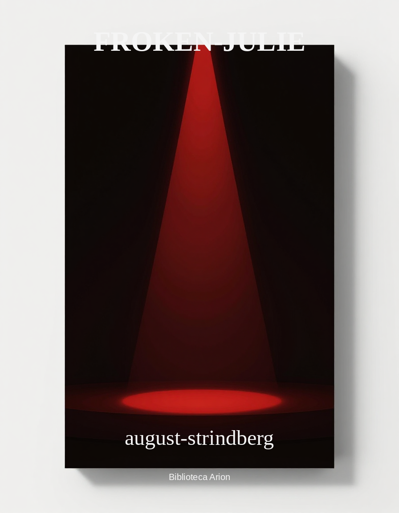

Froken-Julie
1977 Books and Pamphlets Jan-June/R
Autor: –autor Font: wikisource Llengua: –obra
←BB1977 Books and Pamphlets Jan-Junethe United States Copyright OfficeR [renewals]→20559191977 Books and Pamphlets Jan-June — R [renewals]the United States Copyright Office
R612771.
The Mountains have a secret. By Arthur W. Upfield. © 19Aug48; A25122. James Arthur Upfield (C); 29Aug75; R612771.
R647205.
Traffic appliances and radio. By General Electric Supply Corporation. © 16Sep49; AA129622. Weinberg and McKee, Inc. (PWH); 26Nov76; R647205.
R648017.
Divine Lord and Saviour. By Albertus Pieters. © 31Jan49; A31882. Albertus Pieters (A); 9Dec76; R648017.
R649703.
Francis Bacon: philosopher of industrial science. By Benjamin Farrington. © 22Nov49; A38638. Abelard-Schuman (formerly Henry Schuman, Inc.) (PWH); 15Dec76; R649703.
R649884.
Laboratory and workbook units in chemistry; consumable ed. By Maurice U. Ames & Bernard Jaffe. © on revisions; 7May49; AA117148. Bernard Jaffe (A); 28Dec76; R649884.
R650151.
Three scenes from the film “Bicycle thief.” (In The Christian Science monitor, Dec. 28, 1949) © 28Dec49; B224125. Produzioni De Sica. S. A. R. L. (PWH); 3Jan77; R650151.
R650178.
Cordelia; a novel. By Winston Graham. U.S. ed. pub. 19Jan50, A40152. © 3May49; AIO-36. Winston Graham (A); 23Dec76; R650178.
R650180.
Letter from Germany. By Jean Stafford. (In New Yorker. Dec. 3. 1949) © 1Dec49; B220276. Jean Stafford (A); 28Dec76; R650180.
R650181.
A Revival of Ronald Firbank. By Edmund Wilson. (In New Yorker, Dec. 10, 1949) © 8Dec49; B221692. Elena Wilson (W); 28Dec76; R650181.
R650182.
Uncles; story. By Peter Taylor. (In New Yorker, Dec. 17, 1949) © 15Dec49; B222799. Peter Taylor (A); 28Dec76; R650182.
R650183.
B. H. Higgin. By Randall Jarrell. (In Nation, Dec. 17, 1949) © 15Dec49; B222994. Mary Von Schrader Jarrell (W); 28Dec76; R650183.
R650184.
Knight’s gambit. By Edmund Wilson. (In New Yorker, Dec. 24, 1949) © 22Dec49; B223739. Elena Wilson (W); 28Dec76; R650184.
R650185.
W. E. Henley. By Edmund Wilson. (In New Yorker, Dec. 24, 1949) © 22Dec49; B223739. Elena Wilson (W); 28Dec76; R650185.
R650189.
Death and the baroque. By Aldous Huxley. (In Harper’s magazine, Apr. 1949) © 6Apr49; B188507. Laura A. Huxley (W); 16Dec76; R650189.
R650190.
The Conscience of a liberal. By Chester Bowles. (In The New York times, July 24, 1949) © 24Jul49; B201477. Chester Bowles (A); 16Dec76; R650190.
R650191.
The Negro in America. By Arnold Rose, with a foreword by Gunnar Myrdal. A condensation of An American dilemma by Gunnar Myrdal with the assistance of Richard Sterner & Arnold Rose. NM: condensation, revisions, additions & foreword. © 23Jun48; A23601. Caroline Rose (W); 27May76; R650191.
R650192.
Introduction to advertising principles and practice. By Thomas Edward Maytham. © 9Jan48; A23595. Thomas Maytham (C); 27May76; R650192.
R650193.
Fundamentals of economics, a textbook for introductory college courses in economic principles. By Paul Fleming Gemmill. 5th ed. © 30Mar49; A32003. Paul F. Gemmill (A); 17Dec76; R650193.
R650194.
Jenny’s moonlight adventure. Written & illustrated by Esther Averill. © 30Mar49; A32011. Esther Averill (A); 17Dec76; R650194.
R650195.
Advertising copy. By George Burton Hotchkiss. 3rd ed. © 30Mar49; A32025. Ellen S. Kilduff (W); 17Dec76; R650195.
R650196.
The Standard building of our nation. By Eugene C. Barker, Henry Steele Commager & Walter P. Webb. Prev. pub. as The Building of our nation. NM: general revision & additions. © 3Jan49; A32270. George K. Meriwether (E of Eugene C.Barker) & Henry Steele Commager (A); 17Dec76; R650196.
R650197.
Our nation. By Eugene C. Barker & Henry Steele Commager. Prev. pub. under the same title. NM: revision & additions. © 1Sep49; A37871. George K. Meriwether (E of Eugene C. Barker) & Henry Steele Commager (A); 17Dec76; R650197.
R650198.
The Story of medicine. By Joseph Garland & Erwin H. Austin. © 26Apr49; A32294. Joseph E. Garland (C); 17Jan77; R650198.
R650199.
Make it and make it pay! By Catherine Roberts. © 30Aug49; A35567. Catherine Roberts (A); 17Jan77; R650199.
R650200.
The Vital center: the politics of freedom. By Arthur M. Schlesinger, Jr. © 8Sep49; A35907. Arthur M. Schlesinger. Jr. (A); 17Jan77; R650200.
R650201.
Nutrition. By Margaret S. Chaney, Margaret Ahlborn Montgomery & Alice P. Blood. 4th ed. © 26Sep49; A36688. Margaret S. Chaney (A); 17Jan77; R650201.
R650202.
America’s Ethan Allen. By Stewart Holbrook, illustrator: Lynd Ward. © 4Oct49; A36885. Sibyl Holbrook Stahl (W) & Lynd Ward (A); 17Jan77; R650202.
R650203.
Introduction to mathematics; a survey emphasizing mathematical ideas and their relations to other fields of knowledge. By Morris Kline, Howard Wahlert, David Gans & Hollis Cooley. 2nd ed. © 13Oct49; A37548. Mildred S. Wahlert (W), Hollis R. Cooley, David Gans & Morris Kline (A); 17Jan77; R650203.
R650204.
The House under the hill. By Florence Crannell Means & Helen Blair. © 14Oct49; A37549. Florence Crannell Means (A); 17Jan77; R650204.
R650205.
American heartwood. By Donald Culross Peattie & David Hendrickson, NM: about 50% new material. © 14Oct49; A37551. Noel R. Peattie (C); 17Jan77; R650205.
R650206.
Where to ski: ski guide to the U.S. and Canada. By Joan & David Landman. © 25Oct49; A37552. Joan & David Landman (A); 17Jan77; R650206.
R650207.
The Only gift. By Jane Mary Eklund. © 18Oct49; A37620. Jane Mary Eklund (A); 17Jan77; R650207.
R650208.
Pepper and pirates: adventures in the Sumatra pepper trade of Salem. By James Duncan Phillips. © 28Nov49; A38955. Augustus P. Loring (E); 17Jan77; R650208.
R650209.
My camera in Yosemite Valley. By Ansel Adams. © 30Nov49; A39299. Ansel Adams (A); 17Jan77; R650209.
R650210.
Pleasure dome: on reading modern poetry. By Lloyd Frankenberg. © 21Nov49; A38659. Loren MacIver (W); 17Jan77; R650210.
R650213.
Discovering your real interests. By G. Frederic Kuder & Blanche B. Paulson. © 15Jan49; A30315. Science Associates, Inc. (PWH); 29Dec76; R650213.
R650214.
Instructor’s guide to Discovering your real interests. By G. Frederic Kuder & Blanche B. Paulson. © 15Jan49; A30316. Science Associates, Inc. (PWH); 29Dec76; R650214.
R650215.
Electricians and electrical workers. By Alice Helen Frankel. (Occupational briefs on America’s major job fields, no. 25) NM: material completely rewritten. © 12Jan49; AA105269. Science Associates, Inc. (PWH); 29Dec76; R650215.
R650216.
Civil engineers. By Alice Helen Frankel. (Occupational briefs on America’s major job fields, no. 26) NM: material completely rewritten. © 12Jan49; AA105270. Science Associates, Inc. (PWH); 29Dec76; R650216.
R650217.
Electrical engineers. By Alice Helen Frankel. (Occupational briefs on America’s major job fields, no. 27) NM: material completely rewritten. © 12Jan49; AA105271. Science Associates, Inc. (PWH); 29Dec76; R650217.
R650218.
Mechanical engineers. By Alice Helen Frankel. (Occupational briefs on America’s major job fields, no. 28) NM: material completely rewritten. © 12Jan49; AA105272. Science Associates, Inc. (PWH); 29Dec76; R650218.
R650219.
Chemists. By Alice Helen Frankel. (Occupational briefs on America’s major: job fields, no. 29) NM: material completely rewritten. © 12Jan49; AA105273. Science Associates, Inc. (PWH); 29Dec76; R650219.
R650220.
General farmers. By Alice Helen Frankel. (Occupational briefs on America’s major job fields, no. 30) NM: material completely rewritten. © 12Jan49; AA105274. Science Associates, Inc. (PWH); 29Dec76; R650220.
R650226.
Sam Hard in the gold rush. By Carvel Collins. © 28Jan49; A30285. Carvel Collins (A); 17Dec76; R650226.
R650247.
College teaching and college learning. By Ordway Read. © 19Jan49; A29616. Yale University (PWH); 17Jan77; R650247.
R650358.
Piano primer. By Louise Curcio. © 18Aug49; AA125418. Louise Curcio (A); 30Dec76; R650358.
R650415.
Complete guide to handloading. By Philip B. Sharpe. NM: revisions & additions. © 17Jan49; A29281. L. Marguerite Sharpe (W); 29Dec76; R650415.
R650419.
Toys. By Bertha Morris Parker. © 2Jan49; A34053. Bertha Morris Parker (A); 30Dec76; R650419.
R650420.
Animal world. By Bertha Morris Parker & Illa Podendorf. © 4Feb49; AA106743. Bertha Morris Parker (A); 30Dec76; R650420.
R650421.
Birds in your backyard. By Bertha Morris Parker. © 4Feb49; AA106746. Bertha Morris Parker (A); 30Dec76; R650421.
R650422.
Leaves. By Bertha Morris Parker. © 4Feb49; AA106747. Bertha Morris Parker (A); 30Dec76; R650422.
R650423.
Plant world. By Bertha Morris Parker & Illa Podendorf. © 4Feb49; AA106748. Bertha Morris Parker (A); 30Dec76; R650423.
R650424.
Community health. By Bertha Morris Parker & H. Elizabeth Downing. © 2Jan49; AA120975. Bertha Morris Parker (A); 30Dec76; R650424.
R650425.
Six-legged neighbors. By Bertha Morris Parker. © 17Jan49; AA132344. Bertha Morris Parker (A); 30Dec76; R650425.
R650428.
Trial and error; the autobiography of Chalm Weizmann. By Chalm Weizmann. © 5Jan49; A43795. Abraham Levin (E); 28Dec76; R650428.
R650433.
The Psychology or the elementary-school child. By Lawrence A. Averill. © 5Jan49; A28977. Lawrence A. Averill (A); 30Dec76; R650433.
R650434.
Modern American plays. Editor: Frederic G. Cassidy. NM: text made up mainly from prev. reg. material. © 12Jan49; A29810. Frederic G. Cassidy (A); 30Dec76; R650434.
R650435.
Card wizard. By William O. Turner. © 31Jan49; A29827. William O. Turner (A); 30Dec76; R650435.
R650436.
Kentucky Derby winner. By Isabel McLennan McMeekin. © 25Apr49; A32258. Isabel McLennan McMeekin (A); 30Dec76; R650436.
R650437.
Fiddling cowboy. By Adolph Regli. © 30Sep49; A36576. Adolph Regli (A); 30Dec76; R650437.
R650438.
Ideas behind the chess openings. By Reuben Fine. NM: revisions & additions. © 15Oct49; A37206. Reuben Fine (A); 30Dec76; R650438.
R650439.
Work-book in abnormal psychology. By Sarah Smith Morgan. NM: revisions. © 5Jan49; AA103881. Sarah Smith Morgan (A); 30Dec76; R650439.
R650443.
The Argument with death; short story. By Frank O’Rourke. (In Saturday evening post, Nov. 5. 1949) © 2Nov49; B216982. Frank O’Rourke (A); 19Jan77; R650443.
R650444.
The Impossible play; short story. By Frank O’Rourke. (In Saturday evening post, Sept. 3, 1949) © 31Aug49; B207795. Frank O’Rourke (A); 19Jan77; R650444.
R650445.
Personal problems; psychology applied to everyday Living. By John B. Geisel &Francis T. Spaulding. NM: additions. © 8Aug49; A35209. Joan V. Geisel (PPW of John B. Geisel); 12Jan77; R650445.
R650446.
The Origins of modern constitutionalism. By Francis Dunham Wormuth. © 5Jan49; A28885. Francis Dunham Wormuth (A); 10Dec76; R650446.
R650447.
Effective business English. By Robert R. Aurner. 3rd ed. © 26Jan49; A33283. Robert R. Aurner (A); 19Jan77; R650447.
R650448.
At the meeting of two families. By V. R. Lang. (In Poetry, Nov. 1949) © 3Nov49; B217323. Bradley Phillips (Wr); 10Dec76; R650448.
R650449.
Don Juan. By Lord George Gordon Byron, introd. by Louis Kronenberger. © on introd.; 17Nov49; A38417. Random House, Inc. (PWH); 10Dec76; R650449.
R650450.
Fourteen great detective stories. By Howard Haycraft. © 10Nov49; A38416. Random House, Inc. (PWH); 10Dec76; R650450.
R650451.
Black Beauty. By Anna Sewell, adaptation by Eleanor Graham Vance, illus. by Phoebe Erickson. NM: adaptation & illus. © 2Nov49; A37982. Random House, Inc. (PWH); 10Dec76; R650451.
R650452.
The Wonderful house-boat train. By Ruth Stiles Gannett, illustrator: Fritz Eichenberg. © 7Nov49; A37981. Ruth Stiles Gannett (A) & Random House, Inc. (PWH of Fritz Eichenberg); 10Dec76; R650452.
R650453.
The Kids. By John O’Hara. (In The New Yorker, Nov. 26, 1949) © 24Nov49; B219847. Wylie O’Hara Doughty (C); 10Dec76; R650453.
R650454.
Religious corn. By Virgil Thomson. (In New York herald tribune. Nov. 19, 1949) © 19Nov49; B219039. Virgil Thomson (A); 10Dec76; R650454.
R650467.
The American problem of government. By Chester Collins Maxey. © 6Jan49; A29038. Chester Collins Maxey (A); 30Dec76; R650467.
R650468.
American social reform movements: their pattern since 1865. By Thomas H. Greer. © 19Jan49; A29493. Thomas H. Greer (A); 30Dec76; R650468.
R650469.
You must see Canada. By Cecil Carnes. © 10Feb49; A29855. Cecil Carnes (A); 30Dec76; R650469.
R650479.
Scientific foundations of vacuum technique. By Saul Dushman. © 4Jan49; A28952. Beulah Dushman (C); 29Dec76; R650479.
R650480.
Introduction to radiochemistry. By Gerhart Friedlander & Joseph W. Kennedy. © 24Jun49; A33821. Gerhart Friedlander (A); 29Dec76; R650480.
R650481.
Industrial electronics and control. By Royce Gerald Kloeffler. © 3Jan49; A28725. Boyce Gerald Kloeffler (A); 20Dec76; R650481.
R650482.
Motion and time study. By Ralph M. Barnes. 3rd ed. © 3Jan49; A28728. Ralph M. Barnes (A); 20Dec76; R650482.
R650483.
The Avian egg. By Alexis L. Romanoff & Anastasia J. Romanoff. © 12Jan49; A29605. Alexis L. Romanoff & Anastasia J. Romanoff (A); 10Jan77; R650483.
R650484.
Adolescent character and personality. By Robert J. Havighurst & Hilda Taba. © 14Feb49; A29973. Robert J. Havighurst (A); 20Dec76; R650484.
R650485.
A Geography of man. By Preston E. James & Hibberd V. B. Kline, Jr. © 26Jan49; A31658. Preston E. James (A); 20Dec76; R650485.
R650498.
She wants a drink of water. By Peter Arno. (In New Yorker. Jan. 22, 1949) © 20Jan49; B176705. Patricia Arno Maxwell (C); 5Jan77; R650498.
R650511.
Black gold in the Joaquin. By Frank Forrest Latta. © 29Sep49; A36953. F. F. Latta (A); 6Jan77; R650511.
R650512.
Tales of the magic mirror. By Karl H. Bratton. © 15Nov49; A38392. Karl H. Bratton (A); 6Jan77; R650512.
R650513.
Etched in purple. By Frank Jacob Irgang. © 5Dec49; A38945. Frank J. Irgang (A); 6Jan77; R650513.
R650514.
Letters from Albert Jay Nock. By Ellen Winsor & Rebecca Winsor Evans. © 15Dec49; A39296. Ellen Winsor & Rebecca Winsor Evans (A); 6Jan77; R650514.
R650515.
God’s plan for man. By Finis Jennings Dake. © 1Dec49; A40736. Finis Jennings Dake (A); 6Jan77; R650515.
R650516.
The Eye of God. By Ludwig Bemelmans. Portions appeared in June-Sept. 1949 issues of Town and country & in May 24, 1947 issue of The New Yorker. © on prev. unpub. material & compilation; 28Oct49; A37584. Madeleine Bemelmans (W) & Barbara Bemelmans Marciano (C); 6Jan77; R650516.
R650517.
The Isle of Capri. By Ludwig Bemelmans. (In Holiday, Nov. 1949) © 17Oct49; B214867. Madeleine Bemelmans (W) & Barbara Bemelmans Marciano (C); 6Jan77; R650517.
R650518.
Cinderella Isle. By Ludwig Bemelmans. (In Holiday, Dec. 1949) © 16Nov49; B219208. Madeleine Bemelmans (W) & Barbara Bemelmans Marciano (C); 6Jan77; R650518.
R650519.
Sunshine, sunshine, go away. By Ludwig Bemelmans. (In Good housekeeping, Dec. 1949) © 18Nov49; B219559. Madeleine Bemelmans (W) & Barbara Bemelmans Marciano (C); 6Jan77; R650519.
R650520.
Chiropractic bloodless surgery. By Bertrand De Jarnette. © 10Feb49; AA107277. Bertrand De Jarnette (A); 7Jan77; R650520.
R650525.
Portraits, 1948. By Christine Louise Richards. © 7Feb49; AA108954. Christine Louise Richards (A); 3Jan77; R650525.
R650527.
Advances in carbohydrate chemistry. Vol. 4. Editors: William Ward Pigman & Melville L. Wolfrom. © 27Sep49; AA130574. Academic Press, Inc. (PCW); 10Jan77; R650527.
R650528.
Survey of biological progress. Vol. 1. Editor: George Sherman Avery, Jr. © 6Oct49; AA131944. Academic Press, Inc. (PCW); 10Jan77; R650528.
R650529.
Recent progress in hormone research; proceedings of the Laurentian Hormone Conference. Vol. 4. Editor: Gregory Goodwin Pincus. © 26Oct49; AA132456. Academic Press, Inc. (PCW); 10Jan77; R650529.
R650530.
Vitamins and hormones: advances in research and application. Vol. 7. Editors: Robert Samuel Harris & Kenneth Vivian Thimann. © 29Nov49; AA135628. Academic Press, Inc. (PCW); 10Jan77; R650530.
R650531.
Advances in food research. Vol. 2. Editors: Emil Marcel Mrak & George Franklin Stewart. © 14Dec49; AA136567. Academic Press, Inc. (PCW); 10Jan77; R650531.
R650648.
The Fixative for water fastness, Tinofix A Liquid. By Geigy Company, Inc. © 19May49; AA117583. Ciba-Geigy Corporation (PWH); 4Jan77; R650648.
R650654.
Superman. By National Comics Publications, Inc. (In Lowell (MA) sun, Mar. 19, 1949) © 19Mar49; B5-11362. DC Comics, Inc. (PWH); 5Jan77; R650654.
R650655.
Superman. By National Comics Publications, Inc. (In Lowell (MA) sun, Mar. 18, 1949) © 18Mar49; B5-11363. DC Comics, Inc. (PWH); 5Jan77; R650655.
R650656.
Superman. By National Comics Publications, Inc. (In Lowell (MA) sun, Mar. 17, 1949) © 17Mar49; B5-11364. DC Comics, Inc. (PWH); 5Jan77; R650656.
R650657.
Superman. By National Comics Publications, Inc. (In Lowell (MA) sun, Mar. 16, 1949) © 16Mar49; B5-11365. DC Comics, Inc. (PWH); 5Jan77; R650657.
R650658.
Superman. By National Comics Publications, Inc. (In Lowell (MA) sun, Mar. 15, 1949) © 15Mar49; B5-11366. DC Comics, Inc. (PWH); 5Jan77; R650658.
R650659.
Superman. By National Comics Publications, Inc. (In Lowell (MA) sun, Mar. 14, 1949) © 14Mar49; B5-11367. DC Comics, Inc. (PWH); 5Jan77; R650659.
R650660.
Superman. By National Comics Publications, Inc. (In New York Sunday mirror, Mar. 13, 1949) © 13Mar49; B5-11368. DC Comics, Inc. (PWH); 5Jan77; R650660.
R650661.
Superman. By National Comics Publications, Inc. (In Lowell (MA) sun, Mar.11, 1949) © 11Mar49; B5-11369. DC Comics, Inc. (PWH); 5Jan77; R650661.
R650662.
Superman. By National Comics Publications Inc. (In Lowell (MA) sun, Mar. 12, 1949) © 12Mar49; B5-11370. DC Comics, Inc. (PWH); 5Jan77; R650662.
R650663.
Superman. By National Comics Publications, Inc. (In Lowell (MA) sun, Mar. 10, 1949) © 10Mar49; B5-11371. DC Comics, Inc. (PWH); 5Jan77; R650663.
R650664.
Superman. By National Comics Publications, Inc. (In Lowell (MA) sun, Mar. 9, 1949) © 9Mar49; B5-11372. DC Comics, Inc. (PWH); 5Jan77; R650664.
R650665.
Superman. By National Comics Publications, Inc. (In Lowell (MA) sun, Mar. 8, 1949) © 8Mar49; B5-11373. DC Comics, Inc. (PWH); 5Jan77; R650665.
R650666.
Superman. By National Comics Publications, Inc. (In Lowell (MA) sun, Mar. 7, 1949) © 7Mar49; B5-11374. DC Comics, Inc. (PWH); 5Jan77; R650666.
R650667.
Superman. By National Comics Publications, Inc. (In New York Sunday mirror, Mar. 6, 1949) © 6Mar49; B5-11375. DC Comics, Inc. (PWH); 5Jan77; R650667.
R650668.
Superman. By National Comics Publications, Inc. (In Lowell (MA) sun, Mar. 5, 1949) © 5Mar49; B5-11376. DC Comics, Inc. (PWH); 5Jan77; R650668.
R650669.
Superman. By National Comics Publications, Inc. (In Lowell (MA) sun, Mar. 4, 1949) © 4Mar49; B5-11377. DC Comics, Inc. (PWH); 5Jan77; R650669.
R650670.
Superman. By National Comics Publications, Inc. (In Lowell (MA) sun, Mar. 3, 1949) © 3Mar49; B5-11378. DC Comics, Inc. (PWH); 5Jan77; R650670.
R650671.
Superman. By National Comics Publications, Inc. (In Lowell (MA) sun, Mar. 2, 1949) © 2Mar49; B5-11379. DC Comics, Inc. (PWH); 5Jan77; R650671.
R650672.
Superman. By National Comics Publications, Inc. (In Lowell (MA) sun, Mar. 1, 1949) © 1Mar49; B5-11380. DC Comics, Inc. (PWH); 5Jan77; R650672.
R650673.
Superman. By National Comics Publications, Inc. (In New York Sunday mirror, Mar. 20, 1949) © 20Mar49; B5-12193. DC Comics, Inc. (PWH); 5Jan77; R650673.
R650674.
Superman. By National Comics Publications, Inc. (In Lowell (MA) sun, Mar. 22, 1949) © 22Mar49; B5-12194. DC Comics, Inc. (PWH); 5Jan77; R650674.
R650675.
Superman. By National Comics Publications, Inc. (In Lowell (MA) sun, Mar. 21, 1949) © 21Mar49; B5-12195. DC Comics, Inc. (PWH); 5Jan77; R650675.
R650676.
Superman. By National Comics Publications, Inc. (In Lowell (MA) sun, Mar. 23, 1949) © 23Mar49; B5-12196. DC Comics, Inc. (PWH); 5Jan77; R650676.
R650677.
Superman. By National Comics Publications, Inc. (In Lowell (MA) sun. Mar. 24, 1949) © 24Mar49; B5-12197. DC Comics. Inc. (PWH); 5Jan77; R650677.
R650678.
Superman. By National Comics Publications, Inc. (In Lowell (MA) sun, Mar. 25, 1949) © 25Mar49; B5-12198. DC Comics, Inc. (PWH); 5Jan77; R650678.
R650679.
Superman. By National Comics Publications, Inc. (In Lowell (MA) sun, Mar. 26, 1949) © 26Mar49; B5-12199. DC Comics, Inc. (PWH); 5Jan77; R650679.
R650680.
Superman. By National Comics Publications, Inc. (In New York Sunday mirror, Mar. 27, 1949) © 27Mar49; B5-12200. DC Comics, Inc. (PWH); 5Jan77; R650680.
R650681.
Superman. By National Comics Publications, Inc. (In Lowell (MA) sun, Mar. 28, 1949) © 28Mar49; B5-12201. DC Comics, Inc. (PWH); 5Jan77; R650681.
R650682.
Superman. By National Comics Publications, Inc. (In Lowell (MA) sun, Mar. 29, 1949) © 29Mar49; B5-12202. DC Comics, Inc. (PWH); 5Jan77; R650682.
R650683.
Superman. By National Comics Publications, Inc. (In Lowell (MA) sun, Mar. 30, 1949) © 30Mar49; B5-12203. DC Comics, Inc. (PWH); 5Jan77; R650683.
R650684.
Superman. By National Comics Publications, Inc. (In Lowell (MA) sun, Mar. 31, 1949) © 31Mar49; B5-12204. DC Comics, Inc. (PWH); 5Jan77; R650684.
R650685.
Walt Disney’s The Romance of Cinderella. © 21Dec49; AA137265. Walt Disney Productions (PWH); 5Jan77; R650685.
R650686.
Walt Disney’s Brer Rabbit. Adapted from Uncle Remus stories by Joel Chandler Harris, by staff of Walt Disney. © 28Dec49; AA139441. Walt Disney Productions (PWH); 5Jan77; R650686.
R650687.
Walt Disney’s Donald Duck and the mystery of the Double X. © 28Dec49; AA139442. Walt Disney Productions (PWH); 5Jan77; R650687.
R650688.
Donald Duck, December 18, 1949. © 6Dec49; AA139607. Walt Disney Productions (PWH); 5Jan77; R650688.
R650689.
Donald Duck, December 19-24, 1949. © 6Dec49; AA139608. Walt Disney Productions (PWH); 5Jan77; R650689.
R650690.
Donald Duck, December 25, 1949. © 13Dec49; AA139609. Walt Disney Productions (PWH); 5Jan77; R650690.
R650691.
Donald Duck, December 26-31, 1949. © 13Dec49; AA139610. Walt Disney Productions (PWH); 5Jan77; R650691.
R650692.
Donald Duck, January 1, 1950. © 20Dec49; AA139611. Walt Disney Productions (PWH); 5Jan77; R650692.
R650693.
Donald Duck, January 2-7, 1950. © 20Dec49; AA139612. Walt Disney Productions (PWH); 5Jan77; R650693.
R650694.
Mickey Mouse, December 19-24, 1949. © 6Dec49; AA139617. Walt Disney Productions (PWH); 5Jan77; R650694.
R650695.
Mickey Mouse, December 26-31, 1949. © 13Dec49; AA139618. Walt Disney Productions (PWH); 5Jan77; R650695.
R650696.
Mickey Mouse. January 2-7, 1950. © 20Dec49; AA139619. Walt Disney Productions (PWH); 5Jan77; R650696.
R650697.
Uncle Remus, December 18, 1949. © 6Dec49; AA139621. Walt Disney Productions (PWH); 5Jan77; R650697.
R650698.
Mickey Mouse, December 18, 1949. © 6Dec49; AA139622. Walt Disney Productions (PWH); 5Jan77; R650698.
R650699.
Uncle Remus, December 25, 1949. © 13Dec49; AA139623. Walt Disney Productions (PWH); 5Jan77; R650699.
R650700.
Mickey Mouse, December 25, 1949. © 13Dec49; AA139624. Walt Disney Productions (PWH); 5Jan77; R650700.
R650701.
Uncle Remus, January 1, 1950. © 20Dec49; AA139625. Walt Disney Productions (PWH); 5Jan77; R650701.
R650702.
Mickey Mouse, January 1, 1950. © 20Dec49; AA139626. Walt Disney Productions (PWH); 5Jan77; R650702.
R650703.
Walt Disney’s Donald Duck in Land of the totem poles. No. 263. By Walt Disney Productions. © 20Dec49; AA143260. Walt Disney Productions (PWH); 5Jan77; R650703.
R650704.
Walt Disney’s Paint book. No. 1125. Art & text by Walt Disney Productions. © 19Dec49; AA153234. Walt Disney Productions (PWH); 5Jan77; R650704.
R650706.
Cooperative French test. Lower level, form X. By group of 6. © 16Nov49; AA133232. Educational Testing Service (PWH); 10Jan77; R650706.
R650707.
Cooperative French test. Lower level, form S. By group of 8. © 16Nov49; AA133233. Educational Testing Service (PWH); 10Jan77; R650707.
R650708.
American Council on Education French reading test. form B. By F. D. Cheydleur, V. A. C. Henmon & M. J. Walker. © 28Nov49; AA134443. Educational Testing Service (PWH); 10Jan77; R650708.
R650709.
Cooperative English test, single booklet edition. Lower level, form S. By group of 15. © 5Dec49; AA134995. Educational Testing Service (PWH); 10Jan77; R650709.
R650710.
Educational Testing Service cooperativeAmerican history test; revised series. Form Z. By group of 8. © 2Dec49; AA135073. Educational Testing Service (PWH); 10Jan77; R650710.
R650711.
Educational Testing Service cooperative world history test; revised series. Form Z. By group of 8. © 2Dec49; AA135074. Educational Testing Service (PWH); 10Jan77; R650711.
R650712.
English composition test. Form XAC4. By group of 10. © 10Dec49; AA136488. Educational Testing Service (PWH); 10Jan77; R650712.
R650713.
Intermediate mathematics test. Pre-engineering science test. Advanced mathematics test. Form XAC. By group of 15. © 10Dec49; AA136489. Educational Testing Service (PWH); 10Jan77; R650713.
R650714.
Reading comprehension. Lower level, form S. By group of 9. (Cooperative English test, test C1) © 30Dec49; AA136899. Educational Testing Service (PWH); 10Jan77; R650714.
R650715.
A.C.S. cooperative organic chemistry test. Form Y. By group of 42. © 30Dec49; AA189084. Educational Testing Service (PWH); 10Jan77; R650715.
R650716.
Cooperative French test; revised series. Elementary form R. By group of 6. © 30Dec49; AA143624. Educational Testing Service (PWH); 10Jan77; R650716.
R650717.
Cooperative Latin test; revised series. Elementary form R. By group of 5. © 30Dec49; AA143823. Educational Testing Service (PWH); 10Jan77; R650717.
R650730.
The Ideal reference atlas of the world. By C. S. Hammond and Company. Inc. © 19Oct49; A39023. Hammond, Inc. (PWH); 3Jan77; R650730.
R650738.
Commodity exchanges and futures trading: principles and operating methods. By Julius B. Baer & Olin Glenn Saxon. Smaller ed. prev. pub. 1929 as Commodity exchanges, by Julius B. Baer & George P. Woodruff. NM: amplification & enlargement. © 5Jan49; A28871. Victor Baer, Olin Glenn Saxon, Jr. & Philip D. Saxon (C); 5Jan77; R650738.
R650739.
School health education: a textbook for teachers, nurses and other professional personnel, education, physical education and recreation. By Delbert Oberteuffer. (Harper’s Series in school and public health) © 16Mar49; A32015. Delbert Oberteuffer (A); 5Jan77; R650739.
R650740.
No cause for alarm. By Virginia Cowles (Virginia Cowles Crawley) Appl. states all new except portions prev. pub. in the Oct. 1949 issues of Harper’s Magazine & The American mercury. © 13Oct49; A37335. Virginia Cowles (A); 5Jan77; R650740.
R650741.
Mister Churchill. By Virginia Cowles (Virginia Cowles Crawley) (In The American mercury, Oct. 1949) © 14Sep49; B211326. Virginia Cowles (A); 5Jan77; R650741.
R650742.
The British rich today. By Virginia Cowles (Virginia Cowles Crawley) (In Harper’s magazine, Oct. 1949) © 5Oct49; B215770. Virginia Cowles (A); 5Jan77; R650742.
R650743.
The Way to write. By Rudolf Flesch & Abraham Harold Lass. NM: pref. & revisions. © 5Jan49; A28872. Rudolf Flesch (A); 3Jan77; R650743.
R650744.
Let’s go to Colombia. Illustrated with 52 original photos. & 19 maps by the authors Lyman Judson & Ellen Judson. © 5Jan49; A28873. Lyman Judson (A); 3Jan77; R650744.
R650745.
Man’s restless search. By Barbara Spofford Morgan. Prev. pub. as Skeptic’s search for God. NM: revisions & pref. © 5Jan49; A28874. Barbara Spofford Morgan (A); 3Jan77; R650745.
R650746.
Keeping men on their feet. By Frederick Keller Stamm. © 5Jan49; A28882. Mrs. Thomas E. Fellows (C); 3Jan77; R650746.
R650747.
Introduction to physical biochemistry. By J. M. Johlin. 2nd ed. © 13Jan49; A28988. Ruth I. Johlin (W); 3Jan77; R650747.
R650748.
College algebra. By Edward A. Cameron & Edward T. Browne. © 14Jan49; A29106. Holt, Rinehart and Winston (PWH); 3Jan77; R650748.
R650749.
Studies in philosophy and science. By Morris R. Cohen. © 17Jan49; A29382. Harry N. Rosenfield (E); 3Jan77; R650749.
R650750.
The Winston dictionary for schools. By the Winston dictionary staff. 1949 ed. © 11Feb49; AA108507. Holt. Rinehart and Winston (PWH); 13Jan77; R650750.
R650751.
Nancy’s world. By Mary Willcockson. © 28Feb49; A30563. Holt, Rinehart and Winston (PWH); 13Jan77; R650751.
R650752.
Instructor’s manual to accompany A Survey of European civilization, second edition. By Wallace K. Ferguson, Geoffrey Bruun, Harry D. Berg & Martha E. Layman. © 14Jun49; AA120312. Wallace K. Ferguson, Geoffrey Bruun & Harry D. Berg (A); 3Jan77; R650752.
R650753.
The Harrison-Stroud reading readiness tests for direct measurement of specific skills necessary for learning to read. By M. Lucile Harrison & J. B. Stroud. © 4Sep49; AA135881. Paul Harrison (E) & J. B. Stroud (A); 3Jan77; R650753.
R650754.
The House at Noddy Cove. By Elizabeth Foster Hann, illustrated by Phyllis Cote. © 15Feb49; A30009. Phyllis Cote (A); 5Jan77; R650754.
R650756.
The Physiology of taste. by Jean A. Brillat-Savarin, translation & translator’s footnotes by M. F. K. Fisher, illus. by Sylvain Sauvage. NM: translation, translator’s footnotes & illus. © 28Nov49; A38828. The Heritage Press (PWH); 10Dec76; R650756.
R650757.
The Golden door: a story of Liberty’s children. By Hertha Pauli. © 3Oct49; A36892. E. B. Ashton (Wr); 10Dec76; R650757.
R650758.
Biology activities, instructor’s manual. By B. B. Vance, C. A. Barker & D. F. Miller. © 4Jan49; AA108771. Erma E. Vance (W); 4Jan77; R650758.
R650759.
The Man who made friends with himself. By Christopher Morley. © 18Apr49; A32116. Blythe Morley Brennan (C); 5Jan77; R650759.
R650760.
The Ironing board. By Christopher Morley. © 10Nov49; A38069. Blythe Morley Brennan (C); 5Jan77; R650760.
R650761.
The Essential oils. Vol. 2: the constituents of essential oils. By Ernest Guenther & Darrell Althausen. © 21Mar49; A31282. Litton Educational Publishing, Inc. (PWH); 3Jan77; R650761.
R650762.
Mathematics dictionary. Authors: Armen A. Alchian & others, edited by Glenn James & Robert C. James. © 14Oct49; A37443. Litton Educational Publishing, Inc. (PWH); 3Jan77; R650762.
R650763.
The Essential oils. Vol. 3. By Ernest Guenther. © 16Nov49; A38176. Litton Educational Publishing, Inc. (PWH); 3Jan77; R650763.
R650764.
A History of Spain. By Rafael Altamira, tr.: Muna Lee. © 7Oct49; A38427. Litton Educational Publishing, Inc. (PWH); 3Jan77; R650764.
R650765.
Ways with watercolor. By Theodore Kautzky. © 15Dec49; A39593. Litton Educational Publishing, Inc. (PWH); 3Jan77; R650765.
R650774.
Just this once. By Max Trell. (In Hearst’s International cosmopolitan, Jan. 1950) © 30Dec49; B225205. Max Trell (A); 3Jan77; R650774.
R650775.
The Case of the negligent nymph. By Erle Stanley Gardner. (In Collier’s, Sept. 17, 1949) © 9Sep49; B209543. Jean Bethell Gardner (W); 3Jan77; R650775.
R650776.
The Case of the negligent nymph. By Erle Stanley Gardner. (In Collier’s, Sept. 24, 1949) © 16Sep49; B210016. Jean Bethell Gardner (W); 3Jan77; R650776.
R650777.
The Case of the negligent nymph. By Erle Stanley Gardner. (In Collier’s, Oct. 1, 1949) © 23Sep49; B211005. Jean Bethell Gardner (W); 3Jan77; R650777.
R650778.
The Case of the negligent nymph. By Erle Stanley Gardner. (In Collier’s, Oct. 8, 1949) © 30Sep49; B211698. Jean Bethell Gardner (W); 3Jan77; R650778.
R650779.
The Case of the negligent nymph. By Erle Stanley Gardner. (In Collier’s, Oct. 15, 1949) © 7Oct49; B212196. Jean Bethell Gardner (W); 3Jan77; R650779.
R650780.
The Case of the negligent nymph. By Erle Stanley Gardner. (In Collier’s, Oct. 22, 1949) © 14Oct49; B213166. Jean Bethell Gardner (W); 3Jan77; R650780.
R650781.
Rustlers’ moon. By Will Ermine, introd. by Erle Stanley Gardner. NM: introd. © 27Jul49; A34850. Jean Bethell Gardner (W); 4Jan77; R650781.
R650782.
The D. A. breaks an egg. By Erle Stanley Gardner. © 24Aug49; A35399. Jean Bethell Gardner (W); 4Jan77; R650782.
R650783.
The Man from Thief River. By Peter Field, introd. by Erle Stanley Gardner. (A Triple-A Western classic) © on introd.; 26Oct49; A37593. Jean Bethell Gardner (W); 4Jan77; R650783.
R650797.
Cancer. By Beka Doherty. © 2Nov49; A37980. Martin D. Kamen (Wr); 5Jan77; R650797.
R650821.
Guide through the romantic movement. By Ernest Bernbaum. 2nd ed., rev. & enl. © 28Jan49; A29500. Ruth Guenther Bernbaum (W); 5Jan77; R650821.
R650822.
The Universe of G. B. S. By William Irvine. © 14Oct49; A37281. Mrs. William Irvine (W); 5Jan77; R650822.
R650823.
Modern Greek poetry. editor & tr.: Rae Dalven. © 19Dec49; A39342. Rae Dalven (A); 5Jan77; R650823.
R650824.
Lasser’s Business tax handbook. By J. K. Lasser. © 28Dec49; A39516. J. K. Lasser (A); 3Jan77; R650824. (See also Lasser’s Business tax handbook; 21Oct77; R674425)
R650825.
College inventory of academic adjustment; blank, manual & key. By Henry Borow. © 29Dec49; AA139879. Henry Borow (A); 6Jan77; R650825.
R650844.
Midwinter rites of the Cayuga Long House. By Frank Gouldsmith Speck. © 28Dec49; A40993. Mrs. Frank G. Speck (W); 6Jan77; R650844.
R650845.
Lovely lady, pity me. By Roy Huggins. © 8Sep49; A36138. Roy Huggins (A); 6Jan77; R650845.
R650856.
The Ten little choochoo tales. By Richard M. Powers & K. M. Plowitz, & Jean Gracey, pseud. of Eva Knox Evans. © 14Dec49; AA139968. Western Publishing Company, Inc. (PWH); 6Jan77; R650856.
R650857.
The Big red pajama wagon. By Mary Elting & Betty Anderson. © 2Dec49; A40064. Western Publishing Company. Inc. (PWH); 6Jan77; R650857.
R650860.
Yucca Ranch. By Margaret B. Pumphrey. © 28Jul49; A34855. Margaret B. Pumphrey (A); 6Jan77; R650860.
R650861.
The Flagler story and Memorial Church. By Walter Howard Lee. © 9Dec49; AA138163. Memorial Presbyterian Church Society (PWH); 24Jan77; R650861.
R650862.
Venus and the seven sexes. By William Tenn, pseud. of Philip Klass. (In The Girl with the hungry eyes and other stories) © 14Feb49; A31745. Philip Klass (A); 3Jan77; R650862.
R650863.
No wall so high. By Anne Powers (Anne Powers Schwartz) © 23May49; A33149. Anne Powers (Mrs. Harold A. Schwartz) (A); 3Jan77; R650863.
R650864.
The Red wagon. By Czenzi Ormonde. (In Woman’s home companion, Apr. 1949) © 18Mar49; B181942. Czenzi Ormonde (A); 3Jan77; R650864.
R650865.
Bride of darkness. By Czenzi Ormonde. (In Woman’s home companion, Aug. 1949) © 22Jul49; B201592. Czenzi Ormonde (A); 3Jan77; R650865.
R650866.
World’s largest crossword puzzle. By Robert Melvin Stilgenbauer. © 24Sep49; AA129614. Robert M. Stilgenbauer (A); 3Jan77; R650866.
R650867.
The Story of our calendar. By Ruth Brindze. © 22Mar49; A31314. Ruth Brindze (A); 3Jan77; R650867.
R650900.
Hello, Mister Henderson. By William Hazlett Upson. NM: compilation of stories & additions. © 20Sep49; A36557. William Hazlett Upson (A); 10Jan77; R650900.
R650901.
Botts and the jet propelled tractor. By William Hazlett Upson. (In The Saturday evening post. Jan. 15, 1949) © 12Jan49; B172754. William Hazlett Upson (A); 10Jan77; R650901.
R650902.
Botts and the brink of disaster. By William Hazlett Upson. (In The Saturday evening post, Aug. 6, 1949) © 3Aug49; B203920. William Hazlett Upson (A); 10Jan77; R650902.
R650903.
Botts makes magic. By William Hazlett Upson. (In The Saturday evening post, Oct. 1, 1949) © 28Sep49; B211727. William Hazlett Upson (A); 10Jan77; R650903.
R650904.
Remember every word. Pt. 2. By Helen Reilly. (In Woman’s home companion, Feb. 1949) © 21Jan49; B174033. Katherine Reilly (C); 5Jan77; R650904.
R650905.
Remember every word. Pt. 3. By Helen Reilly. (In Woman’s home companion, Mar. 1949) © 18Feb49; B177527. Katherine Reilly (C); 5Jan77; R650905.
R650906.
The Last snake. By A. B. Guthrie, Jr. (In Esquire, Nov. 1949) © 28Sep49; B216860. A. B. Guthrie, Jr. (A); 14Jan77; R650906.
R650907.
Double wife. By Jerome Weidman. (In Today’s woman, Feb. 1949) © 26Jan49; B174657. Jerome Weidman (A); 5Jan77; R650907.
R650908.
What’s in a name? some letter I always forget. By Ogden Nash. (In Saturday evening post, Dec. 24, 1949) © 21Dec49; B223727. Frances Nash (W); Isabelle Nash Eberstadt & Linell Nash Smith (C); 14Jan77; R650908.
R650909.
The Strange case of the cautious motorist. By Ogden Nash. (In Saturday evening post, Jan. 7, 1950) © 4Jan50; B225989. Frances Nash (W) Isabelle Nash Eberstadt & Linell Nash Smith (C); 14Jan77; R650909.
R650910.
Carnival of animals. By Ogden Nash. (In The New Yorker, Jan. 7, 1950) © 5Jan50; B228390. Frances Nash (W) Isabelle Nash Eberstadt & Linell Nash Smith (C); 14Jan77; R650910.
R650954.
New words and words in the news. Suppl. no. 3, fall 1949. © 28Dec49; AA225450. Funk and Wagnalls Publishing Company, Inc. (originally called Funk and Wagnalls Company) (PWH); 3Jan77; R650954.
R650955.
Post-laryngectomy speech: you can speak again. By Charles E. Nelson. © 3Jun49; A33430. Elaine M. Anderson & Florence Calder (NK); 3Jan77; R650955.
R650961.
The New Down the river road. By Mabel C. O’Donnell. NM: additions & revisions. © 17Feb49; A37870. Mabel C. O’Donnell (A); 5Jan77; R650961.
R650962.
The Workbook for The New Down the river road. By Mabel C. O’Donnell. © 1May49; AA120976. Mabel C. O’Donnell (A); 5Jan77; R650962.
R650963.
Guidebook for The New Through the green gate. By Mabel C. O’Donnell. © 8Oct49; AA131958. Mabel C. O’Donnell (A); 5Jan77; R650963.
R650964.
Guidebook for teachers for The New Round about. By Mabel C. O’Donnell. NM: additions. © 7Jun49; AA131959. Mabel C. O’Donnell (A); 5Jan77; R650964.
R650965.
Guidebook for The New Down the river road. By Mabel C. O’Donnell. © 12Aug49; AA131961. Mabel C. O’Donnell (A); 5Jan77; R650965.
R650966.
The Workbook for The New If I were going. By Mabel C. O’Donnell & Margaret L. White. © 16Sep49; AA132345. Mabel C. O’Donnell (A); 5Jan77; R650966.
R650967.
The Workbook for The New Through the green gate. By Mabel C. O’Donnell. © 21Jul49; AA132346. Mabel C. O’Donnell (A); 5Jan77; R650967.
R650969.
Here is New York. By E. B. White. Prev. pub. in Holiday magazine, Apr. 1949. NM: foreword. © 14Dec49; A40167. E. B. White (A); 1Feb77; R650969.
R650999.
North Winds blow free. By Elizabeth Howard (Elizabeth Howard Mizner), frontispiece by Louis Darling. © 27Jul49; A34848. Elizabeth Howard (A); 6Jan77; R650999.
R651000.
Deborah’s white winter. By Eleanor Frances Lattimore (Eleanor Frances Lattimore Andrews), illustrated by the author. © 24Aug49; A35402. Eleanor Frances Lattimore Andrews (A); 6Jan77; R651000.
R651001.
The Smallest boy in the class. By Jerrold Beim, illustrated by Meg Wohlberg. © 24Aug49; A35403. Andrew L. Beim (C); 6Jan77; R651001.
R651002.
The Wise one. By Frank Conibear & J. Linacre Blundell, pseud. of Helen Blundell Walsh. © 22Jul49; A36260. Frank Conibear & Helen Blundell Walsh (A); 6Jan77; R651002.
R651003.
Play with plants. By Millicent E. Selsam, illustrator: James MacDonald. © 21Sep49; A36510. Millicent E. Selsam (A); 6Jan77; R651003.
R651004.
The Corpse with the missing watch. By R. A. J. Walling. © 29Aug49; A36765. Robert Victor Walling, Jose Greet Walling & Florence Marjorie Walling (C); 6Jan77; R651004.
R651005.
Male and female: a study of the sexes in a changing world. By Margaret Mead. Appl. states copyright claimed on entire text except chap. 12 prev. pub. in Vogue Magazine, 1Feb49 & condensation in Ladies’ home journal, Sept, 1949. © 12Oct49; A37510. Margaret Mead (A); 6Jan77; R651005.
R651006.
A Graveyard to let: another adventure of Sir Henry Merrivale. By Carter Dickson, pseud. of John Dickson Carr. © 9Nov49; A38060. John Dickson Carr (A); 6Jan77; R651006.
R651035.
Greater conflict. By Raymond F. Jones. (In Thrilling wonder stories, Feb. 1950) © 29Dec49; B228046. Raymond F. Jones (A); 6Jan77; R651035.
R651054.
Bugs Bunny. By Warner Brothers Cartoons, Inc. (In NEA service weekly, Feb. 28, 1949) © 28Feb49; B5-10209. Warner Brothers, Inc. (PWH); 3Jan77; R651054.
R651055.
Bugs Bunny. By Warner Brothers Cartoons, Inc. (In NEA service weekly, Feb. 21, 1949) © 21Feb49; B5-10210. Warner Brothers, Inc. (PWH); 3Jan77; R651055.
R651056.
Bugs Bunny. By Warner Brothers Cartoons, Inc. (In NEA service weekly, Jan. 10, 1949) © 10Jan49; B5-10211. Warner Brothers, Inc. (PWH); 3Jan77; R651056.
R651057.
Bugs Bunny. By Warner Brothers Cartoons, Inc. (In NEA service weekly, Jan. 17, 1949) © 17Jan49; B5-10212. Warner Brothers, Inc. (PWH); 3Jan77; R651057.
R651058.
Bugs Bunny. By Warner Brothers Cartoons, Inc. (In NEA service weekly, Jan. 24, 1949) © 24Jan49; B5-10213. Warner Brothers, Inc. (PWH); 3Jan77; R651058.
R651059.
Bugs Bunny. By Warner Brothers Cartoons, Inc. (In NEA service weekly, Jan. 31, 1949) © 31Jan49; B5-10214. Warner Brothers, Inc. (PWH); 3Jan77; R651059.
R651060.
Bugs Bunny. By Warner Brothers Cartoons, Inc. (In NEA service weekly, Feb. 7, 1949) © 7Feb49; B5-10215. Warner Brothers, Inc. (PWH); 3Jan77; R651060.
R651061.
Bugs Bunny. By Warner Brothers Cartoons, Inc. (In NEA service weekly, Feb. 14, 1949) © 14Feb49; B5-10216. Warner Brothers, Inc. (PWH); 3Jan77; R651061.
R651064.
The Dictionary of humorous quotations. Edited by Evan Esar. © 21Apr49; A32153. Evan Esar (A); 7Jan77; R651064.
R651065.
The Season of comfort. By Gore Vidal. © 3Jan49; A28681. Gore Vidal (A); 7Jan77; R651065.
R651066.
Tool design engineering: fourth semester–assembly fixtures, welding and gaging practice. By Stanley R. Cope. © 20Jul49; AA137056. Acme School of Die Design Engineering, Inc. (PWH); 7Jan77; R651066.
R651093.
Cable Car Joey. By Lorin MacCabe & Naomi MacCabe (Naomi MacCabe Manwaring) © 18Aug49; A35467. Naomi MacCabe Manwaring (A); 5Jan77; R651093.
R651107.
The Reign of King John. By Sidney Painter. © 21Nov49; A39397. Julie Elizabeth Painter, Ana F. Painter, Mary Painter Mathews & Prudence Painter Wendel (C); 2Feb77; R651107.
R651118.
The Right people. By McCready Huston. © 17Jun49; A35002. Mrs. James McCready Huston (W); 27Jan77; R651118.
R651119.
The American wild turkey. By Henry E. Davis. © 4Jan49; A34347. Henry E. Davis (A); 4Jan77; R651119.
R651136.
The New Funk and Wagnalls encyclopedia. Vol. 7-9 & guide to knowledge. By Joseph Laffan Morse. NM: revision. © 16Dec49; A39253. Unicorn Publishers, Inc. (PWH); 2Feb77; R651136.
R651137.
Man in environment: an introduction to sociology. By Paul H. Landis. © 27May49; A33284. Paul H. Landis (A); 2Feb77; R651137.
R651138.
The Man in the straw hat (my story). By Maurice Chevalier, translation by Caroline Clark. NM: translation. © 14Sep49; A36018. Rene Julliard (PWH); 2Feb77; R651138.
R651156.
Anabasis. By Saint John Perse, pseud. of Alexis Leger, translator: T. S. Eliot. NM: translation. © 10Nov49; A38107. Esme Valerie Eliot (W); 7Jan77; R651156.
R651157.
Design this day. By Walter Dorwin Teague. NM: additions & revisions. © 21Dec49; A39391. R. Lewis Teague (C); 7Jan77; R651157.
R651158.
English workshop: grade eleven: teacher’s answer key. By Joseph C. Blumenthal, John E. Warriner & A. Barnett Langdale. © 3Nov49; AA132640. Joseph C. Blumenthal & John E. Warriner (A); 7Jan77; R651158.
R651159.
Teacher’s answer key to Common sense English 2. By Joseph c. Blumenthal. © 9Nov49; AA134613. Joseph C. Blumenthal (A); 7Jan77; R651159.
R651160.
Art for art’s sake. By E. M. Forster. (In Harper’s magazine, Aug. 1949) © 2Aug49; B204264. Donald Parry (E); 7Jan77; R651160.
R651161.
Edith Sitwell’s steady growth. By Katherine Anne Porter. (In New York herald tribune, Dec. 18, 1949) © 18Dec49; B223125. Katherine Anne Porter (A); 7Jan77; R651161.
R651162.
To perceive Christmas. By E. B. White (In The New Yorker, Dec. 24, 1949) © 22Dec49; B223739. E. B. White (A); 2Feb77; R651162.
R651163.
In winter light. By Edwin Corle. © 16Feb49; A30332. Jean Corle (W); 7Jan77; R651163.
R651164.
The Tiger of France: conversations with Clenenceau. By Wythe Williams. © 17Feb49; A30333. Wythe Williams (A); 7Jan77; R651164.
R651165.
Ballet in America: the emergence of an American art. By George Amberg. © 25Feb49; A30789. George Amberg (A); 7Jan77; R651165.
R651181.
Deadly back fire. By Lawrence G. Blochman. (In Collier’s, the national weekly, Jan. 22, 1949) © 14Jan49; B173431. Marguerite Maillard Blochman (W); 13Jan77; R651181.
R651182.
Brood of evil. By Lawrence G. Blochman. (In Collier’s, the national weekly, Apr. 2, 1949) © 25Mar49; B183242. Marguerite Maillard Blochman (W); 17Jan77; R651182.
R651183.
Diagnosis deferred. By Lawrence G. Blochman. (In Collier’s, the national weekly, Dec. 24, 1949) © 16Mar49; B223719. Marguerite Maillard Blochman (W); 17Jan77; R651183.
R651236.
The Inner Sanctum edition of Charles Dickens’ The Pickwick papers. Introd.: Clifton Fadiman, illus.: Frederick E. Banbery. NM: introd. & illus. © 7Nov49; A38098. Simon and Schuster, Inc. (PWH); 2Feb77; R651236.
R651329.
Modern dressmaking made easy. By Mary Brooks Picken. NM: revisions. © 18Mar49; A31114. Mary Brooks Picken (A); 10Jan77; R651329.
R651330.
Adventures in stitches. By Mariska Karasz. © 7Sep49; A35720. Mrs. Solveig Cox (C); 10Jan77; R651330.
R651351.
Contemporary foreign governments. By Associates in Government, Department of Social Sciences, U.S. Military Academy, revisions by Herman Beukema. NM: revisions. © 4Feb49; A30770. Mrs. Herman Beukema (W); 10Jan77; R651351.
R651352.
Mass communications. Editor: Wilbur Schramm. NM: compilation, editorial matter, front matter & introductory matterto each section. © 19Sep49; A36741. The Board of Trustees of the University of Illinois (PCW); 10Jan77; R651352.
R651353.
The Mathematical theory of communication. By Claude E. Shannon & Warren Weaver. © 26Oct49; A37373. Claude E. Shannon & Warren Weaver (A); 10Jan77; R651353.
R651355.
Patent claims. By Ridsdale Ellis. © 24Jan49; A29546. The Lawyers Co-operative Publishing Company (PWH); 10Jan77; R651355.
R651356.
Jessup-Redfield, law and practice in the Surrogates’ courts in the State of New York. Vol. 3. By Edwin M. Bohm. © on revisions & additions; 18Feb49; A30525. The Lawyers Co-operative Publishing Company (PWH); 10Jan77; R651356.
R651357.
The Law of American admiralty, its jurisdiction and practice. Vol. 5. Original ed. by Erastus C. Benedict, recompiled by William A. Whitman. © on revisions & additions; 17Mar49; A31631. The Lawyers Co-operative Publishing Company (PWH); 10Jan77; R651357.
R651358.
Jessup-Redfield, law and practice in the Surrogates’ courts in the State of New York; 1948 suppl. By Edwin M. Bohm. © 18Feb49; AA109253. The Lawyers Co-operative Publishing Company (PWH); 10Jan77; R651358.
R651359.
The Law of American admiralty, its jurisdiction and practice; 1948 suppl. By William M. Whitman. © on revisions & additions; 17Mar49; AA113025. The Lawyers Co-operative Publishing Company (PWH); 10Jan77; R651359.
R651360.
Walker on patents, cumulative suppl. 1949. Vol. 1-4. By Anthony William Deller. © 30Jun49; AA124031. The Lawyers Co-operative Publishing Company (PWH); 10Jan77; R651360.
R651361.
Estates practice guide; 1949 suppl. By r I. Harris. © 27Jul49; AA125222. Marsha S. Melgood & Hazel H. Hahn (E); 10Jan77; R651361.
R651362.
A Treatise on the law of contracts; 1949 suppl. Vol. 1-9. By Edwin M. Bohm. © 15Sep49; AA129241. The Lawyers Co-operative Publishing Company (PWH); 10Jan77; R651362.
R651363.
Wait’s New York practice; 1949 suppl. Vol. 1-8 & index volumes. By Edwin M. Bohm. © 23Sep49; AA131131. The Lawyers Co-operative Publishing Company (PWH); 10Jan77; R651363.
R651370.
Sermons and discourses (1825-39) By John Henry Newman, edited with a pref. & introd. by Charles Frederick Harrold. NM: editing, pref. & introd. © 9Feb49; A29829. David McKay Company, Inc. (PPW); 7Feb77; R651370.
R651371.
Sermons and discourses (1839-57) By John Henry Newman, edited with a pref. & introd. by Charles Frederick Harrold. NM: editing, pref. & introd. © 9Feb49; A29830. David McKay Company. Inc. (PPW); 7Feb77; R651371.
R651399.
The Cruiser’s manual. By Carl D. Lane. © 9May49; A32734. Carl D. Lane (A); 10Jan77; R651399.
R651400.
The Cruising cookbook. By C. McKim Norton & Russell K. Jones. © 9May49; A32874. C. McKim Norton & Russell K. Jones (A); 10Jan77; R651400.
R651401.
Angels camp. By Ray Morrison. © 6Jun40; A33916. Ray Morrison (A); 10Jan77; R651401.
R651402.
Navigation the easy way. By Carl D. Lane & John Montgomery. © 15Jul49; A34546. Carl D. Lane & John Montgomery (A); 10Jan77; R651402.
R651411.
Chords and melodies. for the intermediate pianist. Level 2. By Ed McGinley. © 21Dec49; AA138210. Shawnee Press, Inc. (PWH); 10Jan77; R651411.
R651469.
Webster’s New international dictionary. By John P. Bethel & Edward P. Oakes & other editors. 2nd ed. © 3Jan50; A39779. G. and C. Merriam Company (PWH); 10Jan77; R651469.
R651470.
The Ford owner’s handbook of repair and maintenance. By William J. Lipsett. © 3May49; A33877. Clymer Publications (PWH); 10Jan77; R651470.
R651471.
Balkan village. By Irwin Taylor Sanders. © 2May49; A33072. Irwin Taylor Sanders (A); 10Jan77; R651471.
R651479.
The Foolish age. By Edwin A. Peeples. (In Saturday evening post, Jan. 15, 1949) © 12Jan49; B172754. Edwin A. Peeples (A); 10Jan77; R651479.
R651485.
Don’t you cry for me. By John D. Weaver. (In Collier’s, Dec. 3, 1949) © 25Nov49; B219600. John D. Weaver (A); 10Jan77; R651485.
R651486.
A Matter of principle. By John D. Weaver. (In Collier’s, Dec. 24, 1949) © 16Dec49; B223719. John D. Weaver (A); 10Jan77; R651486.
R651487.
Ten-key adding listing machine course. By Peter Laurence Agnew & Raymond Charles Goodfellow. 2nd ed. © 5Jan50; AA163117. South-Western Publishing Company (PWH); 10Jan77; R651487.
R651488.
Resources for worship. By A. C. Reid. © 21Mar49; A31027. A. C. Reid (A); 10Jan77; R651488.
R651489.
Peggy’s wish. By Alletta Jones. © 10Oct49; A37447. Alletta Jones (A); 10Jan77; R651489.
R651490.
Pastoral leadership. By Andrew W. Blackwood. © 3Oct49; A37449. Andrew W. Blackwood, Jr. (C); 10Jan77; R651490.
R651491.
900 buckets of paint. By Edna Becker, pictures by Margaret Bradfield. © 10Oct49; A37451. Howard H. Becker (E of Edna Becker); 10Jan77; R651491.
R651492.
The Way to power and poise. By E. Stanley Jones. © 14Nov49; A38281. Eunice Treffry Mathews (C); 10Jan77; R651492.
R651493.
Christian training. By David Thomas Gregory. © 16May49; AA122745. Thelma G. Jackson (C); 10Jan77; R651493.
R651494.
Guiding children in Christian growth. By Mary Alice Jones. © 26Oct49; AA133377. Mary Alice Jones (A); 10Jan77; R651494.
R651495.
Echoes. By Alice Geer Kelsey. (In The Pulpit digest, July 1949) © 17Jun49; B197876. Alice Geer Kelsey (A); 10Jan77; R651495.
R651496.
Kitchen shower. By Jane Kirk Huntley. (In The Christian herald, August 1949) © 18Jul49; B200466. Jane Kirk Huntley (A); 10Jan77; R651496.
R651497.
Song of Solomon. By Jane Merchant. (In The Progressive farmer, Kentucky, Tennessee, West Virginia edition, August 1949) © 3Aug49; B206312. Elizabeth Merchant (E); 10Jan77; R651497.
R651498.
Partnership limited. By Jane Merchant. (In Classmate, Nov. 20, 1949) © 12Sep49; B211669. Elizabeth Merchant (E); 10Jan77; R651498.
R651499.
Faces made to order. By Alice Geer Kelsey. (In Pulpit digest, Oct. 1949) © 17Sep49; B211909. Alice Geer Kelsey (A); 10Jan77; R651499.
R651500.
Afterward. By Jane Merchant. (In Saturday evening post, Oct. 15, 1949) © 12Oct49; B213874. Elizabeth Merchant (E); 10Jan77; R651500.
R651501.
Rules make sense. By Alice Geer Kelsey. (In The Pulpit digest, Nov. 1949) © 16Oct49; B215024. Alice Geer Kelsey (A); 10Jan77; R651501.
R651502.
One day for thanks. By Jane Merchant. (In Farm journal, Nov. 1949) © 17Oct49; B218024. Elizabeth Merchant (E); 10Jan77; R651502.
R651503.
Snowflakes. By Alice Geer Kelsey. (In The Pulpit digest, Dec. 1949) © 15Nov49; B219119. Alice Geer Kelsey (A); 10Jan77; R651503.
R651504.
New neighbor. By Jane Merchant. (In Saturday evening post, Dec. 17, 1949) © 14Dec49; B222990. Elizabeth Merchant (E); 10Jan77; R651504.
R651505.
Business young folks supper. By Jane Kirk Huntley. (In The Christian herald, Jan. 1950) © 16Dec49; B223248. Jane Kirk Huntley (A); 10Jan77; R651505.
R651506.
Jasmine by the sea. By Alice Geer Kelsey. (In Children’s religion, Jan. 1950) © 1Dec49; B223568. Alice Geer Kelsey (A); 10Jan77; R651506.
R651507.
Winter trees. By Jane Merchant. (In Saturday evening post, Dec. 31, 1949)© 28Dec49; B224495. Elizabeth Merchant (E); 10Jan77; R651507.
R651508.
Unless it echoed still. By Jane Merchant. (In Upward, Dec. 4, 1949) © 4Dec49; B233971. Elizabeth Merchant (E); 10Jan77; R651508.
R651515.
“I am” decrees; p. 515-545. By Edna W. Ballard. © 13Dec48; AA103083. Saint Germain Press, Inc. (PWH); 19Nov76; R651515.
R651542.
The Congressional committee method of study adapted to the classroom; teacher’s handbook. By Alice Gram Robinson. NM: revisions & additions. © 10Jan49; A29158. Congressional Digest Corporation (PWH); 10Jan77; R651542.
R651545.
The Primitive. By Frederick Feikema Manfred. © 15Sep49; A36082. Frederick Feikema Manfred (A); 7Feb77; R651545.
R651568.
One of those things. By Peter Cheyney. © 3Oct49, AI-2456; 6Jan50, A39770. William Collins (E); 11Jan77; R651568.
R651569.
The Bicycle thief. (In Life, Jan. 9, 1950) © 6Jan50; B226506. Produzioni De Sica, S.A.R.L. (PWH); 11Jan77; R651569.
R651574.
The Permabook of art masterpieces. With an explanatory text by Ray Brock & by Garden City Publishing Company, Inc., employer for hire. © 7Nov49; A37933. Doubleday and Company, Inc. (PWH); 7Feb77; R651574.
R651576.
Things that matter; the best or the writings of Bishop Brent, the presiding bishop’s book for Lent. Edited with a biographical sketch by Frederick Ward Kates & Henry Knox Sherrill. NM: foreword & biographical sketch. © 19Jan49; A29256. Frederick Ward Kates (A); 12Jan77; R651576.
R651577.
Teacher’s manual for Mathematics we use, book 2 and Arithmetic we use, grade 8. By Leo J. Brueckner, Foster E. Grossnickle & Elda L. Merton. © 1Feb49; AA106210. Holt, Rinehart and Winston (PWH); 12Jan77; R651577.
R651622.
The Earth brought forth; a history of Minnesota agriculture to 1885. By Merrill Earl Jarchow. © 20Sep49; A36802. Minnesota Historical Society (PWH); 13Jan77; R651622.
R651628.
The world next door. By Arthur A. Peters. © 15Sep49; A35991. Arthur A. Peters (A); 13Jan77; R651628.
R651529.
Music in the nation; series of newspaper columns. By Bernard H. Haggin. NM: revisions. © 18Nov49; A41491. Bernard H. Haggin (A); 13Jan77; R651529.
R651630.
Live to win. By Oscar C. Hanson. © 25Jan49; A31415. Mrs. Oscar C. Hanson (W); 13Jan77; R651630.
R651653.
I’ll just pretend, w & m Jessie Mae Martin. © 27Dec49; AA138285. Jessie Mae Martin (A); 13Jan77; R651653.
R651654.
The Colloid chemistry of the silicate minerals. Author: Charles Edmund Marshall. © 24Jun49; A33802. Academic Press, Inc. (PWH); 14Jan77; R651654.
R651655.
Ion exchange: theory and application. Editor: Frederick Constantine Nachod. © 21Jun49; A33898. Academic Press, Inc. (PWH); 14Jan77; R651655.
R651656.
Chemistry of specific, selective and sensitive reactions. By Fritz Feigl, translated from the German manuscript by Ralph Edward Oesper. © 5Jul49; A34885. Academic Press, Inc. (PWH); 14Jan77; R651656.
R651657.
Laboratory experiments in biological chemistry. Authors: James Batcheller Sumner & George Fred Somers. 2nd ed., rev. & enl. © 28Jul49; A35249. Academic Press, Inc. (PWH); 14Jan77; R651657.
R651658.
Chemical activities of fungi. Author: Jackson Walter Foster. © 26Sep49; A37175. Academic Press, Inc. (PWH); 14Jan77; R651658.
R651660.
Trains; mid-century ed. By Robert Selph Henry. NM: text changes & some illus. © 25Nov49; A38541. Lura Temple Henry (W); 9Feb77; R651660.
R651661.
Two against the North: a story of Huskie and Spareribs. By Bertrand Shurtleff, illustrator: Diana Thorne. © 15Aug49; A35008. Mrs. J. Shurtleff Gilber & Faith S. Russell (C of Bertrand Shurtleff); 9Feb77; R651661.
R651662.
The Reverend Mister “Red.” By Ethel Hueston. © 3Oct49; A36671. Buell Hueston Baird (C); 9Feb77; R651662.
R651696.
Adventures in appreciation. By Luella B. Cook, H. Augustus Miller & Walter Loban. 3rd ed. © 1Nov49; A37849. Walter Loban (A); 13Jan77; R651696.
R651697.
Adventures in English literature. By Rewey Belle Inglis, Alice C. Cooper, Celia Oppenheimer & William Rose Benet. 4th ed. © 1Nov49; A37850. Celia Oppenheimer (A); 13Jan77; R651697.
R651698.
Dark echo. By Hugh Laurence Nelson. © 3Feb49; A30934. Hugh Lawrence Nelson (A); 14Jan77; R651698.
R651699.
The Mackenzie. By Leslie Roberts & Thoreau MacDonald. NM: illus. © 24Feb49; A31010. Holt, Rinehart and Winston (PWH); 14Jan77; R651699.
R651700.
The Mackenzie. By Leslie Roberts. NM: text. © 24Feb49; A31011. Leslie Roberts (A); 14Jan77; R651700.
R651701.
The Golden shoestring. By Faith Baldwin. © 22Mar49; A31014. Faith Baldwin Cuthrell (A); 14Jan77; R651701.
R651702.
Young Mrs. Savage. By Dorothy Emily Stevenson (Dorothy Emily Peploe) Pub. abroad 4Oct48, AI-1903. © 24Feb49; A31077. J. R. S. Peploe, Rosemary Fleming Freeland & J. W. Peploe (C); 14Jan77; R651702.
R651703.
The Outermost house: a year of life on the great beach of Cape Cod. By Henry Beston. NM: foreword. © 19Apr49; A32188. Elizabeth C. Beston (W); 14Jan77; R651703.
R651704.
Iris in winter. By Elizabeth Cadell. © 3Aug49; A34852. Elizabeth Cadell (A); 14Jan77; R651704.
R651705.
The Hidden burro. By Delia Goetz, illustrator: Dorothy Bayley Morse. © 21Sep49; A36511. Delia Goetz (A); 14Jan77; R651705.
R651706.
Johnny King, quarterback. By Jackson Scholz. © 21Sep49; A36768. Jackson Scholz (A); 14Jan77; R651706.
R651707.
Death on treasure trail: a triple-A western classic. By Don Davis, introd. by Erle Stanley Gardner. NM: introd. © 21Sep49; A36768. Jean Bethell Gardner (W); 14Jan77; R651707.
R651708.
National Velvet. By Enid Bagnold & illus. by Paul Brown. NM: 10 illus. © 12Oct49; A37220. Paul Brown (A); 14Jan77; R651708.
R651709.
Jonathan Edwards. By Perry Miller. © 7Nov49; A38357. Mrs. Perry Miller (W); 14Jan77; R651709.
R651710.
James Fenimore Cooper. By James Grossman. © 7Nov49; A38358. James Grossman (A); 14Jan77; R651710.
R651751.
The Bishop’s daughter. By Ernest F. MacDonald. © 3Mar49; A30587. Thomas R. Glassmoyer (E); 7Feb77; R651751.
R651752.
Cocktail and wine digest. By Oscar Haimo. NM: compilation & additions. © 1Jan50; AA141765. Oscar Haimo (A); 7Feb77; R651752.
R651763.
Wishing watergate. By Elinor Lyon (Elinor Bruce Wright). © 4Apr49, AI-2369; 29Aug49, A35892. Elinor Lyon (A); 24Jan77; R651763. (AI reg. entered under act of 3Jun49)
R651764.
Tales of the sea and other poems. By Wallace Worth Ackley. © 16Jan50 (in notice: 1949); A40610. Wallace Worth Ackley (A); 17Jan77; R651764.
R651772.
The Legend of Miss Salagawara: a short story. By Hisaye Yamamoto DeSoto. (In The Kenyon review, winter 1950) © 12Jan50; B231841. Hisaye Yamamoto DeSoto (A); 17Jan77; R651772.
R651773.
Payroll records and accounting. By John F. Sherwood & John Allan Pendery. NM: additions & revisions. © 13Jan50; AA163119. South-Western Publishing Company (PWH); 17Jan77; R651773.
R651774.
A Man called Horse. By Dorothy M. Johnson. (In Collier’s, the national weekly, Jan. 7, 1950) © 30Dec49; B224570. Dorothy M. Johnson (A); 17Jan77; R651774.
R651775.
Song of a pagan. By Anne Brighman.© 15Apr49; A32173. Anne Brighman (NK); 17Jan77; R651775.
R651776.
The Toilers of the sea. By Victor Hugo, adapted by Albert L. Kanter. NM: adaptation. © 18Feb49; AA112857. Twin Circle Publishing Company, division of Frawley Enterprises, Inc. (PWH); 17Jan77; R651776.
R651781.
The United States and the Atlantic community. Edited by John A. Krout. Proceedings of the Academy of Political Science, May 1949. © 20May49; A33427. The Academy of Political Science (PWH); 17Jan77; R651781.
R651786.
A Ticket to Chinook, Montana. By Walt Coburn. (In Short stories, May 10, 1949) © 25Apr49; B132682. Mrs. Walt Coburn (W); 17Jan77; R651786.
R651787.
Loco Jones. By Walt Coburn. (In Street and Smith’s Western story, Mar. 1949) © 4Feb49; B181853. Mrs. Walt Coburn (W); 17Jan77; R651787.
R651788.
When the gun-devil laughed. By Walt Coburn. (In Dime Western magazine, May 1949) © 1Apr49; B187054. Mrs. Walt Coburn (W); 17Jan77; R651788.
R651789.
3-7-77. By Walt Coburn. (In Street and Smith’s Western story, Apr. 1949) © 4Mar49; B190731. Mrs. Walt Coburn (W); 17Jan77; R651789.
R651790.
Wolf man of the crimson ice. By Walt Coburn. (In 10 story Western magazine, May 1949) © 8Apr49; B191464. Mrs. Walt Coburn (W); 17Jan77; R651790.
R651791.
The Secret of Adobe Corrals. By Walt Coburn. (In Street and Smith’s Western story, May 1949) © 1Apr49; B191854. Mrs. Walt Coburn (W); 17Jan77; R651791.
R651792.
Blizzard rider. By Walt Coburn. (In Street and Smith’s Western story, June 1949) © 6May49; B196155. Mrs. Walt Coburn (W); 17Jan77; R651792.
R651793.
Death ramrods the triangle B. By Walt Coburn. (In 10 story Western magazine, July 1949) © 10Jun49; B197353. Mrs. Walt Coburn (W); 17Jan77; R651793.
R651794.
Winner take all. By Walt Coburn. (In Street and Smith’s Western story, July 1949) © 3Jun49; B200312. Mrs. Walt Coburn (W); 17Jan77; R651794.
R651795.
The Border busters. By Walt Coburn. (In Dime Western magazine, Aug. 1949) © 1Jul49; B201977. Mrs. Walt Coburn (W); 17Jan77; R651795.
R651796.
Saddle-test. By Walt Coburn. (In Street and Smith’s Western story, Aug.-Sept. 1949) © 1Jul49; B206257. Mrs. Walt Coburn (W); 17Jan77; R651796.
R651797.
Dally man dead man. By Walt Coburn. (In Dime Western magazine, Oct. 1949) © 2Sep49; B210812. Mrs. Walt Coburn (W); 17Jan77; R651797.
R651798.
Smoke those Sooners down. By Walt Coburn. (In New Western magazine, Dec. 1949) © 2Nov49; B218589. Mrs. Walt Coburn (W); 17Jan77; R651798.
R651810.
Hound-dog Man. By Frederick Benjamin Gipson. Chap. 4 prev. pub. 1947 in Southwest review, winter 1948. © 5Jan49; A28877. T. Beck Gipson (C); 17Dec76; R651810.
R651837.
The Kid from Mars. By Oscar J. Friend. © 19Sep49; A37814. Janice A. Stewart & Kittie F. West (C); 5Jan77; R651837.
R651851.
Electronics laboratory manual. Issued by Department of Electrical Engineering, United States Naval Institute. © 20Dec49; AA136979. Department of Electrical Engineering (PWH); 11Feb77; R651851.
R651852.
The Strange life of August Strindberg. By Elizabeth Sprigge. © 21Jan49, AI-2136; 2Aug49, A34670. Elizabeth Sprigge (A); 7Jan77; R651852. (AI reg. entered under British Proclamation of 10Mar44)
R651853.
The Reality of the religious life. By Henry Bett. © 4Jul49, AI-2305; 3Sep49, A35963. W. H. Bett (C); 11Feb77; R651853.
R651854.
The Herbarist. No. 15. Editor: Mrs. Foster Stearns. © 25Mar49; AA111438. The Herb Society of America (PCW); 14Feb77; R651854.
R651857.
The Star kings. By Edmond Hamilton. © 14Nov49; A41418. Edmond Hamilton (A); 18Jan77; R651857.
R651862.
Expository notes on Ezekiel the Prophet. By Henry Allan Ironside. © 15Jun49; A33683. Lillian Ironside Koppin (C); 19Jan77; R651862.
R651872.
Forever thine. By Charles Moreland Lesh. © 6Jun49; AA120752. Iva J. Lesh Thompson (W); Donald Lesh & Mary Lesh Walter (C); 27Dec76; R651872.
R651873.
A Taste for violence. By Brett Halliday, pseud. of Davis Dresser. © 23Feb49; A30467. Davis Dresser (under the name of Brett Halliday) (A); 9Feb77; R651873.
R651876.
Group training as conducted at Add-En-On Kennel’s School for Kennel Management. Lesson 1. By Grace Peck Harris & W. Bruce Coates. © 6Jan49; AA119618. Grace Peck Harris (Mrs. Carl T. Harris) (A); 5Jan77; R651876.
R651877.
Group training as conducted at Add-En-On Kennel’s School for Kennel Management. Lesson 2. By Grace Peck Harris & W. Bruce Coates. © 13Jan49; AA119619. Grace Peck Harris (Mrs. Carl T. Harris) (A); 5Jan77; R651877.
R651878.
Group training as conducted at Add-En-On Kennel’s School for Kennel Management. Lesson 4. By Grace Peck Harris & W. Bruce Coates. © 20Jan49; AA119620. Grace Peck Harris (Mrs. Carl T. Harris) (A); 5Jan77; R651878.
R651879.
Group training as conducted at Add-En-On Kennel’s School for Kennel Management. Lesson 5. By Grace Peck Harris & W. Bruce Coates. © 21Jan49; AA119621. Grace Peck Harris (Mrs. Carl T. Harris) (A); 5Jan77; R651879.
R651883.
Last operas and plays. By Gertrude Stein, edited & with an introd. by Carl Van Vechten. © 24Feb49; A30769. Daniel Stein, Gabrielle Stein Tyler & Michael Stein (PPW); 8Feb77; R651883.
R651884.
Adjusters manual for Singer sewing machines 246-3 and 246-5 for trimming and overedging in one operation, automatic oiling system, form 20159. By The Singer Manufacturing Company. NM: new illus. & text. © 17Jan49; AA106073. The Singer Company (PWH); 3Jan77; R651884.
R651885.
Instrucciones para manejar y regular las maquinas Singer para coser 71-101 y 71-107 alta velocidad con juego impelente de engranaje para hacer ojales rectos, form 3006W (149). By The Singer Manufacturing Company. NM: new translation. © 6Jan49; AA106074. The Singer Company (PWH); 3Jan77; R651885.
R651886.
Instructions for installing and adjusting Singer electric transmitters series 46 and 47, form 20248. By The Singer Manufacturing Company. NM: new illus. & text. © 10Jan49; AA106075. The Singer Company (PWH); 3Jan77; R651886.
R651887.
List of parts, machines numbers 400W11 and 400W14, form 2984W (149). By The Singer Manufacturing Company. NM: new plates. © 3Feb49; AA107119. The Singer Company (PWH); 24Jan77; R651887.
R651888.
Instructions for adjusting Singer automatic chain cutting attachments 160306, 160314, 160581 and 160582, form 20424 (149). By The Singer Manufacturing Company. NM: new illus. & text. © 4Feb49; AA107121. The Singer Company (PWH); 24Jan77; R651888.
R651889.
List of parts, machine number 108W20, form 2616W (149). By the Singer Manufacturing Company. NM: new plates. © 3Feb49; AA107122. The Singer Company (PWH); 24Jan77; R651889.
R651890.
Instrucciones para usar y ajustar las maquinas de coser Singer 231-34 y 231-35 tres agujas y tres engazadores, form 20398 (149). By The Singer Manufacturing Company. NM: new illus. & translation. © 8Mar49; AA112703. The Singer Company (PWH); 24Jan77; R651890.
R651891.
Adjusters manual for Singer sewing machine 246-4 for trimming and blind stitch hemming in one operation, form 20251 (149). By The Singer Manufacturing Company. NM: new illus. & text. © 25Feb49; AA112704. The Singer Company (PWH); 24Jan77; R651891.
R651892.
Instructions for using Singer sewing machines 246-3 and 246-5 for trimming and overedging in one operation, form 20182 (149). By The Singer Manufacturing Company. NM: new illus & text. © 17Mar49; AA112705. The Singer Company(PWH); 24Jan77; R651892.R651893.
Instructions for using and adjusting Singer sewing machines 410W10, 410W19, 410W20, 410W110 ind 410W111. form 3020W (249). By The Singer Manufacturing Company. WM: new illus & text. © 15Mar49; AA112706. The Singer Company (PWH); 24Jan77; R651893.
R651894.
List of parts, machine number 147-131, form 20242 (149). By The Singer Manufacturing Company. © 28Mar49; AA112759. The Singer Company (PWH); 24Jan77; R651894.
R651895.
List of parts, machine number 245-4, form 20353 (149). By The Singer Manufacturing Company. NM: new plates. © 29Mar49; AA112760. The Singer Company (PWH); 24Jan77; R651895.
R651896.
List of parts, machine number 400W12, form 2986W (149). By The Singer Manufacturing Company. NM: new illus. & plates. © 31Mar49; AA112761. The Singer Company (PWH); 24Jan77; R651896.
R651897.
List of parts, machine number 147-132, form 20244 (149). By The Singer Manufacturing Company. NM: new plates. © 20Apr49; AA114946. The Singer Company (PWH); 24Jan77; R651897.
R651898.
Instructions for adjusting Singer machines of class 300W equipped with puller feed, form 3029W (249). By The Singer Manufacturing Company. © 21Sep49; AA129259. The Singer Company (PWH); 24Jan77; R651898
R651899.
List of parts for machine number 400W34 which differ from machine number 400W21. form 3017W (349). By The Singer Manufacturing Company. © 21Sep49; AA129260. The Singer Company (PWH); 24Jan77; R651899.
R651900.
List of parts, machine number 400W18, form 2990W (149). By The Singer Manufacturing Company. NM: new plates. © 9Nov49; AA133293. The Singer Company (PWH); 24Jan77; R651900.
R651901.
List of parts, machine number 400W30, form 2973W (149). By The Singer Manufacturing Company. NM: new plates. © 7Nov49; AA133294. The Singer Company (PWH); 24Jan77; R651901.
R651902.
Instructions for using Singer sewing machine 246-2 for trimming and overedging in one operation, form 20138 (349). By The Singer Manufacturing Company. NM; new illus. & text. © 23Nov49; AA134743. The Singer Company (PWH); 24Jan77; R651902.
R651903.
List of parts, machine number 122W145, form 2895W (149). By The Singer Manufacturing Company, NM: new plates. © 6Dec49; AA135573. The Singer Company (PWH); 24Jan77; R651903.
R651904.
Instructions for using Singer sewing machine 246-4 for trimming and blind stitch hemming in one operation, form 20250 (249). By The Singer Manufacturing Company. NM: new illus. & text. © 7Dec49; AA135574. The Singer Company (PWH); 24Jan77; R651904.
R651905.
List of parts, machine numbers 300W101, 300W201, 300W301 and 300W401. Form 2936W, revised Jan. 1949. By The Singer Manufacturing Company. NM: plates. © 21Dec49; AA137509. The Singer Company (PWH); 24Jan77; R651905.
R651906.
List of parts, machines numbers 51W55, 51W56 and 51W57. Form 2043W, revised Nov. 1949. By The Singer Manufacturing Company. NM: plates. © 23Dec49; AA137566. The Singer Company (PWH); 24Jan77; R651906.
R651907.
List of parts, machines number 136W100 and 136W101. Form 2262W, revised Nov. 1949. By The Singer Manufacturing Company. NM: plates. © 28Dec49; AA138068. The Singer Company (PWH); 24Jan77; R651907.
R651908.
Instruccions para el uso y a juste de las maquinas de coser Singer 246-3 y 246-5 para cortar y sobrehilar en una sola operacion. Form 20419 Spanish, Nov. 1949. By The Singer Manufacturing Company. NM: translation & illus. © 30Dec49; AA138321. The Singer Company (PWH); 24Jan77; R651908.
R651909.
Versuche 20/21. By Bertold Brecht. © 20Mar49; AF11777. Stefan S. Brecht (C); 11Feb77; R651909.
R651939.
The Mentally ill in America; a history of their care and treatment from colonial times. By Albert Deutsch. 2nd ed., rev. & enl. © 14Feb49; A30002. The American Foundation for Mental Hygiene, Inc. (PWH); 7Feb77; R651939.
R651940.
Taber’s Cyclopedic medical dictionary. By Clarence Wilbur Taber. NM: additions. © 28Jan49; A29477. First Pennsylvania Bank. N.A. (E); 17Jan77; R651940.
R651945.
First-year French. By Kathryn L. O’Brien & Marie Stella Lafrance. NM: additions, revision & updating. © 8Jul49; A35495. Kathryn L. O’Brien (A); 17Jan77; R651945.
R651946.
Wings to adventure. By David H. Russell, Doris Gates, Mabel I. Snedaker. (Ginn basic readers, sixth reader) © 12Aug49; A35496. Doris Gates (A); 17Jan77; R651946.
R651947.
Children learn to read. By David H. Russell. © 5Aug49; A35499. David R. Russell (C); 17Jan77; R651947.
R651948.
Your people and mine. By Josephine Mackenzie, Ernest W. Tiegs & Fay Adams (Fay Adams Tiegs). (The Tiegs-Adams social studies series) © 8Jul49; A35579. Fay Adams Tiegs (Fay Adams) (A); 17Jan77; R651948.
R651949.
Everyday general mathematics. Book 1. By William Betz, A. Brown Miller, F. Brooks Miller, Elizabeth B. Mitchell (Elizabeth B. Mitchell Smarzo) & H. Carlisle Taylor. © 3Nov49; A38191. Elizabeth B. Mitchell Smarzo (Elizabeth B. Mitchell) & H. Carlisle Taylor (A); 17Jan77; R651949.
R651950.
Aritmetica social. Grado 6. By Pedro A. Cebollero & Erasto Rivera Tosado. © 31Aug49; A38198. Pedro A. Cebollero (A); 17Jan77; R651950.
R651951.
A book of valor. By Sister M. Thomas Aquinas, Sister M. Eileen, Katherine Rankin, employees for hire of Catholic University of America. (Faith and freedom literary readers) © 8Nov49; A38199. Ginn and Company (Xerox Corporation) (PWH); 17Jan77; R651951.
R651952.
Singing on our way. By Lilla Belle Pitts, Mabelle Glenn & Lorrain E. Watters (Our singing world) © 16Sep49; A38200. Lorrain E. Watters (A); 17Jan77; R651952.
R651953.
Algebra book two, second course complete. By A. M. Welchons & W. R. Krickenberger. © 22Nov49; A39521. Harriet Blue Welchons (W); 17Jan77; R651953.
R651954.
Problems in social living; a workbook to accompany the introductory sociology textbook entitled Social living, revised edition, by Landis & Landis, including unit & final tests. By Paul H. Landis. NM: additions & revisions. © 12Dec49; AA138051. Paul H. Landis (A); 17Jan77; R651954.
R651969.
Living speech. By Gladys Louise Borchers. NM: additions & revision. © 21Oct49; A37920. Gladys Louise Borchers (A); 17Jan77; R651969.
R651970.
Adventures in American literature. By Rewey Belle Inglis, Mary Rives Bowman, John Gehlmann & Wilbur Schramm. 4th 1949 ed. © 1Nov49; A37853. Mary Rives Bowman, John Gehlmann & Wilbur Schramm (A); 17Jan77; R651970.
R651971.
The Store that married a city. By John Thomas Mahoney. (In Saturday evening post, Dec. 3, 1949) © 30Nov49; B220827. John Thomas Mahoney (A); 17Jan77; R651971.
R651972.
The Function of profits. By Peter F. Drucker. (In Fortune, Mar. 1949) © 25Feb49; B179733. Peter F. Drucker (A); 30Dec76; R651972.
R651974.
Fishing in troubled waters. By Wilbert McLeod Chapman. © 11Jan49; A30206. Wilbert McLeod Chapman (A); 11Jan77; R651974.
R651975.
Rheumatic fever: nursing care in pictures. By Sabra S. Sadler. © 12Jan49; A30216. Sabra S. Sadler (A); 11Jan77; R651975.
R651976.
Vegetable science. By H. D. Brown, Chester S. Hutchison, edited by R. W. Gregory. © 13Jan49; A30218. Chester S. Hutchison (A); 13Jan77; R651976.
R651979.
In the beginning. By Robbie Trent. © 24Feb49; A31036. Westminster Press (PWH); 11Feb77; R651979.
R651980.
A Story that has no end. By Kate Ward, pseud. of Katherine Pollock. © 24Feb49; A31037. Westminster Press (PWH); 11Feb77; R651980.
R651981.
Little white church. By Imogene M. McPherson. © 24Feb49; A31038.Westminster Press (PWH); 11Feb77; R651981.
R651982.
People of the promise. By Elizabeth Houness, pseud. of Mrs. J. A. McKaughan. © 24Feb49; A31039. Westminster Press (PWH); 11Feb77; R651982.
R652003.
A Treasury of the blues. By William Christopher Handy & Edward Abbe Niles. Revisions & additions to Blues: an anthology. NM: revisions & additions. © 16Nov49; A38540. Katherine Niles (W); 9Feb77; R652003.
R652096.
The Outlaws are in town. By Bennett Foster. (In Saturday evening post, May 28, 1949) © 25May49; B195763. Bennett Foster (A); 17Jan77; R652096.
R652105.
A Child’s garden of song. By Theodore George Stelzer. © 1Oct49; A37233. Concordia Publishing House (PWH); 21Jan77; R652105.
R652106.
The Church through the ages. By Samuel John Roth & William Abner Kramer. © 1Dec49; A39374. Concordia Publishing House (PWH); 21Jan77; R652106.
R652107.
The Lutheran one-teacher school. By William Albert Kramer. © 24Jan49; AA108308. Concordia Publishing House (PWH); 21Jan77; R652107.
R652108.
General Kenney reports: a personal history of the Pacific war. By George C. Kenney. © 27Oct49; A38110. George C. Kenney (A); 21Jan77; R652108.
R652109.
The Air code. By Ted Eugene Herbold. © 14Apr49; AA115269. Ted Eugene Herbold (A); 21Jan77; R652109.
R652110.
Pebble in the sky. By Isaac Asimov. © 19Jan50; A40157. Isaac Asimov (A); 21Jan77; R652110.
R652111.
Secrets of Romanism. By Joseph Zacchello. © 15Jun49; A35552. Joseph Zacchello (A); 21Jan77; R652111.
R652112.
Public finance and national income. By Harold M. Somers. © 18May49; A32833. Harold M. Somers (A); 21Jan77; R652112.
R652136.
On the highest hill. By Roderick L. Haig-Brown. © 25Apr49; A32277. Ann Haig-Brown (W), Valerie Haig-Brown, Mrs. F. O. Bowker, Alan R. Haig-Brown & Mrs. Ted Vayro (C); 21Jan77; R652136.
R652137.
The Crack in the column. By George Weller. © 17Aug49; A35643. George Weller (A); 21Jan77; R652137.
R652138.
The Cannibal heart. By Margaret Millar. © 8Aug49; A35647. Margaret Millar (A); 21Jan77; R652138.
R652139.
A Man of his own, and other dog stories. By Corey Ford & Alastair MacBain. © 20Sep49; A36271. S. John Stebbins & Hugh Carey (E) & Alastair MacBain (A); 21Jan77; R652139.
R652140.
Mister Clinton stops starvation. By Pearl Sydenstricker Buck (Mrs. Richard J. Walsh) (In United Nations world, Dec. 1949) © 25Nov49; B5-11946. Janice C. Walsh, Richard S. Walsh, John S. Walsh, Henriette Teush, Chieko C. Singer. Jean C. Lippincott, Edgar S. Walsh & Carol Buck (C); 21Jan77; R652140.
R652141.
Hour of danger. By Eric Hatch. (In This week magazine (Boston Sunday herald ed.) June 12, 1949) © 8Jun49; B196274. E. Constance Hatch (W); 21Jan77; R652141.
R652142.
The Stars are Dave’s dish. By Corey Ford. (In Collier’s, July 16, 1949) © 8Jul49; B199363. S. John Stebbins & Hugh Carey (E of Corey Ford); 21Jan77; R652142.
R652143.
Ethel’s magic doggerel. By William J. Lederer. (In Collier’s, July 23, 1949) © 15Jul49; B200071. William J. Lederer (A); 21Jan77; R652143.
R652144.
The Wayward psychiatrist. By Cecily Teague Crowe. (In Saturday evening post, July 9, 1949) © 6Jul49; B200137. Cecily Teague Crone (A); 21Jan77; R652144.
R652145.
Full circle. By Richard Sherman. (In Hearst’s International cosmopolitan, July 1949) © 29Jun49; B200743. N. Holmes Clare (E of Richard Sherman); 21Jan77; R652145.
R652146.
The Bells of Saint Pierre. By Eric Hatch. (In Collier’s, the national weekly. July 30, 1949) © 22Jul49; B202093. E. Constance Hatch (W); 21Jan77; R652146.
R652147.
A Misunderstood man. By Philip Wylie. (In Saturday review of literature, July 30, 1949) © 27Jul49; B203477. Frederica Wylie (W) & Karen Pryor (C); 21Jan77; R652147.
R652148.
Second sight. By Eric Hatch. (In This week magazine (Boston Sunday herald ed.) Aug. 7. 1949) © 3Aug49; B204383. E. Constance Hatch (W); 21Jan77; R652148.
R652149.
Touched with fire. Pt. 1. By Catherine Drinker Bowen. (In Atlantic monthly, Sept. 1949) © 16Aug49; B205710. Ezra Bowen (C); 21Jan77; R652149.
R652150.
When a daughter marries. By Pearl S. Buck. (In Good housekeeping, Sept. 1949) © 22Aug49; B206405. Janice C. Walsh, Richard S. Walsh, John S. Walsh, Henriette C. Teush, Chieko C. Singer, Jean C. Lippincott, Edgar S. Walsh & Carol Buck (C); 21Jan77; R652150.
R652151.
Nobody’s dog. By Corey Ford & Alastair MacBain. (In Liberty, Sept. 1949) © 17Aug49; B206419. S. John Stebbins & Hugh Carey (E of Corey Ford) & Alastair MacBain (A); 21Jan77; R652151.
R652152.
The Sixth sense. By Philip Wylie. (In Saturday evening post, Aug. 27, 1949) © 24Aug49; B206561. Frederica Wylie (W) & Karen Pryor (C); 21Jan77; R652152.
R652153.
A Marlin is a fighting fish. By Philip Wylie. (In True: the man’s magazine. Sept. 1949) © 26Aug49; B207151. Frederica Wylie (W) & Karen Pryor (C); 21Jan77; R652153.
R652154.
I’m not for you. By Faith Baldwin (Faith Baldwin Cuthrell) (In American magazine, Sept. 1949) © 2Sep49; B208030. Faith Baldwin Cuthrell (A); 21Jan77; R652154.
R652155.
The Trail to Santa Fe. By William Brandon. (In Blue book magazine, Sept. 1949) © 31Aug49; B208482. William Brandon (A); 21Jan77; R652155.
R652156.
Department of amplification. By Victoria Lincoln (Victoria Lincoln Lowe) (In New Yorker, Sept. 10, 1949) © 8Sep49; B209158. Victoria Lincoln Lowe (A); 21Jan77; R652156.
R652157.
Touched with fire. Pt. 2. By Catherine Drinker Bowen. (In Atlantic monthly, Oct. 1949) © 16Sep49; B209782. Ezra Bowen (C); 21Jan77; R652157.
R652158.
McGarry takes to the woods. By Matt Taylor. (In This week (Boston Sunday herald edition) Sept. 11, 1949) © 7Sep49; B210536. Marion Taylor (W); 21Jan77; R652158.
R652159.
He couldn’t tell her. By Corey Ford. (In This week (Boston Sunday herald edition) Sept. 18, 1949) © 14Sep49; B210537. S. John Stebbius & Hugh Carey (E of Corey Ford); 21Jan77; R652159.
R652160.
Charles A. Beard: a memoir. By Matthew Josephson. (In Virginia quarterly review, autumn 1949) © 3Oct49; B211614. Matthew Josephson (A); 21Jan77; R652160.
R652161.
Dream your dream. By Victoria Lincoln (Victoria Lincoln Lowe) (In Mademoiselle, Oct. 1949) © 30Sep49; B212151. Victoria Lincoln Lowe (A); 21Jan77; R652161.
R652162.
The Battle of Calabash. By William Brandon. (In Colliers, Oct. 15, 1949) © 7Oct49; B212196. William Brandon (A); 21Jan77; R652162.
R652163.
Touched with fire. Pt. 3. By Catherine Drinker Bowen. (In Atlantic monthly, Nov. 1949) © 14Oct49; B213765. Ezra Bowen (C); 21Jan77; R652163.
R652164.
Our dangerous myths about China. By Pearl S. Buck. (In New York times, Oct. 23, 1949) © 23Oct49; B214547. Janice C. Walsh, Richard S. Walsh, John S. Walsh, Henriette C. Teush, Chieko C. Singer, Jean C. Lippincott, Edgar S. Walsh & Caol (i.e. Carol) Buck (C); 21Jan77; R652164.
R652165.
Dan McGarry: the unsung hero. By Matt Taylor. (In This week (Boston Sunday herald edition) Oct. 23, 1949) © 19Oct49; B215808. Marion Taylor (W); 21Jan77; R652165.
R652166.
White elephant. By Faith Baldwin (Faith Baldwin Cuthrell) (In American magazine, Nov. 1949) © 1Nov49; B215845. Faith Baldwin Cuthrell (A); 21Jan77; R652166.
R652167.
China: still the good earth. By PearlS. Buck. (In Saturday review of literature, Oct. 8, 1919) © 5Oct49; B216543. Janice C. Walsh, Richard S. Walsh, John S. Walsh, Henriette C. Teush, Chieko C. Singer, Jean C. Lippincott, Edgar S. Walsh & Carol Buck (C); 21Jan77; R652167.
R652168.
Roberto Rosselini. By George Weller. (In Collier’s, Nov. 12, 1949) © 4Nov49; B216610. George Weller (A); 21Jan77; R652168.
R652169.
Touched with fire. Pt. 4. By Catherine Drinker Bowen. (In Atlantic monthly, Dec. 1949) © 10Nov49; B218384. Ezra Bowen (C); 21Jan77; R652169.
R652170.
Ride to glory. By Eric Hatch. (In This week (Boston herald) Nov. 13, 1949) © 9Nov49; B218777. E. Constance Hatch (W); 21Jan77; R652170.
R652171.
The Urge. By Faith Baldwin (Faith Baldwin Cuthrell) (In Good housekeeping, Dec. 1949) © 18Nov49; B219559. Faith Baldwin Cuthrell (A); 21Jan77; R652171.
R652172.
$75,000 cash. By Robert Coates. (In Liberty, Nov. 1949) © 15Oct49; B220048. Mrs. Robert Coates (W); 21Jan77; R652172.
R652173.
The Windmill. By William Brandon. (In Blue book magazine, Dec. 1949) © 25Nov49; B220900. William Brandon (A); 21Jan77; R652173.
R652174.
Dream a little. By Faith Baldwin (Faith Baldwin Cuthrell) (In Redbook, Dec. 1949) © 25Nov49; B220901. Faith Baldwin Cuthrell (A); 21Jan77; R652174.
R652175.
Amateur angel. By Cecily Teague Crowe. (In Saturday evening post, Dec. 10, 1949) © 7Dec49; B222201. Cecily Teague Crowe (A); 21Jan77; R652175.
R652176.
Touched with fire. Pt. 5. By Catherine Drinker Bowen. (In Atlantic monthly, Jan. 1950) © 13Dec49; B223176. Ezra Bowen (C); 21Jan77; R652176.
R652186.
Little grey men. By Denys Watkins-Pitchford. © 3Oct49; A36772. Denys Watkins-Pitchford (A); 22Feb77; R652186.
R652232.
Local community fact book of Chicago. By Louis Wirth & Eleanor Bernert. © 6Jan50 (in notice: 1949); A40471. Alice Wirth Gray (C); 18Feb77; R652232.
R652281.
How words get into the dictionary. By Spencer Armstrong. NM: revision. © 9Jun49; A33558. Spencer Armstrong (A); 21Jan77; R652281.
R652282.
English-Spanish conversational dictionary. By John E. Aguiar. © 29Jun49; A33985. John E. Aguiar (A); 21Jan77; R652282.
R652283.
New standard course in practical English; 6 volumes. By Clarence Stratton. © 15Sep49; A36220. Clarence Stratton (A); 21Jan77; R652283.
R652284.
Your aches—what to do about them. By Dorothy Nye. © 14Oct49; A37439. Dorothy Nye (A); 21Jan77; R652284.
R652285.
The Strategy of handling children. By Donald A. Laird & Eleanor Childs Laird. © 17Oct49; A38811. Donald A. Laird & Eleanor Childs Laird (A); 21Jan77; R652285.
R652293.
Children discover arithmetic: an introduction to structural arithmetic. Text: Catherine Stern, foreword: Marguerite Lear. © 16Mar49; A32020. Fritz Stern & Toni Gould (C of Catherine Stern); 21Jan77; R652293.
R652294.
Vida brasileira. By P. Carlo Rossi. © 24Feb49; A30312. Holt, Rinehart and Winston (PWH); 19Jan77; R652294.
R652295.
Wilder Urlaub. By Kurt Guggenheim, edited by Fred F. Mueller. © 24Feb49; A30475. Holt, Rinehart and Winston (PWH); 19Jan77; R652295.
R652296.
Leben und Denken. By Albert Schweitzer, edited by Kurt Bergel. © 24Feb49; A30476. Holt, Rinehart and Winston (PWH); 19Jan77; R652296.
R652297.
Analytic geometry. By Charles H. Sisam. NM: additions & revisions. © 4Feb49; A29847. Holt, Rinehart and Winston (PWH); 19Jan77; R652297.
R652298.
Freshman mathematics. By C. V. Newsom, H. L. Slobin & W. E. Wilbur. 3rd ed. © 21Feb49; A31015. C. V. Newsom (A); 19Jan77; R652298.
R652299.
Analytic geometry; answers to even-numbered exercises. By Charles H. Sisam. NM: revisions. © 15Feb49; AA108250. Holt, Rinehart and Winston (PWH); 19Jan77; R652299.
R652300.
College algebra; answers to even-numbered exercises. By Edward A. Cameron & Edward T. Browne. © 18Feb49; AA109079. Holt, Rinehart and Winston (PWH); 19Jan77; R652300.
R652313.
How to talk well. By James F. Bender. © 17Mar49; A31269. James F. Bender (A); 19Jan77; R652313.
R652314.
Peace of soul. By Fulton J. Sheen. © 14Mar49; A31270. Fulton J. Sheen (A); 19Jan77; R652314.
R652315.
Printing and promotion handbook. By Daniel Melcher & Nancy Larrick (Nancy Larrick Crosby) © 14Apr49; A32043. Daniel Melcher & Nancy Larrick Crosby (A); 19Jan77; R652315.
R652316.
Adolescent development. By Elizabeth B. Hurlock. © 13Apr49; A32051. Elizabeth B. Hurlock (A); 19Jan77; R652316.
R652317.
Natural history of marine animals. By G. E. MacGinitie & Nettie MacGinitie. © 28Apr49; A32429. G. E. MacGinitie & Nettie MacGinitie (A); 19Jan77; R652317.
R652318.
Quantitative pharmaceutical chemistry. By Glenn Jenkins, Grover DuMez & John N. Christian. 3rd ed. © 2May49; A32548. Glenn Jenkins (A); 19Jan77; R652318.
R652319.
Textbook of histology. By Jose F. Nonidez & William F. Windle. © 16May49; A32967. William F. Windle (A); 19Jan77; R652319.
R652320.
Structure and properties of alloys. By R. M. Brick & Arthur Phillips. 2nd ed. © 26May49; A33254. R. M. Brick (A); 19Jan77; R652320.
R652321.
Man in the primitive world: an introduction to general anthropology. By E. Adamson Hoebel. © 6Jun49; A33759. E. Adamson Hoebel (A); 19Jan77; R652321.
R652322.
Principles of metaliographic laboratory practice. By George L. Kehl. 3rd ed. © 20Jun49; A33824. George L. Kehl (A); 19Jan77; R652322.
R652323.
Textbook of salesmanship. By Fred A. Russell & Frank H. Beach. 4th ed. © 22Jun49; A33910. Helen L. Russell (C); 19Jan77; R652323.
R652324.
Harvesting timber crops. By A. E. Wackerman. © 22Jun49; A33912. A. E. Wackerman (A); 19Jan77; R652324.
R652325.
Geology: principles and processes. By George A. Thiel, Clinton R. Stauffer & Ira S. Allison. 3rd ed. © 28Jun49; A34116. Ira S. Allison (A); 19Jan77; R652325.
R652326.
Petroleum refinery engineering. By W. L. Nelson. 3rd ed. © 26Jun49; A34117. W. L. Nelson (A); 19Jan77; R652326.
R652327.
Examination questions for Psychology of personality. By Ross Stagner. © 8Apr49; AA115023. Ross Stagner (A); 19Jan77; R652327.
R652334.
Reports of cases at law and in chancery, argued and determined in the Supreme Court of Illinois. Vol. 403. By Edwin H. Cooke. © 16Jan50; AA140289. Edwin H. Cooke (A); 19Jan77; R652334.
R652378.
Dating days. By Lester A. Kirkendall & Ruth Farnham Osborne. © 20Feb49; A30492. Science Associates, Inc. (PWH); 24Jan77; R652378.
R652379.
Choosing your career. By J. Anthony Humphreys. © 12Mar49; A30810. Science Associates, Inc. (PWH); 24Jan77; R652379.
R652380.
Getting along with others. By Helen Shacter. © 15Apr49; A32281. Science Associates, Inc. (PWH); 24Jan77; R652380.
R652381.
Streamline your reading. By Paul Witty. © 10May49; A33043. Science Associates, Inc. (PWH); 24Jan77; R652381.
R652382.
Growing up socially. By Ellis Weitzman. © 22Aug49; A35759. Science Associates. Inc. (PWH); 24Jan77; R652382.R652383.
Getting job experience. By Thomas E. Christensen. revision of Work experience–preparation for your career. NM: revisions & bibliography. © 28Oct49; A37498. Science Associates, Inc. (PWH); 24Jan77; R652383.
R652384.
How to get the job. By Mitchell Dreese. NM: revisions. © 28Oct49; A37884. Science Associates. Inc. (PWH); 24Jan77; R652384.
R652385.
Looking ahead to marriage. By Clifford R. Adams. © 28Nov49; A38747. Science Associates, Inc. (PWH); 24Jan77; R652385.
R652386.
Truck farmers. By Alice Helen Frankel. (Occupational briefs on America’s major job fields, no. 31) NM: revisions. © 15Feb49; AA109662. Science Associates, Inc. (PWH); 24Jan77; R652386.
R652387.
Dairy farmers. By Alice Helen Frankel. (Occupational briefs on America’s major job fields, no. 32) NM: revisions. © 15Feb49; AA109663. Science Associates, Inc. (PWH); 21Jan77; R652387.
R652388.
Cattle farmers. By Alice Helen Frankel. (Occupational briefs on America’s major job fields, no. 33) MM: revisions. © 15Feb49; AA109664. Science Associates, Inc. (PWH); 24Jan77; R652388.
R652389.
Fruit growers. By Alice Helen Frankel. (Occupational briefs, on America’s major job fields, no. 34) NM: revisions. © 15Feb49; AA109665. Science Associates, Inc. (PWH); 24Jan77; R652389.
R652390.
Farm laborers. By Alice Helen Frankel. (Occupational briefs on America’s major job fields, no. 35) NM: revisions. © 15Feb49; AA109666. Science Associates, Inc. (PWH); 24Jan77; R652390.
R652391.
Physicians and surgeons. By Alice Helen Frankel. (Occupational briefs on America’s major job fields, no. 36) NM: revisions. © 15Feb49; AA109667. Science Associates, Inc. (PWH); 24Jan77; R652391.
R652392.
Ninety-four years in Jack County, 1854-1948. By Ida Lasater Huckabay. © 31Dec49; A41358. Frank L. Huckabay (C); 16Feb77; R652392.
R652394.
Untitled drawing depicting 1,000,000. By Saul Steinberg. (In The New Yorker, Oct. 8. 1949) © 6Oct49; B212321. Saul Steinberg (A); 24Jan77; R652394.
R652395.
Untitled drawing depicting Shoeshine. By Saul Steinberg. (In The New Yorker, Nov. 5, 1949) © 3Nov49; B216837. Saul Steinberg (A); 24Jan77; R652395.
R652396.
Untitled drawing depicting Parade. By Saul Steinberg. (In The New Yorker. Nov. 12. 1949) © 10Nov49; B217691. Saul Steinberg (A); 24Jan77; R652396.
R652397.
Untitled drawing depicting Drink from shoe. By Saul Steinberg. (In The New Yorker, Nov. 26, 1949) © 24Nov49; B219847. Saul Steinberg (A); 24Jan77; R652397.
R652398.
Untitled drawing depicting Man and slipper. By Saul Steinberg. (In The New Yorker, Nov. 26, 1949) © 24Nov49; B219847. Saul Steinberg (A); 24Jan77; R652398.
R652399.
Untitled drawing depicting Nude on scale. By Saul Steinberg. (In The New Yorker, Dec. 31, 1949) © 29Dec49; B224698. Saul Steinberg (A); 24Jan77; R652399.
R652417.
Experimental baking tests and bread scoring. By Siebel Institute of Technology. (Siebel Institute of Technology course in scientific baking, lesson 25) © 31Dec49; A581348. American Institute of Baking (PWH); 24Jan77; R652417.
R652418.
Baking materials. Pt. 4; flour tests. By Siebel Institute of Technology. (Siebel Institute of Technology course in scientific baking, lesson 19) © 26Nov49; A581349. American Institute of Baking (PWH); 24Jan77; R652418.
R652419.
Biology. By Siebel Institute of Technology. (Siebel Institute of Technology course in scientific baking, lesson 8) © 14May49; A581377. American Institute of Baking (PWH); 24Jan77; R652419.
R652420.
Biology. Pt. 3. By Siebel Institute of Technology. (Siebel Institute of Technology course in scientific baking, lesson 9) © 14May49; A581378. American Institute of Baking (PWH); 24Jan77; R652420.
R652421.
Elementary baking mechanics. By Siebel Institute of Technology. (Siebel Institute of Technology course in scientific baking, lesson 10) © 30Jul49; A581379. American Institute of Baking (PWH); 24Jan77; R652421.
R652422.
Heat and temperature. Pt. 1. By Siebel Institute of Technology. (Siebel Institute of Technology course in scientific baking, lesson 11) © 24Sep49; A581380. American Institute of Baking (PWH); 24Jan77; R652422.
R652423.
Heat and temperature. Pt. 2. By Siebel Institute of Technology. (Siebel Institute of Technology course in scientific baking, lesson 12) © 24Sep49; A581381. American Institute of Baking (PWH); 24Jan77; R652423.
R652424.
Chemistry. Pt. 1: elementary baking chemistry. By Siebel Institute of Technology. (Siebel Institute of Technology course in scientific baking, lesson 13) © 24Sep49; A581382. American Institute of Baking (PWH); 24Jan77; R652424.
R652425.
Chemistry. Pt. 2: applied baking chemistry. By Siebel Institute of Technology. (Siebel Institute of Technology course in scientific baking, lesson 14) © 24Sep49; A581383. American Institute of Baking (PWH); 24Jan77; R652425.
R652426.
Baking technology. Pt. 2. By Siebel Institute of Technology. (Siebel Institute of Technology course in scientific baking, lesson 22) © 31Dec49; A581385. American Institute of Baking (PWH); 24Jan77; R652426.
R652427.
Baking technology. Pt. 3. By Siebel Institute of Technology. (Siebel Institute of Technology course in scientific baking, lesson 23) © 31Dec49; A581386. American Institute of Baking (PWH); 24Jan77; R652427.
R652428.
Technical terms. By Siebel Institute of Technology. (Siebel Institute of Technology course in scientific baking, lesson 24) © 31Dec49; A581367. American Institute of Baking (PWH); 24Jan77; R652428.
R652429.
Baking Materials. Pt. 4. shortening. By Siebel Institute of Technology. (Siebel Institute of Technology course in scientific baking, lesson 16) © 24Sep49; A581388. American Institute of Baking (PWH); 24Jan77; R652429.
R652430.
Baking technology. Pt. 1. by Siebel Institute of Technology. (Siebel Institute of Technology course in scientific baking, lesson 20) © 26Nov49; A541349. American Institute of Baking (PWH); 24Jan77; R652430.
R652431.
Baking materials. Pt. 3: shortening. By Siebel Institute of Technology. (Siebel Institute of Technology course in scientific baking, lesson 15) © 24Sep49; A581390. American Institute of Baking (PWH); 24Jan77; R652431.
R652432.
Baking materials. Pt. 5. By Siebel Institute of Technology. (Siebel Institute of Technology course in scientific baking, lesson 17) © 31Dec49; A581391. American Institute of Baking (PWH); 24Jan77; R652432.
R652433.
Student chemical apparatus. By Siebel Institute of Technology. (Siebel Institute of Technology course in scientific baking, lesson 18) © 24Sep49; A581392. American Institute of Baking (PWH); 24Jan77; R652433.
R652440.
The Prophecy of Daniel. By Edward J. Young. © 29Mar49; A31342. Lillian R. Young (W); 24Jan77; R652440.
R652441.
Tomboy Janie’s cousin Prue. By Marian Schoolland. © 12May49; A32793. Marian Schoolland (A); 24Jan77; R652441.
R652442.
God transcendent and other sermons. By J. Gresham Machen. © 3Jun49; A33432. William B. Eerdmans Publishing Company (PPW); 24Jan77; R652442.
R652443.
A Land I will show you. By Marian Schoolland. © 13Jun49; A33612. Marian Schoolland (A); 24Jan77; R652443.
R652444.
Halo in brass. By John Evans, pseud. of Howard Browne. © 29Jul49; A34771. Howard Browne (A); 24Jan77; R652444.R652450.
Move, stubborn mule. Nose drops. Writer & artist: Harvey Kurtzman. (Hey look) (In Willie comics, May 1949) © 8Feb49; B177782. Harvey Kurtzman (A); 24Jan77; R652450.
R652451.
Garbage can. Writer & artist: Harvey Kurtzman. (Hey look) (In Venus, Apr. 1949) © 23Jan49; B177787. Harvey Kurtzman (A); 24Jan77; R652451.
R652452.
Popping cereal. Radio lunch. Writer & artist: Harvey Kurtzman. (Hey look) (In Patsy Walker comics, May 1949) © 26Jan49; B179989. Harvey Kurtzman (A); 24Jan77; R652452.
R652453.
Fill yuh full of lead. Writer & artist: Harvey Kurtzman. (Pot Shot Pete) (In All American western, Feb./Mar. 1950) © 21Dec49; B224704. Harvey Kurtzman (A); 24Jan77; R652453.
R652454.
Proud heritage. By Ilse Bischoff. © 17Oct49; A37523. Ilse Bischoff (A); 24Jan77; R652454.
R652459.
Happiness on the road. By Carol Frances Kramer (Carol Frances Kramer Pickford) © 1Dec49; AA135057. Carol F. Kramer Pickford (A); 26Jan77; R652459.
R652460.
Mental magic. By Al Baker. © 17Nov49; A38766. Helen W. Jones (PWH); 26Jan77; R652460.
R652461.
Complete kennel construction. By Milo G. Denlinger. © 10Mar49; A31363. William W. Denlinger (C); 26Jan77; R652461.
R652462.
Albert Einstein: philosopher-scientist. By Paul Arthur Schilpp. © 29Dec49; A39876. The Library of Living Philosophers, Inc. (PWH); 26Jan77; R652462.
R652463.
New Orleans. By Stuart Moore Lynn. © 7Dec49; A38890. Stuart Moore Lynn (A); 26Jan77; R652463.
R652464.
Escape on skis. By Arthur D. Stapp. © 12Oct49; A37219. Eleanor B. Stapp (W); 26Jan77; R652464.
R652465.
The Captains and the kings depart and other stories. By Helen Eustis. © 21Sep49; A36310. Helen Eustis (A); 26Jan77; R652465.
R652466.
The Ring and the book. By Carl M. Schultheiss. NM: illus. © 26Jan49; A29617. The Heritage Press (PWH); 26Jan77; R652466.
R652467.
Notre Dame football: the T formation. By Frank Leahy. © 11Mar49; A30955. Frank Leahy (A); 21Jan77; R652467.
R652468.
The Golf clinic. By Ed Oliver, Lloyd Mangrum, Ellsworth Vine, Jim Ferrier, Sam Snead & Gene Sarazen. © 7Apr49; A32065. Ed Oliver, Lloyd Mangrum, Ellsworth Vine, Jim Ferrier, Sam Snead & Gene Sarazen (A); 21Jan77; R652468.
R652469.
Outwitting your years. By Clarence W. Lieb. © 11Apr49; A32175. Clarence W. Lieb (A); 21Jan77; R652469.
R652470.
Fundamentals of internal medicine. By Wallace M. Yater. 3rd ed. © 25Apr49; A32229. Wallace M. Yater (A); 21Jan77; R652470.
R652471.
Celeste. By Rosamond Marshall. © 25Apr49; A33013. Rosamond Marshall (A); 21Jan77; R652471.
R652472.
How to win at tennis. By Jack Kramer. © 18Apr49; A33016. Jack Kramer (A); 21Jan77; R652472.
R652520.
Modern school for xylophone, marimba, vibraphone. By Morris Goldenberg. © 24Jan50; AA141219. Isabella Z. Goldenberg (W); 24Jan77; R652520.
R652554.
The Mysterious sailor. By Felix Riesenberg, Jr. © 1Aug49; A34832. Felix Riesenberg, 3rd (C); 26Jan77; R652554.
R652555.
Oeuvres completes. T. 11. By Sidonie Gabrielle Colette (Sidonie Gabrielle Colette Goudeket) © 12Jan50; AFO-840. Maurice Goudeket (Wr); 21Jan77; R652555.
R652556.
Chats de Colette. By Sidonie Gabrielle Colette (Sidonie Gabrielle Colette Goudeket) (Scenes de la vie des betes) © 5Jan50; AFO-886. Maurice Goudeket (Wr); 2Jan77; R652556.
R652557.
Swiftwater. By Paul Annixter. © 18Jan50; A40036. Paul Annixter (A); 21Jan77; R652557.
R652558.
The Captain’s lady. By Basil Heatter. © 17Jan50; A40205. Basil Heatter (A); 21Jan77; R652558.
R652559.
Fiction chronicle. By Elizabeth Hardwick. (In Partisan review, Jan. 1950) © 29Dec49; B227133. Elizabeth Hardwick (A); 21Jan77; R652559.
R652560.
Family album by Paul Chavchavadze. By Edmund Wilson. (In New Yorker, Jan. 7, 1950) © 5Jan50; B228390. Elena Wilson (W); 21Jan77; R652560.
R652561.
Leap to freedom by Kasenkina. By Edmund Wilson. (In New Yorker, Jan. 7, 1950) © 5Jan50; B228390. Elena Wilson (W); 21Jan77; R652561.
R652562.
What beast is this? The Mirror. By Mark Van Doren. (In The Kenyon review, winter 1950) © 12Jan50; B231841. Dorothy Van Doren (W); 21Jan77; R652562.
R652563.
Of fear and freedom. By Carlo Levi, translated by Adolphe Gourevitch. NM: English translation. © 19Jan50; A45620. Farrar, Straus and Giroux, Inc. (PWH); 21Jan77; R652563.
R652564.
Cage, and other titles. By John Berryman. (In Poetry, Jan. 1950) © 3Jan50; B225878. Kate Berryman (W); 21Jan77; R652564.
R652565.
The Complete plays of Henry James. The Awakening valley. The Condor and the cows: a South American travel diary. By Edmund Wilson. (In The New Yorker, Jan. 14, 1950) © 12Jan50; B226647. Elena Wilson (W); 21Jan77; R652565.
R652566.
Political sonnets. By Mark Van Doren. (In Nation, Jan. 14, 1950) © 12Jan50; B226784. Dorothy Van Doren (W); 21Jan77; R652566.
R652567.
Hammond’s standard world atlas. By C. S. Hammond and Company, Inc. NM: additions. © 3Jan50; A39899. Hammond, Inc. (PWH); 21Jan77; R652567.
R652568.
Hammond’s new era atlas of the world. By C. S. Hammond and Company, Inc. NM: additions. © 10Jan50; A39900. Hammond, Inc. (PWH); 21Jan77; R652568.
R652569.
Atlas of the Bible lands. By C. S. Hammond and Company, Inc. © 4Jan50; AA142556. Hammond, Inc. (PWH); 21Jan77; R652569.
R652570.
The Sons of Noah. By Negley Farson. © 14Feb49, AI-2118; 21Apr49, A32340. Daniel Farson (C); 21Jan77; R652570.
R652571.
Crocodile crew. By Richard Watkins. © 6Oct49; A36791. Richard Watkins (A); 21Jan77; R652571.
R652572.
I’ll not ask for wine. By Ray Bradbury. Add. ti: Ylla. (In Maclean’s, Canada’s national magazine, Jan. 1, 1950) © 28Dec49, AI-2607; 5Oct50, AA202241. Ray Bradbury (A); 24Jan77; R652572.
R652573.
All on a summer’s night. By Ray Bradbury. (In Philadelphia inquirer, Jan. 22, 1950) © 22Jan50; B227945. Ray Bradbury (A); 26Jan77; R652573.
R652574.
It’s me, darling—your husband. By Michael Fessier. (In Saturday evening post, Dec. 3, 1949) © 30Nov49; B220827. Michael Fessier (A); 21Jan77; R652574.
R652575.
Riot call. By Norman Katkov. (In Saturday evening post, Nov. 5, 1949) © 2Nov49; B216982. Norman Katkov (A); 21Jan77; R652575.
R652576.
Cruel laughter. By Don Tracy. (In Saturday evening post, Oct. 1, 1949) © 28Sep49; B211727. Don Tracy (A); 21Jan77; R652576.
R652577.
Saint Paul and Minneapolis: the Twin Cities. By Norman Katkov. (In Holiday, Aug. 1949) © 20Jul49; B202264. Norman Katkov (A); 21Jan77; R652577.
R652578.
Word. By Stephen Spender. (In The New Yorker, Apr. 9, 1949) © 7Apr49; B185345. Stephen Spender (A); 21Jan77; R652578.
R652579.
The Edge of being. By Stephen Spender. © 16Apr49; A32239. Stephen Spender (A); 21Jan77; R652579.
R652583.
Christ is risen, alleluia! By Elizabeth T. Van Woert. (In The Choir herald, Mar. 1949) NM: music. © 1Feb49; B183297. Lorenz Publishing Company (PWH); 26Jan77; R652583.R652584.
Savior, keep me near to thee. By G. Randolph Keith. (In The Choir herald. Mar. 1949) NM: music & words. © 1Feb49; B183297. Lorenz Publishing Company (PWH); 26Jan77; R652584.
R652585.
Crown him Lord. By Edward W. Norman, pseud. of Roy E. Nolte, & Herman Von Berge. (In The Choir herald. Mar. 1949) NM: music & words. © 1Feb49; B183297. Lorenz Publishing Company (PWH); 26Jan77; R652585.
R652586.
The Path to Calvary. By Roger C. Wilson & Elsie Duncan Yale. (In The Choir herald. Mar. 1949) NM: music & words. © 1Feb49; B183297. Lorenz Publishing Company (PWH); 26Jan77; R652586.
R652587.
Open the gates of the temple. By Roger C. Wilson. (In The Choir herald. Mar. 1949) NM: music arr. © 1Feb49; B183297. Lorenz Publishing Company (PWH); 26Jan77; R652587.
R652589.
I know that my redeemer lives. By John M. Rasley. (In The Choir leader. Mar. 1949) NM: music. © 7Feb49; B183299. John M. Rasley (A); 26Jan77; R652589.
R652590.
Let hosannas ring. By Fred W. Peace & Herman Von Berge. (In The choir leader. Mar. 1949) NM: music & words. © 7Feb49; B183299. Lorenz Publishing Company (PWH); 26Jan77; R652590.
R652591.
Easter morning. By Gertrude Haupt Richolson. (In The Choir leader. Mar. 1949) NM: music. © 7Feb49; B183299. Lorenz Publishing Company (PWH); 26Jan77; R652591.
R652592.
On wings of living light. By Ira B. Wilson. (In The Choir leader. Mar. 1949) NM: music. © 7Feb49; B183299. Lorenz Publishing Company (PWH); 26Jan77; R652592.
R652593.
Cross of Jesus. By Willy Reske. (In The Choir leader. Mar. 1949) NM: music. © 7Feb49; B183299. Lorenz Publishing Company (PWH); 26Jan77; R652593.
R652608.
Atoms in action: the world of creative physics. By George Russell Harrison. 3rd ed. © 3Aug49; A35398. George Russell Harrison (A); 19Jan77; R652608.
R652609.
Children know their friends. By Ruth Wendell Washburn. © 24Aug49; A35401. Ruth Wendell Washburn (A); 19Jan77; R652609.
R652610.
Young Razzle. By John R. Tunis. © 7Sep49; A35794. Lucy R. Tunis (W); 19Jan77; R652610.
R652611.
Outlaw Valley. By Peter Field, pseud. of Robert J. Hogan. © 7Sep49; A35855. Robert J. Hogan (A); 19Jan77; R652611.
R652612.
Sphinx: the story of a caterpillar. By Robert M. McClung. © 21Sep49; A36512. Robert M. McClung (A); 19Jan77; R652612.
R652613.
Animal weapons. By George F. Mason. © 12Oct49; A37216. George F. Mason (A); 19Jan77; R652613.
R652614.
Buckey O’Neill of Arizona. By Jeanette Eaton. © 12Oct49; A37421. Winifred K. Eaton (E); 19Jan77; R652614.
R652615.
Coming of age in Samoa. By Margaret Mead. NM: pref. to New American library of world literature only. © 1Oct49; A37594. Margaret Mead (A); 19Jan77; R652615.
R652616.
One half the people. By Charles Morrow Wilson. © 9Nov49; A38354. Charles Morrow Wilson (A); 19Jan77; R652616.
R652617.
Chance to belong. By Duane Robinson. © 28Dec49; A39378. Duane Robinson (A); 19Jan77; R652617.
R652618.
David’s railroad. By Catherine Woolley, illustrated by Iris Beatty Johnson. Portions prev. pub. in The Christian Science monitor, Aug. 23, 26, 30 & Sept. 2, 6, 9, 13, 1949. NM: additional material. © 21Sep49; A39385. Catherine Woolley (A); 19Jan77; R652618.
R652619.
The Hangmen of Sleepy Valley. By Davis Dresser, introd. by Erle Stanley Gardner. © on introd.; 4Jan50; A39633. Jean Bethell Gardner (W); 19Jan77; R652619.
R652620.
The Case of the negligent nymph. By Erle Stanley Gardner. Originally serialized in Collier’s, the national weekly. © on new material contained in book version; 4Jan50; A39987. Jean Bethell Gardner (W); 19Jan77; R652620.
R652621.
The University of Wisconsin: a history, 1848-1925. Vol. 1. By Merle Curti & Vernon Carstensen. © 5Feb49; A30367. Merle Curti (A); 26Jan77; R652621.
R652622.
The University of Wisconsin: a history, 1848-1925. Vol. 2. By Merle Curti & Vernon Carstensen. © 15Jun49; A34184. Merle Curti (A); 26Jan77; R652622.
R652677.
Teen-age cowboy stories. By Stephen Payne. © 19Aug49; A35925. Stephen Payne (A); 1Feb77; R652677.
R652678.
Bimini Run. By Howard Hunt. © 23Aug49; A35501. Howard Hunt (A); 1Feb77; R652678.
R652679.
The plan of the ages; or, The Bible on canvas; Bible chart. By Finis Jennings Dake. NM: revisions. © 1Jun49; A41115. Finis Jennings Dake (A); 2Feb77; R652679.
R652680.
Revelation expounded; or, Eternal mysteries simplified. By Finis Jennings Dake. NM: over 100 additional pages. © 1Feb49; A41117. Finis Jennings Dake (A); 1Feb77; R652680.
R652682.
A Georgia interlude. By Philip Hamburger. (In The New Yorker, Jan. 28, 1950) © 26Jan50; B229812. Philip Hamburger (A); 2Feb77; R652682.
R652695.
The Alkire tuning for Eharp (continued) By Elbern H. Alkire. © 19Feb49; AA110455. Elbern H. “Eddie” Alkire (A); 2Feb77; R652695.
R652702.
Fortunata writes a letter; a play in 1 act. By Theodore Apstein. (In The Best one-act plays of 1948-1949) © 9May49; AA117054. Theodore Apstein (A); 3Feb77; R652702.
R652703.
Contemporary American literature in its relation to ideas. Add. ti: The Meaning of a literary idea. (In American quarterly, fall 1949) © 28Sep49; B210601. Diana Trilling (W) & James Trilling (C); 3Feb77; R652703.
R652704.
Films in review. (In Films in review, Feb. 1, 1950) © 1Feb50; B232844. National Board of Review of Motion Pictures, Inc. (PCW); 3Feb77; R652704.
R652713.
Secretarial practice for colleges. By Myron C. Fisher & John Allan Pendery. 2nd ed. © 2Feb50; A47965. South-Western Publishing Company (PWH); 4Feb77; R652713.
R652721.
The Gun with wings. By Rex Stout. (In American magazine, Dec. 1949) © 2Dec49; B220925. Pola Stout (W), Barbara Selleck & Rebecca Bradbury (C); 4Feb77; R652721.
R652755.
Substantial freedom from cancer. By Herman Alfred Paige, Jr. © 3May49; AA115632. Herman Alfred Paige. Jr. (A); 27Jan77; R652755.
R652756.
Complete freedom from bad colds. By Herman Alfred Paige, Jr. © 3May49; AA115627. Herman Alfred Paige, Jr. (A); 27Jan77; R652756.
R652757.
Teen-age dog stories. Edited by David Thomas, pseud. of Abraham Loew Furman. © 22Nov49; A39315. Judith A. Furman (W); 27Jan77; R652757.
R652758.
Africanisms in the Gullah dialect. By Lorenzo D. Turner. © 15Jul49; A34513. Lois Turner (W); 27Jan77; R652758.
R652763.
Tables of houses: latitude 0-66 degrees, simplified scientific. © 12Apr49; A31874. The Rosicrucian Fellowship (PWH); 28Jan77; R652763.
R652797.
Murder without clues. By Ellery Queen, pseud. of Frederic Dannay & Manfred B. Lee. (In This week, magazine (Boston Sunday herald ed.) Jan. 29, 1950) © 25Jan50; B229678. Frederic Dannay (A) & Catherine B. Lee (W of Manfred B. Lee); 3Jan77; R652797.
R652798.
Murder without clues. By Ellery Queen, pseud. of Frederic Dannay & Manfred B. Lee. (In This week magazine (Sunday Oregon journal ed.) Jan. 29, 1950) © 27Jan50; B229679. Frederic Dannay (A) & Catherine B. Lee (W of Manfred B. Lee); 31Jan77; R652798.
R652799.
No, my darling daughter. By Oliver La Farge. (In This week magazine (Sunday Oregon journal ed.) Dec. 26, 1948) © 24Dec48; B171323. John Pendaries La Farge (C); 6Dec76; R652799.
R652800.
No, my darling daughter. By Oliver La Farge. (In This week magazine (Boston Sunday herald ed.) Dec. 26, 1948)© 22Dec48; B171325. John Pendaries LaFarge (C); 6Dec76; R652800.
R652802.
The Small sects in America. By Elmer T. Clark. NM: additions & revisions. © 11Jul49; A34961. Mary Alva Clark (W); 24Feb77; R652802.
R652803.
The Christian flag. By John H. Williamson. (In Moody monthly, July 1949) © 25Jun49; B197685. Abingdon Press (PWH); 24Feb77; R652803.
R652804.
The Jackpot. By John McNulty. (In The New Yorker, Feb. 19, 1949) © 17Feb49; B177672. Faith C. Martin (W) & John Joseph McNulty (C); 31Jan77; R652804.
R652805.
Yellow ball in the side. By John McNulty. (In The New Yorker, July 23, 1949) © 21Jul49; B202364. Faith C. Martin (W) & John Joseph McNulty (C); 31Jan77; R652805.
R652806.
Department of amplification: “it is perilous to take issue.” By John McNulty. (In The New Yorker, Aug. 20, 1949) © 18Aug49; B205750. Faith C. Martin (W) & John Joseph McNulty (C); 31Jan77; R652806.
R652807.
Back where I had never been. By John McNulty. (In The New Yorker, Sept. 10, 1949) © 8Sep49; B209158. Faith C. Martin (W) & John Joseph McNulty (C); 31Jan77; R652807.
R652808.
Eight to five it’s a boy. By John McNulty. (In The New Yorker, Sept. 17, 1949) © 15Sep49; B210003. Faith C. Martin (W) & John Joseph McNulty (C); 31Jan77; R652808.
R652809.
Overlooked lady. By John McNulty. (In The New Yorker, Dec. 10, 1949) © 8Dec49; B221692. Faith C. Martin (W) & John Joseph McNulty (C); 31Jan77; R652809.
R652850.
Watercolor portraiture. By Phoebe Flory (Phoebe Flory Walker), Dorothy Short (Dorothy Short Paul) & Eliot O’Hara. © 6Oct49; A39795. Phoebe Flory Walker & Dorothy Short Paul (A) & Desmond O’Hara (C); 7Feb77; R652850.
R652851.
Talk about scurrilous innuendo! take a look at this. By Peter Arno. (In New Yorker, Feb. 19, 1949) © 17Feb49; B177672. Patricia Arno Maxwell (C); 7Feb77; R652851.
R652852.
Why, Harry! you’re shorter than I am! By Peter Arno. (In New Yorker, Mar. 5, 1949) © 3Mar49; B130171. Patricia Arno Maxwell (C); 7Feb77; R652852.
R652853.
Why, I can sing better than that! By Peter Arno. (In New Yorker, Apr. 9, 1949) © 7Apr49; B185345. Patricia Arno Maxwell (C); 7Feb77; R652853.
R652854.
Valerie won’t be around for several days: she backed into a sizzling platter. By Peter Arno. (In New Yorker, May 7, 1949) © 5May49; B191307. Patricia Arno Maxwell (C); 7Feb77; R652854.
R652855.
Easy, now. By Peter Arno. (In New
R652856.
Thank you, boys, I’ll take it from here. By Peter Arno. (In New Yorker, June 11, 1949) © 9Jun49; B195945. Patricia Arno Maxwell (C); 7Feb77; R652856.
R652857.
I happen to be a McNab, Miss, I couldn’t help noticing that you’re wearing our tartan. By Peter Arno. (In New Yorker, July 2, 1949) © 30Jun49; B199514. Patricia Arno Maxwell (C); 7Feb77; R652857.
R652858.
Fill ‘er up! By Peter Arno. (In New Yorker, July 9, 1949) © 7Jul49; B199515. Patricia Arno Maxwell (C); 7Feb77; R652858.
R652859.
Irma! go put some clothes on! By Peter Arno. (In New Yorker, July 16, 1949) © 14Jul49; B200353. Patricia Arno Maxwell (C); 7Feb77; R652859.
R652860.
Well! we track that old “possum” to his lair, man? By Peter Arno. (In New Yorker, Aug. 6, 1949) © 4Aug49; B204530. Patricia Arno Maxwell (C); 7Feb77; R652860.
R652861.
Er–Ralph often stops on his way home for a little aperitif. By Peter Arno. (In New Yorker, Aug. 13, 1949) © 11Aug49; B205234. Patricia Arno Maxwell (C); 7Feb77; R652861.
R652862.
Of course, you realize this washes me up at the bank. By Peter Arno. (In New Yorker, Aug. 20, 1949) © 18Aug49; B205750. Patricia Arno Maxwell (C); 7Feb77; R652862.
R652874.
Peeping Funt. By Philip Hamburger. (In The New Yorker, Jan. 7, 1950) © 5Jan50; B228390. Philip Hamburger (A); 7Feb77; R652874.
R652875.
The Garroway idea. By Philip Hamburger. (In The New Yorker, Jan. 28, 1950) © 26Jan50; B229812. Philip Hamburger (A); 7Feb77; R652875.
R652876.
Bunny’s Easter gift. By Bernard Herman Martin & William I. Martin, Jr. © 20Jun49; A34527. Bernard Herman Martin & William I. Martin, Jr. (A); 7Feb77; R652876.
R652877.
Silver stallion. By Bernard H. Martin & William I. Martin, Jr. © 15Jun49; A38873. Bernard H. Martin & William I. Martin, Jr. (A); 7Feb77; R652877.
R652878.
Christmas puppy. By William I. Martin, Jr. & Bernard H. Martin. © 17Oct49; A38874. William I. Martin, Jr. & Bernard H. Martin (A); 7Feb77; R652878.
R652884.
Departure and other stories. By Howard Fast. © 7Sep49; A35652. Howard Fast (A); 7Feb77; R652884.
R652885.
Call for Michael Shayne. By Brett Halliday, pseud. of Davis Dresser. © 1Aug49; A35041. Davis Dresser (under the name of Brett Halliday) (A); 7Feb77; R652885.
R652889.
The Single star: a novel of Cuba in the ’90s. By W. Adolphe Roberts. © 14Oct49; A37222. Ivy Steele & Ethel Rovere (NK); 24Feb77; R652889.
R652895.
Date with death. Pt. 4. By Leslie Ford, pseud. of Zenith Brown. (In The Saturday evening post, Feb. 5, 1949) © 2Feb49; B176245. Zenith Brown (Mrs. Ford Brown) (A); 2Feb77; R652895.
R652896.
Death on Xmas Eve. By Stanley Ellin. (In Ellery Queen’s Mystery magazine, Jan. 1950) © 28Nov49; B221296. Stanley Ellin (A); 27Jan77; R652896.
R652899.
The Academy player’s directory. No. 54, Apr. 1949. © 2May49; AA116577. Academy of Motion Picture Arts and Sciences (PWH); 24Jan77; R652899.
R652900.
The Academy player’s directory. No. 55, Aug. 1949. © 11Aug49; AA136982. Academy of Motion Picture Arts and Sciences (PWH); 24Jan77; R652900.
R652901.
The Academy player’s directory. No. 56, Dec. 1949. © 15Dec49; AA136983. Academy of Motion Picture Arts and Sciences (PWH); 24Jan77; R652901.
R652902.
The Academy player’s directory. No. 53, Jan. 1949. © 10Feb49; AA136984. Academy of Motion Picture Arts and Sciences (PWH); 24Jan77; R652902.
R652982.
Understanding politics: a practical guide for women. By Louise M. Young. © 30Jan50; A40488. Louise M. Young (A); 3Feb77; R652982.
R652983.
Corydon. By Andre Gide, translation into English by Hugh Gibb. NM; translation. © 23Jan50; A41263. Catherine Van Rysselberghe Gide (C); 3Feb77; R652983.
R652984.
Shabbat in Tel Aviv. By Ruth Gruber. (In Commentary, Feb. 1950) © 1Feb50; B230095. Ruth Gruber (A); 3Feb77; R652984.
R652985.
Christian and the world. By Francois Mauriac. (In Commonweal, Feb. 3, 1950) © 31Jan50; B230435. Madame Mauriac (W); 3Feb77; R652985.
R652986.
The Merry trainman. By Mark Van Doren. (In Good housekeeping, Feb. 1950) © 20Jan50; B230610. Dorothy Van Doren (W); 3Feb77; R652986.
R652987.
Religion and the intellectuals; symposium. By Robert Graves. (In Partisan review, Feb. 1950) © 1Feb50; B237610. Robert Graves (A); 3Feb77; R652987.
R652988.
Poetry unlimited. By Randall Jarrell. (In Partisan review, Feb. 1950) © 1Feb50; B237610. Mary Von Schrader Jarrell (W); 3Feb77; R652988.
R652995.
Chemistry and human affairs. By William Evans Price & George Howard Bruce. NM: revisions. © 6Apr49; A32396. William Evans Price, Jr. (C); 31Jan77; R652995.R652996.
The Medici. By Ferdinand Schevill. © 10Nov49; A38108. James Schevill (E); 27Dec76; R652996.
R652997.
Income, output, prices and welfare. Vol. 1 (prelim. ed.) By Albert G. Hart. © 11Oct49; AA130597. Albert G. Hart (A); 27Dec76; R652997.
R652998.
Income, output, prices and welfare. Vol. 2 (prelim. ed.) By Albert G. Hart. © 7Dec49; AA135884. Albert G. Hart (A); 27Dec76; R652998.
R652999.
They never had it so good. By Joseph Gies. © 2Feb49; A29786. Joseph Gies (A); 31Jan77; R652999.
R653000.
Getting a living. By Harley L. Lutz, Edmund W. Foote & Benjamin F. Stanton. NM: additions & revisions. © 2Feb49; A29882. Harley L. Lutz, Edmund W. Foote & Benjamin F. Stanton (A); 2Feb77; R653000.
R653001.
Guide posts in time of change: some essentials for a sound American economy; six lectures delivered at Amherst College. By John Maurice Clark. © 2Feb49; A29522. Frank J. Clark (C); 31Jan77; R653001.
R653002.
Protestant churches and industrial America. By Henry Farnham May. © 16Mar49; A32017. Henry F. May (A); 27Dec76; R653002.
R653003.
Actions and reactions, an autobiography. By Roger W. Babson. NM: revisions. © 13Apr49; A32032. Edith Babson Mustard (C); 1Feb77; R653003.
R653004.
Oklahoma, the story of a state. By Edward Everett Dale. © 14Aug49; A37869. Rosalie G. Dale (W); 1Feb77; R653004.
R653005.
The Problem drinker. By Joseph Hirsh. © 28Jan49; A29784. Joseph Hirsh (A); 20Dec76; R653005.
R653008.
Adam Bede. By George Eliot, introd. by Gordon S. Haight. NM: introd. © 1Mar49; A30956. Gordon S. Haight (A); 2Feb77; R653008.
R653009.
Great expectations. By Charles Dickens, introd. by Earle Davis. NM: introd. © 1Mar49; A30957. Earle Davis (A); 2Feb77; R653009.
R653010.
Social psychology of modern life. By Steuart Henderson Britt. NM: additions & revisions. © 1Mar49; A31016. Steuart Henderson Britt (A); 2Feb77; R653010.
R653011.
Principles of elementary education. By Henry J. Otto. © 22Mar49; A31506. Henry J. Otto (A); 2Feb77; R653011.
R653012.
Governments of Danubian Europe. By Andrew Gyorgy. © 22Mar49; A31507. Andrew Gyorgy (A); 2Feb77; R653012.
R653013.
A Grammar for heretics. By John Clark Jordan. © 24Mar49; A31671. John Clark Jordan (A); 2Feb77; R653013.
R653014.
Up and away. By Elizabeth Lehr, Paul McKee. M. Lucile Harrison, Annie McCowen & Corinne Malvern. (Reading for meaning) © 1Feb49; A29850. Grace McKee (W), Beverly M. Eaton (C of Paul McKee), Paul E. Harrison (E of M. Lucile Harrison) & The First National Bank of Greeley (E of Annie McCowen); 3Jan77; R653014.
R653015.
With Jack and Janet. By Elizabeth Lehr, Paul McKee, M. Lucile Harrison, Annie McCowen & Corinne Malvern. (Reading for meaning) © 1Feb49; A29851. Grace McKee (W), Beverly M. Eaton (C of Paul McKee), Paul E. Harrison (E of M. Lucile Harrison) & The First National Bank of Greeley (E of Annie McCowen); 3Jan77; R653015.
R653016.
Amalia. By Jose Marmol, edited by James C. Babcock & Mario B. Rodriguez. NM: simplified version. © 7Mar49; A30746. Mario B. Rodriguez (A); 3Jan77; R653016.
R653017.
The Big snow. By Elizabeth Lehr, Paul McKee, M. Lucile Harrison, Annie McCowen & Corinne Malvern. (Reading for meaning) © 1Feb49; AA107214. Grace McKee (W), Beverly M. Eaton (C of Paul McKee), Paul E. Harrison (E of M. Lucile Harrison) & The First National Bank of Greeley (E of Annie McCowen); 3Jan77; R653017.
R653018.
Tip and Mitten. By Elizabeth Lehr, Paul McKee, M. Lucile Harrison, Annie McCowen & Corinne Malvern. (Reading for meaning) © 1Feb49; AA107215. Grace McKee (W), Beverly M. Eaton (C of Paul McKee), Paul E. Harrison (E of M. Lucile Harrison) & The First National Bank of Greeley (E of Annie McCowen); 3Jan77; R653018.
R653019.
Tip. By Paul McKee, M. Lucile Harrison, Annie McCowen & Elizabeth Lehr, pictures by Corinne Malvern. (Reading for meaning) © 1Feb49; AA107216. Beverly M. Eaton (C of Paul McKee), Paul Harrison (E of M. Lucile Harrison) & The First National Bank of Greeley (E of Annie McCowen); 3Jan77; R653019.
R653022.
Calculating instruments and machines. By Douglas R. Hartree. © 15Aug49; A35701. E. Hartree (W); 27Jan77; R653022.
R653023.
La Correspondance de Marcel Proust. By Philip Kolb & Marcel Proust. NM: chronology, commentary & additions. © 30Jan50; A41174. Philip Kolb (A); 4Feb77; R653023.
R653024.
IBM accounting management: the design of IBM cards. By Louis Robert Mobley. © 11Jan49; AA112114. International Business Machines Corporation (PWH); 16Dec76; R653024.
R653025.
Elementary DC electricity extension course. Lesson 2. By Warren Norvell Thompson. © 15Jun49; AA127342. International Business Machines Corporation (PWH); 16Dec76; R653025.
R653026.
Elementary DC electricity extension course. Lesson 1. By Robert Ector Sheridan. © 30Jun49; AA127343. International Business Machines Corporation (PWH); 16Dec76; R653026.
R653027.
IBM customer engineering reference
manual/preventive maintenance accounting
R653028.
IBM accounting machine type 407 preliminary manual of information. By Lloyd Arthur Perrin. © 8Jul49; AA127356. International Business Machines Corporation (PWH); 16Dec76; R653028.
R653029.
IBM cardatype type 856, preliminary manual of information. By James Alosious Doilard. © 8Jul49; AA127557. International Business Machines Corporation (PWH); 16Dec76; R653029.
R653030.
IBM card punch type 024, printing card punch type 026. By David Wright Rubidge. © 7Jul49; AA127360. International Business Machines Corporation (PWH); 16Dec76; R653030.
R653031.
IBM customer engineering reference manual, preventive maintenance alphabetical interpreter type 552. By Oscar Wendel Sjoquist. © 9Sep49; AA131220. International Business Machines Corporation (PWH); 16Dec76; R653031.
R653032.
IBM customer engineering reference manual, preventive maintenance collator type 077. By Oscar Wendel Sjoquist. © 8Sep49; AA131222. International Business Machines Corporation (PWH); 16Dec76; R653032.
R653033.
IBM customer engineering reference manual, preventive maintenance automatic carriage type 921. By Oscar Wendel Sjoquist. © 8Sep49; AA131224. International Business Machines Corporation (PWH); 16Dec76; R653033.
R653034.
IBM customer engineering reference manual, preventive maintenance reproducing punch type 513. By Oscar Wendel Sjoquist. © 9Sep49; AA131225. International Business Machines Corporation (PWH); 16Dec76; R653034.
R653035.
IBM customer engineering reference manual, preventive maintenance verifier type 055. By Oscar Wendel Sjoquist. © 8Sep49; AA131228. International Business Machines Corporation (PWH); 16Dec76; R653035.
R653036.
IBM customer engineering reference manual preventive maintenance sorter type 080. By Oscar Wendel Sjoquist. © 9Sep49; AA131229. International Business Machines Corporation (PWH); 16Dec76; R653036.
R653037.
IBM customer engineering reference manual reproducing punch type 513, document-originating machine type 519. By Carl Albert Swanson. © 11Oct49; AA134002. International Business Machines Corporation (PWH); 16Dec76; R653037.
R653038.
Elementary DC electricity extension course. Lesson 3. By Warren Norvell Thompson. © 28Oct49; AA134188. International Business Machines Corporation (PWH); 16Dec76; R653038.
R653039.
The How and why of IBM mark sensing. By Einar Lawrence Kirkegaard. © 5Oct49; AA134195. International Business Machines Corporation (PWH); 16Dec76; R653039.R653040.
IBM electric punched card accounting machines, principles of operation sorters types 82, 80, and 75. By Peter Joseph Cantone. © 7Oct49; AA134745. International Business Machines Corporation (PWH); 16Dec76; R653040.
R653041.
Elementary DC electricity, extension course. Lesson 4. By Warren Norvell Thompson. © 30Nov49; AA138695. International Business Machines Corporation (PWH); 16Dec76; R653041.
R653044.
My house is yours. By Elsa Larralde. © 2Mar49; A30792. Elsa Larralde (A); 16Dec76; R653044.
R653045.
Playtime is over. By Clyde Brion Davis. © 3Mar49; A30808. David B. Davis. (C); 16Dec76; R653045.
R653046.
Shooting the news, careers of the camera men. By John J. Floherty. © 10Mar49; A31005. Margaret P. Floherty (W); 16Dec76; R653046.
R653047.
Chemistry for the new age. By Robert H. Carleton, Floyd F. Carpenter & W. R. Teeters. © 17Mar49; A31006. Robert H. Carleton (A); 16Dec76; R653047.
R653048.
Little boy brown. By Isobel Harris, illustrator: Andre Francois. © 25Apr49; A32343. Isobel Harris (A); 16Dec76; R653048.
R653049.
Cover his face. By Thomas Kyd, pseud. of Alfred Harbage. © 9May49; A32729. Thomas Kyd, pseud. of Alfred Harbage (A); 16Dec76; R653049.
R653050.
Textbook of pharmacology for nurses. By Margene O. Faddis & Joseph M. Hayman, Jr. 3rd ed. © 2May49; A32730. Margene O. Faddis (A); 16Dec76; R653050.
R653051.
Cotton in my sack. By Lois Lenski. © 4May49; A32731. Laird F. Covey & Stephen J. Covey (C); 16Dec76; R653051.
R653052.
New and nonofficial remedies. Edited by Austin Smith. 1949 ed. © 25May49; AA118412. Austin Smith (A); 16Dec76; R653052.
R653053.
This month: the way to a man’s heart. By Charles W. Morton. (In The Atlantic monthly, Mar. 1949) © 15Feb49; B177715. Mildred Morton Sylvester (W); 28Jan77; R653053.
R653054.
Field crops management: revised. By E. N. Fergus, Carsie Hammonds & R. W. Gregory. NM: additions & revisions. © 14Feb49; A30344. Mrs. Carsie Hammonds (W); 31Jan77; R653054.
R653055.
Practical debating. By Luther W. Courtney & Glenn R. Capp. © 17Feb49; A30479. Glenn R. Capp (A); 31Jan77; R653055.
R653058.
A Leaf out of the book. By Margaret Cousins. (In Hearst’s International cosmopolitan, Oct. 1949) © 30Sep49; B212819. Margaret Cousins (A); 5Jan77; R653058.
R653059.
The Poor black sheep. By Margaret Cousins. (In Hearst’s International cosmopolitan, Dec. 1949) © 30Nov49; B220472. Margaret Cousins (A); 5Jan77; R653059.
R653060.
Compliments of the season. By Libbie Block. (In Hearst’s International cosmopolitan, Dec. 1949) © 30Nov49; B220472. Patrick Duggan (W); 5Jan77; R653060.
R653061.
Hell bent. Pt. 1. By Walt Grove. (In Collier’s, the national weekly, Dec. 31, 1949) © 23Dec49; B223720. Walt Grove (A); 13Jan77; R653061.
R653062.
Hell bent. Pt. 2. By Walt Grove. (In Collier’s, the national weekly, Jan. 7, 1950) © 30Dec49; B224570. Walt Grove (A); 13Jan77; R653062.
R653063.
Hornblower and the trap. By C. S. Forester. (In Saturday evening post, Mar. 5, 1949) © 2Mar49; B180096. Dorothy E. Forester (W); 3Jan77; R653063.
R653064.
Hornblower to the attack. By C. S. Forester. (In Saturday evening post, May 7, 1949) © 4May49; B190817. Dorothy E. Forester (W); 3Jan77; R653064.
R653065.
The Last goodby. By Norman Katkov. (In Hearst’s International cosmopolitan, Feb. 1949) © 2Feb49; B178390. Norman Katkov (A); 29Dec76; R653065.
R653066.
Delight. By John Boynton Priestley. © 7Nov49; A38083. J. B. Priestley (A); 17Dec76; R653066.
R653067.
14 carat dream. By Michael Fessier. (In American magazine, May 1949) © 3May49; B189727. Michael Fessier (A); 16Dec76; R653067.
R653068.
Fightin’ critter. By Daniel P. Mannix. (In True: the man’s magazine, June 1949) © 25May49; B194016. Daniel P. Mannix (A); 16Dec76; R653068.
R653069.
Low note on the musical scale. By H. Allen Smith. (In Hearst’s International cosmopolitan, July 1949) © 29Jun49; B200743. Nelle Simpson Smith (W); 16Dec76; R653069.
R653070.
The Smiths are kibitzers. By H. Allen Smith. (In Hearst’s International cosmopolitan, Aug. 1949) © 29Jul49; B203182. Nelle Simpson Smith (W); 16Dec76; R653070.
R653071.
One divorce is enough. By Norman Katkov. (In Saturday evening post, Nov. 26, 1949) © 23Nov49; B219777. Norman Katkov (A); 16Dec76; R653071.
R653072.
A Thousand miles an hour. By Walt Grove. (In Saturday evening post, Dec. 3, 1949) © 30Nov49; B220827. Walt Grove (A); 16Dec76; R653072.
R653073.
Fighting dogs. By Daniel P. Mannix. (In True: the man’s magazine, Dec. 1949) © 25Nov49; B220855. Daniel P. Mannix (A); 16Dec76; R653073.
R653074.
The Charming heel. By Don Tracy. (In American magazine, Sept. 1949) © 2Sep49; B208030. Don Tracy (A); 17Jan77; R653074.
R653075.
Hell bent. Pt. 3. By Walt Grove. (In Collier’s, the national weekly, Jan. 14, 1950) © 6Jan50; B225904. Walt Grove (A); 17Jan77; R653075.
R653076.
See you later. By Henry Kuttner. (In Thrilling wonder stories, June 1949) © 1Apr49; B191914. Catherine Moore Kuttner (E); 24Jan77; R653076.
R653077.
Cold war. By Henry Kuttner. (In Thrilling wonder stories, Oct. 1949) © 29Jul49; B211328. Catherine Moore Kuttner (E); 24Jan77; R653077.
R653078.
No witness. By Hal Evarts. (In Adventure, Oct. 1949) © 9Sep49; B212813. Hal Evarts (A); 24Jan77; R653078.
R653079.
Dust to dust. By Wilbur Daniel Steele. (In Ellery Queen’s Mystery magazine, Nov. 1949) © 27Sep49; B213692. Peter Steele (C); 24Jan77; R653079.
R653080.
Blade of grass. By Ray Bradbury. (In Thrilling wonder stories, Dec. 1949) © 30Sep49; B218773. Ray Bradbury (A); 24Jan77; R653080.
R653086.
Indian art of the United States. By Rene D’Harnoncourt & Frederic H. Douglas. © 21Feb49; A30664. The Museum of Modern Art (PWH); 3Jan77; R653086.
R653087.
Paul Klee. By James Thrall Soby. © 11Mar49; A31307. The Museum of Modern Art (PWH); 3Jan77; R653087.
R653088.
Georges Braque. By Henry Radford Hope. © 29Mar49; A31781. The Museum of Modern Art (PWH); 3Jan77; R653088.
R653089.
How to make modern jewelry. By Charles Martin & Victor Edmond D’Amico. © 25May49; A33291. The Museum of Modern Art (PWH); 3Jan77; R653089.
R653090.
The History of photography from 1839 to the present day. By Beaumont Newhall. Original ti: A Short critical history of photography. NH: revisions, corrections & several new plates. © 18May49; A33292. The Museum of Modern Art (PWH); 3Jan77; R653090.
R653091.
Pioneers of modern design from William Morris to Walter Gropius. By Nikolaus Pevsner. © 1Jul49; A34466. The Museum of Modern Art (PWH); 3Jan77; R653091.
R653092.
Twentieth-century Italian art. By James Thrall Soby & Alfred Hamilton Barr, Jr. © 28Jun49; A34485. The Museum of Modern Art (PWH); 3Jan77; R653092.
R653093.
Marcel Brener: architect and designer. By Peter Blake. © 8Jul49; A34713. The Museum of Modern Art (PWH); 3Jan77; R653093.
R653094.
Modern art in your life. By Rene D’Harnoncourt & Robert Goldwater.© 4Oct49; A45771. The Museum of Modern Art (PWH); 3Jan77; R653094.
R653095.
Film notes. By Iris Barry. © 14Mar49; AA134044. The Museum of Modern Art (PWH); 3Jan77; R653095.
R653098.
The New York times index for the published news of 1948. Editor: Joseph G. Gephart. © 13Jul49; AA122784. The New York Times Company (PWH); 2Feb77; R653098.
R653100.
Madame Bovary. By Gustave Flaubert, translator: Gerard Walter Sturgis Hopkins. NM: translation. © 21Jan49, AI-2113; 31Mar49, A31974. Robert Gittings (E of Gerard Walter Sturgis Hopkins); 20Dec76; R653100.
R653101.
Archaic Greek art against its historical background. By Gisela M. A. Richter. © 27Oct49; A37599. H. Ian H. Richter (NK); 20Dec76; R653101.
R653102.
The Gardener’s travel book. By Edward I. Farrington. © 3Nov49; A37861. Mabel F. Hamor (C); 20Dec76; R653102.
R653151.
Backgrounds of power. By Roger Burlingame. © 17Oct49; A37214. Armitage Watkins (E); 31Jan77; R653151.
R653170.
U.S. industrial design, 1949-50. Editor: Bryan Holme, issued by Society of Industrial Designers. © 15Nov49; AA134916. Viking Penguin, Inc. (PWH); 2Feb77; R653170.
R653171.
The Magic firecrackers. By Mitchell Dawson, illus. by Kurt Wiese. © 21Oct49; A37585. Rose Dawson (W); 2Feb77; R653171.
R653172.
John Ruskin: the portrait of a prophet. By Peter Quennell. © 21Oct49; A37586. Peter Quennell (A); 2Feb77; R653172.
R653173.
The Presentation at the temple. By Alexander Liberman. (In Vogue, Dec. 1949) © 2Dec49; B221745. Alexander Liberman (A); 2Feb77; R653173.
R653174.
Madonna and child by Henri Matisse. By Alexander Liberman. (In Vogue, Dec. 1949) © 2Dec49; B221745. Alexander Liberman (A); 2Feb77; R653174.
R653175.
Hands (In nature and art) Editor: Bryan Holme, author: Heidi Ruth Lenssen. © 15Dec49; A40510. Viking Penguin, Inc. (PWH); 2Feb77; R653175.
R653176.
River ranch. By Doris Gates (Doris Gates Hall), illus.: Jacob Landau. © 3Oct49; A36944. Doris Gates (A); 27Jan77; R653176.
R653177.
Trade unions in the new society. By Harold Joseph Laski. © 3Oct49; A36946. W. M. Laski (W); 27Jan77; R653177.
R653178.
A Harvest of world told tales. Edited by Milton Rugoff, illus. by Joseph Law. NM: foreword, selection & compilation. © 7Oct49; A37043. Milton Rugoff (A); 27Jan77; R653178.
R653179.
The Sunken forest. By Rene Prud’hommeaux, illus.: Rafaello Busoni. © 7Oct49; A37045. Rene Prud’hommeaux (A); 27Jan77; R653179.
R653180.
Great-grandfather in the honey tree. Written & illustrated by Samuel F. Swayne & Zoa Swayne. © 7Oct49; A37046. Sam (Samuel F.) & Zoa Swayne (A); 27Jan77; R653180.
R653181.
The Portable Chaucer. Selected, translated & edited by Theodore Morrison. NM: translations, introd. & translator’s notes. © 28Oct49; A37583. Theodore Morrison (A); 27Jan77; R653181.
R653182.
Song of celebration. By Phyllis McGinley. (In The New Yorker, Sept. 24, 1949) © 22Sep49; B210004. Phyllis McGinley (A); 27Jan77; R653182.
R653183.
The Beginning of a story. By Elizabeth Taylor. (In The New Yorker, Oct. 29, 1949) © 27Oct49; B215834. John Taylor (Wr); 27Jan77; R653183.
R653184.
Dora. By Saul Bellow. (In Harper’s bazaar, Nov. 1949) © 31Oct49; B216619. Saul Bellow (A); 27Jan77; R653184.
R653185.
Nods and becks and wreathed sailes. By Elizabeth Taylor. (In The New Yorker, Nov. 19, 1949) © 17Nov49; B218657. John Taylor (Wr); 27Jan77; R653185.
R653186.
Incident in the afternoon. By Phyllis McGinley. (In The New Yorker, Nov. 19, 1949) © 17Nov49; B218657. Phyllis McGinley (A); 27Jan77; R653186.
R653187.
Open letter to Santa Claus. By Phyllis McGinley. (In The New Yorker, Dec. 3, 1949) © 1Dec49; B220276. Phyllis McGinley (A); 27Jan77; R653187.
R653188.
Subversive reflections. By Phyllis McGinley. (In The New Yorker, Dec. 17, 1949) © 15Dec49; B222799. Phyllis McGinley (A); 27Jan77; R653188.
R653198.
The Writing trade. By Paul R. Reynolds. © 28Jan49; A29544. Paul R. Reynolds (A); 27Dec76; R653198.
R653201.
Waldes truarc retaining rings. Catalog no. 4K. © 3Jun49; A205460. Waldes Kohinoor, Inc. (PWH); 3Mar77; R653201.
R653202.
Waldes truarc retaining rings, standard type rings only: engineering specifications and data. Catalog no. 4K, pt. 2. © 29Jul49; A205461. Waldes Kohinoor, Inc. (PWH); 3Mar77; R653202.
R653203.
I will be glad. Author of m: Faith Chambers Wilson. (In Beginner teacher, July-Sept. 1949) © 1Jun49; B232167. Faith Chambers Wilson (A); 4Mar77; R653203.
R653204.
Tip-toe song. Author of w: Mildred Speakes Edwards, author of m: Faith Chambers Wilson. (In Beginner Bible lesson leaflets, Oct.-Dec. 1949) © 1Sep49; B238319. Faith Chambers Wilson (A); 4Mar77; R653204.
R653216.
Thesaurus of book digests. By Hiram Haydn & Edmund Fuller. NM: editing & compilation. © 7Nov49; A38017. Crown Publishers, Inc. (PWH); 28Feb77; R653216.
R653217.
Living music of the Americas. By Lazare Saminsky. © 6Sep49; A36090. Lazare Saminsky (A); 28Feb77; R653217.
R653218.
Dining with my friends. By Crosby Gaige. © 21Nov49; A38507. Crown Publishers, Inc. (PPW); 28Feb77; R653218.
R653219.
Letter from Mister Dee R. Laird to the Reverend John F. Phipps. (In Presbyterian life, Apr. 16, 1949) © 8Apr49; B187748. Dee R. Laird (A); 3Feb77; R653219.
R653220.
Parasite planet. By Neil R. Jones. (In Super science stories, Nov. 1949) © 5Oct49; B214707. Neil R. Jones (A); 2Feb77; R653220.
R653253.
Applied psychology. By Richard Wellington Husband. NM: revisions & additions. © 2Feb49; A29683. Richard Wellington Husband (A); 28Jan77; R653253.
R653254.
Sunset all-Western foods cook book. By Genevieve A. Callahan. NM: revisions. © 15Apr49; A32835. Lane Publishing Company (PWH); 28Jan77; R653254.
R653255.
Sunset cook book of favorite recipes. Editor: Emily Ball Chase. © 25May49; A33131. Lane Publishing Company (PWH); 28Jan77; R653255.
R653257.
Southern field crops management. By E. N. Fergus, Carsie Hammonds & Hayden Rogers, edited by R. W. Gregory. NM: revisions & additions. © 31Jan49; A30213. Mrs. Carsie Hammonds (W); 31Jan77; R653257.
R653260.
The Hill road. w & m Roger C. Wilson & Mildred L. Kerr. (In The Choir leader, Feb. 1949) NM: words & music. © 10Jan49; B183298. Lorenz Publishing Company (PWH); 21Dec76; R653260.
R653261.
The Lord is my strength and my song. m Van Denman Thompson. (In The Choir leader, Feb. 1949) NM: music. © 10Jan49; B183298. Lorenz Publishing Company (PWH); 21Dec76; R653261.
R653262.
My faith looks up to Thee, m R. Gordon Perry. (In The Choir leader, Feb. 1949) NM: music. © 10Jan49; B183298. Lorenz Publishing Company (PWH); 21Dec76; R653262.
R653263.
This Thou didst for me. m John M. Rasley. (In The Choir leader, Feb. 1949) NM: music. © 10Jan49; B183298. John M. Rasley (A); 21Dec76; R653263.
R653265.
It will be daybreak soon. w & m Roy E. Nolte & Alfred Barratt. (In The Volunteer choir, Feb. 1949) NM: words & music. © 3Jan49; B183686. Lorenz Publishing Company (PWH); 21Dec76; R653265.
R653266.
Trust ye the Lord forever. w & m I. H.Meredith & Juanita Rosemon. (In The Volunteer choir, Feb. 1949) NM: words & music. © 3Jan49; B183686. Lorenz Publishing Company (PWH); 21Dec76; R653266.
R653267.
The Lord is my light. m Forrest G. Walter. (In The Volunteer choir, Feb. 1949) NM: music. © 3Jan49; B183686. Lorenz Publishing Company (PWH); 21Dec76; R653267.
R653268.
I lay my sins on Jesus. m arr. Stewart Landon, pseud. of Roger C. Wilson. (In The Volunteer choir, Feb. 1949) NM: music arr. © 3Jan49; B183686. Lorenz Publishing Company (PWH); 21Dec76; R653268.
R653269.
Singing on our way. w & m Elsie Duncan Yale & Noel Benson, pseud. of Ira B. Wilson. (In The Volunteer choir, Feb. 1949) NM: words & music. © 3Jan49; B183686. Lorenz Publishing Company (PWH); 21Dec76; R653269.
R653271.
The Sunrise song. w & m Elsie Duncan Yale & Fred B. Holton, pseud. of Ira B. Wilson. (In The Volunteer choir, Mar. 1949) NM: words & music. © 31Jan49; B183687. Lorenz Publishing Company (PWH); 21Dec76; R653271.
R653272.
With palms and with praises. w & m Peter Marshall, pseud. of Louise L. Wilson & Dorothy Abbott, pseud. of Elsie Duncan Yale. (In The Volunteer choir, Mar. 1949) NM: words & music. © 31Jan49; B183687. Lorenz Publishing Company (PWH); 21Dec76; R653272.
R653273.
Risen as He said. w & m Harry Dixon Loes & Blanche Sprague, pseud. of Elsie Duncan Yale. (In The Volunteer choir, Mar. 1949) NM: words & music. © 31Jan49; B183687. Lorenz Publishing Company (PWH); 21Dec76; R653273.
R653274.
Crown Him with many crowns. m Roy E. Nolte. (In The Volunteer choir, Mar. 1949) NM: music. © 31Jan49; B183687. Lorenz Publishing Company (PWH); 21Dec76; R653274.
R653276.
Alleluia! m Ellen Jane Lorenz. (In The Quarterly anthem folio, Jan. 1949) NM: music. © 3Jan49; B183688. Lorenz Publishing Company (PWH); 21Dec76; R653276.
R653277.
Fear ye not, O Israel. m arr. Ira B. Wilson. (In The Quarterly anthem folio, Jan. 1949) NM: music arr. © 3Jan49; B183688. Lorenz Publishing Company (PWH); 21Dec76; R653277.
R653278.
Communion with Thee. w & m Roger C. Wilson & Herman Von Berge. (In The Quarterly anthem folio, Jan. 1949) NM: words & music. © 3Jan49; B183688. Lorenz Publishing Company (PWH); 21Dec76; R653278.
R653279.
Beneath the cross of Jesus. m John Winter Thompson. (In The Quarterly anthem folio, Jan. 1949) NM: music. © 3Jan49; B183688. Lorenz Publishing Company (PWH); 21Dec76; R653279.
R653319.
Beaver dam. By Philip Hamburger. (In
R653320.
Greenwich Village gourmet. By Clementene Walker Wheeler. © 26Nov49; A38775. Clementene Wheeler (A); 9Feb77; R653320.
R653321.
The Catholic Church and the Knights of Labor. By Henry J. Browne. © 10May49; A32901. Henry J. Browne (A); 9Feb77; R653321.
R653343.
Illustrated fundamentals of tree identification. By Ralph Rupert Wilson. © 13May49; AA119404. Ralph R. Wilson (full name is Ralph Rupert Wilson) (A); 10Feb77; R653343.
R653355.
The Baha’i world. Compiler: National Spiritual Assembly of the Baha’is of the United States and Canada. © 8Dec49; AA135478. National Spiritual Assembly of the Baha’is of the United States (PWH); 11Feb77; R653355.
R653356.
God’s eternal legacy. By Della & Ralph Emery, Herbert Hern. Mary M. Wilkin & May Lawson. © 9Dec49; AA136327. National Spiritual Assembly of the Baha’is of the United States (PWH); 11Feb77; R653356.
R653359.
The Salt of the Earth. By George W. Truett, edited by Powhatan W. James. © 21Apr49; A32092. William B. Eerdmans Publishing Company (PPW); 28Jan77; R653359.
R653360.
Who me? Pref. by Irwin Shaw, notes & compilations by Ely Jacques Kahn, Jr. First pub. in The New Yorker, 1937-1948. NM: pref., notes & compilations. © 16Feb49; A30152. E. J. Kahn, Jr. & Irwin Shaw (A); 14Feb77; R653360.
R653364.
“Nu-view” bass guitar fingerboard. By Severino Frank Marino. © 4Aug65 (in notice: 1948); A802194. Severino Frank Marino (Sev Frank Marino) (A); 2Dec76; R653364.
R653373.
Early development of United States citizenship. By John P. Roche. © 9Dec49; A39149. John P. Roche (A); 3Feb77; R653373.
R653377.
The Thirsty land. By Norman A. Fox. © 14Mar49; A32056. Rosalea Spaulding Fox (W); 3Feb77; R653377.
R653378.
Pictorial composition and the art of drawing. By Frederic Taubes. © 28Mar49; A31262. Frederic Taubes (A); 3Feb77; R653378.
R653379.
No questions asked. By Edna Sherry. © 14Mar49; A30927. Ernest T. Sherry (C); 3Feb77; R653379.
R653380.
Evil root. By Lee Thayer. © 23Feb49; A30468. George M. Sanger (E); 3Dec77; R653380.
R653381.
All the best in Scandinavia. By Sydney Clark. © 23Feb49; A30466. Donald Clark (C); 3Feb77; R653381.
R653382.
The Lost buckaroo. By Bliss Lomax, pseud. of Harry Sinclair Drago. Prev. pub. in July 7, 1948 issue of Western action. NM: revised & enlarged. © 7Feb49; A30003. Harry Sinclair Drago (using the pen name of Bliss Lomax) (A); 3Feb77; R653382.
R653383.
Hullabaloo, and other singing folk games. Compiled by Richard Chase, illustrated by Joshua Tolford, with six piano settings by Hilton Rufty. © 28Mar49; A31332. Richard Chase (A); 14Feb77; R653383.
R653384.
Electric and magnetic fields. By Stephen Stanley Attwood. 3rd ed. © 25Apr49; A32200. Frieda Attwood (W); 14Feb77; R653384.
R653385.
Foundations of nuclear physics. By Robert T. Beyer. © 15Apr49; A32338. Robert T. Beyer (A); 14Feb77; R653385.
R653386.
Introduction to statistical mechanics. By Ronald W. Gurney. © 3May49; A32755. Natalie Gurney-Taylor (W); 14Feb77; R653386.
R653387.
Analytical mechanics of gears. By Earle Buckingham. © 27May49; A33257. Earle Buckingham (A); 14Feb77; R653387.
R653388.
This was America: true accounts of people and places, manners and customs, as recorded by European travelers to the Western Shore in the eighteenth, nineteenth and twentieth centuries. By Oscar Handlin. © 17Feb49; A28883. Oscar Handlin (A); 16Feb77; R653388.
R653389.
The Testament of Werther in poetry and drama. By Stuart Pratt Atkins. © 21Feb49; A30473. Stuart Pratt Atkins (A); 16Feb77; R653389.
R653390.
Cardiac catheterization in congenital heart disease. By Andre Cournand, Janet S. Baldwin & Aaron Himmelstein. © 21Mar49; A31031. The Commonwealth Fund (PWH); 16Feb77; R653390.
R653393.
Geometry–a first course. By Paul L. Trump. © 16Mar49; A31001. Holt, Rinehart and Winston (PWH); 14Feb77; R653393.
R653394.
Arithmetic for teacher-training classes. By E. H. Taylor & C. M. Mills. 3rd ed. © 24Mar49; A31328. Holt, Rinehart and Winston (PWH); 14Feb77; R653394.
R653395.
Royalton raid. By Leon W. Dean. © 14Mar49; A31012. Leon W. Dean (A); 3Feb77; R653395.
R653396.
Lola: a love story. By Philip Van Doren Stern. © 14Mar49; A31013. Philip Van Doren Stern (A); 3Feb77; R653396.
R653397.
Physics in the modern world. By Henry Semat. © 22Mar49; A31274. Henry Semat(A); 3Feb77; R653397.
R653398.
Greek myths. By Olivia E. Coolidge, illustrated by Edouard Sandoz. © 30Aug49; A35561. Olivia Coolidge (A); 14Feb77; R653398.R653399.
I am not a stranger. By James Street. (In Saturday evening post, Dec. 25. 1948) © 22Dec48; B172751. Lucy Nash Street (W); 14Dec76; R653399.
R653400.
Gay melody. By Martha Gwinn Kiser, decorations by Jane Castle. © 9Mar49; A30725. Martha Gwinn Kiser (A); 18Feb77; R653400.
R653401.
Jan’s victory. Story & pictures by Betty Morgan Bowen (Mrs. Gordon West) © 9Mar49; A30726. Betty Morgan Bowen (Mrs. Gordon West) (A); 18Feb77; R653401.
R653402.
Sea boots. By Robert C. DuSoe, illustrated by Arthur Harper. © 9Mar49; A30727. Mrs. Robert C. DuSoe (W); 18Feb77; R653402.
R653403.
A Procession of saints. By James Brodrick. © 9Mar49; A30728. James Brodrick (A); 18Feb77; R653403.
R653404.
Lincoln’s secretary: a biography of John G. Nicolay. By Helen Nicolay. © 9Mar49; A30729. Helen Nicolay (A); 18Feb77; R653404.
R653405.
Winter flight. By Alice Gall & Fleming Crew. © 10Mar49; A30932. Alice Gall & Fleming Crew (A); 18Feb77; R653405.
R653406.
Wildlife for America. By William R. Van Dersal & Edward H. Graham. © 10Mar49; A30933. William R. Van Dersal & Edward H. Graham (A); 18Feb77; R653406.
R653407.
His country was the world: a life of Thomas Paine. By Hildegarde Hawthorne (Mrs. John Oskison) © 16Mar49; A30978. Paul W. Howe (E of Hildegarde Hawthorne, Mrs. John Oskison); 18Feb77; R653407.
R653408.
Battle lanterns. By Merritt Parmelee Allen, decorations by Ralph Ray, Jr. © 16Mar49; A30979. Vera E. Cline (E of Merritt Parmelee Allen); 18Feb77; R653408.
R653409.
Four favourites. By D. B. Wyndham Lewis. © 20Mar49; A31987. D. B. Wyndham Lewis (A); 18Feb77; R653409.
R653410.
Cowboy Small. By Lois Lenski. © 7Apr49; A32046. Stephen J. Covey & Laird F. Covey (C); 18Feb77; R653410.
R653412.
The Lapps. By Bjoern Collinder. © 30Nov49; A38731. American Scandinavian Foundation (PWH); 2Feb77; R653412.
R653413.
Transcendental numbers. By Carl Ludwig Siegel. (Annals of mathematics studies no. 16) New ed. of work originally by Carl Ludwig Siegel & R. Bellman. NM: new ed. © 30Dec49; A39556. Carl Ludwig Siegel (A); 2Feb77; R653413.
R653414.
Guidebook for Look and learn. By Wilbur S. Beauchamp, Gertrude Crampton & William S. Gray. © 4Jan50; A40067. Scott, Foresman and Company (PWH); 3Feb77; R653414.
R653415.
Using good English. By Robert Warnock,
R653416.
Welders. By Alice Helen Frankel. (Occupational briefs on America’s major job fields, no. 42) NM: completely rewritten. © 11Mar49; AA110248. Science Associates, Inc. (PWH); 11Feb77; R653416.
R653417.
Foundrymen. By Alice Helen Frankel. (Occupational briefs on America’s major job fields, no. 41) NM: completely rewritten. © 11Mar49; AA110249. Science Associates, Inc. (PWH); 11Feb77; R653417.
R653418.
Machinists. By Alice Helen Frankel. (Occupational briefs on America’s major job fields, no. 40) NM: completely rewritten. © 11Mar49; AA110250. Science Associates, Inc. (PWH); 11Feb77; R653418.
R653419.
Tool and die makers. By Alice Helen Frankel. (Occupational briefs on America’s major job fields, no. 39) NM: completely rewritten. © 11Mar49; AA110251. Science Associates, Inc. (PWH); 11Feb77; R653419.
R653420.
Social workers. By Alice Helen Frankel. (Occupational briefs on America’s major job fields, no. 38) NM: completely rewritten. © 11Mar49; AA110252. Science Associates, Inc. (PWH); 11Feb77; R653420.
R653421.
Registered nurses. By Alice Helen Frankel. (Occupational briefs on America’s major job fields, no. 37) NM: completely rewritten. © 11Mar49; AA110253. Science Associates, Inc. (PWH); 11Feb77; R653421.
R653422.
Truck and bus drivers. By Alice Helen Frankel. (Occupational briefs on America’s major job fields, no. 46) NM: completely rewritten. © 8Apr49; AA113287. Science Associates, Inc. (PWH); 11Feb77; R653422.
R653423.
Sheet metal workers. By Alice Helen Frankel. (Occupational briefs on America’s major job fields, no. 43) NM: completely rewritten. © 8Apr49; AA113288. Science Associates, Inc. (PWH); 11Feb77; R653423.
R653424.
Plumbers and steamfitters. By Alice Helen Frankel. (Occupational briefs on America’s major job fields, no. 44) NM: completely rewritten. © 8Apr49; AA113289. Science Associates, Inc. (PWH); 11Feb77; R653424.
R653425.
Telephone and telegraph linemen. By Alice Helen Frankel. (Occupational briefs on America’s major job fields, no. 45) NM: completely rewritten. © 8Apr49; AA113290. Science Associates, Inc. (PWH); 11Feb77; R653425.
R653440.
South America rediscovered. By Tom Bard Jones. © 25Feb49; A30731. Tom Bard Jones (A); 15Feb77; R653440.
R653441.
Latin American leaders. By Harold E.
R653442.
Romanticism and nationalism in the Old South. By Rollin G. Osterweis. © 9Feb49; A30750. Rollin G. Osterweis (A); 8Feb77; R653442.
R653443.
The Tragedy of Philotas. By Samuel Daniel, editor: Laurence Michel. © 9Feb49; A30751. Yale University (PWH); 8Feb77; R653443.
R653450.
Gingery snare. By Philip Hamburger. (In The New Yorker, Feb. 11, 1950) © 9Feb50; B230984. Philip Hamburger (A); 14Feb77; R653450.
R653451.
But not to dream. By John D. MacDonald. (In Weird tales, May 1949) © 1Mar49; B180215. John D. MacDonald (A); 3Feb77; R653451.
R653452.
Get out of town. By John D. MacDonald. (In New detective magazine, May 1949) © 18Mar49; B187158. John D. MacDonald (A); 3Feb77; R653452.
R653453.
Immortality. By John D. MacDonald. (In Startling stories, May 1949) © 8Mar49; B184109. John D. MacDonald (A); 3Feb77; R653453.
R653454.
Loot for the unlucky lady. By John D. MacDonald. (In F.B.I. detective stories, Apr. 1949) © 18Feb49; B190658. John D. MacDonald (A); 3Feb77; R653454.
R653455.
Like a keepsake. By John D. MacDonald. (In Thrilling wonder stories, June 1949) © 1Apr49; B191914. John D. MacDonald (A); 3Feb77; R653455.
R653456.
Bedside murder. By John D. MacDonald. (In Mystery book magazine, summer 1949) © 24May49; B193792. John D. MacDonald (A); 3Feb77; R653456.
R653457.
The Glory punch. By John D. MacDonald. (In Fifteen sports stories, July 1949) © 3Jun49; B197081. John D. MacDonald (A); 3Feb77; R653457.
R653458.
Bye, bye Blackfield. By John Wade Farrell, pseud. of John D. MacDonald. (In Fifteen sports stories, July 1949) © 3Jun49; B197081. John D. MacDonald (A); 3Feb77; R653458.
R653459.
The Dear and the dead. By John D. MacDonald. (In Black mask, Sept. 1949) © 20Jul49; B202439. John D. MacDonald (A); 3Feb77; R653459.
R653460.
Dead as in darling. By John D. MacDonald. (In New detective magazine, Sept. 1949) © 20Jul49; B202864. John D. MacDonald (A); 3Feb77; R653460.
R653461.
Mad about murder. By John D. MacDonald. (In Dime detective, Sept. 1949) © 3Aug49; B205407. John D. MacDonald (A); 3Feb77; R653461.
R653462.
Poor little rich corpse. By John D. MacDonald. (In Detective tales, Sept. 1949) © 27Jul49; B205409. John D. MacDonald (A); 3Feb77; R653462.R653463.
Trojan horse laugh. By John D. MacDonald. (In Astounding science fiction, Aug. 1949) © 19Jul49; B206253. John D. MacDonald (A); 3Feb77; R653463.
R653464.
Make mine murder. By John D. MacDonald. (In F.B.I. detective stories, June 1949) © 20Apr49; B282210. John D. MacDonald (A); 3Feb77; R653464.
R653465.
The Cold, cold ground. By John D. MacDonald. (In New detective magazine, July 1949) © 20May49; B236528. John D. MacDonald (A); 3Feb77; R653465.
R653466.
Learning electricity and electronics experimentally. By Leonard R. Crow. © 30Dec49; A45596. Leonard R. Crow (A); 14Feb77; R653466.
R653467.
Turns again home: Andover Newton Theological School and reminiscences from an unkept journal. By Everett Carleton Herrick. © 10May49; A32866. United Church Press (PWH); 14Feb77; R653467.
R653468.
The Message and the silence of the American pulpit. By Sabapathy Kulandran. © 5Jul49; A34965. United Church Press (PWH); 14Feb77; R653468.
R653469.
, sweet home! By Barrie Stavis. © 22Mar49; A32443. Barrie Stavis (A); 14Feb77; R653469.
R653470.
Fun with fabrics. By Joseph Leeming. © 6Jan50; A39830. Una M. Leeming (W), Avery Leeming Nagle & Joseph Leeming, 3rd (C); 14Feb77; R653470.
R653471.
The Peabody Sisters of Salem. By Louise Hall Tharp. © 4Jan50; A39666. Louise Hall Tharp (A); 14Feb77; R653471.
R653472.
Prairie Kid. By Dorothy M. Johnson. (In Hearst’s International-cosmopolitan, Jan. 1950) © 30Dec49; B225205. Dorothy M. Johnson (A); 14Feb77; R653472.
R653473.
Doorway in Antigua. By Albert E. Idell. © 18Nov49; A41496. Eugenie Idell Findlay (C); 14Feb77; R653473.
R653474.
Build this movie titler. By George Niedermair. (In U.S. camera combined with Travel and camera, Mar. 1949) © 16Feb49; B178925. George Niedermair (A); 14Feb77; R653474.
R653475.
Build this movie processing outfit. By George Niedermair. (In U.S. camera combined with Travel and camera, Aug. 1949) © 8Jul49; B205493. George Niedermair (A); 14Feb77; R653475.
R653476.
Build this movie effect box. By George William Niedermair. (In U.S. camera combined with Travel and camera, May 1949) © 7Apr49; B5-9473. George William Niedermair (A); 14Feb77; R653476.
R653477.
Brother’s keeper. By Edwin Lanham. (In Collier’s, Jan. 7, 1950) © 30Dec49; B224570. Edwin Lanham (A); 14Feb77; R653477.
R653481.
Stampede to timberline: the ghost towns
R653482.
Louie follows me. By John D. MacDonald. (In Collier’s, Aug. 27, 1949) © 19Aug49; B205241. John D. MacDonald (A); 14Feb77; R653482.
R653483.
Murder runaround. By John D. MacDonald. (In Dime detective, Sept. 1949) © 3Aug49; B205407. John D. MacDonald (A); 14Feb77; R653483.
R653484.
Six points to remember. By John D. MacDonald. (In Fifteen sports stories, Sept. 1949) © 3Aug49; B209105. John D. MacDonald (A); 14Feb77; R653484.
R653485.
Blue stars for a dead lady. By John D. MacDonald. (In Detective tales, Oct. 1949) © 26Aug49; B210809. John D. MacDonald (A); 14Feb77; R653485.
R653486.
Last rendezvous. By John D. MacDonald. (In Dime mystery, Oct. 1949) © 2Sep49; B210811. John D. MacDonald (A); 14Feb77; R653486.
R653487.
Warrant for an old flame. By John D. MacDonald. (In FBI detective stories, Oct. 1949) © 19Aug49; B210816. John D. MacDonald (A); 14Feb77; R653487.
R653488.
Half past mayhem. By John D. MacDonald. (In New detective magazine, Nov. 1949) © 21Sep49; B212518. John D. MacDonald (A); 14Feb77; R653488.
R653489.
Run the man down. By John D. MacDonald. (In Fifteen sports stories, Nov. 1949) © 5Oct49; B213627. John D. MacDonald (A); 14Feb77; R653489.
R653490.
The Durable corpse. By John D. MacDonald. (In Dime detective magazine, Nov. 1949) © 5Oct49; B213631. John D. MacDonald (A); 14Feb77; R653490.
R653491.
Target for tonight. By John D. MacDonald. (In Dime detective magazine, Nov. 1949) © 5Oct49; B213631. John D. MacDonald (A); 14Feb77; R653491.
R653492.
The Sleepers. By John Wade Farrel, pseud. of John D. MacDonald. (In Super science stories, Nov. 1949) © 5Oct49; B214707. John D. MacDonald, pseud.: John Wade Farrel (A); 14Feb77; R653492.
R653493.
Appointment for tomorrow. By John D. MacDonald. (In Super science stories, Nov. 1949) © 5Oct49; B214707. John D. MacDonald (A); 14Feb77; R653493.
R653494.
Hang the man high. By John D. MacDonald. (In Fifteen western tales, Nov. 1949) © 12Oct49; B215799. John D. MacDonald (A); 14Feb77; R653494.
R653495.
Love, Inc. By John D. MacDonald. (In Today’s woman, Nov. 1949) © 21Oct49; B216133. John D. MacDonald (A); 14Feb77; R653495.
R653496.
A Young man of promise. By John D.
MacDonald. (In Argosy, Nov. 1949)
R653497.
Case of the burning blonde. By John D. MacDonald. (In Detective tales, Dec. 1949) © 2Nov49; B218617. John D. MacDonald (A); 14Feb77; R653497.
R653498.
Nine coffins for Rocking H. By John D. MacDonald. (In Dime western magazine, Dec. 1949) © 9Nov49; B219269. John D. MacDonald (A); 14Feb77; R653498.
R653499.
Take a powder, Galahad! By John D. MacDonald. (In Dime detective magazine, Dec. 1949) © 9Nov49; B219273. John D. MacDonald (A); 14Feb77; R653499.
R653522.
Finding God through work and worship; pupil’s book. By Mary Esther McWhirter. © 29Jun49; AA124018. United Church Press (PWH); 16Feb77; R653522.
R653523.
Finding God through work and worship; teacher’s book. By Mary Esther McWhirter. © 25Aug49; AA129292. United Church Press (PWH); 16Feb77; R653523.
R653524.
Paula, ein Fragment. By Richard Beer-Hofmann. © 22Oct49; A41757. Miriam Lens Beer-Hofmann (C); 16Feb77; R653524.
R653525.
Postscripts to the American language (“scented words”) By Henry Louis Mencken. (In New Yorker, Apr. 2, 1949) © 31Mar49; B184252. Mercantile-Safe Deposit and Trust Company (E); 16Feb77; R653525.
R653526.
Seetee shock. By Will Stewart, pseud. of Jack Williamson. (In Astounding science fiction, Apr. 1949) © 15Mar49; B190728. Jack Williamson (A); 16Feb77; R653526.
R653529.
Ashtabula in four syllables. By Fred De George. © 23Mar49; AA111648. Fred De George (A); 17Feb77; R653529.
R653530.
Patent information. By Gustave Miller. © 14Dec49; AA138560. Gustave Miller (A); 17Feb77; R653530.
R653535.
The Black ring. By Helen Reilly. U.S. ed. pub. 29Jan50, B5-13223. (In Star weekly, Toronto, Canada, Dec. 24, 1949) © 24Dec49; AI-2603. Katherine Reilly (C); 31Jan77; R653535.
R653536.
The Black ring. By Helen Reilly. Prev. pub. abroad 24Dec49, AI-2603. (In Long Island (NY) Sunday press, Jan. 29, 1950) © 29Jan50; B5-13223. Katherine Reilly (C); 31Jan77; R653536.
R653537.
The German peace settlement; a problem paper. Editor: Leo Pasvolsky. © 2Mar49; A30586. The Brookings Institution (PWH); 28Feb77; R653537.
R653538.
The Condor and the cows. By Christopher Isherwood, illus.: William Caskey. NM: additions & revisions. © 16Sep49; A36836. Christopher Isherwood (A); 31Jan77; R653538.
R653571.
Everywhere I roam. By Ben Lucien Burman, drawings by Alice Caddy, pseud. of Mrs. Ben Lucien Burman. © 28Nov49;A38656. Ben Lucien Burman (A); 13Dec76; R653571.
R653572.
Broken valley. By Thomas Thompson. © 1Dec49; A38738. Thomas Thompson (A); 13Dec76; R653572.
R653573.
Unquiet grave. By John Stephen Strange, pseud. of Dorothy Stockbridge Tillett. © 1Dec49; A38739. Dorothy Stockbridge Tillett (A); 13Dec76; R653573.
R653574.
Death of a white witch. By Inez Oellrichs. © 1Dec49; A38740. Inez Oellrichs (A); 13Dec76; R653574.
R653575.
Reading handwriting for fun and popularity. By Dorothy Sara. © 5Dec49; A38781. Lucille Gidsy (E); 13Dec76; R653575.
R653576.
Magic explained. By Walter Gibson. © 5Dec49; A38782. Walter Gibson (A); 13Dec76; R653576.
R653577.
sweet zoo. By Clare Barnes, Jr. © 2Dec49; A38784. Clare Barnes, Jr. (A); 13Dec76; R653577.
R653578.
The Chinese chop. By Juanita Sheridan (Juanita Sheridan Wolfe) © 8Dec49; A38961. Ross C. Hart (C); 13Dec76; R653578.
R653579.
Diamonds to Amsterdam. By Manning Coles, pseud. of Adelaide Frances Oke Manning & Cyril Coles. © 8Dec49; A38962. Dorothy C. Coles (W of Cyril Coles) & Westminster Bank, Ltd. (E of Adelaide Manning); 13Dec76; R653579.
R653580.
The garden guide, 1950. By Walter E. Thwing. © 23Nov49; AA136393. The Literary Guild of America, Inc. (PWH); 13Dec76; R653580.
R653581.
Learning from the deer. By William J. Long. (In Sports afield, Oct. 1949) © 28Sep49; B212245. Francesca Woodbridge (PPW); 13Dec76; R653581.
R653582.
Learning from the grouse. By William J. Long. (In Sports afield, Nov. 1949) © 28Oct49; B218066. Francesca Woodbridge (PPW); 13Dec76; R653582.
R653583.
sweet zoo. By Clare Barnes, Jr. (In Collier’s, Dec. 10, 1949) © 2Dec49; B221164. Clare Barnes, Jr. (A); 13Dec76; R653583.
R653584.
Learning from the wolves. By William J. Long. (In Sports afield, Dec. 1949) © 25Nov49; B222699. Francesca Woodbridge (PPW); 13Dec76; R653584.
R653585.
Shorty. By Martha Gellhorn. (In Esquire, Jan. 1950) © 23Nov49; B227230. Martha Gellhorn (A); 13Dec76; R653585.
R653588.
Not Gothic but modern for our colleges. By Walter Gropius. (In The New York times, Oct. 23, 1949) © 23Oct49; B214547. Ilse Gropius (W); 11Mar77; R653588.
R653590.
Portal in picture. By Henry Kuttner. (In Startling stories, Sept. 1949) © 5Jul49; B204565. Catherine Moore Kuttner (E); 14Feb77; R653590.
R653633.
Western snowstorm. By Joseph Langland. (In The New Yorker, Feb. 26. 1949) © 24Feb49; B179245. Joseph Langland (A); 14Feb77; R653633.
R653722.
The World’s best hope. By Francis Biddle. © 4Mar49; A30544. E. Randolph Biddle (C); 18Feb77; R653722.
R653723.
Astrology is religion’s roadmap. By C. C. Zain, pseud. of Elbert Benjamine. (Brotherhood of light, serial no. 140) © 1Jun49; AA137760. Church of Light (PWH); 18Feb77; R653723.
R653724.
The Stellarian religion. By C. C. Zain, pseud. of Elbert Benjamine. (Brotherhood of light, serial no. 139) © 1Jun49; AA137761. Church of Light (PWH); 18Feb77; R653724.
R653725.
Judaism and Christianity. By C. C. Zain, pseud. of Elbert Benjamine. (Brotherhood of light, serial no. 138) © 1Jun49; AA137762. Church of Light (PWH); 18Feb77; R653725.
R653726.
Hinduism and Buddhism. By C. C. Zain, pseud. of Elbert Benjamine. (Brotherhood of light, serial no. 137) © 1Jun49; AA137763. Church of Light (PWH); 18Feb77; R653726.
R653727.
Tao, Confucianism, Zoroastrianism and Mohammedanism. By C. C. Zain, pseud. of Elbert Benjamine. (Brotherhood of light, serial no. 136) © 1Jun49; AA137764. Church of Light (PWH); 18Feb77; R653727.
R653728.
Religion of historic times. By C. C. Zain, pseud. of Elbert Benjamine. (Brotherhood of light, serial no. 135) © 1Jun49; AA137765. Church of Light (PWH); 18Feb77; R653728.
R653729.
Early religions of the world. By C. C. Zain, pseud. of Elbert Benjamine. (Brotherhood of light, serial no. 134) © 1Jun49; AA137766. Church of Light (PWH); 18Feb77; R653729.
R653730.
The Foundations of religion. By C. C. Zain, pseud. of Elbert Benjamine. (Brotherhood of light, serial no. 133) © 1Jun49; AA137767. Church of Light (PWH); 18Feb77; R653730.
R653731.
Development of knowledge. By C. C. Zain, pseud. of Elbert Benjamine. (Brotherhood of light, serial no. 132) © 1Mar49; AA137768. Church of Light (PWH); 18Feb77; R653731.
R653732.
Development of man. By C. C. Zain, pseud. of Elbert Benjamine. (Brotherhood of light, serial no. 131) © 1Mar49; AA137769. Church of Light (PWH); 18Feb77; R653732.
R653733.
Development among mammals. By C. C. Zain, pseud. of Elbert Benjamine. (Brotherhood of light, serial no. 130) © 1Mar49; AA137787. Church of Light (PWH); 18Feb77; R653733.
R653734.
Reptiles and birds. By C. C. Zain, pseud. of Elbert Benjamine. (Brotherhood of light, serial no. 129) © 1Mar49; AA137788. Church of Light (PWH); 18Feb77; R653734.
R653735.
Fishes and amphibians. By C. C. Zain, pseud. of Elbert Benjamine. (Brotherhood of light, serial no. 128) © 1Mar49; AA137789. Church of Light (PWH); 18Feb77; R653735.
R653736.
Progress of invertebrate life. By C. C. Zain, pseud. of Elbert Benjamine. (Brotherhood of light, serial no. 127) © 1Mar49; AA137790. Church of Light (PWH); 18Feb77; R653736.
R653737.
Origin and development of plants. By C. C. Zain, pseud. of Elbert Benjamine. (Brotherhood of light, serial no. 126) © 1Mar49; AA137791. Church of Light (PWH); 18Feb77; R653737.
R653738.
Origin of the Earth. By C. C. Zain, pseud. of Elbert Benjamine. (Brotherhood of light, serial no. 125) © 1Mar49; AA137792. Church of Light (PWH); 18Feb77; R653738.
R653739.
Progression work saver. By C. C. Zain, pseud. of Elbert Benjamine. © 1Mar49; AA138666. Church of Light (PWH); 18Feb77; R653739.
R653742.
Forty acres: the story of the Bishop Huntington House. By James Lincoln Huntington & Samuel Chamberlain. © 28Apr49; A32454. James Lincoln Huntington (A); 22Feb77; R653742.
R653743.
Along Yellowstone and Grand Teton trails. By Joyce Rockwood Muench & Josef Muench. © 10Jun49; A33707. Joyce & Josef Muench (A); 22Feb77; R653743.
R653744.
Montana: a state guide book. By Federal Writers’ Project of the Work Projects Administration for the State of Montana. NM: new pages of maps & minor revisions. © 28Jun49; A34404. Hastings House, Publishers, Inc. (PWH); 22Feb77; R653744.
R653745.
Iowa: a guide to the Hawkeye State. By Federal Writers’ project of the Works Progress Administration for the State of Iowa. NM: new pages of maps & minor revisions. © 28Jun49; A34405. Hastings House, Publishers, Inc. (PWH); 22Feb77; R653745.
R653746.
Tennessee: a guide to the state. By Federal Writers’ Project of the Work Projects Administration for the State of Tennessee. NM: new pages of maps & minor revisions. © 22Jul49; A34984. Hastings House, Publishers, Inc. (PWH); 22Feb77; R653746.
R653747.
Mississippi: a guide to the Magnolia State. By Federal Writers’ Project of the Works Progress Administration. NM: new pages of maps & minor revisions. © 22Jul49; A34985. Hastings House, Publishers, Inc. (PWH); 22Feb77; R653747.
R653748.
Kansas: a guide to the Sunflower State. By Federal Writers’ Project of the WorkProjects Administration for the State of Kansas. NM: new pages of maps & minor revisions. © 22Jul49; A34986. Hastings House, Publishers, Inc. (PWH); 22Feb77; R653748.
R653749.
The Lonely warrior: the life and times of Kamehameha the Great of Hawaii. By Kathleen Dickenson Mellen. © 20Oct49; A37189. Hastings House, Publishers, Inc. (PWH); 22Feb77; R653749.
R653750.
The American guide: a source book and complete travel guide for the U.S. By Henry G. Alsberg. NM: revisions & additions. © 15Nov49; A38859. Hastings House, Publishers, Inc. (PWH); 22Feb77; R653750.
R653751.
A Guide to Key West. By Workers of the Writers’ Program of the Work Projects Administration in the State of Florida. Rev. 2nd ed. © 30Dec49; A40278. Hastings House, Publishers, Inc. (PWH); 22Feb77; R653751.
R653752.
All things betray thee. Leaves in the wind. By Gwyn Thomas. © 9May49, AI-2303; 21Jul49, A34495. Gwyn Thomas (A); 23Feb77; R653752.
R653753.
Across the river and into the trees. By Ernest Hemingway. (In Hearst’s International-cosmopolitan, Feb. 1950) © 1Feb50; B229749. Mary Hemingway (W); 23Feb77; R653753.
R653754.
Shell game. By Richard Powell. NM: additions. © 7Feb50; A40752. Richard Powell (A); 23Feb77; R653754.
R653755.
Shell game. By Richard Powell. (In Collier’s, the national weekly, Jan. 14, 1950) © 6Jan50; B225904. Richard Powell (A); 23Feb77; R653755.
R653756.
Shell game. By Richard Powell. (In Collier’s, Jan. 21. 1950) © 13Jan50; B226505. Richard Powell (A); 23Feb77; R653756.
R653757.
Shell game. By Richard Powell. (In Collier’s, Jan. 28, 1950) © 20Jan50; B228731. Richard Powell (A); 23Feb77; R653757.
R653764.
The Young McDermott; a novel. By Edward McSorley. © 7Sep49; A35871. Lina McSorley (W); 23Feb77; R653764.
R653769.
Successful speedwriting. By Michael Moe Roth. © 9Apr49; AA115221. Michael Moe Roth (A); 23Feb77; R653769.
R653770.
Michusa. By Arthur Bottrill. © 25Apr49; A32212. Arthur Bottrill (A); 23Feb77; R653770.
R653774.
The Corpse said no. By Barbara Frost (Barbara Frost Shively) © 29Jun49; A34425. Barbara Frost Shively (A); 24Feb77; R653774.
R653775.
The Old intensities. By Reid Kendrick Crowell. © 15Aug49; A35357. Reid Kendrick Crowell (A); 24Feb77; R653775.
R653776.
Queen New Orleans: city by the river. By Harnett T. Kane. © 3Oct49; A36666. Harnett T. Kane (A); 24Feb77; R653776.
R653777.
Haircuts with economy and satisfaction. By Michael Mastrolia. © 25Apr49; AA115986. Michael Mastrolia (A); 25Feb77; R653777.
R653778.
Special friendships. By Roger Peyrefitte, translation by Felix Giovanelli. NM: English translation. © 16Jan50; A40093. Roger Peyrefitte (A) & Margaret Giovanelli (W of Felix Giovanelli); 25Feb77; R653778.
R653779.
Abe Lincoln of Pigeon Creek. By William E. Wilson. © 19Sep49; A36269. William E. Wilson (A); 25Feb77; R653779.
R653781.
The Little man on the subway. By Isaac Asimov & James MacCreigh, pseud. of Frederik Pohl. (In Fantasy book, 1950) © 15Feb50; B242331. Isaac Asimov & James MacCreigh, pseud. of Frederik Pohl (A); 25Feb77; R653781.
R653793.
Miracle woman’s secret. By Josephine De Croix Trust. © 15Apr49; AA115263. Lyn Becker (E); 28Feb77; R653793.
R653794.
Superet light doctrine Sunday school. By Josephine De Croix Trust. © 7Sep49; AA129656. Lyn Becker (E); 28Feb77; R653794.
R653795.
The Other dear charmer. By Peggy Gaddis Dern. © 28Feb49; A30448. Peggy Gaddis Dern (A); 28Feb77; R653795.
R653796.
Outlaw of hidden valley. By John Sims, pseud. of William Hopson. © 28Feb49; A30453. William Hopson (A); 28Feb77; R653796.
R653797.
Tombstone stage. By William Hopson. © 28Feb49; A31171. William Hopson (A); 28Feb77; R653797.
R653805.
Larger than the cloud. By Charlotte Margaret Kruger (Charlotte Margaret Kruger Bryant) © 2Mar49; A31497. Dale Bryant (Wr); 23Feb77; R653805.
R653806.
American book-prices current, 1948-1949. Editor: Edward Lazare. © 21Oct49; A131795. Edward Lazare (PWH) & Ramona J. Lazare (PWH); 28Feb77; R653806.
R653809.
The Factual dark. By Chad Walsh. © 5Dec49; A40123. Chad Walsh (A); 28Feb77; R653809.
R653810.
Early Christians of the 21st century. By Chad Walsh. 2 chapters prev. pub. in Presbyterian life, 1949. © 15Feb50; A41037. Chad Walsh (A); 28Feb77; R653810.
R653814.
God had seven days. By Henry Misrock. Condensed version 1st appeared in Dec. 1949 issue of Ladies home journal under title House upon a rock. NM: revisions & additions. © 23Feb50; A41425. Henry Misrock (A); 28Feb77; R653814.
R653838.
George Washington Carver. By Arna
R653840.
Banana handling equipment for jobbers. Equipment Department circular no. 21. By John Nicholas Kelley. NM: additions & revisions. © 24Jan50; A143611. United Brands Company (PWH); 8Mar77; R653840.
R653841.
Mister Puckett and the fabulous fish. By Emmett Gowen. (In True, the man’s magazine, Dec. 1949) © 25Nov49; B220855. Claire Gowen (W); 10Mar77; R653841.
R653842.
Enjoy your house plants. By Helen Van Pelt Wilson & Dorothy H. Jenkins, photos. by Gottscho-Schleisner, drawings by Joseph Schultz. NM: additions. © 5May49; A130162. Helen Van Pelt Wilson (A); 23Dec76; R653842.
R654241.
Three men on a honeymoon. By Jerome Weidman. (In Hearst’s international-cosmopolitan, Mar. 1949) © 2Mar49; B180112. Jerome Weidman (A); 9Feb77; R654241.
R654242.
The Man inside. By Jerome Weidman. (In This week magazine, Boston Sunday herald ed., Mar. 13, 1949) © 9Mar49; B183099. Jerome Weidman (A); 9Feb77; R654242.
R654243.
They told me you were dead. Pt. 1. By Jerome Weidman. (In Hearst’s international-cosmopolitan, Apr. 1949) © 1Apr49; B184178. Jerome Weidman (A); 9Feb77; R654243.
R654244.
The House of storm. By Mignon G. Eberhart. (In Ladies’ home journal, Apr. 1949) © 30Mar49; B185283. Mignon G. Eberhart (A); 9Feb77; R654244.
R654245.
They told me you were dead. Pt. 2. By Jerome Weidman. (In Hearst’s international-cosmopolitan, May 1949) © 29Apr49; B188789. Jerome Weidman (A); 9Feb77; R654245.
R654246.
Wife by proxy. By Jerome Weidman. (In Hearst’s international-cosmopolitan, June 1949) © 27May49; B192912. Jerome Weidman (A); 9Feb77; R654246.
R654247.
After hours of suffering. By Elizabeth Taylor. (In Vogue-vanity fair, July 1949) © 1Jul49; B198959. John Taylor (Wr); 9Feb77; R654247.
R654248.
The Man who knew about scarlet things. By Jerome Weidman. (In Today’s woman, Aug. 1949) © 20Jul49; B202474. Jerome Weidman (A); 9Feb77; R654248.
R654249.
Just leave me alone. By Samuel W. Taylor. (In The Family circle, Aug. 1949) © 1Aug49; B203490. Samuel W. Taylor (A); 9Feb77; R654249.
R654250.
Gone home. By Jerome Weidman. © 21Oct49; B214797. Jerome Weidman (A); 9Feb77; R654250.
R654251.
Grandfather’s parlous trip. By Samuel Hopkins Adams. (In The New Yorker, Nov. 19, 1949) © 17Nov49; B218657. Hester H. Adams & Katharine A. Adell (C); 9Feb77; R654251.R654252.
Why should I cry? By I. A. R. Wylie. (In The Saturday evening post, Dec. 24, 1949) © 21Dec49; B223727. Margaret G. Cowley & The First National Bank of Princeton (E); 9Feb77; R654252.
R654253.
Date with death. Pt. 5. By Leslie Ford, pseud. of Zenith Brown. (In The Saturday evening post, Feb. 12, 1949) © 9Feb49; B176246. Zenith Brown (Mrs. Ford Brown) (A); 7Feb77; R654253.
R654254.
Date with death. Pt. 6. By Leslie Ford, pseud. of Zenith Brown. (In The Saturday evening post, Feb. 19, 1949) © 16Feb49; B177616. Zenith Brown (Mrs. Ford Brown) (A); 7Feb77; R654254.
R654255.
Date with death. Pt. 7. By Leslie Ford, pseud. of Zenith Brown. (In The Saturday evening post, Feb. 26, 1949) © 23Feb49; B179133. Zenith Brown (Mrs. Ford Brown) (A); 7Feb77; R654255.
R654256.
Date with death. Pt. 8. By Leslie Ford, pseud. of Zenith Brown. (In The Saturday evening post, Mar. 5, 1949) © 2Mar49; B180096. Zenith Brown (Mrs. Ford Brown) (A); 7Feb77; R654256.
R654261.
Vogue patterns, September 15 collection. By Ruth Seder Cooke. © 10Aug49; AA125135. The Conde Nast Publications, Inc. (PWH); 15Mar77; R654261.
R654262.
Junior Vogue patterns, fall and winter 1949. By Ruth Seder Cooke. © 25Aug49; AA126073. The Conde Nast Publications, Inc. (PWH); 15Mar77; R654262.
R654263.
Vogue knitting book, fall and winter 1949. By Ruth Seder Cooke. © 23Aug49; AA128113. The Conde Nast Publications, Inc. (PWH); 15Mar77; R654263.
R654276.
A Diary from Dixie. By Mary Boykin Chesnut & Ben Ames Williams. NM: additions. © 25Oct49; A37547. Houghton Mifflin Company (PPW of Mary Boykin Chesnut) & Ben Ames Williams, Jr. (C); 9Mar77; R654276.
R654278.
King Features weekly, June 9, 1949. © 9Jun49; AA120811. King Features Syndicate, Inc. (PCW); 15Feb77; R654278.
R654279.
King Features weekly, June 23, 1949. © 23Jun49; AA120812. King Features Syndicate, Inc. (PCW); 15Feb77; R654279.
R654280.
King Features weekly, June 16, 1949. © 16Jun49; AA120813. King Features Syndicate, Inc. (PCW); 15Feb77; R654280.
R654281.
King Features weekly, June 2, 1949. © 2Jun49; AA120814. King Features Syndicate, Inc. (PCW); 15Feb77; R654281.
R654282.
King Features weekly, June 30, 1949. © 30Jun49; AA120815. King Features Syndicate, Inc. (PCW); 15Feb77; R654282.
R654283.
King Features illustrated weekly, June 9, 1949. © 9Jun49; AA120816. King Features Syndicate, Inc. (PCW); 15Feb77; R654283.
R654284.
King Features illustrated weekly, June 2, 1949. © 2Jun49; AA120817. King Features Syndicate, Inc. (PCW); 15Feb77; R654284.
R654285.
King Features illustrated weekly, June 23, 1949. © 23Jun49; AA120818. King Features Syndicate, Inc. (PCW); 15Feb77; R654285.
R654286.
King Features illustrated weekly, June 16, 1949. © 16Jun49; AA120819. King Features Syndicate, Inc. (PCW); 15Feb77; R654286.
R654287.
King Features illustrated weekly, June 30, 1949. © 30Jun49; AA120820. King Features Syndicate, Inc. (PCW); 15Feb77; R654287.
R654288.
King Features weekly, July 7, 1949. © 7Jul49; AA123722. King Features Syndicate, Inc. (PCW); 15Feb77; R654288.
R654289.
King Features weekly, July 14, 1949. © 14Jul49; AA123723. King Features Syndicate, Inc. (PCW); 15Feb77; R654289.
R654290.
King Features illustrated weekly, July 14, 1949. © 14Jul49; AA123724. King Features Syndicate, Inc. (PCW); 15Feb77; R654290.
R654291.
King Features illustrated weekly, July 7, 1949. © 7Jul49; AA123725. King Features Syndicate, Inc. (PCW); 15Feb77; R654291.
R654296.
The Great fire. By Ray Bradbury. (In Seventeen, Mar. 1949) © 2Mar49; B180042. Ray Bradbury (A); 8Nov76; R654296.
R654297.
The Concrete mixer. By Ray Bradbury. (In Thrilling wonder stories, Apr. 1949) © 28Jan49; B181600. Ray Bradbury (A); 8Nov76; R654297.
R654298.
The Silent towns. By Ray Bradbury. (In Charm, Mar. 1949) © 22Feb49; B181851. Ray Bradbury (A); 8Nov76; R654298.
R654299.
The Quicker hand. By Herbert Brean. (In American magazine, Apr. 1949) © 1Apr49; B184133. Herbert Brean (A); 8Nov76; R654299.
R654300.
Code of Virginia, 1950. Vol. 3. By Addinell Hewson Michie, Beirne Stedman, Thomas Johnson Michie & George Payne Smith, Jr. © 16Feb49; AA135341. The Michie Company (PWH); 15Feb77; R654300.
R654398.
The Changing competitive structure in the wholesale grocery trade: a case study of the Los Angeles market, 1920-1946. By Ralph Cassady, Jr. & Wylie Logan Jones. © 7Feb49; A31299. Ralph Cassady, Jr. & Wylie Logan Jones (A); 7Feb77; R654398.
R654400.
Bugs Bunny. By the staff of Warner Brothers Cartoons, Inc. (In NEA service weekly, Apr. 25, 1949) © 25Apr49; B5-10201. Warner Brothers, Inc. (PWH); 14Feb77; R654400.
R654401.
Bugs Bunny. By the staff of Warner
Brothers Cartoons, Inc. (In NEA service
R654402.
Bugs Bunny. By the staff of Warner Brothers Cartoons, Inc. (In NEA service weekly, Apr. 11, 1949) © 11Apr49; B5-10203. Warner Brothers, Inc. (PWH); 14Feb77; R654402.
R654403.
Bugs Bunny. By the staff of Warner Brothers Cartoons, Inc. (In NEA service weekly, Mar. 28, 1949) © 28Mar49; B5-10205. Warner Brothers, Inc. (PWH); 14Feb77; R654403.
R654404.
Bugs Bunny. By the staff of Warner Brothers Cartoons, Inc. (In NEA service weekly. Mar. 21, 1949) © 21Mar49; B5-10206. Warner Brothers, Inc. (PWH); 14Feb77; R654404.
R654405.
Bugs Bunny. By the staff of Warner Brothers Cartoons, Inc. (In NEA service weekly, Mar. 14, 1949) © 14Mar49; B5-10207. Warner Brothers, Inc. (PWH); 14Feb77; R654405.
R654406.
Bugs Bunny. By the staff of Warner Brothers Cartoons, Inc. (In NEA service weekly, Mar. 7, 1949) © 7Mar49; B5-10208. Warner Brothers, Inc. (PWH); 14Feb77; R654406.
R654410.
Red Ryder and circus luck. No. 1466. By Fred Harman. Based on newspaper strip by Fred Harman. © 28Feb49; AA113808. Stephen Slesinger, Inc. (PWH); 9Feb77; R654410.
R654411.
Simplified scientific ephemeris, 1950. © 15Jun49; AA120235. The Rosicrucian Fellowship (PWH); 22Feb77; R654411.
R654413.
Dental anatomy. By Robert Conley Zeisz & James Nuckolls. © 23Sep49; A38043. The C. V. Mosby Company (PWH); 11Mar77; R654413.
R654417.
The Case of the black sheep. By Scott Finley, pseud. of Winifred Clark (Winifred Clark Gandy) © 3Feb50; A40635. Winifred Clark Gandy (A); 9Feb77; R654417.
R654419.
Wildlife conservation stamp album, 1949. © 1Jan50; AA172712. National Wildlife Federation (PWH); 14Mar77; R654419.
R654423.
73 H.T.W.S.S.T.K.S.–GGC, an aid to the memory. © 21Feb49; AA109829. Allen Publishing Company (PWH); 10Feb77; R654423.
R654426.
Developmental tasks and education. By Robert James Havighurst. © 6Jan49; A29381. Robert J. Havighurst (A); 4Jan77; R654426.
R654427.
History, selected readings. Vol. 3. Editor: William H. McNeill. © 28Mar49; A31606. William H. McNeill (A); 4Jan77; R654427.
R654428.
Fundamental mathematics. Vol. 3. By Eugene P. Northrup. NM: revisions. © 8Apr49; A31856. The University of Chicago (PWH); 4Jan77; R654428.R654429.
History handbook. Pt. 3. By William H. McNeill. © 30Dec49; A40246. William H. McNeill (A); 4Jan77; R654429.
R654430.
Fundamental mathematics, Vol. 2. By E. P. Northrup & the college mathematics staff. NM: revision. © 20Jan49; AA107207. The University of Chicago (PWH); 4Jan77; R654430.
R654431.
Selections from Kant’s moral philosophy. Editor: Charles Wegener. © 1Apr49; AA112750. Charles Wegener (A); 4Jan77; R654431.
R654432.
Basic principles of curriculum and instruction; syllabus for education 360-1950. By Ralph W. Tyler. NM; revision. © 30Dec49; AA140078. Ralph W. Tyler (A); 4Jan77; R654432.
R654434.
Live bait. By Morris Hershman. (In Popular detective, Mar. 1950) © 6Jan50; B233896. Morris Hershman (A); 18Mar77; R654434.
R654438.
Superman. By National Comics Publications, Inc. (In Lowell (MA) sun, Apr. 1, 1949) © 1Apr49; B5-12205. DC Comics, Inc. (PWH); 10Feb77; R654438.
R654439.
Superman. By National Comics Publications, Inc. (In Lowell (MA) sun, Apr. 2, 1949) © 2Apr49; B5-12206. DC Comics, Inc. (PWH); 10Feb77; R654439.
R654440.
Superman. By National Comics Publications, Inc. (In New York Sunday mirror, Apr. 3, 1949) © 3Apr49; B5-12207. DC Comics, Inc. (PWH); 10Feb77; R654440.
R654441.
Superman. By National Comics Publications, Inc. (In Lowell (MA) sun, Apr. 4, 1949) © 4Apr49; B5-12208. DC Comics, Inc. (PWH); 10Dec77; R654441.
R654442.
Superman. By National Comics Publications, Inc. (In Lowell (MA) sun, Apr. 5, 1949) © 5Apr49; B5-12209. DC Comics, Inc. (PWH); 10Feb77; R654442.
R654443.
Superman. By National Comics Publications, Inc. (In Lowell (MA) sun, Apr. 6, 1949) © 6Apr49; B5-12210. DC Comics, Inc. (PWH); 10Feb77; R654443.
R654444.
Superman. By National Comics Publications, Inc. (In Lowell (MA) sun, Apr. 7, 1949) © 7Apr49; B5-12211. DC Comics, Inc. (PWH); 10Feb77; R654444.
R654445.
Superman. By National Comics Publications, Inc. (In Lowell (MA) sun, Apr. 8, 1949) © 8Apr49; B5-12212. DC Comics, Inc. (PWH); 10Feb77; R654445.
R654446.
Superman. By National Comics Publications, Inc. (In Lowell (MA) sun, Apr. 9, 1949) © 9Apr49; B5-12213. DC Comics, Inc. (PWH); 10Feb77; R654446.
R654447.
Superman. By National Comics Publications, Inc. (In New York Sunday mirror, Apr. 10, 1949) © 10Apr49; B5-12214. DC Comics, Inc. (PWH); 10Feb77; R654447.
R654448.
Superman. By National Comics Publications, Inc. (In Lowell (MA) sun, Apr. 11, 1949) © 11Apr49; B5-12215. DC Comics, Inc. (PWH); 10Feb77; R654448.
R654449.
Superman. By National Comics Publications, Inc. (In Lowell (MA) sun. Apr. 12, 1949) © 12Apr49; B5-12216. DC Comics, Inc. (PWH); 10Feb77; R654449.
R654450.
Superman. By National Comics Publications, Inc. (In Lowell (MA) sun. Apr. 13, 1949) © 13Apr49; B5-12217. DC Comics, Inc. (PWH); 10Feb77; R654450.
R654451.
Superman. By National Comics Publications, Inc. (In Lowell (MA) sun, Apr. 14, 1949) © 14Apr49; B5-12218. DC Comics, Inc. (PWH); 10Feb77; R654451.
R654452.
Superman. By National Comics Publications, Inc. (In Lowell (MA) sun, Apr. 15, 1949) © 15Apr49; B5-12219. DC Comics, Inc. (PWH); 10Feb77; R654452.
R654453.
Superman. By National Comics Publications, Inc. (In Lowell (MA) sun, Apr. 16, 1949) © 16Apr49; B5-12220. DC Comics, Inc. (PWH); 10Feb77; R654453.
R654454.
Superman. By National Comics Publications, Inc. (In New York Sunday mirror, Apr. 17, 1949) © 17Apr49; B5-12221. DC Comics, Inc. (PWH); 10Feb77; R654454.
R654455.
Superman. By National Comics Publications, Inc. (In Lowell (MA) sun, Apr. 18, 1949) © 18Apr49; B5-12222. DC Comics, Inc. (PWH); 10Feb77; R654455.
R654456.
Superman. By National Comics Publications, Inc. (In Lowell (MA) sun, Apr. 19, 1949) © 19Apr49; B5-12223. DC Comics, Inc. (PWH); 10Feb77; R654456.
R654457.
Superman. By National Comics Publications, Inc. (In Lowell (MA) sun, Apr. 20, 1949) © 20Apr49; B5-12224. DC Comics, Inc. (PWH); 10Feb77; R654457.
R654458.
Superman. By National Comics Publications, Inc. (In Lowell (MA) sun, Apr. 21, 1949) © 21Apr49; B5-12225. DC Comics, Inc. (PWH); 10Feb77; R654458.
R654459.
Superman. By National Comics Publications, Inc. (In Lowell (MA) sun, Apr. 22, 1949) © 22Apr49; B5-12226. DC Comics, Inc. (PWH); 10Feb77; R654459.
R654460.
Superman. By National Comics Publications, Inc. (In Lowell (MA) sun, Apr. 23, 1949) © 23Apr49; B5-12227. DC Comics, Inc. (PWH); 10Feb77; R654460.
R654461.
Superman. By National Comics Publications, Inc. (In New York Sunday mirror, Apr. 24, 1949) © 24Apr49; B5-12228. DC Comics, Inc. (PWH); 10Feb77; R654461.
R654462.
Superman. By National Comics Publications, Inc. (In Lowell (MA) sun, Apr. 25, 1949) © 25Apr49; B5-12229. DC Comics, Inc. (PWH); 10Feb77; R654462.
R654463.
Superman. By National Comics Publications, Inc. (In Lowell (MA) sun, Apr. 26, 1949) © 26Apr49; B5-12230. DC Comics, Inc. (PWH); 10Feb77; R654463.
R654464.
Superman. By National Comics Publications, Inc. (In Lowell (MA) sun, Apr. 27, 1949) © 27Apr49; B5-12231. DC Comics, Inc. (PWH); 10Feb77; R654464.
R654465.
Superman. By National Comics Publications, Inc. (In Lowell (MA) sun, Apr. 28, 1949) © 28Apr49; B5-12232. DC Comics, Inc. (PWH); 10Feb77; R654465.
R654466.
Superman. By National Comics Publications, Inc. (In Lowell (MA) sun, Apr. 29, 1949) © 29Apr49; B5-12233. DC Comics, Inc. (PWH); 10Feb77; R654466.
R654467.
Superman. By National Comics Publications, Inc. (In Lowell (MA) sun, Apr. 30, 1949) © 30Apr49; B5-12234. DC Comics, Inc. (PWH); 10Feb77; R654467.
R654499.
The Longhorns of hate. By Frank Chester Robertson. © 1Mar49; A30470. Frank C. Robertson (A); 22Feb77; R654499.
R654500.
With a jug of wine. By Morrison Wood. © 16Nov49; A38179. Beatrice Wood (W); 14Feb77; R654500.
R654501.
The Peeler. By Flannery O’Connor. (In Partisan review, Dec. 1949) © 1Dec49; B225253. Regina O’Connor (E); 14Feb77; R654501.
R654502.
The Willow cabin. By Pamela Frankau (Mrs. Marshall Dill, Jr.) © 16May49, AI-2283; 17Aug49, A35270. Timoth D’Arch Smith (E); 14Feb77; R654502.
R654508.
Fair, fit and fifty. By Lynn White, Jr. (In The Atlantic monthly, Jan. 1950) © 13Dec49; B223176. Lynn White, Jr. (A); 3Mar77; R654508.
R654509.
Tables of the Bessel functions of the first kind of orders forty through fifty-one. Compiled by Howard Hathaway Aiken, Grace Murray Hopper & John Allen Harr. © 1Mar49; A30547. The President and Fellows of Harvard College (PWH); 17Feb77; R654509.
R654510.
Tables of generalized sine–and cosine–integral functions. Pt. 2. Compiled by Howard Hathaway Aiken, Grace Murray Hopper & John Allen Harr. © 11Mar49; A30764. The President and Fellows of Harvard College (PWH); 17Feb77; R654510.
R654511.
Tables of generalized sine–and cosine–integral functions. Pt. 1. Compiled by Howard Hathaway Aiken, Grace Murray Hopper & John Allen Harr. © 11Mar49; A30765. The President and Fellows of Harvard College (PWH); 17Feb77; R654511.
R654512.
Description of a relay calculator Compiled by Howard Hathaway Aiken, Grace Murray Hopper & John Allen Harr. © 1Jul49; A34291. The President and Fellows of Harvard College (PWH); 17Feb77; R654512.R654513.
Tables of inverse hyperbolic functions. Compiled by Howard Hathaway Aiken, Grace Murray Hopper & John Allen Barr. © 10May49; A32758. The President and Fellows of Harvard College (PWH); 17Feb77; R654513.
R654514.
Tables of the Bessel functions of the first kind of orders fifty-two through sixty-three. Compiled by Howard Hathaway Aiken, Grace Murray Hopper & John Allen Harr. © 23Sep49; A36431. The President and Fellows of Harvard College (PWH); 17Feb77; R654514.
R654515.
Tables of the generalized exponential-integral functions. Compiled by Howard Hathaway Aiken, Grace Murray Hopper & John Allen Harr. © 31Dec49; A39719. The President and Fellows of Harvard College (PWH); 17Feb77; R654515.
R654516.
Tables of the function sin[non-printable data] and of its first eleven derivatives. Compiled by Howard Hathaway Aiken, Grace Murray Hopper & John Allen Harr. © 31Dec49; A39720. The President and Fellows of Harvard College (PWH); 17Feb77; R654516.
R654517.
Tables of the Bessel functions of the first kind of orders sixty-four through seventy-eight. Compiled by Howard Hathaway Aiken, Grace Murray Hopper & John Allen Harr. © 31Dec49; A40057. The President and Fellows of Harvard College (PWH); 17Feb77; R654517.
R654518.
Child health services and pediatric education; report of the Committee for the Study of Child Health Services, the American Academy of Pediatrics. © 2Apr49; A31483. The Commonwealth Fund (PWH); 16Feb77; R654518.
R654519.
Supplement to Child health services and pediatric education: methodology and tabulations on services; report of the Committee for the Study of Child Health Services, the American Academy of Pediatrics. © 10Aug49; A34927. The Commonwealth Fund (PWH); 16Feb77; R654519.
R654520.
Ecology of health: the New York Academy of Medicine, Institute on Public Health, 1947. Editor: E. H. L. Corwin. © 18Nov49; A38306. The Commonwealth Fund (PWH); 16Feb77; R654520.
R654521.
Office management for health workers. By Frances King & Louis L. Feldman. © 26May49; A33311. The Commonwealth Fund (PWH); 16Feb77; R654521.
R654522.
Trends in medical education: the New York Academy of Medicine Institute on Medical Education, 1947. Editor: Manlon Ashford. © 2Jun49; A33543. The Commonwealth Fund (PWH); 16Feb77; R654522.
R654523.
The Sugar maple. By David C. Peattie. (In Atlantic monthly, Mar. 1949) © 15Feb49; B177715. Noel Peattie (C); 4Feb77; R654523.
R654524.
History of the development of building construction in Chicago. By Frank A. Randall. NM: additional text & compilation. © 31Aug49; A36076. Frank A. Randall, Jr., Ruth L. Randall & John D. Randall (C); 22Feb77; R654524.
R654525.
Sybaris. By Joseph Sevier Callaway. © 30Jan50; A40779. Joseph Sevier Callaway (A); 16Feb77; R654525.
R654526.
Philologica: the Malone anniversary studies. By Thomas Austin Kirby & Henry Bosley Woolf. © 30Jan50; A41981. Thomas Austin Kirby & Henry Bosley Woolf (A); 16Feb77; R654526.
R654527.
Transactions of the sixty-eighth meeting of the American Surgical Association. Vol. 66. Edited by John H. Gibbon, Jr. Some material prev. pub. in Annals of surgery. NM: 11 new articles. © 14Feb49; AA111112. John H. Gibbon, Jr. (A); 14Feb77; R654527.
R654528.
The Western world and Japan. By George Bailey Sansom. © 29Dec49; A39487. Lady Katharine Sansom (W); 17Feb77; R654528.
R654543.
Automatic telephone practice. By Harry E. Hershey. 6th ed. © 8Jun49; A33614. Mildred Hershey Robb & Donna E. Hershey (C); 16Mar77; R654543.
R654544.
The Epic of Russian literature: from its origins through Tolstoy. By Marc Slonim. © 26Jan50; A40912. Tatiana Slonim (W); 16Feb77; R654544.
R654545.
Frederick Catherwood, archt. By Victor Wolfgang Von Hagen. © 9Feb50; A40982. Victor Wolfgang Von Hagen (A); 16Feb77; R654545.
R654546.
International relations: documents and readings. By Norman Hill. © 9Feb50; A40983. Mary S. Hill (W); 16Feb77; R654546.
R654547.
Prose and poetry for enjoyment. By Harriet Marcelia Lucas & Herman M. Ward. 4th ed. © 3Jan50; A39461. Harriet Marcelia Lucas & Herman M. Ward (A); 28Jan77; R654547.
R654548.
Prose and poetry of America. By Harriet Marcelia Lucas & Herman M. Ward. 4th ed. © 3Jan50; A39462. Harriet M. Lucas & Herman M. Ward (A); 28Jan77; R654548.
R654549.
Prose and poetry of England. By Harriet Marcelia Lucas & Herman M. Ward. 4th ed. © 3Jan50; A39463. Harriet Lucas & Herman M. Ward (A); 28Jan77; R654549.
R654550.
Prose and poetry for appreciation. By Harriet Marcelia Lucas & Herman M. Ward. 4th ed. © 3Jan50; A39464. Harriet Lucas & Herman M. Ward (A); 28Jan77; R654550.
R654595.
The Complete Andersen: all of the 168 stories. By Hans Christian Andersen, appendix, chronologic listing, index & notes: Jean Hersholt, illus.: Fritz Kredel. NM: additions. © 18Mar49; A31346. The Heritage Press (PWH); 10Mar77; R654595.
R654596.
Calvary’s wondrous cross. By Fred Julius Huegel. © 14Feb49; A31493. Mrs. Fred J. Huegel (W); 7Feb77; R654596.
R654597.
Character analysis. Pref.: Wilhelm Reich, translator: Theodore P. Wolfe. 3rd ed. © 27Jun49; A33943. Gladys Meyer Wolfe (W), Erica Elizabeth Wolfe & Ernest Peter Reich (C); 3Feb77; R654597.
R654660.
Everyday psychiatry. By John D. Campbell. 2nd ed. © 21Feb49; A30481. John D. Campbell (A); 18Feb77; R654660.
R654706.
The New York times index. Vol. 37, no. 2, Jan. 16-31, 1949. Compiled by Joseph C. Gephart. © 18Feb49; AA112510. The New York Times Company (PWH); 17Feb77; R654706.
R654707.
Emotional disorders of children. By Gerald H. J. Pearson. © 17Oct49; A37221. Mary A. Pearson (W); 23Feb77; R654707.
R654708.
Killers of the dream. By Lillian Smith. © 24Oct49; A37602. Paula Snelling (E); 23Feb77; R654708.
R654709.
The History of the American sailing navy. By Howard I. Chapelle. © 27Oct49; A37604. Henry S. Noble (E); 23Feb77; R654709.
R654710.
The Notebooks of Malte Laurids Brigge. By R. M. Rilne, new translation by M. D. Herter Norton (M. D. Herter Norton Crena De Iongh) Originally pub. 1930 under the title Journal of my other self. Present ed. is a new translation of Die Aufzeichnungen des Malte Laurids Brigge. © 17Nov49; A38491. M. D. Herter Norton Crena De Iongh (A); 23Feb77; R654710.
R654730.
L’Europe romantique. De Guy De Pourtales, ed. illustree par Emile Grau Sala, gravees sur le bois par A. Marliat & R. Armanelli. NM: illus. © 15Dec49; AF11349. Emile Grau Sala (A); 22Feb77; R654730.
R654731.
Vosges, Lorraine, Alsace. By Jacques Legros. © 2Jan50; AFO-518. Jacques Legros (A); 22Feb77; R654731.
R654732.
Cahiers de la pleiade. Automne 1949. Redacteur en chef: Jean Paulhan. © 15Dec49; AFO-566. Pierre Paulhan & Frederic Paulhan (C); 22Feb77; R654732.
R654733.
Lecons sur la representation conforme des aires simplement connexes. Fascicule 8. By Gaston Julia. © 2Jan50; AFO-591. Gaston Julia (A); 22Feb77; R654733.
R654734.
Histoire du Canada francais. By Leon Lemonnier. © 10Nov49; AFO-601. Madame Leon Lemonnier, nee Renee Blanche Legrand (W); 22Feb77; R654734.
R654735.
Histoire de la premiere armee francaise. By Jean Joseph De Lattre De Tassigny. © 15Dec49; AFO-645. Madame De Lattre De Tassigny, nee Simone Calary De Lamaziere (W); 22Feb77; R654735.
R654736.
Lecons sur la theorie des fonctions. By Emile Borel. 4. ed. © 30Jan50; AFO-883. Madame Lange, nee Odile Appell (E); 22Feb77; R654736.
R654737.
Elements de calcul tensoriel. By AndreLichnerowicz. © 20Jan50; AFO-896. Andre Lichnerowicz (A); 22Feb77; R654737.
R654738.
Chamonix, le Mont-Blanc, Argentiere, Vallorcine. By Gilbert Houlet. © 2Jan50; AFO-905. Gilbert Houlet (A); 22Feb77; R654738.
R654739.
Ziggurats et tour de Babel. By Andre Parrot. © 30Dec49; AFO-920. Andre Parrot (A); 22Feb77; R654739.
R654740.
Les Ames fortes. By Jean Giono. © 30Dec49; AFO-929. Aline Giono (C); 22Feb77; R654740.
R654741.
Cours de calcul operationnel. By Maurice Denis-Papin & Arnold Kaufmann. © 5Jan50; AFO-933. Maurice Denis-Papin & Arnold Kaufmann (A); 22Feb77; R654741.
R654742.
Vincent d’Indy. T. 2: la maturite, la vieillesse (1886-1931) By Leon Vallas. © 5Jan50; AFO-940. La Ville de Lyon (E); 22Feb77; R654742.
R654743.
De Cesar a Charlemagne. By Marcel Brion. © 15Dec49; AFO-1012. Marcel Brion (A); 22Feb77; R654743.
R654744.
Atlas du Bottin; cartes & plans. By Emmanuel Verger. © 15Jan50; AFO-1403. Emmanuel Verger (A); 22Feb77; R654744.
R654745.
Le Capitaine ardant. By Pierre Nord, pseud. of Andre Brouillard. © 15Dec49; AFO-914. Pierre Nord, pseud. of Andre Brouillard (A); 22Feb77; R654745.
R654757.
Searchlight on peace plans; choose your road to world government. By Edith Wynner & Georgia Lloyd. NM: additions. © 9Sep49; A35863. Edith Wynner & Georgia Lloyd (A); 1Mar77; R654757.
R654758.
Christmas in Carthage. By Nan Gilbert, pseud. of Mildred Geiger Gilbertson. (In American girl, Dec. 1949) © 23Nov49; B221299. Mildred Geiger Gilbertson (pen-name: Nan Gilbert) (A); 1Mar77; R654758.
R654759.
Meditations in John. By August Van Ryn. © 8Mar49; A31007. August Van Ryn (A); 1Mar77; R654759.
R654760.
The Green forest. By Alfred E. Van Vogt. (In Astounding science fiction, June 1949) © 17May49; B196152. Alfred E. Van Vogt (A); 1Mar77; R654760.
R654761.
Final command. By Alfred E. Van Vogt. (In Astounding science fiction. Nov. 1949) © 15Oct49; B216711. Alfred E. Van Vogt (A); 1Mar77; R654761.
R654762.
The Shadow men. By Alfred E. Van Vogt. (In Startling stories, Jan. 1950) © 4Nov49; B223394. Alfred E. Van Vogt (A); 1Mar77; R654762.
R654763.
The Sound. By Alfred E. Van Vogt. (In Astounding science fiction, Feb. 1950) © 1Feb50; B230227. Alfred E. Van Vogt (A); 1Mar77; R654763.
R654764.
Rogue ship. By Alfred E. Van Vogt. (In Super science stories, Mar. 1950) © 3Feb50; B232503. Alfred E. Van Vogt (A); 1Mar77; R654764.
R654769.
Woman of the rock. By Hector Chevigny. © 10Mar49; A31070. Hector Chevigny (A); 2Mar77; R654769.
R654770.
The Cats in our lives. By Pamela Kellino & James Mason. © 23Mar49; A31112. Pamela Kellino & James Mason (A); 2Mar77; R654770.
R654771.
The Texas cookbook. By Arthur L. Coleman & Lois F. Coleman. © 29Aug49; A35339. Arthur & Bobbie Coleman (Arthur L. Coleman & Lois F. Coleman) (A); 2Mar77; R654771.
R654782.
Mrs. Roosevelt’s tea party. By Philip Hamburger. (In The New Yorker, Feb. 25, 1950) © 23Feb50; B233146. Philip Hamburger (A); 2Mar77; R654782.
R654784.
New developments in educational radio and television. By Elaine Exton. (Word from Washington) (In American school board journal, Apr. 1949) © 1Apr49; B189457. Elaine Exton (A); 3Mar77; R654784.
R654785.
Education from a UNESCO viewpoint. By Elaine Exton. (Word from Washington) (In American school board journal, May 1949) © 2May49; B192323. Elaine Exton (A); 3Mar77; R654785.
R654786.
The Hoover Commission reports on education in the Federal government. By Elaine Exton. (Word from Washington) (In American school board journal, June 1949) © 1Jun49; B195312. Elaine Exton (A); 3Mar77; R654786.
R654787.
The Textbook probe of the House Un-American Activities Committee. By Elaine Exton. (Word from Washington) (In American school board journal, Sept. 1949) © 1Sep49; B207377. Elaine Exton (A); 3Mar77; R654787.
R654788.
Views on textbook trends. By Elaine Exton. (Word from Washington) (In American school board journal, Oct. 1949) © 1Oct49; B216540. Elaine Exton (A); 3Mar77; R654788.
R654789.
Citizen support of education. By Elaine Exton. (Word from Washington) (In American school board journal, Nov. 1949) © 1Nov49; B220994. Elaine Exton (A); 3Mar77; R654789.
R654790.
America’s school building crisis. By Elaine Exton. (Word from Washington) (In American school board journal, Jan. 1950) © 3Jan50; B230782. Elaine Exton (A); 3Mar77; R654790.
R654791.
Still a critical problem: the teacher shortage. By Elaine Exton. (Word from Washington) (In American school board journal, Feb. 1950) © 1Feb50; B235188. Elaine Exton (A); 3Mar77; R654791.
R654833.
Little flute player. By Jean Bothwell, illus. by Margaret Ayer. © 7Sep49; A35793. Elizabeth B. Kistler (Mrs. J. H.) (E); 16Mar77; R654833.
R654835.
Railroads of America. By Frank Pierce Donovan, Jr. © 12Jul49; A36985. Kalmbach Publishing Company (PWH); 25Feb77; R654835.
R654836.
Louisiana gallery. Author & artist: Philip Kappel, foreword by John P. Marquand. © 28Feb50; A41681. Philip Kappel (A); 3Mar77; R654836.
R654837.
Young people’s book of jet propulsion. By Frank Ross, Jr. NM: revisions & additions. © 27Jan50; A40409. Frank Ross, Jr. (A); 3Mar77; R654837.
R654838.
Charles Goodnight: cowman and plainsman. By J. Evetts Haley. NM: revisions. © 12Dec49; A39219. J. Evetts Haley (A); 28Mar77; R654838.
R654839.
Across the river and into the trees. By Ernest Hemingway. (In Hearst’s International cosmopolitan, Mar. 1950) © 1Mar50; B234720. Mary Hemingway (W); 4Mar77; R654839.
R654845.
Color harmony manual. 3rd ed. © 10Mar49; A34310. Container Corporation of America (PWH); 4Mar77; R654845.
R654856.
Listen to me, boy. By Edwin Lanham. (In Argosy, Dec. 1949) © 23Nov49; B221137. Edwin Lanham (A); 31Jan77; R654856.
R654894.
“John M. Williams’ note speller,” a music project writing book. To be used with the Very first piano book. © 27Feb50; AA145375. Chemical Bank (E); 2Mar77; R654894.
R654896.
Jubilee trail. By Gwen Bristow. © 12Jan50; A39976. Gwen Bristow (A); 4Mar77; R654896.
R654897.
Vision shared. By Carson McCullers. (In Theatre arts magazine, Apr. 1950) © 22Mar50; B238858. Floria V. Lasky (E); 28Mar77; R654897.
R654975.
The Pianist’s approach to sight-reading and memorizing. By Beryl Rubinstein. © 13Feb50; A42238. Ellen R. Weld & B. David Rubinstein (C); 4Mar77; R654975.
R654988.
Building the instrumental music department. By Llewellyn Bruce Jones. © 23Mar49; A31093. Mary Floy Crossgrove Jones (W); 31Jan77; R654988. (See also Building the instrumental music department; 26Jul76; R637495)
R654990.
The New society. By Peter F. Drucker. (In Harper’s magazine, Sept. 1949) © 2Sep49; B209669. Peter F. Drucker (A); 22Mar77; R654990.
R654991.
The New society. By Peter F. Drucker. (In Harper’s magazine, Oct. 1949) © 5Oct49; B215770. Peter F. Drucker (A); 22Mar77; R654991.
R654992.
The New society. By Peter F. Drucker. (In Harper’s magazine, Nov. 1949)© 4Nov49; B218294. Peter F. Drucker (A); 22Mar77; R654992.
R654993.
God’s grace and a man’s hope. By Daniel Day Williams. © 25May49; A33115. Eulalia Williams (W); 4Mar77; R654993.
R654994.
How to keep house. By Mary Davis Gillies (Mary Davis Gillies Johnston), illustrator: Sam Cobean. © 11May49; A32724. Mary Davis Gillies (A); 3Mar77; R654994.
R654995.
Studies in poetry: an introduction to the critical reading of poems. By Neal Frank Doubleday. © 17May49; A32977. Frances H. Doubleday (W); 3Mar77; R654995.
R654996.
The Art of acting. By John Dolman, Jr. © 25May49; A33123. Geoffrey Dolman (C); 3Mar77; R654996.
R654997.
The Holy imperative, the power of God and the good life. By Winston Lee King. © 11May49; A32721. Winston L. King (A); 3Mar77; R654997.
R655002.
Let’s go. By Phyllis Crawford, illustrator: Theodore Guerin. © 5Apr49; A31667. Phyllis Crawford (A); 3Mar77; R655002.
R655003.
The Ancient world. By Wallace Everett Caldwell. NM: revisions & additions. © 5Apr49; A31725. Edward E. Caldwell (C); 3Mar77; R655003.
R655004.
Thank God for my heart attack. By Charles Yale Harrison. © 18Apr49; A32041. Rayner Pike (E); 3Mar77; R655004.
R655005.
Magnetic recording. By S. J. Begun. © 4Apr49; A32183. Holt, Rinehart and Winston (PWH); 3Mar77; R655005.
R655006.
Complete poems of Robert Frost, 1949: limited & regular ed. By Robert Frost. © 25May49; A33158. Lesley Frost Ballantine (C); 3Mar77; R655006.
R655007.
Society: an introductory analysis. By Robert M. Maciver & Charles H. Page. NM: revisions. © 25Apr49; A32503. Robert M. Maciver & Charles H. Page (A); 28Feb77; R655007.
R655008.
Nationalism and sectionalism in America. 1775-1877: select problems in historical interpretation. By David M. Potter & Thomas G. Manning. © 29Apr49; A32557. Holt, Rinehart and Winston (PWH); 28Feb77; R655008.
R655009.
Hearthfires. By Donald Culross Peattie. (In Good housekeeping, Jan. 1950) © 21Dec49; B226536. Noel Peattie (C); 28Feb77; R655009.
R655010.
Jack rabbit country. By Donald Culross Peattie. (In Sports afield, Jan. 1950) © 28Dec49; B226482. Noel Peattie (C); 28Feb77; R655010.
R655011.
Miracle of the firefly. By Donald
Culross Peattie. (In Reader’s digest,
R655012.
Duck country. The Marshes. By Donald Culross Peattie. (In Sports afield, Oct. 1949) © 28Sep49; B212245. Noel Peattie (C); 28Feb77; R655012.
R655013.
Bobwhite country. By Donald Culross Peattie. (In Sports afield, Sept. 1949) © 26Aug49; B208218. Noel Peattie (C); 28Feb77; R655013.
R655014.
The hawk–sportsman of the sky. By Donald Culross Peattie. (In Sports afield, Aug. 1949) © 27Jul49; B203811. Noel Peattie (C); 28Feb77; R655014.
R655015.
The Persimmon. By Donald Culross Peattie. (In natural history. May 1949) © 10May49; B191737. Noel Peattie (C); 28Feb77; R655015.
R655016.
The Golden wonder of honey. By Donald Culross Peattie. (In Header’s digest, Apr. 1949) © 25Mar49; B183612. Noel Peattie (C); 28Feb77; R655016.
R655019.
IBM electronic collator, type 089; prelim. manual of information. By James Alosious Dollard & Ada Stevens. © 8Jul49; AA127204. International Business Machines Corporation (PWH); 18Mar77; R655019.
R655020.
French tragedy in the time of Louis 15th and Voltaire, 1715-1774. Vol. 1 & 2. By Henry Carrington Lancaster. © 6Feb50; A45244. Henry C. Lancaster, Jr. (C); 30Mar77; R655020.
R655027.
A Little maid of Nantucket. By Alice Turner Curtis, illustrator: Sandra James (Mrs. Syd Browne) © on illus.; 20Jan50; A40258. Alfred A. Knopf, Inc. (PWH of Sandra James (Mrs. Syd Browne)); 3Mar77; R655027.
R655028.
The Wall. By John Hersey. © 23Jan50; A40260. John Hersey (A); 3Mar77; R655028.
R655029.
The Borzoi Turgenev. By Ivan Turgenev, Avrana Yarmolinsky & foreword by Serge Koussevitzky. © on translation, introd. & foreword; 24Feb50; A41404. Alfred A. Knopf, Inc. (PWH); 3Mar77; R655029.
R655033.
King Features illustrated weekly, October 27. 1949. © 27Oct49; AA132293. King Features Syndicate, Inc. (PCW); 16Feb77; R655033.
R655034.
King Features illustrated weekly, October 13, 1949. © 13Oct49; AA132292. King Features Syndicate, Inc. (PCW); 16Feb77; R655034.
R655035.
King Features illustrated weekly, October 20, 1949. © 20Oct49; AA132291. King Features Syndicate, Inc. (PCW); 16Feb77; R655035.
R655036.
King Features illustrated weekly, October 6, 1949. © 6Oct49; AA132290. King Features Syndicate, Inc. (PCW); 16Feb77; R655036.
R655037.
King Features weekly, October 20, 1949. © 20Oct49; AA132289. King Features Syndicate, Inc. (PCW); 16Feb77; R655037.
R655038.
King Features weekly, October 27, 1949. © 27Oct49; AA132288. King Features Syndicate, Inc. (PCW); 16Feb77; R655038.
R655039.
King Features Weekly, October 6, 1949. © 6Oct49; AA132267. King Features Syndicate, Inc. (PCW); 16Feb77; R655039.
R655040.
King Features weekly, October 13, 1949. © 13Oct49; AA132286. King Features Syndicate. Inc. (PCW); 16Feb77; R655040.
R655041.
King Features illustrated weekly, September 1, 1949. © 1Sep49; AA129380. King Features Syndicate, Inc. (PCW); 16Feb77; R655041.
R655042.
King Features illustrated weekly, September 29, 1949. © 29Sep49; AA129379. King Features Syndicate, Inc. (PCW); 16Feb77; R655042.
R655043.
King Features illustrated weekly, September 22, 1949. © 22Sep49; AA129378. King Features Syndicate, Inc. (PCW); 16Feb77; R655043.
R655044.
King Features illustrated weekly, September 15, 1949. © 15Sep49; AA129377. King Features Syndicate, Inc. (PCW); 16Feb77; R655044.
R655045.
King Features illustrated weekly, September 8. 1949. © 8Sep49; AA129376. King Features Syndicate, INC. (PCW); 16Feb77; R655045.
R655046.
King Features weekly, September 22. 1949. © 22Sep49; AA129375. King Features Syndicate, Inc. (PCW); 16Feb77; R655046.
R655047.
King Features weekly, September 8, 1949. © 8Sep49; AA129374. King Features Syndicate, Inc. (PCW); 16Feb77; R655047.
R655048.
King Features weekly, September 15, 1949. © 15Sep49; AA129373. King Features Syndicate, Inc. (PCW); 16Feb77; R655048.
R655049.
King Features weekly. September 1, 1949. © 1Sep49; AA129372. King Features Syndicate, Inc. (PCW); 16Feb77; R655049.
R655050.
King Features weekly, September 29, 1949. © 29Sep49; AA129371. King Features Syndicate, Inc. (PCW); 16Feb77; R655050.
R655051.
King Features illustrated weekly, August 25, 1949. © 25Aug49; AA126965. King Features Syndicate, Inc. (PCW); 16Feb77; R655051.
R655052.
King Features illustrated weekly, August 4, 1949. © 4Aug49; AA126964. King Features Syndicate, Inc. (PCW); 16Feb77; R655052.
R655053.
King Features illustrated weekly, August 11, 1949. © 11Aug49; AA126963. KingFeatures Syndicate, Inc. (PCW); 16Feb77; R655053.
R655054.
King Features illustrated weekly, August 18, 1949. © 18Aug49; AA126962. King Features Syndicate, Inc. (PCW); 16Feb77; R655054.
R655055.
King Features weekly, August 25, 1949. © 25Aug49; AA126961. King Features Syndicate, Inc. (PCW); 16Feb77; R655055.
R655056.
King Features weekly. August 18, 1949. © 18Aug49; AA126960. King Features Syndicate, Inc. (PCW); 16Feb77; R655056.
R655057.
King Features weekly, August 11, 1949. © 11Aug49; AA126959. King Features Syndicate, Inc. (PCW); 16Feb77; R655057.
R655058.
King Features weekly, August 4, 1949. © 4Aug49; AA126958. King Features Syndicate. Inc. (PCW); 16Feb77; R655058.
R655059.
King Features illustrated weekly, July 28, 1949. © 28Jul49; AA126311. King Features Syndicate, Inc. (PCW); 16Feb77; R655059.
R655060.
King Features weekly, July 28, 1949. © 28Jul49; AA126310. King Features Syndicate, Inc. (PCW); 16Feb77; R655060.
R655061.
King Features illustrated weekly, July 21, 1949. © 21Jul49; AA123726. King Features Syndicate, Inc. (PCW); 16Feb77; R655061.
R655062.
King Features weekly, July 21, 1949. © 21Jul49; AA123721. King Features Syndicate, Inc. (PCW); 16Feb77; R655062.
R655075.
M-G-M’s Tom and Jerry and their friends. Golden story book no. 11. By Harvey Eisenberg. © 17Feb50; A42925. Metro-Goldwyn-Mayer, Inc. (PWH); 28Feb77; R655075.
R655076.
When the frost is on the bumpkin by Peter De Vries. (In The New Yorker, Mar. 12, 1949) © 10Mar49; B181829. Peter De Vries (A); 28Feb77; R655076.
R655083.
yourself to better sight. By Margaret D. Corbett. © 18Apr49; A32204. Margaret D. Corbett (A); 23Mar77; R655083.
R655084.
Letters of Thomas Carlyle to William Graham. Editor: John Graham, Jr. © 4Jan50; A39927. John Graham. Jr. (A); 4Mar77; R655084.
R655085.
Functional operators. Vol. 1: measures and integrals. By John Von Neumann. © 5Jan50; A39928. Marina Von Neumann-Whitman (C); 4Mar77; R655085.
R655086.
Cervantes in Russia. By Ludmilla Buketoff Turkevich. © 27Jan50; A40648. Ludmilla Buketoff Turkevich (A); 4Mar77; R655086.
R655087.
The Siberian intervention. By John Albert White. © 13Jan50; A41146. John Albert White (A); 4Mar77; R655087.
R655088.
Tolstoy and China. By Derk Bodde. © 14Feb50; A41335. Derk Bodde (A); 4Mar77; R655088.
R655089.
Japanese prints–Sharaku to Toyokuni–in the collection of Louis V. Ledoux. By Louis V. Ledoux. © 24Feb50; A41341. Princeton University Press (PPW); 4Mar77; R655089.
R655090.
The Interpretation of Victorian literature. By Joseph E. Baker. © 16Jan50; A41131. Joseph E. Baker (A); 3Mar77; R655090.
R655125.
New light on the history of the Taiping Rebellion. By Ssu-yu Teng. © 23Feb50; A41392. Ssu-yo Teng (A); 3Mar77; R655125.
R655126.
Bibliography of comparative literature. By Fernand Baldensperger & Werner Paul Friederich. © 28Feb50; A41239. Werner P. Friederich (A); 3Mar77; R655126.
R655132.
Point count bidding. By Charles H. Goren. © 8Nov49; A38481. Charles H. Goren (A); 3Mar77; R655132.
R655156.
Personnel selection–test and measurement techniques. By Robert L. Thorndike. © 28Mar49; A31237. Robert L. Thorndike (A); 3Mar77; R655156.
R655157.
Surface active agents: their chemistry and technology. By Anthony M. Schwartz & James W. Perry. © 11Mar49; A31345. Anthony M. Schwartz (A) & Jessica S. Perry (W); 3Mar77; R655157.
R655158.
Elmtown’s youth–the impact of social classes on adolescents. By August B. Hollingshead. © 15Apr49; A31072. August B. Hollingshead (A); 3Mar77; R655158.
R655159.
Technology of metal powders and their products. By Claus G. Goetzel. (Treatise on powder metallurgy, vol. 1) © 8Apr49; A32483. Claus G. Goetzel (A); 3Mar77; R655159.
R655160.
Electrical transmission of power and signals. By Edward Wilson Kimbark. © 9May49; A32660. Edward Wilson Kimbark (A); 3Mar77; R655160.
R655161.
Quantitative organic analysis via functional groups. By Sidney Siggia. © 31May49; A33230. Sidney Siggia (A); 3Mar77; R655161.
R655162.
Visual aids manual and slides for use with the textbook Historical geology. By Carl O. Dunbar. © 31May49; AA118818. Carl O. Dunbar (A); 3Mar77; R655162.
R655174.
Encyclopedia of chemical technology. Vol. 3. By the Interscience Encyclopedia, Inc., employer for hire. © 29Apr49; A32815. John Wiley and Sons, Inc. (PWH); 3Mar77; R655174.
R655175.
Physical methods of organic chemistry. Vol. 1, pt. 1. By Interscience Publishers, Inc., employer for hire. 2nd completely rev. & augmented ed. © 25Aug49; A35466. John Wiley and Sons, Inc. (PWH); 3Mar77; R655175.
R655176.
Encyclopedia of chemical technology. Vol. 4. By Interscience Encyclopedia, Inc., employer for hire. © 15Nov49; A38413. Joan Wiley and Sons, Inc (PWH); 3Mar77; R655176.
R655177.
Physical methods of organic chemistry. Pt. 2. By Interscience Publishers, inc., employer for hire. © 12Dec49; A39148. John Wiley and Sons, Inc. (PWH); 3Mar77; R655177.
R655178.
Advances in enzymology and related subjects of. biochemistry. Vol. 9. By Interscience Publishers, Inc., employer for hire. © 21Jul49; AA125006. John Wiley and Sons, Inc. (PWH); 3Mar77; R655178.
R655183.
Professional salesmanship. By Charles B. Roth. © 21Mar49; A31228. Lucy T. Roth (W); 21Mar77; R655183.
R655260.
Vogue collection; Sept. 15 designs. By Ruth Seder Cooke. © 10Aug49; AA125136. The Conde Nast Publications, Inc. (PWH); 16Feb77; R655260.
R655261.
Vogue patterns; catalogue, Oct. 1949. By Ruth Seder Cooke. © 25Aug49; AA126072. The Conde Nast Publications, Inc (PWH); 16Feb77; R655261.
R655262.
Vogue patterns; pamphlet, Oct. 1 collection. By Ruth Seder Cooke. © 25Aug49; AA126321. The Conde Nast Publications, Inc. (PWH); 16Feb77; R655262.
R655263.
Vogue collection; Oct. 15 designs. By Ruth Seder Cooke. © 9Sep49; AA127447. The Conde Nast Publications, Inc. (PWH); 16Feb77; R655263.
R655264.
Vogue patterns; pamphlet, Oct. 15 collection. By Ruth Seder Cooke. © 9Sep49; AA127448. The Conde Nast Publications, Inc. (PWH); 16Feb77; R655264.
R655265.
Vogue patterns; pamphlet. Nov. 1 collection. By Ruth Seder Cooke. © 23Sep49; AA129267. The Conde Nast Publications, Inc. (PWH); 16Feb77; R655265.
R655266.
Vogue patterns; pamphlet, Nov. 15 collection. By Ruth Seder Cooke. © 10Oct49; AA130462. The Conde Nast Publications, Inc. (PWH); 16Feb77; R655266.
R655267.
Junior Vogue patterns; catalogue, Nov. 1949. By Ruth Seder Cooke. © 10Oct49; AA130493. The Conde Nast Publications, Inc. (PWH); 16Feb77; R655267.
R655268.
Vogue patterns; catalogue, Nov. 1949. By Ruth Seder Cooke. © 10Oct49; AA130494. The Conde Nast Publications, Inc. (PWH); 16Feb77; R655268.
R655269.
Vogue collection; Nov. 15 designs. By Ruth. Seder Cooke. © 10Oct49; AA130787. The Conde Nast Publications, Inc. (PWH); 16Feb77; R655269.
R655270.
Junior Vogue patterns; catalogue, Dec.1949. By Ruth Seder Cooke. © 25Oct49; AA131802. The Conde Nast Publications, Inc. (PWH); 16Feb77; R655270.
R655271.
Vogue patterns; catalogue, Dec. 1949. By Ruth Seder Cooke. © 25Oct49; AA131803. The Conde Nast Publications, Inc. (PWH); 16Feb77; R655271.
R655272.
Vogue patterns; pamphlet, Dec. 1 collection. By Ruth Seder Cooke. © 25Oct49; AA132046. The Conde Nast Publications, Inc. (PWH); 16Feb77; R655272.
R655273.
Vogue patterns; pamphlet, Dec. 15 collection. By Ruth Seder Cooke. © 10Nov49; AA133162. The Conde Nast Publications, Inc. (PWH); 16Feb77; R655273.
R655274.
Vogue collection; pamphlet, Dec. 15 designs. By Ruth Seder Cooke. © 10Nov49; AA133163. The Conde Nast Publications, Inc. (PWH); 16Feb77; R655274.
R655275.
Vogue patterns; catalogue, Jan. 1950. By Ruth Seder Cooke. © 25Nov49; AA134765. The Conde Nast Publications. Inc. (PWH); 16Feb77; R655275.
R655276.
Vogue patterns; pamphlet, Jan. 15 collection. By Ruth Seder Cooke. © 9Dec49; AA138079. The Conde Nast Publications, Inc. (PWH); 16Feb77; R655276.
R655277.
Vogue patterns; pamphlet, Feb. 1 collection. By Ruth Seder Cooke. © 24Dec49; AA138080. The Conde Nast Publications, Inc. (PWH); 16Feb77; R655277.
R655278.
Vogue patterns; pamphlet, Jan. 1 collection. By Ruth Seder Cooke. © 25Nov49; AA138081. The Conde Nast Publications, Inc. (PWH); 16Feb77; R655278.
R655279.
Vogue patterns; catalogue, Feb. 1950. By Ruth Seder Cooke. © 28Dec49; AA139169. The Conde Nast Publications, Inc. (PWH); 16Feb77; R655279.
R655280.
On we go. By Paul McKee, M. Lucile Harrison, Annie McCowen & Elizabeth Lehr. (Reading for meaning) © 1Feb49; A29848. Beverly M. Eaton (C of Paul McKee), Paul Harrison (E of M. Lucile Harrison) & the First National Bank of Greeley (E of Annie McCowen); 3Jan77; R655280.
R655281.
Come along. By Paul McKee, M. Lucile Harrison, Annie McCowen & Elizabeth Lehr. (Reading for meaning) © 1Feb49; A29849. Beverly M. Eaton (C of Paul McKee), Paul Harrison (E of M. Lucile Harrison) & the First National Bank of Greeley (E of Annie McCowen); 3Jan77; R655281.
R655282.
Practice for With Jack and Janet; primer. By Paul McKee, M. Lucile Harrison, Annie McCowen & Elizabeth Lehr. (Reading for meaning) © 1Feb49; AA107218. Beverly M. Eaton (C of Paul McKee), Paul Harrison (E of M. Lucile Harrison) & the First National Bank of Greeley (E of Annie McCowen); 3Jan77; R655282.
R655283.
Practice for Tip, Tap and Mitten, and The Big show; preprimers 1, 2, 3. By Paul McKee, M. Lucile Harrison, Annie McCowen & Elizabeth Lehr. (Reading for meaning) © 1Feb49; AA107219. Beverly M. Eaton (C of Paul McKee), Paul Harrison (E of M. Lucile Harrison) & the First National Bank of Greeley (E of Annie McCowen); 3Jan77; R655283.
R655284.
Teacher’s manual for Tip and Big book. By Paul McKee, M. Lucile Harrison, Annie McCowen & Elizabeth Lehr. (Reading for meaning) © 17Feb49; AA109081. Beverly M. Eaton (C of Paul McKee), Paul Harrison (E of M. Lucile Harrison) & the First National Bank of Greeley (E of Annie McCowen); 3Jan77; R655284.
R655285.
Practice for Up and away; first reader. By Paul McKee, M. Lucile Harrison, Annie McCowen & Elizabeth Lehr. (Reading for meaning) © 22Apr49; AA114929. Beverly M. Eaton (C of Paul McKee), Paul Harrison (E of M. Lucile Harrison) & the First National Bank of Greeley (E of Annie McCowen); 1Apr77; R655285.
R655286.
Teacher’s manual for Tip and Mitten. By Paul McKee, M. Lucile Harrison, Annie McCowen & Elizabeth Lehr. (Reading for meaning) © 2May49; AA115728. Beverly M. Eaton (C of Paul McKee), Paul Harrison (E of M. Lucile Harrison) & the First National Bank of Greeley (E of Annie McCowen); 1Apr77; R655286.
R655287.
Teacher’s manual for The Big show. By Paul McKee, M. Lucile Harrison, Annie McCowen & Elizabeth Lehr. (Reading for meaning) © 11Jun49; AA122439. Beverly M. Eaton (C of Paul McKee), Paul Harrison (E of M. Lucile Harrison) & the First National Bank of Greeley (E of Annie McCowen); 1Apr77; R655287.
R655288.
Getting ready: teacher’s ed., a reading readiness workbook. By Paul McKee & M. Lucile Harrison. © 31Aug49; AA127222. Beverly M. Eaton (C of Paul McKee) & Paul Harrison (E of M. Lucile Harrison); 1Apr77; R655288.
R655289.
Teacher’s manual for With Jack and Janet. By Paul McKee, M. Lucile Harrison, Annie McCowen & Elizabeth Lehr. (Reading for meaning) © 30Sep49; AA129263. Beverly M. Eaton (C of Paul McKee), Paul Harrison (E of M. Lucile Harrison) & the First National Bank of Greeley (E of Annie McCowen); 1Apr77; R655289.
R655290.
Practice for Come along, second reader. Level 1. By Paul McKee, M. Lucile Harrison, Annie McCowen & Elizabeth Lehr. (Reading for meaning) © 21Nov49; AA134614. Beverly M. Eaton (C of Paul McKee), Paul Harrison (E of M. Lucile Harrison) & The First National Bank of Greeley (E of Annie McCowen); 1Apr77; R655290.
R655292.
Laboratory experiments in elementary physics, revised edition, to accompany Black and Davis’ Elementary practical physics, revised edition. By Newton Henry Black. NM: additions & revisions. © 3Jan50; A39447. Margaret B. Richardson & Elizabeth B. Emlen (C); 28Feb77; R655292.
R655293.
Plane and spherical trigonometry. By M. Richardson. © 19Jan50; A39969. Eda Richardson (W) & Leonard F. Richardson (C); 28Feb77; R655293.
R655294.
Arithmetic 4; the world of numbers. By Dale Carpenter & G. Lester Anderson, illustrated by Violet Jousset. © 17Jan50; A40200. Dale Carpenter (A); 28Feb77; R655294.
R655295.
Introduction to German. By Harry Steinhauer & William Sundermeyer. © 24Jan50; A40229. Harry Steinhauer (A) & Elinor K. Sondermeyer (W); 28Feb77; R655295.
R655296.
The Permanence of Yeats; selected criticism. Editors: James Ball & Martin Steinmann. © 31Jan50; A40497. Carol Turner Hall (W) & Martin Steinmann (A); 28Feb77; R655296.
R655297.
Basic speech. By Jon Eisenson. © 31Jan50; A40498. Jon Eisenson (A); 28Feb77; R655297.
R655298.
Eternal values in religion. By James Bissett Pratt. © 7Feb50; A40722. Macmillan Publishing Company, Inc. (formerly the Macmillan Company) (PPW); 28Feb77; R655298.
R655299.
The Lincoln encyclopedia. Compiler & editor: Archer H. Shaw. © 7Feb50; A40725. Macmillan Publishing Company. Inc. (formerly the Macmillan company) (PCW); 28Feb77; R655299.
R655300.
The Ramparts we guard. By G. M. Maciver. © 14Feb50; A40836. Robert Bierstedt (E); 28Feb77; R655300.
R655301.
A Second course in algebra. By N. J. Lennes & J. H. Maucker. 2nd revision. © 14Feb50; A40837. John B. Lennes (C) & J. W. Maucker (A); 28Feb77; R655301.
R655302.
Draw or drag. By Hayne D. Overholser. Magazine version appeared as Showdown valley in May 1949 issue of Three Western novels. NM: additions. © 14Feb50; A40839. Wayne D. Overholser (A); 28Feb77; R655302.
R655303.
Reason and law: studies in juristic philosophy. By Morris Raphael Cohen. © 27Jan50; A44419. The Free Press, a division of Macmillan Publishing Company, Inc. (PPW); 28Feb77; R655303.
R655304.
The Socialist tragedy. By Ivor Bulmer-Thomas. © 19Sep49, AI-3005; 3Apr51 (in notice: 1949), A54045. Ivor Bulmer-Thomas (formerly Ivor Thomas) (A); 26Feb77; R655304.
R655305.
Theatre: from a member. By Harold Clurman. (In The New republic, Jan. 30, 1950) © 26Jan50; B231732. Harold Clurman (A); 28Feb77; R655305.
R655329.
Mutter Courage und ihre Kinder. Versuche 20/21. m Bertolt Brecht. Add. ti: Mother Courage and her children; Brecht: Versuche 20/21. © 20Mar49; AF11777. Helene Weigel Brecht (W), Barbara Brecht, Hanne Hiob &, Stefan S. Brecht (C); 25Feb77; R655329.
R655331.
Two hundred good books. By Carl F.Braun. © 10Jun49; A33745. Winifred H. Braun (W) & John G. Braun, Henry A. Braun & C. Allan Braun (C); 7Mar77; R655331.
R655345.
Memoirs of Daniel Fore (Jim) Chisholm and the Chisholm Trail. By Louise Artrip & Fullen Artrip. © 2Apr49; A31602. Louise & Fullen Artrip (A); 7Mar77; R655345.
R655353.
A Guide for Bible doctrine; student’s manual. Unit 9: the doctrines of God, Christ, & the Holy Spirit–now known as the triune God. By Clarence Herbert Benson. © 5Apr49; AA117708. Evangelical Teacher Training Association (PWH); 4Apr77; R655353.
R655354.
A Guide for Bible doctrine; student’s manual. Unit 10: the doctrines of salvation, inspiration, the church, angels, & last things–now known as Biblical beliefs. By Clarence Herbert Benson. © 5Apr49; AA117709. Evangelical Teacher Training Association (PWH); 4Apr77; R655354.
R655393.
Ermahnungen By Abd-ru-shin, pseud. of Oskar Ernst Bernhardt. © 30May49; AF11055. Irmingard Bernhardt (PPW); 7Mar77; R655393.
R655394.
In Lichte der Wahrheit; Gralsbotschaft. Bd. 1. By Abd-ru-shin, pseud. of Oskar Ernst Bernhardt. © 30May49; AF11080. Irmingard Bernhardt (PPW); 7Mar77; R655394.
R655395.
The 1931-1934 cruise of the U.S. frigate, Constitution. By Clarence L. Gwynne. © 18Apr49; AA113977. Dorothy Gwynne (W); 7Mar77; R655395.
R655396.
If you lived here. By Edward Harris Heth. © 16Mar49; A32008. Leone Heth Engel (E); 18Feb77; R655396.
R655397.
What people say: the Nitchie School basic course in lip reading. By Kathryn Alling Ordman & Mary Pauline Ralli. © 25Apr49; AA115890. Theodore Ordman (Wr) & Mary Pauline Ralli (A); 7Mar77; R655397.
R655398.
Floral tribute. By Robert Bloch. (In Weird tales, July 1949) © 15May49; B189641. Robert Bloch (A); 7Mar77; R655398.
R655399.
Full of confidence. By Robert Griffith. (In Collier’s, the national weekly, Jan. 14, 1950) © 6Jan50; B225904. Robert Griffith (A); 7Mar77; R655399.
R655402.
One more Martini. By Martin Gardner. (In Esquire, Feb. 1950) © 30Dec49; B233042. Martin Gardner (A); 4Apr77; R655402.
R655404.
Superior men. By James Hervey Johnson. © 28Jun49; AA122089. James Hervey Johnson (A); 28Feb77; R655404.
R655405.
Second table. By John D. Weaver. (In Collier’s, Feb. 25, 1950) © 17Feb50; B231671. John D. Weaver (A); 28Feb77; R655405.
R655406.
The Herbalist almanac, 1950; Calumet Herb Company ed. By Clarence Meyer. © 3Nov49; AA133546. Clarence Meyer (A); 28Mar77; R655406.
R655418.
Mark Twain’s cruise. By Phil Stong. (In Holiday, Mar. 1949) © 16Feb49; B177617. Frank B. Rogers, Jr. & Rosemary Hey (E); 19Jan77; R655418.
R655439.
The Modern anthology; organ. By David McK. Williams. © 1Sep49; AA126733. David McK. Williams (A); 15Feb77; R655439.
R655440.
Imperial renegade. By Louis DeWohl. © 2Dec49; A39088. Ruth M. DeWohl (W); 9Feb77; R655440.
R655455.
The Strengthening of American political institutions. By A. S. Mike Monroney, Thomas J. Hargrave & Thurman Arnold. © 14Dec49; A39150. Thomas J. Hargrave (A); 25Feb77; R655455.
R655456.
Adaptation. Editor: John Romano. © 8Dec49; A39151. John Romano (A); 25Feb77; R655456.
R655460.
Gold is where you find it. By Henry Colbert James. © 25Aug49; A36022. Henry Colbert James (A); 28Feb77; R655460.
R655464.
Donald and Mickey, cub scouts. (Cozy corner, no. 2031-25) © 21Feb50; A42591. Walt Disney Productions (PWH); 4Mar77; R655464.
R655465.
Cinderella. Art: Walt Disney Productions, text: Julius Svendsen. (Cozy corner, no. 2037-25) © 27Feb50; A42593. Walt Disney Productions (PWH); 4Mar77; R655465.
R655466.
Walt Disney’s So dear to my heart. Story adapter: Helen Palmer, picture adapter: Bill Peet. (Golden story book, no. 12) © 17Feb50; A42924. Walt Disney Productions (PWH); 4Mar77; R655466.
R655467.
Donald Duck, February 19, 1950. © 7Feb50; AA144092. Walt Disney Productions (PWH); 4Mar77; R655467.
R655468.
Mickey Mouse, February 19, 1950. © 7Feb50; AA144093. Walt Disney Productions (PWH); 4Mar77; R655468.
R655469.
Uncle Remus, February 19, 1950. © 7Feb50; AA144094. Walt Disney Productions (PWH); 4Mar77; R655469.
R655470.
Mickey Mouse, February 20-25, 1950. © 7Feb50; AA144095. Walt Disney Productions (PWH); 4Mar77; R655470.
R655471.
Donald Duck, February 26, 1950. © 14Feb50; AA144096. Walt Disney Productions (PWH); 4Mar77; R655471.
R655472.
Mickey Mouse, February 26, 1950. © 14Feb50; AA144097. Walt Disney Productions (PWH); 4Mar77; R655472.
R655473.
Uncle Remus, February 26, 1950.
R655474.
Mickey Mouse, March 6-11, 1950. © 21Feb50; AA144099. Walt Disney Productions (PWH); 4Mar77; R655474.
R655475.
Donald Duck, March 6-11, 1950. © 21Feb50; AA144100. Walt Disney Productions (PWH); 4Mar77; R655475.
R655476.
Mickey Mouse. March 5, 1950. © 21Feb50; AA144101. Walt Disney Productions (PWH); 4Mar77; R655476.
R655477.
Uncle Remus. March 5, 1950. © 21Feb50; AA144102. Walt Disney Productions (PWH); 4Mar77; R655477.
R655478.
Donald Duck. March 5, 1950. © 21Feb50; AA144103. Walt Disney Productions (PWH); 4Mar77; R655478.
R655479.
Donald Duck, February 27-March 4, 1950. © 14Feb50; AA144104. Walt Disney Productions (PWH); 4Mar77; R655479.
R655480.
Mickey Mouse, February 27-March 4, 1950. © 14Feb50; AA144105. Walt Disney Productions (PWH); 4Mar77; R655480.
R655481.
Donald Duck, March 12, 1950. © 28Feb50; AA144849. Walt Disney Productions (PWH); 4Mar77; R655481.
R655482.
Uncle Remus, March 12, 1950. © 25Feb50; AA144850. Walt Disney Productions (PWH); 4Mar77; R655482.
R655483.
Mickey Mouse, March 12, 1950. © 28Feb50; AA144851. Walt Disney Productions (PWH); 4Mar77; R655483.
R655484.
Cinderella paint book. No. 2092-25. © 27Feb50; AA146894. Walt Disney Productions (PWH); 4Mar77; R655484.
R655485.
Donald Duck, February 20-25, 1950. © 7Feb50; AA147239. Walt Disney Productions (PWH); 4Mar77; R655485.
R655486.
Walt Disney’s Cinderella. No. 272. NM: revised text & new art work. © 21Feb50; AA150600. Walt Disney Productions (PWH); 4Mar77; R655486.
R655487.
Donald Duck, March 13-18, 1950. © 28Feb50; AA151262. Walt Disney Productions (PWH); 4Mar77; R655487.
R655488.
Walt Disney’s Previews of pictures to come. Vol. 3. © 28Feb50; AA157762. Walt Disney Productions (PWH); 4Mar77; R655488.
R655498.
Cooperative plane geometry test; revised series. Form Z. By John S. Long. © 3Jan50; AA137727. Educational Testing Service (PWH); 14Mar77; R655498.
R655499.
Medical college admission test. Book 2, form YMC13. © 16Jan50; AA139088. Educational Testing Service (PWH); 14Mar77; R655499.R655500.
Medical college admission test. Book 2, YAC12. © 16Jan50; AA139089. Educational Testing Service (PWH); 14Mar77; R655500.
R655501.
Medical college admission test. Book 2, form YAC11. © 16Jan50; AA139090. Educational Testing Service (PWH); 14Mar77; R655501.
R655502.
Medical college admission test. Book 1, form YAC1. © 16Jan50; AA139091. Educational Testing Service (PWH); 14Mar77; R655502.
R655503.
College Entrance Examination Board: intermediate mathematics test, pre-engineering science test, advanced mathematics test. Form YAC1. © 14Jan50; AA139392. Educational Testing Service (PWH); 14Mar77; R655503.
R655504.
English composition test. Form YAC1. © 14Jan50; AA139393. Educational Testing Service (PWH); 14Mar77; R655504.
R655505.
College Entrance Examination Board, scholastic aptitude test (verbal and mathematical sections) YSA11. © 14Jan50; AA139394. Educational Testing Service (PWH); 14Mar77; R655505.
R655506.
College Entrance Examination Board, scholastic aptitude test (verbal and mathematical sections) YSA12. © 14Jan50; AA139395. Educational Testing Service (PWH); 14Mar77; R655506.
R655507.
College Entrance Examination Board, scholastic aptitude test (verbal and mathematical sections) YSA13. © 14Jan50; AA139396. Educational Testing Service (PWH); 14Mar77; R655507.
R655508.
College Entrance Examination Board, scholastic aptitude test (verbal and mathematical sections) YSA14. © 14Jan50; AA139397. Educational Testing Service (PWH); 14Mar77; R655508.
R655509.
College Entrance Examination Board, scholastic aptitude test (verbal and mathematical sections) YSA15. © 14Jan50; AA139398. Educational Testing Service (PWH); 14Mar77; R655509.
R655510.
College Entrance Examination Board, scholastic aptitude test (verbal and mathematical sections) YSA16. © 14Jan50; AA139399. Educational Testing Service (PWH); 14Mar77; R655510.
R655511.
College Entrance Examination Board, scholastic aptitude test (verbal and mathematical sections) YSA17. © 14Jan50; AA139400. Educational Testing Service (PWH); 14Mar77; R655511.
R655512.
College Entrance Examination Board, scholastic aptitude test (verbal and mathematical sections) YSA18. © 14Jan50; AA139401. Educational Testing Service (PWH); 14Mar77; R655512.
R655513.
College Entrance Examination Board, scholastic aptitude test (verbal and mathematical sections) YSA19. © 14Jan50; AA139402. Educational Testing Service (PWH); 14Mar77; R655513.
R655514.
College Entrance Examination Board, scholastic aptitude test (verbal and mathematical sections) YSA110. © 14Jan50; AA139403. Educational Testing Service (PWH); 14Mar77; R655514.
R655515.
College Entrance Examination Board, scholastic aptitude test (verbal and mathematical sections) YSA111. © 14Jan50; AA139404. Educational Testing Service (PWH); 14Mar77; R655515.
R655516.
College Entrance Examination Board, scholastic aptitude test (verbal and mathematical sections) YSA112. © 14Jan50; AA139405. Educational Testing Service (PWH); 14Mar77; R655516.
R655517.
College Entrance Examination Board, scholastic aptitude test (verbal and mathematical sections) YSA 113. © 14Jan50; AA139406. Educational Testing Service (PWH); 14Mar77; R655517.
R655518.
College Entrance Examination Board, scholastic aptitude test (verbal and mathematical sections) YSA114. © 14Jan50; AA139407. Educational Testing Service (PWH); 14Mar77; R655518.
R655519.
College Entrance Examination Board, scholastic aptitude test (verbal and mathematical sections) YSA115. © 14Jan50; AA139408. Educational Testing Service (PWH); 14Mar77; R655519.
R655520.
College Entrance Examination Board, scholastic aptitude test (verbal and mathematical sections) YSA116. © 14Jan50; AA139409. Educational Testing Service (PWH); 14Mar77; R655520.
R655521.
College Entrance Examination Board, scholastic aptitude test (verbal and mathematical sections) YSA117. © 14Jan50; AA139410. Educational testing Service (PWH); 14Mar77; R655521.
R655522.
College Entrance Examination Board, scholastic aptitude test (verbal and mathematical sections) YSA118. © 14Jan50; AA139411. Educational Testing Service (PWH); 14Mar77; R655522.
R655523.
College Entrance Examination Board, scholastic aptitude test (verbal and mathematical sections) YSA119. © 14Jan50; AA139412. Educational Testing Service (PWH); 14Mar77; R655523.
R655524.
College Entrance Examination Board, scholastic aptitude test (verbal and mathematical sections) YSA120. © 14Jan50; AA139413. Educational Testing Service (PWH); 14Mar77; R655524.
R655525.
Cooperative French test. Form 1936. By Geraldine Spaulding & Paul Vaillant. © 18Jan50; AA139857. Educational Testing Service (PWH); 14Mar77; R655525.
R655526.
Cooperative German test. Junior form 1935. By Emma Popper, Alice Miller & Lucy M. Hill. © 20Jan50; AA139858. Educational Testing Service (PWH); 14Mar77; R655526.
R655527.
Cooperative German test. Form 1936. By Miriam Van Dyck Hespelt, E. Herman Hespelt & Geraldine Spaulding. © 18Jan50; AA139859. Educational Testing Service (PWH); 14Mar77; R655527.
R655528.
Cooperative botany test. © 18Jan50; AA139860. Educational Testing Service (PWH); 14Mar77; R655528.
R655529.
United States Coast Guard Academy aptitude examination. Form YCG. © 14Feb50; AA142392. Educational Testing Service (PWH); 14Mar77; R655529.
R655530.
United States Coast Guard Academy English examination. Form YCG. © 15Feb50; AA142393. Educational Testing Service (PWH); 14Mar77; R655530.
R655531.
United States Coast Guard Academy mathematics examination. Form YCG. © 15Feb50; AA142394. Educational Testing Service (PWH); 14Mar77; R655531.
R655532.
United States Coast Guard Academy science examination. Form YCG. © 16Feb50; AA142395. Educational Testing Service (PWH); 14Mar77; R655532.
R655533.
United States Coast Guard Academy social studies examination. Form YCG. © 16Feb50; AA142396. Educational Testing Service (PWH); 14Mar77; R655533.
R655534.
National teacher examinations. Book 1. © 18Feb50; AA142664. Educational Testing Service (PWH); 14Mar77; R655534.
R655535.
National teacher examinations. Book 2. © 18Feb50; AA142665. Educational Testing Service (PWH); 14Mar77; R655535.
R655536.
National teacher examinations. Book 3. © 18Feb50; AA142666. Educational Testing Service (PWH); 14Mar77; R655536.
R655537.
National teacher examinations, examination in biological sciences. © 18Feb50; AA142667. Educational Testing Service (PWH); 14Mar77; R655537.
R655538.
National teacher examinations, education in the elementary school. © 16Feb50; AA142668. Educational Testing Service (PWH); 14Mar77; R655538.
R655539.
National teacher examinations, English language and literature. © 18Feb50; AA142669. Educational Testing Service (PWH); 14Mar77; R655539.
R655540.
National teacher examinations, examination in French. © 18Feb50; AA142670. Educational Testing Service (PWH); 14Mar77; R655540.
R655541.
National teacher examinations, examination in German. © 18Feb50; AA142671. Educational Testing Service (PWH); 14Mar77; R655541.
R655542.
National teacher examinations, industrial arts education. © 18Feb50; AA142672. Educational Testing Service (PWH); 14Mar77; R655542.
R655543.
National teacher examinations, examination in Latin. © 18Feb50;AA142673. Educational Testing Service (PWH); 14Mar77; R655543.
R655544.
National teacher examinations, examination in mathematics. © 18Feb50; AA142674. Educational Testing Service (PWH); 14Mar77; R655544.
R655545.
National teacher examinations, examination in physical sciences. © 18Feb50; AA142675. Educational Testing Service (PWH); 14Mar77; R655545.
R655546.
National teacher examinations, examination in social studies. © 18Feb50; AA142676. Educational Testing Service (PWH); 14Mar77; R655546.
R655547.
National teacher examinations, examination in Spanish. © 18Feb50; AA142677. Educational Testing Service (PWH); 14Mar77; R655547.
R655548.
Cooperative medieval history test. Provisional form 1934. By H. R. Anderson & E. F. Lindquist. © 23Feb50; AA143344. Educational Testing Service (PWH); 14Mar77; R655548.
R655549.
Law school admission test. Book 1, form YLS1. © 25Feb50; AA143722. Educational Testing Service (PWH); 14Mar77; R655549.
R655550.
Law school admission test. Book 2, form YLS11. © 25Feb50; AA143723. Educational Testing Service (PWH); 14Mar77; R655550.
R655551.
Law school admission test. Book 2, form YLS12. © 25Feb50; AA143724. Educational Testing Service (PWH); 14Mar77; R655551.
R655552.
Law school admission test. Book 2, form YLS13. © 25Feb50; AA143725. Educational Testing Service (PWH); 14Mar77; R655552.
R655553.
Law school admission test. Book 2, form YLS14. © 25Feb50; AA143726. Educational Testing Service (PWH); 14Mar77; R655553.
R655554.
Law school admission test. Book 2, form YLS15. © 25Feb50; AA143727. Educational Testing Service (PWH); 14Mar77; R655554.
R655555.
Law school admission test. Book 2, form YLS16. © 25Feb50; AA143728. Educational Testing Service (PWH); 14Mar77; R655555.
R655556.
English and mathematics. Form YNT1. © 25Feb50; AA144417. Educational Testing Service (PWH); 14Mar77; R655556.
R655557.
Science and social studies. Form YNT1. © 25Feb50; AA144418. Educational Testing Service (PWH); 14Mar77; R655557.
R655558.
Theory and practice of elementary education in the intermediate and upper grades. Form YNT1. © 25Feb50; AA144419. Educational Testing Service (PWH); 14Mar77; R655558.
R655569.
Labor in Norway. By Walter Galenson. © 26Mar49; A31211. Walter Galenson (A); 25Feb77; R655569.
R655570.
Public health in the world today. Editor: James Stevens Simmons, assistant editor: Irene Mackey Kinsey. © 22Mar49; A31212. Blanche S. Simmons (W); 25Feb77; R655570.
R655572.
The Growth of the experimental sciences: an experiment in general education–progress report on the use of the case method in teaching the principles of the tactics and strategy of science. By James Bryant Conant. © 13May49; A32976. James Bryant Conant (A); 1Mar77; R655572.
R655573.
The Birds of Concord. By Ludlow Griscom. © 14Jun49; A33838. Edith S. Griscom (W); 1Mar77; R655573.
R655574.
Thomas Hardy: the novels and stories. By Albert Joseph Guerard. © 9Sep49; A35904. Albert Joseph Guerard (A); 1Mar77; R655574.
R655575.
Colonial architecture and sculpture in Peru. By Harold Edwin Wethey. © 26Sep49; A36569. Harold Edwin Wethey (A); 1Mar77; R655575.
R655576.
Stage to screen: theatrical method from Garrick to Griffith. By Alexander Nicholas Vardac. © 30Sep49; A36674. Alexander Nicholas Vardac (A); 1Mar77; R655576.
R655577.
Education of a humanist. By Albert Leon Guerard. © 26Sep49; A36699. Albert Joseph Guerard (C); 1Mar77; R655577.
R655578.
Primer of intellectual freedom. Editor: Howard Mumford Jones. © 3Nov49; A37886. Howard Mumford Jones (A); 1Mar77; R655578.
R655579.
Atomsk. By Carmichael Smith, pseud. of Paul M. A. Linebarger. © 22Apr49; A32849. Paul M. A. Linebarger, pseud.: Carmichael Smith (A); 23Feb77; R655579.
R655580.
Flight from reality. By Norman Taylor. © 29Apr49; A32850. Norman Taylor (A); 23Feb77; R655580.
R655581.
Hickory shirt. By George Palmer Putnam. © 20Apr49; A32851. Margaret H. Putnam (W); 23Feb77; R655581.
R655582.
New worlds emerging. By Earl Parker Hanson. © 20Apr49; A32852. Earl Parker Hanson (A); 23Feb77; R655582.
R655584.
Panorama de las Americas. By John A. Crow & G. D. Crow. © 28Apr49; A32493. Holt, Rinehart and Winston (PWH); 25Feb77; R655584.
R655585.
Allerlei Menschen. By Paul H. Curts & Frank H. Reinsch. © 28Apr49; A32556. Holt, Rinehart and Winston (PWH); 25Feb77; R655585.
R655586.
The Winooski, heartway of Vermont. By Ralph Nading Hill, illustrator: George Daly. NM: illus. © 13Apr49; A31832. Holt, Rinehart and Winston (PWH); 2Mar77; R655586.
R655587.
The Winooski, heartway of Vermont. By Ralph Nading Hill. NM: text. © 13Apr49; A31833. Ralph Nading Hill (A); 2Mar77; R655587.
R655588.
Center aisle. By Claudia Holland. © 19Apr49; A32184. Claudia Holland (A); 2Mar77; R655588.
R655589.
The Seventh step: mystery at Cedarhead. By Helen Girvan, illustrator: Gertrude Howe. NM: illus. © 14Apr49; A32189. Holt, Rinehart and Winston (PWH); 2Mar77; R655589.
R655590.
The Seventh step: mystery at Cedarhead. By Helen Girvan. NM: text. © 14Apr49; A32190. Helen Girvan (A); 2Mar77; R655590.
R655591.
Bob Clifton, elephant hunter. By Wilbur Owings Hogue, illus. by Kurt Wiese. © 22Mar49; A31094. Dock Hogue (A); 7Feb77; R655591.
R655592.
Teacher’s manual for Mathematics we use, book one, and Arithmetic we use, grade 7. By Leo J. Brueckner, Foster E. Grossnickle & Elda L. Merton. © 21Mar49; AA112589. Holt, Rinehart and Winston (PWH); 24Feb77; R655592.
R655593.
Teacher’s manual for Mathematics we use, book three, and Arithmetic we use, grade 9. By Leo J. Brueckner, Foster E. Grossnickle & Fred L. Bedford. © 23Mar49; AA112590. Holt, Rinehart and Winston (PWH); 24Feb77; R655593.
R655594.
Teacher’s manual for Arithmetic we use, grade five. By Leo J. Brueckner, Foster E. Grossnickle & Elda L. Merton. © 24Mar49; AA112591. Holt, Rinehart and Winston (PWH); 24Feb77; R655594.
R655595.
Teacher’s manual for Arithmetic we use, grade six. By Leo J. Brueckner, Foster E. Grossnickle & Elda L. Merton. © 25Mar49; AA112592. Holt, Rinehart and Winston (PWH); 24Feb77; R655595.
R655596.
Biology investigations; a workbook and laboratory manual. By James H. Otto & Sam S. Blanc. © 4Apr49; AA113604. Holt, Rinehart and Winston (PWH); 25Feb77; R655596.
R655597.
Laboratory experiments in chemistry. By Charles E. Dull & William O. Brooks. © 11Apr49; AA114958. Holt, Rinehart and Winston (PWH); 25Feb77; R655597.
R655598.
Irene. By Ronald James Marsh. © 21Apr49; A32293. Ronald James Marsh (A); 24Feb77; R655598.
R655599.
The Peaceable kingdom. By Ardyth Kennelly Ullman. © 7Nov49; A37928. Ardyth Kennelly Ullman (A); 24Feb77; R655599.
R655600.
The Fabulous flight. By Robert Lawson. © 7Sep49; A35676. John W. Boyd (E); 25Feb77; R655600.
R655602.
The Evil that God permits. By Gerard Rooney. (In The Sign, Jan. 1950) © 17Dec49; B224552. Gerard Rooney (A); 28Jan77; R655602.R655603.
Contact: variations on a theme. By Francis Golffing. (In Sewanee review, Winter 1950) © 1Jan50; B227909. Francis Golffing (A); 28Jan77; R655603.
R655604.
A Dialogue. By Francis Golffing. (In Sewanee review, winter 1950) © 1Jan50; B227909. Francis Golffing (A); 28Jan77; R655604.
R655605.
My work-play book for Come and ride; a preparatory book. By Arthur I. Gates, Miriam Blanton Huber, Celeste Comegys Peardon & Frank Seely Salisbury. (Today’s work-play books, pre-primer) NM: additions & revisions. © 23Aug49; AA125912. Georgina S. Gates (W); 28Jan77; R655605.
R655606.
Doc Dillahay. By Paul S. Powers. © 1Mar49; A30446. Paul S. Powers (A); 28Jan77; R655606.
R655607.
N. K. Gudzy’s History of early Russian literature. Translated from the 2nd Russian ed. by Susan Wilbur Jones. © 15Mar49; A30833. American Council of Learned Societies (PWH); 28Jan77; R655607.
R655608.
The Natural history of mosquitoes. By Marston Bates. © 7Jun49; A33375. National Bank and Trust company (E); 28Jan77; R655608.
R655609.
Suitable for framing. By James Atlee Phillips. © 12Jul49; A34251. James Atlee Phillips (A); 28Jan77; R655609.
R655610.
General chemistry: a systematic approach. By Harry H. Sisler, Calvin A. Vander Werf & Arthur W. Davidson. © 6Sep49; A35672. Harry H. Sisler & Arthur W. Davidson (A); 28Jan77; R655610.
R655611.
Economic geography of the U.S.S.R. Edited by S. S. Balzak, V. F. Vasyutin & Ya. G. Feigin, American ed. edited by Chauncy D. Harris, translated by Robert M. Hankin & Olga Adler Titelbaum. © 27Sep49; A36401. American Council of Learned Societies (PWH); 28Jan77; R655611.
R655612.
Modern breeds of livestock. By Hilton M. Briggs. © 25Oct49; A37302. Hilton M. Briggs (A); 28Jan77; R655612.
R655613.
Little Appaloosa. By Berta Hader & Elmer Hader, illustrated by the authors. © 15Nov49; A38134. Richard Horner (E); 28Jan77; R655613.
R655614.
Social theory and social structure. By Robert King Merton. © 27Oct49; A38158. Robert King Merton (A); 28Jan77; R655614.
R655615.
History of the national economy of Russia to the 1917 Revolution. By Peter I. Lyashchenko, tr.: L. M. Herman. © 22Nov49; A38433. American Council of Learned Societies (PWH); 28Jan77; R655615.
R655616.
History of economic thought. By Lewis H. Haney. 4th & enl. ed. © 13Dec49; A39171. Louise T. Haney (W); 28Jan77; R655616.
R655617.
The World of numbers. By Dale Carpenter & Esther J. Swenson, illustrated by Robert Doremus. (Arithmetic, 3) © 3Jan50; A39449. Dale Carpenter & Esther J. Swenson (A); 28Jan77; R655617.
R655618.
Sailing technique. By H. A. Calahan. © 6Jan50; A39606. Gladys R. Calahan (W); 28Jan77; R655618.
R655619.
Elements of dairying. By T. M. Olson. NM: new & rev. material. © 3Jan50; A40109. Macmillan Publishing Company, Inc., formerly The Macmillan Company (PPW); 28Jan77; R655619.
R655620.
The Structure of American industry. Editor: Walter Adams. © 17Jan50; A40197. Walter Adams (A); 28Jan77; R655620.
R655622.
Advance, Mister Hornblower. By C. S. Forester. (In Saturday evening post, July 2, 1949) © 29Jan49; B198554. Dorothy Forester (W); 7Mar77; R655622.
R655623.
Something white in the night. By Herbert Brean. (In Esquire, July 1949) © 8Jun49; B199584. Dorothy Brean (W); 7Mar77; R655623.
R655624.
Corn. By Phil Stong. (In Holiday, Jan. 1950) © 14Dec49; B222972. Frank B. Rogers (E); 7Mar77; R655624.
R655631.
The Doubters. By George Tabori. (In Today’s woman, Feb. 1950) © 18Jan50; B228581. George Tabori (A); 3Feb77; R655631.
R655632.
On not being a best seller. By Joseph Wood Krutch. (In The Nation, July 16. 1949) © 14Jul49; B201170. Marcelle Krutch (W); 4Apr77; R655632.
R655633.
The First twenty-five years. By Joseph Wood Krutch. (In The Nation, Oct. 22, 1949) © 20Oct49; B214239. Marcelle Krutch (W); 4Apr77; R655633.
R655634.
The Sure thing. By Merle Miller. © 6Jul49; A36264. Merle Miller (A); 4Apr77; R655634.
R655635.
Male and female. By Margaret Mead. (In Ladies’ home journal, Sept. 1949) © 31Aug49; B5-11109. Margaret Mead (A); 4Apr77; R655635.
R655636.
The New York times index. Vol. 37, no. 3, Feb. 1-15, 1949. Compiled by Joseph G. Gephart. © 8Mar49; AA112509. The New York Times Company (PWH); 7Mar77; R655636.
R655637.
The New York times index. Vol. 37, no. 4, Feb. 16-28, 1949. Compiled by Joseph G. Gephart. © 21Mar49; AA112511. The New York Times Company (PWH); 7Mar77; R655637.
R655643.
The Meaning of relativity, including the Generalized theory of gravitation. By Albert Einstein. 3rd ed. © 13Feb50; A41334. Otto Nathan (E); 4Mar77; R655643.
R655668.
Modern dance: techniques and teaching. By Gertrude Shurr & Rachael Dunaven Yocom. © 11Mar49; A33406. Rachael D. Yocom (A); 7Mar77; R655668.
R655669.
Eight treasured stories. By Mary Yost Sandrus, Gertrude Moderow & Ernest C. Noyes. © 21Feb50; A41739. Scott, Foresman and Company (PWH); 28Feb77; R655669.
R655670.
Classroom activities, spring 1950. © 20Feb50; AA142901. Scott, Foresman and Company (PWH); 28Feb77; R655670.
R655671.
The Administrator’s handbook on reading. © 23Feb50; AA144576. Scott, Foresman and Company (PWH); 28Feb77; R655671.
R655718.
Goldie and Yellowhammer. Written & illustrated by Lincoln Fay Robinson. © 2Sep49; A35869. Lincoln Fay Robinson (A); 24Feb77; R655718.
R655723.
The Age of Johnson. By Frederick W. Hilles. © 9Mar49; A31083. Mrs. Frederick W. Hilles (W); 7Mar77; R655723.
R655724.
Ideological differences and world order. By F. S. C. Northrop. © 9Mar49; A31084. F. S. C. Northrop (A); 7Mar77; R655724.
R655725.
Female persuasion: six strong-minded women. By Margaret Farrand Thorp. © 9Mar49; A32059. Margaret Farrand Thorp (A); 7Mar77; R655725.
R655726.
Hawthorne’s last phase. By Edward Hutchins Davidson. © 9Mar49; A32060. Edward Hutchins Davidson (A); 7Mar77; R655726.
R655728.
Discoverers for medicine. By William H. Woglom. © 23Feb49; A30752. Yale University (PWH); 23Feb77; R655728.
R655738.
Peter Arno’s Sizzling platter. © 24Oct49; A37528. Patricia Arno Maxwell (C); 9Mar77; R655738.
R655742.
Of chairbacks and Chippendales. By Margaret B. Hall. © 1Jul49; AA136186. David B. Hall (C); 8Mar77; R655742.
R655743.
Dialogue with an angel. By Sister Mary Jeremy, O.P. © 11Jul49; AA146005. Sister Mary Jeremy, O.P. (A); 8Mar77; R655743.
R655744.
Conceptology. Phase 2. By Thurman Fleet. © 1May49; AA122536. Thurman Fleet (A); 8Mar77; R655744.
R655745.
Conceptology. Phase 1. By Thurman Fleet. NM: 15 pamphlets. © 1May49; AA122537. Thurman Fleet (A); 8Mar77; R655745.
R655750.
Sears, Roebuck and Company, fall and winter, 1949, Dallas. © 25Jul49; AA129504. Sears, Roebuck and Company (PWH); 9Mar77; R655750.
R655751.
Sears, Roebuck and Company, fall and winter, 1949, Atlanta. © 21Jul49; AA129505. Sears, Roebuck and Company (PWH); 9Mar77; R655751.R655752.
Sears, Roebuck and Company, fall and winter, 1949; Memphis. © 28Jul49; AA129506. Sears, Roebuck and Company (PWH); 9Mar77; R655752.
R655753.
Sears, Roebuck and Company, fall and winter, 1949; Chicago. © 16Jun49; AA129841. Sears, Roebuck and Company (PWH); 9Mar77; R655753.
R655754.
Sears, Roebuck and company, fall and winter, 1949; Kansas city. © 13Jul49; AA129842. Sears, Roebuck and Company (PWH); 9Mar77; R655754.
R655755.
Sears, Roebuck and Company, fall and winter, 1949: Boston. © 25Jun49; AA129843. Sears, Roebuck and Company (PWH); 9Mar77; R655755.
R655756.
Sears, Roebuck and Company, fall and winter, 1949; Philadelphia. © 1Jul49; AA129844. Sears, Roebuck and Company (PWH); 9Mar77; R655756.
R655757.
Sears, Roebuck and Company, fall and winter, 1949; Greensboro. © 19Jul49; AA129845. Sears, Roebuck and Company (PWH); 9Mar77; R655757.
R655758.
Sears, Roebuck and Company, fall and winter, 1949; Los Angeles. © 30Jun49; AA129846. Sears, Roebuck and Company (PWH); 9Mar77; R655758.
R655759.
Sears 1949 Christmas book; Minneapolis. © 13Oct49; AA137094. Sears, Roebuck and Company (PWH); 9Mar77; R655759.
R655760.
Sears 1949 Christmas book; Kansas City. © 12Oct49; AA137095. Sears, Roebuck and Company (PWH); 9Mar77; R655760.
R655761.
Sears 1949 Christmas book; Boston. © 12Oct49; AA137096. Sears, Roebuck and Company (PWH); 9Mar77; R655761.
R655762.
Sears 1949 Christmas book; Philadelphia. © 28Sep49; AA137097. Sears, Roebuck and Company (PWH); 9Mar77; R655762.
R655763.
Sears 1949 Christmas book; Chicago. © 13Oct49; AA137098. Sears, Roebuck and Company (PWH); 9Mar77; R655763.
R655764.
Sears 1949 Christmas book; Seattle. © 22Sep49; AA137099. Sears, Roebuck and Company (PWH); 9Mar77; R655764.
R655765.
Sears 1949 Christmas book; Greensboro. © 17Oct49; AA137100. Sears, Roebuck and Company (PWH); 9Mar77; R655765.
R655766.
Sears 1949 Christmas book; Los Angeles. © 26Sep49; AA137101. Sears, Roebuck and Company (PWH); 9Mar77; R655766.
R655767.
Sears 1949 Christmas book; Dallas. © 17Oct49; AA137102. Sears, Roebuck and Company (PWH); 9Mar77; R655767.
R655768.
Sears 1949 Christmas book; Memphis. © 14Oct49; AA137103. Sears, Roebuck and Company (PWH); 9Mar77; R655768.
R655769.
Sears 1949 Christmas book; Atlanta. © 13Oct49; AA137104. Sears, Roebuck and Company (PWH); 9Mar77; R655769.
R655893.
The 200 year ephemeris. By Hugh MacCraig, pseud. of Craig Ward. © 29Mar49; A32242. Macoy Publishing Company (PWH); 10Feb77; R655893.
R655894.
Welcomes and ceremonies for the year’s programs. By Vee Hansen, Christina Getterman & Abigail Cole & Lola Lamoreux. © 22Aug49; AA125265. Macoy Publishing and Masonic Supply Company (PWH); 13Apr77; R655894.
R655908.
Nutrition and the soil: thoughts on feeding. By Lionel James Picton, new material by Jonathan Forman. NM: long pref. & additions. © 15Apr49; A57670. Jonathan Forman (A); 11Apr77; R655908.
R655909.
Story of the Negro. By Arna Bontemps, illustrator: Raymond Lufkin. © 26Mar48; A16806. Mrs. Arna (Alberta) Bontemps (W); 8Oct75; R655909.
R655924.
A Man of taste and other stories. By Philip Freund. © 1Sep49; A38396. Philip Freund (A); 11Apr77; R655924.
R655925.
From Copenhagen to Okanogan. By Ulrick Englebert Fries, with assistance of Emil B. Fries. © 18Jul49; A34591. Emil B. Fries (A); 10Mar77; R655925.
R655926.
And across big seas. By Helen P. Jannopoulo. © 15Aug49; A35301. Helen Jannopoulo (A); 10Mar77; R655926.
R655927.
Elmore County. By Olive De Ette Groefsema. © 15Dec49; A39695. Olive De Ette Groefsema (A); 10Mar77; R655927.
R655928.
New play-by-play baseball score keeping system. By Anthony Michael Henry Johncola. © 23Mar49; AA111258. Anthony Michael Henry Johncola (A); 10Mar77; R655928.
R655929.
The Song of Hiawatha. No. 57. By H. W. Longfellow, adapted by Albert L. Kanter. NM: adaptation & illus. © 14Mar49; AA110458. Twin Circle Publishing Company, division of Frawley Enterprises (PWH); 10Mar77; R655929.
R655930.
The Prairie. No. 58. By J. F. Cooper, adapted by Albert L. Kanter. NM: adaptation & illus. © 15Apr49; AA116928. Twin Circle Publishing Company, division of Frawley Enterprises, Inc. (PWH); 10Mar77; R655930.
R655935.
Proceedings of the American Society of International Law, April 28-30, 1949. By Eleanor Harrison Finch. © 18Nov49; AA136772. American Society of International Law (PCW); 11Mar77; R655935.
R655939.
The Worlds and their ways. By Ivy Compton-Burnett. © 16May49; A33004. Anthony Compton-Burnett (C); 15Apr77; R655939.
R655940.
The Sidewalks are free. By Sam Ross. © 15Feb50; A41100. Sam Ross (A); 9Mar77; R655940.
R655941.
West of the hill. By Gladys Hasty Carroll. © 6Sep49; A35616. Gladys Hasty Carroll (A); 9Mar77; R655941.
R656003.
The Story of maps. By Lloyd Arnold Brown. © 21Jul49; A34505. Florence Brown (W); 8Mar77; R656003.
R656066.
Cases and materials on Federal taxation. By Roswell Magill. © 3Jan50; A40314. The Foundation Press, Inc. (PWH); 5Apr77; R656066.
R656067.
Cases on the law of trusts. By George Gleason Bogert. 2nd ed. © 3Jan50; A40315. George Gleason Bogert (PWH); 5Apr77; R656067.
R656068.
West’s Ohio digest, 1803 to date. Vol. 1, pt. 1-3: descriptive word index. © 12Jan50; A40316. West Publishing Company (PWH); 5Apr77; R656068.
R656069.
Handbook on the law of suretyship. By Laurence P. Simpson. © 3Jan50; A40322. West Publishing Company (PWH); 5Apr77; R656069.
R656070.
Maine civil officer with forms. Vol. 1-2. By Francis W. Sullivan. © 16Jan50; A40458. West Publishing Company (PWH); 5Apr77; R656070.
R656071.
Federal rules of civil procedure and new Title 28, U. S. code, judiciary and judicial procedure with combined index. 1950 rev. ed. © 20Jan50; A40553. West Publishing Company (PWH); 5Apr77; R656071.
R656072.
West’s Ohio digest, 1803 to date. Vol. 17-18. © 26Jan50; A40658. West Publishing Company (PWH); 5Apr77; R656072.
R656073.
Unfair trade practices, cases, comments and materials; trade regulation. By S. Chesterfield Oppenheim, Harold F. Baker & David C. Murchison. © 27Jan50; A40886. West Publishing Company (PWH); 5Apr77; R656073.
R656074.
California trial and appellate practice (civil actions) Vol. 1-2. By James P. McBaine. © 27Jan50; A40887. West Publishing Company (PWH); 5Apr77; R656074.
R656075.
Cases and materials on Federal courts. By Charles T. McCormick & James H. Chadbourn. 2nd ed. © 20Jan50; A40888. The Foundation Press, Inc. (PWH); 5Apr77; R656075.
R656076.
Iowa code annotated. Vol. 32-35. © 30Jan50; A40915. West Publishing Company (PWH); 5Apr77; R656076.
R656077.
Cases on the law of business organization agency and employment relations. By Alfred F. Conrad. © 23Feb50; A41470. The Foundation Press, Inc. (PWH); 5Apr77; R656077.
R656078.
United States Court of Claims digest, 1855 to date. Vol. 2-5. © 22Feb50; A41682. West Publishing Company (PWH); 5Apr77; R656078.R656079.
Key number classification, comprising the complete scope and arrangement of topics, subdivisions and key numbers as used in the decennials and other key number digests of the American digest system as well as all units of the National reporter system. © 24Jan50; A41746. West Publishing Company (PWH); 5Apr77; R656079.
R656080.
Uniform laws annotated. Vol. 1-1A, sales section 1-40 & 41-end. By Edward Thompson Company, employer for hire. © 24Feb50; A41847. West Publishing Company (PWH); 5Apr77; R656080.
R656081.
Tennessee digest, 1791 to date. Vol. 1, book 1-2 & descriptive-word index. © 17Feb50; A41848. West Publishing Company (PWH); 5Apr77; R656081.
R656082.
Iowa code annotated. Vol. 39-41. © 27Feb50; A42011. West Publishing Company (PWH); 5Apr77; R656082.
R656083.
Cases and other materials on world law. Edited by Louis B. Sonn. © 17Mar50; A42161. The Foundation Press, Inc. (PWH); 5Apr77; R656083.
R656084.
West’s Ohio digest, 1803 to date. Vol. 21-22. © 17Mar50; A42162. West Publishing Company (PWH); 5Apr77; R656084.
R656085.
Iowa code annotated. Vol. 42-45. © 16Mar50; A42163. West Publishing Company (PWH); 5Apr77; R656085.
R656086.
Indiana evidence. Vol. 1-2. By Harry L. Crumpacker. © 24Mar50; A42379. West Publishing Company (PWH); 5Apr77; R656086.
R656087.
Oklahoma statutes annotated; permanent ed. Titles 69 & 70. © 20Mar50; A42509. West Publishing Company (PWH); 5Apr77; R656087.
R656088.
Judiciary and judicial procedure. Sections 1334-1960. By West Publishing Company & Edward Thompson Company, employers for hire. (United States code annotated, title 28) © 20Mar50; A42510. West Publishing Company (PWH); 5Apr77; R656088.
R656089.
Smith-Hurd Illinois annotated statutes; permanent ed. Chap. 47-51. By West Publishing Company & Burdette Smith Company, employers for hire. © 29Mar50; A42939. West Publishing Company (PWH); 5Apr77; R656089.
R656090.
Smith-Hurd Illinois annotated statutes; permanent ed. Chap. 93-95 & 95 1/2-97. By West Publishing Company & Burdette Smith Company, employers for hire. © 29Mar50; A42940. West Publishing Company (PWH); 5Apr77; R656090.
R656091.
United States Court of Claims digest, 1855 to date. Vol. 1. © 31Mar50; A42941. West Publishing Company (PWH); 5Apr77; R656091.
R656092.
United States Court of Claims digest, 1855 to date. Vol. 6-8. © 31Mar50; A42942. West Publishing Company (PWH); 5Apr77; R656092.
R656093.
West’s Ohio digest. Vol. 21-22. 1950 cumulative annual pocket part. © 17Mar50; A44362. West Publishing Company (PWH); 5Apr77; R656093.
R656094.
Corpus juris secundum; a complete restatement of the entire American law as developed by all reported cases. Vol. 63. By the American Law Book Company & West Publishing Company, employers for hire. © 4Jan50; AA140067. West Publishing Company (PWH); 5Apr77; R656094.
R656095.
Manual for teachers to accompany Cases on trusts, second edition. By George Gleason Bogert. © 3Jan50; AA140292. George Gleason Bogert (PWH); 5Apr77; R656095.
R656096.
Missouri revised statutes annotated. Vol. 1-32. 1949 cumulative annual pocket part. By West Publishing Company & Vernon Law Book Company, employees for hire. © 4Jan50; AA140535. West Publishing Company (PWH); 5Apr77; R656096.
R656097.
Federal supplement. Vol. 85. © 9Jan50; AA140535. West Publishing Company (PWH); 5Apr77; R656097.
R656098.
Atlantic reporter, second series. Vol. 68A. © 13Jan50; AA140594. West Publishing Company (PWH); 5Apr77; R656098.
R656099.
Massachusetts decisions reported in North eastern reporter, second series, 84 N.E. 2d-87 N.E. 2d. © 10Jan50; AA140595. West Publishing Company (PWH); 5Apr77; R656099.
R656100.
South eastern digest; 1949 annual. © 17Jan50; AA140766. West Publishing Company (PWH); 5Apr77; R656100.
R656101.
New York supplement, second series. Vol. 91. © 20Jan50; AA140767. West Publishing Company (PWH); 5Apr77; R656101.
R656102.
Pacific reporter, second series. Vol. 209. © 19Jan50; AA140768. West Publishing Company (PWH); 5Apr77; R656102.
R656103.
Texas decisions reported in South western reporter, second series, 221 S.W. 2d-222 S.W. 2d. © 11Jan50; AA140769. West Publishing Company (PWH); 5Apr77; R656103.
R656104.
Smith-Hurd Illinois annotated statutes; permanent ed. Chap. 1-46, 52-92, 98-148. 1949 cumulative annual pocket part. By West Publishing Company & Burdette Smith Company, employers for hire. © 16Jan50; AA140770. West Publishing Company (PWH); 5Apr77; R656104.
R656105.
Missouri decisions reported in South western reporter, second series, 221 S.W. 2d-222 S.W. 2d. © 11Jan50; AA140959. West Publishing Company (PWH); 5Apr77; R656105.
R656106.
Virginia and West Virginia digest. Vol. 1-20. 1949 cumulative annual pocket part. © 20Jan50; AA140961. West Publishing Company (PWH); 5Apr77; R656106.
R656107.
North Carolina digest. Vol. 1-20. 1949 cumulative annual pocket part. © 19Jan50; AA140962. West Publishing Company (PWH); 5Apr77; R656107.
R656108.
South eastern digest. Vol. 1-34. 1949 cumulative annual pocket part. © 17Jan50; AA140963. West Publishing Company (PWH); 5Apr77; R656108.
R656109.
Georgia digest. Vol. 1-23. 1949 cumulative annual pocket part. © 18Jan50; AA140964. West Publishing Company (PWH); 5Apr77; R656109.
R656110.
United States Court of Appeals, District of Columbia circuit. Vol. 84. © 25Jan50; AA141491. West Publishing Company (PWH); 5Apr77; R656110.
R656111.
Federal reporter, second series. Vol. 176. © 24Jan50; AA141492. West Publishing Company (PWH); 5Apr77; R656111.
R656112.
Washington digest annotated, 1854 to date. Vol. 3, pt. 1 & 2. © 30Jan50; AA142180. West Publishing Company (PWH); 5Apr77; R656112.
R656113.
North eastern digest; 1949 annual. © 31Jan50; AA142181. West Publishing Company (PWH); 5Apr77; R656113.
R656114.
Washington digest annotated, 1854 to date. Vol. 11, pt. 1 & 2. © 30Jan50; AA142182. West Publishing Company (PWH); 5Apr77; R656114.
R656115.
West’s Ohio digest; West key number system. 1950 cumulative annual pocket part. Vol. 2-18. © 2Feb50; AA142514. West Publishing Company (PWH); 5Apr77; R656115.
R656116.
Iowa code annotated; official classification. 1949 cumulative annual pocket part. Vol. 1-28. © 30Jan50; AA142515. West Publishing Company (PWH); 5Apr77; R656116.
R656117.
North eastern digest; West key number system. 1949 cumulative annual pocket part. Vol. 1-35. © 31Jan50; AA142516. West Publishing Company (PWH); 5Apr77; R656117.
R656118.
United States code annotated. Titles 1-27, 29-50, Constitution, tables, index. 1949 cumulative annual pocket part. By West Publishing Company & Edward Thompson Company, employers for hire. © 3Feb50; AA143458. West Publishing Company (PWH); 5Apr77; R656118.
R656119.
United States code annotated, title 50. 1950 supplementary pamphlet. By West Publishing Company & Edward Thompson Company, employers for hire. © 3Feb50; AA143459. West Publishing Company (PWH); 5Apr77; R656119.
R656120.
United States code annotated, title 28. 1950 supplementary pamphlet. By West Publishing Company & Edward ThompsonCompany, employers for hire. © 3Feb50; AA143460. West Publishing Company (PWH); 5Apr77; R656120.
R656121.
Pacific reporter, second series; West key number system. Vol. 210. © 20Feb50; AA144251. West Publishing Company (PWH); 5Apr77; R656121.
R656122.
North eastern reporter, second series; West key number system. Vol. 88. © 21Feb50; AA144252. West Publishing Company (PWH); 5Apr77; R656122.
R656123.
Federal digest, 1754 to date. West key number system. Vol. 38 & 38A. © 17Feb50; AA144992. West Publishing Company (PWH); 5Apr77; R656123.
R656124.
Southern reporter, second series; West key number system. Vol. 42. © 24Feb50; AA144993. West Publishing Company (PWH); 5Apr77; R656124.
R656125.
West’s Ohio digest, 1803 to date; West key number system. Vol. 19-20. © 16Feb50; AA144994. West Publishing Company (PWH); 5Apr77; R656125.
R656126.
Iowa code annotated. Vol. 36-38. © 20Feb50; AA144995. West Publishing Company (PWH); 5Apr77; R656126.
R656127.
Index, synopsis, key number character and syllabi in Reports of cases argued and determined in the Supreme Court of New Jersey. Vol. 2. © 6Feb50; AA144996. West Publishing Company (PWH); 5Apr77; R656127.
R656128.
Arkansas decisions reported in South western reporter, second series, 220 S.W. 2d-223 S.W. 2d; West key number system. © 21Feb50; AA144997. West Publishing Company (PWH); 5Apr77; R656128.
R656129.
South eastern reporter, second series; West key number system. Vol. 55. © 7Feb50; AA144998. West Publishing Company (PWH); 5Apr77; R656129.
R656130.
South western reporter, second series; West key number system. Vol. 223. © 7Feb50; AA144999. West Publishing Company (PWH); 5Apr77; R656130.
R656131.
Report of cases argued and determined in the Supreme Court of Alabama, during the October terms, 1948, 1949. Vol. 252. By Noble H. Seay. © 23Feb50; AA145000. State of Alabama (PWH); 5Apr77; R656131.
R656132.
Louisiana reports. Vol. 215. © 2Mar50; AA145170. West Publishing Company (PWH); 5Apr77; R656132.
R656133.
California reporter covering cases reported in Pacific reporter, second series, 209-210 P.2d; West key number system. © 7Mar50; AA145171. West Publishing Company (PWH); 5Apr77; R656133.
R656134.
South western reporter, second series; West key number system. Vol. 224. © 9Mar50; AA145172. West Publishing Company (PWH); 5Apr77; R656134.
R656135.
North western reporter, second series; West key number system. Vol. 39. © 28Feb50; AA145173. West Publishing Company (PWH); 5Apr77; R656135.
R656136.
Federal supplement; West key number system. Vol. 86. © 2Mar50; AA145175. West Publishing Company (PWH); 5Apr77; R656136.
R656137.
Pacific digest covering volumes 201-210 Pacific reporter, second series. © 8Mar50; AA145176. West Publishing Company (PWH); 5Apr77; R656137.
R656138.
American Federal tax reports. Vol. 37. © 3Mar50; AA145177. West Publishing Company (PWH); 5Apr77; R656138.
R656139.
Oklahoma statutes annotated; permanent ed. Feb. 1950 cumulative pamphlet. © 7Feb50; AA145366. West Publishing Company (PWH); 5Apr77; R656139.
R656140.
New Jersey statutes annotated; permanent ed. Feb. 1950 cumulative pamphlet. © 17Feb50; AA145367. West Publishing Company (PWH); 5Apr77; R656140.
R656141.
Michigan court rules annotated. 1950 pocket part. By Jason L. Honigman. © 13Feb50; AA145368. West Publishing Company (PWH); 5Apr77; R656141.
R656142.
Illinois digest; West key number system. Vol. 1-36. 1949 cumulative annual pocket part. © 17Feb50; AA145499. West Publishing Company (PWH); 5Apr77; R656142.
R656143.
Purdon’s Pennsylvania statutes annotated; permanent ed. Titles 1-23, 25-77, Constitution, tables, index. 1949 cumulative annual pocket part. © 24Feb50; AA145500. West Publishing Company (PWH); 5Apr77; R656143.
R656144.
Words and phrases; permanent ed. Vol. 1-45. 1950 cumulative annual pocket part. © 27Feb50; AA145501. West Publishing Company (PWH); 5Apr77; R656144.
R656145.
Cumulative descriptive-word index for use with Pacific digest covering volumes 201-210, Pacific reporter, second series. © 8Mar50; AA145502. West Publishing Company (PWH); 5Apr77; R656145.
R656146.
1950 special supplementary pamphlet to the Oklahoma statutes, official edition. © 3Mar50; AA145504. West Publishing Company (PWH); 5Apr77; R656146.
R656147.
United States Supreme Court digest; West key number system. Vol. 1-16. 1950 cumulative annual pocket part. © 14Feb50; AA145560. West Publishing Company (PWH); 5Apr77; R656147.
R656148.
Massachusetts digest annotated; West key number system. Vol. 1-21. 1949 cumulative annual pocket part. © 21Feb50; AA145561. West Publishing Company (PWH); 5Apr77; R656148.
R656149.
Minnesota statutes annotated; official classification. Vol. 1-45. 1949 cumulative annual pocket parts. © 23Jan50; AA145735. West Publishing Company (PWH); 5Apr77; R656149.
R656150.
West’s Ohio digest; West key number system. Vol. 19-20. 1950 cumulative annual pocket parts. © 16Feb50; AA145917. West Publishing Company (PWH); 5Apr77; R656150.
R656151.
Idaho digest annotated. West key number system. Mar. 1950 pamphlet. © 14Mar50; AA145918. West Publishing Company (PWH); 5Apr77; R656151.
R656152.
Colorado digest; consolidated ed. Mar. 1950 pamphlet. © 13Mar50; AA145919. West Publishing Company (PWH); 5Apr77; R656152.
R656153.
Oklahoma digest. Mar. 1950 pamphlet. © 15Mar50; AA145920. West Publishing Company (PWH); 5Apr77; R656153.
R656154.
Montana digest annotated. West key number system. Mar. 1950 pamphlet. © 15Mar50; AA145921. West Publishing Company (PWH); 5Apr77; R656154.
R656155.
Kansas digest. Mar. 1950 pamphlet. © 14Mar50; AA145922. West Publishing Company (PWH); 5Apr77; R656155.
R656156.
Arizona digest annotated; West key number system. Mar. 1950 pamphlet. © 13Mar50; AA145923. West Publishing Company (PWH); 5Apr77; R656156.
R656157.
Oregon digest annotated; West key number system. Mar. 1950 pamphlet. © 16Mar50; AA145924. West Publishing Company (PWH); 5Apr77; R656157.
R656158.
Washington digest annotated; West key number system. Mar. 1950 pamphlet. © 16Mar50; AA145925. West Publishing Company (PWH); 5Apr77; R656158.
R656159.
Vernon’s Texas rules of civil procedure and statutory appendix. 1950 pocket part. By Julius F. Franki. © 16Mar50; AA145926. West Publishing Company (PWH); 5Apr77; R656159.
R656160.
Report of cases determined in the Supreme Court of the state of New Mexico, 1949. Vol. 53. Reporter: Lowell C. Green. © 13Mar50; AA145927. West Publishing Company (PWH); 5Apr77; R656160.
R656161.
Michigan reporter covering cases reported in North western reporter, second series; West key number system. Vol. 37-39. © 17Mar50; AA145928. West Publishing Company (PWH); 5Apr77; R656161.
R656162.
Atlantic reporter, second series; West key number system. Vol. 69. © 17Mar50; AA145929. West Publishing Company (PWH); 5Apr77; R656162.
R656163.
United States code annotated. Mar. 1950 pamphlet. By West Publishing Company & Edward Thompson Company, employers for hire. © 20Mar50; AA146479. West Publishing Company (PWH); 5Apr77; R656163.R656164.
Georgia digest. Mar. 1950 pamphlet. © 21Mar50; AA146480. West Publishing Company (PWH); 5Apr77; R656164.
R656165.
North Carolina digest. Mar. 1950 pamphlet. © 24Mar50; AA146481. West Publishing Company (PWH); 5Apr77; R656165.
R656166.
Federal rules of criminal procedure and new title 18 U.S. code crimes and criminal procedure with combined index. 1950 rev. ed. © 22Mar50; AA146482. West Publishing Company (PWH); 5Apr77; R656166.
R656167.
Pacific reporter, second series; West key number system. Vol. 211. © 23Mar50; AA146483. West Publishing Company (PWH); 5Apr77; R656167.
R656168.
Federal reporter, second series; West key number system. Vol. 177. © 23Mar50; AA146484. West Publishing Company (PWH); 5Apr77; R656168.
R656169.
South western digest coveting volumes 220-224, South western reporter, second series. Mar. 1950 pamphlet. © 23Mar50; AA146485. West Publishing Company (PWH); 5Apr77; R656169.
R656170.
South eastern reporter, second series; West key number system. Vol. 56. © 24Mar50; AA146486. West Publishing Company (PWH); 5Apr77; R656170.
R656171.
Texas decisions reported in South western reporter, second series; West key number system. Vol. 223-224. © 23Mar50; AA146487. West Publishing Company (PWH); 5Apr77; R656171.
R656172.
Missouri decisions reported in South western reporter, second series; West key number system. Vol. 223-224. © 24Mar50; AA146488. West Publishing Company (PWH); 5Apr77; R656172.
R656173.
Kentucky decisions reported in South western reporter, second series; West key number system. Vol. 221-224. © 24Mar50; AA146489. West Publishing Company (PWH); 5Apr77; R656173.
R656174.
Uniform commercial code; proposed final draft, text ed., spring 1950. © 21Mar50; AA146768. The American Law Institute & National Conference of Commissioners on Uniform State Laws (PWH); 5Apr77; R656174.
R656175.
Missouri revised statutes annotated. Mar. 1950 pamphlet. By West Publishing Company & Vernon Law Book Company, employers for hire. © 27Mar50; AA147823. West Publishing Company (PWH); 5Apr77; R656175.
R656176.
Maryland reporter covering cases reported in Atlantic reporter, second series, 67 A. 2d-69 A. 2d. © 29Mar50; AA147824. West Publishing Company (PWH); 5Apr77; R656176.
R656177.
Vale Pennsylvania digest, 1682 to date. Vol. 5 & 5A. © 30Mar50; AA147825. West Publishing Company (PWH); 5Apr77; R656177.
R656178.
Connecticut reporter covering cases reported in Atlantic reporter, second series, 64 A.2d-69 A.2d. © 30Mar50; AA147826. West Publishing Company (PWH); 5Apr77; R656178.
R656179.
Southern digest, 1809 to date. Vol. 21 & 21A. © 29Mar50; AA147827. West Publishing Company (PWH); 5Apr77; R656179.
R656180.
New York supplement, second series. Vol. 92 N.Y.S. 2d. © 27Mar50; AA147828. West Publishing Company (PWH); 5Apr77; R656180.
R656181.
Smith-Hurd Illinois annotated statutes; permanent ed. Mar. 1950 cumulative pamphlets. By West Publishing Company & Burdette Smith Company, employers for hire. © 28Mar50; AA147829. West Publishing Company (PWH); 5Apr77; R656181.
R656182.
South eastern digest. Mar. 1950 pamphlet. © 27Mar50; AA147831. West Publishing Company (PWH); 5Apr77; R656182.
R656183.
Virginia and West Virginia digest. Mar. 1950 pamphlet. © 27Mar50; AA147832. West Publishing Company (PWH); 5Apr77; R656183.
R656184.
Vale Pennsylvania digest, 1682 to date. Vol. 44 & 44A. © 30Mar50; AA147833. West Publishing Company (PWH); 5Apr77; R656184.
R656185.
Pennsylvania reporter covering cases reported in Atlantic reporter, second series, 67 A. 2d-69 A. 2d. © 29Mar50; AA147834. West Publishing Company (PWH); 5Apr77; R656185.
R656186.
Tennessee decisions reported in South western reporter, second series, 220 S.W. 2d-224 S.W. 2d. © 27Mar50; AA147835. West Publishing Company (PWH); 5Apr77; R656186.
R656187.
Corpus juris secundum. Vol. 1-63. 1950 cumulative annual pocket part. By the American Law Book Company, employer for hire. © 27Mar50; AA147836. West Publishing Company (PWH); 5Apr77; R656187.
R656188.
Federal digest, 1754 to date. Vol. 23, 23A & 23B. © 28Mar50; AA147837. West Publishing Company (PWH); 5Apr77; R656188.
R656189.
Index, synopsis, key number character and syllabi in Reports of cases argued and determined in the Superior Court, etcetera, of the State of New Jersey. Vol. 4. © 20Mar50; AA149205. West Publishing Company (PWH); 5Apr77; R656189.
R656190.
Federal income taxation cases and materials. Pt. 1-2. By Stanley S. Surrey & William C. Warren. © 14Feb50; AA156757. The Foundation Press, Inc. (PWH); 5Apr77; R656190.
R656343.
Job horizons: a study of job satisfaction
and labor mobility. By Lloyd G.
R656346.
The Herbalist almanac, 1950; Indiana Botanic Gardens ed. By Clarence E. Meyer. © 27Oct49; AA133545. Clarence Meyer (A); 28Mar77; R656346.
R656377.
How to grow annuals. By Ann Roe Robbins, illustrated by L. J. Robbins. © 28Jun49; A33890. Ann Roe Robbins (A); 14Mar77; R656377.
R656378.
Crypto game. By Robert Alfred Gauldin. © 27May49; AA118927. Robert Alfred Gauldin (A); 14Mar77; R656378.
R656412.
Sue Barton, neighborhood nurse. By Helen Dore Boyiston. © 7Nov49; A38121. Helen Dore Boyiston (A); 24Nov76; R656412.
R656413.
The First book of dogs. By Gladys Taber & Robert Kuhn. © 30Sep49; A36497. Gladys Taber (A); 20Dec76; R656413.
R656414.
Jenny and the dragon. Pt. 1. By Walter R. Brooks. (In Story parade, Mar. 1949) © 16Feb49; B178865. Dorothy Brooks (W); 14Dec76; R656414.
R656415.
Jenny and the dragon. Pt. 2. By Walter R. Brooks. (In Story parade, Apr. 1949) © 17Mar49; B183773. Dorothy Brooks (W); 14Dec76; R656415.
R656416.
Whistle for my love. By Walter R. Brooks. (In The American magazine, Dec. 1949) © 2Dec49; B220925. Dorothy Brooks (W); 14Dec76; R656416.
R656417.
The Invisible pursuit. By I. A. R. Wylie. (In Collier’s, Mar. 5, 1949) © 25Feb49; B179663. Margaret C. Cowley & The First National Bank of Princeton (E); 26Nov76; R656417.
R656418.
The Caterpillar, and other titles. By Ogden Nash. (In Saturday evening post, Dec. 3, 1949) © 30Nov49; B220827. Frances Nash (W), Isabelle Nash Eberstadt & Linell Nash Smith (C); 20Dec76; R656418.
R656471.
Coin collecting; illustrated with photos. By Joseph Coffin. NM: additional text & editorial revision of coin values. © 21Sep49; A58274. Joseph Coffin (A); 28Feb77; R656471.
R656508.
Superman. By National Comics Publications, Inc. (In New York Sunday mirror, May 1, 1949) © 1May49; B5-12235. DC Comics, Inc. (PWH); 7Apr77; R656508.
R656509.
Superman. By National Comics Publications, Inc. (In Lowell (MA) sun, May 2, 1949) © 2May49; B5-12236. DC Comics, Inc. (PWH); 7Apr77; R656509.
R656510.
Superman. By National Comics Publications, Inc. (In Lowell (MA) sun. May 3, 1949) © 3May49; B5-12237. DC Comics, Inc. (PWH); 7Apr77; R656510.
R656511.
Superman. By National Comics Publications,
R656512.
Superman. By National Comics Publications, Inc. (In Lowell (MA) sun, May 5, 1949) © 5May49; B5-12239. DC Comics, Inc. (PWH); 7Apr77; R656512.
R656513.
Superman. By National Comics Publications, Inc. (In Lowell (MA) sun, May 6, 1949) © 6May49; B5-12240. DC Comics, Inc. (PWH); 7Apr77; R656513.
R656514.
Superman. By National Comics Publications, Inc. (In Lowell (MA) sun, May 7, 1949) © 7May49; B5-12241. DC Comics, Inc. (PWH); 7Apr77; R656514.
R656515.
Superman. By National Comics Publications, Inc. (In New York Sunday mirror, May 8, 1949) © 8May49; B5-12242. DC Comics, Inc. (PWH); 7Apr77; R656515.
R656516.
Superman. By National Comics Publications, Inc. (In Lowell (MA) sun, May 9, 1949) © 9May49; B5-12243. DC Comics, Inc. (PWH); 7Apr77; R656516.
R656517.
Superman. By National Comics Publications, Inc. (In Lowell (MA) sun. May 10, 1949) © 10May49; B5-12244. DC Comics, Inc. (PWH); 7Apr77; R656517.
R656518.
Superman. By National Comics Publications, Inc. (In Lowell (MA) sun, May 11, 1949) © 11May49; B5-12245. DC Comics, Inc. (PWH); 7Apr77; R656518.
R656519.
Superman. By National Comics Publications, Inc. (In Lowell (MA) sun, May 12, 1949) © 12May49; B5-12246. DC Comics, Inc. (PWH); 7Apr77; R656519.
R656520.
Superman. By National Comics Publications, Inc. (In Lowell (MA) sun, May 13, 1949) © 13May49; B5-12247. DC Comics, Inc. (PWH); 7Apr77; R656520.
R656521.
Superman. By National Comics Publications, Inc. (In Lowell (MA) sun, May 14, 1949) © 14May49; B5-12248. DC Comics, Inc. (PWH); 7Apr77; R656521.
R656522.
Superman. By National Comics Publications, Inc. (In New York Sunday mirror, May 15, 1949) © 15May49; B5-12249. DC Comics, Inc. (PWH); 7Apr77; R656522.
R656523.
Superman. By National Comics Publications, Inc. (In Lowell (MA) sun, May 16, 1949) © 16May49; B5-12250. DC Comics, Inc. (PWH); 7Apr77; R656523.
R656524.
Superman. By National Comics Publications, Inc. (In Lowell (MA) sun, May 17, 1949) © 17May49; B5-12251. DC Comics, Inc. (PWH); 7Apr77; R656524.
R656525.
Superman. By National Comics Publications, Inc. (In Lowell (MA) sun. May 18, 1949) © 18May49; B5-12252. DC Comics, Inc. (PWH); 7Apr77; R656525.
R656526.
Superman. By National Comics Publications,
Inc. (In Lowell (MA) sun, May
R656527.
Superman. By National Comics Publications, Inc. (In Lowell (MA) sun, May 20, 1949) © 20May49; B5-12254. DC Comics, Inc. (PWH); 7Apr77; R656527.
R656528.
Superman. By National Comics Publications, Inc. (In Lowell (MA) sun, May 21, 1949) © 21May49; B5-12255. DC Comics, Inc. (PWH); 7Apr77; R656528.
R656529.
Superman. By National Comics Publications, Inc. (In New York Sunday mirror, May 22, 1949) © 22May49; B5-12256. DC Comics, Inc. (PWH); 7Apr77; R656529.
R656530.
Superman. By National Comics Publications, Inc. (In Lowell (MA) sun, May 23, 1949) © 23May49; B5-12257. DC Comics, Inc. (PWH); 7Apr77; R656530.
R656531.
Superman. By National Comics Publications, Inc. (In Lowell (MA) sun, May 24, 1949) © 24May49; B5-12258. DC Comics, Inc. (PWH); 7Apr77; R656531.
R656532.
Superman. By National Comics Publications, Inc. (In Lowell (MA) sun, May 25, 1949) © 25May49; B5-12259. DC Comics, Inc. (PWH); 7Apr77; R656532.
R656533.
Superman. By National Comics Publications, Inc. (In Lowell (MA) sun, May 26, 1949) © 26May49; B5-12260. DC Comics, Inc. (PWH); 7Apr77; R656533.
R656534.
Superman. By National Comics Publications, Inc. (In Lowell (MA) sun, May 27, 1949) © 27May49; B5-12261. DC Comics, Inc. (PWH); 7Apr77; R656534.
R656535.
Superman. By National Comics Publications, Inc. (In Lowell (MA) sun, May 28, 1949) © 28May49; B5-12262. DC Comics, Inc. (PWH); 7Apr77; R656535.
R656536.
Superman. By National Comics Publications, Inc. (In New York Sunday mirror, May 29, 1949) © 29May49; B5-12263. DC Comics, Inc. (PWH); 7Apr77; R656536.
R656537.
Superman. By National Comics Publications, Inc. (In Scranton tribune, May 30, 1949) © 30May49; B5-12264. DC Comics, Inc. (PWH); 7Apr77; R656537.
R656538.
Superman. By National Comics Publications, Inc. (In Lowell (MA) sun, May 31, 1949) © 31May49; B5-12265. DC Comics, Inc. (PWH); 7Apr77; R656538.
R656541.
Joseph Bolivar Delee, crusading obstetrician. By Morris Fishbein & Sol Theron Delee. © 10Feb49; A29846. Morris Fishbein & Sol Theron Delee (A); 7Feb77; R656541.
R656542.
Macamba. By Lilla Van Saher. © 16Feb49; A30004. Lilla Van Saher (A); 7Feb77; R656542.
R656567.
Russia. By Bernard Pares. NM: additions, revisions & updating. © 1Mar49; A31388. The New American Library, Inc. (PWH); 22Dec76; R656567.
R656568.
The Christian demand for social justice. By William Scarlett. © 1Sep49; A36029. The New American Library, Inc. (PWH); 22Dec76; R656568.
R656569.
Science and moral life. Author: Max Carl Otto & editor & pref.: Eduard Christian Lindeman. NM: some new articles, compilation & editorial matter. © 1Oct49; A37388. The New American Library, Inc. (PWH); 22Dec76; R656569.
R656570.
Crime and punishment. By Fyodor Dostoyevsky, editor; Alice Ten Eyck. NM: publisher’s statement, editing & abridging of original text. © 1Aug49; A37684. The New American Library, Inc. (PWH); 22Dec76; R656570.
R656571.
The Perennial scope of philosophy. By Karl Jaspers, translated by Ralph Manheim. © 5Dec49; A39100. Philosophical Library, Inc. (PWH); 10Dec76; R656571.
R656572.
Paintbox summer. By Betty Cavanna. © 29Mar49; A31374. Betty Cavanna (A); 8Mar77; R656572.
R656573.
Senior year. By Anne Emery. © 14Apr49; A32099. Anne Emery (A); 8Mar77; R656573.
R656574.
The Forming of an American tradition. By Leonard J. Trinterud. © 8Jun49; A33670. The Westminster Press (PWH); 8Mar77; R656574.
R656575.
God has spoken. By David Noel Freedman & James D. Smart. © 1Aug49; A34706. The Westminster Press (PWH); 8Mar77; R656575.
R656576.
A Promise to keep. By James D. Smart. © 1Aug49; A34707. The Westminster Press (PWH); 8Mar77; R656576.
R656577.
The One story. By Hulda Niebuhr. © 1Aug49; A34708. The Westminster Press (PWH); 8Mar77; R656577.
R656578.
Touchdown glory. By Joe Archibald. © 28Jul49; A34709. Joe Archibald (A); 8Mar77; R656578.
R656579.
Underground escape. By Evelyn G. Nevin. © 15Sep49; A36433. Evelyn G. Nevin (A); 8Mar77; R656579.
R656580.
Pivot man. By Dick Friendlich. © 22Sep49; A36485. Dick Friendlich (A); 8Mar77; R656580.
R656581.
Palestine is our business. By Millar Burrows. © 14Oct49; A37081. The Westminster Press (PWH); 8Mar77; R656581.
R656582.
And so the wall was built. By Board of Christian Education of the Presbyterian Church in the U.S.A., employer for hire. © 7Sep45; A37167. The Westminster Press (PWH); 8Mar77; R656582.
R656583.
Holiday for helpers. By Board of
R656584.
Good news to tell. By Board of Christian Education of the Presbyterian Church in the U.S.A., employer for hire. © 7Sep49; A37169. The Westminster Press (PWH); 8Mar77; R656584.
R656585.
My book about Jesus. By Board of Christian Education of the Presbyterian Church in the U.S.A., employer for hire. © 7Sep49; A37170. The Westminster Press (PWH); 8Mar77; R656585.
R656586.
My faith looks up. By Russell L. Dicks. © 18Oct49; A37466. The Westminster Press (PWH); 8Mar77; R656586.
R656590.
Whispers in the sun. By Maysie Grieg Murray. © 22Aug49, AI-039; 21Oct49, A38750. Robert Murray (C); 8Mar77; R656590.
R656591.
A Taste of Texas. By Jane Trahey. © 19Oct49; A37979. Neiman-Marcus (PWH); 23Nov76; R656591.
R656592.
Introduction to analytic geometry and the calculus. By H. M. Dadourian. © 31Mar49; A31467. Ruth M. Dadourian (W); 10Mar77; R656592.
R656593.
These things I remember. By Hugh A. Foresman. © 25Nov49; A38744. Scott, Foresman and Company (PWH); 10Dec76; R656593.
R656594.
Surprise Island. By Gertrude Chandler Warner. © 29Nov49; A38877. Scott, Foresman and Company (PWH); 10Dec76; R656594.
R656595.
Teacher’s guidebook for Science problems, book 3. By Wilbur L. Beauchamp, John C. Mayfield & Joe Young West. NM: revisions & additions. © 1Nov49; AA133976. Scott, Foresman and Company (PWH); 10Dec76; R656595.
R656597.
Hello David. By Paul R. Hanna & Genevieve Anderson Hoyt. NM: additions & revisions. © 14Dec49; A39541. Scott, Foresman and Company (PWH); 20Dec76; R656597.
R656610.
Great American sports humor. By Mac Davis. © 12Sep49; A35995. Florence Davis (W); 13Dec76; R656610.
R656613.
Un Homme a trahi. By Pierre Nord, pseud. of Andre Brouillard. © 15Oct49; AFO-328. Pierre Nord, pseud. of Andre Brouillard (A); 21Dec76; R656613.
R656614.
L’Ere classique. By Joseph Calmette. © 15Oct49; AFO-386. Roger Lamur (E); 21Dec76; R656614.
R656615.
La Signification de l’atheisme contemporain. By Jacques Maritain. © 15Oct49; AFO-397. Evelyne Garnier (NK); 21Dec76; R656615.
R656616.
La Catastrophe de Russie. By Louis Madelin. © 13Oct49; AFO-426. Beatrice Zeller nee Beatrice Madelin & Colette Jacques nee Colette Madelin (C); 21Dec76; R656616.
R656617.
Le Mythe de Penelope. By Roger Alain-Peyrefitte & Monique Alain-Peyrefitte. © 30Nov49; AFO-519. Roger Alain Peyrefitte & Monique Alain Peyrefitte (A); 21Dec76; R656617.
R656618.
Celebres problemes mathematiques. By Edouard Callandreau. © 25Nov49; AFO-528. Madame Edouard Callandreau, nee Suzannz Marinesco (W); 21Dec76; R656618.
R656619.
Histoire de la musique. By Emile Vuillermoz. © 15Nov49; AFO-530. Madame Martin nee Jacqueline Martin (E); 21Dec76; R656619.
R656620.
Romans, suivis de recits, contes et nouvelles, extraits des essais et journaux de Marivaux. By Marcel Arland. (La Pleiade) NM: editing. © 30Nov49; AFO-559. Marcel Arland (A); 21Dec76; R656620.
R656621.
Guillaume au coeur de chevalier. By Marguerite Perroy. © 25Nov49; AFO-623. Olivier Perroy (E); 21Dec76; R656621.
R656622.
Mon royaume pour un cheval. By Michel Mohrt. © 25Nov49; AFO-634. Michel Mohrt (A); 21Dec76; R656622.
R656623.
Poemes de dessous le plancher suivis de; La Noce noire. By Andre Frenaud. © 30Nov49; AFO-636. Andre Frenaud (A); 21Dec76; R656623.
R656624.
Les Hommes d’affaires italiens du Moyen Age. By Yves Renouard. © 5Nov49; AFO-661. Madame Renouard, nee Fabienne Marie Ange Lheureux (W); 21Dec76; R656624.
R656625.
Sous le vent de la pampa (el voladero) By Georges Catelin. © 8Dec49; AFO-849. Georges Catelin (A); 21Dec76; R656625.
R656626.
Correspondance, 1899-1926. By Paul Claudel & Andre Gide. © 5Dec49; AFO-852. Pierre Claudel & Catherine Gide-Van Rysselberghe, nee Catherine Gide (C); 21Dec76; R656626.
R656627.
Napoleon ler auz Tuileries. By Jules Bertaut. © 1Dec49; AFO-885. Madame Jules Bertaut, nee Simone Berard (W); 21Dec76; R656627.
R656628.
Le Bout du monde. By Henri Queffelec. © 15Nov49; AFO-926. Henri Queffelec (A); 21Dec76; R656628.
R656629.
Louis 17th l’enigme resolue. By Andre Castelot, pseud. of Andre Storms. © 30Nov49; AFO-978. Andre Castelot, pseud. of Andre Storms (A); 21Dec76; R656629.
R656630.
Montesquieu: oeuvres completes. T. 1. Compiled by Roger Caillois. (Collection la Pleiade) NM: editing. © 5Dec49; AFO-11436. Roger Caillois (A); 21Dec76; R656630.
R656637.
Bugs Bunny. By the staff of Warner Brothers Cartoons, Inc. (In NEA service weekly, June 27, 1949) © 27Jun49; B5-10192. Warner Brothers, Inc. (PWH); 11Mar77; R656637.
R656638.
Bugs Bunny. By the staff of Warner Brothers Cartoons, Inc. (In NEA service weekly, June 20, 1949) © 20Jun49; B5-10193. Warner Brothers, Inc. (PWH); 11Mar77; R656638.
R656639.
Bugs Bunny. By the staff of Warner Brothers Cartoons, Inc. (In NEA service weekly, June 13, 1949) © 13Jun49; B5-10194. Warner Brothers, Inc. (PWH); 11Mar77; R656639.
R656640.
Bugs Bunny. By the staff of Warner Brothers Cartoons, Inc. (In NEA service weekly, June 6, 1949) © 6Jun49; B5-10195. Warner Brothers, Inc. (PWH); 11Mar77; R656640.
R656641.
Bugs Bunny. By the staff of Warner Brothers Cartoons, Inc. (In NEA service weekly, May 30, 1949) © 30May49; B5-10196. Warner Brothers, Inc. (PWH); 11Mar77; R656641.
R656642.
Bugs Bunny. By the staff of Warner Brothers, Inc. (In NEA service weekly, May 23, 1949) © 23May49; B5-10197. Warner Brothers, Inc. (PWH); 11Mar77; R656642.
R656643.
Bugs Bunny. By the staff of Warner Brothers Cartoons, Inc. (In NEA service weekly, May 16, 1949) © 16May49; B5-10198. Warner Brothers, Inc. (PWH); 11Mar77; R656643.
R656644.
Bugs Bunny. By the staff of Warner Brothers Cartoons, Inc. (In NEA service weekly, May 9, 1949) © 9May49; B5-10199. Warner Brothers, Inc. (PWH); 11Mar77; R656644.
R656645.
Bugs Bunny. By the staff of Warner Brothers Cartoons, Inc. (In NEA service weekly, May 2, 1949) © 2May49; B5-10200. Warner Brothers, Inc. (PWH); 11Mar77; R656645.
R656646.
Bugs Bunny. By the staff of Warner Brothers Cartoons, Inc. (In NEA service weekly, Apr. 4, 1949) © 4Apr49; B5-10204. Warner Brothers, Inc. (PWH); 11Mar77; R656646.
R656647.
Bugs Bunny. By the staff of Warner Brothers Cartoons, Inc. (In NEA service weekly, July 4, 1949) © 4Jul49; B5-11055. Warner Brothers, Inc. (PWH); 11Mar77; R656647.
R656648.
Bugs Bunny. By the staff of Warner Brothers Cartoons, Inc. (In NEA service weekly, July 11, 1949) © 11Jul49; B5-11056. Warner Brothers, Inc. (PWH); 11Mar77; R656648.
R656649.
Bugs Bunny. By the staff of Warner Brothers Cartoons, Inc. (In NEA service weekly, July 18, 1949) © 18Jul49; B5-11057. Warner Brothers, Inc. (PWH); 11Mar77; R656649.
R656650.
Bugs Bunny. By the staff of WarnerInc. (In Lowell (MA) sun, May 4, 1949) © 4May49; B5-12238. DC Comics, Inc. (PWH); 7Apr77; R656511.
R656512.
Superman. By National Comics Publications, Inc. (In Lowell (MA) sun, May 5, 1949) © 5May49; B5-12239. DC Comics, Inc. (PWH); 7Apr77; R656512.
R656513.
Superman. By National Comics Publications, Inc. (In Lowell (MA) sun, May 6, 1949) © 6May49; B5-12240. DC Comics, Inc. (PWH); 7Apr77; R656513.
R656514.
Superman. By National Comics Publications, Inc. (In Lowell (MA) sun, May 7, 1949) © 7May49; B5-12241. DC Comics, Inc. (PWH); 7Apr77; R656514.
R656515.
Superman. By National Comics Publications, Inc. (In New York Sunday mirror, May 8, 1949) © 8May49; B5-12242. DC Comics, Inc. (PWH); 7Apr77; R656515.
R656516.
Superman. By National Comics Publications, Inc. (In Lowell (MA) sun, May 9, 1949) © 9May49; B5-12243. DC Comics, Inc. (PWH); 7Apr77; R656516.
R656517.
Superman. By National Comics Publications, Inc. (In Lowell (MA) sun. May 10, 1949) © 10May49; B5-12244. DC Comics, Inc. (PWH); 7Apr77; R656517.
R656518.
Superman. By National Comics Publications, Inc. (In Lowell (MA) sun, May 11, 1949) © 11May49; B5-12245. DC Comics, Inc. (PWH); 7Apr77; R656518.
R656519.
Superman. By National Comics Publications, Inc. (In Lowell (MA) sun, May 12, 1949) © 12May49; B5-12246. DC Comics, Inc. (PWH); 7Apr77; R656519.
R656520.
Superman. By National Comics Publications, Inc. (In Lowell (MA) sun, May 13, 1949) © 13May49; B5-12247. DC Comics, Inc. (PWH); 7Apr77; R656520.
R656521.
Superman. By National Comics Publications, Inc. (In Lowell (MA) sun, May 14, 1949) © 14May49; B5-12248. DC Comics, Inc. (PWH); 7Apr77; R656521.
R656522.
Superman. By National Comics Publications, Inc. (In New York Sunday mirror, May 15, 1949) © 15May49; B5-12249. DC Comics, Inc. (PWH); 7Apr77; R656522.
R656523.
Superman. By National Comics Publications, Inc. (In Lowell (MA) sun, May 16, 1949) © 16May49; B5-12250. DC Comics, Inc. (PWH); 7Apr77; R656523.
R656524.
Superman. By National Comics Publications, Inc. (In Lowell (MA) sun, May 17, 1949) © 17May49; B5-12251. DC Comics, Inc. (PWH); 7Apr77; R656524.
R656525.
Superman. By National Comics Publications, Inc. (In Lowell (MA) sun. May 18, 1949) © 18May49; B5-12252. DC Comics, Inc. (PWH); 7Apr77; R656525.
R656526.
Superman. By National Comics Publications,
Inc. (In Lowell (MA) sun, May
R656527.
Superman. By National Comics Publications, Inc. (In Lowell (MA) sun, May 20, 1949) © 20May49; B5-12254. DC Comics, Inc. (PWH); 7Apr77; R656527.
R656528.
Superman. By National Comics Publications, Inc. (In Lowell (MA) sun, May 21, 1949) © 21May49; B5-12255. DC Comics, Inc. (PWH); 7Apr77; R656528.
R656529.
Superman. By National Comics Publications, Inc. (In New York Sunday mirror, May 22, 1949) © 22May49; B5-12256. DC Comics, Inc. (PWH); 7Apr77; R656529.
R656530.
Superman. By National Comics Publications, Inc. (In Lowell (MA) sun, May 23, 1949) © 23May49; B5-12257. DC Comics, Inc. (PWH); 7Apr77; R656530.
R656531.
Superman. By National Comics Publications, Inc. (In Lowell (MA) sun, May 24, 1949) © 24May49; B5-12258. DC Comics, Inc. (PWH); 7Apr77; R656531.
R656532.
Superman. By National Comics Publications, Inc. (In Lowell (MA) sun, May 25, 1949) © 25May49; B5-12259. DC Comics, Inc. (PWH); 7Apr77; R656532.
R656533.
Superman. By National Comics Publications, Inc. (In Lowell (MA) sun, May 26, 1949) © 26May49; B5-12260. DC Comics, Inc. (PWH); 7Apr77; R656533.
R656534.
Superman. By National Comics Publications, Inc. (In Lowell (MA) sun, May 27, 1949) © 27May49; B5-12261. DC Comics, Inc. (PWH); 7Apr77; R656534.
R656535.
Superman. By National Comics Publications, Inc. (In Lowell (MA) sun, May 28, 1949) © 28May49; B5-12262. DC Comics, Inc. (PWH); 7Apr77; R656535.
R656536.
Superman. By National Comics Publications, Inc. (In New York Sunday mirror, May 29, 1949) © 29May49; B5-12263. DC Comics, Inc. (PWH); 7Apr77; R656536.
R656537.
Superman. By National Comics Publications, Inc. (In Scranton tribune, May 30, 1949) © 30May49; B5-12264. DC Comics, Inc. (PWH); 7Apr77; R656537.
R656538.
Superman. By National Comics Publications, Inc. (In Lowell (MA) sun, May 31, 1949) © 31May49; B5-12265. DC Comics, Inc. (PWH); 7Apr77; R656538.
R656541.
Joseph Bolivar Delee, crusading obstetrician. By Morris Fishbein & Sol Theron Delee. © 10Feb49; A29846. Morris Fishbein & Sol Theron Delee (A); 7Feb77; R656541.
R656542.
Macamba. By Lilla Van Saher. © 16Feb49; A30004. Lilla Van Saher (A); 7Feb77; R656542.
R656567.
Russia. By Bernard Pares. NM:
additions, revisions & updating.
R656568.
The Christian demand for social justice. By William Scarlett. © 1Sep49; A36029. The New American Library, Inc. (PWH); 22Dec76; R656568.
R656569.
Science and moral life. Author: Max Carl Otto & editor & pref.: Eduard Christian Lindeman. NM: some new articles, compilation & editorial matter. © 1Oct49; A37388. The New American Library, Inc. (PWH); 22Dec76; R656569.
R656570.
Crime and punishment. By Fyodor Dostoyevsky, editor; Alice Ten Eyck. NM: publisher’s statement, editing & abridging of original text. © 1Aug49; A37684. The New American Library, Inc. (PWH); 22Dec76; R656570.
R656571.
The Perennial scope of philosophy. By Karl Jaspers, translated by Ralph Manheim. © 5Dec49; A39100. Philosophical Library, Inc. (PWH); 10Dec76; R656571.
R656572.
Paintbox summer. By Betty Cavanna. © 29Mar49; A31374. Betty Cavanna (A); 8Mar77; R656572.
R656573.
Senior year. By Anne Emery. © 14Apr49; A32099. Anne Emery (A); 8Mar77; R656573.
R656574.
The Forming of an American tradition. By Leonard J. Trinterud. © 8Jun49; A33670. The Westminster Press (PWH); 8Mar77; R656574.
R656575.
God has spoken. By David Noel Freedman & James D. Smart. © 1Aug49; A34706. The Westminster Press (PWH); 8Mar77; R656575.
R656576.
A Promise to keep. By James D. Smart. © 1Aug49; A34707. The Westminster Press (PWH); 8Mar77; R656576.
R656577.
The One story. By Hulda Niebuhr. © 1Aug49; A34708. The Westminster Press (PWH); 8Mar77; R656577.
R656578.
Touchdown glory. By Joe Archibald. © 28Jul49; A34709. Joe Archibald (A); 8Mar77; R656578.
R656579.
Underground escape. By Evelyn G. Nevin. © 15Sep49; A36433. Evelyn G. Nevin (A); 8Mar77; R656579.
R656580.
Pivot man. By Dick Friendlich. © 22Sep49; A36485. Dick Friendlich (A); 8Mar77; R656580.
R656581.
Palestine is our business. By Millar Burrows. © 14Oct49; A37081. The Westminster Press (PWH); 8Mar77; R656581.
R656582.
And so the wall was built. By Board of Christian Education of the Presbyterian Church in the U.S.A., employer for hire. © 7Sep45; A37167. The Westminster Press (PWH); 8Mar77; R656582.
R656583.
Holiday for helpers. By Board ofChristian Education of the Presbyterian Church in the U.S.A., employer for hire. © 7Sep49; A37168. The Westminster Press (PWH); 8Mar77; R656583.
R656584.
Good news to tell. By Board of Christian Education of the Presbyterian Church in the U.S.A., employer for hire. © 7Sep49; A37169. The Westminster Press (PWH); 8Mar77; R656584.
R656585.
My book about Jesus. By Board of Christian Education of the Presbyterian Church in the U.S.A., employer for hire. © 7Sep49; A37170. The Westminster Press (PWH); 8Mar77; R656585.
R656586.
My faith looks up. By Russell L. Dicks. © 18Oct49; A37466. The Westminster Press (PWH); 8Mar77; R656586.
R656590.
Whispers in the sun. By Maysie Grieg Murray. © 22Aug49, AI-039; 21Oct49, A38750. Robert Murray (C); 8Mar77; R656590.
R656591.
A Taste of Texas. By Jane Trahey. © 19Oct49; A37979. Neiman-Marcus (PWH); 23Nov76; R656591.
R656592.
Introduction to analytic geometry and the calculus. By H. M. Dadourian. © 31Mar49; A31467. Ruth M. Dadourian (W); 10Mar77; R656592.
R656593.
These things I remember. By Hugh A. Foresman. © 25Nov49; A38744. Scott, Foresman and Company (PWH); 10Dec76; R656593.
R656594.
Surprise Island. By Gertrude Chandler Warner. © 29Nov49; A38877. Scott, Foresman and Company (PWH); 10Dec76; R656594.
R656595.
Teacher’s guidebook for Science problems, book 3. By Wilbur L. Beauchamp, John C. Mayfield & Joe Young West. NM: revisions & additions. © 1Nov49; AA133976. Scott, Foresman and Company (PWH); 10Dec76; R656595.
R656597.
Hello David. By Paul R. Hanna & Genevieve Anderson Hoyt. NM: additions & revisions. © 14Dec49; A39541. Scott, Foresman and Company (PWH); 20Dec76; R656597.
R656610.
Great American sports humor. By Mac Davis. © 12Sep49; A35995. Florence Davis (W); 13Dec76; R656610.
R656613.
Un Homme a trahi. By Pierre Nord, pseud. of Andre Brouillard. © 15Oct49; AFO-328. Pierre Nord, pseud. of Andre Brouillard (A); 21Dec76; R656613.
R656614.
L’Ere classique. By Joseph Calmette. © 15Oct49; AFO-386. Roger Lamur (E); 21Dec76; R656614.
R656615.
La Signification de l’atheisme contemporain. By Jacques Maritain. © 15Oct49; AFO-397. Evelyne Garnier (NK); 21Dec76; R656615.
R656616.
La Catastrophe de Russie. By Louis Madelin. © 13Oct49; AFO-426. Beatrice Zeller nee Beatrice Madelin & Colette Jacques nee Colette Madelin (C); 21Dec76; R656616.
R656617.
Le Mythe de Penelope. By Roger Alain-Peyrefitte & Monique Alain-Peyrefitte. © 30Nov49; AFO-519. Roger Alain Peyrefitte & Monique Alain Peyrefitte (A); 21Dec76; R656617.
R656618.
Celebres problemes mathematiques. By Edouard Callandreau. © 25Nov49; AFO-528. Madame Edouard Callandreau, nee Suzannz Marinesco (W); 21Dec76; R656618.
R656619.
Histoire de la musique. By Emile Vuillermoz. © 15Nov49; AFO-530. Madame Martin nee Jacqueline Martin (E); 21Dec76; R656619.
R656620.
Romans, suivis de recits, contes et nouvelles, extraits des essais et journaux de Marivaux. By Marcel Arland. (La Pleiade) NM: editing. © 30Nov49; AFO-559. Marcel Arland (A); 21Dec76; R656620.
R656621.
Guillaume au coeur de chevalier. By Marguerite Perroy. © 25Nov49; AFO-623. Olivier Perroy (E); 21Dec76; R656621.
R656622.
Mon royaume pour un cheval. By Michel Mohrt. © 25Nov49; AFO-634. Michel Mohrt (A); 21Dec76; R656622.
R656623.
Poemes de dessous le plancher suivis de; La Noce noire. By Andre Frenaud. © 30Nov49; AFO-636. Andre Frenaud (A); 21Dec76; R656623.
R656624.
Les Hommes d’affaires italiens du Moyen Age. By Yves Renouard. © 5Nov49; AFO-661. Madame Renouard, nee Fabienne Marie Ange Lheureux (W); 21Dec76; R656624.
R656625.
Sous le vent de la pampa (el voladero) By Georges Catelin. © 8Dec49; AFO-849. Georges Catelin (A); 21Dec76; R656625.
R656626.
Correspondance, 1899-1926. By Paul Claudel & Andre Gide. © 5Dec49; AFO-852. Pierre Claudel & Catherine Gide-Van Rysselberghe, nee Catherine Gide (C); 21Dec76; R656626.
R656627.
Napoleon ler auz Tuileries. By Jules Bertaut. © 1Dec49; AFO-885. Madame Jules Bertaut, nee Simone Berard (W); 21Dec76; R656627.
R656628.
Le Bout du monde. By Henri Queffelec. © 15Nov49; AFO-926. Henri Queffelec (A); 21Dec76; R656628.
R656629.
Louis 17th l’enigme resolue. By Andre Castelot, pseud. of Andre Storms. © 30Nov49; AFO-978. Andre Castelot, pseud. of Andre Storms (A); 21Dec76; R656629.
R656630.
Montesquieu: oeuvres completes. T. 1. Compiled by Roger Caillois. (Collection la Pleiade) NM: editing. © 5Dec49; AFO-11436. Roger Caillois (A); 21Dec76; R656630.
R656637.
Bugs Bunny. By the staff of Warner Brothers Cartoons, Inc. (In NEA service weekly, June 27, 1949) © 27Jun49; B5-10192. Warner Brothers, Inc. (PWH); 11Mar77; R656637.
R656638.
Bugs Bunny. By the staff of Warner Brothers Cartoons, Inc. (In NEA service weekly, June 20, 1949) © 20Jun49; B5-10193. Warner Brothers, Inc. (PWH); 11Mar77; R656638.
R656639.
Bugs Bunny. By the staff of Warner Brothers Cartoons, Inc. (In NEA service weekly, June 13, 1949) © 13Jun49; B5-10194. Warner Brothers, Inc. (PWH); 11Mar77; R656639.
R656640.
Bugs Bunny. By the staff of Warner Brothers Cartoons, Inc. (In NEA service weekly, June 6, 1949) © 6Jun49; B5-10195. Warner Brothers, Inc. (PWH); 11Mar77; R656640.
R656641.
Bugs Bunny. By the staff of Warner Brothers Cartoons, Inc. (In NEA service weekly, May 30, 1949) © 30May49; B5-10196. Warner Brothers, Inc. (PWH); 11Mar77; R656641.
R656642.
Bugs Bunny. By the staff of Warner Brothers, Inc. (In NEA service weekly, May 23, 1949) © 23May49; B5-10197. Warner Brothers, Inc. (PWH); 11Mar77; R656642.
R656643.
Bugs Bunny. By the staff of Warner Brothers Cartoons, Inc. (In NEA service weekly, May 16, 1949) © 16May49; B5-10198. Warner Brothers, Inc. (PWH); 11Mar77; R656643.
R656644.
Bugs Bunny. By the staff of Warner Brothers Cartoons, Inc. (In NEA service weekly, May 9, 1949) © 9May49; B5-10199. Warner Brothers, Inc. (PWH); 11Mar77; R656644.
R656645.
Bugs Bunny. By the staff of Warner Brothers Cartoons, Inc. (In NEA service weekly, May 2, 1949) © 2May49; B5-10200. Warner Brothers, Inc. (PWH); 11Mar77; R656645.
R656646.
Bugs Bunny. By the staff of Warner Brothers Cartoons, Inc. (In NEA service weekly, Apr. 4, 1949) © 4Apr49; B5-10204. Warner Brothers, Inc. (PWH); 11Mar77; R656646.
R656647.
Bugs Bunny. By the staff of Warner Brothers Cartoons, Inc. (In NEA service weekly, July 4, 1949) © 4Jul49; B5-11055. Warner Brothers, Inc. (PWH); 11Mar77; R656647.
R656648.
Bugs Bunny. By the staff of Warner Brothers Cartoons, Inc. (In NEA service weekly, July 11, 1949) © 11Jul49; B5-11056. Warner Brothers, Inc. (PWH); 11Mar77; R656648.
R656649.
Bugs Bunny. By the staff of Warner Brothers Cartoons, Inc. (In NEA service weekly, July 18, 1949) © 18Jul49; B5-11057. Warner Brothers, Inc. (PWH); 11Mar77; R656649.
R656650.
Bugs Bunny. By the staff of Warner
R656651.
Bugs Bunny. By the staff of Warner Brothers Cartoons, Inc. (In NEA service weekly, Aug. 1, 1949) © 1Aug49; B5-11059. Warner Brothers, Inc. (PWH); 11Mar77; R656651.
R656652.
Bugs Bunny. By the staff of Warner Brothers Cartoons, Inc. (In NEA service weekly, Aug. 8, 1949) © 8Aug49; B5-11060. Warner Brothers, Inc. (PWH); 11Mar77; R656652.
R656653.
Bugs Bunny. By the staff of Warner Brothers Cartoons, Inc. (In NEA service weekly, Aug. 15, 1949) © 15Aug49; B5-11061. Warner Brothers, Inc. (PWH); 11Mar77; R656653.
R656654.
Bugs Bunny. By the staff of Warner Brothers Cartoons, Inc. (In NEA service weekly, Aug. 22, 1949) © 22Aug49; B5-11062. Warner Brothers, Inc. (PWH); 11Mar77; R656654.
R656655.
Bugs Bunny. By the staff of Warner Brothers Cartoons, Inc. (In NEA service weekly, Aug. 29, 1949) © 29Aug49; B5-11063. Warner Brothers, Inc. (PWH); 11Mar77; R656655.
R656656.
Bugs Bunny. By the staff of Warner Brothers Cartoons, Inc. (In NEA service weekly, Sept. 5, 1949) © 5Sep49; B5-11064. Warner Brothers, Inc. (PWH); 11Mar77; R656656.
R656718.
In search of the miraculous. By P. D. Ouspensky. © 20Oct49; A37555. Tatiana Nagro (PPW); 20Dec76; R656718.
R656719.
Critical thinking appraisal. By Goodwin Watson & Edward M. Glaser. Portions prev. pub. under the title Tests of critical thinking. NM: additions. © 6Dec49; AA143517. Goodwin Watson & Edward M. Glaser (A); 20Dec76; R656719.
R656720.
From Utopia Parkway turn east. By Lewis Mumford. (In The New Yorker, Oct. 22, 1949) © 20Oct49; B214860. Lewis Mumford (A); 20Dec76; R656720.
R656721.
The Great good place. By Lewis Mumford. (In The New Yorker, Nov. 12, 1949) © 10Nov49; B217691. Lewis Mumford (A); 20Dec76; R656721.
R656722.
A Wife of Nashville. By Peter Taylor. (In The New Yorker, Dec. 3, 1949) © 1Dec49; B220276. Peter Taylor (A); 20Dec76; R656722.
R656723.
Put me in the sky! By Eudora Welty. (In Accent, autumn 1949) © 9Dec49; B509440. Eudora Welty (A); 20Dec76; R656723.
R656724.
The Peeler. By Flannery O’Connor. (In Partisan review, Dec. 1949) © 1Dec49; B225253. Regina O’Connor (E); 20Dec76; R656724.
R656725.
Modern one-act plays. By Francis Griffith & Joseph Mersand. © 3Jan50; A39545. Francis Griffith & Joseph Mersand (A); 10Mar77; R656725.
R656726.
Modern British poetry; mid-century ed. By Louis Untermeyer. NM: additions. © 3Jan50; A39546. Louis Untermeyer (A); 10Mar77; R656726.
R656727.
Modern American poetry; mid-century ed. By Louis Untermeyer. NM: additions. © 3Jan50; A39547. Louis Untermeyer (A); 10Mar77; R656727.
R656728.
The Age of conflict. By Frank P. Chambers, Christina Phelps Harris & Charles C. Bayley, maps by John Woodcock. NM: additions & revisions. © 4Jan50; A39857. Frances E. Chambers (W) & Charles C. Bayley (A); 10Mar77; R656728.
R656729.
The Assyrian and other stories. By William Saroyan. © 19Jan50; A40256. William Saroyan (A); 10Mar77; R656729.
R656730.
Love story. By Ruth McKenney Bransten. © 9Feb50; A40786. Eileen E. Bransten (C); 10Mar77; R656730.
R656731.
Stranger and alone. By J. Saunders Redding. © 16Feb50; A41041. J. Saunders Redding (A); 10Mar77; R656731.
R656732.
Side street. By Nathaniel Benchley. © 23Feb50; A41187. Nathaniel Benchley (A); 10Mar77; R656732.
R656733.
Next year in Jerusalem: the story of Theodore Herzel. By Nina Brown Baker. © 23Feb50; A41224. Nina Sydney Ladof (C); 10Mar77; R656733.
R656734.
Debbie of the green gate. By Helen Fern Daringer. © 23Feb50; A41225. Helen Fern Daringer (A); 10Mar77; R656734.
R656735.
Methods and materials in elementary physical education. By Edwina Jones, Edna Morgan & Gladys Stevens. © 23Jan50; A41290. Edwina Jones (A); 10Mar77; R656735.
R656736.
Psychology: its principles and applications. By T. L. Engle. NM: revisions & additions. © 3Jan50; A41291. T. L. Engle (A); 10Mar77; R656736.
R656737.
A Chapter of English study: straight thinking. By Lee C. Deighton. © 19Jan50; AA140297. Lee C. Deighton (A); 10Mar77; R656737.
R656738.
Metropolitan achievement tests, intermediate battery–complete: form 5 and key and directions for scoring, supplementary responses for reading test, spelling list. By Richard D. Allen, Harold H. Bixler, William L. Connor & Frederick B. Graham. © 17Jan50; AA143513. Harold H. Bixler (A); 10Mar77; R656738.
R656739.
Metropolitan achievement tests, advanced battery–complete: form 5 and key and directions for scoring, supplementary responses for reading test. By Richard D. Allen, Harold H. Bixler, William L. Connor & Frederick B. Graham. © 3Jan50; AA143514. Harold H. Bixler (A); 10Mar77; R656739.
R656740.
Up and down. By Donald D. Durrell, Helen Blair Sullivan & Kay Bishop. © 3Jan50; AA143518. Donald D. Durrell. Helen Blair Sullivan & Kay Bishop (A); 10Mar77; R656740.
R656741.
Bing. By Donald D. Durrell, Helen Blair Sullivan & Kay Bishop. © 3Jan50; AA143519. Donald D. Durrell, Helen Blair Sullivan & Kay Bishop (A); 10Mar77; R656741.
R656742.
Teacher’s manual for Up and down and Bing. By Donald D. Durrell, Helen Blair Sullivan & Kay Bishop. © 3Jan50; AA143520. Donald D. Durrell, Helen Blair Sullivan & Kay Bishop (A); 10Mar77; R656742.
R656743.
Metropolitan readiness tests, form S: directions for administering and key for scoring. By Gertrude H. Hildreth & Nellie L. Griffiths. © 3Jan50; AA143522. Gertrude H. Hildreth & Nellie L. Griffiths (A); 10Mar77; R656743.
R656744.
Income, output, prices and welfare; preliminary ed. By Albert G. Hart. © 10Feb50; AA143659. Albert G. Hart (A); 10Mar77; R656744.
R656745.
Public health statistics. By Marguerite F. Hall (Marguerite F. Hall O’Connell) 2nd ed., rev. © 11May49; A32723. Marguerite F. Hall O’Connell (A); 8Mar77; R656745.
R656746.
Profit sharing: democratic capitalism in American industry. By Kenneth M. Thompson, foreword: Robert S. Hartman. © 13Apr49; A32034. Kenneth M. Thompson & Robert S. Hartman (A); 7Apr77; R656746.
R656747.
Photography as a hobby. Text: Fred B. Barton, illus.: Don Wootton. NM: additions & revisions. © 22Apr49; A32152. Fred B. Barton & Don Wootton (A); 7Apr77; R656747.
R656748.
Essentials of horsemanship. By Dorothy Ford Montgomery. © 27Apr49; A32284. Dorothy Ford Montgomery (A); 7Apr77; R656748.
R656749.
American national government: law and practice. By Francis Dunham Wormuth, Pressly Spinks Sikes, John Edgar Stoner & Ford P. Hall. © 27Apr49; A32285. Francis D. Wormuth, Pressly S. Sikes, John E. Stoner (A) & Mrs. Ford P. Hall (W); 7Apr77; R656749.
R656750.
Communications research, 1948-1949. Editor: Paul Felix Lazarsfeld & Frank N. Stanton. © 11May49; AA116633. Frank Stanton (A) & Patricia Kendall (W); 7Apr77; R656750.
R656751.
The Epic of American industry. By James Blaine Walker, Jr. © 13Apr49; A32031. James Blaine Walker, Jr. (A); 7Apr77; R656751.
R656752.
The Mining guild of New Spain and its tribunal general, 1770-1821. By Walter Howe. © 10Mar49; A30876. The PresidentBrothers Cartoons, Inc. (In NEA service weekly, July 25, 1949) © 25Jul49; B5-11058. Warner Brothers, Inc. (PWH); 11Mar77; R656650.
R656651.
Bugs Bunny. By the staff of Warner Brothers Cartoons, Inc. (In NEA service weekly, Aug. 1, 1949) © 1Aug49; B5-11059. Warner Brothers, Inc. (PWH); 11Mar77; R656651.
R656652.
Bugs Bunny. By the staff of Warner Brothers Cartoons, Inc. (In NEA service weekly, Aug. 8, 1949) © 8Aug49; B5-11060. Warner Brothers, Inc. (PWH); 11Mar77; R656652.
R656653.
Bugs Bunny. By the staff of Warner Brothers Cartoons, Inc. (In NEA service weekly, Aug. 15, 1949) © 15Aug49; B5-11061. Warner Brothers, Inc. (PWH); 11Mar77; R656653.
R656654.
Bugs Bunny. By the staff of Warner Brothers Cartoons, Inc. (In NEA service weekly, Aug. 22, 1949) © 22Aug49; B5-11062. Warner Brothers, Inc. (PWH); 11Mar77; R656654.
R656655.
Bugs Bunny. By the staff of Warner Brothers Cartoons, Inc. (In NEA service weekly, Aug. 29, 1949) © 29Aug49; B5-11063. Warner Brothers, Inc. (PWH); 11Mar77; R656655.
R656656.
Bugs Bunny. By the staff of Warner Brothers Cartoons, Inc. (In NEA service weekly, Sept. 5, 1949) © 5Sep49; B5-11064. Warner Brothers, Inc. (PWH); 11Mar77; R656656.
R656718.
In search of the miraculous. By P. D. Ouspensky. © 20Oct49; A37555. Tatiana Nagro (PPW); 20Dec76; R656718.
R656719.
Critical thinking appraisal. By Goodwin Watson & Edward M. Glaser. Portions prev. pub. under the title Tests of critical thinking. NM: additions. © 6Dec49; AA143517. Goodwin Watson & Edward M. Glaser (A); 20Dec76; R656719.
R656720.
From Utopia Parkway turn east. By Lewis Mumford. (In The New Yorker, Oct. 22, 1949) © 20Oct49; B214860. Lewis Mumford (A); 20Dec76; R656720.
R656721.
The Great good place. By Lewis Mumford. (In The New Yorker, Nov. 12, 1949) © 10Nov49; B217691. Lewis Mumford (A); 20Dec76; R656721.
R656722.
A Wife of Nashville. By Peter Taylor. (In The New Yorker, Dec. 3, 1949) © 1Dec49; B220276. Peter Taylor (A); 20Dec76; R656722.
R656723.
Put me in the sky! By Eudora Welty. (In Accent, autumn 1949) © 9Dec49; B509440. Eudora Welty (A); 20Dec76; R656723.
R656724.
The Peeler. By Flannery O’Connor. (In Partisan review, Dec. 1949) © 1Dec49; B225253. Regina O’Connor (E); 20Dec76; R656724.
R656725.
Modern one-act plays. By Francis Griffith & Joseph Mersand. © 3Jan50; A39545. Francis Griffith & Joseph Mersand (A); 10Mar77; R656725.
R656726.
Modern British poetry; mid-century ed. By Louis Untermeyer. NM: additions. © 3Jan50; A39546. Louis Untermeyer (A); 10Mar77; R656726.
R656727.
Modern American poetry; mid-century ed. By Louis Untermeyer. NM: additions. © 3Jan50; A39547. Louis Untermeyer (A); 10Mar77; R656727.
R656728.
The Age of conflict. By Frank P. Chambers, Christina Phelps Harris & Charles C. Bayley, maps by John Woodcock. NM: additions & revisions. © 4Jan50; A39857. Frances E. Chambers (W) & Charles C. Bayley (A); 10Mar77; R656728.
R656729.
The Assyrian and other stories. By William Saroyan. © 19Jan50; A40256. William Saroyan (A); 10Mar77; R656729.
R656730.
Love story. By Ruth McKenney Bransten. © 9Feb50; A40786. Eileen E. Bransten (C); 10Mar77; R656730.
R656731.
Stranger and alone. By J. Saunders Redding. © 16Feb50; A41041. J. Saunders Redding (A); 10Mar77; R656731.
R656732.
Side street. By Nathaniel Benchley. © 23Feb50; A41187. Nathaniel Benchley (A); 10Mar77; R656732.
R656733.
Next year in Jerusalem: the story of Theodore Herzel. By Nina Brown Baker. © 23Feb50; A41224. Nina Sydney Ladof (C); 10Mar77; R656733.
R656734.
Debbie of the green gate. By Helen Fern Daringer. © 23Feb50; A41225. Helen Fern Daringer (A); 10Mar77; R656734.
R656735.
Methods and materials in elementary physical education. By Edwina Jones, Edna Morgan & Gladys Stevens. © 23Jan50; A41290. Edwina Jones (A); 10Mar77; R656735.
R656736.
Psychology: its principles and applications. By T. L. Engle. NM: revisions & additions. © 3Jan50; A41291. T. L. Engle (A); 10Mar77; R656736.
R656737.
A Chapter of English study: straight thinking. By Lee C. Deighton. © 19Jan50; AA140297. Lee C. Deighton (A); 10Mar77; R656737.
R656738.
Metropolitan achievement tests, intermediate battery–complete: form 5 and key and directions for scoring, supplementary responses for reading test, spelling list. By Richard D. Allen, Harold H. Bixler, William L. Connor & Frederick B. Graham. © 17Jan50; AA143513. Harold H. Bixler (A); 10Mar77; R656738.
R656739.
Metropolitan achievement tests, advanced battery—complete: form 5 and key and directions for scoring, supplementary responses for reading test. By Richard D. Allen, Harold H. Bixler, William L. Connor & Frederick B. Graham. © 3Jan50; AA143514. Harold H. Bixler (A); 10Mar77; R656739.
R656740.
Up and down. By Donald D. Durrell, Helen Blair Sullivan & Kay Bishop. © 3Jan50; AA143518. Donald D. Durrell. Helen Blair Sullivan & Kay Bishop (A); 10Mar77; R656740.
R656741.
Bing. By Donald D. Durrell, Helen Blair Sullivan & Kay Bishop. © 3Jan50; AA143519. Donald D. Durrell, Helen Blair Sullivan & Kay Bishop (A); 10Mar77; R656741.
R656742.
Teacher’s manual for Up and down and Bing. By Donald D. Durrell, Helen Blair Sullivan & Kay Bishop. © 3Jan50; AA143520. Donald D. Durrell, Helen Blair Sullivan & Kay Bishop (A); 10Mar77; R656742.
R656743.
Metropolitan readiness tests, form S: directions for administering and key for scoring. By Gertrude H. Hildreth & Nellie L. Griffiths. © 3Jan50; AA143522. Gertrude H. Hildreth & Nellie L. Griffiths (A); 10Mar77; R656743.
R656744.
Income, output, prices and welfare; preliminary ed. By Albert G. Hart. © 10Feb50; AA143659. Albert G. Hart (A); 10Mar77; R656744.
R656745.
Public health statistics. By Marguerite F. Hall (Marguerite F. Hall O’Connell) 2nd ed., rev. © 11May49; A32723. Marguerite F. Hall O’Connell (A); 8Mar77; R656745.
R656746.
Profit sharing: democratic capitalism in American industry. By Kenneth M. Thompson, foreword: Robert S. Hartman. © 13Apr49; A32034. Kenneth M. Thompson & Robert S. Hartman (A); 7Apr77; R656746.
R656747.
Photography as a hobby. Text: Fred B. Barton, illus.: Don Wootton. NM: additions & revisions. © 22Apr49; A32152. Fred B. Barton & Don Wootton (A); 7Apr77; R656747.
R656748.
Essentials of horsemanship. By Dorothy Ford Montgomery. © 27Apr49; A32284. Dorothy Ford Montgomery (A); 7Apr77; R656748.
R656749.
American national government: law and practice. By Francis Dunham Wormuth, Pressly Spinks Sikes, John Edgar Stoner & Ford P. Hall. © 27Apr49; A32285. Francis D. Wormuth, Pressly S. Sikes, John E. Stoner (A) & Mrs. Ford P. Hall (W); 7Apr77; R656749.
R656750.
Communications research, 1948-1949. Editor: Paul Felix Lazarsfeld & Frank N. Stanton. © 11May49; AA116633. Frank Stanton (A) & Patricia Kendall (W); 7Apr77; R656750.
R656751.
The Epic of American industry. By James Blaine Walker, Jr. © 13Apr49; A32031. James Blaine Walker, Jr. (A); 7Apr77; R656751.
R656752.
The Mining guild of New Spain and its tribunal general, 1770-1821. By Walter Howe. © 10Mar49; A30876. The Presidentand Fellows of Harvard College (PWH); 10Mar77; R656752.
R656753.
The Purple tide. By Leland Silliman. © 1Apr49; A31624. Leland Silliman (A); 10Mar77; R656753.
R656754.
Old man Goriot. By Honore De Balzac, introd.: William Somerset Maugham. NM: introd. © 4Apr49; A31672. Alan Frank Searle (E); 10Mar77; R656754.
R656755.
Old Man Goriot. By Honore De Balzac, translation: Joan Charles, pseud. of Charlotte Woolley Underwood. NM: translation. © 4Apr49; A31673. Charlotte Woolley Underwood (A); 10Mar77; R656755.
R656756.
Old man Goriot. By Honore De Balzac, illus.: Rafaello Busoni. NM: illus. © 4Apr49; A31674. Holt, Rinehart and Winston (PWH); 10Mar77; R656756.
R656757.
Pride and prejudice. By Jane Austen, introd.: William Somerset Maugham. NM: introd. © 4Apr49; A31675. Alan Frank Searle (E); 10Mar77; R656757.
R656758.
Pride and prejudice. By Jane Austen, illus. by Douglas Gormline. NM: illus. © 4Apr49; A31676. Holt, Rinehart and Winston (PWH); 10Mar77; R656758.
R656759.
Modern physics. By Charles E. Dull, H. Clark Metcalfe & William O. Brooks. © 4Mar49; A30709. Holt, Rinehart and Winston (PWH & PPW); 14Feb77; R656759.
R656760.
Taffy’s foal. By Elisa Bialk Krautter, illustrator: William Moyera. © 15Feb49; A30011. Elisa Bialk Krautter & William Moyers (A); 26Nov76; R656760.
R656761.
Your young life. By Marjory Hall Yeakley, illustrator: Elinor Darby. © 30Aug49; A35566. Marjory Hall Yeakley & Elinor Darby (A); 26Nov76; R656761.
R656762.
The Wagner operas. By Ernest Newman. © 14Oct49; A37613. Mary Elizabeth Parkin & John Whitehouse Parkin (E); 22Dec76; R656762.
R656763.
More chucklebait; funny stories for everyone. Editor: Margaret C. Scoggin. © 3Oct49; A36888. Erna Obermeier (E); 14Dec76; R656763.
R656764.
Domestic manners of the Americans. By Frances Trollope, introd., new materials & notes by Donald Arthur Smalley. © on introd., new materials & notes; 3Oct49; A36889. Donald Smalley (A); 23Nov76; R656764.
R656765.
Learn how Dagwood splits the atom. By Joe Musial. © 26Apr49; A32885. King Features Syndicate, Inc. (PWH); 7Mar77; R656765.
R656769.
The Voice of the coyote. By J. Frank Dobie. NM: additional text. © 12May49; A32689. The Capital National Bank (E); 26Nov76; R656769.
R656772.
Alleluia! By Ellen Jane Lorenz. (In The Choir leader, Jan. 1949) NM: music. © 29Nov48; B173999. Lorenz Publishing Company (PWH); 22Nov76; R656772.
R656773.
Lord, speak to me. By Ira B. Wilson & May M. Brewster. (In The Choir leader, Jan. 1949) NM: music & words. © 29Nov48; B173999. Lorenz Publishing Company (PWH); 22Nov76; R656773.
R656774.
Eternal and almighty God. By Henrietta Erhardt Enners. (In The Choir leader, Jan. 1949) NM: music. © 29Nov48; B173999. Lorenz Publishing Company (PWH); 22Nov76; R656774.
R656775.
Not mine, but Thine. By Roger C. Wilson & Edith Sanford Tillotson. (In The Choir leader, Jan. 1949) NM: music & words. © 29Nov48; B173999. Lorenz Publishing Company (PWH); 22Nov76; R656775.
R656777.
Bless the Lord. By Elizabeth T. Van Woert. (In The Choir herald. Jan. 1949) NM: music. © 26Nov48; B174002. Lorenz Publishing Company (PWH); 22Nov76; R656777.
R656778.
Teach me Thy way. By Carrie B. Adams. (In The Choir herald, Jan. 1949) NM: music. © 26Nov48; B174002. Lorenz Publishing Company (PWH); 22Nov76; R656778.
R656779.
I come to Thee. By Roger C. Wilson. (In The Choir herald, Jan. 1949) NM: music arr. © 26Nov48; B174002. Lorenz Publishing Company (PWH); 22Nov76; R656779.
R656780.
Praise our mighty Lord. By Leon F. Brown & Herman Von Berge. (In The Choir herald, Jan. 1949) NM: words & music. © 26Nov48; B174002. Lorenz Publishing Company (PWH); 22Nov76; R656780.
R656781.
Something for Thee. By Peter Marshall, pseud. of Louise L. Wilson. (In The Choir herald, Jan. 1949) NM: music. © 26Nov48; B174002. Lorenz Publishing Company (PWH); 22Nov76; R656781.
R656783.
Have faith in God. By Inez Westfall Holmes & Mabel J. Rosemon. (In The Volunteer choir. Jan. 1949) NM: music & words. © 26Nov48; B174004. Lorenz Publishing Company (PWH); 22Nov76; R656783.
R656784.
Stand up for Jesus. By Herman Von Berge. (In The Volunteer choir, Jan. 1949) NM: music. © 26Nov48; B174004. Lorenz Publishing Company (PWH); 22Nov76; R656784.
R656785.
Cross of love, lead on. By Peter Marshall, pseud. of Louise L. Wilson. (In The Volunteer choir, Jan. 1949) NM: music. © 26Nov48; B174004. Lorenz Publishing Company (PWH); 22Nov76; R656785.
R656786.
I heard the voice of Jesus. By Charles Francis Lane, pseud. of Ira B. Wilson. (In The Volunteer choir, Jan. 1949) NM: music arr. © 26Nov48; B174004. Lorenz Publishing Company (PWH); 22Nov76; R656786.
R656787.
I will extol Thee. By Roy E. Nolte. (In The volunteer choir, Jan. 1949) NM: music. © 26Nov48; B174004. Lorenz Publishing Company (PWH); 22Nov76; R656787.
R656789.
I met Him at the mercy seat. By Edward E. Norman, pseud. of Roy E. Nolte, & Elsie Duncan Yale. (In The Choir herald, Feb. 1949) NM: music & words. © 3Jan49; B183296. Lorenz Publishing Company (PWH); 22Nov76; R656789.
R656790.
Go Thou with me. By Ellen Jane Lorenz & Margaret Clarkson. (In The Choir herald, Feb. 1949) NM: music & words. © 3Jan49; B183296. Lorenz Publishing Company (PWH); 22Nov76; R656790.
R656791.
Seek ye the Lord. By Roger C. Wilson. (In The Choir herald. Feb. 1949) NM: music arr. © 3Jan49; B183296. Lorenz Publishing Company (PWH); 22Nov76; R656791.
R656792.
Sing praise! By Carrie B. Adams. (In The Choir herald, Feb. 1949) NM: music. © 3Jan49; B183296. Lorenz Publishing Company (PWH); 22Nov76; R656792.
R656798.
Our hot water for Iceland. By Daniel Gallery. (In Saturday evening post, Apr. 9, 1949) © 6Apr49; B186658. Daniel Gallery (A); 26Nov76; R656798.
R656799.
Benzedrine or oranges. By Horace McCoy. (In Esquire. Sept. 1949) © 10Aug49; B207938. Peter McCoy & Amanda Dunn (C); 26Nov76; R656799.
R656800.
Fifty of the blue. By Davis Grubb. (In Collier’s, Dec. 3, 1949) © 25Nov49; B219600. Davis Grubb (A); 26Nov76; R656800.
R656801.
Missing in action. By Max Shulman. (In Saturday evening post, Aug. 27, 1949) © 24Aug49; B206561. Max Shulman (A); 20Dec76; R656801.
R656812.
The Daytime population of the central business district of Chicago with particular reference to the factor of transportation. By Gerald William Breese. © 5Aug49; A35037. Gerald William Breese (A); 11Apr77; R656812.
R656817.
Horseshoe Combine. By Leslie Ernenwein. © 29Jun49; A34325. Zeta Ernenwein (C); 18Apr77; R656817.
R656818.
Clothes make the man. By Elliott White Springs. © 6Dec48; A29243. Anne Springs Close (C); 6Dec76; R656818.
R656819.
Clothes make the man. By Elliott White Springs. NM: additional letters on p. 153-166. © 28Jan49; A30125. Anne Springs Close (C); 6Dec76; R656819.
R656620.
Who steals my pants steals trash. By Elliott White Springs. © 21Feb49; AA111109. Anne Springs Close (C); 6Dec76; R656620.
R656836.
Rachmaninoff; a biography. By Victor I. Seroff. © 3Feb50; A40701. Victor I. Seroff (A); 15Mar77; R656836.R656837.
United States in world affairs. © 2Jun49; A34422. National Broadcasting Company, Inc. (PWH); 15Mar77; R656837.
R656838.
NBC Symphony Orchestra. © 12Mar49; AA123662. National Broadcasting Company, Inc. (PWH); 15Mar77; R656838.
R656846.
Italian-American history. Vol. 2: the Italian contribution to the Catholic Church in America. By Giovanni E. Schiavo. © 27Dec49; A39350. Giovanni Schiavo (A); 14Mar77; R656846.
R656853.
Shorthand dictation studies. By Wallace B. Bowman. 2nd ed., simplified. © 9Mar50; A47963. South-Western Publishing Company (PWH); 11Mar77; R656853.
R656854.
The Boy from Northfield. By Harry Albus. © 28Jul49; A34617. Harry Albus (A); 11Mar77; R656854.
R656855.
Lectures in systematic theology. By Henry Clarence Thiessen. © 27Oct49; A37674. William B. Eerdmans Publishing Company (PPW); 11Mar77; R656855.
R656856.
A Treasury of Dwight L. Moody. By Harry Albus. © 4Nov49; A38287. Harry Albus (A); 11Mar77; R656856.
R656857.
An Introduction to the Old Testament. By Edward J. Young. © 10Nov49; A38289. Lillian R. young (W); 11Mar77; R656857.
R656858.
The “Deep River” girl. By Harry Albus. © 15Dec49; A39095. Harry Albus (A); 11Mar77; R656858.
R656905.
Blue harpsichord. By David Keith, pseud. of Francis Steegmuller. © 10Jan49; A29250. Francis Steegmuller, writing under pen name of David Keith (A); 22Dec76; R656905.
R656906.
New England son. By Marjorie Wiggin Prescott. © 14Mar49; A30926. Marjorie Wiggin Prescott (Mrs. Sherburne Prescott) (A); 14Mar77; R656906.
R656907.
Science discovers God. By J. Lowrey Fendrich. © 14Mar49; A30954. Marion Fendrich (W); 14Mar77; R656907.
R656908.
Crooked house. By Agatha Christie Mallowan. NM: additional material. © 14Mar49; A32057. Max Mallowan (Wr); 14Mar77; R656908.
R656911.
Hammond’s Library world atlas, illustrated. NM: new maps, title form & cover. © 10Jan50; A39901. Hammond, Inc. (PWH); 14Mar77; R656911.
R656912.
Historical atlas. By C. S. Hammond and Company, Inc. NM: new maps & 4 additional pages. © 7Mar50; AA145985. Hammond Inc. (PWH); 14Mar77; R656912.
R656913.
Let’s read together poems. By Helen A. Brown & Harry J. Heltman. © 1Jun49; A34052. Helen A. Brown (A) & Helen C. Heltman (W); 11Mar77; R656913.
R656914.
One man’s testimony. By Norman Goodall. © 14Mar49, AI-2489; 28Dec49, A39483. Norman Goodall (A); 11Mar77; R656914.
R656915.
The Shadow and the blot. By Nathan David Lobell & Griselda Glad Lobell. © 16Mar49; A32006. Nathan D. Lobell & Griselda G. Lobell (A); 11Mar77; R656915.
R656916.
Dynamic psychology and conduct. By Harold Saxe Tuttle. (Education for living series) © 16Mar49; A32007. Harold S. Tuttle (A); 11Mar77; R656916.
R656917.
The Consumer interest: a study in consumer economics. By Persia Campbell. © 30Mar49; A32022. Persia Campbell (A); 11Mar77; R656917.
R656918.
The World must be governed. By Vernon Nash. © 13Apr49; A32023. Vernon Nash (A); 11Mar77; R656918.
R656919.
How to paint. By Paul Hartley. © 13Apr49; A32035. Paul Hartley (A); 11Mar77; R656919.
R656920.
Individual behavior; a new frame of reference for psychology. By Donald Snygg & Arthur Wright Combs. © 16Mar49; A32018. Arthur M. Combs (A); 11Mar77; R656920.
R656921.
The Important book. Words by Margaret Wise Brown, pictures by Leonard Weisgard. © 25May49; A33124. Roberta Brown Rauch (E of Margaret Wise Brown) & Leonard Weisgard (A); 11Mar77; R656921.
R656922.
Workers wanted; a study of employers’ hiring policies, labor & management preferences, & practices in New Haven and Charlotte. By E. William Noland & E. Wight Bakke. (Yale labor and management series) © 16Mar49; A32009. E. Wight Bakke (A); 14Mar77; R656922.
R656923.
Improving human relations in school administration. By Wilbur A. Yauch. © 16Mar49; A32016. Wilbur A. Yauch (A); 14Mar77; R656923.
R656924.
The Book of the twelve prophets. Vol. 1: Amos, Hosea and Micah in the King James version with introductions & critical notes. By Julius August Bewer. © on pref., introductory chapters, p. 7-14, introd. to Amos, Hosea, Micah, p. 15-17, 37-40 & 63-65 & all topical headings & sub-headings & all footnotes; 16Mar49; A32021. Hella Bewer (W); 14Mar77; R656924.
R656925.
The Book of the twelve prophets. Vol. 2; Zephaniah, Nahum, Habakkuk, Haggai, Zechariah, Obadiah, Malachi, Joel & Jonah in the King James version, with introd. & critical notes. By Julius August Bewer. © 27Jul49; A34736. Hella Bewer (W); 14Mar77; R656925.
R656926.
A Handbook of Slavic studies. Edited by Leonid Ivanovich Strakhovsky. © 15Apr49; A32040. The President and Fellows of Harvard College (PWH); 14Mar77; R656926.
R656927.
The Language of drawing and painting.
By Arthur Pope. NM: revision, rearrangement
& additions. © 20May49;
R656928.
Craftsmen of the word; three poets of modern Russia–Gumilyov, Akhmatova, Mandelstam. By Leonid Ivanovich Strakhovsky. © 8Jul49; A34287. The President and Fellows of Harvard College (PWH); 14Mar77; R656928.
R656929.
The Harvard list of books in psychology. Compiled & annotated by the psychologists in Harvard University. Edited by Edwin Garrigues Boring. © 1Aug49; A34638. Lucy D. Boring (W); 14Mar77; R656929.
R656930.
Labor and management in a common enterprise. By Dorothea De Schweinitz. © 3Aug49; A34956. Dorothea De Schweinitz (A); 14Mar77; R656930.
R656931.
The History of an advertising agency: M. W. Ayer and Son at work. 1869-1949. By Ralph Merle Hower. NM: revisions, additions & 13 new illus. © 29Aug49; A35727. Mrs. Ralph Merle Hower (W); 14Mar77; R656931.
R656932.
Atlas de Cuba. By Gerardo A. Camet Alvarez & Erwin Raisz. © 29Aug49; A35828. Erwin Raisz (A); 14Mar77; R656932.
R656933.
Physiology in diseases of the heart and lungs. By Mark David Altschule. © 12Sep49; A35905. Mark David Altschule (A); 14Mar77; R656933.
R656934.
Next step in Asia. By John King Fairbank. Harlan Cleveland & Edwin Oldfather Reischauer. © 1Oct49; A36763. John King Fairbank (A); 14Mar77; R656934.
R656935.
Income, saving and the theory of consumer behavior By James Stemble Duesenberry. © 8Nov49; A38056. James Stemble Duesenberry (A); 14Mar77; R656935.
R656936.
Harvard University reading course; instructor’s manual. By William Graves Perry, Jr. & Charles Preston Whitlock. © 5Dec49; A38906. William Graves Perry, Jr. (A); 14Mar77; R656936.
R656937.
Natural sciences, 4. Documents 15-17. By Leonard Kollender Nash. © 21Nov49; AA135018. Leonard Kollender Nash (A); 14Mar77; R656937.
R656938.
Natural sciences, 4. Documents 21-24, 26. By James Bryant Conant. © 12Dec49; AA137339. James Bryant Conant (A); 14Mar77; R656938.
R656939.
Practical advertising: a comprehensive guide to the planning and preparation of modern advertising in all its phases, by Harry P. Bridge. © 18Jan49; A29265. Harry P. Bridge (A); 20Dec76; R656939.
R656940.
Suzanne and Joseph. By Beatrice De Holthoir & Georges Duhamel. Translation of two novels by Georges Duhamel from the French entitled Suzanne et les hommes & La Passion de Joseph Pasquier, translated by Beatrice De Holthoir. NM: translation. © 24Jan49; A29298. Holt, Rinehart and Winston (PWH); 20Dec76; R656940.R656941.
The Sorrows of young Werther. The New Melusina. Novelle. By Johann Wolfgang Von Goethe, introd. by Victor Lange. NM: translation of The Sorrows of young Werther & Novelle & introd. (p. v-xviii) © 19Jan49; A29581. Victor Lange (A); 20Dec76; R656941.
R656942.
Joseph Andrews. By Henry Fielding, introd. by Maynard Mack. NM; introd., p. vii-xvi. © 19Jan49; A29582. Maynard Mack (A); 20Dec76; R656942.
R656943.
Man and society: an introduction of social science; preliminary ed. Vol. 2. By Jack T. Johnson. © 13Jan49; AA106060. Jack. T. Johnson (A); 20Dec76; R656943.
R656944.
The Wastrel. By Frederic Wakeman. © 17Jan49; A29114. Frederic Wakeman (A); 20Dec76; R656944.
R656945.
To hell and back. By Audie Murphy. © 26Jan49; A30008. Pamela Murphy (W); 20Dec76; R656945.
R656946.
The Good-luck bell. By Martha Farwell, illustrated by Clara Lawton Smith. NM: illus. © 3Jan49; A28860. Holt, Rinehart and Winston (PWH); 21Dec76; R656946.
R656947.
The Good-luck bell. By Martha Farwell. NM; text. © 3Jan49; A28861. Martha Farwell (A); 21Dec76; R656947.
R656948.
Music for the voice: a descriptive list of concert and teaching material. By Sergius Kagen. © 5Jan49; A28945. Genevieve Kagen (W); 21Dec76; R656948.
R656949.
Robinson Carew-castaway. By Dale Collins, illustrated by Christine Price. NM: text. © 3Jan49; A28946. Dale Collins (A); 21Dec76; R656949.
R656950.
Robinson Carew-castaway. By Dale Collins, illustrated by Christine Price. NM: illus. © 3Jan49; A28947. Holt, Rinehart and Winston (PWH); 21Dec76; R656950.
R656951.
James Joyce. By Herbert Gorman. NM: final 3 paragraphs of book, set in italics on p. 350-351. © 31Dec48; A29499. Clair Gorman (W); 21Dec76; R656951.
R656952.
Fathers and children. By Ernest J. Simons. NM: introd. © 31Dec48; A31335. Richard D, Simmons (E); 21Dec76; R656952.
R656953.
My Antonia. By Willa Sibert Cather, introd.: Walter Havighurst, suggestions by E. K. Brown & Bertha Handlan. NM: editorial equipment. © 8Apr49; A31969. Bertha Handlan (A); 4Mar77; R656953.
R656959.
Monetary and foreign exchange policy in Italy. By Friedrich A. Lutz & Vera C. Lutz. (Princeton studies in international finance, no. 1) © 10Jan50; AA139065. Friedrich A. Lutz & Vera C. Lutz (A); 11Mar77; R656959.
R657018.
Social forces in Southeast Asia. By Cora DuBois. © 14Jan49; A29276. Cora DuBois (A); 23Dec76; R657018.
R657029.
Field engineering: a handbook of the theory and practice of railway surveying, location and construction. Vol. 1-2. By William H. Searles & Howard Chapin Ives. 22nd ed. by Philip Kissam. © 3Jan49; A28951. Philip Kissam (A); 20Dec76; R657029.
R657030.
Practical poultry management. By James E. Rice & Harold E. Botsford. 5th ed. © 3Jan49; A28955. Gertrude B. Moseley (C of Harold S. Botsford); 20Dec76; R657030.
R657031.
Techniques of histo-and cyto-chemistry. By David Glick. © 14Jan49; A29305. David Click (A); 20Dec76; R657031.
R657032.
Minerals and how to study them. By Cornelius S. Hurlburt, Jr. & Edward Salisbury Dana. 3rd ed. © 24Jan49; A29601. Cornelius S. Hurlburt, Jr. (A); 20Dec76; R657032.
R657033.
Psychological statistics. By Quinn McNemar. © 17Jan49; A29603. Quinn McNemar (A); 20Dec76; R657033.
R657034.
Rocket propulsion elements. By George P. Sutton. © 3Jan49; A29604. George P. Sutton (A); 20Dec76; R657034.
R657035.
Historical geology. Additions & changes by Carl O. Dunbar. NM; additions & revisions. © 13Jan49; A29607. Carl O. Dunbar (A); 20Dec76; R657035.
R657036.
Alternating current practice. By William H. Timbie & Frank G. Wilson. (Industrial electricity, vol. 2) © 27Jan49; A29608. Robert W. Timbie. Charles E. Timbie & Theodore B. Timbie (C); 20Dec76; R657036.
R657037.
Baedeker of the solar system. By Robert A. Heinlein. (In The Saturday review of literature, Dec. 24, 1949) © 21Dec49; B225441. Robert A. Heinlein (A); 25Mar77; R657037.
R657038.
Omen in the sky. By Frederick Buechner. (In Town and country, Dec. 1949) © 25Nov49; B221306. Frederick Buechner (A); 17Feb77; R657038.
R657040.
Advance California reports. Vol. 10, no. 10. NM: headnotes, summaries, tables & index. © 8Mar49; AA111373. Bancroft-Whitney Company (PWH); 7Mar77; R657040.
R657041.
Advance California appellate reports. Vol. 10, no. 12. NM: headnotes, summaries, tables & index. © 25Mar49; AA113295. Bancroft-Whitney Company (PWH); 7Mar77; R657041.
R657042.
Advance California appellate reports. Vol. 10, no. 11. NM: headnotes, summaries, tables & index. © 18Mar49; AA113296. Bancroft-Whitney Company (PWH); 7Mar77; R657042.
R657043.
Advance California appellate reports. Vol. 10, no. 10. NM: headnotes, summaries. tables & index. © 11Mar49; AA113297. Bancroft-Whitney Company (PWH); 7Mar77; R657043.
R657044.
Advance California reports. Vol. 10, no. 13. NM: headnotes, summaries, tables & index. © 29Mar49; AA113298. Bancroft-Whitney Company (PWH); 7Mar77; R657044.
R657045.
Advance California reports. Vol. 10, no. 12. NM: headnotes, summaries, tables & index. © 22Mar49; AA113299. Bancroft-Whitney Company (PWH); 7Mar77; R657045.
R657046.
Advance California reports. Vol. 10, no. 11. NM: headnotes, summaries, tables & index. © 15Mar49; AA113300. Bancroft-Whitney Company (PWH); 7Mar77; R657046.
R657047.
Reports of cases determined in the District Courts of Appeal of the State of California, second series. Vol. 86. By Bernard Ernest Witkin. NM: headnotes, summaries, tables & index. © 22Mar49; AA113301. Bancroft-Whitney Company (PWH); 7Mar77; R657047.
R657067.
Toward efficient democracy. By Arthur C. Millspaugh. © 18Apr49; A32520. The Brookings Institution (PWH); 17Mar77; R657067.
R657068.
Federal employees in war and peace. By Frances T. Cahn. © 25Apr49; A32521. Brookings Institution (PWH); 17Mar77; R657068.
R657069.
Controlling factors in economic development. By Harold G. Moulton. © 29Jul49; A34907. Brookings Institution (PWH); 17Mar77; R657069.
R657070.
Automotive transportation: trends and problems. By Wilfred Owen. © 25Jul49; A34908. Brookings Institution (PWH); 17Mar77; R657070.
R657071.
National transportation policy. By Charles L. Dearing & Wilfred Owen. © 28Oct49; A37800. Brookings Institution (PWH); 17Mar77; R657071.
R657072.
Governmental mechanism for the conduct of United States foreign relations. By Leo Pasvolsky. © 16Nov49; A41240. Brookings Institution (PWH); 17Mar77; R657072.
R657073.
Hold autumn in your hand. By George Sessions Perry. NM: new front matter. © 3Jan50; A39704. James William Hodges (E); 18Mar77; R657073.
R657089.
The Greater power and other addresses. By Frank Diehl Fackenthal. © 31May49; A33447. Columbia University Press (PWH); 17Mar77; R657089.
R657141.
Superman. By National Comics Publications, Inc. (In Lowell (MA) sun, June 1, 1949) © 1Jun49; B5-14125. DC Comics, Inc. (PWH); 11Apr77; R657141.
R657142.
Superman. By National Comics Publications, Inc. (In Lowell (MA) sun, June 2, 1949) © 2Jun49; B5-14126. DC Comics, Inc. (PWH); 11Apr77; R657142.
R657143.
Superman. By National Comics Publications,Inc. (In Lowell (MA) sun, June 3, 1949) © 3Jun49; B5-14127. DC Comics, Inc. (PWH); 11Apr77; R657143.
R657144.
Superman. By National Comics Publications, Inc. (In Lowell (MA) sun, June 4, 1949) © 4Jun49; B5-14128. DC Comics, Inc. (PWH); 11Apr77; R657144.
R657145.
Superman. By National Comics Publications, Inc. (In New York Sunday mirror, June 5, 1949) © 5Jun49; B5-14129. DC Comics, Inc. (PWH); 11Apr77; R657145.
R657146.
Superman. By National Comics Publications, Inc. (In Lowell (MA) sun, June 6, 1949) © 6Jun49; B5-14130. DC Comics, Inc. (PWH); 11Apr77; R657146.
R657147.
Superman. By National Comics Publications, Inc. (In Lowell (MA) sun, June 7, 1949) © 7Jun49; B5-14131. DC Comics, Inc. (PWH); 11Apr77; R657147.
R657148.
Superman. By National Comics Publications, Inc. (In Lowell (MA) sun, June 8, 1949) © 8Jun49; B5-14132. DC Comics, Inc. (PWH); 11Apr77; R657148.
R657149.
Superman. By National Comics Publications, Inc. (In Lowell (MA) sun, June 9, 1949) © 9Jun49; B5-14133. DC Comics, Inc. (PWH); 11Apr77; R657149.
R657150.
Superman. By National Comics Publications, Inc. (In Lowell (MA) sun, June 10, 1949) © 10Jun49; B5-14134. DC Comics, Inc. (PWH); 11Apr77; R657150.
R657151.
Superman. By National Comics Publications, Inc. (In Lowell (MA) sun, June 11, 1949) © 11Jun49; B5-14135. DC Comics, Inc. (PWH); 11Apr77; R657151.
R657152.
Superman. By National Comics Publications, Inc. (In New York Sunday mirror, June 12, 1949) © 12Jun49; B5-14136. DC Comics, Inc. (PWH); 11Apr77; R657152.
R657153.
Superman. By National Comics Publications, Inc. (In Lowell (MA) sun, June 13, 1949) © 13Jun49; B5-14137. DC Comics, Inc. (PWH); 11Apr77; R657153.
R657154.
Superman. By National Comics Publications, Inc. (In Lowell (MA) sun, June 14, 1949) © 14Jun49; B5-14138. DC Comics, Inc. (PWH); 11Apr77; R657154.
R657155.
Superman. By National Comics Publications, Inc. (In Lowell (MA) sun, June 15, 1949) © 15Jun49; B5-14139. DC Comics, Inc. (PWH); 11Apr77; R657155.
R657156.
Superman. By National Comics Publications, Inc. (In Lowell (MA) sun, June 16, 1949) © 16Jun49; B5-14140. DC Comics, Inc. (PWH); 11Apr77; R657156.
R657157.
Superman. By National Comics Publications, Inc. (In Lowell (MA) sun, June 17, 1949) © 17Jun49; B5-14141. DC Comics, Inc. (PWH); 11Apr77; R657157.
R657158.
Superman. By National Comics Publications, Inc. (In Lowell (MA) sun, June 18, 1949) © 18Jun49; B5-14142. DC Comics, Inc. (PWH); 11Apr77; R657158.
R657159.
Superman. By National Comics Publications, Inc. (In New York Sunday mirror, June 19, 1949) © 19Jun49; B5-14143. DC Comics, Inc. (PWH); 11Apr77; R657159.
R657160.
Superman. By National Comics Publications, Inc. (In Lowell (MA) sun, June 20, 1949) © 20Jun49; B5-14144. DC Comics, Inc. (PWH); 11Apr77; R657160.
R657161.
Superman. By National Comics Publications, Inc. (In Lowell (MA) sun, June 21, 1949) © 21Jun49; B5-14145. DC Comics, Inc. (PWH); 11Apr77; R657161.
R657162.
Superman. By National Comics Publications, Inc. (In Lowell (MA) sun, June 22, 1949) © 22Jun49; B5-14146. DC Comics, Inc. (PWH); 11Apr77; R657162.
R657163.
Superman. By National Comics Publications, Inc. (In Lowell (MA) sun, June 23, 1949) © 23Jun49; B5-14147. DC Comics, Inc. (PWH); 11Apr77; R657163.
R657164.
Superman. By National Comics Publications, Inc. (In Lowell (MA) sun, June 24, 1949) © 24Jun49; B5-14148. DC Comics, Inc. (PWH); 11Apr77; R657164.
R657165.
Superman. By National Comics Publications, Inc. (In Lowell (MA) sun, June 25, 1949) © 25Jun49; B5-14149. DC Comics, Inc. (PWH); 11Apr77; R657165.
R657166.
Superman. By National Comics Publications, Inc. (In New York Sunday mirror, June 26, 1949) © 26Jun49; B5-14150. DC Comics, Inc. (PWH); 11Apr77; R657166.
R657167.
Superman. By National Comics Publications, Inc. (In Lowell (MA) sun, June 27, 1949) © 27Jun49; B5-14151. DC Comics, Inc. (PWH); 11Apr77; R657167.
R657168.
Superman. By National Comics Publications, Inc. (In Lowell (MA) sun, June 28, 1949) © 28Jun49; B5-14152. DC Comics, Inc. (PWH); 11Apr77; R657168.
R657169.
Superman. By National Comics Publications, Inc. (In Lowell (MA) sun, June 29, 1949) © 29Jun49; B5-14153. DC Comics, Inc. (PWH); 11Apr77; R657169.
R657170.
Superman. By National Comics Publications, Inc. (In Scranton tribune, June 30, 1949) © 30Jun49; B5-14154. DC Comics, Inc. (PWH); 11Apr77; R657170.
R657171.
The Doctor has a family. By Evelyn Barkins. © 20Mar50; A42047. Evelyn Barkins (A); 30Mar77; R657171.
R657172.
Jerusalem has many faces. By Judah Stampfer. © 22Mar50; A42134. Judah Stampfer (A); 30Mar77; R657172.
R657173.
Love stories of India. By Edison Marshall. © 22Mar50; A42271. Edison Marshall, Jr. (C); 30Mar77; R657173.
R657174.
How to stay rich. By Ernest L. Klein. © 24Mar50; A42272. Juliet Garver & Regina Charvat (C); 30Mar77; R657174.
R657175.
The Long discovery. By John D. Burgan. © 23Mar50; A42273. Wanda Burgan (W); 30Mar77; R657175.
R657176.
The Earth is the Lord’s, the inner world of the Jew in East Europe. By Abraham Joshua Heschel, illustrator: Ilya Schor. © 21Mar50; A42409. Sylvia Heschel (W); 30Mar77; R657176.
R657177.
Incidents in silver, a book of lyrics. By Aloysius Michael Sullivan. © 2Mar50; A46190. A. B. Sullivan (A); 30Mar77; R657177.
R657181.
Why I turned against Russia. By Louis Fischer. (In Look, Mar. 29, 1949) © 15Mar49; B182763. George & Victor Fischer (C); 14Mar77; R657181.
R657182.
Toward a reborn church; a review and forecast of the ecumenical movement. By Walter Marshall Horton. © 13Apr49; A32004. Marie R. Horton (W); 17Mar77; R657182.
R657185.
Let not your heart be troubled. By W. Allyn Butterfield. (In The Choir leader, Apr. 1949) NM: music. © 3Mar49; B189906. Lorenz Publishing Company (PWH); 28Feb77; R657185.
R657186.
Out of the depths. By Roy S. Stoughton. (In The Choir leader, Apr. 1949) NM: music. © 3Mar49; B189906. Lorenz Publishing Company (PWH); 28Feb77; R657186.
R657187.
A Mother’s Day prayer. By Ira B. Wilson. (In The Choir leader, Apr. 1949) NM: music. © 3Mar49; B189906. Lorenz Publishing Company (PWH); 28Feb77; R657187.
R657188.
The Lord is my light. By Ellen Jane Lorenz. (In The Choir leader, Apr. 1949) NM: music. © 3Mar49; B189906. Lorenz Publishing Company (PWH); 28Feb77; R657188.
R657189.
Come, Holy Spirit. By Ellen Jane Lorenz. (In The Choir leader, Apr. 1949) NM: music arr. © 3Mar49; B189906. Lorenz Publishing Company (PWH); 28Feb77; R657189.
R657190.
When morning gilds the skies. By Roger C. Wilson. (In The Choir leader, Apr. 1949) NM: music. © 3Mar49; B189906. Lorenz Publishing Company (PWH); 28Feb77; R657190.
R657192.
Oh, worship the King! By Gerald F. Frazee & Elsie Duncan Yale. (In The Quarterly anthem folio, Apr. 1949) NM: words & music. © 11Mar49; B194415. Lorenz Publishing Company (PWH); 28Feb77; R657192.
R657193.
Seek ye Me! By Ellen Jane Lorenz. (In The Quarterly anthem folio, Apr. 1949) NM: music. © 11Mar49; B194415. Lorenz Publishing Company (PWH); 28Feb77; R657193.R657194.
O Thou, in whose presence. By Roger C. Wilson. (In The Quarterly anthem folio, Apr. 1949) NM: music. © 11Mar49; B194415. Lorenz Publishing Company (PWH); 28Feb77; R657194.
R657196.
Within the heart of youth. By Janet Band, pseud. of Louise L. Wilson. (In The Volunteer choir, May 1949) NM: music. © 22Mar49; B194417. Lorenz Publishing Company (PWH); 28Feb77; R657196.
R657197.
For me to live. By Ira B. Wilson & Herman Von Berge. (In The Volunteer choir, May 1949) NM: words & music. © 22Mar49; B194417. Lorenz Publishing Company (PWH); 28Feb77; R657197.
R657198.
Bless the Lord. By Elizabeth T. Van Woert. (In The Volunteer choir, May 1949) NM: music. © 22Mar49; B194417. Lorenz Publishing Company (PWH); 28Feb77; R657198.
R657199.
We have seen the Lord. By Forrest G. Walter & Dorothy Abbott, pseud. of Elsie Duncan Yale. (In The Volunteer choir, May 1949) NM: words & music. © 22Mar49; B194417. Lorenz Publishing Company (PWH); 28Feb77; R657199.
R657200.
Jesus is calling my name. By Miriam Lois Fisher. (In The Volunteer choir, May 1949) NM: words & music. © 22Mar49; B194417. Lorenz Publishing Company (PWH); 28Feb77; R657200.
R657201.
God’s love will lead. By Elsie Duncan Yale & Noel Benson, pseud. of Ira B. Wilson. (In The Volunteer choir, May 1949) NM: words & music. © 22Mar49; B194417. Lorenz Publishing Company (PWH); 28Feb77; R657201.
R657202.
Take it to the Lord in prayer. By R. E. Bishop, pseud. of Ira B. Wilson. (In The Volunteer choir, May 1949) NM: music. © 22Mar49; B194417. Lorenz Publishing Company (PWH); 28Feb77; R657202.
R657211.
Meet the plastics. By Clark N. Robinson. © 19Apr49; A31940. Clark N. Robinson (A); 25Mar77; R657211.
R657212.
A House in the Cevennes. By Jeanne Saleil, illustrated by the author. © 3May49; A32412. Jeanne Saleil (A); 25Mar77; R657212.
R657213.
Technical sketching and visualization for engineers. By Hyman H. Katz, illustrated by the author. © 30Aug49; A35384. Hyman H. Katz (A); 25Mar77; R657213.
R657214.
Public speaking without fear and trembling. By Mark Hanna. © 27Sep49; A36403. Mark Hanna (A); 25Mar77; R657214.
R657215.
An Introduction to criminalistics. By Charles E. O’Hara & James W. Osterburg. © 18Oct49; A37066. Charles E. O’Hara (A); 25Mar77; R657215.
R657216.
The Human nature of playwriting. By Samson Raphaelson. © 18Oct49; A37069. Samson Raphaelson (A); 25Mar77; R657216.
R657217.
Between the four mountains. By Flora Bailey, with decorations by Ralph Bay. © 25Oct49; A37300. Colonial Bank and Trust Company (E); 25Mar77; R657217.
R657218.
The Romantic triumph: American literature from 1830 to 1860. Editor: Tremaine McDowell. (American literature: a period anthology, vol. 2) NM: additions & revisions. © 25Oct49; A37301. Macmillan Publishing Company, Inc. (formerly the Macmillan Company) (PCW); 25Mar77; R657218.
R657219.
Bobcat. By C. V. Anderson, illustrated by the author. © 15Nov49; A36127. Phyllis Anderson Wood (NK); 25Mar77; R657219.
R657220.
The Little haymakers. By Elizabeth Jane Coatsworth (Elizabeth Jane Coatsworth Beston) illustrated by Grace A. Paull. © 15Nov49; A36128. Elizabeth Coatsworth Beston (A); 25Mar77; R657220.
R657221.
American-Russian relations in the Far East. By Pauline Tompkins. © 15Nov49; A38131. Pauline Tompkins (A); 25Mar77; R657221.
R657222.
Methodology of the social sciences. By Max Weber, Edward A. Shils & Henry Finch. NM: translation. © 1Jun49; A38156. Edward A. Shils (A); 25Mar77; R657222.
R657223.
Laboratory fractional distillation. By Thomas P. Carney. © 15Nov49; A38161. Thomas P. Carney (A); 25Mar77; R657223.
R657224.
The Quails. By Edward S. Spaulding, illustrated by Francis Lee Jacques. © 13Dec49; A39172. Edward S. Spaulding (A); 25Mar77; R657224.
R657225.
Ullman and Henry’s Latin for Americans. First book. Author: B. L. Ullman. NM: additions & revisions. © 3Jan50; A39445. Gertrude E. Ullman (C); 25Mar77; R657225.
R657226.
Ullman and Henry’s Latin for Americans. Second book. Author: B. L. Ulman. NM: additions & revisions. © 3Jan50; A39448. Gertrude E. Ullman (C); 25Mar77; R657226.
R657227.
Hayes, Moon & Wayland’s World history. By Carlton J. B. Hayes & John H. Wayland. 2nd rev. ed. © 3Jan50; A39450. Carroll J. J. Hayes, Mary Elizabeth Hayes Tucker & Francis F. Wayland (C); 25Mar77; R657227.
R657228.
Newspaper advertising and promotion. By Leslie Willard McClure. © 24Jan50; A40230. Leslie Willard McClure (A); 25Mar77; R657228.
R657229.
Growth in prayer. By Constance Garrett. NM: new material. © 7Feb50; A40723. Constance Garrett (A); 25Mar77; R657229.
R657230.
Brat Farrar. By Josephine Tey, pseud. of Elizabeth MacKintosh. A condensation of this book prev. pub. in the Aug. 1949 issue of Ladies’ home journal under the title Crooked penny. NM: additions. © 29Sep49, AI-2493; 28Feb50, A41247. R. S. Latham (E); 25Mar77; R657230.
R657231.
Nature crafts. By Ellsworth Jaeger. NM: additional material. © 28Feb50; A41248. Howard E. Jaeger (NK); 25Mar77; R657231.
R657232.
The Art of the lapidary. By Francis J. Sperisen. © 27Feb50; A41300. Francis J. Sperisen (A); 25Mar77; R657232.
R657233.
On being your best. By G. Curtis Jones. © 6Mar50; A41520. G. Curtis Jones (A); 25Mar77; R657233.
R657234.
The Bump on Brannigan’s head. By Myles Connolly. © 14Mar50; A41692. Agnes Bevington Connolly (W); 25Mar77; R657234.
R657235.
Audubon’s Birds of America, popular ed. With introd. & descriptive captions by Ludlow Griscom. NM: introd. & descriptive captions. © 21Mar50; A42226. Macmillan Publishing Company, Inc. (formerly the Macmillan Company) (PWH); 25Mar77; R657235.
R657236.
A Spell for old bones. By Eric Linklater. © 14Nov49, AI-2539; 21Mar50, AA42227. Andro Linklater (E); 25Mar77; R657236.
R657237.
Ullman and Henry’s Key to accompany Latin for Americans. Second book. By B. L. Ullman. NM. additions & revisions. © 10Jan50; AA139654. Gertrude E. Ullman (C); 25Mar77; R657237.
R657238.
Ullman and Henry’s Teachers’ manual to accompany Latin for Americans. First book. By B. L. Ullman. NM: additions & revisions. © 24Jan50; AA139781. Gertrude & Ullman (C); 25Mar77; R657238.
R657239.
Ullman and Henry’s Key to accompany Latin for Americans. First book. By B. L. Ullman. NM: additions & revisions. © 24Jan50; AA139782. Gertrude E. Ulman (C); 25Mar77; R657239.
R657240.
Lord, teach us to pray. By Constance Garrett. (In The Christian advocate, Aug. 25, 1949) © 23Aug49; B207044. Constance Garrett (A); 25Mar77; R657240.
R657241.
Ever since. By Elizabeth Coatsworth (Elizabeth Coatsworth Beston) (In Story parade, Feb. 1950) © 11Jan50; B228612. Elizabeth Coatsworth Beston (A); 25Mar77; R657241.
R657242.
The Cross of God’s justice. By Gerard Rooney. (In The Sign, vol. 29, no. 7) © 21Jan50; B229282. Gerard Rooney (A); 25Mar77; R657242.
R657243.
The Cross of God’s mercy. By Gerard Rooney. (In The Sign, Mar. 1950) © 18Feb50; B235034. Gerard Rooney (A); 25Mar77; R657243.
R657244.
The Trouble with Harry. By Jack Trevor Story. © 28Apr49, AI-2389; 12Sep50, A47075. Jack Trevor Story (A); 25Mar77; R657244. (Both reg. entered under British Proclamation of 10Mar44)
R657246.
Crooked penny. By Josephine Tey, pseud.of Elizabeth MacKintosh. (In The Ladies home journal, Aug. 1949) © 29Jul49; B5-10672. R. S. Latham (E); 25Mar77; R657246.
R657249.
Eagle spread. By Daniel Mannix. (In Life, July 4, 1949) © 1Jul49; B200444. Daniel Mannix (A); 16Dec76; R657249.
R657257.
Spokesmen for God. By Edith Hamilton. © 17Nov49; A38532. Dorian Fielding Reid (C); 17Mar77; R657257.
R657258.
The Three musketeers. By Alexanore Dumas, tr.: Jacques Le Cleroq. NM: translation. © 6Jan50; A39723. Random House, Inc. (PWH); 16Mar77; R657258.
R657259.
The Dolphin in the wood. By Ralph Bates. © 5Jan50; A39946. Ralph Bates (A); 16Mar77; R657259.
R657260.
A New lease on life. Author: Richard Grossman, illustrator: Carl Rose. © 26Jan50; A40283. Richard Grossnan & Carl Rose (A); 16Mar77; R657260.
R657261.
Wait for the dawn. By Martha Albrand, pseud. © 26Jan50; A40284. Martha Albrand (Mrs. Joseph Lowengard) (A); 16Mar77; R657261.
R657262.
Selected tales of Guy De Maupassant. Edited, with an introd. by Saxe Conmins, illus. by Adolf Dehn. Add. ti: The Best short stories of Guy De Maupassant. © on illus.; 26Jan50; A40921. Random House, Inc. (PWH); 16Mar77; R657262.
R657263.
Memory and desire. By Leonora Hornblow. © 20Feb50; A41523. Leonora Hornblow (A); 16Mar77; R657263.
Backwoods utopias: the sectarian and Owenite phases of communitarian socialism in America, 1663-1829. By Arthur Eugene Bestor, Jr. © 10Mar50; A42732. Arthur Eugene Bestor, Jr. (A); 18Mar77; R657314.
R657350.
Clerical office practice. By Foster William Loso & Peter Laurence Agnen. © 15Mar50; A47967. South-Western Publishing Company (PWH); 18Mar77; R657350.
R657351.
One on the house. By Mary Lasswell. © 15Nov49; A41720. Mary Lasswell (A); 18Mar77; R657351.
R657354.
Banana ripening manual. By John Nicholas Kelley. NM: additions & revisions. © 27Dec49; AA143612. United Brands Company (PWH); 17Mar77; R657354.
R657355.
Religion in Lutheran schools. By William Albert Kramer. © 2Dec49; AA136891. Concordia Publishing House (PWH); 17Mar77; R657355.
R657356.
Asi se dice: handbook of practical Spanish vocabulary. By Gladys Klug, with the editorial assistance of Edith Moore Jarrett. © 18Mar49; A31076. Byron L. King (E); 7Mar77; R657356.
R657357.
Practical and theoretical aspects of psychoanalysis. By Lawrence S. Kubie. Prev. title: Practical aspects of psychoanalysis. NM: revisions & additions. © 5Jan50; A39574. Ann K. Rabinowitz (C); 22Feb77; R657357.
R657358.
Patterns of panic. By Joost A. M. Meerloo. © 23Jan50; A40816. Lucy Meerloo (W); 22Feb77; R657358.
R657359.
Society and its criminals. By Paul Reiwald. © 16Jan50; A40831. Paul Reiwald (A); 22Feb77; R657359.
R657360.
Body and mature behaviour. By Moshe Feldenkrais. © 16Sep49, AIO-134; 16Jan50, A40361. Moshe Feldenkrais (A); 22Feb77; R657360.
R657361.
Human relations in modern industry. By Boger Francis Tredgold. © 27Oct49, AIO-168; 6Feb50, A40859. B. F. Tredgold (A); 22Feb77; R657361.
R657362.
Introduction to psychosomatic medicine. By & translated by C. Alberto Seguin. NM: translation. © 23Jan50; A41158. C. Alberto Seguin (A); 22Feb77; R657362.
R657363.
Tenite injection molding. By Tennessee Eastman Corporation. 3rd ed. © 1Nov49; AA162316. Eastman Kodak Company (PWH); 9Feb77; R657363.
R657373.
Blue baby, est enfant qui ne devait pas vivre. By Genevieve Maurin, pref. du Docteur Olivier, & Histoire de l’hopital Johns Hopkins d’apres Henry Louis Mencken. © 15Apr49; AF10321. Mercantile-Safe Deposit and Trust Conpany (E of Henry Louis Mencken); 15Mar77; R657373.
R657374.
Some old Brookline houses built in this Massachusetts town before 1825 and still standing in 1948. By Nina Fletcher Little. © 1Jun49; A33219. Nina Fletcher Little (A); 17Mar77; R657374.
R657375.
Webster’s approved dictionary. By The World Publishing Company, editorial department. NM: 10 revisions & additions to text. © 13Apr49; A31843. William Collins + World Publishing Company, Inc. (PCW); 17Mar77; R657375.
R657381.
Pen tips on cartooning. By Charles Joseph Stoner. NM: new cover & revisions. © 13Dec49; A41181. Hunt Manufacturing Company (PWH); 18Mar77; R657381.
R657420.
Rules for playing Scrabble. By James Brunot. NM: revisions. © 23Jul49; AA124614. Selchow and Righter Company (PWH); 18Mar77; R657420.
R657434.
The Restless hands. By Bruno Fischer. © 1Aug49; A34830. Bruno Fischer (A); 2Mar77; R657434.
R657439.
Medina’s Bostwick, 5th edition; lawyers’ manual. By the editorial staff of Matthew Bender and Company, Inc. NW: additions & revisions. © 4May49; A32462. Matthew Bender and Company, Inc. (PWH); 11Feb77; R657439.
R657440.
Proceedings of the New York University: 7th Annual Institute on Federal Taxation. © 24Feb49; AA109752. New York University (PCW); 11Feb77; R657440.
R657450.
La Carreta. By Esperanza Lopez Mateos & B. Traven. © 28Mar50; AF11971. R. E. Lujan (W of B. Traven); 30Mar77; R657450.
R657451.
Answers to questions. By Randall Jarrell. (In Mid-century American poets) © 15Mar50; A42418. Mary Von Schrader Jarrell (W); 30Mar77; R657451.
R657452.
Their losses; story. By Peter Taylor. (In New Yorker, Mar. 11, 1950) © 9Mar50; B235455. Peter Taylor (A); 30Mar77; R657452.
R657453.
The Story of language. The Classical tradition. By Edmund Wilson. (In New Yorker, Mar. 11. 1950) © 9Mar50; B235455. Elena Wilson (W); 30Mar77; R657453.
R657454.
The Innocent daredevils. By Stephen Cole, pseud. of Gale D. Webbe. (In The Saturday evening post. Mar. 11, 1950) © 8Mar50; B235885. Gale D. Webbe (Stephen Cole) (A); 30Mar77; R657454.
R657455.
English garden in Austria. Seele im Raum. Poems. By Randall Jarrell. (In Poetry, Mar. 1950) © 9Mar50; B236209. Mary Von Schrader Jarrell (W); 30Mar77; R657455.
R657456.
Counting the beats; poem. By Robert Graves. (In Good housekeeping, Apr. 1950) © 22Mar50; B237833. Robert Graves (A); 30Mar77; R657456.
R657457.
Account closed; story. By Shirley Jackson. (In Good housekeeping, Apr. 1950) © 22Mar50; B237833. Laurence Hyman, Joanne Schnurer, Barry Hyman & Sarah Webster (C); 30Mar77; R657457.
R657458.
Death went away: poem. By Mark Van Doren. (In Harper’s Magazine, Mar. 1950) © 3Mar50; B238422. Dorothy Van Doren (W); 30Mar77; R657458.
R657459.
Single majesty. By Mark Van Doren. (In New Yorker, Apr. 1, 1950) © 30Mar50; B238744. Dorothy Van Doren (W); 30Mar77; R657459.
R657460.
The Friendly witness; story. By Elizabeth Hardwick. (In Partisan review, Apr. 1950) © 30Mar50; B240870. Elizabeth Hardwick (A); 30Mar77; R657460.
R657501.
American law reports, annotated, second series. Vol. 4 A.L.E. 2d. Editor-in-chief: Edwin Stacey Oakes & other editors. © 4May49; AA116622. The Lawyers Co-operative Publishing Company & Bancroft-Whitney Company (PWH); 31Mar77; R657501.
R657502.
American law reports digest of cases and annotations with table of cases digested. Covering vol. 1-4 A.L.R., second series. NM: additions & revisions. © 4May49; AA116671. The Lawyers Co-operative Publishing Company & Bancroft-Whitney Company (PWH); 31Mar77; R657502.R657503.
Digest of United States Supreme Court reports, annotated. Covering 1-332 (p. 369) US, 1-91 L ed., 1-67 S Ct with cumulative pocket supplements. Vol. 8: Exchange to interest. NM: additions & revisions. © 24May49; AA118038. The Lawyers Co-operative Publishing Company (PWH); 31Mar77; R657503.
R657504.
Federal Court rules annotated; cumulative pocket suppl., 1949. © 2May49; AA119269. The Lawyers Co-operative Publishing Company (PWH); 31Mar77; R657504.
R657505.
Ohio jurisprudence; cumulative suppl., 1949 pocket parts. Vol. 1-2, pt. 1 & 2. vol. 3-43. © 10Jun49; AA119884. The Lawyers Co-operative Publishing Company (PWH); 31Mar77; R657505.
R657506.
American law of veterans. Cumulative suppl. no. 4. By Robert T. Kimbrough & Judson B. Glen. © on additions & revisions; 16Jun49; AA120182. The Lawyers Co-operative Publishing Company (PWH); 31Mar77; R657506.
R657507.
Cyclopedia of insurance law (Couch on insurance); 1949 pocket suppl. Vol. 1-9. © 10Jun49; AA120308. The Lawyers Co-operative Publishing Company (PWH); 31Mar77; R657507.
R657508.
Hillyer’s annotated forms; 1949 suppl. By Curtis Hillyer & William Hillyer. © 15Apr49; AA120761. The Lawyers Co-operative Publishing Company (PWH); 31Mar77; R657508.
R657509.
Digest of United States Supreme Court reports, annotated. Vol. 9: internal revenue to malpractice, with cumulative pocket supplements. © on additions & revisions; 22Jun49; AA121580. The Lawyers Co-operative Publishing Company (PWH); 31Mar77; R657509.
R657510.
Digest of the United States Supreme Court reports. Vol. 1-10, 1949 suppl. © 22Jun49; AA122292. The Lawyers Co-operative Publishing Company (PWH); 31Mar77; R657510.
R657511.
American law reports digest of cases and annotations, with table of cases digested. Covering vol. 1-5 A.L.R., second series. © on additions & revisions; 8Jul49; AA123032. The Lawyers Co-operative Publishing Company & Bancroft-Whitney Company (PWH); 31Mar77; R657511.
R657512.
Nichols-Cahill annotated Hew York civil practice acts. Vol. 1-16, 1949 cumulative pocket suppl. © 13Jul49; AA123033. The Lawyers Co-operative Publishing Company (PWH); 31Mar77; R657512.
R657513.
American law reports annotated, second series. Vol. 5. Editor-in chief: Edwin Stacey Oakes & other editors. © 8Jul49; AA123127. The Lawyers Co-operative Publishing Company & Bancroft-Whitney Company (PWH); 31Mar77; R657513.
R657514.
Digest of United States Supreme Court
reports, annotated. Vol. 10: mandamus to
piracy, with cumulative pocket supplements.
© on additions & revisions;
11Aug49; AA126150. The Lawyers
R657515.
Digest of United States Supreme Court reports, annotated. Vol. 11: pleading to rent, with cumulative pocket supplements. © on additions & revisions; 15Sep49; AA128193. the Lawyers Co-operative Publishing Company (PWH); 31Mar77; R657515.
R657516.
American law reports annotated, second series. Vol. 6. Editor-in-chief: Edwin Stacey Oakes & other editors. © 20Sep49; AA128368. The Lawyers Co-operative Publishing Company & Bancroft-Whitney Company (PWH); 31Mar77; R657516.
R657517.
American law reports, second series. Vol. 1-6. Digest or cases & annotations with table of cases digested. © on additions & revisions; 20Sep49; AA128369. The Lawyers Co-operative Publishing Company & Bancroft-Whitney Company (PWH); 31Mar77; R657517.
R657518.
Permanent digest of American law reports annotated; covering volumes 1-175 ALR. Vol. 3: conflict of laws to coupons. © 13Oct49; AA131160. The Lawyers Co-operative Publishing Company & Bancroft-Whitney Company (PWH); 31Mar77; R657518.
R657519.
Goodrich-Auram Pennsylvania procedural rules service with forms. Issue 20, Oct. 1949. By Philip Werner Auram, David Berger, assisted by Joanne Hirsch. © 3Oct49; AA131317. The Lawyers Co-operative Publishing Company (PWH); 31Mar77; R657519.
R657520.
Digest of United States Supreme Court reports, annotated. Vol. 12: replevin to sydicates, with cumulative pocket supplements. © on additions & revisions; 24Oct49; AA132124. The Lawyers Co-operative Publishing Company (PWH); 31Mar77; R657520.
R657521.
American jurisprudence cumulative supplement to volumes 1-58 and index to the 1949 cumulative supplement. © on additions & revisions; 25Oct49; AA132459. The Lawyers Co-operative Publishing Company (PWH); 31Mar77; R657521.
R657522.
Federal code annotated–title 28. Pt. 1-4. © 24Oct49; AA132559. The Lawyers Co-operative Publishing Company (PWH); 31Mar77; R657522.
R657523.
American law reports annotated, second series. Vol. 7. Editor-in-chief: Edwin Stacey Oakes & other editors. © 10Nov49; AA133939. The Lawyers Co-operative Publishing Company & Bancroft-Whitney Company (PWH); 31Mar77; R657523.
R657524.
Federal code annotated–title 28. Pt. 5-6. © 22Nov49; AA134167. The Lawyers Co-operative Publishing Company (PWH); 31Mar77; R657524.
R657525.
Permanent digest of American law reports annotated; covering volumes 1-175 ALR. Vol. 4: courts to estrays. © 2Dec49; AA135694. The Lawyers Co-operative Publishing Company & Bancroft-Whitney Company (PWH); 31Mar77; R657525.
R657526.
Cumulative supplement to Standard Pennsylvania practice. Vol. 1-15, 1949 suppl. & index. © 15Dec49; AA137336. The Lawyers Co-operative Publishing Company (PWH); 31Mar77; R657526.
R657527.
American law reports, second series digest of cases and annotations with table of cases digested. Vol. 7-8. © on additions & revisions; 16Dec49; AA137342. The Lawyers Co-operative Publishing Company & Bancroft-Whitney Company (PWH); 31Mar77; R657527.
R657528.
American law reports annotated, second series. Vol. 8. Editor-in-chief: Edwin Stacey Oakes. & other editors. © 16Dec49; AA137506. The Lawyers Co-operative Publishing Company & Bancroft-Whitney Company (PWH); 31Mar77; R657528.
R657529.
American law reports, second series digest of cases and annotations with table of cases digested. Vol. 7. © on additions & revisions; 10Nov49; AA139157. The Lawyers Co-operative Publishing Company & Bancroft-Whitney Company (PWH); 31Mar77; R657529.
R657530.
Carmody’s New York practice. Vol. 1-8, pt. 1 & 2, 9-12, 1949 cumulative suppl. © 16Dec49; AA168586. The Lawyers Co-operative Publishing Company (PWH); 31Mar77; R657530.
R657531.
Clark’s Summary of American law. Appendix, law quizzer. By George L. Clark. © 16May49; A33012. The Lawyers Co-operative Publishing Company (PWH); 31Mar77; R657531.
R657532.
Goodrich-Amram Pennsylvania procedural rules service with forms. 1949 release. By Philip Berner Amram & David Berger, assisted by Joanne Hirsch. © 13May49; A33126. The Lawyers Co-operative Publishing Company (PWH); 31Mar77; R657532.
R657533.
Permanent digest of American law reports annotated; covering volumes 1-175 ALR. Vol. 1: abandonment to auctions. © 1Jun49; A35479. The Lawyers Co-operative Publishing Company & Bancroft-Whitney Company (PWH); 31Mar77; R657533.
R657534.
Permanent digest of American law reports annotated; covering volumes 1-175 ALR. Vol. 2: automobiles to confession. © 16Aug49; A35826. The Lawyers Co-operative Publishing Company & Bancroft-Whitney Company (PWH); 31Mar77; R657534.
R657535.
Legal and judicial ethics adapted for the Republic of the Philippines. By George A. Malcolm. © 19Sep49; A37490. The Lawyers Co-operative Publishing Company (PWH); 31Mar77; R657535.
R657536.
Federal code annotated–general index, in two volumes, index A-L, index M-Z. © 6Dec49; A38968. The Lawyers Co-operative Publishing Company (PWH); 31Mar77; R657536.
R657545.
Swee’pea. No. 219. © 1Feb49; AA113293. King Features Syndicate, Inc.(PWH); 19Jan77; R657545.R657546.
Boys’ and girls’ march of comics featuring Popeye. No. 37. © 8Feb49; AA113625. King Features Syndicate, Inc. (PWH); 19Jan77; R657546.
R657547.
Fun for all. (Blondie, no. 1463) Based on the comic strip by Chic Young. © 28Feb49; AA113804. King Features Syndicate, Inc. (PWH); 19Jan77; R657547.
R657548.
Little Iodine, number 224. © 1Mar49; AA114949. King Features Syndicate. Inc. (PWH); 19Jan77; R657548.
R657555.
Stage guide for “The Lantern marriage” (Mariage aux lanternes), by Jacques Offenbach. By Emil Kahn. © 1Feb50; AA142770. Emil Kahn (A); 7Feb77; R657555.
R657566.
Come again another day. By Edward Newhouse. (In The New Yorker, Apr. 15. 1950) © 13Apr50; B241287. Edward Newhouse (A); 18Apr77; R657566.
R657575.
Critiques and essays in criticism, 1920-1948; representing the achievement of modern British and American critics. By Robert Wooster Stallman, foreword by Cleanth Brooks. NM: additions. © 10Jan49; A29062. Robert Wooster Stallman (A); 22Dec76; R657575.
R657621.
Les Chemins de la liberte: la mort dans l’ame. T. B. By Jean-Paul Sartre. © 5Sep49; AFO-71. Jean-Paul Sartre (A); 21Oct76; R657621.
R657634.
Wendell Hall’s Know your ukulele chord and fingering chart standard system of chords and diagrams. Compiled, edited, fingered & arr. Wendell Hall & Jean Walz. © 21Mar50; AA149093. Wendell Woods Hall, Jr. & Lowell M. Hall (C); 22Mar77; R657634.
R657642.
Luther the elusive leopard. By Catherine Walden Clark. © 13Mar50; AA146666. Catherine Walden Clark (A); 22Mar77; R657642.
R657643.
Rules for playing King-raid with modern pieces and cards. Booklet no. 1. By George J. Cunningham. © 22Apr49; AA115254. Dorothy Cunningham (W); 21Mar77; R657643.
R657644.
Here’s how the King-raid pieces move. Booklet no. 2. By George J. Cunningham. © 6May49; AA116117. Dorothy Cunningham (W); 21Mar77; R657644.
R657645.
Rules for playing the game of King-raid with playing-card-pieces; preview ed. Booklet no. 3. By George J. Cunningham. © 10Jun49; AA119471. Dorothy Cunningham (W); 21Mar77; R657645.
R657646.
Directions for playing King-raid and Space-raid with chessmen and standard deck of playing cards. By George J. Cunningham. © 17Jun49; AA119986. Dorothy Cunningham (W); 21Mar77; R657646.
R657649.
Mister I. By Philip Hamburger. (In The New Yorker, Mar. 18, 1950) © 16Mar50; B236396. Philip Hamburger (A); 22Mar77; R657649.
R657660.
Children’s history of Israel. By Sulamith Ish-Kishor. NM: chap. 58, p. 316-338. © 15Aug49; A34971. Sulamith Ish-Kishor (A); 21Mar77; R657660.
R657661.
Test of g: culture free, number 1A. By Raymond Bernard Cattell & Alberta Karen Cattell. © 1May49; AA134276. Alberta Karen Cattell (A); 21Mar77; R657661.
R657662.
Test of g: culture free, number 1B. By Raymond Bernard Cattell & Alberta Karen Cattell. © 1May49; AA134277. Alberta Karen Cattell (A); 21Mar77; R657662.
R657671.
The Darkened heart. By John Hazard Wildman. (In Prairie schooner, summer 1949) © 1Jun49; B196831. John Hazard Wildman (A); 8Mar77; R657671.
R657676.
A Bibliography of Kentucky history. By John Winston Coleman, Jr. © 21Nov49; A38758. John Winston Coleman, Jr. (A); 21Mar77; R657676.
R657677.
Viking dog. By Glenn Balch. © 14Apr49; A32084. Glenn Balch (A); 21Mar77; R657677.
R657687.
Aufgaben fuer Harmonie-Schueler. By Paul Hindemith. Translation of Concentrated course in traditional harmony. NM: translation. © 28Apr49; AF11470. Marius Decombas (E); 22Mar77; R657687.
R657750.
This I remember. By Anna Eleanor Roosevelt. (In McCall’s, June 1949) © 27Mar49; B5-9874. John A. Roosevelt & Franklin A.(i.e. D.) Roosevelt, Jr. (C); 14Feb77; R657750.
R657751.
The Secret of a happy marriage: a guide for a man and woman in marriage and the family. By Roy A. Burkhart. © 30Mar49; A32012. Hazel Burkhart Floyd (W); 14Feb77; R657751.
R657752.
How to avoid work. By William J. Reilly. © 16Mar49; A32019. Gladys Bogue Reilly (W); 14Feb77; R657752.
R657753.
Writing and rewriting. By Harry Shaw with the editorial cooperation of Philip E. Burham, A. J. Bryan & William H. Hildreth. 2nd rev. ed. (A Complete course in freshman English, books 1 & 2) © 30Mar49; A32026. Harry Shaw (A); 14Feb77; R657753.
R657754.
Counseling technics in college and secondary school. Revised & enl. by Ruth Strang. NM: revisions & additions. © 30Mar49; A32029. United Trust Company of New York (E); 14Feb77; R657754.
R657755.
A Collection of readings for writers. By Harry Shaw with the editorial cooperation of Philip E. Burnham, A. J. Bryan & William H. Hildreth. 2nd rev. ed. (A Complete course in freshman English, book 3) © 30Mar49; A32030. Harry Shaw (A); 14Feb77; R657755.
R657756.
Agriculture and industrialization: the adjustments that take place as an agricultural country is industrialized. By Pei-kang Chang. © 11May49; A32757. The President and Fellows of Harvard College (PWH); 21Mar77; R657756.
R657757.
Kokutai no hongi: cardinal principles of the national entity of Japan. Translated by Joan Owen Gauntlett, edited by Robert King Hall. © 14May49; A32831. Robert King Hall (A); 21Mar77; R657757.
R657758.
The Development of the American glass industry. By Pearce Davis. © 17Jun49; A33839. Pearce Davis (A); 21Mar77; R657758.
R657759.
Goethe the poet. By Karl Vietor, translated by Moses Hadas. © 8Jul49; A34290. Annaliese Vietor (C); 21Mar77; R657759.
R657760.
The House of Baring in American trade and finance: English merchant bankers at work, 1763-1861. By Ralph Willard Hidy. © 16Sep49; A36242. Ralph Willard Hidy (A); 21Mar77; R657760.
R657761.
The Man who sold the Moon. By Robert Anson Heinlein. NM: additions. © 15Feb50; A41513. Robert A. Heinlein (A); 21Mar77; R657761.
R657762.
Waldo and Magic, inc. By Robert A. Heinlein. © 16Feb50; A41429. Robert A. Heinlein (A); 21Mar77; R657762.
R657763.
America’s lost civilizations. By Harold Iven Velt. © 15Apr49; A33103. Harold Iven Velt (A); 21Mar77; R657763.
R657764.
Manual for instructors in money and banking. By Raymond P. Kent. © 12Apr49; A32192. Raymond P. Kent (A); 28Feb77; R657764.
R657765.
Story of America. By Ralph Volney Harlow. 1949 ed. © 5Apr49; A32271. Holt, Rinehart and Winston (PWH); 28Feb77; R657765.
R657766.
Economics. By Shorey Peterson. © 14Apr49; A32634. Holt, Rinehart and Winston (PWH); 28Feb77; R657766.
R657769.
A Tear and a smile. By Kahlil Gibran, translator: H. M. Nahmad, introd.: Robert Hillyer. © 20Jan50; A40324. Alfred A. Knopf, Inc. (PPW of Kahlil Gibran & PWH of H. M. Nahmad & Robert Hillyer); 20Apr77; R657769.
R657770.
Little Iodine. No. 257. © 25Oct49; AA134754. King Features Syndicate, Inc. (PWH); 15Apr77; R657770.
R657771.
Flash Gordon. No. 247. © 16Aug49; AA128767. King Features Syndicate, Inc. (PWH); 13Apr77; R657771.
R657772.
Dick’s adventures. No. 245. © 9Aug49; AA128765. King Features Syndicate, Inc. (PWH); 13Apr77; R657772.
R657773.
Hubert at Camp Moonbeam. (Hubert, no. 251, Sept. 1949) © 13Sep49; AA128771. King Features Syndicate, Inc. (PWH); 13Apr77; R657773.
R657781.
The Struggle for Guadalcanal, August 1942-February 1943. By Samuel Eliot Morison. © 23Nov49; A38698. A. P.Loring & W. Sidney Felton (E); 25Feb77; R657781.
R657782.
Summer in the mountains. By Roger Angell. (In The New Yorker, May 21, 1949) © 19May49; B192750. Roger Angell (A); 25Feb77; R657782.
R657783.
Coral Sea, Midway and submarine actions, May 1942-August 1942. By Samuel Eliot Morison. © 20Sep49; A36184. A. P. Loring & W. Sidney Felton (E of Samuel Eliot Morison); 25Feb77; R657783.
R657784.
The Christmas cookie book. By Virginia Pasley. © 17Oct49; A37055. Virginia Pasley (A); 25Feb77; R657784.
R657799.
Contributions to the theory of nonlinear oscillations. Editor: Solomon Lefschetz. (Annals of mathematics studies, no. 20) © 15Mar50; A42082. Alice B. Lefschetz (W); 21Mar77; R657799.
R657827.
United States international timber trade in the Pacific area. By Ivan M. Elchibegoff. © 1Apr49; A31600. Ivan M. Elchibegoff (A); 21Mar77; R657827.
R657828.
Poets of the Pacific. By Yvor Winters. © 26Apr49; A32507. Janet Lewis Winters (W); 21Mar77; R657828.
R657829.
The Myth of felt. By Leonardo Olschki. © 28Apr49; A32773. Leonardo Olschki (A); 28Feb77; R657829.
R657830.
New World literature: tradition and revolt in Latin America. By Arturo Torres-Rioseco. © 31Mar49; A32775. Arturo Torres-Rioseco (A); 28Feb77; R657830.
R657831.
Party politics in the age of Caesar. By Lily Ross Taylor. (Sather classical lectures, vol. 22, 1949) © 11Mar49; A32776. Lily Ross Taylor (A); 28Feb77; R657831.
R657832.
The Social areas of Los Angeles: analysis and typology. By Eshref Shevky & Marilyn Williams. © 29Apr49; A32777. Eshref Shevky & Marilyn Williams (A); 28Feb77; R657832.
R657833.
The American ice harvests: a historical study in technology, 1800-1918. By Richard Osborn Cummings. © 21Oct49; A38940. Richard Osborn Cummings (A); 28Feb77; R657833.
R657834.
Selected writings of Edward Sapir in language, culture, and personality. Editor: David Goodman Mandelbaum. © 18Jan50; A43643. David Goodman Mandelbaum (A); 21Mar77; R657834.
R657835.
History handbook. Pt. 7. By William H. McNeill. © 8Jul49; AA123162. William H. McNeill (A); 22Mar77; R657835.
R657846.
Picture word book. Authors: Frances E. Wood & F. Dorothy Wood, artist: Mary Gehr. © 2Feb50; A42594. Western Publishing Company, Inc. (PWH); 24Feb77; R657846.
R657847.
Animals: a real Cloth Book. By the staff of Whitman Publishing Company. © 6Feb50; AA146890. Western Publishing Company, Inc. (PWH); 24Feb77; R657847.
R657848.
Simple objects; a real Cloth Book. By the staff of Whitman Publishing Company. © 6Feb50; AA146891. Western Publishing Company, Inc. (PWH); 24Feb77; R657848.
R657861.
The Pentateuch and Rashi’s commentary–Exodus. A linear translation into English by Abraham Ben Isaiah a.k.a. S. Sheps, & Benjamin Sharfman. © 14Mar50; A42300. S. S. and R. Publishing Company, Inc. (PWH); 25Apr77; R657861.
R657862.
Satan’s servants. By Robert Bloch. (In Something about cats) © 27Nov49; A39962. Robert Bloch (A); 7Mar77; R657862.
R657865.
Remembrance of Moab and other ballads. By Byron Herbert Reece. © 6Nov49; AA135430. Eva Mae Reece (NK); 27Apr77; R657865.
R657873.
A Washington story; novel. By Joseph Jay Deiss. © 16Mar50; A42340. Joseph Jay Deiss (A); 26Apr77; R657873.
R657874.
Wolfe’s Play-by-color book for piano; Christmas carol ed. Books 1-2. By Sidney George Wolfe & Lenore Wolfe. © 11Oct49; AA130957. Lenore Wolfe (A & W); 27Apr77; R657874.
R657875.
You certainly know my Achilles’ heel, Mister Benson. By Peter Arno. (In New Yorker. Apr. 23, 1949) © 21Apr49; B189662. Patricia Arno Maxwell (C); 23Mar77; R657875.
R657876.
Jolly time sweaters for children. By Gretchen Baum (Gretchen Baum Hatch) © 9Mar50; AA144908. Gretchen Baum Hatch (A); 23Mar77; R657876.
R657877.
Leviathan. By Arno Schmidt. © 2Oct49; AF44278. Arno Schmidt (A); 8Apr77; R657877.
R657878.
Von Mensch zu Mensch, Bemuehungen. By Albrecht Goes. © 29Aug49; AFO-271. Albrecht Goes (A); 8Apr77; R657878.
R657879.
Die Gedichte. By Manfred Hausmann. © 7Nov49; AFO-445. Manfred Hausmann (A); 8Apr77; R657879.
R657880.
The Age and you. By Alvin N. Rogness. © 28Mar49; A31414. Alvin N. Rogness (A); 22Mar77; R657880.
R657886.
Epicurus my Master. By Max Radin, with an introd. by Huntington Cairns. © 9Apr49; A32534. Rhea Radin (C); 23Mar77; R657886.
R657956.
Modern wonders and how they work. By Burr W. Leyson. © 21Feb49; A30335. E. P. Dutton (PWH); 14Feb77; R657956.
R657957.
Treasure trouble. By Janet Lambert. © 23Feb49; A30336. Kent Lambert (Wr); 14Feb77; R657957.
R657958.
Vison, the mink. By John Lothar George & Jean Craighead George, illus. by Jean Craighead George. (American woodland tales) © 24Feb49; A30614. John Lothar George & Jean Craighead George (A); 14Feb77; R657958.
R657959.
The Husband. By Natalie Anderson Scott. © 28Mar49; A31204. Natalie Anderson Scott (A); 14Feb77; R657959.
R657960.
Best sports stories of 1949, a panorama of the 1948 sports year. By Irving T. Marsh & Edward Ehre. © 30Mar49; AA112096. Irving T. Marsh & Edward Ehre (A); 14Feb77; R657960.
R657971.
Instructional tests in plane geometry; revised edition and key and directions for scoring. By Florence C. Bishop & Manley E. Irwin. NM: revisions. © 3Jan50; AA143515. Florence C. Bishop (A); 24Mar77; R657971.
R657972.
Aspects of Proteus. By Hyam Plutzik. One poem prev. pub. 1941. © 30Mar49; A32002. Tanya Plutzik (W); 22Mar77; R657972.
R657973.
The Family revolution in modern China. By Marion Joseph Levy, Jr. © 14Apr49; A31859. Marion Joseph Levy, Jr. (A); 25Mar77; R657973.
R657982.
Short plays; revised edition. By Edwin Van B. Knickerbocker. NM: additions & revisions. © 2May49; A32492. Holt, Rinehart and Winston (PWH); 24Mar77; R657982.
R657983.
The Psychology of development and personal adjustment. By John E. Anderson. © 5May49; A32657. Holt, Rinehart and Winston (PWH); 24Mar77; R657983.
R657984.
Commercial algebra. By Clifford Bell & L. J. Adams. © 6May49; A32733. Holt, Rinehart and Winston (PWH); 24Mar77; R657984.
R657985.
Fundamentals of writing for radio. By Rome Cowgill Kingson. © 12May49; A32760. Rome Cowgill Kingson (A); 24Mar77; R657985.
R657986.
Language, man, society: readings in communications. By Harold E. Briggs. NM: pref., headnotes & p. 679. © 17May49; A32926. Harold E. Briggs (A); 24Mar77; R657986.
R657987.
Business and government. By Marshall Edward Dimock. © 12May49; A32978. Holt, Rinehart and Winston (PWH); 24Mar77; R657987.
R657988.
French reader for colleges. By Julian Harris. Prev. pub. as A French reader for beginners. NM: revisions & additions. © 18May49; A33156. Holt, Rinehart and Winston (PWH); 24Mar77; R657988.
R657989.
Mathematics of finance. By Clifford Bell & L. J. Adams. © 20May49; A33157. Holt, Rinehart and Winston (PWH); 24Mar77; R657989.
R657990.
College botany. By Harry J. Fuller & Oswald Tippo. © 25May49; A33167. Holt, Rinehart and Winston (PWH); 24Mar77; R657990.R657991.
Cahier d’exercices. By Emile Blais De Sauze & Walter William Du Breuil, revisions & additions made by Emile Blais De Sauze. NM: revisions & additions. © 10May49; AA121330. Holt, Rinehart and Winston (PWH); 24Mar77; R657991.
R657994.
This month–mother of the bride. By Charles W. Morton. (In The Atlantic monthly, May 1949) © 13Apr49; B188028. Mildred Morton Sylvester (W); 23Mar77; R657994.
R657995.
This month–horse-feathers. By Charles W. Morton. (In The Atlantic monthly, June 1949) © 17May49; B192495. Mildred Morton Sylvester (W); 23Mar77; R657995.
R657996.
This month–are educators saps? By Charles W. Morton. (In The Atlantic monthly, July 1949) © 13Jun49; B196278. Mildred Morton Sylvester (W); 23Mar77; R657996.
R657997.
This month–the high tariff inn. By Charles W. Morton. (In The Atlantic monthly, Sept. 1949) © 16Aug49; B205710. Mildred Morton Sylvester (W); 23Mar77; R657997.
R657998.
This month–party punch. By Charles W. Morton. (In The Atlantic monthly, Oct. 1949) © 16Sep49; B209782. Mildred Morton Sylvester (W); 23Mar77; R657998.
R657999.
This month–husbands: a few case histories. By Charles W. Morton. (In The Atlantic monthly, Nov. 1949) © 14Oct49; B213765. Mildred Morton Sylvester (W); 23Mar77; R657999.
R658000.
This month–husbands-in-waiting. By Charles W. Morton. (In The Atlantic monthly, Dec. 1949) © 10Nov49; B218384. Mildred Morton Sylvester (W); 23Mar77; R658000.
R658001.
This month–a run for the money. By Charles W. Morton. (In The Atlantic monthly, Jan. 1950) © 13Dec49; B223176. Mildred Morton Sylvester (W); 23Mar77; R658001.
R658002.
The Complete plays of Henry James. Edited by Leon Edel. © 24Aug49; A35273. Leon Edel (A); 23Mar77; R658002.
R658003.
My three years in Moscow. By Walter Bedell Smith. Portions prev. pub. in The Times & The Saturday evening post. NM: additional material. © 1Dec49; A39087. George S. Hills (E); 24Mar77; R658003.
R658004.
Runyon first and last. By Clark Kinnaird. © on foreword; 21Jun49; A35004. Clark Kinnaird (A); 24Mar77; R658004.
R658005.
Economics of the labor market. By Joseph Shister. © 4Apr49; A31971. Joseph Shister (A); 24Mar77; R658005.
R658006.
Tumors of bone. By Charles F. Geschickter & Murray M. Copeland. 3rd ed. © 27Apr49; A32344. Charles F. Geschickter (A); 24Mar77; R658006.
R658007.
Anus, rectum, sigmoid colon. Vol. 1-2.
R658008.
The Mirror book for boys. By Jerome S. Meyer. © 29Mar49; AA114207. Jerome S. Meyer (A); 24Mar77; R658008.
R658009.
The Mirror book for girls. By Jerome S. Meyer. © 29Mar49; AA114208. Jerome S. Meyer (A); 24Mar77; R658009.
R658020.
Shakespeare’s world of images. By Donald A. Stauffer. © 27Oct49; A37603. Ruth M. Stauffer (E); 25Apr77; R658020.
R658021.
Young Nathan. By Marion Marsh Brown. Portions prev. pub. in Forward magazine, July 16-Sept. 17, 1949. NM: chap. 4 & revisions. © 28Jul49; A34811. The Westminster Press (PWH); 23Mar77; R658021.
R658022.
Instruction in faith. By John Calvin, foreword & critical & explanatory notes by Paul T. Fuhrmann. NM: foreword & critical & explanatory notes. © 23Aug49; A35473. The Westminster Press (PWH); 23Mar77; R658022.
R658023.
Jesus. By Martin Dibelius, translation & foreword by Charles B. Hedrick & Frederick C. Grant. NM: translation & foreword. © 20Sep49; A37003. The Westminster Press (PWH); 23Mar77; R658023.
R658024.
Golden sequence. By E. M. Almedingen. British ed. pub. as Inmost heart. © 15Sep49; A37080. E. M. Almedingen (A); 23Mar77; R658024.
R658032.
Henry Fisherman. By Marcia Brown. © 8Aug49; A35033. Marcia Brown (A); 7Mar77; R658032.
R658033.
The Bubbling spring. By Ross Santee. illustrated by the author. © 8Aug49; A35036. James P. Bartlett (E); 7Mar77; R658033.
R658034.
A Little treasury of American prose; the major writers from colonial times to the present day. Editor: George Mayberry. NM: compilation. © 29Aug49; A35480. George Mayberry (A); 7Mar77; R658034.
R658035.
The Lord is my shepherd; stories from the Bible pictured in Bible lands, illustrated. Arranger & illustrator: Nancy Barnhart. NM; illus. © 12Sep49; A35980. Anna Dorothea Truitt (E); 7Mar77; R658035.
R658036.
Draw horses. By Paul Brown. © 11Jul49; A35901. Harriet Smith Brown (W); 7Mar77; R658036.
R658037.
Polo. By Paul Brown. © 11Jul49; A35902. Harriet Brown (W); 7Mar77; R658037.
R658038.
Pet book for boys and girls. By Alfred Morgan, illustrated by the author & Ruth King. © 12Sep49; A35977. Ruth Morgan (W); 7Mar77; R658038.
R658039.
Paul Tiber, forester. By Maria Gleit (Maria Gleit Hoffman) illustrated by Ralph Ray. © 3Oct49; A36769. Maria Gleit Hoffman (A); 7Mar77; R658039.
R658040.
Racing tactics in questions and answers. By Manfred Curry. NM: revisions & additions. © 3Oct49; A36797. Maria Prister-Curry (W); 7Mar77; R658040.
R658041.
A Diary of private prayer. By John Baillie. © 17Oct49; A37211. Ian F. Baillie (C); 7Mar77; R658041.
R658042.
Laughing matter. Editor: Helen R. Smith, illustrated by Kurt Wiese. © 17Oct49; A37212. Helen R. Smith (A); 7Mar77; R658042.
R658043.
Davenports and Cherry Pie. By Alice Dalgliesh, illustrated by Flavia Gag. © 17Oct49; A37213. Alice Dalgliesh (A); 7Mar77; R658043.
R658044.
Bahama Islands. By J. Linton Rigg. © 28Oct49; A37794. J. Linton Rigg (A); 7Mar77; R658044.
R658045.
Bobwhites on the rise. By Verne E. Davison, with illus. by Wallace Hughes. © 17Oct49; A37896. Verne E. Davison (A); 7Mar77; R658045.
R658046.
The Way to gain abundance; with an explanation of game cycles. By Wallace Byron Grange. © 14Nov49; A38062. Wallace Byron Grange (A); 7Mar77; R658046.
R658047.
Practical animal husbandry. By Jack Widmer, drawings: Eleanor B. Black, photos.: Edward A. Lane. © 14Nov49; A38064. O. D. Hooper (E of Jack Widmer); 7Mar77; R658047.
R658048.
Books, libraries and you: a handbook on the use of reference books and the reference resources of the library. By Jessie Boyd, Leo B. Baisden, Gertrude Memmler Numes & Carolyn Mott (Carolyn Mott Keane) NM: revisions & additions. © 2Dec49; A39273. John L. Numes (E of Gertrude Memmler Numes), Jessie Boyd & Carolyn Mott Keane (A); 7Mar77; R658048.
R658049.
Christianity and civilization. Second part: specific problems. By Emil Brunner. (Gifford lectures delivered at the University of Saint Andrews, 1948) © 28Nov49; A39836. Margit Brunner-Lauterburg (W); 7Mar77; R658049.
R658050.
Christianity and history. By Herbert Butterfield. © 18Oct49; AI-2509. Herbert Butterfield (A); 7Mar77; R658050.
R658052.
The Ways of a mud dauber. By George D. Shafer. © 7Apr49; A31815. John J. Shafer (NK); 24Mar77; R658052.
R658053.
The Gold Coast. By Florence M. Bourret. © 9May49; A33177. Florence M. Bourret (A); 24Mar77; R658053.
R658054.
Sequoia and Kings Canyon National Parks. By John R. White & Samuel J. Pusateri. © 24Jun49; A34308. Samuel J. Pusateri (A); 24Mar77; R658054.R658055.
Case histories in abnormal psychology. By Calvin P. Stone. © 1Jul49; A34309. Minnie B. Stone (W); 24Mar77; R658055.
R658056.
Iambic words and regard for accent in Plautus. By Philip Whaley Harsh. © 16Sep49; A36588. Elizabeth Usigli Harsh (W); 24Mar77; R658056.
R658057.
Mobilization of the human body. By Harvey E. Billig, Jr. & Evelyn Loewendahl. © 4Oct49; A36865. Harvey E. Billig, Jr. & Evelyn Loewendahl (A); 24Mar77; R658057.
R658058.
The Legend of Noah. By Don Cameron Allen. © 8Nov49; A38397. Mary C. Allen (W) & Mary Bhitney Allen (C); 25Apr77; R658058.
R658060.
Trend in student personnel work. Editor: Edmund Griffith Williamson. © 25Mar49; A31905. Edmund Griffith Williamson (A); 25Mar77; R658060.
R658075.
Songs aus Der Dreigroschenoper. w Bert Brecht, redigiert von Gebrueder Weiss Verlag. employer for hire of Elisabeth Hauptmann. NM: editorial revision & additional text. © 31Dec49; AF16786. Weill-Brecht-Harms company. Inc. (PWH); 25Apr77; R658075.
R658079.
Silence. By John Cage. (In Tiger’s eye. Mar. 15, 1949) NM: Forerunners of modern Music. © 30Mar49; B184523. John Cage (A); 22Mar77; R658079.
R658080.
After leaf-fall. The Spring Potomac. By W. R. Moses. (In Kenyon review, summer 1949) © 8Jul49; B205473. W. R. Moses (A); 22Mar77; R658080.
R658081.
Duck and his friends. Authors: Byron Jackson & Kathryn Jackson, artist: Richard Scarry. © 11Jan50; A40464. Western Publishing Company, Inc. (PWH); 4Feb77; R658081.
R658082.
The Color kittens. Author: Margaret Wise Brown, artists: Alice Provensen & Martin Provensen. © 11Jan50; A40465. Western Publishing Company, Inc. (PWH); 4Feb77; R658082.
R658083.
Five little finger playmates. By Charlotte Steiner. Original book titled Five little playmates by Romney Gay, pub. 1941. WM: cover, illus., text revision & new format. © 15Jan50; A40933. Western Publishing Company, Inc. (PWH); 4Feb77; R658083.
R658084.
The Happy Man and his dump truck. LBG no. 77. Author: Miryam. pseud. of Miryam Yardumian. artist: Tibor Gergely. © 18Jan50; A41542. Western Publishing Company, Inc. (PWH); 4Feb77; R658084.
R658085.
The Little trapper. LGB no. 79. Authors: Kathryn Jackson & Byron Jackson, artist: Gustav Tenggren. © 18Jan50; A41543. Western Publishing Company, Inc. (PWH); 4Feb77; R658085.
R658086.
Baby’s house. Author: Gelolo McHugh, artist: Mary Robinson Blair. © 18Jan50; A41544. Western Publishing Company, Inc. (PWH); 4Feb77; R658086.
R658087.
Funny bunny. By Rachel Learnard (Rachel Learnard Snyder), Alice Provensen & Martin Provensen. © 20Jan50; A42929. Western Publishing Company, Inc. (PWH); 4Feb77; R658087.
R658088.
Mother Goose. Art by Eileen Fox Vaughan. (Story hour series) © 12Jan50; A44285. Western Publishing Company, Inc. (PWH); 4Feb77; R658088.
R658089.
Little Chuff-Chuff and Big Streamliner. Text: Robert Barr, Jr., art: Cathrine Barr. © 4Jan50; A44286. Western Publishing Company, Inc. (PWH); 4Feb77; R658089.
R658090.
Doctor Goat. Text: Georgiana, art: Charles Clement. (Tell-a-tale, no. 841) © 4Jan50; A44287. Western Publishing Company, Inc. (PWH); 4Feb77; R658090.
R658091.
Pop-O, the clown. Text: Caroline Whitteberry, art: Alison Cummings. (Tell-a-tale, no. 844) © 4Jan50; A44288. Western Publishing Company, Inc. (PWH); 4Feb77; R658091.
R658092.
The Sailboat that ran away. Art & text by Madye Lee Chastain. (Tell-a-tale, no. 842) © 4Jan50; A44290. Western Publishing Company, Inc. (PWH); 4Feb77; R658092.
R658096.
Plush. Artist: Louise Myers, text: staff of Whitman Publishing Company. © 6Jan50; AA149350. Western Publishing Company, Inc. (PWH); 4Feb77; R658096.
R658097.
Rover. Text: staff of Whitman Publishing Company, artist: Janet Laura Scott. © 6Jan50; AA149351. Western Publishing Company, Inc. (PWH); 4Feb77; R658097.
R658098.
Little lost kitten. Artist: Louise Rowe. © 6Jan50; AA149352. Western Publishing Company, Inc. (PWH); 4Feb77; R658098.
R658099.
Animal parade. Artist: Clare McKinley. © 6Jan50; AA150623. Western Publishing Company, Inc. (PWH); 4Feb77; R658099.
R658100.
Representative American speeches, 1948-1949. By Alexander Craig Baird. NM; pref., introductions to speeches, biographical notes & index. © 12Sep49; AA128343. The H. W. Wilson Company (PWH); 11Feb77; R658100.
R658101.
Current biography, 1948. Editor: Anne Rothe. © 11Mar49; AA114627. The H. W. Wilson Company (PWH); 11Feb77; R658101.
R658102.
Should the Communist Party be outlawed? By Julia E. Johnsen. NM: pref., bibliography, editing, abridgment & arr. © 25May49; A33228. The H. W. Wilson Company (PWH); 11Feb77; R658102.
R658103.
Direct election of the President. By Julia E. Johnsen. NM: pref., bibliography, editing, abridgment & arr. © 26Sep49; A36698. The H. W. Wilson Company (PWH); 11Feb77; R658103.
R658149.
Seeing things whole: the key to the unity of knowledge and a united world. By Harry Lewis Custard & Edith May Custard. © 21Apr49; AA114270. Edith May Custard (A & W); 24Mar77; R658149.
R658150.
Do not murder before Christmas. By Jack Iams. © 12Oct49; A37218. Jack Iams (A); 30Mar77; R658150.
R658154.
The Struggle for democracy in Germany: a composite study by seven authorities on contemporary Germany. Editor: Gabriel Abraham Almond. © 21May49; A33269. Gabriel Abraham Almond (A); 25Mar77; R658154.
R658157.
The Settlement cook book. Author of original publication: Mrs. Simon Kander. 29th ed. © 16May49; A33458. The Settlement Cook Book Company (PWH); 28Apr77; R658157.
R658158.
Two friends of man; the story of William Lloyd Garrison & Wendell Phillips & their relationship with Abraham Lincoln. By Ralph Korngold. © 23Jan50; A40336. Piri Helen Korngold (W); 28Mar77; R658158.
R658165.
The World book encyclopedia; consisting of 18 volumes & reading & study guide volume. By Field Enterprises, Inc., Educational Division. NM: revisions & additions. © 15Mar50; A42213. Field Enterprises Educational Corporation (PWH); 28Mar77; R658165.
R658175.
Treasury of Gospel gems–First Timothy through Revelation. By Theodore Wilhelm Engstrom. © 14Apr49; A32217. Theodore Wilhelm Engstrom (A); 31Mar77; R658175.
R658177.
Second sight in daily life. By William Henry Waldo Sabine. © 9Feb50; A40851. William Henry Waldo Sabine (A); 29Mar77; R658177.
R658178.
Plant and animal ways. Author: Illa Podendorf, editor: Esther May Bjoland. 1949 ed. © 10May49; A33182. Standard Educational Corporation (PWH); 30Mar77; R658178.
R658179.
The World and its wonders. Author: Paul E. Blackwood, co-author: Margaret McKown Stephens, editor: Esther May Bjoland. 1949 ed. © 10May49; A33183. Standard Educational Corporation (PWH); 30Mar77; R658179.
R658184.
Goin’ fishin’. By Billie Growney a.k.a. Lillian Martin Growney. © 28Oct49; AA155039. Billie Growney a.k.a. Lillian Martin Growney (A); 29Mar77; R658184.
R658190.
Drums against Frontenac. By Harvey Chalmers 2nd. © 15Nov49; A38741. Ruth Warren Chalmers (W); 31Mar77; R658190.
R658191.
The Long way home, a song of France. By Harold Carl Geyer. © 5Dec49; A38960. Harold Carl Geyer (A); 31Mar77; R658191.
R658233.
Selected writings of Lafcadio Hearn. Edited & compiled by Henry Goodman. © 14Nov49; A38285. Citadel Press, a division of Lyle Stuart, Inc. (PWH); 30Mar77; R658233.
R658234.
Florida’s Flagler. By Sidney WalterMartin. © 7Apr49; A34385. Sidney Walter Martin (A); 28Mar77; R658234.
R658235.
College Yiddish: an introduction to the Yiddish language and to Jewish life and culture. By Uriel Weinreich. © 24Sep49; A38700. Beatrice Weinreich (W); 28Mar77; R658235.
R658236.
Kalak of the ice. By James Arthur Kjelgaard. © 30Apr49; A32987. Edna Kjelgaard (W); 28Mar77; R658236.
R658237.
Ol’ Paul, the mighty logger. Author & illustrator: Glen Rounds. NM: text & illus. (p. 134-173) © 30May49; A33421. Glen Rounds (A); 28Mar77; R658237.
R658238.
Rodeo: bulls, broncs and buckaroos. By Glen Rounds. © 15Oct49; A39809. Glen Rounds (A); 28Mar77; R658238.
R658239.
A Nose for trouble. By James Arthur Kjelgaard. © 15Sep49; A39811. Edna Kjelgaard (W); 28Mar77; R658239.
R658246.
Arabella and the Susquehanna. By Hannibal Coons. (In Collier’s, Apr. 23, 1949) © 15Apr49; B186657. Hannibal Coons (A); 28Mar77; R658246.
R658247.
The Strong man. By Hannibal Coons. (In Ladies’ home journal, Aug. 1949) © 29Jul49; B202950. Hannibal Coons (A); 28Mar77; R658247.
R658248.
Big Minnie. By Hannibal Coons. (In Collier’s, Nov. 26, 1949) © 18Nov49; B218857. Hannibal Coons (A); 28Mar77; R658248.
R658249.
Mister Million. By Hannibal Coons. (In Collier’s. Jan. 28, 1950) © 20Jan50; B228733. Hannibal Coons (A); 28Mar77; R658249.
R658250.
Dickens; his character, comedy & career. By Edward Hesketh Gibbons Pearson. © 11May49; A32725. Michael Holroyd (E); 14Mar77; R658250.
R658251.
April. By Eunice Garbarino. (In Today’s health, Apr. 1950) © 24Mar50; B240224. Eunice Garbarino (A); 28Mar77; R658251.
R658252.
Silvertip Ranch. By Lynn Westland. pseud. of Archie Jocelyn. © 1Dec49; A38860. Phoenix Press (PWH); 28Mar77; R658252.
R658253.
A Manual of church services. By Gordon Palmer. NM: revisions. © 27Mar50; A45268. Gordon Palmer (A); 7Apr77; R658253.
R658254.
Pennsylvania German Folklore Society. Vol. 13. By Guy F. Reinert, Edwin M. Fogel, Albert F. Buffington & Arthur Graeff. © 28Jun49; A34349. The Pennsylvania German Society (PWH); 28Apr77; R658254.
R658279.
Records of the Court of Chancery of South Carolina, 1671-1779. By Anne King Gregorie. (American legal records, vol. 6) © 9Jan50; A109818. American Historical Association (PWH); 28Mar77; R658279.
R658284.
Mother was a belle. By Augusta Tucker. (In American magazine. Apr. 1950) © 31Mar50; B240238. Augusta Tucker (A); 2May77; R658284.
R658287.
Radio melodies. Editor & compiler: Robert Emmett Winsett. © 22Dec49; AA136649. Ruth Winsett Shelton (W); 30Mar77; R658287.
R658288.
Itinerant painting in America, 1750-1850. By Nina Fletcher Little. (In New York history, Apr. 1949) © 3Jun49; B5-10070. Nina Fletcher Little (A); 2May77; R658288.
R658291.
Miller analogies test; graduate level. Form H. By Wilford Stanton Miller. © 10Mar50; AA145697. Hugo Miller (C); 1Apr77; R658291.
R658384.
Superman. By Jerry Siegel 6 Joe Shuster. (In Action comics, July 1949) © 16May49; B192147. DC Comics, Inc. (PWH); 30Mar77; R658384.
R658385.
Superman. By Jerry Siegel & Joe Shuster. (In World’s finest comics, July-Aug. 1949) © 25May49; B195216. DC Comics, Inc. (PWH); 30Mar77; R658385.
R658386.
Superman. By Jerry Siegel & Joe Shuster. (In Action Comics, Sept. 1949) © 13Jul49; B200987. DC Comics, Inc. (PWH); 30Mar77; R658386.
R658387.
Superman. By Jerry Siegel & Joe Shuster. (In Action Comics, Aug. 1949) © 13Jun49; B201548. DC Comics, Inc. (PWH); 30Mar77; R658387.
R658388.
Superman. By Jerry Siegel & Joe Shuster. (In World’s finest comics, Sept.-Oct. 1949) © 27Jul49; B202957. DC Comics, Inc. (PWH); 30Mar77; R658388.
R658389.
Superman. By Jerry Siegel & Joe Shuster. (In Action comics, Oct. 1949) © 10Aug49; B204877. DC Comics, Inc. (PWH); 30Mar77; R658389.
R658390.
Superman. By Jerry Siegel & Joe Shuster. (In Action Comics, Nov. 1949) © 7Sep49; B208819. DC Comics. Inc. (PWH); 30Mar77; R658390.
R658391.
Superman. By Jerry Siegel & Joe Shuster. (In World’s finest comics, Dec. 1949-Jan. 1950) © 28Sep49; B212057. DC Comics. Inc. (PWH); 30Mar77; R658391.
R658392.
Superman. By Jerry Siegel & Joe Shuster. (In Action comics, Dec. 1949) © 12Oct49; B213862. DC Comics, Inc. (PWH); 30Mar77; R658392.
R658395.
Tellico blue. By George Scarbrough. © 4Apr49; A31450. George Scarbrough (A); 31Mar77; R658395.
R658396.
Wellesley. By Alice Payne Hackett. © 25Apr49; A32176. Alice Payne Hackett (Mrs. Albert G. Harter) (A); 31Mar77; R658396.
R658397.
English composition test. Program 4, Form WAC4. © 15Jan49; A821126. Educational Testing Service (PWH); 2Sep76; R658397.
R658404.
The Green roller. By Roark Bradford, illustrator: Peter Burchard. © on compilation & 5 new stories; 13Apr49; A32005. Richard Bradford (PPW); 30Mar77; R658404.
R658405.
Farewell to Moscow. By Ignazio Silone. (In Harper’s Magazine, Nov. 1949) © 4Nov49; B218294. Ignazio Silone (A); 30Mar77; R658405.
R658406.
Public organization of electric power; conditions, policies, and program. By John Bauer & Peter Costello. © 30Mar49; A32027. John Bauer (A); 28Mar77; R658406.
R658407.
The Tragic innocents. By Rene Barjavel, tr.: Eithne Wilkins. First pub. in France under the title of Tarendol; prev. pub. in England in translation under the title of The Tragic innocents, 12Nov48; AI-1987. NM: translation. © 3May49; A32550. Holt, Rinehart and Winston (PWH); 30Mar77; R658407.
R658408.
Song of the pines. By Walter Havighurst & Marion Havighurst, artist: Richard Floethe. © 2May49; A32555. Walter & Marion Havighurst (A); 30Mar77; R658408.
R658409.
Off to college. By Suzanne Emerson Gould, artist: Evelyn Copelman. © 16May49; A32844. Suzanne Emerson Gould (A); 30Mar77; R658409.
R658410.
Pride and prejudice. By Jane Austen, introd. by Robert Daniel. NM: introd. © 20May49; A33009. Robert Daniel (A); 30Mar77; R658410.
R658411.
The Pilgrim’s progress. By John Bunyan, introd. by Louis L. Martz. NM: introd. © 24May49; A33498. Louis L. Martz (A); 30Mar77; R658411.
R658412.
The Rise of Silas Lapham. By William Dean Howells, introd. by George Arms. NM; introd. © 27May49; A33499. George Arms (A); 30Mar77; R658412.
R658413.
Song of the Volsungs. By Dorothy Hosford. NM: revisions & additions. © 2May49; A59605. Raymond F. Hosford (Wr); 30Mar77; R658413.
R658414.
The Life and wife of a writer. By Cady Hewes, pseud. of Bernard DeVoto. (In Woman’s day, Aug. 1949) © 12Jul49; B200530. Avis DeVoto (W); 28Mar77; R658414.
R658415.
Due notice to the FBI. By Bernard DeVoto. (In Harper’s magazine, Oct. 1949) © 5Oct49; B215770. Avis DeVoto (W); 28Mar77; R658415.
R658416.
The Easy chair. By Bernard DeVoto. (In Harper’s magazine, Dec. 1949) © 2Dec49; B222706. Avis DeVoto (W); 28Mar77; R658416.
R658417.
That oldtime religion. By ArchieRobertson. (In Life, June 13, 1949) © 10Jun49; B200733. Amy R. Previs & Martin Robertson (C); 28Mar77; R658417.
R658421.
The Road to reason. By Lecomte Du Nouy, translated & edited by Mary Lecomte Du Nouy. NM: translation. © 17Nov48; A27487. Mary Lecomte Du Nouy (A); 16Sep76; R658421.
R658458.
Self-help arithmetic workbook 6. By F. B. Knight & J. W. Studebaker. NM; new design for covers, revisions & additions. © 22Mar50; AA147743. Scott, Foresman and Company (PWH); 28Mar77; R658458.
R658459.
Self-help arithmetic workbook 7. By F. B. Knight, J. W. Studebaker & Gladys Tate. NM: new design for covers, revisions & additions. © 22Mar50; AA147744. Scott, Foresman and Company (PWH); 28Mar77; R658459.
R658468.
A Streetcar named Boccaccio. By Alan Moorehead. (In The New Yorker, Apr. 2, 1949) © 31Mar49; B184252. Alan Moorehead (A); 28Mar77; R658468.
R658520.
Learning theory in school situations. By Esther Jeannette Swenson, George Lester Anderson & Chalmers L. Stacey. (University of Minnesota studies in education, no. 2) © 29Mar49; A31919. Esther Jeannette Swenson (A); 25Mar77; R658520.
R658521.
The Use of books and libraries. By Harold Garfield Russell, Raymond H. Shove & Blanche E. Moen. 6th ed. © 8Apr49; A33658. Harold G. Russell. Jr. (C); 25Mar77; R658521.
R658522.
Humanity and happiness. By Georg Brochmann, translated from the Norwegian by Frank G. Nelson. NM: translation. © 24Feb50; A41284. Viking Penguin. Inc. (PWH); 24Mar77; R658522.
R658523.
Collector’s items. By Phyllis McGinley. (In New Yorker, Jan. 28, 1950) © 26Jan50; B229812. Phyllis McGinley (A); 24Mar77; R658523.
R658524.
Under whatever sky. By Irwin Edman. (In The American scholar, spring 1950) © 6Mar50; B238863. Meta Markel (E); 24Mar77; R658524.
R658535.
Pennsylvania German Folklore Society. Vol. 12, 1947. By Preston A. Barba, Lloyd A. Moll, Otto Langguth, Don Yoder & Arthur Graeff. © 10Dec48; AA103515. The Pennsylvania German Society (PCW); 29Nov76; R658535.
R658536.
Sears, Roebuck and Company: Minneapolis, Minnesota, fall and winter 1949. © 7Jul49; AA129847. Sears, Roebuck and Company (PWH); 27Apr77; R658536.
R658537.
Sears, Roebuck and Company; Seattle, fall aid winter 1949. © 24Jun49; AA129853. Sears, Roebuck and Company (PWH); 27Apr77; R658537.
R658538.
Piedmont apocalypse. By Alfred Percy. © 15Nov49; A38277. Margaret Trueheart Percy (W); 30Mar77; R658538.
R658547.
Poem (“first robin the”) By E. E. Cummings. (In University of Kansas City review, spring 1950) © 22Feb50; B234166. Nancy T. Andrews (C); 1Apr77; R658547.
R658548.
Xaipe; seventy-one poems. By E. E. Cummings. NM: compilation & additional poems. © 30Mar50; A42588. Nancy T. Andrews (C); 1Apr77; R658548.
R658564.
Overcoat meeting. By George Agnew Chamberlain. © 6Apr49; A31827. George Agnew Chamberlain (A); 30Mar77; R658564.
R658565.
Baseball’s greatest teams. By Thomas Meany. © 25Apr49; A32494. Thomas Meany (A); 30Mar77; R658565.
R658566.
The Horseman’s companion. By Margaret Cabell Self. © 15Nov49; A38482. Margaret Cabell Self (A); 30Mar77; R658566.
R658567.
North American fresh water sport fish. By Lou S. Caine. © 8Nov49; A38705. Lou S. Caine (A); 30Mar77; R658567.
R658568.
California salt water fishing. By J. Charles Davis 2nd. © 31Dec49; A41381. J. Charles Davis 2nd (A); 30Mar77; R658568.
R658569.
The Team. By Frank O’Rourke. © 10Oct49; A41711. Frank O’Rourke (A); 30Mar77; R658569.
R658575.
Progressive series of piano lessons, senior course, lessons 73-81, section nine, supplement to section nine, and examination on section nine. By Lillie-Mayes Dodd. © 1Dec49; AA135407. Art Publication Society a.a.d.o. American Transit Corporation, a wholly owned subsidiary of Chromalloy-American Corporation (PWH); 28Mar77; R658575.
R658576.
Progressive series of piano lessons, senior course, lessons 82-90, section ten, supplement to section ten, and examination on section ten. By Lillie-Mayes Dodd. © 1Dec49; AA135408. Art Publication Society a.a.d.o. American Transit Corporation, a wholly owned subsidiary of Chromalloy-American Corporation (PWH); 28Mar77; R658576.
R658577.
Fifth yearly examination, covering the first half of the senior course of the Progressive series theory text, section nine and ten, including lessons 73-90. By Lillie-Mayes Dodd. © 1Dec49; AA135409. Art Publication Society a.a.d.o. American Transit Corporation, a wholly owned subsidiary of Chromalloy-American Corporation (PWH); 28Mar77; R658577.
R658579.
How the circus learned to smile. By Frank Tashlin. © 1Sep49; AA130488. Mrs. Frank Tashlin (W) & Christopher Kerry Tashlin (C); 4Apr77; R658579.
R658580.
Red bone woman. By Thomas Carlyle Tillery. © 15Mar50; A42237. Thomas Carlyle Tillery (A); 4Apr77; R658580.
R658581.
A Documentary history of education in the South before 1860. Vol. 1: European inheritances from the founding of Jamestown to the American Revolution. By Edgar Wallace Knight. © 30Apr49; A32535. Mrs. Edgar Wallace Knight (Annie T. Knight) (W); 4Apr77; R658581.
R658600.
Tarzan and the cave men. By Edgar Rice Burroughs. (In Edgar Rice Burroughs’ Tarzan, May-June 1950) © 4Apr50; B246015. Edgar Rice Burroughs, Inc. (PWH); 8Apr77; R658600.
R658601.
The Woman who was everybody. By Hortense Calisher. (In Mademoiselle, Feb. 1950) © 1Feb50; B-230504. Hortense Calisher (A); 7Apr77; R658601.
R658602.
Through a glass, darkly. By Helen McCloy (Helen McCloy Dresser) Pub. serially in Chicago tribune syndicate, Nov. 6, 1949–Jan. 15, 1950. NM: editorial revisions. © 17Apr50; A42901. Helen McCloy Dresser (A); 5May77; R658602.
R658603.
The Singing diamonds. By Helen McCloy Dresser. (In Ellery Queen’s mystery magazine, Oct. 1949) © 29Aug49; B207931. Helen McCloy Dresser (A); 23Mar77; R658603.
R658609.
This is your fall and winter catalog effective until February 28. 1950; Dallas, junior ed. © 17Aug49; AA129838. Sears, Roebuck and Company (PWH); 8Apr77; R658609.
R658610.
This is your fall and winter catalog effective until February 28, 1950; Memphis, junior ed. © 22Aug49; AA129839. Sears, Roebuck and Company (PWH); 8Apr77; R658610.
R658611.
This is your fall and winter catalog effective until February 28, 1950; Atlanta, Junior ed. © 18Aug49; AA129840. Sears, Roebuck and Company (PWH); 8Apr77; R658611.
R658612.
This is your fall and Winter catalog effective until February 28, 1950; Greensboro, junior ed. © 16Aug49; AA129848. Sears, Roebuck and Company (PWH); 8Apr77; R658612.
R658613.
This is your fall and winter catalog effective until February 28, 1950; Seattle, WA, junior ed. © 9Aug49; AA129849. Sears, Roebuck and Company (PWH); 8Apr77; R658613.
R658614.
This is your fall and winter catalog effective until February 28, 1950; Minneapolis, junior ed. © 11Aug49; AA129850. Sears, Roebuck and Company (PWH); 8Apr77; R658614.
R658615.
This is your fall and winter catalog effective until February 28, 1950; Chicago, junior ed. © 30Jul49; AA129851. Sears, Roebuck and Company (PWH); 8Apr77; R658615.
R658616.
This is your fall and winter catalog effective until February 28, 1950; Philadelphia, junior ed. © 12Aug49; AA129852. Sears, Roebuck and Company (PWH); 8Apr77; R658616.
R658617.
This is your fall and winter catalog effective until February 28, 1950; Boston, junior ed. © 11Aug49; AA129854. Sears,Roebuck and Company (PWH); 8Apr77; R658617.
R658618.
This is your fall and winter catalog effective until February 28, 1950; Kansas City, junior ed. © 15Aug49; AA129855. Sears, Roebuck and Company (PWH); 8Apr77; R658618.
R658619.
This is your fall and winter catalog effective until February 28, 1950; Los Angeles, junior ed. © 10Aug49; AA129856. Sears, Roebuck and Company (PWH); 8Apr77; R658619.
R658635.
World without darkness. By Neil R. Jones. (In Super science stories, Mar. 1950) © 3Feb50; B232503. Neil R. Jones (A); 6Apr77; R658635.
R658649.
Gospel echoes. By Glenn Kieffer Vaughan, Adger McDavid Pace & William Burton Walbert. © 23May49; AA133181. James D. Vaughan, Music Publisher (PWH); 7Apr77; R658649.
R658651.
The Long love. Pt. 1. By John Sedges, pseud. of Pearl S. Buck. (In The Woman’s home companion, Sept. 1949) © 19Aug49; B5-10799. Janice C. Walsh, Chieko C. Singer, Richard S. Walsh, Jean C. Lippincott, John S. Walsh, Edgar S. Walsh, Henriette C. Teush & Carol Buck (C); 7Apr77; R658651.
R658652.
The Long love. Pt. 2. By John Sedges, pseud. of Pearl S. Buck. (In The Woman’s home companion, Oct. 1949) © 22Sep49; B5-11264. Janice C. Walsh, Chieko C. Singer, Richard S. Walsh, Jean C. Lippincott, John S. Walsh, Edgar S. Walsh, Henriette C. Teush & Carol Buck (C); 7Apr77; R658652.
R658653.
The Long love. Pt. 3. By John Sedges, pseud. of Pearl S. Buck. (In The Woman’s home companion, Nov. 1949) © 21Oct49; B5-11572. Janice C. Walsh, Chieko C. Singer, Richard S. Walsh, Jean C. Lippincott, John S. Walsh, Edgar S. Walsh, Henriette C. Teush & Carol Buck (C); 7Apr77; R658653.
R658669.
The Third king. By Fletcher Pratt. © 24Jan50; A41493. John D. Clark (E); 4Apr77; R658669.
R658709.
Medical entomology. Author: Robert Matheson. 2nd ed. © 16Jan50; A41478. Robert M. Matheson (C); 4Apr77; R658709.
R658710.
Heritage of conflict. By Vernon H. Jensen. © 30Mar50; A42622. Vernon H. Jensen (A); 4Apr77; R658710.
R658713.
Trinity College, 1839-1892: the beginnings of Duke University. By Nora Campbell Chaffin. © 8Mar50; A42534. Nora Campbell Chaffin (A); 5May77; R658713.
R658729.
The Children of the poor 1-3. By Gwendolyn Brooks Blakely. (In Poetry, Mar. 1949) © 9Mar49; B182229. Gwendolyn Brooks Blakely (A); 6Dec76; R658729.
R658730.
A light and diplomatic bird. By
Gwendolyn Brooks Blakely. (In Poetry,
R658731.
The Birth in a narrow room. By Gwendolyn Brooks (Gwendolyn Brooks Blakely) (In The Poetry of the Negro, 1746-1949) © 6Jan49; A28920. Gwendolyn Brooks Blakely (A); 6Dec76; R658731.
R658732.
This I remember; illustrated. By Anna Eleanor Roosevelt. Prev. pub. in McCall’s, June-Dec. 1949. NM: revisions & enlargement. © 7Nov49; A38085. John A. Roosevelt & Franklin A. (i.e. D.) Roosevelt, Jr. (C); 28Mar77; R658732.
R658741.
Tillie the toiler. No. 237. © 14Jun49; AA127795. King Features Syndicate, Inc. (PWH); 4Apr77; R658741.
R658742.
Boys and girls march of comics. No. 43. © 8Aug49; AA128774. King Features Syndicate, Inc. (PWH); 4Apr77; R658742.
R658752.
I walked in the fields with Jesus. By Edward W. Norman, pseud. of Roy E. Nolte, & Elsie Duncan Yale. (In The Choir herald. May 1949) NM: music & words. © 23Mar49; B189905. Lorenz Publishing Company (PWH); 22Mar77; R658752.
R658753.
Trust ye in the Lord. By Robert Bishop, pseud. of Ira B. Wilson. (In The Choir herald. May 1949) NM: music. © 23Mar49; B189905. Lorenz Publishing Company (PWH); 22Mar77; R658753.
R658754.
Fantasia on “Webb.” By Roger C. Wilson. (In The Choir herald, May 1949) NM: music. © 23Mar49; B189905. Lorenz Publishing Company (PWH); 22Mar77; R658754.
R658755.
Be not afraid. By Stanley P. Trusselle & Ida L. Reed. (In The Choir herald. May 1949) NM: music & words. © 23Mar49; B189905. Lorenz Publishing Company (PWH); 22Mar77; R658755.
R658756.
Prayer for our children. By Ellen Jane Lorenz & Sarah E. Taylor. (In The Choir herald, May 1949) NM: music & words. © 23Mar49; B189905. Lorenz Publishing Company (PWH); 22Mar77; R658756.
R658758.
I will praise Thee. By William Baines & Herman Von Berge. (In The Choir leader. May 1949) NM: music & words. © 31Mar49; B189907. Lorenz Publishing Company (PWH); 22Mar77; R658758.
R658759.
I will lift up mine eyes. By E. K. Heyser & Ellen Jane Lorenz. (In The Choir leader. May 1949) NM: music. © 31Mar49; B189907. Lorenz Publishing Company (PWH); 22Mar77; R658759.
R658760.
Meditation. By William Berwald & Mildred Lewis Kerr. (In The Choir leader, May 1949) NM: music & words. © 31Mar49; B189907. Lorenz Publishing Company (PWH); 22Mar77; R658760.
R658761.
After the prelude is o’er. By Roger C. Wilson & Walter R. Clarke. (In The Choir leader, May 1949) NM: music arrangement & words. © 31Mar49; B189907. Lorenz Publishing Company (PWH); 22Mar77; R658761.
R658762.
Invocation. By Willy Reske. (In The Choir leader. May 1949) NM: music. © 31Mar49; B189907. Lorenz Publishing Company (PWH); 22Mar77; R658762.
R658765.
Blessed is God. By Roger C. Wilson. (In The Choir herald, June 1949) NM: music. © 28Apr49; B196988. Lorenz Publishing Company (PWH); 22Mar77; R658765.
R658766.
Moments with the Master. By Ira B. Wilson & Elsie Duncan Yale. (In The Choir herald, June 1949) NM: music arrangement & words. © 28Apr49; B196988. Lorenz Publishing Company (PWH); 22Mar77; R658766.
R658767.
I will worship in Thy temple. By Elizabeth T. Van Woert. (In The Choir herald, June 1949) NM: music. © 28Apr49; B196988. Lorenz Publishing Company (PWH); 22Mar77; R658767.
R658768.
The Master’s call. By Ellen Jane Lorenz & Elsie Duncan Yale. (In The Choir herald, June 1949) NM: music arrangement & words. © 28Apr49; B196988. Lorenz Publishing Company (PWH); 22Mar77; R658768.
R658769.
Hear us, O Lord. By Herman Von Berge. (In The Choir herald, June 1949) NM: music & words. © 28Apr49; B196988. Lorenz Publishing Company (PWH); 22Mar77; R658769.
R658771.
Heritage. By Roger C. Wilson & Edith Sanford Tillotson. (In The Choir leader, June 1949) NM: music arrangement & words. © 4May49; B196989. Lorenz Publishing Company (PWH); 22Mar77; R658771.
R658772.
The Lord is gracious. By Ira B. Wilson. (In The Choir leader, June 1949) NM: music. © 4May49; B196989. Lorenz Publishing Company (PWH); 22Mar77; R658772.
R658773.
May I sing Thy praise. By Henrietta E. Enners. (In The Choir leader, June 1949) NM: music. © 4May49; B196989. Lorenz Publishing Company (PWH); 22Mar77; R658773.
R658774.
Repentance. By Perry W. Reed & Susan Thomas, pseud. of Mildred Lewis Kerr. (In The Choir leader, June 1949) NM: music & words. © 4May49; B196989. Lorenz Publishing Company (PWH); 22Mar77; R658774.
R658775.
In the shadow of Thy wing. By Nona Wayne Ewing. (In The Choir leader, June 1949) NM: music. © 4May49; B196989. Lorenz Publishing Company (PWH); 22Mar77; R658775.
R658778.
The God of My life. By Stewart Landon, pseud. of Roger C. Wilson. (In The Volunteer choir, June 1949) NM: music. © 28Apr49; B197371. Lorenz Publishing Company (PWH); 22Mar77; R658778.
R658779.
A House where God abides. By Walter R. Clarke & Mabel J. Rosemon. (In The Volunteer choir, June 1949) NM: music & words. © 28Apr49; B197371. Lorenz Publishing Company (PWH); 22Mar77; R658779.R658780.
God calling yet. By Ada Bruce Sexton. (In The Volunteer choir, June 1949) NM: music. © 28Apr49; B197371. Lorenz Publishing Company (PWH); 22Mar77; R658780.
R658781.
God of the nations. By Ellen Jane Lorenz. (In The Volunteer choir, June 1949) NM: music arr. © 28Apr49; B197371. Lorenz Publishing Company (PWH); 22Mar77; R658781.
R658782.
Sunshine in my soul. By Charles Francis Lane, pseud. of Ira B. Wilson. (In The Volunteer choir, June 1949) NM: music. © 28Apr49; B197371. Lorenz Publishing Company (PWH); 22Mar77; R658782.
R658783.
Lift some burden today. By N. C. Lowe & Mabel J. Rosemon. (In The Volunteer choir, June 1949) NM: music & words. © 28Apr49; B197371. Lorenz Publishing Company (PWH); 22Mar77; R658783.
R658800.
The Inside story of an outsider. By Franz Schoenberner. © 7Jun49; A33376. Franz Schoenberner (A); 25Apr77; R658800.
R658801.
Family living. By Evelyn Millis Duvall, illustrated by Mabel J. Woodbury. © 21Feb50; A41084. Evelyn Millis Duvall (A); 25Apr77; R658801.
R658802.
A Bullet for my love. By Octavus Roy Cohen. © 21Feb50; A41085. Octavus Roy Cohen, Jr. (C); 25Apr77; R658802.
R658803.
Fernando De Azevedo’s Brazilian culture. Translator: William Rex Crawford. © 21Feb50; A41086. Macmillan Publishing Company, Inc. (PWH); 25Apr77; R658803.
R658804.
The Wind’s in the west. By Ella Williams Porter. © 7Mar50; A41473. Ella Williams Porter (A); 25Apr77; R658804.
R658805.
A Silver spade. By Louisa Revell, pseud. of Ellen Hart Smith. © 7Mar50; A41474. Ellen Hart Smith (A); 25Apr77; R658805.
R658806.
Fundamentals of organic chemistry. By James Bryant Conant & Albert Harold Blatt. © 28Mar50; A42206. Grace R. Conant (W); 25Apr77; R658806.
R658807.
American journalism. By Frank Luther Mott. NM: new & rev. material. © 4Apr50; A42533. Mildred M. Wedel (C); 25Apr77; R658807.
R658808.
Modern science teaching. By Elwood D. Heiss, Ellsworth S. Obourn & Charles W. Hoffman. A Revision of Modern methods and materials for teaching science. NM: new & rev. material. © 11Apr50; A42740. Elwood D. Heiss & Charles W. Hoffman (A); 25Apr77; R658808.
R658809.
Neighbors on our Earth: Latin America and the Mediterranean. By Gertrude Whipple & Preston E. James. © 11Apr50; A42742. Gertrude Whipple & Preston E. James (A); 25Apr77; R658809.
R658810.
Criminology: a cultural interpretation.
By Donald R. Taft. NM: additions &
R658811.
The Captain’s daughter. By Elizabeth Coatsworth (Elizabeth Coatsworth Beston), with decorations by Ralph Ray. © 18Apr50; A42877. Elizabeth Coatsworth Beston (A); 25Apr77; R658811.
R658812.
Little skipper. By Raymond Creekmore, illustrated by the author. © 25Apr50; A42879. Raymond Creekmore (A); 25Apr77; R658812.
R658813.
Reflections of a wondering Jew. By Morris Raphael Cohen. © 10Apr50; A44418. The Free Press, a division of Macmillan Publishing Company, Inc. (PPW); 25Apr77; R658813.
R658814.
The Ones in the barn believe, Christmas 1949. By Robert P. Tristram Coffin. (In What’s new, Dec. 1949) © 3Dec49; AA137964. Richard N. Coffin, Mary Alice Westcott & Robert P. T. Coffin, Jr. (C); 25Apr77; R658814.
R658815.
English fundamentals. Form A. By Don W. Emery & John M. Kierzek. 3rd ed. © 21Mar50; AA145794. Don W. Emery (A) & Marion Jean Perryman (E); 25Apr77; R658815.
R658816.
A Bullet for my love. Pt. 1. By Octavus Roy Cohen. (In Liberty, July 1949) © 15Jun49; B202040. Octavus Roy Cohen, Jr. (C); 25Apr77; R658816.
R658817.
A Bullet for my love. Pt. 2. By Octavus Roy Cohen. (In Liberty, Aug. 1949) © 15Jul49; B206418. Octavus Roy Cohen, Jr. (C); 25Apr77; R658817.
R658818.
A Bullet for my love. Pt. 3. By Octavus Roy Cohen. (In Liberty, Sept. 1949) © 17Aug49; B206419. Octavus Roy Cohen, Jr. (C); 25Apr77; R658818.
R658819.
A Bullet for my love. Pt. 4. By Octavus Roy Cohen. (In Liberty, Oct. 1949) © 16Sep49; B212185. Octavus Roy Cohen, Jr. (C); 25Apr77; R658819.
R658820.
A Bullet for my love. Pt. 5. By Octavus Roy Cohen. (In Liberty, Nov. 1949) © 15Oct49; B220048. Octavus Roy Cohen, Jr. (C); 25Apr77; R658820.
R658821.
The Broken-hearted. By Robert P. Tristram Coffin. (In National parent-teacher, Feb. 1950) © 20Jan50; B228277. Richard N. Coffin, Mary Alice Westcott & Robert P. T. Coffin, Jr. (C); 25Apr77; R658821.
R658822.
Winter sparks. By Robert P. Tristram Coffin. (In The Christian science monitor, Feb. 2, 1950) © 2Feb50; B230349. Richard N. Coffin, Mary Alice Westcott & Robert P. T. Coffin, Jr. (C); 25Apr77; R658822.
R658823.
Blue evening. By Robert P. Tristram Coffin. (In New York herald tribune, Feb. 15, 1950) © 15Feb50; B232369. Richard N. Coffin, Mary Alice Westcott & Robert P. T. Coffin, Jr. (C); 25Apr77; R658823.
R658824.
Poor-man’s frosting. By Robert P. Tristram Coffin. (In The New York times, Mar. 5, 1950) © 5Mar50; B234861. Richard N. Coffin, Mary Alice Westcott & Robert P. T. Coffin, Jr. (C); 25Apr77; R658824.
R658825.
The Marble boy. By Robert P. Tristram Coffin. (In Southwest review, spring 1950) © 10Mar50; B237122. Richard N. Coffin, Mary Alice Westcott & Robert P. T. Coffin, Jr. (C); 25Apr77; R658825.
R658826.
God’s cross. By Gerard Rooney. (In The Sign, Apr. 1950) © 18Mar50; B238289. Gerard Rooney (A); 25Apr77; R658826.
R658827.
A House on Gramercy Park. By Geoffrey Hellman. (In The New Yorker, Apr. 8, 1950) © 6Apr50; B239815. Geoffrey Hellman (A); 25Apr77; R658827.
R658829.
McCall needlework. By Elizabeth Blondel. © 4Feb49; AA107102. The McCall Pattern Company (PCW); 21Jan77; R658829.
R658834.
Musings of a mother. By Doris Coffin Aldrich. © 23Dec49; A41989. Willard M. Aldrich (Wr); 1Apr77; R658834.
R658835.
Quotes from the quiet hour. By Robert Parsons. © 11May49; AA121038. Robert Parsons (A); 1Apr77; R658835.
R658836.
Have you considered Him? By Wilbur Moorehead Smith. © 17Jun49; AA121285. Mrs. Wilbur M. Smith (W); 1Apr77; R658836.
R658837.
Now that I believe. By Robert Andrew Cook. © 12Jul49; AA123160. Robert Cook (A); 1Apr77; R658837.
R658838.
The Littlest Christmas tree. By Theresa Worman. © 8Aug49; AA126495. Theresa Worman (A); 1Apr77; R658838.
R658839.
The Idea book for the junior leader. By Richard J. Mullin. © 18Nov49; AA138456. Richard Mullin (A); 1Apr77; R658839.
R658845.
The New York Times index. Vol. 37, no. 5, Mar. 1-15, 1949 issue. Compiled & edited by Joseph G. Gephart. © 5Apr49; AA113569. The New York Times Company (PWH); 1Apr77; R658845.
R658846.
The New York Times index. Vol. 37, no. 6, Mar. 16-31, 1949 issue. Compiled by Joseph G. Gephart. © 21Apr49; AA115179. The New York Times Company (PWH); 1Apr77; R658846.
R658849.
Fourier transforms. By S. Bochner & K. Chandrasekharan. (Annals of mathematics studies, no. 19) © 22Aug49; A36381. S. Bochner & K. Chandrasekharan (A); 18Nov76; R658849.
R658850.
Courts on trial: myth and reality in American justice. By Jerome Frank. © 30Sep49; A36873. Stark E. Smith (NK); 18Nov76; R658850.
R658851.
Principles of bibliographical description. By Fredson Bowers. © 22Dec49; A39557. Fredson Bowers (A); 18Nov76; R658851.R658852.
Documents on American foreign relations. Vol. 9, 1947. Editors: Raymond Dennett & Robert K. Turner. © 13Sep49; AA130702. Princeton University Press (PWH); 18Nov76; R658852.
R658853.
Symbol and metaphor in human experience. By Martin Foss. © 28Oct49; A38333. Lukas Foss (C); 18Nov76; R658853.
R658854.
The Sagas of Kormak and the Sworn brothers. Translator: Lee M. Hollander. NM: translation. © 1Nov49; A38334. American Scandinavian Foundation (PWH); 18Nov76; R658854.
R658855.
The Interpretation of dreams. By Sigmund Freud, indexer: Charles Allen Decker. NM: index. © 14Mar50; A41797. Random House, Inc. (PWH); 4Apr77; R658855.
R658856.
William Wordsworth: selected poetry. Edited & introd. by Mark Van Doren. NM: introd. & editing. © 27Mar50; A42419. Random House, Inc. (PWH); 4Apr77; R658856.
R658857.
Roses bloom for Bonny-Belle. By Martha Gwinn Kiser & Rebecca F. Krehbiel. © 27Mar50; A42422. Martha Gwinn Kiser (A) & Random House, Inc. (PWH); 4Apr77; R658857.
R658858.
Herbert. By Hazel Wilson, illustrator: John N. Barron. © on book as a whole, illus. & hitherto unpub. material; 21Mar50; A42109. Hazel Wilson (A) & Alfred A. Knopf, Inc. (PWH of John N. Barron); 4Apr77; R658858.
R658859.
Windfall fiddle. By Carl Carmer, illustrator: Arthur Conrad. © 21Mar50; A42137. Carl Carmer (A) & Alfred A. Knopf, Inc. (PWH of Arthur Conrad); 4Apr77; R658859.
R658861.
Murder comes home. By Anthony Gilbert, pseud. of Lucy Malleson. U.S. ed. pub. 24Jan51, A52239. © 20Mar50; AI-360. Lucy Malleson (Anthony Gilbert) (A); 4Apr77; R658861.
R658897.
Zohar, the Book of splendor. Editor: Gershom G. Scholem. Add. ti: Zohar, Book of splendor. NM: compilation & editing. © 19Dec49; A43664. Schocken Books, Inc. (PWH); 6May77; R658897.
R658962.
The Tall book of make-believe. Adapter: Jane Werner, artist: Garth Williams. NM: text adaptations & art. © 1Mar50; A41741. Western Publishing Company, Inc. (PWH); 7Apr77; R658962.
R658963.
The Little golden funny book. By Gertrude Crampton & J. P. Miller. © 13Mar50; A42927. Western Publishing Company, Inc. (PWH); 7Apr77; R658963.
R658964.
Susie’s new stove. By Annie North Bedford, pseud. of Jane Werner & Corinne Malvern. © 13Mar50; A42928. Western Publishing Company, Inc. (PWH); 7Apr77; R658964.
R658965.
Surprise for Sally. By Ethel Crowinshield, artist: Corinne Malvern. © 31Mar50; A43471. Western Publishing Company, Inc. (PWH); 7Apr77; R658965.
R658966.
The Jolly barnyard. By Annie North Bedford, pseud. of Jane Werner & Tibor Gergely. © 16Mar50; A44291. Western Publishing Company, Inc. (PWH); 7Apr77; R658966.
R658967.
Marcus, the tale of a monkey (cozy corner) Text: Alice Sankey, art: Rosemary Buehrig. © 20Mar50; A44293. Western Publishing Company, Inc. (PWH); 7Apr77; R658967.
R658968.
The Cat who went to sea. By Kathryn Jackson & Byron Jackson, artist: Aurelius Battaglia. © 16Mar50; A45304. Western Publishing Company, Inc. (PWH); 7Apr77; R658968.
R658969.
The Merry piper. Artist: Harlow L. Rockwell, Jr. © 16Mar50; A46902. Western Publishing Company, Inc. (PWH); 7Apr77; R658969.
R658973.
The Standard price list of United States coins and currency. By Wayte Raymond, Inc. Prev. pub. as Standard type list of United States coins. NM: additions & revisions. © 9Mar50; AA144933. Western Publishing Company, Inc. (PWH); 7Apr77; R658973.
R658979.
California jurisprudence ten-year supplement. Vol. 8, 1948 revision. By J. Oliver Tucker & Berkeley Reynolds Davids. © 25Apr49; A32949. Bancroft-Whitney Company (PWH); 15Apr77; R658979.
R658980.
Advance California reports. Vol. 10, no. 16. By the editorial staff of Bancroft-Whitney Company. NM: additions. © 19Apr49; AA115243. Bancroft-Whitney Company (PWH); 15Apr77; R658980.
R658981.
Advance California appellate reports. Vol. 10, no. 15. By the editorial staff of Bancroft-Whitney Company. NM: additions. © 15Apr49; AA115246. Bancroft-Whitney Company (PWH); 15Apr77; R658981.
R658982.
Advance California appellate reports. Vol. 10, no. 16. By the editorial staff of Bancroft-Whitney Company. NM: additions. © 22Apr49; AA115247. Bancroft-Whitney Company (PWH); 15Apr77; R658982.
R658983.
Reports of cases determined in the District Courts of Appeal of the State of California. Vol. 87, 2nd series. By Bernard Ernest Witkin & the editorial staff of Bancroft-Whitney Company. NM: additions. © 20May49; AA117605. Bancroft-Whitney Company (PWH); 15Apr77; R658983.
R658984.
Advance California reports. Vol. 10, no. 20. By the editorial staff of Bancroft-Whitney Company. NM: additions. © 17May49; AA117606. Bancroft-Whitney Company (PWH); 15Apr77; R658984.
R658985.
Advance California reports. Vol. 10, no. 19. By the editorial staff of Bancroft-Whitney Company. NM: additions. © 13May49; AA117607. Bancroft-Whitney Company (PWH); 15Apr77; R658985.
R658986.
Advance California reports. Vol. 10, no. 20. By the editorial staff of Bancroft-Whitney Company. NM: additions. © 20May49; AA117608. Bancroft-Whitney Company (PWH); 15Apr77; R658986.
R658987.
California jurisprudence ten-year supplement. 1948 pocket parts for vol. 1-8 & 10-12. By the editorial staff of Bancroft-Whitney Company. © 9May49; AA117609. Bancroft-Whitney Company (PWH); 15Apr77; R658987.
R658988.
Advance California reports. Vol. 10, no. 21. By the editorial staff of Bancroft-Whitney Company. NM: additions. © 24May49; AA120753. Bancroft-Whitney Company (PWH); 15Apr77; R658988.
R658989.
Advance California reports. Vol. 10, no. 22. By the editorial staff of Bancroft-Whitney Company. NM: additions. © 31May49; AA120754. Bancroft-Whitney Company (PWH); 15Apr77; R658989.
R658990.
Advance California appellate reports. Vol. 10, no. 21. By the editorial staff of Bancroft-Whitney Company. NM: additions. © 27May49; AA120757. Bancroft-Whitney Company (PWH); 15Apr77; R658990.
R658991.
McKinney’s new California digest. 1949 pamphlet suppl. By the editorial staff of Bancroft-Whitney Company. © 23May49; AA121817. Bancroft-Whitney Company (PWH); 15Apr77; R658991.
R659022.
Eye witness. By George Harmon Coxe. Prev. pub. in American magazine, May 1949 as The Hidden witness. NM: additions. © 24Feb50; A41406. George Harmon Coxe (A); 30Mar77; R659022.
R659023.
Limbo tower. By William Lindsay Gresham. © 15Apr49; A32187. Mrs. William Lindsay (Rennee) Gresham (W); 28Feb77; R659023.
R659024.
The Pink house. By Nelia Gardner White. Portions prev. pub. as a serial in Woman’s home companion, Dec. 1949, Jan. & Feb. 1950. NM: additions. © 20Feb50; A41285. Barbara Yedlin (C); 14Mar77; R659024.
R659025.
Homicide house. Pt. 1. By David Frome, pseud. of Zenith Brown. (In The Saturday evening post, Sept. 24, 1949) © 21Sep49; B210553. Zenith Brown (Mrs. Ford Brown) (A); 11Feb77; R659025.
R659026.
Homicide house. Pt. 2. By David Frome, pseud. of Zenith Brown. (In The Saturday evening post, Oct. 1, 1949) © 28Sep49; B211727. Zenith Brown (Mrs. Ford Brown) (A); 11Feb77; R659026.
R659027.
Homicide house. Pt. 3. By David Frome, pseud. of Zenith Brown. (In The Saturday evening post, Oct. 8. 1949) © 8Oct49; B212808. Zenith Brown (Mrs. Ford Brown) (A); 11Feb77; R659027.
R659028.
Homicide house. Pt. 4. By David Frome, of Zenith Brown. (In The Saturday evening post, Oct. 15, 1949) © 12Oct49; B213874. Zenith Brown (Mrs. Ford Brown) (A); 11Feb77; R659028.R659029.
Homicide house. Pt. 5. By David Frome, pseud. of Zenith Brown. (In The Saturday evening post, Oct. 22, 1949) © 17Oct49; B215048. Zenith Brown (Mrs. Ford Brown) (A); 11Feb77; R659029.
R659030.
Homicide house. Pt. 6. By David Frome, pseud. of Zenith Brown. (In The Saturday evening post, Oct. 29, 1949) © 26Oct49; B216380. Zenith Brown (Mrs. Ford Brown) (A); 11Feb77; R659030.
R659031.
Homicide house. Pt. 7. By David Frome, pseud. of Zenith Brown. (In The Saturday evening post, Nov. 5, 1949) © 2Nov49; B216982. Zenith Brown (Mrs. Ford Brown) (A); 11Feb77; R659031.
R659095.
King Features weekly, November 3, 1949. © 3Nov49; AA135412. King Features Syndicate, Inc. (PCW); 25Apr77; R659095.
R659096.
King Features weekly, November 10, 1949. © 10Nov49; AA135413. King Features Syndicate, Inc. (PCW); 25Apr77; R659096.
R659097.
King Features weekly. November 17, 1949. © 17Nov49; AA135414. King Feature Syndicate, Inc. (PCW); 25Apr77; R659097.
R659098.
King Features weekly. November 24, 1949. © 24Nov49; AA135415. King Features Syndicate, Inc. (PCW); 25Apr77; R659098.
R659099.
King Features illustrated weekly, November 3, 1949. © 3Nov49; AA135416. King Features Syndicate, Inc. (PCW); 25Apr77; R659099.
R659100.
King Features illustrated weekly, November 10, 1949. © 10Nov49; AA135417. King Features Syndicate, Inc. (PCW); 25Apr77; R659100.
R659101.
King Features illustrated weekly, November 17, 1949. © 17Nov49; AA135418. King Features Syndicate. Inc. (PCW); 25Apr77; R659101.
R659102.
King Features illustrated weekly, November 24, 1949. © 24Nov49; AA135419. King Features Syndicate, Inc. (PCW); 25Apr77; R659102.
R659136.
The Hanging heiress. By Richard Wormser. © 26Oct49; A37595. Richard Wormser (A); 25Apr77; R659136.
R659157.
Knitting for children and babies. By Marti, pseud. of Martha Dreiblatt, illus.: Eva Melady. © 2Sep49; A35628. Martha Dreiblatt (Marti) (A); 26Apr77; R659157.
R659175.
Listen–no echo. By Dion O’Donnol. © 14May49; A34487. Dion O’Donnol (A); 15Apr77; R659175.
R659212.
Picture readiness game. By Edward William Dolch. © 10Oct49; AA130085. John P. Dolch (C); 26Nov76; R659212.
R659213.
Consonant lotto. By Edward William Dolch. © 4Nov49; AA132841. John P. Dolch (C); 26Nov76; R659213.
R659228.
The Restless hands. By Bruno Fisher. (In Mystery book magazine, summer 1949) © 24May49; B193792. Bruno Fischer (A); 11May77; R659228.
R659229.
American argument. By Pearl S. Buck, with Eslanda Goode Robeson. © 11Jan49; A30149. Janice C. Walsh, Chieko C. Singer, Richard S. Walsh, Jean C. Lippincott, John S. Walsh. Edgar S. Walsh, Henriette C. Teush & Carol Buck (C); 20Dec76; R659229.
R659230.
Kinfolk. By Pearl Sydenstricker Buck. Shorter version prev. pub. in Oct. 1948-Jan. 1949 issues of Ladies home journal. NM: book version. © 5Apr49; A32496. Janice C. Walsh, Chieko C. Singer, Richard S. Walsh, Jean C. Lippincott, John S. Walsh, Edgar S. Walsh, Henriette C. Teush & Carol Buck (C); 20Dec76; R659230.
R659231.
The Good earth. By Pearl S. Buck, standard ed. with, an introd. by the author. Originally pub. 1931. © on introd. & publisher’s note; 25Oct49; A39035. Janice C. Walsh, Chieko C. Singer, Richard S. Walsh, Jean C. Lippincott, John S. Walsh, Edgar S. Walsh, Henriette C. Teush & Carol Buck (C); 20Dec76; R659231.
R659232.
Breakaway. By Leon Ware. (In Hearst’s International cosmopolitan, Jan. 1949) © 29Dec48; B170931. Betsy Ware (W) & Elizabeth Ware Thayer (C); 20Dec76; R659232.
R659233.
New Year’s between midnight. By Paul Gallico. (In Hearst’s International cosmopolitan, Jan. 1949) © 29Dec48; B170931. Virginia Gallico (W), Robert L. Gallico & William R. Gallico (C); 20Dec76; R659233.
R659234.
A Few good years. By Faith Baldwin (Faith Baldwin Cuthrell) (In American magazine, Jan. 1949) © 31Dec48; B172029. Faith Baldwin Cuthrell (A); 20Dec76; R659234.
R659235.
What the miners say about John L. Lems. By John Bartlow Martin. (In Saturday evening post, Jan. 15, 1949) © 12Jan49; B172754. John Bartlow Hartin (A); 20Dec76; R659235.
R659236.
A Time to mourn. By Faith Baldwin (Faith Baldwin Cuthrell) (In Collier’s, the national weekly, Feb. 5, 1949) © 28Jan49; B173433. Faith Baldwin Cuthrell (A); 20Dec76; R659236.
R659237.
There are no average sailfish. By Philip Wylie. (In True, the man’s magazine, Feb. 1949) © 21Jan49; B173686. Frederica Wylie (W) & Karen Pryor (C); 20Dec76; R659237.
R659238.
A Good word for Mom. By Faith Baldwin (Faith Baldwin Cuthrell) (In True story, Feb. 1949) © 14Jan49; B174009. Faith Baldwin Cuthrell (A); 20Dec76; R659238.
R659239.
The Last innocent. By Faith Baldwin (Faith Baldwin Cuthrell) (In Today’s woman, Feb. 1949) © 26Jan49; B174657. Faith Baldwin Cuthrell (A); 20Dec76; R659239.
R659240.
Sarah and the seaplane. By Cecily Teague Crowe. (In Ladies’ home journal, Feb. 1949) © 28Jan49; B175313. Cecily Crowe (A); 20Dec76; R659240.
R659241.
Substitute parent. By Leon Ware. (In Saturday evening post, Jan. 22, 1949) © 19Jan49; B175383. Betsy Ware (W) & Elizabeth Ware Thayer (C); 20Dec76; R659241.
R659242.
How to guess your age. By Corey Ford. (In Collier’s, the national weekly, Feb. 12, 1949) © 4Feb49; B175482. S. John Stebbins & Hugh Carey (E); 20Dec76; R659242.
R659243.
Good people of Japan. By Pearl S. Buck. (In United Nations world, Feb. 1949) © 28Jan49; B176355. Janice C. Walsh, Chieko C. Singer, Richard S. Walsh, Jean C. Lippincott, John S. Walsh, Edgar S. Walsh, Henriette C. Teush & Carol Buck (C); 20Dec76; R659243.
R659244.
The Ember. By Pearl S. Buck. (In Redbook, Feb. 1949) © 28Jan49; B177156. Janice C. Walsh, Chieko C. Singer, Richard S. Walsh, Jean C. Lippincott, John S. Walsh, Edgar S. Walsh, Henriette C. Teush & Carol Buck (C); 20Dec76; R659244.
R659245.
You too can dance. By Philip Wylie. (In Hearst’s international cosmopolitan, Feb. 1949) © 2Feb49; B178390. Frederica Wylie (W) & Karen Pryor (C); 20Dec76; R659245.
R659246.
An Act of faith. By Faith Baldwin (Faith Baldwin Cuthrell) (In Good housekeeping, Mar. 1949) © 18Feb49; B178672. Faith Baldwin Cuthrell (A); 20Dec76; R659246.
R659247.
Money men are different now. By Matthew Josephson. (In Saturday evening post, Feb. 26, 1949) © 23Feb49; B179133. Matthew Josephson (A); 20Dec76; R659247.
R659248.
The Annual meeting of the endorsers. By Corey Ford. (In The New Yorker, Feb. 12, 1949) © 10Feb49; B179244. S. John Stebbins & Hugh Carey (E); 20Dec76; R659248.
R659249.
Certain wise men. By John Bartlow Martin. (In McCall’s, Mar. 1949) © 25Feb49; B179965. John Bartlow Martin (A); 20Dec76; R659249.
R659250.
The Steeple. By Berton Roueche. (In The New Yorker, Mar. 5, 1949) © 3Mar49; B180171. Berton Boueche (A); 20Dec76; R659250.
R659251.
Polluted paradise. By Philip Wylie. (In Look, Mar. 29, 1949) © 15Mar49; B182763. Frederica Wylie (W) & Karen Pryor (C); 20Dec76; R659251.
R659252.
The Laughing man. By J. D. Salinger. (In The New Yorker, Mar. 19, 1949) © 17Mar49; B182977. J. D. Salinger (A); 20Dec76; R659252.
R659253.
Last kiss. By F. Scott Fitzgerald. (In Colliers, the national weekly, Apr. 16, 1949) © 8Apr49; B185073. Frances Scott Fitzgerald Smith (C); 20Dec76; R659253.R659254.
We’ve got to pretend. By Eric Hatch. (In This Meek magazine, Boston Sunday herald ed., Apr. 3, 1949) © 30Mar49; B186509. E. Constance Hatch (W); 20Dec76; R659254.
R659255.
Out-of-doors. By Corey Ford & Alastair MacBain. (In Collier’s, the national weekly, Apr. 23, 1949) © 15Apr49; B186657. S. John Stebbins, Hugh Carey (E of Corey Ford) & Alastair MacBain (A); 20Dec76; R659255.
R659256.
The Rainmaker. By D. D. Beauchamp. (In Collier’s, the national weekly. Apr. 23, 1949) © 15Apr49; B186657. Mary Beauchamp (W); 20Dec76; R659256.
R659257.
McGarry joins the Easter parade. By Matt Taylor. (In This week magazine, Boston Sunday herald ed., Apr. 17. 1949) © 13Apr49; B187922. Marion Taylor (W); 20Dec76; R659257.
R659258.
A Sitter for Mother. By Faith Baldwin (Faith Baldwin Cuthrell) (In Collier’s, the national weekly, Apr. 30, 1949) © 22Apr49; B188027. Faith Baldwin Cuthrell (A); 20Dec76; R659258.
R659259.
Down at the dinghy (up very close). By J. D. Salinger. (In Harper’s magazine, Apr. 1949) © 6Apr49; B188507. J. D. Salinger (A); 20Dec76; R659259.
R659260.
The Hardys. By William Humphrey. (In Sewanee review, spring 1949) © 1Apr49; B188676. William Humphrey (A); 20Dec76; R659260.
R659261.
Experiment in crime. Installment no. 1. By Philip Wylie. (In Saturday evening post, Apr. 30, 1949) © 27Apr49; B189039. Frederica Wylie (W) & Karen Pryor (C); 20Dec76; R659261.
R659262.
The Middle class murder. By Paul Gallico. (In True, Apr. 1949) © 23Mar49; B189447. Virginia Gallico (W), Robert L. Gallico & William R. Gallico (C); 20Dec76; R659262.
R659263.
Me and television. By Eric Hatch. (In American magazine, May 1949) © 3May49; B189727. E. Constance Hatch (W); 20Dec76; R659263.
R659264.
Experiment in crime. Installment no. 2. By Philip Wylie. (In Saturday evening post, May 7, 1949) © 4May49; B190817. Frederica Wylie (W) & Karen Pryor (C); 20Dec76; R659264.
R659265.
The Killarnie collie. By Eric Hatch. (In Collier’s, May 21, 1949) © 13May49; B191314. E. Constance Hatch (W); 20Dec76; R659265.
R659266.
Nomads of the sea. By Philip Wylie. (In Blue book, May 1949) © 29Apr49; B191698. Frederica Wylie (W) & Karen Pryor (C); 20Dec76; R659266.
R659267.
Experiment in crime. Installment no. 3. By Philip Wylie. (In Saturday evening post, May 14, 1949) © 11May49; B191946. Frederica Wylie (W) & Karen Pryor (C); 20Dec76; R659267.
R659268.
That stubborn island called Yap. By George Keller. (In Saturday evening post, May 14, 1949) © 11May49; B191946. George Weller (A); 20Dec76; R659268.
R659269.
Out-of-doors. By Corey Ford & Alastair MacBain. (In Collier’s, May 28, 1949) © 20May49; B192740. S. John Stebbins, Hugh Carey (E of Corey Ford) & Alastair MacBain (A); 20Dec76; R659269.
R659270.
The Things they said. By Eric Hatch. (In This week magazine (Boston Sunday herald ed.) day 8, 1949) © 4May49; B192913. E. Constance Hatch (W); 20Dec76; R659270.
R659271.
Capone’s successors. By John Bartlow Martin. (In American Mercury, June 1949) © 16May49; B193160. John Bartlow Martin (A); 20Dec76; R659271.
R659272.
Twilight of an assassin. By Paul Gallico. (In Sport, June 1949) © 25May49; B193193. Virginia Gallico (W), Robert L. Gallico & William R. Gallico (C); 20Dec76; R659272.
R659273.
That long count long ago. By Paul Gallico. (In True, June 1949) © 25May49; B194016. Virginia Gallico (W), Robert L. Gallico & William R. Gallico (C); 20Dec76; R659273.
R659274.
Sign. By William Brandon. (In Blue book, June 1949) © 27May49; B194169. William Brandon (A); 20Dec76; R659274.
R659275.
The Trials of Axis Sally. By John Bartlow Martin. (In McCall’s, June 1949) © 27May49; B154961. John Bartlow Martin (A); 20Dec76; R659275.
R659276.
Experiment in crime. Installment no. 4. By Philip Wylie. (In Saturday evening post. May 21, 1949) © 18May49; B194982. Frederica Wylie (W) & Karen Pryor (C); 20Dec76; R659276.
R659277.
Experiment in crime. Installment no. 5. By Philip Wylie. (In Saturday evening post. May 28, 1949) © 25May49; B195763. Frederica Wylie (W) & Karen Pryor (C); 20Dec76; R659277.
R659278.
The Old man’s chair. By Berton Roueche. (In The New Yorker, July 30, 1949) © 28Jul49; B203686. Berton Roueche (A); 20Dec76; R659278.
R659279.
Shore whaler. By Berton Roueche. (In The New Yorker, Sept. 24, 1949) © 22Sep49; B210004. Berton Roueche (A); 20Dec76; R659279.
R659280.
The Incident at Fernwood. By John Bartlow Martin. (In Harper’s magazine, Oct. 1949) © 5Oct49; B215770. John Bartlow Martin (A); 20Dec76; R659280.
R659281.
Butcher’s dozen; the Cleveland torso murders. By John Bartlow Martin. (In Harper’s magazine, Nov. 1949) © 4Nov49; B218294. John Bartlow Martin (A); 20Dec76; R659281.
R659295.
Simple art of murder. By Raymond Chandler. (In The Saturday review of literature, Apr. 15, 1950) © 12Apr50; B243719. Helga Greene (E); 14Apr77; R659295.
R659296.
Even the averitch incomepoop’s got a little nest egg put away. By Arthur Kober. (In The New Yorker, Apr. 30, 1949) © 28Apr49; B169663. Catherine Kober (C); 18Apr77; R659296.
R659297.
Nea megale aple methodos tes agglikes aneu didaskalou–skdosis pempte. By George Constantopoulos Divry. Add. ti: New simple self-taught English method (for Greeks) NM: p. 160-223. © 28Oct49; B38033. Mary G. Divry (W) & Constantine G. Divry (C); 18Apr77; R659297.
R659298.
Walter Lippmann: a study in personal journalism. By David Elliott Weingast, with an introd. by Harold L. Ickes. © 6Dec49; A38986. David Elliott Weingast (A); 18Apr77; R659298.
R659299.
Divry’s New English-Greek and Greek-English handy dictionary. By George Constantopoulos Divry. NM: p. 466-469. © 7Nov49; A38025. D. C. Divry, Inc. (PWH); 16Apr77; R659299.
R659301.
Dark trees to the Mind. By Carl Carmer. © 20Oct49; A38353. Elizabeth B. Carmer (W); 18Apr77; R659301.
R659302.
Freedom and Renaissance. By Hardin Craig. © 10May49; A32813. Raemond Wilson Craig (E); 16Apr77; R659302.
R659303.
Oh glittering promise! A novel of the California gold rush. By Anne Benson Fisher. © 18Mar49; A31240. First National Bank of Oregon (E); 8Nov76; R659303.
R659304.
It’s a wise child: a disorderly comedy of fatherhood. By Anne Benson Fisher. © 14Oct49; A37890. First National Bank of Oregon (E); 8Nov76; R659304.
R659307.
A letter to Saint Augustine after re-reading his confessions. By Haniel Long. © 25Jan50; A40662. Anton V. Long (C); 12Apr77; R659307.
R659309.
The Citizen writer. By Albert Maltz. © 1Feb50; A40729. Albert Maltz (A); 14Apr77; R659309.
R659316.
Lo tishkah. By Ahron Jeruchem. Add. ti: Don’t forget. © 26Apr49; A38044. Dora Jeruchem (W), Moses Jeruchem & Chaim Jeruchem (C); 18Apr77; R659316.
R659362.
A Summer in Italy. By Sean O’Faolain. © 16Sep49, AIO-78; 3Apr50, A49373. Sean O’Faolain (A); 8Apr77; R659362.
R659463.
Vogue patterns pamphlet: April 15 collection. By Ruth Seder Cooke. © 10Mar50; AA134749. The Conde Nast Publications, Inc. (PWH); 5May77; R659463.
R659464.
Vogue collection: February 15 designs. By Ruth Seder Cooke. © 10Jan50; AA139507. The Conde Nast Publications, Inc. (PWH); 5May77; R659464.R659465.
Vogue patterns pamphlet: March 1 collection. By Ruth Seder Cooke. © 25Jan50; AA141042. The Conde Nast Publications. Inc. (PWH); 5May77; R659465.
R659466.
Junior Vogue patterns catalogue. Hatch 1950. By Ruth Seder Cooke. © 25Jan50; AA141043. The Conde Nast Publications, Inc. (PWH); 5May77; R659466.
R659467.
Vogue patterns catalogue, March 1950. By Ruth Seder Cooke. © 25Jan50; AA141044. The Conde Nast Publications. Inc. (PWH); 5May77; R659467.
R659468.
Vogue patterns pamphlet, March 15 collection. By Ruth Seder Cooke. © 10Feb50; AA142723. The Conde Nast Publications, Inc. (PWH); 5May77; R659468.
R659469.
Vogue collection: March 15 designs. By Ruth Seder Cooke. © 10Feb50; AA142724. The Conde Nast Publications, Inc. (PWH); 5May77; R659469.
R659470.
Junior Vogue patterns catalogue, April 1950. By Ruth Seder Cooke. © 24Feb50; AA143479. The Conde Nast Publications, Inc. (PWH); 5May77; R659470.
R659471.
Vogue patterns pamphlet: April 1 collection. By Ruth Seder Cooke. © 24Feb50; AA143671. The Conde Nast Publications. Inc. (PWH); 5May77; R659471.
R659472.
Vogue patterns catalogue, April 1950. By Ruth Seder Cooke. © 24Feb50; AA143672. The Conde Nast Publications, Inc. (PWH); 5May77; R659472.
R659473.
Vogue collections: April 15 designs. By Ruth Seder Cooke. © 10Mar50; AA145021. The Conde Nast Publications, Inc. (PWH); 5May77; R659473.
R659474.
Junior Vogue patterns catalogue, May 1950. By Ruth Seder Cooke. © 24Mar50; AA145911. The Conde Nast Publications, Inc. (PWH); 5May77; R659474.
R659475.
Vogue pattern book catalogue. May 1950. By Ruth Seder Cooke. © 24Mar50; AA146279. The Conde Nast Publications, Inc. (PWH); 5May77; R659475.
R659476.
Vogue patterns pamphlet; May 1 collection. By Ruth Seder Cooke. © 24Mar50; AA146384. The Conde Nast Publications, Inc. (PWH); 5May77; R659476.
R659477.
Vogue patterns. May 15 collection. By Ruth Seder Cooke. © 10Apr50; AA147702. The Conde Nast Publications, Inc. (PWH); 5May77; R659477.
R659478.
Vogue collections. May 15 designs. By Ruth Seder Cooke. © 10Apr50; AA147703. The Conde Nast Publications, Inc. (PWH); 5May77; R659478.
R659479.
Junior Vogue patterns, June 1950. By Ruth Seder Cooke. © 25Apr50; AA149018. The Conde Nast Publications, Inc. (PWH); 5May77; R659479.
R659480.
Vogue patterns, June 1 collection. By Ruth Seder Cooke. © 25Apr50; AA149203. The Conde Nast Publications, Inc. (PWH); 5May77; R659480.
R659532.
Superman. By National Comics Publications, Inc. (In New York Sunday mirror, July 31, 1949) © 31Jul49; B5-14185. DC Comics. Inc. (PWH); 4May77; R659532.
R659533.
Superman. By National Comics Publications, Inc. (In Lowell (MA) sun, July 30, 1949) © 30Jul49; B5-14184. DC Comics, Inc. (PWH); 4May77; R659533.
R659534.
Superman. By National Comics Publications, Inc. (In Lowell (MA) sun, July 29, 1949) © 29Jul49; B5-14183. DC Comics. Inc. (PWH); 4May77; R659534.
R659535.
Superman. By National Comics Publications, Inc. (In Lowell (MA) sun, July 28, 1949) © 28Jul49; B5-14182. DC Comics, Inc. (PWH); 4May77; R659535.
R659536.
Superman. By National Comics Publications, Inc. (In Lowell (MA) sun, July 27, 1949) © 27Jul49; B5-14181. DC Comics, Inc. (PWH); 4May77; R659536.
R659537.
Superman. By National Comics Publications, Inc. (In Lowell (MA) sun, July 26, 1949) © 26Jul49; B5-14180. DC Comics, Inc. (PWH); 4May77; R659537.
R659538.
Superman. By National Comics Publications, Inc. (In Lowell (MA) sun, July 25, 1949) © 25Jul49; B5-14179. DC Comics, Inc. (PWH); 4May77; R659538.
R659539.
Superman. By National Comics Publications, Inc. (In Lowell (MA) sun, July 1, 1949) © 1Jul49; B5-14155. DC Comics, Inc. (PWH); 4May77; R659539.
R659540.
Superman. By National Comics Publications, Inc. (In Lowell (MA) sun, July 2, 1949) © 2Jul49; B5-14156. DC Comics, Inc. (PWH); 4May77; R659540.
R659541.
Superman. By National Comics Publications, Inc. (In New York Sunday mirror, July 3, 1949) © 3Jul49; B5-14157. DC Comics, Inc. (PWH); 4May77; R659541.
R659542.
Superman. By National Comics Publications, Inc. (In Scranton tribune, July 4, 1949) © 4Jul49; B5-14158. DC Comics, Inc. (PWH); 4May77; R659542.
R659543.
Superman. By National Comics Publications, Inc. (In Lowell (MA) sun, July 5, 1949) © 5Jul49; B5-14159. DC Comics, Inc. (PWH); 4May77; R659543.
R659544.
Superman. By National Comics Publications, Inc. (In Lowell (MA) sun, July 6, 1949) © 6Jul49; B5-14160. DC Comics, Inc. (PWH); 4May77; R659544.
R659545.
Superman. By National Comics Publications. Inc. (In Lowell (MA) sun, July 7, 1949) © 7Jul49; B5-14161. DC Comics, Inc. (PWH); 4May77; R659545.
R659546.
Superman. By National Comics Publications, Inc. (In Lowell (MA) sun, July 8, 1949) © 8Jul49; B5-14162. DC Comics, Inc. (PWH); 4May77; R659546.
R659547.
Superman. By National Comics Publications, Inc. (In Lowell (MA) sun, July 9, 1949) © 9Jul49; B5-14163. DC Comics, Inc. (PWH); 4May77; R659547.
R659548.
Superman. By National Comics Publications, Inc. (In New York Sunday mirror, July 10, 1949) © 10Jul49; B5-14164. DC Comics, Inc. (PWH); 4May77; R659548.
R659549.
Superman. By National Comics Publications, Inc. (In Lowell (MA) sun, July 12, 1949) © 12Jul49; B5-14166. DC Comics, Inc. (PWH); 4May77; R659549.
R659550.
Superman. By National Comics Publications, Inc. (In Lowell (MA) sun, July 13, 1949) © 13Jul49; B5-14167. DC Comics, Inc. (PWH); 4May77; R659550.
R659551.
Superman. By National Comics Publications, Inc. (In Lowell (MA) sun, July 14, 1949) © 14Jul49; B5-14168. DC Comics, Inc. (PWH); 4May77; R659551.
R659552.
Superman. By National Comics Publications, Inc. (In Lowell (MA) sun, July 15, 1949) © 15Jul49; B5-14169. DC Comics, Inc. (PWH); 4May77; R659552.
R659553.
Superman. By National Comics Publications, Inc. (In Lowell (MA) sun, July 16, 1949) © 16Jul49; B5-14170. DC Comics, Inc. (PWH); 4May77; R659553.
R659554.
Superman. By National Comics Publications, Inc. (In New York Sunday mirror, July 17, 1949) © 17Jul49; B5-14171. DC Comics, Inc. (PWH); 4May77; R659554.
R659555.
Superman. By National Comics Publications, Inc. (In Lowell (MA) sun, July 18, 1949) © 18Jul49; B5-14172. DC Comics, Inc. (PWH); 4May77; R659555.
R659556.
Superman. By National Comics Publications, Inc. (In Lowell (MA) sun, July 19, 1949) © 19Jul49; B5-14173. DC Comics, Inc. (PWH); 4May77; R659556.
R659557.
Superman. By National Comics Publications, Inc. (In Lowell (MA) sun, July 20, 1949) © 20Jul49; B5-14174. DC Comics, Inc. (PWH); 4May77; R659557.
R659558.
Superman. By National Comics Publications, Inc. (In Lowell (MA) sun, July 21, 1949) © 21Jul49; B5-14175. DC Comics, Inc. (PWH); 4May77; R659558.
R659559.
Superman. By National Comics Publications, Inc. (In Lowell (MA) sun, July 22, 1949) © 22Jul49; B5-14176. DC Comics, Inc. (PWH); 4May77; R659559.
R659560.
Superman. By National Comics Publications, Inc. (In Lowell (MA) sun, July 23, 1949) © 23Jul49; B5-14177. DC Comics, Inc. (PWH); 4May77; R659560.R659561.
Superman. By National Comics Publications, Inc. (In New York Sunday mirror, July 24, 1949) © 24Jul49; B5-14178. DC Comics, Inc. (PWH); 4May77; R659561.
R659562.
Superman. By National Comics Publications, Inc. (In Lovell (MA) sun, July 11, 1949) © 11Jul49; B5-14165. DC Comics, Inc. (PWH); 4May77; R659562.
R659602.
Blindness: modern approaches to the unseen environment. By Paul A. Zahl. © 27Mar50; A42526. Paul A. Zahl (A); 7Apr77; R659602.
R659603.
The Enchafed flood. By W. H. Auden. © 23Feb50; A41526. Monroe K. Spears & William Meredith (E); 8Apr77; R659603.
R659604.
Behold thy daughter. By Neil Paterson. © 5Jan50; A39945. Neil Paterson (A); 6Apr77; R659604.
R659605.
What is anti-criticism? By Karl Shapiro. (In Poetry, Mar. 1950) © 9Mar50; B236209. Karl Shapiro (A); 6Apr77; R659605.
R659613.
Philip Freneau and the cosmic enigma: the religious and philosophical speculations of an American poet. By Nelson Frederick Adkins. © 2Aug49; A34922. Mrs. Nelson Adkins (W); 6Apr77; R659613.
R659676.
Cahiers Romain Rolland, 2; correspondance avec Louis Gillet. Choix de lettres etabli par Maria Mikhailova-Cuvillier Rolland & Suzanne Doumic Gillet. NM: selection of letters. © 1Jul49; AF10609. Madame Romain Rolland, nee Maria Mikhailova-Cuvillier & Madame Louis Gillet, nee Suzanne Doumic (PPW); 10May77; R659676.
R659678.
Le Proces Petain; notes d’audience, blessures et sequelles de la guerre. By Jean Schlumberger. © 5Dec49; AFO-616. Marc Schlumberger (C); 10May77; R659678.
R659679.
La Mecanique ondulatoire des systemes de corpuscule. Fascicule 5. By Louis De Broglie. 2. ed., revue & augmentee par l’auteur, Louis De Broglie. © 30Dec49; AFO-626. Louis De Broglie (A); 10May77; R659679.
R659680.
Mystery at Boulder Point. By Eleanore Myers Jewett, illustrated by Jay Hyde Barnum. © 7Oct49; A37042. C. Harvey Jewett (Wr); 8Apr77; R659680.
R659681.
Farm boy. Written & illustrated by Douglas Gorsline. © 10Mar50; A42001. Douglas Gorsline (A); 8Apr77; R659681.
R659682.
The Very bent twig. By Phyllis McGinley. (In The New Yorker, Mar. 25, 1950) © 23Mar50; B237730. Phyllis McGinley (A); 8Apr77; R659682.
R659683.
New sources for more food. By Lewis Corey. (In Tomorrow, Jan. 1950) © 15Dec49; B223198. Olga Corey (C); 14Apr77; R659683.
R659684.
Meat and man: a study of monopoly, unionism, and food policy. By Lewis Corey. Portions prev. pub. in Tomorrow, Jan. 1950 & others. NM: text except prev. pub. portions. © 27Jan50; A40600. Olga Corey (C); 14Apr77; R659684.
R659685.
Let ‘em roll. By Charles Michael Daugherty. © 3Apr50; A42921. Charles Michael Daugherty (A); 14Apr77; R659685.
R659686.
Tophill Road. By Helen Garrett, illustrated by Corydon Bell. © 3Apr50; A42920. Helen Garrett (A); 29Apr77; R659686.
R659687.
A Walk in the city. By Rosemary Dawson & Richard Dawson. (In The Christian Science monitor. Mar. 15, 1950) © 15Mar50; B5-13670. Rosemary Dawson (A & W); 29Apr77; R659687.
R659688.
A Walk in the city. By Rosemary Dawson & Richard Dawson. (In The Christian Science Monitor, Mar. 22, 1950) © 22Mar50; B5-13843. Rosemary Dawson (A & W); 29Apr77; R659688.
R659689.
A Walk in the city. By Rosemary Dawson & Richard Dawson. (In The Christian Science monitor. Mar. 29. 1950) © 29Mar50; B5-13844. Rosemary Dawson (A & W); 29Apr77; R659689.
R659690.
A Walk in the city. By Rosemary & Richard S. Dawson. (In The Christian science monitor, Apr. 5, 1950) © 5Apr50; B5-13845. Rosemary Dawson (A & W); 29Apr77; R659690.
R659691.
Primavera. By Phyllis McGinley. (In The New Yorker, Apr. 8, 1950) © 6Apr50; B239815. Phyllis McGinley (A); 29Apr77; R659691.
R659692.
The Battle of the marshes. By Roy Chapman Andrews. (In Boy’s life, Apr. 1950) © 1Apr50; B239845. Wilhelmina Street (W); 29Apr77; R659692.
R659693.
Passport blues. By Malcolm Cowley. (In Poetry, Apr. 1950) © 10Apr50; B241479. Malcolm Cowley (A); 29Apr77; R659693.
R659694.
Fourteenth anniversary. By Phyllis McGimley. (In The New Yorker. Apr. 22. 1950) © 20Apr50; B242473. Phyllis McGimley (A); 29Apr77; R659694.
R659695.
Opening day. By Roger Angell. (In The New Yorker, Apr. 22, 1950) © 20Apr50; B242473. Roger Angell (A); 29Apr77; R659695.
R659696.
Nothing. By Henry Green. © 24Mar50; A42329. Adelaide Yorke (W) & Sebastian Yorke (C); 8Apr77; R659696.
R659697.
Quest in the desert. By Roy Chapman Andrews, illustrated by Kurt Wiese. Chap. 2 prev. pub. in Boy’s life, Apr. 1950. © 3Apr50; A42919. Wilhelmina Street (W of Roy Chapman Andrews); 3Apr77; R659697.
R659698.
The Lost traveller. By Antonia White. © 24Mar50, AI-2775; 17Apr50, A44915. Antonia White (A); 8Apr77; R659698.
R659699.
Pawnee. Text by Thelma Harrington Bell, with illus. by Corydon Bell. © 10Mar50; A41895. Thelma Harrington Bell & Corydon Bell (A); 7Apr77; R659699.
R659700.
The Dog next door. Text by Keith Robertson, with illus. by Morgan Dennis. © 10Mar50; A42000. Keith Robertson (A); 7Apr77; R659700.
R659701.
Photoelectricity and its application. By Vladimir K. Zworykin & Edward G. Ramberg. Prev. title Photocells and their application. NM: additions & revisions. © 15Apr49; A31873. Vladimir K. Zworykin & Edward G. Ramberg (A); 6Apr77; R659701.
R659702.
Why Christmas? A play in four scenes. By Elinor Brown. © 9Sep49; AA127800. Elinor Brown (A); 8Apr77; R659702.
R659706.
New ways in discipline. By Dorothy Walter Baruch (Dorothy Baruch Miller) © 9May49; A32828. Jacqueline Miller Ehlert, Herbert M. Baruch, Jr. & Nancy Baruch Smith (C); 29Apr77; R659706.
R659710.
The Open secret of Christianity. By Nathan Robinson Wood. © 10Apr50; A44978. Nathan W. Wood (C); 29Apr77; R659710.
R659711.
Targilon (workbook) for Hasefer 2. By Kalman Bachrach. © 12Sep49; AA128885. Kalman Bachrach (A); 29Apr77; R659711.
R659713.
Deutsche erleben die Zeit (1914-1945) Edited with introd., notes & vocabulary by Hanna Hafkesbrink & Rosemary Park, under the editorship of William G. Moulton. © 2May49; A32491. Hanna Hafkesbrink (A); 20Apr77; R659713.
R659714.
Germanou Polyzoidou syntomos historia tes Byzantines kai neoteras Hellados; neon historikon anagnostikon dia tous mathetas tes d’, e’ kai st’ taxeos ton Hellenikon scholeion tes Amerikes. By Germanos Polyzoides. Add. ti: A Brief history of Byzantine and modern Greece. © 11Oct49; A38040. D. C. Divry, Inc. (PWH); 20Apr77; R659714.
R659727.
Life of Christ. Vol. 2. By Claire Angeline Kitzmiller Hamilton. © 19Jul49; AA133179. Child Evangelism Fellowship, Inc. (PWH); 25Apr77; R659727.
R659728.
Studies on the doctrines of the Holy Spirit and prayer. By Jesse Irwin Overholtzer. © 16Dec49; AA137160. Child Evangelise Fellowship, Inc. (PWH); 25Apr77; R659728.
R659731.
Truth unchanged–unchanging. By D. Martyn Lloyd-Jones. © 27Mar50; A44977. D. Martyn Lloyd-Jones (A); 19Apr77; R659731.
R659732.
Old Tiler talks. By Carl Harry Claucy. NM: additions. © 19Jul49; A34793. Carl H. Claucy, Jr. (C); 19Apr77; R659732.
R659875.
Donald Duck, January 8, 1950. © 3Jan50; AA139613. Walt Disney Productions (PWH); 7Feb77; R659875.
R659876.
Donald Duck, January 9, 1950-January 14, 1950. © 3Jan50; AA139614. Walt Disney Productions (PWH); 7Feb77; R659876.R659877.
Donald Duck, January 15, 1950. © 3Jan50; AA139615. Walt Disney Productions (PWH); 7Feb77; R659877.
R659878.
Mickey Mouse, January 9, 1950-January 14, 1950. © 3Jan50; AA139620. Walt Disney Productions (PWH); 7Feb77; R659878.
R659879.
Uncle Remus, January 8, 1950. © 3Jan50; AA139627. Walt Disney Productions (PWH); 7Feb77; R659879.
R659880.
Mickey Mouse, January 8, 1950. © 3Jan50; AA139628. Walt Disney Productions (PWH); 7Feb77; R659880.
R659881.
Uncle Remus, January 15, 1950. © 3Jan50; AA139629. Walt Disney Productions (PWH); 7Feb77; R659881.
R659882.
Mickey Mouse, January 15, 1950. © 3Jan50; AA139630. Walt Disney Productions (PWH); 7Feb77; R659882.
R659883.
Mickey Mouse. January 22, 1950. © 10Jan50; AA144073. Walt Disney Productions (PWH); 7Feb77; R659883.
R659884.
Uncle Remus, January 22, 1950. © 10Jan50; AA144074. Walt Disney Productions (PWH); 7Feb77; R659884.
R659885.
Mickey Mouse, January 23, 1950-January 28, 1950. © 10Jan50; AA144075. Walt Disney Productions (PWH); 7Feb77; R659885.
R659886.
Donald Duck, January 23, 1950-January 28, 1950. © 10Jan50; AA144076. Walt Disney Productions (PWH); 7Feb77; R659886.
R659887.
Donald Duck, January 29, 1950. © 17Jan50; AA144077. Walt Disney Productions (PWH); 7Feb77; R659887.
R659888.
Uncle Remus, January 29, 1950. © 17Jan50; AA144078. Walt Disney Productions (PWH); 7Feb77; R659888.
R659889.
Mickey Mouse, January 29, 1950. © 17Jan50; AA144079. Walt Disney Productions (PWH); 7Feb77; R659889.
R659890.
Mickey Mouse, January 30, 1950-February 4, 1950. © 17Jan50; AA144080. Walt Disney Productions (PWH); 7Feb77; R659890.
R659891.
Donald Duck, January 30, 1950-February 4, 1950. © 17Jan50; AA144081. Walt Disney Productions (PWH); 7Feb77; R659891.
R659892.
Donald Duck, February 5, 1950. © 24Jan50; AA144082. Walt Disney Productions (PWH); 7Feb77; R659892.
R659893.
Uncle Remus, February 5, 1950. © 24Jan50; AA144083. Walt Disney Productions (PWH); 7Feb77; R659893.
R659894.
Mickey Mouse, February 5, 1950. © 24Jan50; AA144084. Walt Disney Productions (PWH); 7Feb77; R659894.
R659895.
Donald Duck, February 6, 1950-February 11, 1950. © 24Jan50; AA144085. Walt Disney Productions (PWH); 7Feb77; R659895.
R659896.
Mickey Mouse, February 6, 1950-February 11, 1950. © 24Jan50; AA144086. Walt Disney Productions (PWH); 7Feb77; R659896.
R659897.
Donald Duck, February 12, 1950. © 31Jan50; AA144087. Walt Disney Productions (PWH); 7Feb77; R659897.
R659898.
Mickey Mouse, February 12, 1950. © 31Jan50; AA144088. Walt Disney Productions (PWH); 7Feb77; R659898.
R659899.
Uncle Remus, February 12, 1950. © 31Jan50; AA144089. Walt Disney Productions (PWH); 7Feb77; R659899.
R659900.
Donald Duck, February 13, 1950-February 18, 1950. © 31Jan50; AA144090. Walt Disney Productions (PWH); 7Feb77; R659900.
R659901.
Mickey Mouse, February 13, 1950-February 18, 1950. © 31Jan50; AA144091. Walt Disney Productions (PWH); 7Feb77; R659901.
R659902.
Walt Disney’s Cinderella ball gown. Author: Jane Werner, adapter: Campbell Grant, artist: Walt Disney Productions. © 20Jan50; AA144834. Walt Disney Productions (PWH); 7Feb77; R659902.
R659903.
Walt Disney’s Bambi plays follow the leader. Author: Jane Werner, adapter: Campbell Grant, artist: Walt Disney Studio. © 20Jan50; AA144835. Walt Disney Productions (PWH); 7Feb77; R659903.
R659904.
Walt Disney’s Donald Dack’s wild goose chase. Author: Jane Werner, adapter: Campbell Grant, artist: Walt Disney Studio. © 20Jan50; AA144836. Walt Disney Productions (PWH); 7Feb77; R659904.
R659920.
Zorro’s stolen steed. By Johnston McCulley. (In West, Mar. 1950) © 5Jan50; B233991. Maurine McCulley (C); 7Feb77; R659920.
R659945.
Uncle Remus, March 19, 1950. © 7Mar50; AA151291. Walt Disney Productions (PWH); 27Apr77; R659945.
R659946.
Mickey Mouse, March 19, 1950. © 7Mar50; AA151292. Walt Disney Productions (PWH); 27Apr77; R659946.
R659947.
Uncle Remus, March 26, 1950. © 14Mar50; AA151293. Walt Disney Productions (PWH); 27Apr77; R659947.
R659948.
Mickey Mouse, March 26, 1950. © 14Mar50; AA151294. Walt Disney Productions (PWH); 27Apr77; R659948.
R659949.
Uncle Remus, April 2, 1950. © 21Mar50; AA151295. Walt Disney Productions (PWH); 27Apr77; R659949.
R659950.
Mickey Mouse, April 2, 1950. © 21Mar50; AA151296. Walt Disney Productions (PWH); 27Apr77; R659950.
R659951.
Uncle Remus, April 9, 1950. © 28Mar50; AA151297. Walt Disney Productions (PWH); 27Apr77; R659951.
R659952.
Mickey Mouse, April 9, 1950. © 28Mar50; AA151298. Walt Disney Productions (PWH); 27Apr77; R659952.
R659959.
Walt Disney’s Once upon a wintertime. Adapter: Tom Oreb, artist: Walt Disney Studio. © 31Mar50; A42926. Walt Disney Productions (PWH); 27Apr77; R659959.
R659960.
Walt Disney’s Cinderella. Adapter: Jane Werner, art adapter: Retta Scott Worchester. © 3Mar50; A42930. Walt Disney Productions (PWH); 27Apr77; R659960.
R659964.
The United States: from wilderness to world power. By Ralph Volney Harlow. © 31Mar49; A32272. Holt, Rinehart and Winston (PWH); 7Feb77; R659964.
R659965.
Europe, May 1945 to December 1948, a suppl. to Modern Europe. By Harrison C. Thomas & William A. Hamm. © 1Mar49; AA116170. Holt, Rinehart and Winston (PWH); 7Feb77; R659965.
R659977.
Code of Virginia, 1950. Vol. 4, titles 16-21, courts to drainage. By Addinell Hewson Michie, Beirne Stedman, Thomas Johnson Mickie & George Payne Smith, Jr. © 11Mar49; AA135342. The Michie Company (PWH); 28Feb77; R659977.
R659978.
Code of Virginia, 1950. Vol. 5, titles 22-32, education to health. By Addinell Hewson Michie, Beirne Stedman, Thomas Johnson Michie & George Payne Smith, Jr. © 25Apr49; AA135343. The Michie Company (PWH); 26Feb77; R659978.
R659979.
Code of Virginia, 1950. Vol. 6, titles 33-44, highways to military. By Addinell Hewson Michie, Beirne Stedman, Thomas Johnson Michie & George Payne Smith, Jr. © 23May49; AA135344. The Michie Company (PWH); 28Feb77; R659979.
R659980.
Code of Virginia, 1950. Vol. 7, titles 45-54, mines to professions. By Addinell Hewson Michie, Beirne Stedman, Thomas Johnson Michie & George Payne Smith, Jr. © 2Jun49; AA135345. The Michie Company (PWH); 28Feb77; R659980.
R659981.
Code of Virginia, 1950. Vol. 8, titles 55-58, property to taxation. By Addinell Hewson Michie, Beirne Stedman, Thomas Johnson Michie & George Payne Smith, Jr. © 27Jul49; AA135346. The Michie Company (PWH); 28Feb77; R659981.
R659982.
Michie’s Jurisprudence: Virginia and West Virginia. Vol. 8. By George Payne Smith, Jr. © 27Jul49; A37524. The Michie Company (PWH); 28Feb77; R659982.
R659983.
Code of Virginia, 1950. Vol. 9, titles 59-65, trade to workmen’s compensation.By Addinell Hewson Michie, Beirne Stedman, Thomas Johnson Michie & George Payne Smith, Jr. © 3Oct49; AA135347. The Michie Company (PWH); 28Feb77; R659983.
R659984.
Code of Virginia, 1950. Vol. 10, tables of comparative sections–index. By Addinell Hewson Michie, Beirne Stedman, Thomas Johnson Michie & George Payne Smith, Jr. © 15Nov49; AA135348. The Michie Company (PWH); 28Feb77; R659984.
R659985.
Michie’s Jurisprudence: Virginia and West Virginia. Vol. 7. By George Payne Smith. Jr. © 9Aug49; A35486. The Michie Company (PWH); 28Feb77; R659985.
R659986.
The West Virginia code of 1949. By Addinell Hewson Michie, Charles William Sublett, George Payne Smith, Jr., Samuel Glennwood Alrich & Beirne Stedman. © 19Oct49; A37582. The Michie Company (PWH); 28Feb77; R659986.
R659991.
The American soldier: Adjustment during Army life. By Samuel A. Stouffer, Leland C. DeVinney, Shirley A. Star, Edward A. Suchman & Robin M. Williams, Jr. © 23Mar49; A31543. Princeton University Press (PWH); 26Apr76; R659991.
R659992.
The American soldier: Combat and its aftermath. By Samuel A. Stouffer, M. Brewster Smith, Arthur A. Lumsdaine, Marion H. Lumsdaine, Irving L. Janis, Robin M. Williams, Jr., Leonard S. Cottrell & Shirley A. Star. © 22Apr49; A34270. Princeton University Press (PWH); 26Apr76; R659992.
R659993.
The Black pearl. By Enid Snow. (In Collier’s, Oct. 1, 1949) © 23Sep49; B211005. Enid Snow (A); 26Nov76; R659993.
R659994.
The Oregon Trail. By Francis Parkman, introd. by Henry Steele Commager. © on introd.; 17Nov49; A38415. Henry Steele Commager (A); 10Dec76; R659994.
R659997.
De l’architecture naturelle; ou, Rapport de Petrus Talemarianus sur l’etablissement d’apres les principes du tantrisme, du taoisme, du pythagorisme et de la cabale, d’une “regle d’or” servant a la realisation des lois de l’harmonie universelle et contribuant a l’accomplissement du grand oeuvre. By Petrus Talemarianus, pseud. of Alexandre Rouhier, illustrator: Marcel Nicaud. © 30Dec49; AF11643. Odette Rouhier (C); 11Apr77; R659997.
R660017.
Sound of blackmail. By Ellery Queen, pseud. of Frederic Dannay & Manfred B. Lee. (In This week magazine, Boston Sunday herald ed., Apr. 2, 1950) © 29Mar50; B239258. Frederic Dannay (A) & Catherine B. Lee (W); 19Apr77; R660017.
R660018.
Sound of blackmail. By Ellery Queen, pseud. of Frederic Dannay & Manfred B. Lee. (In This week magazine, Sunday Oregon journal ed., Apr. 2, 1950) © 31Mar50; B239259. Frederic Dannay (A) & Catherine B. Lee (W); 19Apr77; R660018.
R660019.
Rocket of the Comstock. By Ethel Van Vick Tomes. © 24Mar50; A42280. Ethel Van Vick Tomes (formerly Ethel H. Manter) (A); 13Apr77; R660019.
R660020.
The Basic neurosis. By Edmund Bergler. Add. ti: The Basic neuroses. © 9May49; A33280. Marianne Bergler (W); 13Apr77; R660020.
R660021.
The Tears of the blind lions. By Thomas Merton. © 15Nov49; A45074. The Trustees of the Merton Legacy Trust (E); 17Dec76; R660021.
R660023.
Strike up the band. By Alberta Powell Graham. © 10Oct49; A37086. Charles A. Graham (C); 2Feb77; R660023.
R660024.
The Cutie that opened the West. By Corey Ford & Robert Candy. (In True, Apr. 1949) © 23Mar49; B189447. S. John Stebbins & Hugh Carey (E of Corey Ford); 20Dec76; R660024.
R660025.
Experiment in crime. Installment no. 6. By Philip Wylie. (In Saturday evening post, June 4, 1949) © 1Jun49; B195764. Frederica Wylie (W) & Karen Pryor (C); 20Dec76; R660025.
R660027.
Mister Jones, meet the Master. By Peter Marshall, compiler: Catherine Marshall (Catherine Marshall LeSourd) 5th ed. © 20Mar50; A45447. Catherine Marshall LeSourd (A); 13May77; R660027.
R660028.
The Passing parade. By Frederick William Oswald. © 3May49; AA116262. Frederick William Oswald (A); 13Apr77; R660028.
R660033.
The Geometry of the zeros of a polynomial in a complex variable. By Morris Marden. © 24Oct49; A38109. American Mathematical Society (PWH); 23Dec76; R660033.
R660034.
Advance California reports. Vol. 10, no. 17. NM: headnotes, summaries, tables & index. © 26Apr49; AA117193. Bancroft-Whitney Company (PWH); 15Apr77; R660034.
R660035.
Advance California reports. Vol. 10, no. 18. NM: headnotes, summaries, tables & index. © 3May49; AA117194. Bancroft-Whitney Company (PWH); 15Apr77; R660035.
R660036.
Advance California reports. Vol. 10, no. 19. NM: headnotes, summaries, tables & index. © 10May49; AA117195. Bancroft-Whitney Company (PWH); 15Apr77; R660036.
R660037.
Advance California appellate reports. Vol. 10, no. 17. NM: headnotes, summaries, tables & index. © 29Apr49; AA117196. Bancroft-Whitney Company (PWH); 15Apr77; R660037.
R660038.
Advance California appellate reports. Vol. 10, no. 18. NM: headnotes, summaries, tables & index. © 6May49; AA117197. Bancroft-Whitney Company (PWH); 15Apr77; R660038.
R660041.
Audubon bird guide; small land birds of Eastern & Central North America from southern Texas to central Greenland. By Richard H. Pough, with illus. in color of every species by Don Eckelberry. © on changes, revisions & additions; 30Dec49; A39618. Richard H. Pough (A); 3Jan77; R660041.
R660043.
The World of atonality. By Aaron Copland. (In The New York times, Mar. 27, 1949) © 27Mar49; B183847. Aaron Copland (A); 3Jan77; R660043.
R660053.
Throw it away. By Jack Cluett. (In Woman’s day, Jan. 1950) © 10Dec49; B222853. Christopher Cluett (C); 3Jan77; R660053.
R660054.
Good reading: Martin Chuzzlewit. By Jerome Weidman. (In Holiday, Jan. 1950) © 14Dec49; B222972. Jerome Weidman (A); 3Jan77; R660054.
R660057.
Eating together. By Camille Macaulay. © 15Feb50; A41044. Sharon H. Comer (C); 20Apr77; R660057.
R660058.
Song without season. By James Woolf. © 24Feb50; A41628. James Woolf (A); 20Apr77; R660058.
R660059.
Herbert Hoover, American Quaker. By David Hinshaw. © 10Apr50; A43052. Robert Yost Hinshaw (C); 20Apr77; R660059.
R660060.
The Neat little corpse. By Max Murray. © 18Apr50; A43143. Mazie Murray (W); 20Apr77; R660060.
R660061.
The Neat little corpse; excerpt. By Max Murray. (In The Saturday evening post, Jan. 7, 1950) © 4Jan50; B225989. Mazie Murray (W); 20Apr77; R660061.
R660062.
The Neat little corpse; excerpt. By Max Murray. (In The Saturday evening post, Jan. 14, 1950) © 11Jan50; B226827. Mazie Murray (W); 20Apr77; R660062.
R660063.
The Neat little corpse; excerpt. By Max Murray. (In The Saturday evening post, Jan. 21, 1950) © 18Jan50; B228062. Mazie Murray (W); 20Apr77; R660063.
R660064.
The Neat little corpse; excerpt. By Max Murray. (In The Saturday evening post, Jan. 28, 1950) © 25Jan50; B229822. Mazie Murray (W); 20Apr77; R660064.
R660065.
The Neat little corpse; excerpt. By Max Murray. (In The Saturday evening post, Feb. 4, 1950) © 1Feb50; B230598. Mazie Murray (W); 20Apr77; R660065.
R660066.
The Neat little corpse; excerpt. By Max Murray. (In The Saturday evening post, Feb. 11, 1950) © 8Feb50; B231301. Mazie Murray (W); 20Apr77; R660066.
R660067.
The Neat little corpse; excerpt. By Max Murray. (In The Saturday evening post, Feb. 18, 1950) © 15Feb50; B232249. Mazie Murray (W); 20Apr77; R660067.
R660068.
The Neat little corpse; excerpt. By Max Murray. (In The Saturday evening post, Feb. 25, 1950) © 22Feb50; B233554. Mazie Murray (W); 20Apr77; R660068.R660070.
The Parsley garden. By William Saroyan. (In Harper’s bazaar, July 1949) © 24Jun49; B198904. William Saroyan (A); 20Dec76; R660070.
R660071.
Twenty-five modern plays. Editor: Samuel Marion Tucker, rev. ed. by Alan S. Downer. NM: 8 new plays, introd. (p. vii-xx) & new introductions to the plays. © 24Nov48; A28247. Florence W. Downer (W); 22Nov76; R660071.
R660072.
Above all nations; an anthology. Compiled by Devere Allen & others. © on foreword to American ed. (p. 7-10), selection no. 113 on p. 110 & selection no. 114 on p. 110-113; 13Apr49; A32024. Mrs. Hugh Young & Mrs. Louis Katona (C of Devere Allen); 11Apr77; R660072.
R660073.
Unresting cells. By Ralph Waldo Gerard. NM: introd. & foreword. © 23May49; A33120. Leona B. Gerard (W); 11Apr77; R660073.
R660074.
American economic history. By Harold Underwood Faulkner. 6th ed. © 25May49; A33122. Pamela F. Mansure (C); 11Apr77; R660074.
R660075.
New hope for the handicapped; the rehabilitation of the disabled from bed to job. By Howard A. Rusk, Eugene J. Taylor, foreword by Bernard M. Baruch. © on foreword, pref., revisions & general enlargement of all chapters; 8Jun49; A33487. Howard A. Rusk (A); 11Apr77; R660075.
R660076.
The Family of tomorrow: the cultural crisis and the way out. By Carle C. Zimmerman. © 5Jan49; A28875. Carle C. Zimmerman (A); 28Dec76; R660076.
R660077.
Union now; a proposal for an Atlantic Federal Union of the Free, postwar ed. By Clarence K. Streit. NM: 5 new chapters & new foreword. © 19Jan49; A29168. Clarence K. Streit (A); 28Dec76; R660077.
R660078.
Training employees. By George D. Halsey. © 19Jan49; A29170. Mary Gray Halsey (W); 28Dec76; R660078.
R660079.
A Survey of accounting. By Leonard William Ascher. NM: section 1. chap. 1-13. © 4Jan49; AA104095. Leonard W. Ascher (A); 28Dec76; R660079.
R660080.
Highbrow, lowbrow, middlebrow. By Russell Lynes. (In Harper’s magazine, Feb. 1949) © 4Feb49; B178661. Russell Lynes (A); 28Dec76; R660080.
R660081.
The Country of the blind: the Soviet system of mind control. By George S. Counts & Nucia P. Lodge. © 24Oct49; A37621. Martha L. Counts (C) & Nucia P. Lodge (A); 16May77; R660081.
R660082.
Yankee skipper. By Archibald MacLeish. (In Yale review, summer 1949) © 13Jun49; B196721. Archibald MacLeish (A); 17Feb77; R660082.
R660087.
The Causes of the Civil War. By Arthur M. Schlesinger, Jr. (In Partisan Review, Oct. 1949) © 3Oct49; B218148. Arthur M. Schlesinger, Jr. (A); 17Feb77; R660087.
R660088.
Mrs. Parr’s perfume. By Helen Bevington. (In The New Yorker, Nov. 19, 1949) © 17Nov49; B218657. Helen Bevington (A); 17Feb77; R660088.
R660091.
The Brave bulls. By Tom Lea. NM: compilation & additional text. © 20Apr49; A31963. Tom Lea (A); 28Feb77; R660091.
R660092.
The Brave bulls. By Tom Lea. (In The Atlantic monthly, Apr. 1949) © 17Mar49; B186708. Tom Lea (A); 28Feb77; R660092.
R660093.
The Brave bulls. By Tom Lea. (In The Atlantic monthly, May 1949) © 15Apr49; B188028. Tom Lea (A); 28Feb77; R660093.
R660095.
I will extol Thee. By Elizabeth T. Van Woert. (In The Choir herald, Apr. 1949) NM: music. © 25Feb49; B189904. Lorenz Publishing Company (PWH); 22Feb77; R660095.
R660097.
Beauty for ashes. By Roger C. Wilson & Herman Von Berge. (In The Choir herald, Apr. 1949) NM: music arr. & words. © 25Feb49; B189904. Lorenz Publishing Company (PWH); 22Feb77; R660097.
R660098.
I would walk with Thee. By Roger C. Wilson. (In The Choir herald, Apr. 1949) NM: music arr. © 25Feb49; B189904. Lorenz Publishing Company (PWH); 22Feb77; R660098.
R660099.
Mother Heart. By Noel Benson, pseud. of Ira B. Wilson, & Marion Wakeman. (In The Choir herald, Apr. 1949) NM: music & words. © 25Feb49; B189904. Lorenz Publishing Company (PWH); 22Feb77; R660099.
R660100.
I am listening. By Noel Benson, pseud. of Ira B. Wilson, & Forrest G. Walter. (In The Volunteer choir, Apr. 1949) NM: music. © 24Feb49; B194416. Lorenz Publishing Company (PWH); 22Feb77; R660100.
R660101.
The Master took my burden. By Roy E. Nolte & Elsie Duncan Yale. (In The Volunteer choir, Apr. 1949) NM: music & words. © 24Feb49; B194416. Lorenz Publishing Company (PWH); 22Feb77; R660101.
R660102.
Rest, peace, life. By Lee Rogers, pseud. of Roger C. Wilson, & Herman Von Berge. (In The Volunteer choir, Apr. 1949) NM: music arr. & words. © 24Feb49; B194416. Lorenz Publishing Company (PWH); 22Feb77; R660102.
R660103.
The Lord my shepherd is. By Charles Francis Lane, pseud. of Ira B. Wilson. (In The volunteer choir, Apr. 1949) NM: music. © 24Feb49; B194416. Lorenz Publishing Company (PWH); 22Feb77; R660103.
R660104.
Praise ye the Lord. By Grant Colfax Tullar. (In The Volunteer choir, Apr. 1949) NM; music & words. © 24Feb49; B194416. Lorenz Publishing Company (PWH); 22Feb77; R660104.
R660108.
In the name of common sense. By Matthew M. Chappell. NM: new & rev. material. © 22Nov49; A38432. Suzanne Chappell Finch (C); 22Dec76; R660108.
R660109.
The Constitutional world of Mister Justice Frankfurter. By Samuel J. Konefsky. © 22Nov49; A38434. Roma T. Konefsky (W), Alfred S. Konefsky & Margaret Konefsky Blank (C); 22Dec76; R660109.
R660110.
Folk laughter on the American frontier. By Mody C. Boatright. NM: additional material. © 29Nov49; A38632. Elizabeth K. Boatright (W), Mody K. Boatright & Frances B. Speck (C); 22Dec76; R660110.
R660111.
Manual of pharmaceutical law. By William Pettit. © 6Dec49; A38667. William Pettit (A); 22Dec76; R660111.
R660112.
Native to that place. By Dilys Laing. (In Saturday review of literature, Sept. 10, 1949) © 7Sep49; B214075. David Laing (C); 22Dec76; R660112.
R660113.
Peace through the cross. By Gerard Rooney. (In The Sign, Dec. 1949) © 19Nov49; B220007. Gerard Rooney (A); 22Dec76; R660113.
R660114.
Berry juices and plant dyes. By Ellsworth Jaeger. (In Nature magazine, Dec. 1949) © 29Nov49; B221303. Howard E. Jaeger (NK); 22Dec76; R660114.
R660121.
Private eye. By Henry Kuttner. (In Astounding science fiction, Jan. 1949) © 21Dec48; B171877. Catherine Moore Kuttner (E); 17Nov76; R660121.
R660122.
Echec au destin. By Francis D’Autheville. © 1Apr50; AFO-2197. Francis D’Autheville (A); 11Apr77; R660122.
R660124.
Modern college geometry. By David Roy Davis. © 15Sep49; A36438. David Roy Davis (A); 11Apr77; R660124.
R660125.
How your body works. By Herman Schneider & Nina Schneider. © 15Oct49; A37052. Herman Schneider (A); 11Apr77; R660125.
R660131.
Operations of general surgery. By Thomas G. Orr. 2nd ed. © 16Aug49; A35169. Thomas G. Orr, Jr. (C); 10Dec76; R660131.
R660132.
The Golden warrior. By Hope Muntz. © 28Feb49; A30936. Hope Muntz (A); 22Nov76; R660132.
R660133.
T. S. Eliot: the design of his poetry. By Elizabeth Drew. © 14Mar49; A31080. William H. Brownell (E); 22Nov76; R660133.
R660134.
The Diary of a writer. Vol. 1-2. By F. M. Dostoievsky, translator; Boris Brasol. NM: translation. © 23May49; A33152. James Maxwell Fassett (E of Boris Brasol); 22Nov76; R660134.
R660135.
A History of England. By Goldwin Smith.© 16May49; A32925. Goldwin Smith (A); 22Nov76; R660135.
R660136.
A Farewell to arms. By Ernest Hemingway, with an introd. by Robert Penn Warren. NM: introd. © 16May49; A32965. Robert Penn Warren (A); 22Nov76; R660136.
R660137.
The Thread that runs so true. By Jesse Stuart. Condensation prev. pub. in Ladies home journal, May 1949 issue. NM: additions & revisions. © 26Sep49; A36668. Jesse Stuart (A); 22Nov76; R660137.
R660138.
Essentials for English: a manual and a drill book. By Frances H. Ramsdell. © 21Apr49; AA117147. Frances H. Ramsdell (A); 22Nov76; R660138.
R660139.
Suggestions for teachers who use “A History of England.” By Goldwin Smith. © 26Aug49; AA130458. Goldwin Smith (A); 22Nov76; R660139.
R660140.
The Thread that runs so true. By Jesse Stuart. (In Ladies home journal, May 1949) © 29Apr49; B5-9486. Jesse Stuart (A); 22Nov76; R660140.
R660179.
The Beast can think. By William Lindsay Gresham. (In Blue book magazine, Jan. 1950) © 28Dec49; B227196. Mrs. William Lindsay (Rennee) Gresham (W); 18May77; R660179.
R660180.
The Seven days of the fisherman. By William Lindsay Gresham. (In Collier’s, June 4, 1949) © 27May49; B194192. Mrs. William Lindsay (Rennee) Gresham (W); 18May77; R660180.
R660181.
Deep lies the treasure. By William Lindsay Gresham. (In The Saturday evening post, July 16, 1949) © 13Jul49; B200772. Mrs. William Lindsay (Rennee) Gresham (W); 18May77; R660181.
R660182.
“Doc” Dorton; he makes our hearts gay at the county fair. By William Lindsay Gresham. (In Collier’s, Oct. 15, 1949) © 7Oct49; B212196. Mrs. William Lindsay (Rennee) Gresham (W); 18May77; R660182.
R660183.
Fortune tellers never starve. By William Lindsay Gresham. (In Esquire, Nov. 1949) © 28Sep49; B216860. Mrs. William Lindsay (Rennee) Gresham (W); 18May77; R660183.
R660184.
Violence is the job. By William Lindsay Gresham. (In Blue book magazine, Nov. 1949) © 28Oct49; B217411. Mrs. William Lindsay (Rennee) Gresham (W); 18May77; R660184.
R660185.
How to ride up a wall. By William Lindsay Gresham. (In True, Jan. 1950) © 28Dec49; B225238. Mrs. William Lindsay (Rennee) Gresham (W); 18May77; R660185.
R660198.
The New York Academy of Medicine: its first hundred years. By Philip Van Ingen. © 1Jul49; A34182. Columbia University Press (PWH); 14Apr77; R660198.
R660199.
Power and morals. By Martin J. Hillenbrand. © 24Jun49; A34235. Martin J. Hillenbrand (A); 14Apr77; R660199.
R660200.
Radio and poetry. By Milton Kaplan. © 19Sep49; A36530. Milton Kaplan (A); 14Apr77; R660200.
R660201.
Indians of the urban Northwest. By Marian W. Smith. © 7Oct49; A36955. Columbia University Press (PWH); 14Apr77; R660201.
R660202.
Relations between Federal and State courts. By Mitchell Wendell. © 16Nov49; A38369. Mitchell Wendell (A); 14Apr77; R660202.
R660203.
Collective bargaining and market control in the New York coat and suit industry. By Dwight Edwards Robinson. © 30Nov49; A38743. Dwight Edwards Robinson (A); 14Apr77; R660203.
R660204.
The Public library in the political process. By Oliver Garceau. © 5Dec49; A38882. Columbia University Press (PWH); 14Apr77; R660204.
R660205.
The Theory of fluctuations in contemporary economic life. By Sidney Daniell Merlin. © 6Dec49; A38916. Columbia University Press (PWH); 14Apr77; R660205.
R660206.
Leigh Hunt’s Dramatic criticism, 1808-1831. Editors: Lawrence H. Houtchens & Carolyn W. Houtchens. © 21Dec49; A39292. Lawrence H. Houtchens & Carolyn W. Houtchens (A); 14Apr77; R660206.
R660207.
Value: a cooperative inquiry. Editor: Ray Lepley. © 20Dec49; A39293. Maud A. Lepley (W); 14Apr77; R660207.
R660208.
Has market capitalism collapsed? By Allen morris Sievers. © 19Dec49; A39294. Allen Mortis Sievers (A); 14Apr77; R660208.
R660209.
The German Social Democratic Party, 1914-1921. By Joseph A. Berlau. © 28Dec49; A39486. Joseph A. Berlau (A); 14Apr77; R660209.
R660210.
English Institute essays, 1948. Editors: James L. Clifford & David A. Robertson. © 27Dec49; AA137517. Columbia University Press (PWH); 14Apr77; R660210.
R660211.
Junior Vogue patterns, February 1950; catalogue. By Ruth Seder Cooke. © 28Dec49; AA139327. The Conde Nast Publications, Inc. (PWH); 27Apr77; R660211.
R660212.
Vogue patterns, February 15 collection. By Ruth Seder Cooke. © 10Jan50; AA139506. The Conde Nast Publications, Inc. (PWH); 27Apr77; R660212.
R660213.
The Bride’s notebook. By Wells Drorbaugh. © 2Jan50; AA144914. The Conde Nast Publications, Inc. (PWH); 27Apr77; R660213.
R660228.
Animal IQ: the human side of animals. By Vance Packard. © 14Feb50; A40872. Vance Packard (A); 20Apr77; R660228.
R660229.
Mingo Dabney. By James Street. © 24Feb50; A41281. Lucy Street (W); 20Apr77; R660229.
R660230.
Gentle tyrant. By Berta Ruck (Berta Ruck Oliver) © 18Apr49; A32137. Berta Ruck (Mrs. George Oliver) (A); 15Apr77; R660230.
R660231.
Calm yourself. By Fenwicke L. Holmes. © 18Apr49; A32139. Louis A. Holmes (C); 15Apr77; R660231.
R660232.
Great husky. By Edward B. Tracy. © 18Apr49; A32141. Frances Tracy (W); 15Apr77; R660232.
R660233.
Bristles and brushes. By Merrill Denison. © 18Apr49; A32142. Elizabeth Denison (W); 15Apr77; R660233.
R660234.
Caribbean caravel. By Ruth Bryan Owen (Ruth Bryan Owen Rohde) © 18Apr49; A32144. Borge Rohde (Wr); 15Apr77; R660234.
R660235.
The Girl from nowhere. By Rae Foley, pseud. of Elinore Denniston. © 18Apr49; A32160. Elinore Denniston (writing as Rae Foley) (A); 15Apr77; R660235.
R660240.
Gather darkness. By Fritz Leiber. © 3Apr50; A42959. Fritz Leiber (A); 15Apr77; R660240.
R660241.
The Sunnier side. By Charles Jackson. © 13Apr50; A43051. Rhoda Jackson (W); 15Apr77; R660241.
R660242.
The Magic word: studies in the nature of poetry. By Ludwig Lewisohn. © 12Apr50; A43195. James E. Lewisohn (C); 15Apr77; R660242.
R660243.
Lovely night; story. By Shirley Jackson. (In Collier’s, Apr. 8, 1950) © 31Mar50; B238440. Laurence Hyman, Joanne Schnurer, Barry Hyman & Sarah Webster (C); 15Apr77; R660243.
R660244.
Quilt-pattern; poem. By Randall Jarrell. (In Virginia quarterly review, spring 1950) © 31Mar50; B239018. Mary Von Schrader Jarrell (W); 15Apr77; R660244.
R660245.
Edge of town: Indiana. By Mark Van Doren. (In New Yorker, Apr. 8, 1950) © 6Apr50; B239815. Dorothy Van Doren (W); 15Apr77; R660245.
R660246.
Bankrupt Britons and voyaging romantics. By Edmund Wilson. (In New Yorker, Apr. 15, 1950) © 13Apr50; B241287. Elena Wilson (W); 15Apr77; R660246.
R660249.
Our national debt. By Committee on Public Debt Policy. © 21Apr49; A32339. Harcourt Brace Jovanovich, Inc. (PWH); 14Apr77; R660249.
R660250.
The King’s pleasure. By Jean Plaidy, pseud. of Eleanor Hibbert. © 6May49;A32510. Eleanor Hibbert, pseud.: Jean Plaidy (A); 14Apr77; R660250.
R660251.
The Last miracle. By Karl Vollmoeller. © 18May49; A33345. Duell, Sloan and Pearce, Inc. (E); 14Apr77; R660251.
R660252.
American sayings. By Henry F. Woods, Jr. © 18May49; A33346. Mary W. Lightfoot (C); 14Apr77; R660252.
R660253.
High jungle. By William Beebe. © 20May49; A33347. William Beebe (A); 14Apr77; R660253.
R660254.
Science via television. By Lynn Poole. © 27Mar50; A41860. Lynn Poole (A); 20Apr77; R660254.
R660255.
The Athenian expounders of the sacred and ancestral law. By James Henry Oliver. © 20Mar50; A42263. James Henry Oliver (A); 20Apr77; R660255.
R660256.
Xenion: themes, forms and ideas in German literature. By Ernst Feise. © 17Mar50; A43166. Ernst Feise (A); 20Apr77; R660256.
R660257.
Germany’s drive to the West. By Hans Wilhelm Gatzke. Add. ti: Drang nach Western. © 19Apr50; A43505. Hans Wilhelm Gatzke (A); 20Apr77; R660257.
R660258.
Science and rationalism in the government of Louis 14th, 1661-1683. By James Edward King. © 4Apr50; A44090. James Edward King (A); 20Apr77; R660258.
R660286.
Wronghand. By Geraldine Wyatt, illustrated by Kurt Werth. © 3Aug49; A34694. Geraldine Wyatt (A); 15Apr77; R660286.
R660287.
Midnight patriot. By Emma L. Patterson, decorations by Millard McGee. © 3Aug49; A34695. Emma L. Patterson (A); 15Apr77; R660287.
R660288.
Red Fox of the Kinapoo: a tale of the Nez Perce Indians. By William Marshall Rush, illustrated by Charles Banks Wilson. © 3Aug49; A34696. William Marshall Rush (A); 15Apr77; R660288.
R660289.
Moro boy. By Lysle Carveth, pseud. of Grace F. Cunningham, illustrated by Anne Vaughan. © 3Aug49; A34703. Grace F. Cunningham (A); 15Apr77; R660289.
R660290.
Writing for love or money. Editor: Norman Cousins. © 4Aug49; A34715. Saturday Review Associates, Inc. (PWH); 15Apr77; R660290.
R660291.
The Adventures of Tittleton. By Ellis Credle. © 18Aug49; A35226. Ellis Credle (A); 15Apr77; R660291.
R660292.
Daisy. By Dorothy Childs Hogner & Nils Hogner. © 18Aug49; A35227. Dorothy Childs Hogner & Nils Hogner (A); 15Apr77; R660292.
R660293.
Orange fairy book. Collected & edited by Andrew Lang, illustrated by Christine Price, foreword by Mary Gould Davis. NM: foreword. © 10Aug49; A35361. David McKay Company, Inc. (PWH); 15Apr77; R660293.
R660294.
Olive fairy book. Collected & edited by Andrew Lang, illustrated by Anne Vaughan, foreword by Mary Gould Davis. NM: foreword. © 10Aug49; A35362. David McKay Company, Inc. (PWH); 15Apr77; R660294.
R660295.
Devil’s food. By Dorothy Fremont Grant. © 18May49; A32881. Dorothy Fremont Grant (A); 14Apr77; R660295.
R660296.
A Woman of Samaria. By James Wesley Ingles. © 18May49; A32882. James Wesley Ingles (A); 14Apr77; R660296.
R660297.
The Next thing: autobiography and reminiscences. By Katherine Burton. © 18May49; A32883. Katherine Burton (A); 14Apr77; R660297.
R660298.
Psychological testing. By James L. Mursell. 2nd ed. © 25May49; A33036. James L. Mursell (A); 14Apr77; R660298.
R660299.
Prose and poetry of the continental Renaissance in translation. Editor: Harold Hooper Blanchard. © 8Jun49; A33371. Roberta Blanchard (E); 14Apr77; R660299.
R660300.
Prairie printer. By Marjorie Medary & Margaret P. Medary, decorations by Manning DeV. Lee. © 1Jul49; A34188. Margaret P. Medary (A); 14Apr77; R660300.
R660301.
The Complete book of solitaire and patience games. By Albert H. Morehead & Geoffrey Mott-Smith. © 6Jul49; A34200. Mrs. Geoffrey Mott-Smith (W); 14Apr77; R660301.
R660305.
For the love of Helen. By Max Shulman. (In Hearst’s international-cosmopolitan, May 1950) © 28Apr50; B243214. Max Shulman (A); 2May77; R660305.
R660308.
The Dictionary of sports. By Parke Cummings. © 25Apr49; A32435. Parke Cummings (A); 14Apr77; R660308.
R660309.
The Zionist idea. By Joseph Heller, edited for the American reader by Carl Alpert. NM: revisions. © 10May49; A34106. Schocken Books, Inc. (PWH); 16Jul76; R660309.
R660310.
Lumbermen. By Alice Helen Frankel. (Occupational briefs on America’s major job fields, no. 47) NM: revisions, updating & additions. © 10May49; AA117480. Science Associates, Inc. (PWH); 31Mar77; R660310.
R660311.
Mechanics. By Alice Helen Frankel. (Occupational briefs on America’s major job fields, no. 48) NM: revisions, updating & additions. © 10May49; AA117481. Science Associates, Inc. (PWH); 31Mar77; R660311.
R660312.
Draftsmen. By Alice Helen Frankel. (Occupational briefs on America’s major job fields, no. 49) NM: revisions & additions. © 10May49; AA117482. Science Associates. Inc. (PWH); 31Mar77; R660312.
R660313.
Photographers. By Alice Helen Frankel. (Occupational briefs on America’s major job fields, no. 50) NM: revisions & additions. © 10May49; AA117483. Science Associates, Inc. (PWH); 31Mar77; R660313.
R660314.
Examiner manual for Your activities and attitudes; prelim. ed. By Ernest W. Burgess, Ruth S. Cavan & Robert J. Havighurst. © 16May49; AA117484. Science Associates, Inc. (PWH); 31Mar77; R660314.
R660315.
Manual for interpretation of Iowa every pupil tests of basic skills, advanced battery–grades 5-9. By E. F. Lindquist. NM: revisions. © 20May49; AA118017. State University of Iowa (PWH); 31Mar77; R660315.
R660316.
Teachers of exceptional children. By Alice Frankel. (Occupational briefs on America’s major job fields, no. 51) © 22Aug49; AA127209. Science Associates, Inc. (PWH); 31Mar77; R660316.
R660317.
Brick and stone masons. By Alice Frankel. (Occupational briefs on America’s major job fields, no. 55) NM: material completely rewritten. © 22Aug49; AA127210. Science Associates, Inc. (PWH); 31Mar77; R660317.
R660318.
Personnel workers. By Alice Frankel. (Occupational briefs on America’s major job fields, no. 54) NM: material completely rewritten. © 22Aug49; AA127211. Science Associates, Inc. (PWH); 31Mar77; R660318.
R660319.
Vocational rehabilitation workers. By Alice Frankel. (Occupational briefs on America’s major job fields, no. 53) © 22Aug49; AA127212. Science Associates, Inc. (PWH); 31Mar77; R660319.
R660320.
Carpenters. By Alice Frankel. (Occupational briefs on America’s major job fields, no. 56) NM: material completely rewritten. © 22Aug49; AA127213. Science Associates, Inc. (PWH); 31Mar77; R660320.
R660321.
Public administration workers. By Alice Frankel. (Occupational briefs on America’s major job fields, no. 52) © 22Aug49; AA127214. Science Associates, Inc. (PWH); 31Mar77; R660321.
R660322.
Building maintenance workers. By Alice H. Frankel. (Occupational briefs on America’s major job fields, no. 57) NM: updating. © 15Sep49; AA131813. Science Associates, Inc. (PWH); 31Mar77; R660322.
R660323.
Architects. By Alice H. Frankel. (Occupational briefs on America’s major job fields, no. 58) NM: updating. © 15Sep49; AA131814. Science Associates, Inc. (PWH); 31Mar77; R660323.
R660324.
Interior decorators. By Alice M.Frankel. (Occupational briefs on America’s major job fields, no. 59) NM: updating. © 15Sep49; AA131815. Science research Associates, Inc. (PWH); 31Mar77; R660324.
R660325.
Nurserymen and landscapers. By Alice H. Frankel. (Occupational briefs on America’s major job fields, no. 60) NM: updating. © 15Sep49; AA131816. Science Associates. Inc. (PWH); 31Mar77; R660325.
R660339.
Sea Star, orphan of Chincoteague. By Marguerite Henry. © 26Sep49; A36567. Marguerite Henry (A); 20Apr77; R660339.
R660341.
Take care of my little girl; a novel. By Peggy Goodin. © 18Jan50; A40103. Peggy Goodin (A); 20Apr77; R660341.
R660342.
Untamed; a novel. By Helga Moray. © 21Feb50; A41679. Helga Moray (A); 20Apr77; R660342.
R660343.
The Reluctant landlord; a novel. Text by Scott Corbett, with illus. by Paul Galdone. © 13Apr50; A43238. Scott Corbett (A); 20Apr77; R660343.
R660344.
How to marry a Count via the Marshall Plan. By Edward P. Morgan & Fred Sparks. (In Saturday evening post, Aug. 13, 1949) © 10Aug49; B204506. Edward P. Morgan & Fred Sparks (A); 20Apr77; R660344.
R660345.
The Flying teakettle; a story. By John W. Hazard. (In New Yorker, Jan. 21, 1950) © 19Jan50; B228704. John W. Hazard (A); 20Apr77; R660345.
R660346.
Three fled. By Norton Grant & John Humphreys. (In Short stories. May 1950) © 10Apr50; B238135. Morton Grant & John Humphreys (A); 20Apr77; R660346.
R660347.
That merciful needle; a story. By Daniel A. Lord. (In Extension magazine. May 1950) © 13Apr50; B240677. Daniel A. Lord (A); 20Apr77; R660347.
R660350.
Hoss tamer. By L. Ron Hubbard. (In Thrilling western, Jan. 1950) © 18Nov49; B223395. L. Ron Hubbard (A); 6Apr77; R660350.
R660353.
Famous first facts. By Joseph Nathan Kane. 2nd ed. © 1Mar50; A41506. Joseph Nathan Kane (A); 20Apr77; R660353.
R660358.
Better off dead. By Helen McCloy (Helen McCloy Dresser) (In American magazine, Sept. 1949) © 2Sep49; B208030. Helen McCloy Dresser (A); 5May77; R660358.
R660367.
Semantography: 100 symbol elements to overcome Babel in reading, writing and thought. By Charles Kasiel Bliss. © 1Jul49; AA128147. Charles Kasiel Bliss (A); 17May77; R660367.
R660376.
An Introduction to criminalistics: the application of the physical sciences to the detection of crime. By Charles E. O’Hara & James W. Osterburg. © 18Oct49; A37066. Charles E. O’Hara & James W. Osterburg (A); 21Apr77; R660376.
R660381.
The Common form of joint dysfunction: its incidence and treatment. By William Kaufman. © 25Apr49; A37120. William Kaufman (A); 25Apr77; R660381.
R660440.
The Whale that whistled back. By Charles Yerkow. (In Adventure, Mar. 1949) © 9Feb49; B190655. Charles Yerkow (A); 9Feb77; R660440.
R660441.
Pearls and trouble. By Charles Yerkow. (In Short stories, Apr. 1949) © 15Mar49; B182950. Charles Yerkow (A); 9Feb77; R660441.
R660442.
A Measure of freedom. By Arnold Forster. (In Look, Apr. 11, 1950) © 28Mar50; B238692. Anti-Defamation League of B’nai B’rith (PWH); 27Apr77; R660442.
R660448.
Across the river and into the trees. Pt. 3. By Ernest Hemingway. (In Hearst’s International-cosmopolitan, Apr. 1950) © 31Mar50; B5-13390. Mary Hemingway (W); 11Apr77; R660448.
R660449.
Across the river and into the trees. By Ernest Hemingway. (In Hearst’s International-cosmopolitan, Apr. 1950) © 31Mar50; B239182. Mary Hemingway (W); 11Apr77; R660449.
R660482.
Something about cats. By H. P. Lovecraft, compiler: August William Derleth. © 27Nov49; A39962. April Derleth Smith & Walden Derleth (C); 28Apr77; R660482.
R660483.
The Blue spectacles. By Stephen Grendon, pseud. of August Derleth. (In Weird tales, July 1949) © 1May49; B189641. April Derleth Smith & Walden Derleth (C); 28Apr77; R660483.
R660484.
The Slayers and the slain. By August Derleth. (In Weird tales, Sept. 1949) © 1Jul49; B197939. April Derleth Smith & Walden W. Derleth (C); 28Apr77; R660484.
R660485.
Twilight play. By August Derleth. (In Weird tales, Nov. 1949) © 1Sep49; B206724. April Derleth Smith & Walden Derleth (C); 28Apr77; R660485.
R660486.
The Ormolu clock. By August Derleth. (In Weird tales, Jan. 1950) © 1Nov49; B216580. April Derleth Smith & Walden Derleth (C); 28Apr77; R660486.
R660487.
December foolproof. By August Derleth. (In Ellery Queen’s Mystery magazine, Dec. 1949) © 28Oct49; B217018. April Derleth Smith & Walden Derleth (C); 28Apr77; R660487.
R660488.
The Man on B-17. By Stephen Grendon, pseud. of August Derleth. (In Weird tales. May 1950) © 1Mar50; B236452. April Derleth Smith & Walden Derleth (C); 28Apr77; R660488.
R660489.
The Closing door. By August Derleth. (In Weird tales, July 1950) © 1May50; B249305. April Derleth Smith & Walden Derleth (C); 28Apr77; R660489.
R660490.
The Story of Eugene. By Lucia Wilkins Moore, Mina Wilkins McCornack & Gladys Wilkins McCready. © 10Jun49; A33575. Gladys Wilkins McCready & Lucia Wilkins Moore (A & NK); 19May77; R660490.
R660519.
Exploits of faith. By Carl Henry, pseud. of Carl Henry Hjersman, & Mrs. Carl Henry Hjersman. © 16Nov49; A38684. Harriet E. Hjersman (W); 22Apr77; R660519.
R660525.
Olson track and field score card. By Carl H. Olson. © 15Apr49; AA120083. Carl H. Olson (A); 28Mar77; R660525.
R660545.
photography. By Will Connell. © 30Oct49; A39656. Samantha Connell O’Neill & Will Connell (C); 28Apr77; R660545.
R660546.
Food for thought. By Frank L. Adams. © 22Oct49; AA131610. Frank L. Adams (A); 28Apr77; R660546.
R660547.
Birds and how to draw then. By Amy Hogeboom. © 26Apr50; A43450. Helen E. Hamilton (E); 4May77; R660547.
R660548.
The Fiddler crab and the sand dollar. By Mary Ellen Henle. © 6Apr50; A42829. Mary Ellen Henle (A); 4May77; R660548.
R660549.
Going to Jerusalem. By Willie Snow Ethridge. © 6Apr50; A42828. Willie Snow Ethridge (A); 4May77; R660549.
R660550.
State of the drama. By Philip Hamburger. (In The New Yorker, Apr. 29, 1950) © 27Apr50; B242962. Philip Hamburger (A); 2May77; R660550.
R660551.
American barley production. By John Carrier Weaver. © 21Jan50; A40368. Malting Barley Improvement Association (PWH); 2May77; R660551.
R660552.
The American guide: a source book and complete travel guide for the United States. By Henry G. Alsberg. © 10Aug49; A34931. Hastings House, Publishers, Inc. (PWH); 25Apr77; R660552.
R660553.
Dear Hollywood. By Juliet Lowell, illustrator: Charles E. Martin. © 27Jan50; A40659. Juliet Lowell (A); 6May77; R660553.
R660554.
The Equatorial man. By Frank Rooney. (In Collier’s, Nov. 5, 1949) © 28Oct49; B215824. Frank Rooney (A); 26Apr77; R660554.
R660555.
The Auction. By Frank Rooney. (In Collier’s, Sept. 3, 1949) © 26Aug49; B206307. Frank Rooney (A); 26Apr77; R660555.
R660557.
Virginia migrations: Hanover County. Vol. 2. By Eugenia Goss Glazebrook & Preston Goss Glazebrook. © 15Aug49; A35668. Preston Goss Glazebrook (A); 25May77; R660557.
R660559.
Run sheep run. By Gordon Sager. © 7Feb50; A40896. Gordon Sager (A); 22Apr77; R660559.R660560.
Geraldine Bradshaw. By Calder Willingham. © 23Feb50; A41236. Calder Willingham (A); 22Apr77; R660560.
R660564.
Milk River range. By Lee Floren. © 23May49; A33079. Lee Floren (A); 4May77; R660564.
R660565.
Place versus response learning in man. By Charles R. Porter. © 1Dec48; A852689. Charles R. Porter (A); 1Dec76; R660565.
R660573.
The Dog star. By Donald Windham. © 20Apr50; A43173. Donald Windham (A); 2May77; R660573.
R660574.
Psychoanalysis and the social sciences. Vol. 2. By Werner Muensterberger. © 15Dec49; AA137067. Werner Muensterberger (A); 19May77; R660574.
R660575.
Cherry Ames at Spencer. By Julie Tatham. © 9May49; A32625. Julie Tatham (A); 27Apr77; R660575.
R660576.
The Green Island mystery. By Betsy Allen, pseud. of Elizabeth Cavanna Headley. © 9May49; A32627. Elizabeth Cavanna Beadley (A); 27Apr77; R660576.
R660577.
The Secret of the lost mesa. By Fran Striker. © 9May49; A32628. Fran Striker (A); 27Apr77; R660577.
R660578.
The Lone Ranger on Powderhorn Trail. By Fran Striker. © 9May49; A32629. Fran Striker (A); 27Apr77; R660578.
R660579.
Beverly Gray’s vacation. By Clair Blank. © 5Jul49; A34256. Clair Blank (A); 27Apr77; R660579.
R660580.
Words: the new dictionary. By Charles P. Chadsey, William Morris & Harold Wentworth. NM: revisions. © 4Aug49; A35472. Grosset and Dunlap, Inc. (PWH); 27Apr77; R660580.
R660581.
Clutch hitter! By Clair Bee. © 1Sep49; A35955. Mary M. Bee (W); 27Apr77; R660581.
R660582.
The Riddle of the stone elephant. By Bruce Campbell, pseud. of Samuel Epstein. © 1Sep49; A35956. Samuel Epstein (A); 27Apr77; R660582.
R660583.
The Secret of Skeleton Island. By Bruce Campbell, pseud. of Samuel Epstein. © 1Sep49; A35957. Samuel Epstein (A); 27Apr77; R660583.
R660584.
Illustrated minute biographies. By Samuel Wisenson & William A. DeWitt. © 1Sep49; A35958. Rebecca Wisenson (W); 27Apr77; R660584.
R660585.
The Night before Christmas. By Clement C. Moore, artist: Leonard Weisgard. NM: Illus. © 1Sep49; A35959. Leonard Weisgard (A); 27Apr77; R660585.
R660586.
The Betty Betz career book. © 15Sep49; A36641. Betty Betz (A); 27Apr77; R660586.
R660587.
The Big book of real trains. By George J. Zaffo. © 15Sep49; A36642. George J. Zaffo (A); 27Apr77; R660587.
R660588.
The Little history of music. By Helen L. Kaufmann, artist: Reisie Lonette. © 15Oct49; A37636. Helen L. Kaufmann (A); 27Apr77; R660588.
R660589.
Esquire’s Handbook for hosts. By the editors of Esquire magazine & Laura Jean Allen. © 15Oct49; A37637. Esquire, Inc. (PWH); 27Apr77; R660589.
R660590.
Keep up with the world. By Freling Foster, artist: William Crawford. © 15Oct49; A37638. Freling Foster (A); 27Apr77; R660590.
R660591.
Your child is an artist. By Arthur Zaidenberg. © 15Oct49; A37639. Arthur Zaidenberg (A); 27Apr77; R660591.
R660592.
The Thornton W. Burgess nature almanac. Artist: Phoebe Erickson. © 15Oct49; A37640. Estate of Thornton W. Burgess (E); 27Apr77; R660592.
R660593.
Thornton W. Burgess baby animal stories. Artist: Phoebe Erickson. © 15Oct49; A37641. Estate of Thornton W. Burgess (E); 27Apr77; R660593.
R660594.
The Swiss family Robinson; special ed. By Johann Wyss, artist: Lynd Ward. NM: illus. © 15Oct49; A37642. Lynd Ward (A); 27Apr77; R660594.
R660595.
Jo’s boys; special ed. By Louisa May Alcott, artist: Louis Jambor. NM: illus. © 15Oct49; A37643. Louis Jambor (A); 27Apr77; R660595.
R660596.
Jo’s boys; popular ed. By Louisa May Alcott, artist: Louis Jambor. NM: illus. © 15Oct49; A37644. Louis Jambor (A); 27Apr77; R660596.
R660597.
Jo’s boys; deluxe ed. By Louisa May Alcott, artist: Louis Jambor. NM: illus. © 15Oct49; A37645. Louis Jambor (A); 27Apr77; R660597.
R660598.
The Big laughing book. By Charlotte Steiner & Margaret G. Otto. © 15Oct49; A37697. Charlotte Steiner (A); 27Apr77; R660598.
R660599.
The Swiss family Robinson; popular ed. By Johann Wyss, artist: Lynd Ward. NM: illus. © 15Oct49; A38299. Lynd Ward (A); 27Apr77; R660599.
R660600.
The Swiss family Robinson; deluxe ed. By Johann Wyss, artist: Lynd Ward. NM: illus. © 15Oct49; A38300. Lynd Ward (A); 27Apr77; R660600.
R660601.
Who lives on the farm? By Mary Elting, artist: Pauline Jackson. © 15Aug49; A38589. Mary Elting & Pauline Jackson (A); 27Apr77; R660601.
R660602.
The Little puppy who would not mind his mother. Artist: Hildegarde Hopkins. Text prev. copyrighted as Puppy, by Rose Fyleman & as Play days, by B. R. Buckingham & Bertha H. Buckingham. NM: format, binding, full-color & black & white illus. © 15Aug49; A38590. Hildegarde Hopkins (A); 27Apr77; R660602.
R660603.
Monkey see monkey do. Editor: Ruth Tooze, artist: William Moyers. NM: editorial revisions, format, binding & illus. © 15Sep49; A38591. Ruth Tooze & William Moyers (A); 27Apr77; R660603.
R660604.
The Make-believe parade. By Jan Margo, artist: Eloise Wilkin. © 15Sep49; A38592. Jan Margo & Eloise Wilkin (A); 27Apr77; R660604.
R660605.
The Secret of the lost tunnel. By Franklin W. Dixon, pseud. of Harriet S. Adams. (The Hardy boys) © 15Jan50; A40024. Harriet S. Adams (A); 27Apr77; R660605.
R660606.
The Clue of the broken blossom. By Julie Tatham. (Vicki Barr flight stewardess series) © 15Jan50; A40025. Julie Tatham (A); 27Apr77; R660606.
R660607.
Hoop crazy. By Clair Bee. © 15Jan50; A40026. Mary M. Bee (W); 27Apr77; R660607.
R660608.
The Secret of the wooden lady. By Carolyn Keene, pseud. of Harriet S. Adams. (Nancy Drew mystery stories) © 15Jan50; A40027. Harriet S. Adams (A); 27Apr77; R660608.
R660609.
Honey Bunch: her first visit to a pony ranch. By Helen Louise Thorndyke, pseud. of Harriet S. Adams. © 15Jan50; A40028. Harriet S. Adams (A); 27Apr77; R660609.
R660610.
Mister Bear Squash-You-All-Flat. By Morrell Gipson, artist: Angela Straeter. © 15Jan50; A40934. Morrell Gipson (A); 27Apr77; R660610.
R660611.
365 busy days of fun and play. By Samuel Nisenson & Philip Lusardi, editor: Rhea S. Nisenson. © 8Feb50; A41463. Rebecca Nisenson (W); 27Apr77; R660611.
R660612.
How to get the job you want. By Lawrence Terzian. © 8Feb50; A41464. Lawrence Terzian (A); 27Apr77; R660612.
R660613.
The Big book of real fire engines. By George J. Zaffo. © 8Feb50; A41465. George J. Zaffo (A); 27Apr77; R660613.
R660614.
Mrs. Wiggs of the cabbage patch. By Alice Megan Rice, artist: Everett Shinn. NM: illus. © 8Feb50; A41466. Everett Shinn (A); 27Apr77; R660614.
R660615.
The Clue of the stone lantern. By Margaret Sutton. © 8Feb50; A41467. Margaret Sutton (A); 27Apr77; R660615.
R660616.
The Black thumb mystery; a Ken Holt mystery. By Bruce Campbell, pseud. of Samuel Epstein. © 8Feb50; A41466. Samuel Epstein (A); 27Apr77; R660616.
R660617.
Beverly Gray’s fortune. By Clair Blank. © 8Feb50; A41469. Clair Blank (A); 27Apr77; R660617.R660618.
The Berlitz self-teacher; German. By Robert Strumpen-Darrie & Charles F. Berlitz. © 5Feb50; A41470. Berlitz Publications. Inc. (PWH); 27Apr77; R660618.
R660619.
The Berlitz self-teacher; Italian. By Robert Strumpen-Darrie & Charles F. Berlitz. © 8Feb50; A41471. Berlitz Publications, Inc. (PWH); 27Apr77; R660619.
R660620.
The Lone Ranger in Wild Horse Canyon. By Fran Striker. © 5Feb50; A41472. Fran Striker (A); 27Apr77; R660620.
R660621.
Wheels and noises. By Mary Elting, artist: Elizabeth Dauber. © 8Feb50; A41514. Mary Elting (A); 27Apr77; R660621.
R660622.
The Little lost puppy. By Margaret G. Otto & Jesse Spicer. © 8Feb50; A41515. Margaret G. Otto (A); 27Apr77; R660622.
R660623.
The Bobbsey twins. By Laura Lee Hope, pseud. of Harriet S. Adams. NM: foreword, editorial revisions, frontispiece. © 1Feb50; A41955. Harriet S. Adams (A); 27Apr77; R660623.
R660624.
The Bobbsey twins at the seashore. By Laura Lee Hope, pseud. of Harriet S. Adams. NM: foreword, editorial revisions & frontispiece. © 1Feb50; A41956. Harriet S. Adams (A); 27Apr77; R660624.
R660625.
The Bobbsey twins in the country. By Laura Lee Hope, pseud. of Harriet S. Adams. NM: foreword, editorial revisions & frontispiece. © 1Feb50; A41957. Harriet S. Adams (A); 27Apr77; R660625.
R660626.
The Big book of cowboys. By Sydney E. Fletcher. © 3Apr50; A43452. Sydney E. Fletcher (A); 27Apr77; R660626.
R660627.
The Kittens who hid from their mother. By Louise P. Woodcock, artists: Adele Werber & Darin Laslo. © 3Apr50; A43458. Louise P. Woodcock (A); 27Apr77; R660627.
R660628.
The Too little fire engine. By Jane Flory. © 3Apr50; A43459. Jane Flory (A); 27Apr77; R660628.
R660629.
Baby’s first words. By Ruth Wood. © 1Sep49; AA127543. Ruth Wood (A); 27Apr77; R660629.
R660630.
Baby animals. By Charlot Bowman. © 1Sep49; AA127844. Charlot Bowman (A); 27Apr77; R660630.
R660631.
Baby’s day. By Cele Ticktin. © 1Sep49; AA127845. Cele Ticktin (A); 27Apr77; R660631.
R660632.
Baby’s playthings. By Val Riess. © 1Sep49; AA127846. Val Riess (A); 27Apr77; R660632.
R660633.
Baby’s Mother Goose. By Dorothy Grider. © 1Sep49; AA127847. Dorothy Grider (A); 27Apr77; R660633.
R660634.
The House of Derr. By James Foster Spears. © 4Aug49; A34873. Mrs. James F. Spears (W); 23Mar77; R660634.
R660640.
Sears, Roebuck and Company spring and summer, 1950: Philadelphia. © 21Dec49; AA136989. Sears, Roebuck and Company (PWH); 14Apr77; R660640.
R660641.
Sears, Roebuck and Company spring and summer, 1950; Boston. © 3Jan50; AA147362. Sears, Roebuck and Company (PWH); 14Apr77; R660641.
R660642.
Sears, Roebuck and Company spring and summer, 1950: Los Angeles. © 3Jan50; AA147363. Sears, Roebuck and Company (PWH); 14Apr77; R660642.
R660643.
Sears, Roebuck and Company spring and summer, 1950: Seattle. © 5Jan50; AA147367. Sears, Roebuck and Company (PWH); 14Apr77; R660643.
R660644.
Sears, Roebuck and Company spring and summer, 1950: Chicago. © 6Jan50; AA147368. Sears, Roebuck and Company (PWH); 14Apr77; R660644.
R660645.
Sears, Roebuck and Company spring and summer, 1950: Dallas. © 10Jan50; AA147369. Sears, Roebuck and Company (PWH); 14Apr77; R660645.
R660646.
Sears, Roebuck and Company spring and summer, 1950: Kansas City. © 16Jan50; AA147370. Sears, Roebuck and Company (PWH); 14Apr77; R660646.
R660647.
Sears, Roebuck and Company spring and summer, 1950: Atlanta. © 18Jan50; AA147372. Sears, Roebuck and Company (PWH); 14Apr77; R660647.
R660648.
Sears, Roebuck and Company spring and summer, 1950: Memphis. © 24Jan50; AA147373. Sears, Roebuck and Company (PWH); 14Apr77; R660648.
R660649.
Sears, Roebuck and Company spring and summer, 1950: Greensboro. © 28Jan50; AA147374. Sears, Roebuck and Company (PWH); 14Apr77; R660649.
R660650.
Sears, Roebuck and Company spring and summer, 1950: Minneapolis. © 2Feb50; AA147375. Sears, Roebuck and Company (PWH); 14Apr77; R660650.
R660652.
Basic literature bibliography for the B flat tenor trombone. By Grant B. Jenkins. © 29Aug49; AA126418. The Instrumentalist Company (PWH); 18Apr77; R660652.
R660653.
Bibliography of music for novelties and stunts for bands. By Traugott Rohner. © 30Aug49; AA126419. The Instrumentalist Company (PWH); 18Apr77; R660653.
R660664.
Child’s book of magic. By Hassoldt Davis. © 27Oct49; AA132212. Richard H. Wels (E); 11Apr77; R660664.
R660665.
Revolutionary. By Hassoldt Davis. (In The New Yorker, Dec. 3, 1949) © 1Dec49; B220276. Richard H. Wels (E); 11Apr77; R660665.
R660667.
Shall we dance. By Philip Hamburger. (In The New Yorker, Apr. 8, 1950) © 6Apr50; B239815. Philip Hamburger (A); 11Apr77; R660667.
R660671.
Migration from Vermont. By Lewis D. Stilwell. NM: maps, t.p. & index. © 31Dec48; A31547. Vermont Historical Society (PCB); 27Dec76; R660671.
R660682.
The Last of the Mohicans. By James Fenimore Cooper, adapted by Verne B. Brown, edited by Gertrude Moderow. © 12Apr50; A43157. Scott, Foresman and Company (PWH); 5May77; R660682.
R660683.
You’re growing up. By Helen Shacter, Gladys Gardner Jenkins & W. W. Bauer. © 26Apr50; A43570. Scott, Foresman and Company (PWH); 5May77; R660683.
R660684.
Keeping up with children and books. By May Hill Arbuthnot. © 16Apr50; A43739. Scott, Foresman and Company (PWH); 5May77; R660684.
R660685.
Self-help mathematics workbook 2. By F. B. Knight, J. W. Studebaker & Gladys Tate. NM: revisions & additions. © 15Apr50; AA152990. Scott, Foresman and Company (PWH); 5May77; R660685.
R660740.
Spoken Iraqi Arabic. Units 1-12. By Merrill Y. Van Wagoner. © 21Nov49; A39994. Spoken Language Services, Inc. (PCB); 11Apr77; R660740.
R660741.
The Socialized agriculture of the USSR. By Naum Jasny. © 20Sep49; A36572. Matascha Jasny Brunswick & Tanja Jasny Moss (C); 25Apr77; R660741.
R660742.
On judging works of visual art. By Conrad Fiedler, translators: Henry Schaefer-Simmern & Fuller Hood. © 29Jun49; A35511. Henry Schaefer-Simmern & Fuller Mood (A); 4May77; R660742.
R660743.
Removal and return: the socio-economic effects of the war on Japanese Americans. By Leonard Bloom & Ruth Riemer. (University of California publications in culture and society, vol. 4) © 29Jun49; A35512. Leonard Bloom (A); 4May77; R660743.
R660744.
Robert Owen, social idealist. By Rowland Hill Harvey, editor: John Walton Caughey. (University of California publications in history, vol. 36) © 15Jul49; A35513. John Walton Caughey (A); 4May77; R660744.
R660745.
The Andersen-Scudder letters: Hans Christian Andersen’s correspondence with Horace Elisha Scudder. Editors: Jean Hersholt & Waldemar Christian Westergaard, introd. by Jean Hersholt, & an essay by Helge Topsoee-Jensen, notes & translations by Waldemar Christian Westergaard. © 31May49; A35514. Jean Hersholt & Waldemar Christian Westergaard (A); 4May77; R660745.
R660746.
Taking a correspondence course: a manual for students. By George Reuben Potter. © 14Jun49; A38010. George Reuben Potter (A); 4May77; R660746.R660747.
Bibliography and footnotes, a style manual for college and university students. By Peyton Hurt, editor of rev. & enl. ed.: Mary Leute Hurt Richmond. © 22Sep49; A38311. Mary Hurt Richmond (A); 4May77; R660747.
R660748.
California government: politics and administration. By Winston Winford Crouch & Dean Eugene McHenry. NM: revisions & additions. © 14Oct49; A38313. Winston Winford Crouch & Dean Eugene McHenry (A); 4May77; R660748.
R660749.
The Theory of probability: an inquiry into the logical and mathematical foundations of the calculus of probability. By Hans Reichenbach. 2nd ed. German version prev. pub. abroad 1935. © 6Sep49; A38314. Hans Reichenbach (A); 4May77; R660749.
R660750.
East Florida, 1783-1785; a file of documents assembled, & many of them translated. By Joseph Byrne Lockey, editor: John Walton Caughey. © 4Nov49; A38834. John Walton Caughey (A); 4May77; R660750.
R660751.
Business cycles in selected industrial areas. By Philip Neff & Annette Weifenbach. © 31Oct49; A38835. Philip Neff & Annette Weifenbach (A); 4May77; R660751.
R660752.
The Idea of progress, a collection of readings. By Frederick John Teggert, revised, with an introd. by George Herbert Hildebrand, Jr. NM: revisions & additions. © 31Oct49; A38836. George Herbert Hildebrand, Jr. (A); 4May77; R660752.
R660753.
Marin flora; manual of the flowering plants and ferns of Marin County, California. By John Thomas Howell. © 24Dec49; A43641. John Thomas Howell (A); 4May77; R660753.
R660754.
Millennium and utopia: a study in the background of the idea of progress. By Ernest Lee Tuveson. © 23Nov49; A43642. Ernest Lee Tuveson (A); 4May77; R660754.
R660755.
First course in probability and statistics. Chap. 5. By Jerzy Neyman. (U.C. syllabus series UJ) © 13May49; AA127042. Jerzy Neyman (A); 4May77; R660755.
R660756.
Vertebrate embryology. By Richard Marshall Eakin. (University of California syllabus series, no. 314) NM: illus. & revisions. © 9Jun49; AA127638. Richard M. Eakin (A); 4May77; R660756.
R660757.
A Guide to reference materials on music. By Vincent H. Duckles & Harriet Schneider Nicewonger. (University of California syllabus series, US) © 15Sep49; AA133341. Vincent H. Duckles & Harriet S. Nicewonger (A); 4May77; R660757.
R660758.
Music of the classic period, 1750-1827. By Manfred Frederic Bukofzer. (University of California syllabus series, UV) NM: revisions & additions. © 29Aug49; AA133342. Manfred F. Bukofzer (A); 4May77; R660758.
R660759.
Classical electricity and magnetism. By Wolfgang Kurt Herman Panofsky. 2nd ed. (University of California syllabus series, VA) © 14Oct49; AA133756. Wolfgang K. H. Panofsky (A); 4May77; R660759.
R660760.
Little Yip-Yip and his bark. By Kathryn Jackson, Byron Jackson & Tibor Gergely. © 19Apr50; A43472. Western Publishing Company, Inc. (PWH); 3May77; R660760.
R660761.
The Wonderful house. By Margaret Wise Brown, artist: J. P. Miller. © 19Apr50; A43473. Western Publishing Company, Inc. (PWH); 3May77; R660761.
R660762.
Guide to ancient coins. By Wayte Raymond. NM: some price changes. © 27Apr50; A43550. Western Publishing Company, Inc. (PWH); 3May77; R660762.
R660763.
Flowers, a guide to familiar American wildflowers. By Herbert S. Zim, Alexander Martin & Rudolf Freund. NM: new art & new text. © 17Apr50; A44289. Western Publishing Company, Inc. (PWH); 3May77; R660763.
R660791.
Cottonseed Clark’s Brushwood poetry and philosophy. By Chet Turner, Merle Travis & Cottonseed Clark, pseud. of S. Clark Fulks. © 23Mar50; AA146955. S. Clark Fulks (A); 7Apr77; R660791.
R660795.
I didn’t say a word; or, Who called that piccolo player a father? By Ogden Nash. (In The New Yorker, Feb. 11, 1950) © 9Feb50; B230984. Frances Nash (W), Isabelle Nash Eberstadt & Linell Nash Smith (C); 23May77; R660795.
R660796.
Two goes into two once, if you can get it there. By Ogden Nash. (In The New Yorker, Feb. 25, 1950) © 23Feb50; B233146. Frances Nash (W), Isabelle Nash Eberstadt & Linell Nash Smith (C); 23May77; R660796.
R660797.
Shoo shoo shoemaker. By Ogden Nash. (In Hearst’s International-cosmopolitan, Mar. 1950) © 1Mar50; B234720. Frances Nash (W), Isabelle Nash Eberstadt & Linell Nash Smith (C); 23May77; R660797.
R660798.
A Caution to hillbilly singers. By Ogden Nash. (In Hearst’s International-cosmopolitan, Apr. 1950) © 31Mar50; B239182. Frances Nash (W), Isabelle Nash Eberstadt & Linell Nash Smith (C); 23May77; R660798.
R660799.
The Snake. By Ogden Nash. (In Hearst’s International-cosmopolitan, May 1950) © 28Apr50; B243214. Frances Nash (W), Isabelle Nash Eberstadt & Linell Nash Smith (C); 23May77; R660799.
R660800.
What is bibbiti-bobbiti-boo in Sanskrit? By Ogden Nash. (In The New Yorker, Apr. 15, 1950) © 13Apr50; B241287. Frances Nash (W), Isabelle Nash Eberstadt & Linell Nash Smith (C); 23May77; R660800.
R660826.
Strength of materials. By J. P. Den Hartog. © 2Jun49; A33756. J. P. Den Hartog (A); 2May77; R660826.
R660827.
Transformation calculus and electrical transients. By Stanford Goldman. © 30Jun49; A34047. Stanford Goldman (A); 2May77; R660827.
R660828.
How to paint trays; with authentic antique designs & working diagrams for stenciling and brush-stroke painting. By Roberta Ray Blanchard. © 25Jun49; A34259. Roberta Ray Blanchard (A); 2May77; R660828.
R660829.
The Complete book of doll making and collecting. By Catherine Christopher (Catherine Christopher Roberts) © 12Jul49; A34414. Catherine Roberts (Catherine Christopher) (A); 2May77; R660829.
R660830.
Copy–the core of advertising. By Aesop Glim, pseud. of George Laflin Miller. © 26Jul49; A34764. Dorothy G. Miller (W); 2May77; R660830.
R660831.
Anglophobia in France, 1763-1789. By Frances Dorothy Acomb. © 11Apr50; A42868. Frances Dorothy Acomb (A); 28Apr77; R660831.
R660835.
The Cheese cookbook. By Marye Dahnke. © 17Apr50; A42867. Marye Dahnke (A); 29Apr77; R660835.
R660836.
Fertility in marriage: a guide to the childless. By Jules Saltman & Louis Portnoy. © 18Apr50; A43145. Jules Saltman (A); 29Apr77; R660836.
R660837.
Troubled spring. By John Brick. © 21Apr50; A43771. Mary Brick (W); 29Apr77; R660837.
R660838.
Puente en la selva. By Esperanza Lopez Mateos & B. Traven. Original Spanish language version of The Bridge in the jungle. © 23Apr50; AF11973. R. E. Lujan (W of B. Traven); 29Apr77; R660838.
R660839.
Oeuvres completes de Colette. Vol. 13. By Sidonie Gabrielle Colette. © 6Apr50; AFO-1743. Colette De Jouvenal (C); 15Apr77; R660839.
R660843.
Revision de grammaire francaise. By Agnes Houghton Boss & George Paul Borglum. © 25May49; A33114. Agnes Houghton Boss & George Paul Borglum (A); 23May77; R660843.
R660844.
Walk the dark streets. By William Krasner. © 25May49; A33119. William Krasner (A); 23May77; R660844.
R660845.
Let’s go to Guatemala; illustrated with 53 original photos. & 23 maps by the authors. By Lyman Judson & Ellen Judson. © 22Jun49; A34227. Lyman Judson (A); 23May77; R660845.
R660846.
The Body beautiful. By William S. Ballinger. © 13Jul49; A34334. William S. Ballinger (A); 20May77; R660846.
R660847.
Time to spare. By Douglas Van Steere. © 22Jun49; A34224. Douglas Van Steere (A); 6Apr77; R660847.
R660848.
Appraising vocational fitness by means of psychological tests. By Donald EdwinSuper. © 22Jun49; A33819. Donald E. Super (A); 6Apr77; R660848.
R660849.
Derbies are male. By Bernard DeVoto. (In Woman’s day, Nov. 1949) © 10Oct49; B213326. Avis DeVoto (W); 27May77; R660849.
R660851.
Husbands and lovers. Editor: Elizabeth Abell & Joseph Greene. NM: anthology. © 7Dec49; A41484. Elizabeth Abell (A); 25Apr77; R660851.
R660854.
Roosevelt and Hopkins; an intimate history. By Robert E. Sherwood. NM: foreword, additions & revisions. © 15Mar50; A41914. Madeline Sherwood (Mrs. Robert E. Sherwood) (W); 13Apr77; R660854.
R660872.
Superman. By National Comics Publications, Inc. & Harry Donenfeld. (In Lowell (MA) sun, Aug. 1, 1949) © 1Aug49; B5-15462. DC Comics, Inc. (PWH); 18May77; R660872.
R660873.
Superman. By National Comics Publications, Inc. & Harry Donenfeld. (In Lowell (MA) sun, Aug. 2, 1949) © 2Aug49; B5-15463. DC Comics, Inc. (PWH); 18May77; R660873.
R660874.
Superman. By National Comics Publications, Inc. & Harry Donenfeld. (In Lowell (MA) sun, Aug. 3, 1949) © 3Aug49; B5-15464. DC Comics, Inc. (PWH); 18May77; R660874.
R660875.
Superman. By National Comics Publications, Inc. & Harry Donenfeld. (In Lowell (MA) sun, Aug. 4, 1949) © 4Aug49; B5-15465. DC Comics, Inc. (PWH); 18May77; R660875.
R660876.
Superman. By National Comics Publications, Inc. & Harry Donenfeld. (In Lowell (MA) sun, Aug. 5, 1949) © 5Aug49; B5-15466. DC Comics, Inc. (PWH); 18May77; R660876.
R660877.
Superman. By National Comics Publications, Inc. & Harry Donenfeld. (In Lowell (MA) sun, Aug. 6, 1949) © 6Aug49; B5-15467. DC Comics, Inc. (PWH); 18May77; R660877.
R660878.
Superman. By National Comics Publications, Inc. & Harry Donenfeld. (In New York Sunday mirror, Aug. 7, 1949) © 7Aug49; B5-15468. DC Comics, Inc. (PWH); 18May77; R660878.
R660879.
Superman. By National Comics Publications, Inc. & Harry Donenfeld. (In Lowell (MA) sun, Aug. 8, 1949) © 8Aug49; B5-15469. DC Comics, Inc. (PWH); 18May77; R660879.
R660880.
Superman. By National Comics Publications, Inc. & Harry Donenfeld. (In Lowell (MA) sun, Aug. 9, 1949) © 9Aug49; B5-15470. DC Comics, Inc. (PWH); 18May77; R660880.
R660881.
Superman. By National Comics Publications, Inc. & Harry Donenfeld. (In Lowell (MA) sun, Aug. 10, 1949) © 10Aug49; B5-15471. DC Comics, Inc. (PWH); 18May77; R660881.
R660882.
Superman. By National Comics Publications, Inc. & Harry Donenfeld. (In Lowell (MA) sun, Aug. 11, 1949) © 11Aug49; B5-15472. DC COMICS, Inc. (PWH); 18May77; R660882.
R660883.
Superman. By National Comics Publications, Inc. & Harry Donenfeld. (In Lowell (MA) sun, Aug. 12, 1949) © 12Aug49; B5-15473. DC Comics, Inc. (PWH); 18May77; R660883.
R660884.
Superman. By National Comics Publications, Inc. & Harry Donenfeld. (In Lowell (MA) sun, Aug. 13, 1949) © 13Aug49; B5-15474. DC Comics, Inc. (PWH); 18May77; R660884.
R660885.
Cooperative literary comprehension and appreciation test. Form R. © 3Mar50; AA143832. Educational Testing Service (PWH); 16May77; R660885.
R660886.
Cooperative English test. Test B1: effectiveness of expression (lower level) Form Y. © 3Mar50; AA143833. Educational Testing Service (PWH); 16May77; R660886.
R660887.
Cooperative English test. Test C1: reading comprehension (lower level) Form R. © 3Mar50; AA143834. Educational Testing Service (PWH); 16May77; R660887.
R660888.
United States Military Academy aptitude test. Form YWP-1950. © 7Mar50; AA144420. Educational Testing Service (PWH); 16May77; R660888.
R660889.
United States Military Academy special examination in United States history. Form YWP-1950. © 7Mar50; AA144421. Educational Testing Service (PWH); 16May77; R660889.
R660890.
United States Military Academy regular and validating examination in mathematics. Form YWP-1950. © 8Mar50; AA144422. Educational Testing Service (PWH); 16May77; R660890.
R660891.
United States Military Academy regular and validating examination in English. Form YWP-1950. © 8Mar50; AA144423. Educational Testing Service (PWH); 16May77; R660891.
R660892.
Advanced examination in chemistry. Form YRC. © 8Mar50; AA144424. Educational Testing Service (PWH); 16May77; R660892.
R660893.
Advanced examination in mathematics. Form YRC. © 8Mar50; AA144425. Educational Testing Service (PWH); 16May77; R660893.
R660894.
Advanced examination in biology. Form YRC. © 8Mar50; AA144426. Educational Testing Service (PWH); 16May77; R660894.
R660895.
Advanced examination in physics. Form YRC. © 8Mar50; AA144427. Educational Testing Service (PWH); 16May77; R660895.
R660896.
College Entrance Examination Board English composition, YAC2. © 11Mar50; AA144456. Educational Testing Service (PWH); 16May77; R660896.
R660897.
College Entrance Examination Board Italian and Greek tests. Form YAC. © 11Mar50; AA144457. Educational Testing Service (PWH); 16May77; R660897.
R660898.
College Entrance Examination Board achievement tests. Form YAC. © 11Mar50; AA144458. Educational Testing Service (PWH); 16May77; R660898.
R660899.
College Entrance Examination Board scholastic aptitude test (verbal and mathematical sections) YSA2 1. © 11Mar50; AA144459. Educational Testing Service (PWH); 16May77; R660899.
R660900.
College Entrance Examination Board scholastic aptitude test (verbal and mathematical sections) YSA2 2. © 11Mar50; AA144460. Educational Testing Service (PWH); 16May77; R660900.
R660901.
College Entrance Examination Board scholastic aptitude test (verbal and mathematical sections) YSA2 3. © 11Mar50; AA144461. Educational Testing Service (PWH); 16May77; R660901.
R660902.
College Entrance Examination Board scholastic aptitude test (verbal and mathematical sections) YSA2 4. © 11Mar50; AA144462. Educational Testing Service (PWH); 16May77; R660902.
R660903.
College Entrance Examination Board scholastic aptitude test (verbal and mathematical sections) YSA2 5. © 11Mar50; AA144463. Educational Testing Service (PWH); 16May77; R660903.
R660904.
College Entrance Examination Board scholastic aptitude test (verbal and mathematical sections) YSA2 6. © 11Mar50; AA144464. Educational Testing Service (PWH); 16May77; R660904.
R660905.
College Entrance Examination Board scholastic aptitude test (verbal and mathematical sections) YSA2 7. © 11Mar50; AA144465. Educational Testing service (PWH); 16May77; R660905.
R660906.
College Entrance Examination Board scholastic aptitude test (verbal and mathematical sections) YSA2 8. © 11Mar50; AA144466. Educational Testing Service (PWH); 16May77; R660906.
R660907.
College Entrance Examination Board scholastic aptitude test (verbal and mathematical sections) YSA2 9. © 11Mar50; AA144467. Educational Testing Service (PWH); 16May77; R660907.
R660908.
College Entrance Examination Board scholastic aptitude test (verbal and mathematical sections) YSA2 10. © 11Mar50; AA144468. Educational Testing Service (PWH); 16May77; R660908.
R660909.
College Entrance Examination Board scholastic aptitude test (verbal and mathematical sections) YSA2 11. © 11Mar50; AA144469. Educational Testing Service (PWH); 16May77; R660909.
R660910.
College Entrance Examination Board scholastic aptitude test (verbal and mathematical sections) YSA2 12.© 11Mar50; AA144470. Educational Testing Service (PWH); 16May77; R660910.
R660911.
College Entrance Examination Board: Scholastic aptitude test (verbal and mathematical sections) YSA2-13. © 11Mar50; AA144471. Educational Testing Service (PWH); 16May77; R660911.
R660912.
College Entrance Examination Board: Scholastic aptitude test (verbal and mathematical sections) YSA2-14. © 11Mar50; AA144472. Educational Testing Service (PWH); 16May77; R660912.
R660913.
College Entrance Examination Board: Scholastic aptitude test (verbal and mathematical sections) YSA2-15. © 11Mar50; AA144473. Educational Testing Service (PWH); 16May77; R660913.
R660914.
College Entrance Examination Board: Scholastic aptitude test (verbal and mathematical sections) YSA2-16. © 11Mar50; AA144474. Educational Testing Service (PWH); 16May77; R660914.
R660915.
College Entrance Examination Board: Scholastic aptitude test (verbal and mathematical sections) YSA2-17. © 11Mar50; AA144475. Educational Testing Service (PWH); 16May77; R660915.
R660916.
College Entrance Examination Board: Scholastic aptitude test (verbal and Mathematical sections) YSA2-18. © 11Mar50; AA144476. Educational Testing Service (PWH); 16May77; R660916.
R660917.
College Entrance Examination Board: Scholastic aptitude test (verbal and mathematical sections) YSA2-19. © 11Mar50; AA144477. Educational Testing Service (PWH); 16May77; R660917.
R660918.
College Entrance Examination Board: Scholastic aptitude test (verbal and mathematical sections) YSA2-20. © 11Mar50; AA144478. Educational Testing Service (PWH); 16May77; R660918.
R660919.
Cooperative contemporary affairs test for college students. Form 1950. © 13Mar50; AA144525. Educational Testing Service (PWH); 16May77; R660919.
R660920.
Cooperative test on recent social and scientific developments. Form 1950. © 13Mar50; AA144526. Educational Testing Service (PWH); 16May77; R660920.
R660921.
Professional education. Pt. 1, YNT. © 4Mar50; AA144620. Educational Testing Service (PWH); 16May77; R660921.
R660922.
Professional education. Pt. 2, YNT. © 4Mar50; AA144621. Educational Testing Service (PWH); 16May77; R660922.
R660923.
Cooperative German test, revised series. Elementary form P. By Emma Popper, Alice Miller & Lucy M. Will. © 10Mar50; AA144630. Educational Testing Service (PWH); 16May77; R660923.
R660924.
Cooperative general science test, revised series. Form Z. © 20Mar50; AA145862. Educational Testing Service (PWH); 16May77; R660924.
R660925.
Cooperative test in household equipment. Form X. © 27Mar50; AA145965. Educational Testing Service (PWH); 16May77; R660925.
R660926.
Cooperative test in home management. Form X. © 4Apr50; AA146953. Educational Testing Service (PWH); 16May77; R660926.
R660927.
Cooperative test in secondary school mathematics. Form S (higher level) © 31Mar50; AA147276. Educational Testing Service (PWH); 16May77; R660927.
R660928.
Cooperative test in secondary school mathematics. Form T (higher level) © 4Apr50; AA147277. Educational Testing Service (PWH); 16May77; R660928.
R660929.
A.C.S. cooperative biochemistry test. Form Z. © 4Apr50; AA147278. Educational Testing Service (PWH); 16May77; R660929.
R660930.
Cooperative test in foods and nutrition. Form X. © 4Apr50; AA147279. Educational Testing Service (PWH); 16May77; R660930.
R660931.
Cooperative physics test, revised series. Form Z. © 20Apr50; AA148101. Educational Testing Service (PWH); 16May77; R660931.
R660932.
Cooperative algebra test, elementary algebra through quadratics, revised series. Form Z. © 12Apr50; AA148185. Educational Testing Service (PWH); 16May77; R660932.
R660933.
Cooperative Spanish test, lower level. Form Y. © 12Apr50; AA148187. Educational Testing Service (PWH); 16May77; R660933.
R660934.
Cooperative German test, revised series. Advanced form Q. © 12Apr50; AA148188. Educational Testing Service (PWH); 16May77; R660934.
R660935.
Cooperative French test, higher level. Form X. © 12Apr50; AA148189. Educational Testing Service (PWH); 16May77; R660935.
R660936.
Cooperative intermediate algebra test, revised series. Form Z. © 20Apr50; AA148664. Educational Testing Service (PWH); 16May77; R660936.
R660937.
Cooperative biology test, revised series. Form Q. © 21Apr50; AA148665. Educational Testing Service (PWH); 16May77; R660937.
R660938.
Examination for admission to the United States Naval Academy, plane geometry and trigonometry. Form YNA. © 19Apr50; AA148724. Educational Testing Service (PWH); 16May77; R660938.
R660939.
Examination for admission to the United States Naval Academy, aptitude test. Form YNA. © 19Apr50; AA148725. Educational Testing Service (PWH); 16May77; R660939.
R660940.
Examination for admission to the United States Naval Academy–algebra. Form YNA. © 20Apr50; AA148726. Educational Testing Service (PWH); 16May77; R660940.
R660941.
Examination for admission to the United States Naval Academy–English composition and literature, Form YNA. © 20Apr50; AA148727. Educational Testing Service (PWH); 16May77; R660941.
R660942.
Cooperative biology test. rev. ser. Form Z. © 24Apr50; AA148795. Educational Testing Service (PWH); 16May77; R660942.
R660943.
Cooperative general culture test. rev. ser. Form Y. © 24Apr50; AA146796. Educational Testing Service (PWH); 16May77; R660943.
R660944.
Cooperative chemistry test. rev. ser. Form Z. © 24Apr50; AA148797. Educational Testing Service (PWH); 16May77; R660944.
R660945.
Law school admission test. Book 2, Form YLS18. © 29Apr50; AA149955. Educational Testing Service (PWH); 16May77; R660945.
R660946.
Law school admission test. Book 2, Form YLS17. © 29Apr50; AA149956. Educational Testing Service (PWH); 16May77; R660946.
R660948.
Mark my words: a guide to modern usage and expression. By John Baker Opdycke. © 8Jun49; A33484. Margaret Kocker (NK); 18Apr77; R660948.
R660949.
The Red dress. By John Cherry Watson. © 8Jun49; A33485. John Cherry Watson (A); 27Apr77; R660949.
R660950.
L’Auberge de l’abime. Editor: Frederick Lehner. pref. inedite d’Andre Chamson. © on pref. & vocabulary, questions & comments on chapters by editor; 8Jun49; A33486. Andre Chamson & Frederick Lehner (A); 27Apr77; R660950.
R660951.
Strategy for liberals; the politics of the mixed economy. By Irwin Ross. © 22Jun49; A34226. Irwin Ross (A); 27Apr77; R660951.
R660952.
Guidance policy and practice. By Robert Hendry Mathewson. © 22Jun49; A34228. Robert Hendry Mathewson (A); 27Apr77; R660952.
R660953.
Abbe David’s diary: being an account of the French naturalist’s journeys and observations in China in the years 1866 to 1869. Translated & edited by Helen Morgenthau Fox. © 6May49; A32651. The President and Fellows of Harvard College (PWH); 2May77; R660953.
R660954.
Books of the brave: being an account of books and of men in the Spanish Conquest and settlement of the sixteenth-century New World. By Irving Albert Leonard. © 14Jun49; A33763. Irving Albert Leonard (A); 2May77; R660954.
R660955.
Literature and theology in colonial New England. By Kenneth Ballard Murdock.© 8Jul49; A34288. Mrs. Kenneth Ballard Murdock (W); 2May77; R660955.
R660956.
Modern science and its philosophy. By Philipp G. Frank. © 30Jun49; A34289. Stan Fraydas (NK); 2May77; R660956.
R660957.
The Dark voyage and the golden mean: a philosophy of comedy. By Albert Spaulding Cook, Jr. © 3Aug49; A34955. Albert Spaulding Cook, Jr. (A); 2May77; R660957.
R660958.
The Harvard reading list in American history. Compiled by Kenneth Ballard Murdock. © 1Sep49; A35757. Mrs. Kenneth Ballard Murdock (W); 2May77; R660958.
R660959.
Evolution and the founders of pragmatism. By Philip Paul Wiener. © 8Sep49; A35807. Philip Paul Wiener (A); 2May77; R660959.
R660960.
The Romantic imagination. By Cecil Maurice Bowra. © 16Sep49; A36108. The Estates Bursar (E); 2May77; R660960.
R660961.
The Market for college graduates and related aspects of education and income. By Seymour Edwin Harris. © 30Sep49; A36676. United States Trust Company (E); 2May77; R660961.
R660962.
Spirit of the Times. By Carvel Collins. (The American sporting gallery. Portraits of American horses from 1839-1844) © 7Oct49; A37047. Carvel Collins (A); 2May77; R660962.
R660963.
One hundred master drawings. Edited by Agnes Mongan. © 1Dec49; A38787. Agnes Mongan (A); 2May77; R660963.
R660964.
Out of my life and thought. By Albert Schweitzer, translation by C. T. Campion, postscript 1932-1949 by Everett Skillings. NM: translation, revisions & postscript. © 27Jun49; A34017. Holt, Rinehart and Winston (PWH); 22Apr77; R660964.
R660965.
Arithmetic we use; text-workbook for grade 2, pupil’s ed. By Elda L. Merton & Leo J. Brueckner. © 21Jun49; AA122306. Holt, Rinehart and Winston (PWH); 28Apr77; R660965.
R660966.
Basic accounting. By Ralph L. Boyd & Robert I. Dickey. © 6Jun49; A33456. Ralph L. Boyd & Robert I. Dickey (A); 28Apr77; R660966.
R660967.
General chemistry. By A. W. Laubengayer. © 6Jun49; A33500. A. W. Laubengayer (A); 28Apr77; R660967.
R660968.
College algebra; answers to exercises. By Lewis M. Reagan, Ellis R. Ott & Daniel T. Sigley. NM; revisions. © 22Jun49; AA122893. Lewis M. Reagan, Ellis R. Ott & Daniel T. Sigley (A); 28Apr77; R660968.
R660969.
Answers to even-numbered problems in Slovin and Wilbur’s freshman mathematics, third edition. By C. V. Newsom. © 24Jun49; AA122894. C. V. Newsom (A); 28Apr77; R660969.
R660970.
The Fortunes and misfortunes of the famous Moll Flanders. Introd. by Godfrey Davies. MM: introd. © 17Jun49; A34007. Godfrey Davies (A); 27Apr77; R660970.
R660971.
Moby Dick. By Herman Melville, introd. by William Somerset Maughan. NM: introd. © 13Jun49; A34637. Alan Frank Searle (E of William Somerset Maughan); 27Apr77; R660971.
R660972.
Moby Dick. By Herman Melville, artist: Anton Otto Fischer. NM: illus. © 13Jun49; A34638. Holt, Rinehart and Winston (PWH); 27Apr77; R660972.
R660973.
Improved ready reckoner. By the John C. Winston Company editorial staff. NM: additions, revisions & updating. © 15Jun49; AA121639. Holt, Rinehart and Winston (PWH); 27Apr77; R660973.
R660974.
Mexico: the struggle for peace and bread. By Frank Tannenbaum. © 20Jan50; A40307. Albert G. Redpath (E); 30Mar77; R660974.
R660975.
The Anvil of American foreign policy. By Frank Tannenbaum. (In Americas, Nov. 1949) © 30Oct49; B5-11738. Albert G. Redpath (E); 30Mar77; R660975.
R660976.
O Molde da politica exterior langue. By Frank Tannenbaun. Translation of The Anvil of American foreign policy. (In Americas, Dec. 1949) © 4Nov49; B5-11757. Albert G. Redpath (E); 30Mar77; R660976.
R660977.
Exames de la buena vecindad. By Frank Tannenbaun. Translation of The Anvil of American foreign policy. (In Americas, Dec. 1949) © 14Nov49; B5-11834. Albert G. Redpath (E); 30Mar77; R660977.
R660978.
Ivan the Terrible. By Hans Von Eckart, translator: Catherine Alison Phillips. Prev. pub. as Ivan der Schreckliche. © on English translation only; 2Dec49; A38909. Alfred A. Knopf, Inc. (PWH); 10Jan77; R660978.
R660979.
The School for wives, and other titles. By Andre Gide, translator: Dorothy Bussy. © on the translations of Robert & Genevieve; 16Dec49; A39549. Alfred A. Knopf, Inc. (PWH); 10Jan77; R660979.
R660980.
An Essay for our times. By H. Stuart Hughes. © 29Dec49; A40100. H. Stuart Hughes (A); 10Jan77; R660980.
R660981.
A Long day’s dying. By Frederick Buechner. © 14Dec49; A40572. Frederick Buechner (A); 10Jan77; R660981.
R660982.
Gloomy masterpiece. By Virgil Thomson. (In New York herald tribune. Dec. 16, 1949) © 16Dec49; B222883. Virgil Thomson (A); 10Jan77; R660982.
R660983.
Personal distinction. By Virgil Thomson. (In New York herald tribune. Dec. 21, 1949) © 21Dec49; B223923. Virgil Thomson (A); 10Jan77; R660983.
R660984.
Frankfurt in our blood. By Kay Boyle. (In The Nation, Oct. 15, 1949) © 17Oct49; B213668. Kay Boyle (A); 23Nov76; R660984.
R660985.
The Great war for the empire: the victorious years, 1758-1760. By Lawrence Henry Gipson. (The British empire before the American revolution, vol. 7) © 29Aug49; A35483. Margaret Gipson (NK); 23Nov76; R660985.
R660986.
The Southern Colonies in the seventeenth century, 1607-1669; a history of the South. By Wesley Frank Craven. © 10May49; A33163. Wesley Frank Craven (A); 28Apr77; R660986.
R660987.
Accounting for colleges and universities. by Clarence Scheps. © 1May49; A34423. Clarence Scheps (A); 26Apr77; R660987.
R660988.
The Southern country store, 1800-1860. By Lewis E. Atherton. © 22Oct49; A37699. Lewis Atherton (A); 28Apr77; R660988.
R660989.
Plain folk of the Old South. By Frank Lawrence Owsley. © 31Oct49; A38094. Harriet C. Owsley (W); 26Apr77; R660989.
R660990.
Caroline Durieux: 43 lithographs and drawings. © 17Nov49; A38542. Caroline Durieux (A); 28Apr77; R660990.
R660991.
Introduction to journalism research. Editors: Ralph Otto Mafziger & Marcus Hanley Wilkerson. © 7Dec49; A39032. Ralph O. Mafziger (A) & Mrs. Marcus M. Wilkerson (W); 28Apr77; R660991.
R661007.
Monoral reading series. By Clara Meara Guibor. © 1May49; AA118673. Clara Meara Guibor (A); 28Apr77; R661007.
R661008.
Europe and the United States. By Vera Micheles Dean. © 14Apr50; A43147. Vera Micheles Dean (A); 6May77; R661008.
R661009.
Twentieth century Europe. By Cyril E. Black & E. C. Helmreich. © 27Apr50; A43500. Cyril E. Black & E. C. Helmreich (A); 6May77; R661009.
R661010.
Star of empire. By William B. Willcox. © 1May50; A43780. William B. Willcox (A); 6May77; R661010.
R661011.
The Outsider. By Ernesto Sabato, translator: Harriet De Onis. Translation of El Tunel. NM: translation. © 5Apr50; A42601. Alfred A. Knopf, Inc. (PWH); 6May77; R661011.
R661012.
Here’s your hobby. By Harry Zarchy. © 5Apr50; A42603. Harry Zarchy (A); 6May77; R661012.
R661013.
A Tent on Corsica. By Martin Quigley. © 27Apr49; A32341. Martin Quigley (A); 27Apr77; R661013.
R661014.
Modern world geography. By Earl C. Case & Daniel R. Bergsmark. NM: revisions & additions. © 27Apr49; A32732. Earl C. Case (A); 27Apr77; R661014.
R661015.
Mister Midshipman Hornblower. By Cecil Scott Forester. 9 stories appeared inSaturday evening post. NM: compilation & additions. © 13Mar50; A41709. Dorothy Forester (W); 18Apr77; R661015.
R661024.
The Violent men: a study of human relations in the First American Congress. By Cornelia Meigs. © 24May49; A32998. David Fales 3rd (E); 29Apr77; R661024.
R661043.
The Tentacles. By Mabel Dana Lyon. (In Redbook. May 1950) © 28Apr50; B244694. Mabel Dana Lyon (A); 2May77; R661043.
R661050.
Franklin C. Watkins. By Andrew Carnduff Ritchie. © 21Mar50; A42466. The Museum of Modern Art (PWH); 5May77; R661050.
R661051.
The Architecture of bridges. By Elizabeth Mock. © 25Feb50; A43251. The Museum of Modern Art (PWH); 5May77; R661051.
R661052.
Charles Demuth. By Andrew Carnduff Ritchie. © 7Mar50; A43902. The Museum of Modern Art (PWH); 5May77; R661052.
R661053.
Modern art, old and new. By Rene D’Harnoncourt. (Teaching portfolio, no. 3) © 20Feb50; A53400. The Museum of Modern Art (PWH); 5May77; R661053.
R661064.
On the intellectual inhibition of explosive grief and anger. By Paul Goodman. (In Complex, spring 1950) © 5Apr50; B240915. Sally Goodman (W); 6May77; R661064.
R661065.
Ischia. By W. H. Auden. (In The Nation, Apr. 22, 1950) © 20Apr50; B242459. Monroe K. Spears & William Meredith (E); 6May77; R661065.
R661066.
Ischia–“Isola d’Ischia.” By Truman Capote. (In Mademoiselle, May 1950) © 26Apr50; B243911. Truman Capote (A); 6May77; R661066.
R661067.
The New expense account society. By John O’Hara. (In Flair, May 1950) © 25Apr50; B244639. Wylie O’Hara Doughty (C); 6May77; R661067.
R661068.
The Purple shamrock. By Joseph F. Dinneen. © 7Sep49; A35751. Joseph F. Dinneen (A); 25Apr77; R661068.
R661069.
Yankee’s wander world. By Irving Johnson & Electa Johnson. © 1Nov49; A37930. Irving Johnson & Electa Johnson (A); 25Apr77; R661069.
R661070.
The Words of life, addresses for Good Friday on the words of Christ on the cross. By Powel Mills Dawley. © 23Feb50; A41383. Powel Mills Dawley (A); 7Apr77; R661070.
R661071.
Six centuries of French master drawings in America. By Regina Shoolman (Regina Shoolman Slatkin) & Charles E. Slatkin. © 9Mar50; A41849. Regina Shoolman Slatkin & Charles E. Slatkin (A); 7Apr77; R661071.
R661073.
Grammaire francaise: methode orale. By Hazel Jane Bullock. © 17May49; A32867. Hazel Jane Bullock (A); 5May77; R661073.
R661074.
Hi, stranger! the complete guide to dude ranches. By Arthur H. Carhart. © 17May49; A32985. Arthur H. Carhart (A); 5May77; R661074.
R661075.
The Complete rosary. By Maurice B. Kennedy. © 17May49; A33017. Maurice B. Kennedy (A); 5May77; R661075.
R661076.
The Great horse omnibus from r to Hemingway. By Thurston Macauley. © 17May49; A33018. Thurston Macauley (A); 5May77; R661076.
R661077.
The Toastmaster’s handbook. By Herbert V. Prochnow. © 23May49; A33245. Herbert V. Prochnow (A); 5May77; R661077.
R661078.
How to build a better vocabulary. By Maxwell Nurnberg & W. T. Rhodes, pseud. of Morris Rosenblum. © 23May49; A33246. Maxwell Nurnberg & Morris Rosenblum, (pen name: W. T. Rhodes) (A); 5May77; R661078.
R661079.
The Pride of the Malay race. By Rafael Palma, translator: Roman Ozaeta. © 17May49; A33767. Rafael Palma & Roman Ozaeta (A); 5May77; R661079.
R661080.
Joseph Henry: his life and work. By Thomas Coulson. © 28Mar50; A42527. Alice O’H. Hadden (E); 25Apr77; R661080.
R661081.
The Frozen face. By John O’Hara. (In New Yorker, Apr. 23, 1949) © 21Apr49; B189662. Wylie O’Hara Doughty (C); 10Jan77; R661081.
R661082.
The Shadow and the act. By Ralph Ellison. (In The Reporter, Dec. 6, 1949) © 29Nov49; B219737. Ralph Ellison (A); 10Jan77; R661082.
R661083.
The Philosophy of Kant. By Carl J. Friedrich. NM: all items except Religion within the limits of reason alone & Critique of judgment constitute new translations of works of Kant. © 15Dec49; A39060. Carl J. Friedrich (A); 10Jan77; R661083.
R661084.
Death knocks three times. By Anthony Gilbert, pseud. of Lucy Malleson. Prev. pub. abroad 3Jan49, AI-2213. NM: additions & revisions. © 27Dec49; A39332. Lucy Malleson (Anthony Gilbert) (A); 10Jan77; R661084.
R661095.
Call it treason. By George Locke Howe. NM: extensive revisions. © 29Aug49; A35868. George Locke Howe (A); 13Apr77; R661095.
R661096.
The Last optimist. By Julio Alvarez Del Vayo, translated from the Spanish manuscript by Charles Duff & others. NM: English language translation, except for chap. 23. © 20Jan50; A40309. Julio Alvarez Del Vayo (A); 3May77; R661096.
R661097.
I got into Spain. By Julio Alvarez Del Vayo. (In The Nation, Sept. 1, 1949) © 1Sep49; B207439. Julio Alvacez Del Vayo (A); 3May77; R661097.
R661098.
May. By Lewis Gannett. (In Harper’s bazaar. May 1949) © 27Apr49; B189026. Ruth Gannett (W); 27Apr77; R661098.
R661099.
Cream Hill: discoveries of a weekend countryman. By Lewis Gannett, Ruth Gannett. NM: entire work except chap. 15-16 & additional text to chap. 10 & 14. © 13May49; A32948. Ruth Gannett (A & W); 27Apr77; R661099.
R661100.
Science in progress. 6th series. By George A. Baitsell. © 20Apr49; AA115512. Yale University (PWH); 18Apr77; R661100.
R661105.
The Name is Fogarty. By Jonathan Titulescu Fogarty, pseud. of James T. Farrell. © 15Mar50; A42045. James T. Farrell (A); 22Apr77; R661105.
R661106.
The Book of knowledge annual, 1950. By Ellen Veronica McLoughlin. © 21Mar50; AA146420. Grolier, Inc. (PWH); 27May77; R661106.
R661107.
The American peoples encyclopedia. Vol. 1-20. By Walter Dill Scott & Franklin J. Meine. NM: revisions & updating. © 22Dec49; A39371. Excelsior Trading Corporation (PWH); 27May77; R661107.
R661110.
Transposition by clef. By Donald A. Lentz. © 18Mar49; AA115425. Donald A. Lentz (A); 7Mar77; R661110.
R661168.
Building a character. By Constantin Stanislavski, translation & foreword. Elizabeth Reynolds Hapgood, introd. Joshua Logan. NM: translation & introd. © 21Jun49; A34483. David TenEyck Hapgood (C) & Joshua Logan (A); 31May77; R661168.
R661170.
Junior character sermons. By Jacob J. Sessler. © 1May50; A44979. Jacob J. Sessler (A); 2May77; R661170.
R661212.
The Face within the face. By Mark Schorer. (In The New Yorker, Apr. 2, 1949) © 31Mar49; B184252. Mark Schorer (A); 17Mar77; R661212.
R661213.
Thanks for a wonderful time. By Charles Jackson. (In Good housekeeping, May 1949) © 20Apr49; B188151. Rhoda Jackson (W); 17Mar77; R661213.
R661214.
Picking up the pieces. By Mark Schorer. (In The New Yorker, July 2, 1949) © 30Jun49; B199514. Mark Schorer (A); 17Mar77; R661214.
R661243.
Through a glass, darkly. By Helen McCloy (Helen McCloy Dresser) Prev. pub. serially in Chicago tribune syndicate, Nov. 6, 1949-Jan. 15, 1950. NM: revisions. © 17Apr50; A42901. Helen McCloy Dresser, writing as Helen McCloy (A); 20Apr77; R661243.
R661245.
Famous American marines. By Charles Lee Lewis. © 23Feb50; A41251. Richard Q. Lewis & Mary L. Leahy (C); 28Feb77; R661245.
R661246.
Oeuvres completes de Colette. T. 12. By Sidonie Gabrielle Colette (Sidonie Gabrielle Colette Goudeket) © 9Feb50; AFO-1631. Colette De Jouvenal (C); 28Feb77; R661246.R661247.
Look younger, live longer. By Gayelord Hauser. © 23Feb50; A41264. Gayelord Hauser (A); 28Feb77; R661247.
R661248.
Occupation: writer. By Robert Graves. © 23Feb50; A41419. Robert Graves (A); 28Feb77; R661248.
R661249.
The Catholic story of Liberia. By Martin J. Bane. © 16Feb50; A46416. Farrar, Straus and Giroux, Inc. (formerly The Declan X. McMullen Company, Inc.) (PWH); 28Feb77; R661249.
R661250.
Death room; poem. By Robert Graves. (In New Yorker, Feb. 4, 1950) © 2Feb50; B230594. Robert Graves (A); 28Feb77; R661250.
R661251.
Jackal’s address to Iris; poem. By Robert Graves. (In Poetry, Feb. 1950) © 6Feb50; B231480. Robert Graves (A); 28Feb77; R661251.
R661252.
Postscript: the Klondike phase. By Alva Johnston. (In New Yorker, Feb. 25, 1950) © 23Feb50; B233146. Evelyn Johnston (W); 28Feb77; R661252.
R661253.
The National honeymoon. By Paul Horgan. (In Collier’s, Mar. 4, 1950) © 24Feb50; B233155. Paul Horgan (A); 28Feb77; R661253.
R661254.
Keeper and the kept; poem. By Mark Van Doren. (In Good housekeeping, Mar. 1950) © 17Feb50; B233573. Dorothy Van Doren (W); 28Feb77; R661254.
R661255.
The Cost of living. By Bernard Malamud. (In Harper’s bazaar, Mar. 1, 1950) © 21Feb50; B234057. Bernard Malamud (A); 28Feb77; R661255.
R661256.
World seemed wide and open. By Owen Dodson. (In Theater arts. Mar. 1950) © 22Feb50; B234580. Owen Dodson (A); 28Feb77; R661256.
R661257.
Exploits of Charles. By Shirley Jackson. (In Reader’s digest, Mar. 1950) © 24Feb50; B234715. Laurence Hyman, Joanne Schnurer, Barry Hyman & Sarah Webster (C); 28Feb77; R661257.
R661258.
Head of a traveler. By Nicholas Blake, pseud. of Cecil Day-Lewis. © 11May49; A32719. Jill Day-Lewis (W); 29Apr77; R661258.
R661259.
Day of judgment: the economic and political challenge to the West. By David Cushman Coyle. © 25May49; A33118. Doris Porter Coyle (W); 29Apr77; R661259.
R661260.
For Charlemagne. By Frank Emerson Andrews, frontispiece: Joseph Karov. © 13Oct49; A37332. F. Emerson Andrews (A); 29Apr77; R661260.
R661261.
My Antonia. By Willa Sibert Cather, introd. by Walter Havighurst, suggestions for reading & discussion by Bertha Handlan. NM: editorial equipment. © 8Apr49; A31969. Walter Havighurst (A); 14Feb77; R661261.
R661262.
The Emperor’s new clothes. By Hans Christian Andersen, illustrated by Virginia Lee Burton (Virginia Lee Burton Demetrios) © 30Aug49; A35569. Michael Demetrios (C); 14Feb77; R661262.
R661263.
Little boy lost. By Marghanita Laski (Mrs. John Howard) (Marghanita Laski Howard) © 19Sep49, AIO-75; 9Dec49, A39298. Marghanita Laski Howard (A); 31May77; R661263.
R661264.
This month–you never tell me anything. By Charles W. Morton. (In The Atlantic monthly, Aug. 1949) © 15Jul49; B233020. Mildred Morton Sylvester (W); 23Mar77; R661264.
R661289.
A Man can know God. By John Henry Strong. © 10Jan49; A29765. Magazine Management Company, Inc. (PWH); 10Dec76; R661289.
R661290.
The Cedar block. By Mary Lloyd Callaghan, illus. by Mathilda Keller. © 18Jan49; A30584. Magazine Management Company, Inc. (PWH); 10Dec76; R661290.
R661291.
Letters to Jack. By John W. Brush. © 15Mar49; AA111286. Magazine Management Company, Inc. (PWH); 4Feb77; R661291.
R661292.
The Lonely ones. By Ray Bradbury. (In Startling stories, July 1949) © 6May49; B194467. Ray Bradbury (A); 19Apr77; R661292.
R661293.
Sportsmanship. By Robert Ruark. (In True, the man’s magazine, Sept. 1949) © 26Aug49; B207151. Harold Matson (E); 19Apr77; R661293.
R661294.
Kaleidoscope. By Ray Bradbury. (In Thrilling wonder stories, Oct. 1949) © 29Jul49; B211328. Ray Bradbury (A); 19Apr77; R661294.
R661295.
Impossible. By Ray Bradbury. (In Super science stories, Nov. 1949) © 5Oct49; B214707. Ray Bradbury (A); 19Apr77; R661295.
R661296.
The One who waits. By Ray Bradbury. (In Arkham sampler, summer 1949) © 1Aug49; B228201. Ray Bradbury (A); 19Apr77; R661296.
R661297.
Holiday. By Ray Bradbury. (In Arkham sampler, autumn 1949) © 10Dec49; B228202. Ray Bradbury (A); 19Apr77; R661297.
R661298.
Outcast of the stars. By Ray Bradbury. (In Super science stories, Mar. 1950) © 3Feb50; B232503. Ray Bradbury (A); 19Apr77; R661298.
R661299.
Miss Bidwell. By Ray Bradbury. (In Charm, Apr. 1950) © 24Mar50; B239552. Ray Bradbury (A); 19Apr77; R661299.
R661300.
Carnival of madness. By Ray Bradbury. (In Thrilling wonder stories, Apr. 1950) © 31Jan50; B239965. Ray Bradbury (A); 19Apr77; R661300.
R661301.
Punishment without crime. By Ray
R661303.
A Second treasury of the familiar. By Ralph L. Woods. © 4Apr50; A42715. Ralph L. Woods (A); 19Apr77; R661303.
R661309.
The Evolution of National cash registers. © 3Jun49; AA119771. NCR Corporation (formerly The National Cash Register Company) (PWH); 20Apr77; R661309.
R661310.
Evolution of adding machines. © 2Jun49; AA119772. NCR Corporation (formerly The National Cash Register Company) (PWH); 20Apr77; R661310.
R661311.
Qualities of an N.C.R. salesman. © 22Sep49; AA128549. NCR Corporation (formerly The National Cash Register Company) (PWH); 20Apr77; R661311.
R661312.
Evolution of National accounting machines. © 28Sep49; AA129265. NCR Corporation (formerly The National Cash Register Company) (PWH); 20Apr77; R661312.
R661459.
Fetal and neonatal death. By Edith L. Potter & Fred L. Adair. Prev. pub. 1937. NM: revisions & additions. © 4Mar49; A30668. Edith L. Potter (A); 20Dec76; R661459.
R661460.
Meaning in history. By Karl Lowith. © 11Mar49; A31200. Ada Lowith (W); 20Dec76; R661460.
R661461.
Foundations of the public library. By Jesse H. Shera. © 11Mar49; A30742. Jesse H. Shera (A); 20Dec76; R661461.
R661462.
Southeast Asia. By Kenneth P. Landon. © 25Feb49; A30463. Kenneth P. Landon (A); 20Dec76; R661462.
R661463.
The Atmospheres of the earth and planets. Edited by Gerard Peter Kuiper. Papers presented at Symposium on Planetary Atmospheres, University of Chicago, Sept. 1947. © 11Feb49; A30131. Mrs. Gerard P. Kuiper (W); 20Dec76; R661463.
R661464.
Critique of practical reason, and other writings in moral philosophy. By Immanuel Kant, translated & edited with an introd. by Lewis White Beck. Translations, with one exception, based on Immanuel Kant’s Werke, edited by Ernst Cassirer. © 31Jan49; A31324. Lewis W. Beck (A); 20Dec76; R661464.
R661475.
The Old breed. By George McMillan. © 16Nov49; A38704. George McMillan (A); 14Mar77; R661475.
R661477.
Physical attraction and your hormones. By Nina Katherine Lunn Stevens, foreword by Morris Fishbein. © 19Jan50; A40150. Nina Katherine Lunn Stevens (A); 15Mar77; R661477.
R661481.
All by herself. By Kathryn Kehr Clark. NM: revision of verses & pictorial matter. © 6Mar50; AA145408. Kathryn Kehr Clark (A); 5May77; R661481.R661484.
Traveling games. By Edmund Albert Beaver. © 28May49; AA117839. Edmund Albert Beaver (A); 5May77; R661484.
R661555.
Partnerships and corporations. By G. Gale Roberson. (Teevan and Smith’s Business law, vol. 3) NM: revisions & additions. © 19Sep49; A36630. West Publishing Conpany (PWH of Len Young Smith & G. Gale Roberson & PPW of John C. Teevan); 10Jan77; R661555.
R661587.
Ten days till harvest. By Elsie Ball. © 15Aug49; A35101. Elsie B. Meacham (E); 2May77; R661587.
R661588.
Worship services for purposeful living. By Alice Anderson Bays. © 12Sep49; A35947. Jack Anderson (E); 2May77; R661588.
R661589.
The Gospel and our world. By Georgia Harkness. © 24Oct49; A38279. Verna Miller (E); 2May77; R661589.
R661591.
Titans of the soil: great builders of agriculture. By Edward Jerome Dies. © 7May49; A32814. Edward Jerome Dies (A); 2May77; R661591.
R661592.
Drawings of the Hartford Theatre. By Frank Lloyd Wright. (In Architectural forum, May 1949) © 3May49; B198004. Olgivanna Lloyd Wright (W); 2May77; R661592.
R661593.
Drawings of the Hartford Theatre. By Frank Lloyd Wright. (In Architectural record, May 1949) © 12May49; B230529. Olgivanna Lloyd Wright (W); 2May77; R661593.
R661594.
Drawings for home of V. C. Morris. By Frank Lloyd Wright. (In Architectural forum, Feb. 1950) © 10Feb50; B232267. Olgivanna Lloyd Wright (W); 2May77; R661594.
R661595.
The Pearl gamble; a short story. By Charles Yerkow. (In Adventure, June 1949) © 11May49; B192450. Charles Yerkow (A); 5May77; R661595.
R661596.
Jungle gold; a short story. By Charles Yerkow. (In Esquire, Aug. 1949) © 8Jul49; B202987. Charles Yerkow (A); 5May77; R661596.
R661597.
Killed by the clock; a short story. By Charles Yerkow. (In All-story detective, Oct. 1949) © 26Aug49; B210810. Charles Yerkow (A); 5May77; R661597.
R661600.
Hazel. By Ted Key. (In The Saturday evening post, May 14, 1949) © 11May49; B191946. Ted Key (A); 5May77; R661600.
R661601.
Hazel. By Ted Key. (In The Saturday evening post, May 21, 1949) © 18May49; B194982. Ted Key (A); 5May77; R661601.
R661602.
Hazel. By Ted Key. (In The Saturday evening post, May 28, 1949) © 25May49; B195763. Ted Key (A); 5May77; R661602.
R661603.
Hazel. By Ted Key. (In The Saturday
R661604.
Hazel. By Ted Key. (In The Saturday evening post, June 11. 1949) © 8Jun49; B195765. Ted Key (A); 5May77; R661604.
R661605.
Hazel. By Ted Key. (In Toe Saturday evening post, June 18, 1949) © 15Jun49; B197664. Ted Key (A); 5May77; R661605.
R661606.
Hazel. By Ted Key. (In The Saturday evening post, June 25, 1949) © 22Jun49; B198553. Ted Key (A); 5May77; R661606.
R661607.
Hazel. By Ted Key. (In The Saturday evening post, July 2, 1949) © 29Jun49; B198554. Ted Key (A); 5May77; R661607.
R661629.
Wendell Hall’s Know your ukulele simplified system; a quick, correct way of chord playing by chord name. By Wendell Hall & Jean Walz. © 16May50; AA154564. Wendell Woods Hall, Jr. & Lowell M. Hall (C); 16May77; R661629.
R661644.
Guests of the Kremlin. By Robert G. Emmens. NM: new material. © 13Sep49; A35965. Robert G. Emmens (A); 5May77; R661644.
R661647.
The Gamester. By Rafael Sabatini. © 10Feb49, AI-2363; 30Aug49, A36114. The National Westminster Bank, Ltd. (E); 31Jan77; R661647.
R661649.
The Golden myth. By D’Arcy McNickle. (In Common ground. summer 1949) © 15Jun49; B201101. D’Arcy McNickle (A); 12Jan77; R661649.
R661650.
Surgery of the hand. By Sterling Bunnell. 2nd ed. © 7Jan49; A30208. Sterling Bunnell (C); 7Jan77; R661650.
R661651.
Fruit science, orchard and small fruit management. By Norman Franklin Childers, edited by R. W. Gregory. © 10Jan49; A30217. Norman Franklin Childers (A); 7Jan77; R661651.
R661655.
Television works like this. By Jeanne Bendick & Robert Bendick. © 15Jun49; A33753. Jeanne Bendick & Robert Bendick (A); 4May77; R661655.
R661663.
The New York times index. Vol. 37, no. 7, Apr. 1-15, 1949 issue. Compiled by editor: Joseph G. Gephart. © 5May49; AA116648. The New York Times Company (PWH); 4May77; R661663.
R661718.
A Short history of science and scientific thought. By F. Sherwood Taylor. © 17Nov49; A38524. Alan Hill (E); 25Apr77; R661718.
R661719.
Pueblo mexicano. By Justina Ruiz-De-Conde. Original ti.: Mexican village, by Josephina Niggli. NM: translation & editing. © 8Dec49; A39036. Justina Ruiz-De-Conde (A); 25Apr77; R661719.
R661720.
Atoms of thought. By Ira D. Cardiff & George Santayana. © 1May50; A43684. Philosophical Library, Inc. (PWH); 4May77; R661720.
R661721.
Leopold Ranke: the formative years. By Theodore H. Von Laue. © 21Apr50; A43456. Theodore H. Von Laue (A); 2May77; R661721.
R661722.
The Papers of Thomas Jefferson. Vol. 1: 1760-1776. Editor: Julian P. Boyd, associate editors: Mina R. Bryan & Lyman H. Butterfield. © 10Apr50; A43453. Julian P. Boyd, Mina R. Bryan & Lyman H. Butterfield (A); 3May77; R661722.
R661723.
Portrait of la grand’ bosse. By Robert Penn Warren. (In The Kenyon review, winter 1950) © 12Jan50; B231841. Robert Penn Warren (A); 14Mar77; R661723.
R661724.
The God-seeker. By Sinclair Lewis. © 7Feb49; A30122. Melville H. Cane (E); 7Feb77; R661724.
R661726.
The Pitch. By V. R. Lang. (In Poetry, Feb. 1950) © 6Feb50; B231480. Bradley Phillips (Wr); 18Mar77; R661726.
R661761.
Principles of orchestration; digest. Author; N. Rimsky-Korsakoff, English translation: Edward Agate, selected & edited by Adolf Schmid. NM: digest. © 2May50; AA150469. Ilse H. Kotz (E of Adolf Schmid); 4May77; R661761.
R661764.
The Academy player’s directory. No. 57, Apr. 1950. © 16Apr50; AA160241. Academy of Motion Picture Arts and Sciences (PWH); 5May77; R661764.
R661765.
Schizophrenic wonder. By William Inge. (In Theatre arts, May 1950) © 22Apr50; B243234. Helene Connell (E); 5May77; R661765.
R661766.
The Sojourner. By Carson McCullers. (In Mademoiselle, May 1950) © 28Apr50; B243911. Floria V. Lasky (E); 5May77; R661766.
R661837.
John Dewey, philosopher of science and freedom; a symposium. Editor: Sidney Hook. © 24Apr50; A43201. Sidney Hook (A); 2May77; R661837.
R661838.
Everyman’s Talmud; new American edition. By Boaz Cohen. NM: introd. © 6May49; A33007. Boaz Cohen (A); 3May77; R661838.
R661839.
The Pie book. By Louis P. De Gouy. © 31Jan49; A29463. Jacqueline S. Dooner (PPW); 22Nov76; R661839.
R661870.
Nationalism and sectionalism in South Carolina, 1852-1860: a study of the movement for Southern independence. By Harold Seesel Schultz. © 15Mar50; A42535. Harold Seesel Schultz (A); 2May77; R661870.
R661874.
The Intelligent investor: a book of practical counsel. By Benjamin Graham. © 25May49; A33116. Estelle Graham (W); 2May77; R661874.
R661875.
Psychology; a first course in human behavior. By Edwin Ray Guthrie & Allen Louis Edwards. © 11May49; A32727. Helen H. Guthrie (W); 3May77; R661875.R661876.
The Puppet theatre in America; a history, with a list of puppeteers, 1524-1948. By Paul McPharlin. © 11May49; A32728. Marjorie Batchelder McPharlin (W); 3May77; R661876.
R661877.
Clinical radiation therapy. By Ira I. Kaplan. 2nd ed. © 11May49; A32756. Ira I. Kaplan (A); 3May77; R661877.
R661878.
Bland beginning. By Julian Gustave Symons. © 14Feb49, AI-2262; 13Oct49, A37336. Julian Symons (A); 28Dec76; R661878.
R661879.
Nouveau cours pratique de francaise pour commencants. By Emile Blais DeSauze. NM: revisions & additions. © 9Jun49; A34003. Holt, Rinehart and Winston (PWH); 2May77; R661879.
R661880.
Causeries: la vie scolaire. By Alexander D. Gibson, Dorothy M. Bement & Marie-Louise Rolland. © 27Jun49; A34293. Holt, Rinehart and Winston (PWH); 2May77; R661880.
R661881.
Industrial psychology. By Thomas Willard Harrell. © 6Jun49; A33457. Thomas Willard Harrell (A); 2May77; R661881.
R661882.
The Field of social work. By Arthur E. Fink. NM: revisions & 2 new chapters. © 6Jun49; A33512. Holt, Rinehart and Winston (PWH); 2May77; R661882.
R661883.
Crises in English history, 1066-1945: select problems in historical interpretation. By Basil D. Henning, Archibald S. Foord & Barbara L. Mathias. © 28Jun49; A34294. Holt, Rinehart and Winston (PWH); 4May77; R661883.
R661884.
A Manual of suggestions for teachers using Crises in English history, 1066-1945: select problems in historical interpretation. By Basil Duke Henning, Archibald S. Foord & Barbara L. Mathias. © 28Jun49; AA122464. Holt, Rinehart and Winston (PWH); 4May77; R661884.
R661885.
American literature as an expression of the national mind. By Russell Blankenship. NM: new reading lists & 2 new chapters. © 9Jun49; A33511. Holt, Rinehart and Winston (PWH); 4May77; R661885.
R661886.
The New Winston dictionary for young people. By the Winston Dictionary staff. NM: revisions & additions. © 9Jun49; AA121069. Holt, Rinehart and Winston (PWH); 4May77; R661886.
R661889.
When the church was young. By Clovis G. Chappell. © 3Jan50; A39892. Clovis G. Chappell, Jr. & Robert H. Chappell (C); 16May77; R661889.
R661890.
The Higher happiness. By Ralph W. Sockman. © 10Jan50; A39894. Zellah Endly Sockman (W); 16May77; R661890.
R661891.
Chapters in a life of Paul. By John Knox. © 27Feb50; A41532. John Knox (A); 16May77; R661891.
R661892.
The Story of Joseph. by Josephine Sanger Lau. © 6Mar50; A41824. Alice M. Spencer (C); 16May77; R661892.
R661893.
Make it yourself. By Bernice Wells Carlson. © 6Mar50; A41825. Bernice Wells Carlson (A); 16May77; R661893.
R661894.
In woods and fields. By Margaret Waring Buck. © 6Mar50; A41827. Margaret Waring Buck (A); 16May77; R661894.
R661895.
Take a second look at yourself. By John r Miller. © 8May50; A43889. John r Miller (A); 16May77; R661895.
R661896.
The Lion and the lamb. By Gerald Kennedy. © 1May50; A43891. Gerald Kennedy (A); 16May77; R661896.
R661897.
Orientation in religious education. By Philip Henry Lotz. © 24Apr50; A43893. Abingdon Press (PCW); 16May77; R661897.
R661898.
The Shepherd’s psalm. By Thomas A. Stafford. © 1Apr50; AA147450. Grace Stafford Lunde (C); 16May77; R661898.
R661899.
With Jesus on the scout trail. By Walter Dudley Cavert. © 10Apr50; AA147451. Walter Dudley Cavert (A); 16May77; R661899.
R661900.
Ministerial ethics and etiquette. By Nolan B. Harmon. Jr. NM: additions & revisions. © 8May50; A43887. Nolan B. Harmon, Jr. (A); 16May77; R661900.
R661901.
Songs aus Der Dreigroschenoper. By Bertolt Brecht. © on new titles, editorial revisions & additional text; 31Dec49; AFO-16786. Stefan S. Brecht (C); 16May77; R661901.
R661923.
Christmas is a sad season for the poor. By John Cheever. (In The New Yorker, Dec. 24, 1949) © 22Dec49; B223739. John Cheever (A); 9May77; R661923.
R661924.
The Season of divorce. By John Cheever. (In The New Yorker, Mar. 4, 1950) © 2Mar50; B234765. John Cheever (A); 9May77; R661924.
R661925.
YIVO annual of Jewish social science. Vol. 4. Editor: Shlomo Noble. © 15Feb50; AA159521. YIVO Institute for Jewish (PWH); 9May77; R661925.
R661926.
Allen miscellaneous scales. By Kibbee R. Allen. © 1Oct49; AA139207. Kibbee R. Allen (A); 10May77; R661926.
R661937.
The Book of knowledge, the children’s encyclopedia. Editor-in-chief: Ellen V. McLoughlin. NM: revisions & additions. © 12Apr50; A43292. Grolier, Inc. (PWH); 12May77; R661937.
R661938.
The Story of our time–encyclopedia yearbook, 1950. By Ellen Veronica McLoughlin. © 17Apr50; AA148349. Grolier, Inc. (PWH); 12May77; R661938.
R661939.
Some opprobrious nicknames. By Henry Louis Mencken. (In American speech, Feb. 1949) © 27Jun49; B202193. Mercantile-Safe Deposit and Trust Company (E); 12May77; R661939.
R661940.
The Sanctuary, 1950. By Charles M. Crowe. © 3Jan50; AA139803. Charles M. Crowe (A); 12Mar77; R661940.
R661941.
The Dream ends in fury. By Samuel Anthony Peeples. © 27Jul49; A34755. Samuel Anthony Peeples (A); 12May77; R661941.
R661942.
Broken Rainbow Ranch. By Samuel Anthony Peeples. © 21Mar50; A41997. Samuel Anthony Peeples (A); 12May77; R661942.
R661943.
Clover basket. By Robert Alfred Gauldin. © 28Mar50; AA146356. Robert Alfred Gauldin (A); 12May77; R661943.
R661944.
Players television sports contests. By Albert Ward Schumacher. NM: new contest designs & supplementary matter. © 8May50; AA150277. Albert Ward Schumacher (A); 12May77; R661944.
R661950.
Girl in hiding. Pt. 1. By Edwin Lanham. (In The Saturday evening post, Apr. 8, 1950) © 5Apr50; B240219. Edwin Lanham (A); 13May77; R661950.
R661951.
Girl in hiding. Pt. 2. By Edwin Lanham. (In The Saturday evening post, Apr. 15, 1950) © 12Apr50; B241170. Edwin Lanham (A); 13May77; R661951.
R661953.
Girl in hiding. Pt. 4. By Edwin Lanham. (In The Saturday evening post, Apr. 29, 1950) © 26Apr50; B243229. Edwin Lanham (A); 13May77; R661953.
R661954.
Girl in hiding. Pt. 5. By Edwin Lanham. (In The Saturday evening post, May 6, 1950) © 3May50; B244179. Edwin Lanham (A); 13May77; R661954.
R661965.
Once upon a time. editor: Rose Dobbs, illustrator: Flavia Gag. © 5Apr50; A42623. Rose Dobbs (A); 16May77; R661965.
R661975.
Teach yourself to type. By Louis Hayne. © 5Nov49; AA132389. Louis Hayne (A); 2May77; R661975.
R661976.
The Irish. By Sean O’Faolain. © 11Jul49; A57669. Sean O’Faolain (A); 2May77; R661976.
R661977.
August heat. By Stanley Richards. (In The Best one-act plays, 1949-50) © 24Apr50; AA148906. Stanley Richards (A); 2May77; R661977.
R661978.
Wuthering Heights. No. 59. By Emily Bronte, adapted by Albert L. Kanter. NM: adaptation. © 12May49; AA118521. Twin Circle Publishing Company, division of Frawley Enterprises (PWH); 2May77; R661978.
R661996.
Hypnotism revealed: the Powers technique of hypnotism and self-hypnosis. By Melvin Powers. NM: revisions & additions. © 27Sep49; AA128951. Melvin Powers (A); 9May77; R661996.R661997.
Otis maintenance reference book. Article 4.1.1. By Frederick Philip Sandstrom & Herbert Robert Otto. © 26Aug49; AA129402. Otis Elevator Company (PWH); 9May77; R661997.
R661998.
The Story Bible, Vol. 1. By Dorothy F. Zeligs. © 7Oct49; A40271. Dorothy F. Zeligs (A); 13May77; R661998.
R662073.
The Latin American proceeding. By W. Scott Payne. © 10Nov49; A38031. Inter-University Case Program, Inc. (PWH); 13May77; R662073.
R662077.
Collector’s item. By Edgar Brooke. (In The American Magazine, Nov. 1949) © 1Nov49; B215845. Edgar Brooke (A); 28Dec76; R662077.
R662078.
Wonderful wedding. By Edgar Brooke. (In The American Magazine, Dec. 1949) © 2Dec49; B220925. Edgar Brooke (A); 28Dec76; R662078.
R662080.
The Trouble with Harry. By Jack Trevor Story. U.S. ed. pub. 12Sep50, A47075. © 28Apr49; AI-2389. Jack Trevor Story (A); 5Apr77; R662080.
R662083.
Autobiography of Maxim Gorky. Tr.: Isidor Schneider. © 12Dec49; A38985. Citadel Press, a division of Lyle Stuart, Inc. (PWH); 16May77; R662083.
R662090.
The Yearbook of psychoanalysis. Vol. 5. By Sandor Lorand. © 23Mar50; AA145791. Sandor Lorand (A); 18May77; R662090.
R662091.
Christ’s parables for today. By William Ward Ayer. © 28Nov49; A40766. William Ward Ayer (A); 6Jun77; R662091.
R662092.
Mister Jones, meet the Master; sermons & prayers of Peter Marshall. Author: Peter Marshall, compiler: Catherine Marshall (Catherine Marshall LeSourd) © 28Nov49; A40767. Catherine Marshall LeSourd (A) & Fleming H. Revell Company (PPW of Peter Marshall); 6Jun77; R662092.
R662093.
Double, double. By Ellery Queen, pseud. of Frederic Dannay & Manfred B. Lee. © 16May50; A44014. Frederic Dannay (A) & Catherine B. Lee (W); 18May77; R662093.
R662096.
Selective record guide. By Moses Smith. © 18Apr50; A42880. Sheila Thomas (C); 3May77; R662096.
R662097.
An Introduction to New Testament thought. By Frederick C. Grant. © 8May50; A43890. Robert M. Grant & Eleanor Jean Grant Tombs (C); 9May77; R662097.
R662102.
Kindling for revival fires. By John Benjamin Lawrence. © 1May50; A44981. Grace Lawrence (W); 17May77; R662102.
R662135.
Come unto Me; a book for personal devotions. By Charles Franklin Parker. © 1Nov49; A38539. Charles Franklin Parker (A); 9May77; R662135.
R662137.
Off the beaten path. A lecture by Russel M. Crouse, revisions by Newspaper Institute of America, Inc. NM: revisions. © 10Nov48; AA107725. Anna E. Crouse (W) & Timothy Crouse & Lindsay Ann Crouse (C); 14Apr76; R662137.
R662141.
Spring, nineteen-fifty. By Carl Gustav Jung, James Isaac Kirsch & Helen Henley. © 21Apr50; AA149055. Analytical Psychology Club of New York, Inc. (PCW); 6Jun77; R662141.
R662144.
Mink on weekdays, ermine on Sundays. By Felicia Lamport. © 16May50; A44309. Felicia Lamport (A); 6Jun77; R662144.
R662145.
Dear pen pal. By Alfred E. Van Vogt. (In The Arkham sampler, winter 1949) © 1Feb49; B195501. Alfred E. Van Vogt (A); 19Apr77; R662145.
R662220.
Raggedy Ann. By Johnny Gruelle Company, employer for hire of John Stanley. (In Raggedy Ann and Andy, May 1949) © 12Apr49; B5-9642. The Bobbs-Merrill Company, Inc. (PWH); 1Apr77; R662220.
R662221.
Raggedy Ann. By Johnny Gruelle. (In Raggedy Ann and Andy, June 1949) © 10May49; B5-10010. The Bobbs-Merrill Company, Inc. (PWH); 12Oct76; R662221.
R662222.
Raggedy Ann. By Johnny Gruelle. (In Raggedy Ann and Andy, July 1949) © 14Jun49; B5-11081. The Bobbs-Merrill Company, Inc. (PWH); 12Oct76; R662222.
R662223.
Raggedy Ann. By Johnny Gruelle. (In Raggedy Ann and Andy, Aug. 1949) © 12Jul49; B5-11175. The Bobbs-Merrill Company, Inc. (PWH); 12Oct76; R662223.
R662331.
The Seeker and the sought. By Marie Baumer. © 26Sep49; A36667. Marie Baumer (A); 9May77; R662331.
R662342.
Sagebrush bandit. By Bliss Lomax, pseud. of Harry Sinclair Drago. Prev. pub. in Double action western, Jan. 1949 as Bandit’s bargain. © 3Jun49; A33726. Barry Sinclair Drago, using pen name: Bliss Lomax (A); 5May77; R662342.
R662343.
Where the snow was red. By Hugh Pentecost, pseud. of Judson Philips. © 3Jun49; A33727. Judson Philips, pen name: Hugh Pentecost (A); 5May77; R662343.
R662344.
Joan Foster, Junior. By Alice Ross Colver. © 29Jun49; A34038. Alice Ross Colver (A); 5May77; R662344.
R662345.
Heaven ran last. By William P. McGivern. © 29Jun49; A34039. William P. McGivern (A); 5May77; R662345.
R662346.
The Best one-act plays of 1948-1949. By Margaret Mayorga. © 9May49; AA117053. Margaret Mayorga (A); 5May77; R662346.
R662347.
Augustus. By W. Somerset Maugham. U.S. ed. pub. 2Apr53, A85459. (In The Cornhill magazine, winter 1949/1950) © 15Dec49; AI-2653. Elizabeth Mary Lady Glendevon (C); 3Jan77; R662347.
R662349.
Trial by gunsmoke. By Jim O’Mara, pseud. of Vernon L. Fluharty. © 7Jun49; A33408. Jim O’Mara, pseud. for Vernon L. Fluharty (A); 16May77; R662349.
R662350.
After the storm. By Garth Hale, pseud. of A. B. Cunningham. © 8Jun49; A33449. Jean Gregory Cunningham (W); 16May77; R662350.
R662351.
The Edge of doom. By Leo Brady. © 20Jun49; A33777. Leo Brady (A); 16May77; R662351.
R662352.
No matter what happens. By Max Miller. © 19Jul49; A34548. Max Miller (A); 16May77; R662352.
R662354.
The Pianist’s approach to sight-reading and memorizing. By Beryl Rubinstein. © 15Feb50; AA143296. Ellen R. Weld & B. David Rubinstein (C); 12May77; R662354.
R662383.
Aventuras de conversacion. By Richard Brun, under the editorship of Alvaro Eduardo Neale-Silva. © 25May49; A33113. Mrs. Richard Brun (W); 11May77; R662383.
R662384.
The Best of Alexander Maclaren. Edited, with an introd. by Gaius Glenn Atkins. © on introd. on p. vii-xix; 11May49; A32720. Robert H. Atkins, Helen Atkins & Richard A. Atkins (C); 5May77; R662384.
R662385.
Victory and the threshold of peace. Compiled with special material & explanatory notes by Samuel I. Rosenman. (The Public papers and addresses of franklin D. Roosevelt, 1944-1945 vol.) © 15Feb50; A41026. Dorothy Rosenman (W); 5May77; R662385.
R662386.
The Tide turns. Compiled with special material & explanatory notes by Samuel I. Rosenman. (The Public papers and addresses of Franklin D. Roosevelt, 1943 vol.) © 15Feb50; A41027. Dorothy Rosenman (W); 5May77; R662386.
R662387.
Humanity on the defensive. Compiled with special material & explanatory notes by Samuel I. Rosenman. (The Public papers and addresses of Franklin D. Roosevelt, 1942 vol.) © 15Feb50; A41028. Dorothy Rosenman (W); 5May77; R662387.
R662388.
The Call to battle stations. Compiled with special material & explanatory notes by Samuel I. Rosenman. (The Public papers and addresses of Franklin D. Roosevelt, 1941 vol.) © 15Feb50; A41029. Dorothy Rosenman (W); 5May77; R662388.
R662389.
Adventures in advertising. By John Orr Young. © on pref. to vol., chap. 19, & revisions & enlargement in all chapters; 27Apr49; A32286. John Orr Young (A); 26Apr77; R662389.
R662390.
Saint among the hurons; the life of Jean De Brebeuf. By Francis Xavier Talbot. © 25May49; A33117. Nellie Myers, Elizabeth Talbot & Anna Towers (NK); 10May77; R662390.
R662391.
Judgment by peers. By Barnaby Conrad Keeney. © 20Sep49; A36290. Barnaby Conrad Keeney (A); 9May77; R662391.
R662392.
A New introduction to Greek. By Alston Hurd Chase & Henry Phillips, Jr. NM:revisions. © 26Sep49; A36675. Alston Hurd Chase (A); 9May77; R662392.
R662393.
Steamboats on the western rivers: an economic and technological history. By Louis C. Hunter & Beatrice Jones Hunter. © 24Dec49; A39997. Louis C. Hunter (A); 9May77; R662393.
R662394.
Contemporary international relations, 1949-1950. Edited by Norman J. Padelford. © 28Nov49; AA135280. Norman J. Padelford (A); 9May77; R662394.
R662395.
Keyboard and dictation manual. By Allen Irvine McHose & Donald F. White. © 16Jun49; A33686. Allen Irvine McHose & Donald F. White (A); 9May77; R662395.
R662396.
Jesse James was my neighbor. By r Croy. © 10Jun49; A34023. r Croy (A); 9May77; R662396.
R662397.
Blood and thirsty. By Francis Bonnamy, pseud. of Audrey Walz. © 15Jun49; A34024. Francis Bonnamy (A); 9May77; R662397.
R662398.
The Rock cried out. By Edward Stanley. © 9Jun49; A34025. Edward Stanley (A); 9May77; R662398.
R662399.
Niagara country. By Lloyd Graham. © 30Jun49; A34177. Lloyd Graham (A); 9May77; R662399.
R662400.
Laird’s Promptory. By Charlton G. Laird. © 17Oct48; A16971. Charlton G. Laird (A); 13Aug76; R662400.
R662401.
Miss Anna Truly. By Violet Drummond. Prev. pub. abroad 2Nov45. © 30Aug49; A35564. Violet Drummond (A); 11Apr77; R662401.
R662405.
This reckless breed of men. By Robert Glass Cleland. © 24Feb50; A41405. Robert S. Cleland & George H. Cleland (C); 16May77; R662405.
R662406.
The Collected tales of Walter De La Mare. By Walter De La Mare & Edward Wagenknecht. © on introd. by Edward Wagenknecht & the collection as a whole; 20Jan50; A40257. Alfred A. Knopf, Inc. (PWH of Edward Wagenknecht), Florence Elizabeth Thompson, Colin De La Mare & Richard De La Mare (C of Walter De La Mare); 6May77; R662406.
R662407.
The Town. By Conrad Richter. © 20Feb50; A41102. Harvena Richter (C); 6May77; R662407.
R662408.
Words. By Margaret S. Ernst. © 24Feb50; A41559. Constance E. Bessie, Roger Ernst & Mrs. Irving L. Dauman (C); 9May77; R662408.
R662409.
Medicine of the year, 1949. Edited by John B. Youmans. © 3Jun49; AA119209. John B. Youmans (A); 13May77; R662409.
R662410.
The Book of King Arthur and his noble knights. Introd. by Angelo Patri, illus. by Henry C. Pitz. © on introd. & illus.; 20May49; A33161. Mary W. Pitz (W); 13May77; R662410.
R662411.
Female sex endocrinology: concise therapy. By Charles H. Birnberg. © 1Jun49; A33454. Charles H. Birnberg (A); 13May77; R662411.
R662412.
Tonics and sedatives. By Morris Fishbein. © 2Jun49; A33455. Horns Fishbein (A); 13May77; R662412.
R662413.
Mystery in the Pirate Oak. By Helen Fuller Orton. © 30Jun49; A34426. Douglas T. Orton (C); 13May77; R662413.
R662414.
Bertie’s escapade. Illustrator: Ernest H. Shepard. © on illus.; 25Jul49; A34949. Lloyds Bank, Ltd. & Colin Anthony Richards (E); 13May77; R662414.
R662415.
Tyke, the little mutt. By Dorothy K. L’Hommedieu. © on text; 28Jul49; A34950. Henry K. L’Hommedieu (C); 13May77; R662415.
R662416.
They came here first: the epic of the American Indian. By D’Arcy McNickle, edited by Louis Adamic. (The Peoples of America series) © 23Jun49; A35003. D’Arcy McNickle (A); 13May77; R662416.
R662417.
Morning is for joy. By Buth Livingston Hill (Ruth Livingston Hill Munce) © 20Jun49; A35000. Ruth H. Munce (Ruth Livingston Hill) (A); 12May77; R662417.
R662418.
A Matter of taste. By Richard Lockridge. © 22Jun49; A35001. Richard Lockridge (A); 12May77; R662418.
R662419.
Miss Lavinia’s call and other stories. By Grace Livingston Hill, compiled by Ruth H. Munce & Margaret L. Walker. © 31Oct49; A38664. Ruth H. Munce (A); 12May77; R662419.
R662420.
The Mathematics of circuit analysis: extensions to the mathematical training of electrical engineers. By Ernst A. Guillemin. (Principles of electrical engineering series) © 26May49; A33165. The Massachusetts Institute of Technology (PWH); 6May77; R662420.
R662432.
Treasure at first base. By Eleanor Clymer. © 24Apr50; A43354. Eleanor Clymer (A); 24May77; R662432.
R662438.
Black Beauty. No. 60. By Amma (i.e. Anna) Sewell, adapted by Albert L. Kanter. NM: adaptation into an illustrated story for Classics Illustrated. © 17Jun49; AA120926. Twin Circle Publishing Company, division of Frawley Enterprises (PWH); 24May77; R662438.
R662439.
The Charming young man. Written by Fern Shepard, pseud. of Florence Stonebraker. © 21Jul49; A34648. Florence Stonebraker (A); 23May77; R662439.
R662440.
The New cowhand. Written by John Sims, pseud. of William Hopson. © 23Jun49; A34192. William Hopson (A); 23May77; R662440.
R662441.
Her name was Patience. Written by Jeanne Bowman, pseud. of Peggy Blocklinger. © 23May49; A33100. Peggy Blocklinger (A); 23May77; R662441.
R662442.
Friendly enemy. Written by Peggy O’More, pseud. of Peggy Blocklinger. © 21Jul49; A34650. Peggy Blocklinger (may also be listed as Jeanne Bowman) (A); 23May77; R662442.
R662456.
Through a glass, darkly. By Helen McCloy (Helen McCloy Dresser) (In Sunday news, Nov. 27, 1949) © 27Nov49; B220147. Helen McCloy Dresser (A); 8Jun77; R662456.
R662457.
Through a glass, darkly. By Helen McCloy (Helen McCloy Dresser) (In Sunday news, Dec. 4, 1949) © 4Dec49; B221650. Helen McCloy Dresser (A); 8Jun77; R662457.
R662458.
Through a glass, darkly. By Helen McCloy (Helen McCloy Dresser) (In Sunday news, Dec. 11, 1949) © 11Dec49; B222466. Helen McCloy Dresser (A); 8Jun77; R662458.
R662459.
Through a glass, darkly. By Helen McCloy (Helen McCloy Dresser) (In Sunday news, Dec. 18, 1949) © 18Dec49; B223289. Helen McCloy Dresser (A); 8Jun77; R662459.
R662460.
Through a glass, darkly. By Helen McCloy (Helen McCloy Dresser) (In Sunday news, Dec. 25, 1949) © 25Dec49; B224167. Helen McCloy Dresser (A); 8Jun77; R662460.
R662461.
Through a glass, darkly. By Helen McCloy (Helen McCloy Dresser) (In Sunday news, Jan. 1, 1950) © 1Jan50; B224937. Helen McCloy Dresser (A); 8Jun77; R662461.
R662462.
Through a glass, darkly. By Helen McCloy (Helen McCloy Dresser) (In Sunday news, Jan. 8, 1950) © 8Jan50; B226421. Helen McCloy Dresser (A); 8Jun77; R662462.
R662463.
Through a glass, darkly. By Helen McCloy (Helen McCloy Dresser) (In Sunday news, Jan. 15, 1950) © 15Jan50; B227641. Helen McCloy Dresser (A); 8Jun77; R662463.
R662464.
Through a glass, darkly. By Helen McCloy (Helen McCloy Dresser) (In Sunday news, Nov. 6, 1949) © 6Nov49; B217230. Helen McCloy Dresser (A); 8Jun77; R662464.
R662465.
Through a glass, darkly. By Helen McCloy (Helen McCloy Dresser) (In Sunday news, Nov. 13, 1949) © 13Nov49; B217914. Helen McCloy Dresser (A); 8Jun77; R662465.
R662466.
Through a glass, darkly. By Helen McCloy (Helen McCloy Dresser) (In Sunday news, Nov. 20, 1949) © 20Nov49; B219502. Helen McCloy Dresser (A); 8Jun77; R662466.
R662542.
Over the coffee cups. By Martin Gardner. © 28May49; A766099. Martin Gardner (A); 20May77; R662542.R662571.
Everyday religion. By Joseph Fort Newton. © 10Apr50; A42825. Josephine Newton Morris (C); 20May77; R662571.
R662611.
Drawing-room conversion: a sociological account of the Oxford group movement. By Allan W. Eister. © 25Jan50; A41806. Allan W. Eister (A); 20May77; R662611.
R662612.
Guide to Hispanic American historical review. By Ruth Lapham Butler. © 1Feb50; A41807. Ruth Lapham Butler (A); 23May77; R662612.
R662613.
Another Pamela; or, Virtue still rewarded. By Upton Beall Sinclair. © 24Apr50; A43628. David Sinclair (C); 23May77; R662613.
R662620.
Estate. By Gertrude F. Kennedy (Gertrude F. Kennedy Prosser) (In The New Yorker, June 25, 1949) © 23Jun49; B198191. Gertrude F. Kennedy a.k.a. Gerta Kennedy Prosser (A); 23May77; R662620.
R662621.
Romance. By Gertrude F. Kennedy (Gertrude F. Kennedy Prosser) (In Harper’s bazaar, Aug. 1949) © 1Aug49; B203824. Gertrude F. Kennedy a.k.a. Gerta Kennedy Prosser (A); 23May77; R662621.
R662622.
Mrs. Doom. By Gertrude F. Kennedy (Gertrude F. Kennedy Prosser) (In The New Yorker, Oct. 15, 1949) © 13Oct49; B213903. Gertrude F. Kennedy a.k.a. Gerta Kennedy Prosser (A); 23May77; R662622.
R662625.
Payment in full. By Ray Bradbury. (In Thrilling wonder stories, Feb. 1950) © 29Dec49; B228046. Ray Bradbury (A); 23May77; R662625.
R662626.
Promised land. By Lawrence O’Donnell, pseud. of Henry Kuttner. (In Astounding science fiction, Feb. 1950) © 1Feb50; B230227. Catherine Kuttner Reggie (W); 23May77; R662626.
R662627.
The Black gates of Keokuk. By Richard Bissell. (In Atlantic monthly, Apr. 1950) © 13Mar50; B237531. Marian Bissell (W); 23May77; R662627.
R662628.
Sneak preview. By Jack Finney. (In Collier’s, Apr. 29. 1950) © 21Apr50; B242098. Jack Finney (A); 23May77; R662628.
R662629.
There will come soft rains. By Ray Bradbury. (In Collier’s, May 6, 1950) © 28Apr50; A242905. Ray Bradbury (A); 23May77; R662629.
R662630.
The Smack. By Max Shulman. (In Philadelphia inquirer, Apr. 30, 1950) © 30Apr50; B243408. Max Shulman (A); 23May77; R662630.
R662638.
Texas government. By Stuart A. MacCorkle & Dick Smith. © 1Jul49; A34217. Stuart A. MacCorkle (A); 20May77; R662638.
R662639.
Shearer’s Manual of human dissection. By Charles Emil Tobin. 2nd ed. © 13Jul49; A34339. Charles E. Tobin (A); 20May77; R662639.
R662640.
Introduction to industrial management. By Franklin E. Folts. 3rd ed. © 26Jul49; A34766. Franklin E. Folts (A); 20May77; R662640.
R662641.
Real estate principles. By Henry E. Hoagland. 2nd ed. © 3Aug49; A35026. Henry E. Hoagland (A); 20May77; R662641.
R662642.
Principles of organic chemistry. By James English & Harold G. Cassidy. © 16Aug49; A35155. James English & Harold G. Cassidy (A); 20May77; R662642.
R662643.
How you look and dress. By Byrta Carson. © 19Aug49; A35265. Byrta Carson (A); 20May77; R662643.
R662644.
The Little whistler. By Frances Frost & Roger Duvoisin. © 19Aug49; A35266. Sister Marguerite (C of Frances Frost) & Roger Duvoisin (A); 20May77; R662644.
R662645.
Blakiston’s New Gould medical dictionary. Editors: Normand Louis Hoerr, Arthur Osol & Harold Wellington Jones. © 1Aug49; A35274. McGraw-Hill, Inc. (PWH); 20May77; R662645.
R662646.
Plant and soil water relationships. By Paul J. Kramer. © 30Aug49; A35698. Paul J. Kramer (A); 20May77; R662646.
R662647.
Principles of secondary education. By Rudyard Kipling Bent & Henry Harold Kronenberg. 2nd ed. © 1Sep49; A35755. Rudyard Kipling Bent & Henry Harold Kronenberg (A); 20May77; R662647.
R662648.
Basic television: principles and servicing. By Bernard Grob. © 1Sep49; A35798. Bernard Grob (A); 20May77; R662648.
R662649.
Methods of teaching business subjects. By Herbert A. Tonne, Estelle L. Popham & M. Herbert Freeman. © 18Aug49; A36680. Herbert A. Tonne, Estelle L. Popham & M. Herbert Freeman (A); 20May77; R662649.
R662650.
Key to Introduction to industrial management. By Franklin E. Folts. 3rd ed. © 6Oct49; AA130983. Fracklin E. Folts (A); 20May77; R662650.
R662651.
The Plymouth adventure; a chronicle novel of the voyage of the Mayflower. By Ernest Gebler. © 27Apr50; A43481. Ernest Gebler (A); 2May77; R662651.
R662660.
Stories I love to tell. By Gladys Mary Talbot. © 1Aug49; AA126730. Gladys Mary Talbot (A); 7Jun77; R662660.
R662675.
The Nev York times index. Vol. 37, no. 8, Apr. 16-30, 1949 issue. Compiled & edited by Joseph G. Gephart. © 19May49; AA118392. The New York Times Company (PWH); 11May77; R662675.
R662680.
A History of horticulture in America to 1860. By U. P. Hedrick. © 20Apr50; A43284. Mary Hedrick Fumagalli, Ulysses Prentiss Hedrick 3rd, Guy S. Greene, Jr. & Rodney H. Greene (NK); 16May77; R662680.
R662681.
The Growth of the American Republic. Vol. 1. By Samuel Eliot Morison & Henry Steele Commager. 4th ed. © 11May50; A43918. Henry Steele Commager (A); 16May77; R662681.
R662682.
Carp. By K. Pedin, edited by G. A. Birkett. © 1Jan50; AF12329. Natalie Yakovleva-Birkett (W of G. A. Birkett) & Kupava E. Birkett (C of G. A. Birkett); 16May77; R662682.
R662683.
A Siberian forest adventure. By E. Boronina, edited by G. A. Birkett. © 1Jan50; AF12328. Natalie Yakovleva-Birkett (W of G. A. Birkett) & Kupava E. Birkett (C of G. A. Birkett); 16May77; R662683.
R662685.
Lloyd’s Wealth against commonwealth. By Daniel Aaron. (In American quarterly, spring 1950) © 24Mar50; B239066. Daniel Aaron (A); 16May77; R662685.
R662686.
Style and idea. By Dika Newlin & Arnold Schoenberg. © 15May50; A44272. Philosophical Library, Inc. (PWH); 18May77; R662686.
R662687.
Essays on a science of mythology. By Carl Gustav Jung & Carl Kerenyi, translator: Richard Francis Carrington Hull. Prev. pub. as Einfuehrung in das Wesen der Mythologie. NM: translation. © 27Feb50; A41801. Princeton University Press (PWH); 24May77; R662687.
R662688.
The Geometry of orthogonal spacer. By John Von Neumann. (Functional operators, vol. 2) © 17Apr50; A43455. Marina Von Neumann-Whitman (C); 12May77; R662688.
R662689.
Rand McNally cosmo series maps. © 29Jul49; A35012. Rand McNally and Company (PWH); 9May77; R662689.
R662690.
Rand McNally cosmopolitan world atlas. © 6Sep49; A35829. Rand McNally and Company (PWH); 9May77; R662690.
R662691.
Sea Star, orphan of Chincoteague. Text: Marguerite Henry, illus. by Wesley Dennis. © 26Sep49; A36567. Marguerite Henry (A), Morgan Dennis & Charles Reid Dennis (C of Wesley Dennis); 9May77; R662691.
R662692.
Goode’s School atlas: physical, political and economic. By Edward B. Espenshade, Jr. & Rand McNally and Company. NM: revision. © 21Sep49; A38394. Rand McNally and Company (PWH); 9May77; R662692.
R662693.
The Story of Jesus. By Gloria Diener Glover. © 27Oct49; A38478. Gloria Diener Glover (A); 9May77; R662693.
R662694.
Bible stories for little children. By Mary Alice Jones. © 27Oct49; A38479. Mary Alice Jones (A); 9May77; R662694.
R662695.
Rand McNally cosmopolitan world atlas. NM: revision. © 13Oct52 (in notice: 1949); A72669. Rand McNally and Company (PWH); 9May77; R662695.
R662696.
Key to numerical system of the American bankers Association with check routing symbols, 1949. By Rand McNally and Company. 31st ed. © 9Jun49; AA120340.The American Bankers Association (PWH); 9May77; R662696.
R662697.
Mother Goose. © 18Aug49; AA128962. Rand McNally and Company (PWH); 9May77; R662697.
R662698.
Nursery rhymes. © 18Aug49; AA128963. Rand McNally and Company (PWH); 9May77; R662698.
R662699.
Key to numerical system of the American Bankers Association with check routing symbols; suppl. to 31st ed. By Rand McNally and Company. NM: general revision. © 10Oct49; AA136771. The American Bankers Association (PWH); 9May77; R662699.
R662700.
The Little red wagon. Text: Hazel P. Cederborg, illustrator: Clare McKinley. © 21Dec49; AA136318. Hazel P. Cederborg & Clare McKinley (A); 9May77; R662700.
R662701.
Henrietta’s ride. Text: Godfrey Lynn, pseud. of Tilden Wells, illus. by Elizabeth Webbe, pseud. of Marjorie Cooper. © 21Dec49; AA138319. Tilden Wells & Marjorie Cooper (A); 9May77; R662701.
R662702.
Little china pig. Text: Dorothy Dickens Rawls, illus. by Vivienne Blake (Vivienne Blake DeMuth) © 21Dec49; AA138320. Vivienne Blake DeMuth (A); 9May77; R662702.
R662703.
Rand McNally commercial atlas and marketing guide. 1950. By Otto G. Friese, Carl H. Mapes & Christopher M. Weld. 81st ed. © 30Jan50; AA144263. Rand McNally and Company (PWH); 9May77; R662703.
R662719.
Washington Square. By Henry James, introd. by Clifton Fadiman. © on introd.; 18Apr50; A42900. Clifton Fadiman (A); 13May77; R662719.
R662720.
Understanding adults. By Jennifer Owsley. (In Parent’s magazine, Apr. 1950) © 27Mar50; B238367. Jennifer Owsley (A); 13May77; R662720.
R662721.
Understanding adults. By Jennifer Owsley. (In Parent’s magazine, May 1950) © 19Apr50; B242344. Jennifer Owsley (A); 13May77; R662721.
R662722.
The Beautiful visit. By Elizabeth Jane Howard. U.S. ed. pub. 11Jul50, A47369. © 17Apr50; AI-2822. Elizabeth Jane Howard (A); 13May77; R662722.
R662724.
Grandfather and the Montague collar. By Samuel Hopkins Adams. (In The New Yorker, Mar. 18, 1950) © 16Mar50; B236396. Hester H. Adams & Katherine A. Adell (C); 6Jun77; R662724.
R662725.
Sunrise to sunset. By Samuel Hopkins Adams. Portions prev. pub. in The New Yorker, Nov. 19. 1949 & Mar. 18, 1950. NM: additions & revisions. © 2May50; A44216. Hester H. Adams & Katherine A. Adell (C); 6Jun77; R662725.
R662726.
Best foot forward. By Frances Wright. (In American girl, Feb. 1950) © 18Jan50; B229350. Girl Scouts of the U.S.A. (PWH); 23May77; R662726.
R662788.
Manual for the school administrator for the Iowa tests of educational development. By E. F. Lindquist. NM: additions & revisions. © 2Aug49; AA124478. State University of Iowa (PWH); 9Jun77; R662788.
R662789.
Your inventory scores. By Fred Gehlmann. © 18Oct49; AA131819. Purdue Foundation (PWH); 9Jun77; R662789.
R662790.
Answer sheet for SRA self-scorer form 1A and 1B true-false. © 28Nov49; AA134929. Science Associates, Inc. (PWH); 9Jun77; R662790.
R662791.
Answer sheet for SRA self-scorer, form 3A-3B, 4-choice and true-false. By George W. Angell & Maurice E. Troyer. © 15Dec49; AA139544. Science Associates, Inc. (PWH); 9Jan77; R662791.
R662792.
Answer sheet for SRA self-scorer, form 2A-2B, four choice. By George W. Angell & Maurice E. Troyer. © 15Dec49; AA139543. Science Associates, Inc. (PWH); 9Jun77; R662792.
R662793.
Answer sheet for SRA self-scorer, form 4A-4B, 5-choice and matching. By George W. Angell & Maurice E. Troyer. © 15Dec49; AA139545. Science Associates, Inc. (PWH); 9Jun77; R662793.
R662794.
How to use the test results; a manual for teachers and counselors for the Iowa tests of educational development. By E. F. Lindquist. NM: additions & revisions. © 5Aug49; AA127690. State University of Iowa (PWH); 9Jun77; R662794.
R662795.
Answer sheet for the SRA youth inventory. By Hermann H. Remmers & Benjamin Shimberg. © 1Sep49; AA127691. Purdue Foundation (PWH); 9Jun77; R662795.
R662796.
Examiner manual for the SRA youth inventory. By Hermann H. Remmers & Benjamin Shimberg. © 1Sep49; AA127692. Purdue Foundation (PWH); 9Jun77; R662796.
R662797.
SRA youth inventory. By Hermann H. Remmers & Benjamin Shimberg. © 1Sep49; AA127693. Purdue Foundation (PWH); 9Jun77; R662797.
R662798.
The Iowa tests of educational development examiner’s manual. By E. F. Lindquist. NM: revisions. © 14Oct49; AA131811. State University of Iowa (PWH); 9Jun77; R662798.
R662826.
Early California costumes. By Margaret Gilbert Mackey & Louise P. Sooy. NM: additions & revisions. © 5Apr49; A31759. Margaret Gilbert Mackey (A); 22Mar77; R662826.
R662843.
The Autobiography of Benjamin Franklin: a restoration of a “fair copy.” Editor: Max Farrand. © 2Mar49; A32772. The Regents of the University of California (PPW); 28Feb77; R662843.
R662844.
The Norse discoveries and explorations in America. By Edward Reman, editor: Arthur Gilchrist Brodeur. © 8Apr49; A32774. Arthur Gilchrist Brodeur (A) & The Regents of the University of California (PPW of Edward Reman); 8Apr77; R662844.
R662845.
Benjamin Franklin’s Memoirs; parallel text edition, comprising the texts of Franklin’s original manuscript, the French translation by Louis G. Le Veillard, the French translation published by Buisson, and the version edited by Franklin’s grandson. Editor: Max Farrand. © 11Mar49; A32779. The Regents of the University of California (PPW); 28Feb77; R662845.
R662846.
Technology and international relations. By William Fielding Ogburn. © 1Apr49; A31500. The University of Chicago (PWH); 20Dec76; R662846.
R662847.
The Journal of Benjamin Moran, 1857-1865. Vol. 1-2. By Sarah Agnes Wallace & Frances Elma Gillespie. © 3Jun49; A34125. The University of Chicago (PWH); 20Dec76; R662847.
R662848.
S.E.M. clinical studies in reading, 1. No. 68, June 1949. By Helen Robinson. © 24Jun49; A34514. The University of Chicago (PWH); 9Jun77; R662848.
R662849.
This is Illinois. By Jay Monaghan. © 28Oct49; A37618. The University of Chicago (PWH); 9Jun77; R662849.
R662850.
The Story of Illinois. By Theodore Calvin Pease. © 28Oct49; A38663. The University of Chicago (PWH); 9Jun77; R662850.
R662851.
Educational administration in an era of transition; proceedings. Conference directed by Eugene S. Lawler & Dan H. Cooper, complied & edited by Jack R. Childress. (Cooperative Conference for Administrative Officers of Public and Private Schools, vol. 12) © 2Dec49; AA136030. Jack B. Childress (A); 20Dec76; R662851.
R662852.
Therapeutic group work with children. By Gisela Konopka. © 6Jun49; A33983. Gisela Konopka (A); 18May77; R662852.
R662853.
German literature in British magazines, 1750-1860. Editors: Bayard Quincy Morgan & Alexander R. Hohlreld. © 20Jul49; A34503. The Regents of the University of Wisconsin System (PCW); 16May77; R662853.
R662854.
Higher education for American society. Editor: John Guy Fowlkes. © 15Sep49; A37082. The Regents of the University of Wisconsin System (PCW); 16May77; R662854.
R662855.
Science and civilization. Editor: Robert Clinton Stauffer. © 1Dec49; A39419. The Regents of the University of Wisconsin System (PCW); 16May77; R662855.
R662856.
Freedom and planning in Australia. By Arthur Campbell Garnett. © 15Dec49;A39734. Margaret E. Garnett (W); 16May77; R662856.
R662857.
In Noah’s ark. By Rumer Godden (Rumer Godden Foster Dixon) Pub. abroad 19Sep49, AIO-54. © 2Dec49; A38881. Rumer Godden (Rumer Godden Foster) (Mrs. James Haynes Dixon) (A); 27Dec76; R662857.
R662881.
Method for French horn. By Marvin C. Howe. © 23May50; AA151951. Marvin C. Howe (A); 23May77; R662881.
R662910.
Motion and time study problems and projects. By Ralph M. Barnes. © 7Jun49; AA119770. Ralph M. Barnes (A); 9May77; R662910.
R662911.
Organic reactions. Vol. 5. Editor-in-chief: Roger Adams. © 20Sep49; AA128111. Organic Reactions. Inc. (PCW); 9May77; R662911.
R662912.
Laboratory experiments in college physics. By C. Henry Bernard. © 23Sep49; AA133713. C. Henry Bernard (A); 9May77; R662912.
R662913.
Household equipment. Revised by Louise Jenison Poet & Lenore Sater Thye. 3rd ed. © 31Aug49; A35414. Louise Jenison Poet (A); 9May77; R662913.
R662914.
Introduction to parasitology with special reference to the parasites of man. By Asa C. Chandler. 8th ed. © 9Sep49; A35824. Lillie M. Chandler (W); 9May77; R662914.
R662915.
Industrial hygiene and toxicology. Vol. 2. Editor: F. A. Patty, Interscience Publishers, Inc.. employer for hire. © 8Sep49; A36028. John Wiley and Sons, Inc. (PWH); 9May77; R662915.
R662918.
Catalog of reprints in series; suppl. to 10th ed. By Robert M. Orton. NM: additions. © 20Mar50; AA146367. Robert M. Orton (A); 16May77; R662918.
R662927.
Practical exporting. By Philip MacDonald. © 12May49; A32763. Philip MacDonald (A); 9May76; R662927.
R662928.
A History of philosophical ideas in America. By W. H. Werkmeister. © 15Jun49; A33773. W. H. Werkmeister (A); 15May77; R662928.
R662929.
The Rise of Russia in Asia. By David J. Dallin. © 18May49; A33233. Yale University (PWH); 16May77; R662929.
R662930.
Education for a new Japan. By Robert King Hall. © 18May49; A33234. Yale University (PWH); 16May77; R662930.
R662933.
The Rise of American economic life. By Arthur Cecil Bining. 2nd ed. © 5Dec49; A179821. The Salvation Army (E); 7Mar77; R662933.
R662934.
The Record of 1948; cumulative loose-leaf history of the U.S. Vol. 6. By James Truslow Adams. © 2Aug49; AA127477. Kathryn Seely Adams (W); 7Mar77; R662934.
R662935.
A Night at the airport. By Mark Aldanov. NM: translation. © 29Aug49; A35482. Mark Aldanov (A); 7Mar77; R662935.
R662936.
Verdict in dispute. By Edgar Lustgarten. © 31Oct49, AIO-160; 6Feb50, A40704. Edgar Lustgarten (A); 7Mar77; R662936.
R662937.
Shorter Spanish review; grammar. By Charles Barret Brown & Juan Rodriguez Castellano. NM: pref., additions & revisions. © 18Apr49; A32322. Joan B. Hickerson (C of Charles Barret Brown); 22Nov76; R662937.
R662938.
The Record of America. By James Truslow Adams & Charles Garrett Vannest. NM: additions & revisions. © 9Sep49; A36142. Charles Scribner’s Sons (PPW); 31May77; R662938.
R662939.
The Record of 1948; cumulative loose-leaf history of the U. S. Vol. 6. By James Truslow Adams. © 2Aug49; AA127477. Charles Scribner’s Sons (PPW); 31May77; R662939.
R662940.
Dogs of destiny. By Paul Brown & Fairfax Downey. (In McCall’s, July 1949) © 29Jun49; B202271. Harriet Brown (W) & Fairfax Downey (A); 7Mar77; R662940.
R662947.
Life begins tomorrow. By Sydney Muller Parkman. Pub. abroad 30Aug49, AI-2521. © 12May50; A43833. Sydney Muller Parkman (A); 13Jun77; R662947.
R662956.
Where is Cubby Bear? By Adda Mai Sharp. © 20Mar50; A43830. Nettie Jo Cummings (E); 8Apr77; R662956.
R662957.
Son and stranger. By David Demarest Lloyd. © 12May50, AI-2745; 23May50, A44261. Charlotte Lloyd Walkup (W), Andrew M. Lloyd & Louisa Lloyd Hurley (C); 24May77; R662957.
R662961.
Salesmanship and business efficiency. By James Samuel Knox 6 John Knox. NM: revisions, additions & arr. © 27Sep49; A36724. John Knox (PPW & A); 9Jun77; R662961.
R662970.
Escape to adventure. By Fitzroy MacLean. NM: Eastern approaches. © 3Apr50; A42530. Fitzroy MacLean (A); 26May77; R662970.
R663007.
Campus of the first state university. By Archibald Henderson. © 28May49; A33268. Mrs. Archibald Henderson (W); 25May77; R663007.
R663008.
Dog on the sun; a volume of stories. By Paul Green. © 20Oct49; A37193. Paul Green (A); 25May77; R663008.
R663009.
Lust for power. By Joseph Haroutunian. © 14Nov49; A38183. Helen H. Haroutunian (W); 25May77; R663009.
R663012.
Four ‘n’ twenty blackbirds. By Hurst and Yount, a copartnership consisting of Robert Hurst & Marion Gale Yount. © 9Aug49; A368957. M. T. Enloe Memorial Hospital (PWH); 25May77; R663012.
R663023.
A Sentimental Man. By Edwin Lanham. (In Redbook. May 1950) © 28Apr50; B244694. Edwin Lanham (A); 29Apr77; R663023.
R663024.
Deutsche erleben die Zeit (1914-1945) Edited with introd. under the editorship of William G. Boulton, notes & vocabulary by Hanna Hafkesbrink & Rosemary Park. NM: introductions, vocabulary & notes. © 2May49; A32491. Rosemary Park (A); 29Apr77; R663024.
R663032.
Walk the dark streets. By William Krasner. © 25May49; A33119. William Krasner (A); 29Apr77; R663032.
R663057.
Donald Duck, April 16, 1950. © 4Apr50; AA151271. Walt Disney Productions (PWH); 25May77; R663057.
R663058.
Donald Duck, April 17, 1950 to April 22, 1950. © 4Apr50; AA151272. Walt Disney Productions (PWH); 25May77; R663058.
R663059.
Donald Duck, April 23, 1950. © 11Apr50; AA151273. Walt Disney Productions (PWH); 25May77; R663059.
R663060.
Donald Duck, April 24, 1950 to April 29, 1950. © 11Apr50; AA151274. Walt Disney Productions (PWH); 25May77; R663060.
R663061.
Donald Duck, April 30, 1950. © 18Apr50; AA151275. Walt Disney Productions (PWH); 25May77; R663061.
R663062.
Donald Duck. May 7, 1950. © 25Apr50; AA151276. Walt Disney Productions (PWH); 25May77; R663062.
R663063.
Donald Duck, May 8, 1950 to May 13, 1950. © 25Apr50; AA151277. Walt Disney Productions (PWH); 25May77; R663063.
R663064.
Mickey Mouse, April 17-22, 1950. © 4Apr50; AA151286. Walt Disney Productions (PWH); 25May77; R663064.
R663065.
Mickey Mouse, April 24-29, 1950. © 11Apr50; AA151287. Walt Disney Productions (PWH); 25May77; R663065.
R663066.
Mickey Mouse, May 1-6, 1950. © 18Apr50; AA151288. Walt Disney Productions (PWH); 25May77; R663066.
R663067.
Mickey Mouse, May 8-13, 1950. © 25Apr50; AA151289. Walt Disney Productions (PWH); 25May77; R663067.
R663068.
Uncle Remus, April 16, 1950. © 4Apr50; AA151299. Walt Disney Productions (PWH); 25May77; R663068.
R663069.
Mickey Mouse, April 16, 1950. © 4Apr50; AA151300. Walt Disney Productions (PWH); 25May77; R663069.
R663070.
Uncle Remus, April 23, 1950. © 11Apr50; AA151301. Walt Disney Productions (PWH); 25May77; R663070.
R663071.
Mickey Mouse, April 23, 1950.© 11Apr50; AA151302. Walt Disney Productions (PWH); 25May77; R663071.
R663072.
Mickey Mouse, April 30, 1950. © 18Apr50; AA151303. Walt Disney Productions (PWH); 25May77; R663072.
R663073.
Uncle Remus. April 30, 1950. © 18Apr50; AA151304. Walt Disney Productions (PWH); 25May77; R663073.
R663074.
Uncle Remus. May 7, 1950. © 25Apr50; AA151305. Walt Disney Productions (PWH); 25May77; R663074.
R663075.
Mickey Mouse, May 7, 1950. © 25Apr50; AA151306. Walt Disney Productions (PWH); 25May77; R663075.
R663076.
Walt Disney’s Mickey Mouse and Pluto battle the giant ants. No. 279. © 18Apr50; AA151962. Walt Disney Productions (PWH); 25May77; R663076.
R663077.
Donald Duck. May 1-6, 1950. © 18Apr50; AA158239. Walt Disney Productions (PWH); 25May77; R663077.
R663099.
Devil in the desert. By Paul Horgan. (In Saturday evening post, May 6, 1950) © 3May50; B244179. Paul Horgan (A); 25May77; R663099.
R663100.
Christopher and Estime. By Edmund Wilson. (In Reporter, May 9, 1950) © 2May50; B244664. Elena Wilson (W); 25May77; R663100.
R663101.
Mencken through the wrong end at the telescope. By Edmund Wilson. (In New Yorker, May 6, 1950) © 4May50; B244670. Elena Wilson (W); 25May77; R663101.
R663102.
A Country love story. By Jean Stafford. (In New Yorker, May 6, 1950) © 4May50; B244670. Jean Stafford (A); 25May77; R663102.
R663103.
Prison etiquette. By Edmund Wilson. (In New Yorker, May 13, 1950) © 11May50; B245198. Elena Wilson (W); 25May77; R663103.
R663104.
A Field of broken stones. By Edmund Wilson. (In New Yorker, May 13, 1950) © 11May50; B245198. Elena Wilson (W); 25May77; R663104.
R663105.
Lewis Carroll, photographer. By Edmund Wilson. (In New Yorker, May 13, 1950) © 11May50; B245198. Elena Wilson (W); 25May77; R663105.
R663106.
Haiti: UNESCO at Marbial. By Edmund Wilson. (In Reporter, May 23, 1950) © 16May50; B246026. Elena Wilson (W); 25May77; R663106.
R663107.
Uses of translation. By Mark Van Doren. (In Nation, May 20, 1950) © 18May50; B246677. Dorothy Van Doren (W); 25May77; R663107.
R663108.
Orient Express; poem. By Randall Jarrell. (In Nation, May 20, 1950) © 18May50; B246677. Mary Von Schrader Jarrell (W); 25May77; R663108.
R663109.
Letter to K. Shapiro. By T. S. Eliot. (In Poetry, May 1950) © 8May50; B246738. Valerie Eliot (W); 25May77; R663109.
R663110.
Patience of an angel, and other titles. By Elizabeth Bishop. (In Poetry, May 1950) © 8May50; B246738. Elizabeth Bishop (A); 25May77; R663110.
R663111.
Old men; story. By Mary McCarthy. (In New Yorker, May 20, 1950) © 18May50; B246851. Mary McCarthy (A); 25May77; R663111.
R663112.
Toscanini train. By Philip Hamburger. (In New Yorker, May 20, 1950) © 18May50; B246851. Philip Hamburger (A); 25May77; R663112.
R663113.
In Douglas County. By Mark Van Doren. (In Hopkins review, summer 1950) © 12May50; B249328. Dorothy Van Doren (W); 25May77; R663113.
R663114.
Two prostitutes; story. By Alberto Moravia. (In Partisan review, May-June 1950) © 5May50; B249394. Alberto Moravia (A); 25May77; R663114.
R663115.
Six swans of Grimm, and other titles. By Mark Van Doren. (In Saturday review of literature, May 20, 1950) © 17May50; B249572. Dorothy Van Doren (W); 25May77; R663115.
R663117.
La Rebellion de los colgados. By Esperanza Lopez Mateos & B. Traven. Original Spanish language version of The Rebellion of the hanged. © 2May50; AF11972. R. E. Lujan (W of B. Traven); 25May77; R663117.
R663118.
Beyond time and space. By August Derleth. © 12May50; A43834. April Derleth & Walden Derleth (C); 25May77; R663118.
R663119.
You and your health; a guide for women. By Aiken Welch. © 8May50; A44034. Aiken Welch (A); 25May77; R663119.
R663120.
Secret of Coon Castle; story. By Paul Annixter. (In Collier’s, May 13, 1950) © 5May50; B243920. Paul Annixter (A); 25May77; R663120.
R663135.
History of New Testament times; with an introd. to the Apocrypha. By Robert H. Pfeiffer. © 13Jul49; A34333. Matilde V. Pfeiffer (W) & Louise A. Pfeiffer (C); 27May77; R663135.
R663136.
Das Doppelte Lottchen. By Erich Kaestner. © 10Nov49; AF30373. Thomas Kaestner (C); 6Jun77; R663136.
R663137.
Answer without ceasing. By Margaret Lee Runbeck. © 11Oct49; A37019. Beatrice Atlass (E); 9Jun77; R663137. (See also Answer without ceasing; 3Nov76; R645528)
R663138.
The Martian chronicles. By Ray Bradbury. © 4May50; A43768. Ray Bradbury (A); 9Jun77; R663138.
R663139.
Voice of lobster. By Henry Kuttner. (In Thrilling wonder stories, Feb. 1950) © 29Dec49; B228046. Catharine Kuttner Reggie (W); 9Jun77; R663139.
R663140.
Bait for a cop. By Norman Katkov. (In Saturday evening post, Feb. 18, 1950) © 15Feb50; B232249. Norman Katkov (A); 9Jun77; R663140.
R663141.
Beauty and the beast. By Henry Kuttner. (In Thrilling wonder stories, Apr. 1950) © 31Jan50; B239965. Catharine Kuttner Reggie (W); 9Jun77; R663141.
R663142.
The Last souvenir. By Lester Atwell. (In Collier’s, May 13, 1950) © 5May50; B243920. Lester Atwell (A); 9Jun77; R663142.
R663143.
Weekend genius. By Jack Finney. (In Collier’s, May 20, 1950) © 12May50; B245047. Jack Finney (A); 9Jun77; R663143.
R663144.
The Sky is falling. By C. H. Liddell, pseud. of Henry Kuttner. (In Planet stories, fall 1950) © 9May50; B245646. Catharine Kuttner Reggie (W); 9Jun77; R663144.
R663145.
Count heads in the land. By Davis Grubb. (In Collier’s, May 27, 1950) © 19May50; B246281. Davis Grubb (A); 9Jun77; R663145.
R663146.
I came from yonder mountain. By Evan S. Connell, Jr. (In Flair, June 1950) © 26May50; B247718. Evan S. Connell, Jr. (A); 9Jun77; R663146.
R663147.
The Illustrated man. By Bay Bradbury. (In Esquire, July 1950) © 31May50; B253611. Bay Bradbury (A); 9Jun77; R663147.
R663155.
R.S.V.P. By Jerome Weidman. (In Hearst’s International-cosmopolitan, June 1950) © 26May50; B247331. Jerome Weidman (A); 27May77; R663155.
R663163.
Hurricanes. By Ivan Ray Tannehill. NM: chronological data brought up to date. © 15May50; A51591. Mary Gertrude Tannehill (W); 25May77; R663163.
R663164.
University physics. By Francis Weston Sears & Mark W. Zemansky. © 9Sep49; A36436. Mrs. Francis W. Sears (W); 26Apr77; R663164.
R663210.
College algebra. By Joseph B. Rosenbach & Edwin A. Whitman. 3rd ed. © 9Jun49; A35500. Florence S. Rosenbach (W) & Philip M. Whitman (C); 26May77; R663210.
R663214.
Lyrics. w Oscar Hammerstein 2nd, pref. by Richard Rodgers. © 25Nov49; A38655. Richard Rodgers (A); 2Jun77; R663214.
R663223.
Romance of the flowers. By Martha Josefa Lynch. © 1Jun49; AA120195. Adele Joan Lynch Brott (C); 31May77; R663223.
R663280.
Geigy chrome steam process (for dyeing nylon) By Geigy Company, Inc. © 13Oct49;AA134870. Ciba-Geigy Corporation (PWH); 1Jun77; R663280.
R663281.
Mitin (the permanent mothproof) By Geigy Company, Inc. © 13Oct49; AA134871. Ciba-Geigy Corporation (PWH); 1Jun77; R663281.
R663288.
Vogue patterns; catalogue, June 1950. By Ruth Seder Cooke. © 25Apr50; AA149204. The Conde Nast Publications, Inc. (PWH); 31May77; R663288.
R663289.
Vogue patterns; pamphlet. June 15 collection. By Ruth Seder Cooke. © 10May50; AA150913. The Conde Nast Publications, Inc. (PWH); 31May77; R663289.
R663290.
Junior Vogue patterns; catalogue. July 1950. By Ruth Seder Cooke. © 25May50; AA151779. The Conde Nast Publications, Inc. (PWH); 31May77; R663290.
R663291.
Vogue patterns; pamphlet. July 1 collection. By Ruth Seder Cooke. © 25May50; AA151956. The Conde Nast Publications, Inc. (PWH); 31May77; R663291.
R663292.
Vogue patterns; catalogue, July 1950. By Ruth Seder Cooke. © 25May50; AA152164. The Conde Nast Publications, Inc. (PWH); 31May77; R663292.
R663322.
Faith and freedom: teaching advanced third-grade reading methods and procedures for This is our valley, advanced third reader. By Catholic university of America, employer for hire of Sister M. Marguerite, S.N.D. & Mary Beasley. © 7Apr50; AA155410. Ginn and Company, division of Xerox Corporation (PWH); 31May77; R663322.
R663323.
Fundamentals in chemistry for the laboratory, complete course. By W. Conrad Fernelius, Alfred Benjamin Garrett & Laurence L. Quill. NM: additions & revisions. © 6Apr50; AA155419. Alfred Benjamin Garrett (A); 31May77; R663323.
R663324.
Our singing world: singing every day. By Lilla Belle Pitts, Mabelle Glenn & Lorrain E. Watters. © 8May50; AA157227. Lorrain E. Watters (A); 31May77; R663324.
R663325.
Way up on old Smoky. By Elie Siegmeister & Rufus A. Wheeler. © 30Mar50; AA157228. Elie Siegmeister (A); 31May77; R663325.
R663326.
Our singing world: singing and rhyming. By Lilla Belle Pitts, Mabelle Glenn & Lorrain E. Watters. © 13Jan50; A42155. Lorrain E. Watters (A); 31May77; R663326.
R663327.
A History of our country; new edition. By David Saville Muzzey. NM: additions & revisions. © 3Jan50; A42159. Emilie Y. Muzzey (W); 31May77; R663327.
R663328.
Physics, a textbook for colleges. By Newell S. Gingrich. 5th ed. © 3May50; A45280. Nevell S. Gingrich (A); 31May77; R663328.
R663329.
A Book of kindness. By Catholic University of America, employer for hire of Sister M. Eileen, O.P. & Katherine Rankin. (Faith and reason literary readers) © 6Apr50; A45943. Ginn and Company, division of Xerox Corporation (PWH); 31May77; R663329.
R663332.
Global mission. By Henry H. Arnold. © 21Sep49; A36312. Eleanor P. Arnold (W); 2Jun77; R663332.
R663333.
Annie Allen. By Gwendolyn Brooks (Gwendolyn Brooks Blakely) NM: 10 new poems. © 24Aug49; A35393. Gwendolyn Brooks Blakely (A); 3Jun77; R663333.
R663334.
The Development of executive leadership. Edited by Marvin Bower. © 3Nov49; A37887. Marvin Bower (A); 3Jun77; R663334.
R663335.
Space, time and architecture–the growth of a new tradition. By Sigfried Giedion, original 1941 text translated into English by William Jerome Callaghan & Erwart Matthews. 8th print., enl. © 5Dec49; A38854. William Jerome Callaghan (A); 3Jun77; R663335.
R663336.
Architecture and the spirit of man. By Joseph Hudnut. © 23Aug49; A35422. Elizabeth Deviney (NK); 3Jun77; R663336.
R663337.
The Cultivation of idiosyncrasy. By Harold Benjamin. © 8Aug49; A35726. The President and Fellows of Harvard College (PWH); 3Jun77; R663337.
R663338.
Graphic forms: the arts as related to the book. By Carl Purington Rollins, Samuel Chamberlain & Paul Rand. © 21Nov49; A38493. Paul Rand (A); 3Jun77; R663338.
R663339.
Views of Harvard; a pictorial record to 1860. By Hamilton Vaughn Bail. © 1Oct49; A36677. Hamilton Vaughn Bail (A); 31May77; R663339.
R663341.
Arithmetic we use; text-workbook for grade 2, teacher’s ed. By Leo J. Brueckner & Elda L. Merton. © 12Jul49; AA123168. Holt, Rinehart and Winston (PWH); 31May77; R663341.
R663343.
Descriptive geometry worksheets. By E. G. Pare, R. O. Loving & I. L. Hill. NM: additions & revisions. © 28Feb50; AA143686. E. G. Pare, R. O. Loving & I. L. Hill (A); 24May77; R663343.
R663344.
The Plum tree. By Mary Ellen Chase. © 11Oct49; A37247. Newton Kimball Chase (E); 24May77; R663344.
R663345.
Le Collier de la reine. By Alexandre Dumas, editors: Arthur Gibbon Bovee & Aurea Guinnard. © 14Feb50; A40928. Macmillan Publishing Company, Inc. (formerly the Macmillan Company) (PWH); 24May77; R663345.
R663346.
A First course in education. By Ward G. Reeder. 3rd ed. © 4Apr50; A42713. Max Reeder, Mary Ann Lawless & Louise R. Harris (C); 24May77; R663346.
R663347.
Teaching English in high schools. By E. A. Cross & Elizabeth Carney. NM: additions & revisions. © 18Apr50; A42873. Neal M. Cross (C) & Iris Elaine Barnes (E of Elizabeth Carney); 24May77; R663347.
R663348.
Mister Mushroom. By Louis Slobodkin, illustrated by the author. © 18Apr50; A42881. Florence Slobodkin (W); 24May77; R663348.
R663349.
Sea and shore. By Clarence J. Hylander, illustrated by the author. © 18Apr50; A42885. Elizabeth J. Menges (W), Doris D. Hylander & Robert J. Hylander (C); 24May77; R663349.
R663350.
Heavy hangs the golden grain. By Seumas MacManus. © 18Apr50; A42887. Patricia MacManus & Mariguita P. Mullan (C); 24May77; R663350.
R663351.
Them was the days; another Mont Hawthorne story. By Martha Ferguson McKeown. © 9May50; A43807. David F. McKeown (C); 24May77; R663351.
R663352.
Amid the hopelessness. By Stanley Moss. (In The Sewanee review, vol. 58, no. 2) © 1Apr50; B250387. Stanley Moss (A); 24May77; R663352.
R663353.
The Longest journey. By Stanley Moss. (In The Sewanee review, vol. 58, no. 2) © 1Apr50; B250387. Stanley Moss (A); 24May77; R663353.
R663358.
McCall needlework, winter 1949-50. By Elizabeth Blondel. © 5Aug49; AA127223. The McCall Pattern Company (PCW); 2Jun77; R663358.
R663363.
Cattle empire: the fabulous story of the 3,000,000 acre XIT. By Lewis Nordyke. © 17Sep49; A36767. Dorothy Nordyke (W); 1Jun77; R663363.
R663366.
Classical mechanics. By Herbert Goldstein. © 14Apr50; A43443. Herbert Goldstein (A); 1Jun77; R663366.
R663368.
Foresters. By Alice H. Frankel. (Occupational briefs on America’s Major job fields, no. 61) NM: rewriting & updating. © 15Sep49; AA131817. Science Associates, Inc. (PWH); 13Jun77; R663368.
R663369.
Occupational therapists. By Alice Helen Frankel. (Occupational briefs on America’s Major job fields, no. 62) NM: rewriting. © 28Oct49; AA132628. Science Associates, Inc. (PWH); 13Jun77; R663369.
R663370.
Medical technologists. By Alice Helen Frankel. (Occupational briefs on America’s Major job fields, no. 63) © 28Oct49; AA132629. Science Associates, Inc. (PWH); 13Jun77; R663370.
R663371.
economists. By Alice Helen Frankel. (Occupational briefs on America’s Major job fields, no. 64) NM: rewriting. © 28Oct49; AA132630. Science Associates, Inc. (PWH); 13Jun77; R663371.R663372.
Teachers. By Alice Helen Frankel. (Occupational briefs on America’s major job fields, no. 65) NM: rewriting. © 28Oct49; AA132631. Science Associates, Inc. (PWH); 13Jun77; R663372.
R663373.
College professors. By Alice Helen Frankel. (Occupational briefs on America’s major job fields, no. 66) NM: rewriting. © 28Oct49; AA132632. Science Associates, Inc. (PWH); 13Jun77; R663373.
R663374.
Auto sales and service workers. By Alice Helen Frankel. (Occupational briefs on America’s major job fields, no. 67) © 28Oct49; AA132633. Science Associates, Inc. (PWH); 13Jun77; R663374.
R663375.
Air transportation workers. By Alice Helen Frankel. (Occupational briefs on America’s major job fields, no. 68) NM: rewriting. © 28Oct49; AA132634. Science Associates, Inc. (PWH); 13Jun77; R663375.
R663376.
Food store workers. By Alice Helen Frankel. (Occupational briefs on America’s major job fields, no. 70) NM: revisions. © 28Nov49; AA134930. Science Associates, Inc. (PWH); 13Jun77; R663376.
R663377.
Shoe repairmen. By Alice Helen Frankel. (Occupational briefs on America’s major job fields, no. 69) NM; revisions. © 28Nov49; AA134931. Science Associates. Inc. (PWH); 13Jun77; R663377.
R663378.
Book store workers. By Alice Helen Frankel. (Occupational briefs on America’s major job fields, no. 71) NM: revisions. © 28Nov49; AA134932. Science Associates, Inc. (PWH); 13Jun77; R663378.
R663379.
Credit workers. By Alice Frankel. (Occupational briefs on America’s major job fields, no. 72) NM: revisions. © 28Nov49; AA134933. Science Associates, Inc. (PWH); 13Jun77; R663379.
R663380.
Executives. By Alice Frankel. (Occupational briefs on America’s major job fields, no. 73) NM; revisions. © 28Nov49; AA134934. Science Associates, Inc. (PWH); 13Jun77; R663380.
R663381.
Our world and how we use it: social geography. By Edna Fay Campbell. An Adaptation of This useful world, by Paul B. Sears. I. James Quillen & Paul H. Hanna. NM: illus. replaced by text on p. II, 5, 19, 79, 129, 171, 205, 235, 269 & 287, & teacher’s notes added on p. 288. © 11May50; A44134. Scott, Foresman and Company (PWH); 31May77; R663381.
R663382.
The Ancient foundations. By Robert Warnock & George K. Anderson. (The World in literature, book 1) © 6May50; A44136. Scott, Foresman and Company (PWH); 31May77; R663382.
R663383.
Cross-country. By Paul R. Hanna & Clyde F. Kohn. © 11May50; A44135. Scott, Foresman and Company (PWH); 31May77; R663383.
R663384.
Number system, consisting of 54 individual cards & a teacher’s guidebook. By Maurice L. Hartung, Henry Van Engen & Helen Palmer. (Arithmetic readiness cards, set 2) © 25May50; AA152712. Scott, Foresman and Company (PWH); 31May77; R663384.
R663385.
Numbers stories workbook 3. By W. C. Findley, J. H. Studebaker & F. B. Knight. NM: additions & revisions. © 20May50; AA152991. Scott, Foresman and Company (PWH); 31May77; R663385.
R663386.
Self-help arithmetic workbook 8. By F. B. Knight, J. H. Studebaker & Gladys Tate. NM: additions & revisions. © 20May50; AA152992. Scott, Foresman and Company (PWH); 31May77; R663386.
R663387.
Self-help arithmetic workbook 5. By F. B. Knight & J. H. Studebaker. NM: additions & revisions. © 20May50; AA152993. Scott, Foresman and Company (PWH); 31May77; R663387.
R663388.
Self-help arithmetic workbook 4. By F. B. Knight & J. H. Studebaker. NM: additions & revisions. © 20May50; AA152994. Scott, Foresman and Company (PWH); 31May77; R663388.
R663389.
Self-help arithmetic workbook 3. By H. C. Findley & J. H. Studebaker & F. B. Knight. NM: additions & revisions. © 20May50; AA152995. Scott, Foresman and Company (PWH); 31May77; R663389.
R663408.
Regional conflicts around Geneva. By Adda Bruemmer Bozeman. © 6Jul49; A34302. Adda Bruemmer Bozeman (A); 31May77; R663408.
R663409.
Three years in California. Introd. & notes by Marguerite Eyer Wilbur (Marguerite Eyer Wilbur Longstreth) NM: introd. & notes. © 26Aug49; A36158. Marguerite Eyer Wilbur Longstreth, formerly Marguerite Eyer Wilbur (A); 31May77; R663409.
R663410.
Time, tide, and timber: a century of Pope and Talbot. By Helen M. Gibbs & Edwin Truman Coman, Jr. © 1Dec49; A38982. The Board of Trustees of the Leland Stanford Junior University (PWH); 31May77; R663410.
R663411.
Better learning through current materials. By Lucien B. Kinney & Katharine Woodrow Dresden. © 1Sep49; A36159. The Board of Trustees of the Leland Stanford Junior University (PWH); 31May77; R663411.
R663426.
The Christmas treasure book. Compiler: Hilda Marx. NM: new art & text. © 18May50; A44294. Western Publishing Company, Inc. (PWH); 23May77; R663426.
R663427.
Trixie Belden and the red trailer mystery. Text: Julie Campbell, art work: Mary Stevens. © 5May50; A44365. Western Publishing Company, Inc. (PWH); 23May77; R663427.
R663428.
The Walton boys and rapids ahead. Text: Hal Burton, art work: Robert Doremus. © 5May50; A44366. Western Publishing Company, Inc. (PWH); 23May77; R663428.
R663429.
Chatterly squirrel. By Jane Werner, artist: J. P. Miller. © 16May50; A45302. Western Publishing Company, Inc. (PWH); 23May77; R663429.
R663430.
Horse stories. By John Ernest Bechdolt & Cornelius DeWitt. © 16May50; A45303. Western Publishing Company, Inc. (PWH); 23May77; R663430.
R663444.
Contabilidad practica elemental. By Alfredo Muniz. Translation of 20th century bookkeeping and accounting, nineteenth edition, by Paul A. Carlsor, Hamden L. Forkner & Alva Leroy Prickett. © 2Jun50; AA155084. South-Western Publishing Company (PWH); 6Jun77; R663444.
R663460.
The Rotter incomplete sentences blanks: college form, manual. By Julian Bernard Rotter & Janet Eileen Rafferty. © 26Apr50; AA149596. Julian Bernard Rotter (A); 7Jun77; R663460.
R663461.
Incomplete sentences blank: college form. By Julian Bernard Rotter. © 26Apr50; AA149597. Julian Bernard Rotter (A); 7Jun77; R663461.
R663462.
Incomplete sentences blank: high school form. By Julian Bernard Rotter. © 26Apr50; AA149598. Julian Bernard Rotter (A); 7Jun77; R663462.
R663464.
How to lick your biggest competitor: fear. By Horace Kirkus Dugdale. © 3Mar49; AA114763. Horace Kirkus Dugdale (A); 7Jun77; R663464.
R663465.
Hell in the chutes. By Walt Coburn. (In Dime Western magazine, Apr. 1950) © 3Mar50; B236617. Mrs. Walt Coburn (W); 3Jun77; R663465.
R663466.
Glory hunter. By Walt Coburn. (In 10 story Western magazine, May 1950) © 7Apr50; B242351. Mrs. Walt Coburn (W); 3Jun77; R663466.
R663467.
Hanged man’s rep. By Walt Coburn. (In Giant Western, June 1950) © 7Apr50; B244033. Mrs. Walt Coburn (W); 3Jun77; R663467.
R663468.
The Fletcher Kid. By Walt Coburn. (In Popular Western, June 1950) © 31Mar50; B244412. Mrs. Walt Coburn (W); 3Jun77; R663468.
R663489.
This I remember. Pt. 3. By Anna Eleanor Roosevelt. (In McCall’s, Aug. 1949) © 29Jul49; B5-10567. John A. Roosevelt & Franklin A. Roosevelt, Jr. (C); 3Jun77; R663489.
R663490.
This I remember. Pt. 2. By Anna Eleanor Roosevelt. (In McCall’s, July 1949) © 29Jun49; B5-10494. John A. Roosevelt & Franklin A. Roosevelt, Jr. (C); 3Jun77; R663490.
R663491.
This I remember. Pt. 4. By Anna Eleanor Roosevelt. (In McCall’s, Sept. 1949) © 31Aug49; B5-11049. John A.Roosevelt & Franklin A. Roosevelt, Jr. (C); 3Jun77; R663491.
R663492.
This I remember. Pt. 5. By Anna Eleanor Roosevelt. (In McCall’s, Oct. 1949) © 30Sep49; B5-11604. John A. Roosevelt & Franklin A. Roosevelt, Jr. (C); 3Jun77; R663492.
R663493.
This I remember. Pt. 6. By Anna Eleanor Roosevelt. (In McCall’s, Nov. 1949) © 28Oct49; B5-11656. John A. Roosevelt & Franklin A. Roosevelt, Jr. (C); 3Jun77; R663493.
R663494.
This I remember. Pt. 7. By Anna Eleanor Roosevelt. (In McCall’s, Dec. 1949) © 25Nov49; B5-12035. John A. Roosevelt & Franklin A. Roosevelt, Jr. (C); 3Jun77; R663494.
R663495.
Contes modernes. Edited with introductory notices, explanatory notes, questionnaires & vocabulary by members of the Department of French, Yale University, introd. by Henry Peyre. NM: foreword, 17 new stories, questions, vocabulary & introd. © 27Apr49; A32328. Members of the Department of French, Yale University (PWH); 25Apr77; R663495.
R663496.
The Living spring. By Archibald MacLeish. (In The Saturday review of literature, July 16, 1949) © 13Jul49; B203475. Archibald MacLeish (A); 7Jun77; R663496.
R663563.
Binkie the bear. Story: Alice Sankey, art work: Anne Schueberry. © 29Aug49; AA127458. Western Publishing Company, Inc. (PWH); 10Sep76; R663563.
R663564.
Irish setter history. Translated by William C. Thompson & Olav O. Wallo. Translated from Pointer og setter by Corn. Schilbred. NM: translation. © 3Oct49; A37465. Olav O. Wallo (A); 2May77; R663564.
R663578.
The Brothers Karamazov. Illus.: Fritz Eichenberg. NM: illus. © 30Jun49; A35257. The Heritage Press (PWH); 7Jun77; R663578.
R663579.
The Gentleman in America. By Edwin Harrison Cady. © 1Sep49; A36254. Edwin Harrison Cady (A); 7Jun77; R663579.
R663597.
The Exile. By Sidney Sulkin. (In Southwest review, summer 1949) © 9Jun49; B195816. Sidney Sulkin (A); 8Jun77; R663597.
R663598.
Strangers on a train. By Mary Patricia Highsmith. © 15Mar50; A41904. Mary Patricia Highsmith (A); 6Jun77; R663598.
R663599.
Selective Service in North Carolina in World War 2. By Spencer Bidwell King, Jr. © 20Aug49; A35175. Spencer Bidwell King, Jr. (A); 6Jun77; R663599.
R663600.
The Imagery of Keats and Shelley: a comparative study. By Richard Harter Fogle. © 30Sep49; A36705. Richard Harter Fogle (A); 6Jun77; R663600.
R663601.
Scottsboro boy. By Haywood Patterson & Earl Conrad. (In Omnibook best seller magazine, June 1950) © 26May50; B5-14282. Earl Conrad (A); 31May77; R663601.
R663602.
This great and wide sea. By R1.obert Ervin Coker. NM: additions & revisions. © 1Oct49; A37060. Robert M. Coker (C); 31May77; R663602.
R663603.
Essays in Southern history. Editor: Fletcher Melvin Green. (James Sprunt studies in history and political science, vol. 31) © 8Oct49; A37061. Fletcher Melvin (A); 31May77; R663603.
R663604.
Passing of the mill village: revolution in a Southern institution. By Harriet L. Herring. © 19Dec49; A39411. William I. Herring (E); 31May77; R663604.
R663605.
Libraries of the Southeast: a report of the Southeastern States cooperative library survey, 1946-1947. By Louis Round Wilson, Marion A. Milczewski & Helen M. Harris. © 19Dec49; A39412. Louis Round Wilson (A); 31May77; R663605.
R663606.
Masterplots; 510 plots in story form from the world’s fine literature. 1st series. By Frank Northern Magill & Dayton Kohler. © 24Jun49; A35456. Frank N. Magill (A); 31May77; R663606.
R663607.
Principles and problems of business education. By Bea Gillespie Walters & Carroll Anthony Nolan. © 25May50; A47962. South-Western Publishing Company (PWH); 31May77; R663607.
R663615.
Odes of Horace; a double & juxtalinear translation. Book 2. By Edouard Sommer, translation: Joan Arthur Fitzgerald. NM: translation. © 20Aug47; AA60649. Mrs. Bernard Roberts & John Haile (NK of John Arthur Fitzgerald); 21Jul75; R663615.
R663616.
Odes of Horace. Book 3. By Edouard Sommer, translation: John Arthur Fitzgerald. NM: translation. © 28Aug47; AA61180. Mrs. Bernard Roberts & John Haile (NK of Joan Arthur Fitzgerald); 2Jul75; R663616.
R663617.
The Epodes of Horace. By Edouard Sommer, translation: John Arthur Fitzgerald. NM: translation. © 3Sep47; AA61323. Mrs. Bernard Roberts & John Haile (NK of John Arthur Fitzgerald); 3Sep75; R663617.
R663618.
Odes of Horace; a double & juxtalinear translation. Book 4. By Edouard Sommer, translation: John Arthur Fitzgerald. NM: translation. © 30Aug47; AA63618. Mrs. Bernard Roberts & John Haile (NK of John Arthur Fitzgerald); 29Aug75; R663618.
R663622.
Superman. By National Comics Publications, Inc. (In New York Sunday mirror, Aug. 14, 1949) © 14Aug49; B5-15387. DC Comics, Inc. (PWH); 9Jun77; R663622.
R663623.
Superman. By National Comics Publications, Inc. (In Lovell (MA) sun, Aug. 15. 1949) © 15Aug49; B5-15388. DC Comics, Inc. (PWH); 9Jun77; R663623.
R663624.
Superman. By national Comics Publications, Inc. (In Lowell (MA) sun. Aug. 16, 1949) © 16Aug49; B5-15389. DC Comics, Inc. (PWH); 9Jun77; R663624.
R663625.
Superman. By National Comics Publications, Inc. (In Lowell (MA) sun. Aug. 17, 1949) © 17Aug49; B5-15390. DC Comics, Inc. (PWH); 9Jun77; R663625.
R663626.
Superman. By National Comics Publications, Inc. (In Lowell (MA) sun. Aug. 18, 1949) © 18Aug49; B5-15391. DC Comics, Inc. (PWH); 9Jun77; R663626.
R663627.
Superman. By National Comics Publications, Inc. (In Lowell (MA) sun. Aug. 19, 1949) © 19Aug49; B5-15392. DC Comics, Inc. (PWH); 9Jun77; R663627.
R663628.
Superman. By National Comics Publications, Inc. (In Lowell (MA) sun. Aug. 20, 1949) © 20Aug49; B5-15393. DC Comics, Inc. (PWH); 9Jun77; R663628.
R663629.
Superman. By National Comics Publications, Inc. (In New York Sunday mirror. Aug. 21, 1949) © 21Aug49; B5-15394. DC Comics, Inc. (PWH); 9Jun77; R663629.
R663630.
Superman. By National Comics Publications, Inc. (In Lowell (MA) sun. Aug. 22, 1949) © 22Aug49; B5-15395. DC Comics, Inc. (PWH); 9Jun77; R663630.
R663631.
Superman. By National Comics Publications, Inc. (In Lowell (MA) sun. Aug. 23, 1949) © 23Aug49; B5-15396. DC Comics, Inc. (PWH); 9Jun77; R663631.
R663632.
Superman. By National Comics Publications, Inc. (In Lowell (MA) sun. Aug. 24, 1949) © 24Aug49; B5-15397. DC Comics, Inc. (PWH); 9Jun77; R663632.
R663633.
Superman. By National Comics Publications, Inc. (In Lowell (MA) sun. Aug. 25, 1949) © 25Aug49; B5-15398. DC Comics, Inc. (PWH); 9Jun77; R663633.
R663634.
Superman. By National Comics Publications, Inc. (In Lowell (MA) sun. Aug. 26, 1949) © 26Aug49; B5-15399. DC Comics, Inc. (PWH); 9Jun77; R663634.
R663635.
Superman. By National Comics Publications, Inc. (In Lowell (MA) sun. Aug. 27, 1949) © 27Aug49; B5-15400. DC Comics, Inc. (PWH); 9Jun77; R663635.
R663636.
Superman. By National Comics Publications, Inc. (In New York Sunday mirror. Aug. 28, 1949) © 28Aug49; B5-15401. DC Comics, Inc. (PWH); 9Jun77; R663636.
R663637.
Superman. By National Comics Publications, Inc. (In Lowell (MA) sun. Aug. 29, 1949) © 29Aug49; B5-15402. DC Comics, Inc. (PWH); 9Jun77; R663637.
R663638.
Superman. By National Comics Publications, Inc. (In Lowell (MA) sun. Aug. 30, 1949) © 30Aug49; B5-15403. DC Comics, Inc. (PWH); 9Jun77; R663638.
R663639.
Superman. By National Comics Publications, Inc. (In Lowell (MA) sun. Aug.31, 1949) © 31Aug49; B5-15404. DC Comics, Inc. (PWH); 9Jun77; R663639.
R663640.
Flowers; the flower piece in European painting, with an introd. by Margaretta Salinger. (Harper’s art library) With 45 illus. © on text; 8Jun49; A33488. Margaretta Salinger (A); 6Jun77; R663640.
R663641.
A Writer’s reader: models and materials for the essay. By Philip Webster Souers, John C. Sherwood & Irma Z. Sherwood. © 9Mar50; A41839. Irma Z. Sherwood (A); 8Jun77; R663641.
R663642.
Great expectations. By Charles Dickens, abridged with introd. & notes by Blanche Jennings Thompson. © 7Mar50; A41840. Blanche Jennings Thompson (A); 6Jun77; R663642.
R663643.
The World’s history; 1950 printing. By Frederic C. Lane, Eric F. Goldman & Erling M. Hunt. NM: material on p. 740-757. © 6Mar50; A41843. Frederic C. Lane, Eric F. Goldman & Erling M. Hunt (A); 6Jun77; R663643.
R663644.
Loblolly Farm. By Madye Lee Chastain (Madye Lee Chastain Stoessel) © 23Mar50; A42130. Madye Lee Stoessel (A); 6Jun77; R663644.
R663645.
Tippy. By Sarah Fisher Scott. © 23Mar50; A42132. Sarah Fisher Scott (Sally Scott) (A); 6Jun77; R663645.
R663646.
The New Modern American and British poetry, mid-century ed. By Louis Untermeyer. NM: additions & revisions. © 24Mar50; A42284. Louis Untermeyer (A); 6Jun77; R663646.
R663647.
America’s history. By Lewis Paul Todd, Merle Curti & Erling H. Hunt. © 24Mar50; A42285. Lewis Paul Todd & Merle Curti (A); 6Jun77; R663647.
R663648.
Under the skin. By Phyllis Bottome. © 3Apr50; A42514. B. Fairchild Greig (E); 6Jun77; R663648.
R663649.
The Story of American democracy; mid-century ed. By Mabel B. Casner & Ralph H. Gabriel. NM: revision. © 5Apr50; A42671. Mabel B. Casner & Ralph H. Gabriel (A); 6Jun77; R663649.
R663650.
Modern short stories; a critical anthology. By Robert B. Heilman. © 12Apr50; A43204. Robert B. Heilman (A); 6Jun77; R663650.
R663651.
Second-year algebra: new edition. By Raleigh Schorling, Rolland R. Smith & John R. Clark. NM: revisions. © 13Mar50; A44669. Marie O. Schorling (W) & John R. Clark (A); 6Jun77; R663651.
R663652.
Daily drills for better English: new edition. By Edward Harlan Webster & Kenneth Stratton. NM: revisions & additions. © 29Mar50; A44670. Eileen H. Stratton (W); 6Jun77; R663652.
R663653.
Line on Ginger. By Robin Maugham. © 28Jul49, AIO-76; 23Mar50, A42131. Robin Maugham (A); 6Jun77; R663653.
R663654.
Last chance in Africa. By Negley Parson. © 31Oct49, AIO-118; 4May50, A43778. Daniel Parson (C); 6Jun77; R663654.
R663655.
My new friends. By Donald D. Durrell, Helen Blair Sullivan & Josephine McCarthy. © 3Jan50; AA143521. Donald D. Durrell & Helen Blair Sullivan (A); 6Jun77; R663655.
R663656.
Composition and practice in English. Book 1. By Ruth H. Teuscher. Original ti.: Practice in English, book 1. NM: p. 195-250. © 2Mar50; AA144877. Ruth H. Teuscher (A); 6Jun77; R663656.
R663657.
Income, output, prices and welfare. Vol. 4, prelim. ed. By Albert G. Hart. © 3Apr50; AA146741. Albert G. Hart (A); 6Jun77; R663657.
R663658.
Look and say. By Donald D. Durrell, Helen Blair Sullivan & Josephine McCarthy. © 3Jan50; AA143516. Donald D. Durrell & Helen Blair Sullivan (A); 6Jun77; R663658.
R663659.
Fundamental mathematics; teacher’s manual. By Raleigh Schorling, John R. Clark & Holland R. Smith. NM: revisions. © 4Apr50; AA153114. Marie O. Schorling (W) & John R. Clark (A); 6Jun77; R663659.
R663660.
Essential high school content battery. Form A. By David P. Harry & Walter N. Durost. © 11Apr50; AA153115. Walter N. Durost (A); 6Jun77; R663660.
R663661.
KD proneness scale and check list: boys’ key and girls’ key. By William C. Kvaraceus. © 15Mar50; AA153118. William C. Kvaraceus (A); 6Jun77; R663661.
R663662.
D proneness scale and check list: manual of directions. By William C. Kvaraceus. © 16Mar50; AA153119. William C. Kvaraceus (A); 6Jun77; R663662.
R663663.
This I do believe. By David Eli Lilienthal. © 5Oct49; A37329. David E. Lilienthal (A); 6Jun77; R663663.
R663664.
Time for Miss Boo. By Margaret Lee Runbeck. Combined version of Our Miss Boo & Time for each other. NM: additions, revisions & compilation. © 20Jun49; A34209. Beatrice F. Atlass (E); 18May77; R663664.
R663665.
Art today: an introduction to the fine and functional arts. By Ray Faulkner, Edwin Ziegfeld & Gerald Hill, NM: text rewritten & updated & half of illus. new. © 1Jul49; A34237. Holt, Rinehart and Winston (PWH); 6Jun77; R663665.
R663666.
The Art of modern fiction. By Ray B. West, Jr. & Robert Wooster Stallman. © on front matter, introd., analyses, notes, study questions & glossary; 1Jul49; A34239. Ray B. West, Jr. & Robert Wooster Stallman (A); 6Jun77; R663666.
R663667.
Modern American society: readings in the problems of order and change. By Kingsley Davis, Harry C. Bredemeier & Marion J. Levy, Jr. © on front matter, editorial introductions & comments on the various readings; 1Jul49; A34240. Kingsley Davis, Harry C. Bredemeier & Marion J. Levy, Jr. (A); 6Jun77; R663667.
R663669.
Debacle at the Rialto. By Margaret Cousins. (In Hearst’s international-cosmopolitan, Feb. 1950) © 1Feb50; B229749. Margaret Cousins (A); 6Jun77; R663669.
R663670.
Seascape with pictures. By Libbie Block. (In Hearst’s international-cosmopolitan. Mar. 1950) © 1Mar50; B234720. Pat Duggan (Wr); 6Jun77; R663670.
R663675.
Operative technic in general surgery. Editor: Warren H. Cole. © 14Jun49; A33685. Warren H. Cole (A); 6Jun77; R663675.
R663676.
Life science. By M. W. De Laubenfels. 4th ed. © 28Jun49; A34048. M. W. De Laubenfels (A); 22Jun77; R663676.
R663677.
The Care and training of dogs. By Arthur Frederick Jones. © 6Jul49; A34508. Arthur Frederick Jones (A); 22Jun77; R663677.
R663678.
Selections from Bergson. By Harold A. Larrabee. © 1Aug49; A34778. Harold A. Larrabee (A); 22Jun77; R663678.
R663679.
Spending for happiness. By Elsie Stapleton. © 12Sep49; A36289. Margaret Stapleton (PPW); 22Jun77; R663679.
R663680.
Hunting the American game field. By L. A. Anderson. © 29Sep49; A36564. L. A. Anderson (A); 22Jun77; R663680.
R663681.
Operative technic in specialty surgery. By Warren H. Cole. © 3Oct49; A36816. Warren H. Cole (A); 22Jun77; R663681.
R663683.
La Petite ville. De Heinrich Mann. translated by Jean-Louis Cremieux-Brilhac. Add. ti: Die Kleine Stadt. NM: translation. © 5Jun49; AFO-180. Jean-Louis Cremieux-Brilhac (A); 11Apr77; R663683.
R663684.
The Family nobody wanted. By Helen Grigsby Doss. (In Christian advocate, July 7, 1949) © 7Jul49; B199299. Helen Grigsby Doss (A); 17Jun77; R663684.
R663689.
The Merck annual of diagnosis and therapy. 8th ed. © 31May50; AA153240. Merck and Company, Inc. (PWH); 16Jun77; R663689.
R663690.
Scottsboro boy. By Haywood Patterson & Earl Conrad. Condensed version first appeared in June 1950 issue of Omnibook, bestseller magazine. NM: additions & revisions. © 1Jun50; A44487. Earl Conrad (A); 6Jun77; R663690.
R663696.
Across the river and into the trees. By Ernest Hemingway. (In Hearst’s international-cosmopolitan, May 1950) © 28Apr50; B243214. Mary Hemingway (W); 20Jun77; R663696.R663719.
Advance California reports. Vol. 10, no. 23. NM: headnotes, summaries, tables & index. © 7Jun49; AA120755. Bancroft-Whitney Company (PWH); 27May77; R663719.
R663720.
Advance California appellate reports. Vol. 10, no. 22. NM: headnotes. summaries, tables & index. © 3Jun49; AA120758. Bancroft-Whitney Company (PWH); 27May77; R663720.
R663721.
Advance California appellate reports. Vol. 10, no. 23. NM: headnotes, summaries, tables & index. © 10Jun49; AA120759. Bancroft-Whitney Company (PWH); 27May77; R663721.
R663722.
Advance California reports. Vol. 10, o. 24. NM: headnotes, summaries, tables & index. © 14Jun49; AA120756. Bancroft-Whitney Company (PWH); 27May77; R663722.
R663723.
Advance California appellate reports. Vol. 10, no. 25. NM: headnotes, summaries, tables & index. © 24Jun49; AA121813. Bancroft-Whitney Company (PWH); 27May77; R663723.
R663724.
Advance California reports. Vol. 10, no. 25. NM: headnotes, summaries, tables & index. © 21Jun49; AA121615. Bancroft-Whitney Company (PWH); 27May77; R663724.
R663725.
Advance California appellate reports. Vol. 10. no. 24. NM: headnotes. summaries, tables & index. © 17Jun49; AA120760. Bancroft-Whitney Company (PWH); 27May77; R663725.
R663726.
Advance California reports. Vol. 10, no. 26. NM: headnotes, summaries, tables & index. © 28Jun49; AA121816. Bancroft-Whitney Company (PWH); 27May77; R663726.
R663727.
Advance California appellate reports. Vol. 10, no. 26. NM: headnotes, summaries, tables & index. © 1Jul49; AA121814. Bancroft-Whitney Company (PWH); 27May77; R663727.
R663728.
Advance California reports. Vol. 10, no. 28. NM: headnotes, summaries, tables & index. © 12Jul49; AA124060. Bancroft-Whitney Company (PWH); 27May77; R663728.
R663729.
Advance California appellate reports. Vol. 10, no. 28. NM: headnotes, summaries, tables & index. © 15Jul49; AA124061. Bancroft-Whitney Company (PWH); 27May77; R663729.
R663730.
Advance California appellate reports. Vol. 10. no. 27. NM: headnotes. summaries. tables & index. © 8Jul49; AA124062. Bancroft-Whitney Company (PWH); 27May77; R663730.
R663731.
Advance California reports. Vol. 10, no. 29. NM: headnotes, summaries, tables & index. © 19Jul49; AA124063. Bancroft-Whitney Company (PWH); 27May77; R663731.
R663732.
Advance California reports. Vol. 10, no. 27. NM: headnotes, summaries, tables & index. © 5Jul49; AA124064. Bancroft-Whitney Company (PWH); 27May77; R663732.
R663733.
Reports or cases determined in the District courts of Appeal of the State of California, second series. Vol. 88. By Bernard Ernest Witkin. NM: headnotes, summaries, tables & index. © 21Jul49; AA124065. Bancroft-Whitney Company (PWH); 27May77; R663733.
R663734.
Advance California appellate reports. Vol. 10, no. 29. NM: headnotes, summaries, tables & index. © 22Jul49; AA124503. Bancroft-Whitney Company (PWH); 27May77; R663734.
R663735.
Advance California appellate reports. Vol. 10, no. 30. NM: headnotes, summaries, tables & index. © 29Jul49; AA124502. Bancroft-Whitney Company (PWH); 27May77; R663735.
R663736.
Advance California reports. Vol. 10, no. 30. NM: headnotes, summaries, tables & index. © 26Jul49; AA124504. Bancroft-Whitney Company (PWH); 27May77; R663736.
R663742.
The Body on the sidewalk. By Bernice Carey (Bernice Carey Martin) © 20Apr50; A43138. Bernice Carey Martin (A); 9Jun77; R663742.
R663743.
How to guess your age. By Corey Ford, introd. by Edward Streeter, illustrated by Gluyas Williams. Text prev. pub. in Feb. 12, 1949, issue of Collier’s. NM: illus. & introd. © 17Apr50; A43139. S. John Stebbins & Hugh Gray (E. of Corey Ford) & Gluyas Williams (A); 9Jun77; R663743.
R663744.
The New guide to recorded music; international ed. By Irving Kolodin. © on revisions; 20Apr50; A43140. Irving Kolodin (A); 9Jun77; R663744.
R663745.
The Running pianist. By Robert Lewis Taylor. One article prev. pub. in Collier’s & most others in The New Yorker. NM: four articles. © 20Apr50; A43141. Robert Lewis Taylor (A); 9Jun77; R663745.
R663746.
The book of French cookery. By Germaine Carter, with a foreword by T. C. Rapp. © 20Apr50; A43172. B. Frey (C of Germaine Carter); 9Jun77; R663746.
R663747.
Policemen in the precinct. And then put out the light. By E. C. B. Lorac, pseud. of Edith Carolyn Rivett. © 10Nov49, AIO-145; 20Apr50, A43174. Inge Matthews (E); 9Jun77; R663747.
R663748.
The Vatican and Holy Year. By Stephen S. Fenicheil & Phillip Andrews. © 24Apr50; A43290. Philip (sic) Andrews (A); 9Jun77; R663748.
R663749.
The Killer brand. By Allan William Colt MacDonald. © 20Apr50; A43418. Elizabeth MacDonald (W); 9Jun77; R663749.
R663750.
Wild conquest. By Peter Henry Abrahams. © 26Apr50; A43792. Peter Abrahams (A); 9Jun77; R663750.
R663751.
Little women; or, Meg, Jo, Beth and Amy. By Louisa May Alcott, illustrated by Reisie Lonette. © on illus.; 24Mar50; A47164. The Literary Guild of America, Inc. (PWH); 9Jun77; R663751.
R663752.
Omega and the wolf girl. By Lester Del Rey. (In Out of this world adventures, July 1950) © 15Apr50; B261810. Lester Del Rey (A); 9Jun77; R663752.
R663753.
Father drives through New York City. By Haydn S. Pearson. (In Double-life, Mar. 1950) © 1Mar50; B5-13167. Blanche E. Pearson (W); 9Jun77; R663753.
R663754.
Worlds in collision. By Immanuel Velikovsky. © 3Apr50; A42453. Immanuel Velikovsky (A); 9Jun77; R663754.
R663755.
Moon gap. By Ann Chidester (Ann Chidester O’Meara) © 5Apr50; A42674. Ann Chidester O’Meara (A); 9Jun77; R663755.
R663756.
My time, my life. By George Camden. © 23Mar50, AIO-337; 6Apr50, A42675. George Camden (A); 9Jun77; R663756.
R663757.
Make haste to live. By Mildred Gordon & Gordon Gordon. © 6Apr50; A42677. Mildred Gordon & Gordon Gordon (A); 9Jun77; R663757.
R663758.
The Objector. By Jeb Stuart, pseud. of E. R. Stuart. © 6Apr50; A42679. E. R. Stuart (A); 9Jun77; R663758.
R663759.
Sleep till noon. By Max Shulman, illustrated by Bill Crawford. © 6Apr50; A42680. Max Shulman (A); 9Jun77; R663759.
R663760.
Your trip abroad: a handbook of pleasure travel. By Richard Joseph. © 13Apr50; A42975. Morgan Joseph (W); 9Jun77; R663760.
R663761.
Campus zoo. By Clare Barnes, Jr. © 12Apr50; A42976. Clare Barnes. Jr. (A); 9Jun77; R663761.
R663762.
Hopalong Cassidy coloring book. No. 1310. By Samuel E. Love, illustrated by Jack Crowe. © 3Apr50; AA166373. Doubleday and Company, Inc. (PWH); 9Jun77; R663762.
R663763.
Hopalong Cassidy coloring book. No. 1200. By Samuel E. Love, illustrated by Jack Crowe. © 1Mar50; AA166374. Doubleday and Company, Inc. (PWH); 9Jun77; R663763.
R663764.
The Monotony song. By Theodore Roethke. (In Flair, May 1950) © 25Apr50; B244639. Beatrice Lushington (W); 9Jun77; R663764.
R663765.
The Kitty-cat bird. By Theodore Roethke. (In Flair, May 1950) © 25Apr50; B244639. Beatrice Lushington (W); 9Jun77; R663765.
R663766.
The Sloth. By Theodore Roethke. (In Flair, May 1950) © 25Apr50; B244639.Beatrice Lushington (W); 9Jun77; R663766.
R663767.
The Traveler’s best friend. By Richard Joseph. (In A.S.T.A. travel news. Mar. 1950) © 20Mar50; B244895. Morgan Joseph (W); 9Jun77; R663767.
R663768.
Where knock is wide open. By Theodore Roethke. (In The Sewanee review, spring 1950) © 1Apr50; B250387. Beatrice Lushington (W); 9Jun77; R663768.
R663769.
Praise to the end! By Theodore Roethke. (In The Sewanee review, spring 1950) © 1Apr50; B250387. Beatrice Lushington (W); 9Jun77; R663769.
R663771.
How to study, how to solve. By Haroutune Muqurdich Dadourian. © 6Jun49; AA121851. Ruth Dadourian (W); 26May77; R663771.
R663772.
Plane trigonometry. By Haroutune M. Dadourian. © 24Jan50; A40517. Ruth Dadourian (W); 23May77; R663772.
R663948.
Mushrooms in their natural habitat. Vol. 1: text. By Alexander H. Smith. © 18Jun49; A71090. GAF Corporation, assignee of Sawyer’s, Inc. (PWH); 7Jun77; R663948.
R663962.
A Poem of Margery Kemp. Madrigal. By Howard Nemerov. (In Hudson review, summer 1949) © 23Jun49; B198755. Howard Nemerov (A); 8Jun77; R663962.
R663963.
Virgin and martyr. A fable of the war. To the Babylonians. By Howard Nemerov. (In Furioso, summer 1949) © 2Jul49; B200784. Howard Nemerov (A); 8Jun77; R663963.
R663964.
The Earthquake in the west. The Second-best bed. By Howard Nemerov. (In Furioso, autumn 1949) © 3Oct49; B214032. Howard Nemerov (A); 8Jun77; R663964.
R663965.
To a friend gone to fight for the Kuomingtang. By Howard Nemerov. (In Partisan review, Dec. 1949) © 1Dec49; B225253. Howard Nemerov (A); 8Jun77; R663965.
R663966.
Fruit for tomorrow. By Francena Harriet Arnold. © 14Nov49; A38617. Helen E. Noel (Mrs. Joel P.) (C); 9Jun77; R663966.
R663985.
Across the river and into the trees. By Ernest Hemingway. (In Hearst’s international-cosmopolitan, June 1950) © 26May50; B247331. Mary Hemingway (W); 7Jun77; R663985.
R663997.
Perfect love. By Glenn Kieffer Vaughan, Adger McDavid Pace & William Burton Walbert. © 23May50; AA169099. James D. Vaughan Music Publisher (PWH); 7Jun77; R663997.
R663998.
Morning glory. By Glenn Kieffer Vaughan, Adger McDavid Pace & William Burton Walbert. © 1Jan50; AA169098. James D. Vaughan Music Publisher (PWH); 7Jun77; R663998.
R664052.
The New York times index. Vol. 37, no. 9, May 1-15, 1949 issue. Compiled by Joseph C. Gephart. © 6Jun49; AA120339. The New York Times Company (PWH); 26May77; R664052.
R664069.
Bridge into the sea. By Brewster Ghiselin. (In Partisan review, July 1949) © 1Jul49; B200835. Brewster Ghiselin (A); 13Jun77; R664069.
R664070.
The Dynamics of parent-child relationships. By Percival M. Symonds. © 14Jun49; A33841. Johnnie Pirkle Symonds (W); 13Jun77; R664070.
R664072.
Saint Paul, home of the Saints. By J. F. Powers. (In Partisan review, July 1949) © 1Jul49; B200535. J. F. Powers (A); 13Jun77; R664072.
R664073.
Teresa. By J. f. Powers. (In Tomorrow, Oct. 1949) © 15Sep49; B209373. J. F. Powers (A); 13Jun77; R664073.
R664074.
Labor relations and Federal law. By Donald Howard Wollett. © 27Jun49; A36241. Donald Howard Wollett (A); 13Jun77; R664074.
R664075.
Trees of Mount Rainier National Park. By Christian F. Brockman. © 20Jun49; A37252. Christian F. Brockman (A); 13Jun77; R664075.
R664076.
Russian in song. By Anna Lavaska. © 31Dec49; AA141899. Alla B. Galt (C); 13Jun77; R664076.
R664078.
There’s a time for flags. By James Thurber. (In The New Yorker, Jan. 14, 1950) © 12Jan50; B226647. Helen W. Thurber (W) & Rosemary Thurber Sauers (C); 10Jun77; R664078.
R664079.
The Interview. By James Thurber. (In The New Yorker, Feb. 25, 1950) © 23Feb50; B233146. Helen W. Thurber (W) & Rosemary Thurber Sauers (C); 10Jun77; R664079.
R664080.
What cocktail party? By James Thurber. (In The New Yorker, Apr. 1, 1950) © 30Mar50; B238744. Helen W. Thurber (W) & Rosemary Thurber Sauers (C); 10Jun77; R664080.
R664081.
The Figgerin’ of Aunt Wilma. By James Thurber. (In The New Yorker, June 10, 1950) © 8Jun50; B249282. Helen W. Thurber (W) & Rosemary Thurber Sauers (C); 10Jun77; R664081.
R664082.
F. Meyer and Brothers Company catalog. No. 50. © 31Dec49; AA148823. Weinberg and McKee, Inc. (PWH); 10Jun77; R664082.
R664083.
The Cleveland Tool and Supply Company catalog. No. F. © 31Dec49; AA148824. Weinberg and McKee. Inc. (PWH); 10Jun77; R664083.
R664084.
Kirk-Wiklund and Company, industrial supplies. © 15Sep49; AA149623. Weinberg and McKee, Inc. (PWH); 10Jun77; R664084.
R664085.
Patron Transmission Company, Inc., catalog. No. 50. © 15Jun49; AA150285. Weinberg and McKee. Inc. (PWH); 10Jun77; R664085.
R664086.
Industrial Supplies Division, the Louis Berkman Company catalog. No. 49. © 1Sep49; AA150533. Weinberg and McKee, Inc. (PWH); 10Jun77; R664086.
R664087.
Metropolitan Supply Company catalog, No. 49. © 15Jul49; AA150534. Weinberg and McKee, Inc. (PWH); 10Jun77; R664087.
R664088.
Standard Equipment and Supply Corporation catalog. No. 49. © 1Jul49; AA150535. Weinberg and McKee, Inc. (PWH); 10Jun77; R664088.
R664089.
Southwest Supply Company, Inc., catalog. No. 49. © 15Aug49; AA150583. Weinberg and McKee, Inc. (PWH); 10Jun77; R664089.
R664090.
Globe Machinery and Supply Company catalog. No. 50. © 16Jun49; AA151040. Weinberg and McKee, Inc. (PWH); 10Jun77; R664090.
R664091.
Couch and Heyle catalog. No. F. © 1Aug49; AA151042. Weinberg and McKee, Inc. (PWH); 10Jun77; R664091.
R664092.
Interstate Machinery and Supply Company catalog. No. 49. © 31Dec49; AA153081. Weinberg and McKee, Inc. (PWH); 10Jun77; R664092.
R664111.
The Improbable redemption of Donald Grenfell. By Ralph Robin. (In Accent, autumn 1949) © 9Dec49; B509440. Ralph Robin (A); 6Jun77; R664111.
R664129.
Recipe adjuster. By Wendell Philip Dubbs. © 24Jun49; AA126954. Wendell P. Dubbs (A); 15Jun77; R664129.
R664130.
By the Way. By Vance Havner. © 8May50; A45222. Vance Havner (A); 17Jun77; R664130.
R664131.
Conflict in marriage: the unhappy undivorced. By Edmund Bergler. © 23Nov49; A38529. Marianne Bergler (W); 13Jun77; R664131.
R664132.
The Destiny of the nations. By Alice A. Bailey. © 16Aug49; A35309. Ellison Leahy (C); 14Jun77; R664132.
R664133.
The Theatre book of the year 1948-1949; a record and an interpretation. By George Jean Nathan. © 3Oct49; AA130013. Julie Haydon Nathan (Mrs. George Jean Nathan) (W); 27Jun77; R664133.
R664134.
Blues for the prince. By Bart Spicer. © 24Apr50; A43356. Bart Spicer (A); 2Jun77; R664134.
R664135.
A Few flowers for Shiner. By Richard Llewellyn. © 16Jan50; A39906. Richard Llewellyn (A); 20May77; R664135.
R664136.
Secret of the cave. By Burnham Carter. (In Saturday evening post, Apr. 1, 1950) © 29Mar50; B239843. Burnham Carter (A); 10Jun77; R664136.R664139.
Powell: The Law of real property. Vol. 1. By Richard R. Powell. © 22Jun49; A33739. Matthew Bender and Company. Inc. (PWH); 8Jun77; R664139.
R664140.
Clevenger-Gilbert Criminal law and practice of New York. By Joseph R. Clevenger. 32nd ed. © 8Jul49; A34135. Matthew Bender and Company, Inc. (PWH); 8Jun77; R664140.
R664141.
Rohrlich: organizing corporate and other business enterprises. By Chester Rohrlich. © 1Jul49; A34490. Matthew Bender and Company, Inc. (PWH); 8Jun77; R664141.
R664144.
Raggedy Ann and Andy. No. 262. © 13Dec49; AA143268. The Bobbs-Merrill Company. Inc. (PWH); 17Jun77; R664144.
R664148.
Calamity fair. By Wade Miller, pseud. of Robert Wade & Bill Miller. © 23May50; A44319. Robert Wade (A) & Enid A. Miller (W); 6Jun77; R664148.
R664149.
Courtroom; the story of Samuel S. Leibowitz. By Quentin Reynolds. © 25May50; A44496. James J. Reynolds & Frederick H. Rohlfs (E); 6Jun77; R664149.
R664150.
Shakespeare’s Hamlet. By Max Buhner. © 23May50; A45381. Farrar, Straus and Giroux, Inc. (PWH); 6Jun77; R664150.
R664151.
Virginia Woolf and Logan Pearsall Smith. By Edmund Wilson. (In New Yorker, May 27, 1950) © 25May50; B247299. Elena Wilson (W); 6Jun77; R664151.
R664152.
Haiti; landscape and morale. By Edmund Wilson. (In Reporter, June 6, 1950) © 31May50; B247791. Elena Wilson (W); 6Jun77; R664152.
R664155.
Religion and education under the Constitution. By James M. O’Neill. © 30Mar49; A32014. Margaret O’Neil Romagnoli (C); 14Feb77; R664155.
R664156.
The Task of nations. By Herbert Vere Evatt. © 22Jul49; A35013. Herbert V. Evatt (A); 15Jun77; R664156.
R664157.
Thin edge of violence. By William O’Farrell. © 22Jul49; A35015. William O’Farrell (A); 15Jun77; R664157.
R664158.
Redwood country: the lava region and the redwoods. By Alfred Powers. © 20Jul49; A35016. Alfred Powers (A); 15Jun77; R664158.
R664159.
The Lonely. By Paul Gallico. Prev. pub. serially. © on revisions & additions; 18Jul49; A34530. Virginia Mary Gallico (W); 15Jun77; R664159.
R664160.
Orley Farm. By Anthony Trollope, introd. & addendum by Henry S. Drinker. © on introd. & addendum; 19May50; A44380. Alfred A. Knopf, Inc. (PWH of Henry S. Drinker); 7Jun77; R664160.
R664161.
The Catherine-wheel. By Patricia Wentworth (Patricia Wentworth Turnbull) © 13Jul49; A34552. The National Westminster Bank (E); 8Jun77; R664161.
R664162.
Tyke, the little mutt. Illustrator: Marguerite Kirmse. © 28Jul49; A34951. Theodore Fitz Randolph (E); 8Jun77; R664162.
R664163.
Practically seventeen. By Rosamond Du Jardin. Portions prev. pub. in short story form in woman’s day magazine & Canadian home journal. NM: chap. 1, 5, 9, 12. 13, 14, 15 & 20. © 1Aug49; A35161. Judith Nelsen, Jacqueline Clemenson & Victor Du Jardin, Jr. (C); 8Jun77; R664163.
R664164.
Aesop’s Fables. Introd. by Angelo Patri, illus. by Glen Rounds. © on introd. & illus.; 23Aug49; A35744. Glen Rounds (A); 8Jun77; R664164.
R664165.
Mrs. Piggle-Wiggle’s magic. By Betty MacDonald. © 12Sep49; A35971. Anne Elizabeth Evans & Mrs. Girard Keil (C); 8Jun77; R664165.
R664166.
Fire alarm, the story of fire fighting. By John J. Floherty. © 12Sep49; A35973. Margaret P. Floherty (W); 8Jun77; R664166.
R664167.
Teacher’s handbook and answer key for Chemistry for the new age. By Robert H. Carleton & Floyd F. Carpenter. © 9Sep49; AA128029. Robert H. Carleton (A); 8Jun77; R664167.
R664168.
Copley’s. American portraits. By Virgil Barker. (In Magazine of art. Mar. 1950) © 28Feb50; B235332. Sue Ogden Bailey & Betty Ogden Flora (NK); 24Jun77; R664168.
R664171.
A Teacher’s manual with daily lesson plans for Prose and poetry of America, fourth edition. By Harriet M. Lucas. © 11May50; AA159559. Harriet M. Lucas (A); 7Jun77; R664171.
R664172.
Directed studies for Prose and poetry of America, fourth edition. By J. Kenner Agnew. © 20May50; AA179904. J. Kenner Agnew (A); 7Jun77; R664172.
R664173.
Noces. By Albert Camus. © 21May50; AF26966. Madame veuve Albert Camus (W); 7Jun77; R664173.
R664174.
A Witness for my love. By Mignon G. Eberhart. (In Woman’s home companion, June 1950) © 19May50; B246260. Mignon G. Eberhart (A); 7Jun77; R664174.
R664175.
Gustav, the goldfish. By Doctor Seuss, pseud. of Theodor S. Geisel. (In Redbook, June 1950) © 31May50; B249280. Theodor S. Geisel (Docter Seuss) (A); 7Jun77; R664175.
R664176.
New American college dictionary. By Clarence L. Barnhart. NM: revisions & additions. © 26May50; A44659. Random House, Inc. (PWH); 7Jun77; R664176.
R664177.
America begins. By Richard M. Dorson. © 31May50; A46100. Richard M. Dorson (A); 7Jun77; R664177.
R664178.
Mother Goose. Illus. by Bill Sass, illus. & color photograph by Maxwell Dorne. NM: illus. & color photography. © 22Sep49; A36838. Random House, Inc. (PWH); 15Jun77; R664178.
R664179.
The Very little dog. By Grace Marion Brown (Grace Skaar) © 15Sep49; A36611. Grace Skaar (A); 13Apr77; R664179.
R664247.
Magazines for school libraries. By Laura K. Martin. NM: revisions & additions. © 9Feb50; A41014. Laura K. Martin (A); 27Jun77; R664247.
R664249.
The Greatest victory and other baseball stories. By Frank O’Rourke. © 22Mar50; A42129. Frank O’Rourke (A); 31May77; R664249.
R664250.
Blackwater. By Frank O’Rourke. © 16May50; A44214. Frank O’Rourke (A); 31May77; R664250.
R664263.
The Quarterly review under Gifford: identification of contributors. 1809-1824. By Hill Shine & Helen Chadwick Shine. © 23Nov49; A38639. Hill Shine (A); 13Jun77; R664263.
R664264.
Sketching with pencil. By Roscoe Misselhorn. © 6Feb50 (in notice: 1949); A43623. Roscoe Misselhorn (A); 13Jun77; R664264.
R664265.
Final night. By Robert Gaines. © 30Jan50, A10-288; 9Mar50, A47654. Robert Gaines (A); 9Jun77; R664265.
R664266.
The Sea eagles–a story of the American Navy during the Revolution, of the men who fought and the ships they sailed and the women who stood behind them. By John Jennings. © 16Feb50; A41426. John E. Jennings (C); 9Jun77; R664266.
R664267.
The Writer and psychoanalysis. By Edmund Bergler. © 23Feb50; A41427. Marianne Bergler (W); 9Jun77; R664267.
R664268.
The First person. By Richard Mealand. © 16Feb50; A41428. Murray M. Leavitt (C); 9Jun77; R664268.
R664269.
Ill wind. By Ruth Penisong. © 23Feb50; A41431. Ruth Penisong (A); 9Jun77; R664269.
R664270.
Three–with blood. By Aaron Marc Stein. © 23Feb50; A41432. Aaron Marc Stein (A); 9Jun77; R664270.
R664271.
Manners for Millions–a correct code of pleasing personal habits for everyday men and Women. By Sophie C. Hadida. © on changes, additions, revisions & new text on p. 46-47; 6Mar50; A41578. Florence P. Shaw (E); 9Jun77; R664271.
R664272.
Hopalong Cassidy’s Bar 20 rides again. By Clarence E. Mulford. Prev. pub. as The Bar 20 rides again. © on abridgement; 6Mar50; A41580. David R. Hastings 2nd (Adm.d.b.n.c.t.a.); 9Jun77; R664272.
R664273.
Hopalong Cassidy serves a writ. By Clarence E. Mulford. © on abridgement;R666273 (con.) 6Mar50; A41581. David R. Hastings 2nd (Adm.d.b.n.c.t.a.); 9Jun77; R664273.
R664274.
Hopalong Cassidy returns. By Clarence E. Mulford. © on abridgment; 6Mar50; A41532. David R. Hastings 2nd (Adm.d.b.n.c.t.a.); 9Jun77; R664274.
R664275.
Hopalong Cassidy and the eagle’s brood. By Clarence E. Mulford. © on abridgment; 6Mar50; A41583. David R. Hastings 2nd (Adm.d.b.n.c.t.a.); 9Jun77; R664275.
R664276.
Hopalong Cassidy with the trail herd. By Clarence E. Mulford. Prev. pub. as Trail dust. © on abridgment; 6Mar50; A41584. David R. Hastings 2nd (Adm.d.b.n.c.t.a.); 9Jun77; R664276.
R664277.
Studies in figure drawing. By Arthur Zaidenberg. © 6Mar50; A41585. Arthur Zaidenberg (A); 9Jun77; R664277.
R664278.
An Introduction to birds. By John Kieran, illus. by Don Eckelberry. © 6Mar50; A41586. John Kieran (A); 9Jun77; R664278.
R664279.
The Incredible Casanova: the magnificent follies of a peerless adventurer, amorist and charlatan, a biography. By James Stuart Montgomery. © 9Mar50; A41655. Mildred S. Montgomery (W); 9Jun77; R664279.
R664280.
The Deadly Miss Ashley. By Frederick C. Davis. © 9Mar50; A41656. Frederick C. Davis (A); 9Jun77; R664280.
R664281.
Needle. By Hal Clement, pseud. of Harry C. Stubbs. Prev. pub. in May & June 1949 issues of Astounding science-fiction magazine. © on additions & revisions; 9Mar50; A41657. Harry C. Stubbs (A); 9Jun77; R664281.
R664282.
Midsummer madness. By Langdon Dodge, pseud. of Victor Wolfson. © 9Mar50; A42118. Victor Wolfson (A); 9Jun77; R664282.
R664283.
The Duke’s daughter. By Elizabeth Corbett. © 9Mar50; A42120. Elizabeth Corbett (A); 9Jun77; R664283.
R664284.
Thespis: ritual myth and drama in the ancient Near East. By Theodor Herzl Gaster. © 23Mar50; A42221. Theodor Herzl Gaster (A); 9Jun77; R664284.
R664285.
Writing: advice and devices. By Walter S. Campbell. © 23Feb50; A42231. Dorothy C. Calloway & Mrs. Malory C. Ausland (C); 9Jun77; R664285.
R664286.
A Degree of prudery: a biography of Fanny Burney. By Emily Hahn (Emily Hahn Boxer) © 23Mar50; A42232. Emily Hahn Boxer (A); 9Jun77; R664286.
R664287.
Look alive. By Miles Burton. © 23Mar50; A42233. Eileen Street (W); 9Jun77; R664287.
R664288.
That darned minister’s son. By Haydn S. Pearson. © 23Mar50; A42234. Blanche E. Pearson (W); 9Jun77; R664288.
R664289.
The Popular Medical encyclopedia. By Morris Fishbein. © on revisions & additions; 23Mar50; A42235. Justin B. Fishbein (C); 9Jun77; R664289.
R664290.
Campus zoo: some laughs from a forthcoming sequel to the first two Zoo books. By Clare Barnes, Jr. (In Double-life, Apr. 1950) © 3Apr50; B5-13572. Clare Barnes, Jr. (A); 9Jun77; R664290.
R664291.
I have a notice here that the dean wants to see me. By Clare Baines, Jr. (In Double-life, Apr. 1950) © 3Apr50; B5-13573. Clare Barnes, Jr. (A); 9Jun77; R664291.
R664292.
The Heavens burst. By Immanuel Velikovsky. (In Collier’s, Feb. 25, 1950) © 17Feb50; B231671. Immanuel Velikovsky (A); 9Jun77; R664292.
R664293.
I’m an ideal parent. By C. B. Palmer. (In Good housekeeping, Mar. 1950) © 17Feb50; B233573. Lois M. Palmer (W); 9Jun77; R664293.
R664294.
Why love your enemy? By Fulton Oursler. (In This week magazine (Boston herald ed.), Feb. 26, 1950) © 22Feb50; B234059. April Oursler Armstrong, Charles Fulton Oursler, Jr. & Hill Oursler (C); 9Jun77; R664294.
R664295.
Riders of the coyote moon. By L. P. Holmes. (In Two western books, summer 1950) © 1Mar50; B235026. L. P. Holmes (A); 9Jun77; R664295.
R664296.
A British prescription for American health. By Harold E. Stassen. (In Reader’s digest, Apr. 1950) © 24Mar50; B238405. Harold E. Stassen (A); 9Jun77; R664296.
R664297.
The Pay-off. By Max Shulman. (In Hearst’s international-cosmopolitan, Apr. 1950) © 31Mar50; B239182. Max Shulman (A); 9Jun77; R664297.
R664298.
Fiction: a lens of life. By Wallace Stegner. (In The Saturday review of literature, Apr. 22, 1950) © 19Apr50; B243720. Wallace Stegner (A); 9Jun77; R664298.
R664366.
Bugs Bunny’s treasure hunt; a Golden story book. No. 10. Adapted by Tom McKimson, artist: Warner Brothers Cartoons, Inc. © 15Sep49; A37579. Warner Brothers, Inc. (PWH); 15Jun77; R664366.
R664367.
Room for one more. By Anna Perrott Rose (Anna Perrott Rose Wright), illustrated by John W. Morris. Portions prev. pub. in Ladies home journal. NM: about 75% of material. © 24Apr50; A43412. Thomas B. Wright & Ellen Rose Bale (C of Anna Perrott Rose Wright); 15Jun77; R664367.
R664368.
Bugs Bunny traps the counterfeiters. By Warner Brothers Cartoons, Inc. © 7Jul49; AA124180. Warner Brothers, Inc. (PWH); 15Jun77; R664368.
R664369.
Bugs Bunny’s rocket to the moon. By Warner Brothers Cartoons, Inc. © 7Jul49; AA124181. Warner Brothers, Inc. (PWH); 15Jun77; R664369.
R664370.
Bugs Bunny, lion tamer. By Warner Brothers Cartoons, Inc. © 7Jul49; AA124182. Warner Brothers, Inc. (PWH); 15Jun77; R664370.
R664371.
Bugs Bunny rescues the beautiful princess. By Warner Brothers Cartoons. Inc. © 7Jul49; AA124183. Warner Brothers, Inc. (PWH); 15Jun77; R664371.
R664372.
Bugs Bunny and buried treasure. By Warner Brothers Cartoons, Inc. © 7Jul49; AA124184. Warner Brothers, Inc. (PWH); 15Jun77; R664372.
R664373.
Bugs Bunny outwits the smugglers. By Warner Brothers Cartoons, Inc. © 7Jul49; AA124185. Warner Brothers, Inc. (PWH); 15Jun77; R664373.
R664374.
Bugs Bunny joins the Marines. By Warner Brothers Cartoons, Inc. © 7Jul49; AA124186. Warner Brothers, Inc. (PWH); 15Jun77; R664374.
R664375.
Bugs Bunny meets the dwarf ghost. By Warner Brothers Cartoons, Inc. © 7Jul49; AA124187. Warner Brothers, Inc. (PWH); 15Jun77; R664375.
R664376.
Bugs Bunny finds Aladdin’s lamp. By Warner Brothers Cartoons, Inc. © 7Jul49; AA124188. Warner Brothers, Inc. (PWH); 15Jun77; R664376.
R664377.
Bugs Bunny in the frozen North. By Warner Brothers Cartoons, Inc. © 7Jul49; AA124189. Warner Brothers, Inc. (PWH); 15Jun77; R664377.
R664378.
Bugs Bunny, secret agent. By Warner Brothers Cartoons, Inc. © 7Jul49; AA124190. Warner Brothers, Inc. (PWH); 15Jun77; R664378.
R664379.
Bugs Bunny captured by cannibals. By Warner Brothers Cartoons, Inc. © 7Jul49; AA124191. Warner Brothers, Inc. (PWH); 15Jun77; R664379.
R664380.
Bugs Bunny fights the man from Mars. By Warner Brothers Cartoons, Inc. © 7Jul49; AA124192. Warner Brothers, Inc. (PWH); 15Jun77; R664380.
R664381.
Bugs Bunny and the haunted cave. By Warner Brothers Cartoons, Inc. © 7Jul49; AA124193. Warner Brothers, Inc. (PWH); 15Jun77; R664381.
R664382.
Warner Brothers Cartoons presents Bugs Bunny in storyland. By Warner Brothers Cartoons, Inc. © 24Jun49; AA124195. Warner Brothers. Inc. (PWH); 15Jun77; R664382.
R664383.
Bugs Bunny aboard the mystery submarine. By Warner Brothers Cartoons, Inc. © 7Jul49; AA127687. Warner Brothers, Inc. (PWH); 15Jun77; R664383.
R664384.
Porky Pig, mighty hunter; a Dell comic. No. 241. By Warner Brothers Cartoons, Inc. © 12Jul49; AA128035. Warner Brothers, Inc. (PWH); 15Jun77; R664384.R664385.
Bugs Bunny in diamond daze; a Dell comic. No. 250. By Warner Brothers Cartoons, Inc. © 13Sep49; AA128770. Warner Brothers, Inc. (PWH); 15Jun77; R664385.
R664386.
Boys’ and girls’ march of comics; featuring Warner Brothers’ Porky Pig. No. 42. By Warner Brothers Cartoons, Inc. © 10Jul49; AA126773. Warner Brothers, Inc. (PWH); 15Jun77; R664386.
R664387.
Boys’ and girls’ march of comics; featuring Warner Brothers’ Bugs Bunny. No. 44. By Warner Brothers Cartoons, Inc. © 6Sep49; AA130582. Warner Brothers, Inc. (PWH); 15Jun77; R664387.
R664388.
Porky Pig, hero of the Wild West; a Dell comic. No. 260. By Warner Brothers Cartoons, Inc. © 15Nov49; AA134760. Warner Brothers, Inc. (PWH); 15Jun77; R664388.
R664391.
Tarzan and the beasts in armor. By Edgar Rice Burroughs. (In Edgar Rice Burroughs’ Tarzan, July-Aug. 1950) © 6Jun50; B250783. Edgar Rice Burroughs, Inc. (PWH); 13Jun77; R664391.
R664397.
Torrington: Treatises on the law of Colorado–divorce, annulment of marriage, and separate maintenance. By Warren Rene Torrington. © 1Oct49; A36989. Warren R. Torrington (A); 15Jun77; R664397.
R664400.
The Criminality of women. By Otto Pollak. © 31May50; A44611. Otto Pollak (A); 15Jun77; R664400.
R664441.
Discovering New Mexico. By Charlie Masters & Maude Davis Crosno. © 15May50; A51545. Paul W. Masters (E of Charlie Masters) & Maude Davis Crosno (A); 6Jun77; R664441.
R664442.
Gray-Votaw-Rogers general achievement test. Advanced form S. By Hob Gray, David F. Votaw & J. Lloyd Rogers. © 11May50; A144147. Mary Gray (E of Hob Gray), Vivian S. Votaw (E of David F. Votaw) & J. Lloyd Rogers (A); 6Jun77; R664442.
R664443.
Graf-Votaw-Rogers general achievement test. Advanced form T. By Hob Gray, David F. Votaw & J. Lloyd Rogers. © 11May50; A144148. Mary Gray (E of Hob Gray), Vivian S. Votaw (E of David F. Votaw) & J. Lloyd Rogers (A); 6Jun77; R664443.
R664444.
Gray-Votaw-Rogers general achievement test. Intermediate form S. By Hob Gray, David F. Votaw & J. Lloyd Rogers. © 11May50; A144149. Mary Gray (E of Hob Gray), Vivian S. Votaw (E of David F. Votaw) & J. Lloyd Rogers (A); 6Jun77; R664444.
R664445.
Gray-Votaw-Rogers general achievement test. Intermediate form T. By Hob Gray, David F. Votaw & J. Lloyd Rogers. © 11May50; A144150. Mary Gray (E of Hob Gray), Vivian S. Votaw (E of David F. Votaw) & J. Lloyd Rogers (A); 6Jun77; R664445.
R664446.
Healthful living; a worktext in health & physical education. By Rebecca Townsend. © 12May50; AA172765. Rebecca Townsend (A); 6Jun77; R664446.
R664447.
My imaginary line spelling book; advanced. By Fred C. Ayer & Rebecca Townsend. © 31May50; AA204541. Annes E. Ayer (E of Fred C. Ayer) & Rebecca Townsend (A); 6Jun77; R664447.
R664448.
My imaginary line spelling book; primary. By Fred C. Ayer & Rebecca Townsend. © 31May50; AA204542. Annes E. Ayer (E of Fred C. Ayer) & Rebecca Townsend (A); 6Jun77; R664448.
R664449.
The English middle classes. By Roy Lewis & Angus Maude. © 23Jun49, AIO-40; 8Mar50, A41738. Roy Lewis & Angus Maude (A); 8Jun77; R664449.
R664452.
Elephans frumenti; short story. By L. Sprague De Camp & Fletcher Pratt. (In The Magazine of fantasy and science fiction, winter-spring 1950) © 6Jan50; B227094. L. Sprague De Camp (A); 13Jun77; R664452.
R664453.
The Gift of God. short story. By L. Sprague De Camp & Fletcher Pratt. (In The Magazine of fantasy and science fiction, winter-spring 1950) © 6Jan50; B227094. L. Sprague De Camp (A); 13Jun77; R664453.
R664454.
The Inspector’s teeth; short story. By L. Sprague De Camp. (In Astounding science fiction, Apr. 1950) © 17Mar50; B239550. L. Sprague De Camp (A); 13Jun77; R664454.
R664455.
Summer wear; short story. By L. Sprague De Camp. (In Startling stories, May 1950) © 3Mar50; B241506. L. Sprague De Camp (A); 13Jun77; R664455.
R664456.
The Mayan elephants. By L. Sprague De Camp. (In Astounding science fiction, June 1950) © 19May50; B248726. L. Sprague De Camp (A); 13Jun77; R664456.
R664460.
Return to Cactus Point. By Brewster Ghiselin. (In Poetry New York, spring 1950) © 1May50; B244889. Brewster Ghiselin (A); 13Jun77; R664460.
R664466.
Advances in protein chemistry. Vol. 5. Edited by Mortimer Louis Anson. © 23Jan50; AA141269. Academic Press, Inc. (PCW); 13Jun77; R664466.
R664467.
Advances in agronomy. Vol. 1. Edited by Arthur Geoffrey Norman. © 16Jan50; AA141270. Academic Press, Inc. (PCW); 13Jun77; R664467.
R664468.
Advances in electronics. Vol. 2. Edited by Ladislaus Laszlo Marton. © 3Mar50; AA145339. Academic Press, Inc. (PCW); 13Jun77; R664468.
R664477.
Perception and personality. Editors: Jerome S. Bruner & David Krech. Originally pub. in two parts as issues of Journal of personality. NM: pref. © 25Apr50; A43402. Jerome S. Bruner & David Krech (A); 16Jun77; R664477.
R664478.
Alien land. By Willard W. Savoy. © 1Mar49; A30612. Willard W. Savoy (A); 22Feb77; R664478.
R664483.
Ether, God and Devil. By Wilhelm Reich. (In Annals of the Orgone Institute, no. 2, 1949) © 2Feb50; B231853. Orgone Institute Press (now the Wilhelm Reich Infant Trust Fund) (PWH); 23Feb77; R664483.
R664488.
The Minister’s job. By Albert Wentworth Palmer. NM: chap. 2. © 25May49; A33121. Albert Wentworth Palmer (A); 25May77; R664488.
R664489.
Thirteen who fled. Translators: Gloria Fischer & Victor Fischer, editor: Louis Fischer. © 8Jun49; A33482. George & Victor Fischer (C of Louis Fischer); 2Jun77; R664489.
R664490.
Congress on trial: the legislative process and the administrative state. By James MacGregor (James MacGregor Burns) © 13Jul49; A34327. James MacGregor (A); 16Jun77; R664490.
R664491.
Below suspicion; a detective novel. By John Dickson Carr. © 10Aug49; A35020. Clarice M. Carr (W); 16Jun77; R664491.
R664492.
Preface to composition, alternate ed. By Wesley Rawdon Goddard & Paul McHenly Roberts. NM: exercises & diagnostic tests. © 27Jul49; AA123661. Wesley Goddard (A) & Marcia Roberts (W); 13Jun77; R664492.
R664493.
Democracy in Jonesville: a study in quality and inequality. By W. Lloyd Warner. © 27Jul49; A34754. Mildred Hall Warner (W); 13Jun77; R664493.
R664494.
Cloak of folly; a novel. By Burke Boyce. © 5Oct49; A37326. Susan M. Priebe & Peter B. Boyce (C); 13Jun77; R664494.
R664496.
Drayneflete revealed. There’ll always be a Drayneflete. By Osbert Lancaster. © 27Oct49, AI-2503; 7Jun50, A44720. Osbert Lancaster (A); 13Jun77; R664496.
R664497.
Thanks for the ride. By Ralph A. Graves. © 16Jun49; A34999. Ralph A. Graves (A); 16Jun77; R664497.
R664499.
Quest for myth. By Richard Chase. © 15May49; A32964. Mrs. Richard Chase (W); 28Apr77; R664499.
R664500.
Edmund Pendleton Gaines: frontier general. By James W. Silver. © 30Nov49; A36883. James W. Silver (A); 27Jun77; R664500.
R664505.
Tool engineers’ handbook. By American Society of Tool Engineers (Now known as Society of Manufacturing Engineers), editor: Frank W. Milsou. © 29Jul49; A34767. Society of Manufacturing Engineers (PWH); 29Jun77; R664505.
R664508.
Steps in map reading. By Mamie Louise Anderzhon. © 23Nov49; AA144262. Rand McNally and Company (PWH); 13Jun77; R664508.R664509.
The New York times index. Vol. 37, no. 10, May 16-31, 1949 issue. Compiler & editor: Joseph G. Gephart. © 21Jun49; AA121334. The New York Times Company (PWH); 13Jun77; R664509.
R664517.
Listen to the mocking bird. Compiled by Sidney J. Perelman, illus. by Al Hirschfeld. NM: compilation. © 11Aug49; A35049. S. J. Perelman (A); 13Jun77; R664517.
R664522.
World enough and time. By Robert Penn Warren. Portion entitled Portrait of la grand’ bosse prev. pub. in Jan. 1950 issue of Kenyon review. © 27Mar50; A42423. Robert Penn Warren (A); 6Jun77; R664522.
R664523.
Tangier notes. By Truman Capote. (In Vogue, Feb. 1950 (British issue) & Apr. 1950 (American issue)) © 27Jan50, AI-2841; 31Mar50, B239778. Truman Capote (A); 6Jun77; R664523.
R664532.
Lars Wilhelm Boe: a biography. By Erik Hetle. © 6Jun49; A34026. Mrs. Ed Buttenhoff (C); 31May77; R664532.
R664543.
Biomicroscopy of the eye; slit lamp microscopy of the living eye. Vol. 2. By Milton L. Berliner. © 29Aug49; A35478. Milton L. Berliner (A); 13Jun77; R664543.
R664564.
Planning guide. By Wilson Memindex Company. NM: postal guide & additions. © 4May49; AA117198. Specialized Printed Forms, Inc. (PWH); 2May77; R664564.
R664565.
At this same hour. By Richard Louis Evans. © on foreword, prologue, & epilogue; 22Jun49; A34225. Richard L. Evans, Jr., Stephen P. Evans, John T. Evans & William T. Evans (C); 16Jun77; R664565.
R664566.
Goals for American education. Edited by Lyman Bryson, Louis Pinkelstein & Robert Morrison MacIver. © 1Mar50; A41528. Conference on Science, Philosophy and Religion in Their Relation to the Democratic Way of Life, Inc. (PWH); 16Jun77; R664566.
R664567.
Great expressions of human rights. Edited by Robert Morrison MacIver. © 12Apr50; A42760. The Institute for Religious and Social Studies (PWH); 16Jun77; R664567.
R664577.
Bing Crosby and the Bing Crosby style: Crosbyana thru biography-photography-discography. By J. T. H. Mize. New rev. & enl. ed., 1948. © 22Dec48; A801734. J. T. H. Mize (A); 2Jul76; R664577.
R664578.
Modern arms and free men. By Vannevar Bush. © 26Oct49; A37706. Richard D. Bush & John H. Bush (C); 22Jun77; R664578.
R664579.
A Fountain in Kentucky and other poems. By John Frederick Nims. © 3Feb50; A43280. John Frederick Nims (A); 9Jun77; R664579.
R664606.
The Pleasures of bug hunting. By H. Allen Smith. (In True, the man’s magazine, Feb. 1950) © 25Jan50; B230796. Nelle Smith (W); 15Jun77; R664606.
R664607.
Double the guard at Gettysburg. By H. Allen Smith. (In True, the man’s magazine, Mar. 1950) © 24Feb50; B234474. Nelle Smith (W); 15Jun77; R664607.
R664608.
Conquest. By Hal Evarts. (In Esquire, May 1950) © 29Mar50; B245656. Hal Evarts (A); 15Jun77; R664608.
R664609.
The Big cats walk alone. By Daniel P. Mannix. (In True, the man’s magazine, Jan. 1949) © 22Dec48; B169588. Daniel P. Mannix (A); 10Dec76; R664609.
R664610.
We live with a cheetah. By Daniel P. Mannix. (In Saturday evening post, Mar. 12, 1949) © 9Mar49; B181766. Daniel P. Mannix (A); 10Dec76; R664610.
R664657.
Theatre complet, 2. By Georges Feydeau. © 25Aug49; AF12031. Alain Feydeau (NK); 9Jun77; R664657.
R664658.
Pique-nique chez Babar. By Laurent De Brunhoff. © 20Oct49; AF12149. Laurent De Brunhoff (A); 9Jun77; R664658.
R664659.
Assassine par. By Geo. Duvic. © 29Dec49; AFO-1518. Geo. Duvic (A); 9Jun77; R664659.
R664660.
Precis d’orthodontie et d’orthopedie maxillo-faciale. By J. M. Chateau & Michel Chateau. © 1Mar50; AFO-1585. Michel Chateau (A); 9Jun77; R664660.
R664661.
La Vie de societe aux 17. et 18. siecles. By Georges Mongredien. © 2Mar50; AFO-1601. Georges Mongredien (A); 9Jun77; R664661.
R664662.
L’Imposteur; ou, Elise iconoclaste. By Marcel Jouhandeau. © 30Mar50; AFO-2007. Marcel Jouhandeau (A); 9Jun77; R664662.
R664663.
La Chute des corps. By Maurice Druon, pseud. of Maurice Druon De Reynac. (La Fin des hommes, t. 2) © 30Mar50; AFO-2035. Maurice Druon (A); 9Jun77; R664663.
R664664.
L’Ile de la Deesse. By Georges Blond. © 15Apr50; AFO-2056. Georges Blond (A); 9Jun77; R664664.
R664665.
Savoir ecrire des lettres: conseils et formules pour toutes les circonstances. By Berthe Bernage. © 30Dec49; AFO-2060. Societe des Gens de Lettres de France (E); 9Jun77; R664665.
R664666.
Bongo. Texte & illus de Walt Disney, translation: Marie Andrieu. NM: translation. © 23Mar50; AFO-2093. Maurice Fleurent (E of Marie Andrieu); 9Jun77; R664666.
R664667.
Marins d’hier. By Jean Le Gallec, pseud. of M. J. Marsouin. © 2Mar50; AFO-2097. Jean Le Gallec, pseud. of M. J. Marsouin (A); 9Jun77; R664667.
R664668.
Nouveaux discours du Docteur O’Grady. By Andre Maurois. © 30Apr50; AFO-2134. Gerald Maurois (C); 9Jun77; R664668.
R664669.
Histoire de la litterature enfantine, de ma mere l’Oye au Roi Babar. By Jean De Trigon. © 16Mar50; AFO-2153. Jean De Trigon (A); 9Jun77; R664669.
R664670.
La Vie quotidienne sous Louis 16. By Charles Kunstler. © 20Apr50; AFO-2329. Charles Kunstler (A); 9Jun77; R664670.
R664671.
Attente de Dieu. By Simone Weil. © 25Apr50; AFO-2338. Reverend Pere Perrin (E); 9Jun77; R664671.
R664672.
Grammaire conjugaison orthographe; cours elementaire. By Andre Berthou & Serge Gremaux. © 1Jun50; AFO-2350. Andre Berthou & Serge Gremaux (A); 9Jun77; R664672.
R664673.
Histoire de l’Italie contemporaine, 1870-1946. By Maurice Vaussard. © 27Apr50; AFO-2356. Maurice Vaussard (A); 9Jun77; R664673.
R664674.
Mickey presente: Donald joue au hockey. De Walt Disney, translation: Marie Andrieu. NM: translation. © 6Apr50; AFO-2357. Maurice Fleurent (E of Marie Andrieu); 9Jun77; R664674.
R664675.
L’Abbe C. By Georges Bataille. © 17May50; AFO-2479. Madame G. Bataille, nee Diane Kotchoube (W); 9Jun77; R664675.
R664676.
Serres paradis. By Renee Barbier. © 30May50; AFO-2710. Elisabeth Barbier, pseud. of Renee Barbier (A); 9Jun77; R664676.
R664677.
Ou va le people americain? T. 1. By Daniel Guerin. © 30May50; AFO-2848. Daniel Guerin (A); 9Jun77; R664677.
R664680.
The Good life. By Elijah Jordan. © 21Oct49; A37526. Theodore Woelting (E); 1Jul77; R664680.
R664709.
Telephone cable and Wire. © 17Jun49; AA121581. Western Electric Company, Inc. (PWH); 17Jun77; R664709.
R664710.
Federal grants-in-aid. By Council of State Governments, Committee on Federal -in-Aid. © 20Jul49; A34501. The Council of State Governments (PWH); 3Jun77; R664710.
R664711.
The Book of Genesis. By Charles Rosenbury Erdman. © 29May50; A45220. Charles R. Erdman. Jr. (C); 16Jun77; R664711.
R664712.
Financial and operating statistics, class 1 motor carriers of property. First quarter, 1949-1948. Prepared under the supervision of William Alman Breshahan. © 6Jul49; AA120974. American Trucking Associations, Inc. (PWH); 23Jun77; R664712.
R664713.
Whatever’s merely wilful, poem. By E. E. Cummings. (In Imagi, thirteen 1950) © 29May50; B249353. Nancy T. Andrews (C); 13Jun77; R664713.R664726.
The Black house. By Constance Little (Constance Little Baker) & Gwenyth Little, pseud. of Gwenyth Hemming-Jones. © 5Jan50; A39686. Constance Baker & Gwenyth Hemming-Jones (A); 9Jun77; R664726.
R664727.
The Natchez woman. By Alice Walworth Graham. © 5Jan50; A39687. Alice Walworth Graham (A); 9Jun77; R664727.
R664728.
The Widows of Broome. By Arthur W. Upfield. © 5Jan50; A39688. James Arthur Upfield (C); 9Jun77; R664728.
R664729.
Campus town. By Hart Stilwell. © 5Jan50; A39690. Hart Stilwell (A); 9Jun77; R664729.
R664730.
The Lives and times of Archy and Mehitabel. By Don Marquis, with pictures by George Herriman & an introd. by E. B. White. © on introd.; 5Jan50; A39691. E. B. White (A); 9Jun77; R664730.
R664731.
Red cloak flying. By Margaret Widdemer. © 5Jan50; A39692. Margaret Widdemer (A); 9Jun77; R664731.
R664732.
Two-bit rancher. By Charles N. Heckelmann. Condensed version prev. pub. in Blue ribbon western magazine, June 1949. © on revisions & additions for full-length book version; 5Jan50; A39693. Charles N. Heckelmann (A); 9Jun77; R664732.
R664733.
The Handy book of gardening. By Albert E. Wilkinson & Victor A. Tiedjens. Portions prev. pub. in The Flower encyclopedia and garden guide & others. © on additions; 9Jan50; A39759. Copeland and Lamm, Inc. (PWH); 9Jun77; R664733.
R664734.
Stories of famous operas. By Harold Vincent Milligan. © 9Jan50; A39760. Vincent Milligan & Robert Milligan (C); 9Jun77; R664734.
R664735.
Goren’s Canasta up-to-date. By Charles H. Goren. © 9Jan50; A39761. Charles H. Goren (A); 9Jun77; R664735.
R664736.
Oswald Jacoby’s complete canasta. © 12Jan50; A39993. Oswald Jacoby (A); 9Jun77; R664736.
R664737.
Weep for my brother. By Clifford Dowdey. Prev. pub. as My brother’s keeper in Ladies’ home journal, Nov. 1949. © on additions & revisions for full length book version; 15Jan50; A40056. Clifford Dowdey (A); 9Jun77; R664737.
R664738.
The unrelenting: a novel of suspense. By Constance W. Dodge. © 19Jan50; A40149. Constance W. Dodge (A); 9Jun77; R664738.
R664739.
Something about midnight. By D. B. Olsen, pseud. of Dolores B. Hitchens. © 19Jan50; A40151. Patricia M. Cappelletti & Michael J. Hitchens (C); 9Jun77; R664739.
R664740.
Cordelia, a novel. By Winston Graham. © 19Jan50; A40152. Winston Graham (A); 9Jun77; R664740.
R664741.
Just for the bride. By Dorothy Park Clark. © 19Jan50; A40154. Dorothy Park Clark (A); 9Jun77; R664741.
R664742.
Trails by night. By Tom J. Hopkins. © 19Jan50; A40158. Tom J. Hopkins (A); 9Jun77; R664742.
R664743.
The Maryknoll story. By Robert Considine. © 19Jan50; A40159. Mildred A. Considine (W); 9Jun77; R664743.
R664744.
Funny riddles and rhymes. By Frank Furness, pseud. of Harold H. Hart. © 10Jan50; A40937. Doubleday and Company, Inc. (PWH); 9Jun77; R664744.
R664745.
The Science fiction galaxy. Edited with an introd. by Groff Conklin. © 6Feb50; A41424. Florence Conklin (W); 9Jun77; R664745.
R664746.
Sewing made easy. By Mary Lynch. © 11Jan50; A41433. Nelson Doubleday, Inc. (PWH); 9Jun77; R664746.
R664747.
The Lipton story: a centennial biography. By Alec Waugh. © 2Feb50; A41436. Alec Waugh (A); 9Jun77; R664747.
R664748.
Decision in Germany. By Lucius D. Clay. Condensed version prev. pub. in New York herald tribune. © on additions & revisions for full length book version; 9Feb50; A41437. Lucius D. Clay (A); 9Jun77; R664748.
R664749.
Trouble town. By Burt Arthur. © 2Feb50; A41438. Budd Arthur (C); 9Jun77; R664749.
R664750.
Arithmetic for home study (including business arithmetic). By Ralph L. Fallig. © 6Feb50; A41439. Copeland and Lamm. Inc. (PWH); 9Jun77; R664750.
R664751.
Myths and legends of all nations. By Herbert Spencer Robinson & Knox Wilson. © 6Feb50; A41440. Copeland and Lamm, Inc. (PWH); 9Jun77; R664751.
R664752.
The Beckoning door. By Mabel Seeley (Mabel Seeley Ross). © 2Feb50; A41441. Mabel Seeley Ross (A); 9Jun77; R664752.
R664753.
The 1950 home garden guide. By the American Garden Guild, Inc. © on additions & revisions; 3Feb50; AA141660. The Literary Guild of America, Inc. (PWH); 9Jun77; R664753.
R664754.
The Visitant. By Theodore Roethke. (In The Sewanee review, winter 1950) © 1Jan50; B227909. Beatrice Lushington (W); 9Jun77; R664754.
R664755.
Socialize everything. By Fulton Oursler. (In Look, Feb. 14, 1950) © 31Jan50; B230566. April Oursler Armstrong, Charles Fulton Oursler, Jr. & Will Oursler (C); 9Jun77; R664755.
R664756.
The Man who didn’t wash his dishes. By Phyllis Krasilovsky. (In Child life, Feb. 1950). © 15Jan50; B231066. Phyllis Krasilovsky (A); 9Jun77; R664756.
R664757.
Decision in Germany. By Lucius D. Clay. (In New York herald tribune, Jan. 30, 1950) © 30Jan50; B5-12690. Lucius D. Clay (A); 9Jun77; R664757.
R664758.
Decision in Germany. By Lucius D. Clay. (In New York herald tribune, Jan. 29, 1950) © 29Jan50; B5-12691. Lucius D. Clay (A); 9Jun77; R664758.
R664759.
Decision in Germany. By Lucius D. Clay. (In New York herald tribune, Jan. 18, 1950) © 18Jan50; B5-12725. Lucius D. Clay (A); 9Jun77; R664759.
R664760.
Decision in Germany. By Lucius D. Clay. (In New York herald tribune, Jan. 19, 1950) © 19Jan50; B5-12726. Lucius D. Clay (A); 9Jun77; R664760.
R664761.
Decision in Germany. By Lucius D. Clay. (In New York herald tribune, Jan. 20, 1950) © 20Jan50; B5-12727. Lucius D. Clay (A); 9Jun77; R664761.
R664762.
Decision in Germany. By Lucius D. Clay. (In New York herald tribune, Jan. 25, 1950) © 25Jan50; B5-12728. Lucius D. Clay (A); 9Jun77; R664762.
R664763.
Decision in Germany. By Lucius D. Clay. (In New York herald tribune, Jan. 26, 1950) © 26Jan50; B5-12729. Lucius D. Clay (A); 9Jun77; R664763.
R664764.
Decision in Germany. By Lucius D. Clay. (In New York herald tribune, Jan. 27, 1950) © 27Jan50; B5-12730. Lucius D. Clay (A); 9Jun77; R664764.
R664765.
Decision in Germany. By Lucius D. Clay. (In New York herald tribune, Jan. 24, 1950) © 24Jan50; B5-12734. Lucius D. Clay (A); 9Jun77; R664765.
R664766.
Decision in Germany. No. 4. By Lucius D. Clay. (In New York herald tribune, Jan. 22, 1950) © 22Jan50; B5-12735. Lucius D. Clay (A); 9Jun77; R664766.
R664767.
Decision in Germany. No. 5. By Lucius D. Clay. (In New York herald tribune, Jan. 23, 1950) © 23Jan50; B5-12736. Lucius D. Clay (A); 9Jun77; R664767.
R664768.
Decision in Germany. By Lucius D. Clay. (In New York herald tribune, Jan. 31, 1950) © 31Jan50; B5-13100. Lucius D. Clay (A); 9Jun77; R664768.
R664769.
Decision in Germany. By Lucius D. Clay. (In New York herald tribune, Feb. 8, 1950) © 8Feb50; B5-13101. Lucius D. Clay (A); 9Jun77; R664769.
R664770.
Decision in Germany. No. 13. By Lucius D. Clay. (In New York herald tribune, Feb. 1, 1950) © 1Feb50; B5-13134. Lucius D. Clay (A); 9Jun77; R664770.
R664771.
Decision in Germany. No. 14. By Lucius D. Clay. (In New York herald tribune, Feb. 2, 1950) © 2Feb50; B5-13135. Lucius D. Clay (A); 9Jun77; R664771.R664772.
Decision in Germany. No. 15. By Lucius D. Clay. (In New York herald tribune, Feb. 3, 1950) © 3Feb50; B5-13136. Lucius D. Clay (A); 9Jun77; R664772.
R664773.
Decision in Germany. No. 16. By Lucius D. Clay. (In New York herald tribune, Feb. 5, 1950) © 5Feb50; B5-13137. Lucius D. Clay (A); 9Jun77; R664773.
R664774.
Decision in Germany. No. 17. By Lucius D. Clay. (In New York herald tribune, Feb. 6. 1950) © 6Feb50; B5-13138. Lucius D. Clay (A); 9Jun77; R664774.
R664775.
Decision in Germany. No. 18. By Lucius D. Clay. (In New York herald tribune, Feb. 7, 1950) © 7Feb50; B5-13139. Lucius D. Clay (A); 9Jun77; R664775.
R664776.
Pencil pastimes. By Jeff Thompson, pseud. of Harold Hart Horowitz. © 18May50; AA153651. Doubleday and Company, Inc. (PWH); 9Jun77; R664776.
R664777.
The Parasites. By Daphne Du Maurier (Daphne Du Maurier Browning) © 17Oct49, AIO-70; 3Jan50, A39619. Daphne Du Maurier Browning (A); 9Jun77; R664777.
R664778.
Hunt the tortoise. By E. X. Ferrars, pseud. of Morna Brown. Author’s name on ad int. version: Elizabeth Ferrars. © 2Jan50, AIO-242; 18May50, A44140. Morna Brown (A); 9Jun77; R664778.
R664779.
A Morning at the office. A Morning in Trinidad. By Edgar Mittelholzer. © 27Apr50, AIO-410; 4May50, A43763. Jacqueline Ives (W); 9Jun77; R664779.
R664780.
The Complete book of home pet care. By Leon F. Whitney. © 19Jan50; A40153. Katharine S. Whitney (W); 9Jun77; R664780.
R664781.
Female shortage. By Victoria Case. (In Saturday evening post, Feb. 11, 1950) © 8Feb50; B231301. Lora E. Childs (E); 9Jun77; R664781.
R664782.
How to read palms. By Litzka Raymond (Litzka Raymond Gibson) © 1May50; A43498. Litzka Raymond Gibson (A); 9Jun77; R664782.
R664783.
Youth after forty. By Ida C. Bailey Allen. © 1May50; A43499. Ruth Allen Castelli (C); 9Jun77; R664783.
R664784.
Rod rides high. By Donald Barr Chidsey. © 4May50; A43765. Donald Barr Chidsey (A); 9Jun77; R664784.
R664785.
Why slug a postman. By Leslie Seldon Truss. © 4May50; A43766. Leslie Seldon Truss (A); 9Jun77; R664785.
R664786.
Fire at will. By Doris Miles Disney. © 4May50; A43767. Elizabeth Disney Laing (C); 9Jun77; R664786.
R664787.
The New boy. By Mary Urmston, illustrated by Brinton Turkle. © 4May50; A43769. Annabel Ebright (NK of Mary Urmston); 9Jun77; R664787.
R664788.
That’s the spirit. By M. V. Heberden. © 18May50; A44141. Irving Trust Company (E); 9Jun77; R664788.
R664789.
Doctor Katherine Bell. By Evelyn Harter (Evelyn Harter Glick) © 18May50; A44142. Evelyn Harter Glick (A); 9Jun77; R664789.
R664790.
Not by any single man. By Brigid Knight, pseud. of K. H. Eve. © 18May50; A44143. K. H. Eve (A); 9Jun77; R664790.
R664791.
Slightly cooler in the suburbs. By C. B. Palmer, illustrated by Carl Rose. Portions prev. pub. in New York times and Good housekeeping magazine. © on additions & revisions; 18May50; A44144. Lois M. Palmer (W); 9Jun77; R664791.
R664792.
Badmen on Halfaday Creek. By James B. Hendryx. Prev. pub. in Short stories magazine as Profit on Halfaday (Mar. 10, 1947) & others. © on additions & revisions; 18May50; A44145. Hermione Hendryx Swartz, Betty Hendryx Loomis & James B. Hendryx, Jr. (C); 9Jun77; R664792.
R664793.
The Curtain isn’t iron. By Joseph C. Harsch. Most material prev. pub. in periodicals. © 18May50; A44146. Joseph C. Harsch (A); 9Jun77; R664793.
R664794.
San Quentin is my home. By Clinton T. Duffy as told to Dean S. Jennings. (In The Saturday evening post. Mar. 25, 1950) © 22Mar50; B237698. Mary Jennings (W); 9Jun77; R664794.
R664795.
San Quentin is my home. By Clinton T. Duffy as told to Dean S. Jennings. (In The Saturday evening post. Apr. 1, 1950) © 29Mar50; B239843. Mary Jennings (W); 9Jun77; R664795.
R664796.
San Quentin is my home. By Clinton T. Duffy as told to Dean S. Jennings. (In The Saturday evening post, Apr. 8, 1950) © 5Apr50; B240219. Mary Jennings (W); 9Jun77; R664796.
R664797.
San Quentin is my home. By Clinton T. Duffy as told to Dean S. Jennings. (In The Saturday evening post, Apr. 15, 1950) © 12Apr50; B241170. Mary Jennings (W); 9Jun77; R664797.
R664798.
San Quentin is my home. By Clinton T. Duffy as told to Dean S. Jennings. (In The Saturday evening post, Apr. 22, 1950) © 19Apr50; B242171. Mary Jennings (W); 9Jun77; R664798.
R664799.
San Quentin is my home. By Clinton T. Duffy as told to Dean S. Jennings. (In The Saturday evening post, Apr. 29, 1950) © 26Apr50; B243229. Mary Jennings (W); 9Jun77; R664799.
R664800.
San Quentin is my home. By Clinton T. Duffy as told to Dean S. Jennings. (In The Saturday evening post, May 6, 1950) © 3May50; B244179. Mary Jennings (W); 9Jun77; R664800.
R664801.
San Quentin is my home. By Clinton T.
Duffy as told to Dean S. Jennings. (In
The Saturday evening post, May 13, 1950)
R664802.
The Room. By Vladimir Nabokov. (In The New Yorker, May 13, 1950) © 11May50; B245198. Vladimir Nabokov (A); 9Jun77; R664802.
R664803.
Steve Harley and the lost frontier. By Robert Lowry. (In Flair, June 1950) © 26May50; B247718. Robert Lowry (A); 9Jun77; R664803.
R664804.
Elephant Bill. By J. H. Williams. (In Cosmopolitan, June 1950) © 31May50; B5-14307. Susan Williams (W); 9Jun77; R664804.
R664809.
The Funny bunny factory. By Adam Green, artist: Leonard Weisgard. © 9Mar50; A41959. Adam Green (A); 5Jul77; R664809.
R664810.
What everyone should know about the law. By Milton Ben Franklin. © 27Nov49; A39722. Milton B. Franklin (A); 30Jun77; R664810.
R664812.
World economic geography. By George Morell York, John Le Roy Rowe & Edward Lyle Cooper. 4th ed. © 16Jun50; A47960. South-Western Publishing Company (PWH); 20Jun77; R664812.
R664813.
Basic typewriting drills. By Samuel James Wanous. 2nd ed. © 16Jun50; AA163118. South-Western Publishing Company (PWH); 20Jun77; R664813.
R664831.
Somnium; or, The Astronomy of the moon. Tr.: Everett F. Bleiler. (In Beyond time and space) © 12May50; A43834. Everett F. Bleiler (A); 20Jun77; R664831.
R664837.
Everybody’s mind to me a kingdom is. By Ogdan Nash. (In Saturday evening post, June 10, 1950) © 7Jun50; B249794. Frances Nash (W), Isabelle Nash Eberstadt & Linell Nash Smith (C); 20Jun77; R664837.
R664838.
Flow gently. By Ogden Nash. (In Hearst’s international cosmopolitan, June 1950) © 26May50; B247331. Frances Nash (W), Isabelle Nash Eberstadt & Linell Nash Smith (C); 20Jun77; R664838.
R664848.
The Dome: a study in the history of ideas. By E. Baldwin Smith. (Princeton monographs in art and archaeology, 25) © 29May50; A44773. Nancy Smith (W); 17Jun77; R664848.
R664849.
The Freedom of French classicism. By E. B. O. Borgerhoff. © 9Jun50; A44780. Cornelia N. Borgerhoff (W); 17Jun77; R664849.
R664850.
Measurement and prediction. By Samuel A. Stouffer, Louis Guttman, E. A. Suchman, Paul F. Lazarsfeld, Shirley A. Star & J. A. Clausen. (Studies in social psychology in World War 2, vol. 4) © 13Jun50; A44781. Princeton University Press (PWH); 17Jun77; R664850.
R664929.
As I recollect. By Maude May DuPriest. © 1Jun49; A33460. Maude May DuPriest (A); 23May77; R664929.R664942.
How to stop killing yourself. By Peter Joseph Steincrohn. © 26May50; A44458. Peter J. Steincrohn (A); 20Jun77; R664942.
R664962.
Webster’s Students dictionary. Editors: John P. Bethel, Philip B. Gove, Hubert P. Kelsey & others. NM: new & added material in new words section. © 14Apr50; A43077. G. and C. Merriam Company (PWH); 27Jun77; R664962.
R664963.
The White elephant mystery. By Ellery Queen, Jr., pseud. of Frederic Dannay & Manfred B. Lee, employers for hire of Samuel Duff McCoy. © 23Feb50; A41204. Frederic Dannay & Catherine B. Lee (PWH); 20Jun77; R664963.
R664965.
Out of the red. By Walter W. Smith, illustrator: Willard Mullin. A serial republished in book form. © on new matter in book version; 14Apr50; A43146. Walter W. Smith (A); 1Jul77; R664965.
R664966.
The Surprise doll. By Morrell Gipson, artist: Steffie Lerch. © 15Sep49; A38593. Morrell Gipson (A); 5Jul77; R664966.
R664967.
The Diplomat. By James Aldridge. © 25Nov49, AIO-159; 23Feb50, A41179. James Aldridge (A); 10Jun77; R664967.
R664968.
The Cheque megon. By William R. Allen. © 9May49; A32592. Gloria Allen Morrison & Elizabeth Allen Patterson (C); 2May77; R664968.
R665026.
Daggett on Louisiana mineral rights. By Harriet Spiller Daggett. NM. updated material. © 15May49; A32974. D. D. Daggett & John D. Daggett (C); 12May77; R665026.
R665028.
The Romance of nickel. By The International Nickel Company, Inc. NM: additions. © 30Mar50; A43423. The International Nickel, Inc. (PWH); 17Jun77; R665028.
R665029.
Tennessee evidence. By Oscar O’Neil Lee. © 28Dec49; A40146. The Michie Company (PWH); 21Jun77; R665029.
R665030.
Michie’s Jurisprudence for Virginia and West Virginia. Vol. 9. By George Payne Smith, Jr. © 8Feb50; A42292. The Michie Company (PWH); 21Jun77; R665030.
R665031.
Michie’s Jurisprudence: Virginia and West Virginia. Vol. 10. By George Payne Smith, Jr. © 11May50; A44374. The Michie Company (PWH); 21Jun77; R665031.
R665032.
1949 cumulative supplement to The General statutes of North Carolina. Vol. 1-4. By Addinell Hewson Michie, George Payne Smith, Jr. & Beirne Stedman. © 11Jan50; AA138924. The Michie Company (PWH); 21Jun77; R665032.
R665033.
1949 cumulative pocket supplement to Permanent supplement to Michie’s Digest of Virginia and West Virginia reports. By Addinell Hewson Michie, George Payne Smith, Jr. & Beirne Stedman. © 18Jan50; AA140061. The Michie Company (PWH); 21Jun77; R665033.
R665034.
1949 cumulative supplement to Michie on banks and banking. Vol. 1-9. By George Payne Smith, Jr., Samuel Glennwood Alrich & Beirne Stedman. © 22Feb50; AA144287. The Michie Company (PWH); 21Jun77; R665034.
R665035.
Williams Tennessee code annotated. Vol. 1-8, 1949 cumulative pocket suppl. By Beirne Stedman & George Payne Smith, Jr. © 5May50; AA150398. The Michie Company (PWH); 21Jun77; R665035.
R665036.
1949 cumulative supplemental pocket parts to Michie’s Digest of Tennessee reports. Vol. 1-18. By Addinell Hewson Michie, George Payne Smith, Jr., Beirne Stedman & Samuel Glennwood Alrich. © 14Jun50; AA154312. The Michie Company (PWH); 21Jun77; R665036.
R665037.
1950 supplement to A Treatise on the Federal rules of civil procedure. By William Cleary Sullivan. © 20Jun50; AA155984. The Michie Company (PWH); 21Jun77; R665037.
R665069.
Prayers for little children. Edited by Mary Alice Jones. NM: compilation & editing. © 27Oct49; A38480. Mary Alice Jones (A); 5Jul77; R665069.
R665076.
Gardens of China. By Osvald Siren, tr.: Donald Burton. © 21Jun49; A34300. Margherita Siren (C); 20Jun77; R665076.
R665079.
The Cadence system of teaching close order drill. By Bernard Lentz. NM: additions & revisions. © 4Jan50; AA140047. Bernard V. Lentz, Jerome H. Lentz & Louise L. Bankard (C); 20Jun77; R665079.
R665086.
The Short cut. Author: Ennio Flaiano, translator: Stuart Hood. Add. ti: Tempo de uccidere. NM: English translation. © 24Mar50; A44205. Ennio Flaiano (A); 30Jun77; R665086.
R665087.
Recipe for a happy marriage. By Phyllis McGinley. (In New Yorker, May 13, 1950) © 11May50; B245198. Phyllis McGinley (A); 16Jun77; R665087.
R665088.
Venice: too strong for mortals. By Alexander Liberman. (In Vogue, May 15, 1950) © 16May50; B246666. Alexander Liberman (A); 16Jun77; R665088.
R665089.
One crowded hour of glorious strife. By Phyllis McGinley. (In New Yorker, May 20, 1950) © 18May50; B246851. Phyllis McGinley (A); 16Jun77; R665089.
R665090.
Having a baby. Author: Alan Frank Guttmacher. NM: pref., chap. 1, revisions & additions. © 1May50; A45600. Lenore Guttmacher (W); 16Jun77; R665090.
R665091.
West’s Ohio digest. West key number system, 1803 to date. Vol. 23-24. © 14Apr50; A43160. West Publishing Company (PWH); 5Jul77; R665091.
R665092.
Cases and materials on constitutional law, shorter selection. By Walter F. Dodd. 4th ed. (American casebook series) © 3Apr50; A43208. West Publishing Company (PWH); 5Jul77; R665092.
R665093.
Iowa code annotated. Vol. 46-49. © 21Apr50; A43539. West Publishing Company (PWH); 5Jul77; R665093.
R665094.
New Jersey practice forms. Vol. 3 & 4. By Theodore McCurdy Marsh & Clark Crane Vogel. © 17Apr50; A43633. West Publishing Company (PWH); 5Jul77; R665094.
R665095.
Federal estate and gift taxation cases and materials. By William C. Warren & Stanley S. Surrey. © 28Apr50; A43927. The Foundation Press, Inc. (PWH); 5Jul77; R665095.
R665096.
Descriptive-word index, table of cases affirmed, reversed or modified and table of key numbers; West key number system, 1-10 general digest, second series. © 24Apr50; A43928. West Publishing Company (PWH); 5Jul77; R665096.
R665097.
Federal practice and procedure with forms; rules ed., civil & criminal. Vol. 1. By West Publishing Company & Edward Thompson Company, employers for hire of William W. Barron & Alexander Holtzoff. © 28Apr50; A43929. West Publishing Company (PWH); 5Jul77; R665097.
R665098.
General digest, second series. West key number system. Vol. 10. © 24Apr50; A43959. West Publishing Company (PWH); 5Jul77; R665098.
R665099.
Vernon’s Annotated revised civil statutes of the State of Texas. Vol. 5, articles 1971-2077. By Vernon Law Book Company, employer for hire. © 11May50; A44073. West Publishing Company (PWH); 5Jul77; R665099.
R665100.
Missouri digest; West key number system, 1821 to date. Vol. 27. © 18May50; A44245. West Publishing Company (PWH); 5Jul77; R665100.
R665101.
Iowa code annotated. Vol. 50 & 51. © 19May50; A44246. West Publishing Company (PWH); 5Jul77; R665101.
R665102.
West’s Ohio digest; West key number system, 1803 to date. Vol. 25 & 26. © 15May50; A44247. West Publishing Company (PWH); 5Jul77; R665102.
R665103.
West’s Ohio digest; West key number system. 1950 cumulative annual pocket part. Vol. 23 & 24. © 14Apr50; A44363. West Publishing Company (PWH); 5Jul77; R665103.
R665104.
Vernon’s Annotated revised civil statutes of the State of Texas. Vol. 7, articles 2211-2460. By Vernon Law Book Company, employer for hire. © 2Jun50; A44850. West Publishing Company (PWH); 5Jul77; R665104.
R665105.
District of Columbia practice with forms. Vol. 8. By Paul Flaherty. © 31May50; A44851. West Publishing Company (PWH); 5Jul77; R665105.
R665106.
Louisiana revised statutes of 1950. act 2 of the extraordinary session of 1950. Vol. 1-5. By Wade O. Martin, Jr.© 3May50; A44745. State of Louisiana (PWH); 5Jul77; R665106.
R665107.
United States code annotated. Title 28: judiciary & judicial procedure, sections 1961 to 2280 & sections 2281 to end of text. By West Publishing Company & Edward Thompson Company, employers for hire. © 25May50; A44854. West Publishing Company (PWH); 5Jul77; R665107.
R665108.
Money in the law, national and international: a comparative study in the borderline of law and economics. By Arthur Nussbaum. © 12Jun50; A45137. The Foundation Press, Inc. (PWH); 5Jul77; R665108.
R665109.
West’s Ohio digest; West key number system, 1803 to date. Vol. 27 & 28. © 15Jun50; A45194. West Publishing Company (PWH); 5Jul77; R665109.
R665110.
Fifth decennial digest; American digest system. 1936-1946. Vol. 48 & 49. © 20Jun50; A45831. West Publishing Company (PWH); 5Jul77; R665110.
R665111.
Texas digest; West key number system, 1840 to date. Vol. 40 & 40A. © 22Jun50; A45833. West Publishing Company (PWH); 5Jul77; R665111.
R665112.
Michigan digest; West key number system, 1836 to date. Vol. 11. © 23Jun50; A45834. West Publishing Company (PWH); 5Jul77; R665112.
R665113.
Iowa code annotated. Vol. 52 & 53. © 19Jun50; A45835. West Publishing Company (PWH); 5Jul77; R665113.
R665114.
Federal practice and procedure with forms; rules ed., civil & criminal. Vol. 2. By West Publishing Company & Edward Thompson Company, employers for hire of William W. Barron & Alexander Holtzoff. © 30Jun50; A45836. West Publishing Company (PWH); 5Jul77; R665114.
R665115.
Cases and materials on Federal taxation. By Paul W. Bruton. 1950 ed. (American casebook series) © 28Jun50; A45838. West Publishing Company (PWH); 5Jul77; R665115.
R665116.
West’s Connecticut digest; West key number system, 1764 to date. Vol. 3 & 4. © 26Jun50; A45840. West Publishing Company (PWH); 5Jul77; R665116.
R665117.
Introduction to commercial law. By Robert Braucher & Charles Corker. (University textbook series. General editor: Harry W. Jones) © 9Jun50; A45841. The Foundation Press, Inc. (PWH); 5Jul77; R665117.
R665118.
South Western reporter, second series; West key number system. Vol. 225 S. W., 2d. © 14Apr50; AA148428. West Publishing Company (PWH); 5Jul77; R665118.
R665119.
Minnesota rules of civil procedure for the district courts; tentative draft. By Supreme Court Advisory Committee. © 14Apr50; AA148454. The State of Minnesota (PWH); 5Jul77; R665119.
R665120.
Atlantic reporter, second series. Vol. 70. © 10Apr50; AA148455. West Publishing Company (PWH); 5Jul77; R665120.
R665121.
Pacific reporter, second series. Vol. 212. © 11Apr50; AA148456. West Publishing Company (PWH); 5Jul77; R665121.
R665122.
Missouri digest; Apr. 1950 pamphlet. © 10Apr50; AA148457. West Publishing Company (PWH); 5Jul77; R665122.
R665123.
Houts Missouri pleading and practice; annotated with forms. Vol. 1-8, 1950 cumulative pocket parts. By Carl C. Wheaton. © 13Apr50; AA148461. West Publishing Company (PWH); 5Jul77; R665123.
R665124.
Texas digest; Apr. 1950 pamphlet. © 7Apr50; AA148571. West Publishing Company (PWH); 5Jul77; R665124.
R665125.
Arkansas digest; Apr. 1950 pamphlet. © 7Apr50; AA148572. West Publishing Company (PWH); 5Jul77; R665125.
R665126.
Tennessee digest; Apr. 1950 pamphlet. © 10Apr50; AA148953. West Publishing Company (PWH); 5Jul77; R665126.
R665127.
North Eastern reporter, second series. Vol. 89. © 18Apr50; AA149206. West Publishing Company (PWH); 5Jul77; R665127.
R665128.
Federal reporter, second series. Vol. 178. © 20Apr50; AA149207. West Publishing Company (PWH); 5Jul77; R665128.
R665129.
Waltzinger’s New Jersey practice under the rules. Vol. 1-2, 1950 pocket part. By Frederick J. Waltzinger. © 17Apr50; AA149338. West Publishing Company (PWH); 5Jul77; R665129.
R665130.
Uniform commercial code, proposed final draft; text & comments ed., spring 1950. © 20Apr50; AA149339. The American Law Institute & National Conference of Commissioners on Uniform State Laws (PWH); 5Jul77; R665130.
R665131.
Zollman’s Banks and banking. Vol. 1-12, 1950 cumulative pocket part. By Joseph Pierce Lodge. © 18Apr50; AA149501. West Publishing Company (PWH); 5Jul77; R665131.
R665132.
Kentucky digest; Apr. 1950 pamphlet. © 10Apr50; AA150113. West Publishing Company (PWH); 5Jul77; R665132.
R665133.
Maryland digest. Vol. 1-16, 1950 cumulative annual pocket part. © 1May50; AA150400. West Publishing Company (PWH); 5Jul77; R665133.
R665134.
Report of cases argued and determined in the Court of Appeals of Alabama during the October terms, 1947, 1948, 1949. Vol. 34. Reporter of decisions: Noble H. Seay. © 26Apr50; AA150611. State of Alabama (PWH); 5Jul77; R665134.
R665135.
New York supplement, second series. Vol. 93. © 25Apr50; AA150612. West Publishing Company (PWH); 5Jul77; R665135.
R665136.
North Western reporter, second series Vol. 40. © 24Apr50; AA150613. West Publishing Company (PWH); 5Jul77; R665136.
R665137.
Atlantic digest; 1950 annual covering volumes 64-69 Atlantic reporter, second series. © 27Apr50; AA150614. West Publishing Company (PWH); 5Jul77; R665137.
R665138.
Texas digest. Vol. 39 & 39A. © 25Apr50; AA150615. West Publishing Company (PWH); 5Jul77; R665138.
R665139.
Southern reporter, second series. Vol. 43. © 26Apr50; AA150616. West Publishing Company (PWH); 5Jul77; R665139.
R665140.
Oklahoma decisions reported in Pacific reporter, second series. © 26Apr50; AA150617. West Publishing Company (PWH); 5Jul77; R665140.
R665141.
Atlantic digest. Vol. 1-35, 1950 cumulative annual pocket part. © 27Apr50; AA150618. West Publishing Company (PWH); 5Jul77; R665141.
R665142.
Criminal procedure in municipal, justice and city courts of California. 1950 pocket part. By Jere J. Sullivan. © 4May50; AA150830. West Publishing Company (PWH); 5Jul77; R665142.
R665143.
McKinney’s Consolidated laws of New York, annotated; 1950 Apr. pamphlet. By Edward Thompson Company, employer for hire. © 25Apr50; AA150860. West Publishing Company (PWH); 5Jul77; R665143.
R665144.
Abbott New York digest; consolidated ed., Apr. 1950 pamphlet. By West Publishing Company, employer for hire. © 25Apr50; AA150860. West Publishing Company & The Lawyers Co-operative Publishing Company (PWH); 5Jul77; R665144.
R665145.
New York annual digest; Apr. 1950 pamphlet. By West Publishing Company, employer for hire. © 25Apr50; AA150862. West Publishing Company & The Lawyers Co-operative Publishing Company (PWH); 5Jul77; R665145.
R665146.
Corpus juris secundum: a complete restatement of the entire American law as developed by all reported cases. Vol. 64. By The American Law Book Company & West Publishing Company, employers for hire. © 26Apr50; AA150863. West Publishing Company (PWH); 5Jul77; R665146.
R665147.
California reporter covering cases reported in Pacific reporter, second series. © 28Apr50; AA150864. West Publishing Company (PWH); 5Jul77; R665147.
R665148.
Trial manual of minnesota evidence; 1950 pocket part. By Alexander O. Corstvet..© 5May50; AA150912. West Publishing Company (PWH); 5Jul77; R665148.
R665149.
Southern digest. Vol. 28 & 28A. © 12May50; AA151092. West Publishing Company (PWH); 5Jul77; R665149.
R665150.
Dassler’s Kansas civil code annotated: pleading and practice, second edition. 1950 pocket part. By Schuyler W. Jackson. © 9May50; AA151093. West Publishing Company (PWH); 5Jul77; R665150.
R665151.
Land titles. 1950 cumulative pocket parts. By Rufford G. Patton & Carroll G. Patton. © 10May50; AA151094. West Publishing Company (PWH); 5Jul77; R665151.
R665152.
Federal digest: cumulative table of cases affirmed, reversed or modified. NM: revisions & additions. © 10May50; AA151096. West Publishing Company (PWH); 5Jul77; R665152.
R665153.
(Index, synopsis, key number character and syllabi) in Reports of cases argued and determined in the Superior Court, etcetera, of the State of New Jersey. Vol. 5. © 8May50; AA151356. West Publishing Company (PWH); 5Jul77; R665153.
R665154.
The Consolidated laws of New York annotated. Book 24: highway law. By Edward Thompson Company, employer for hire. © 9May50; AA151357. West Publishing Company (PWH); 5Jul77; R665154.
R665155.
Federal digest. 1949 annual. © 10May50; AA151358. West Publishing Company (PWH); 5Jul77; R665155.
R665156.
Report of cases argued and determined in the Supreme Court of the State of Arizona, 1949-1950. Vol. 69. © 9May50; AA151359. West Publishing Company (PWH); 5Jul77; R665156.
R665157.
Federal supplement. Vol. 87. © 8May50; AA151360. West Publishing Company (PWH); 5Jul77; R665157.
R665158.
Pacific reporter, second series, Vol. 213. © 12May50; AA151361. West Publishing Company (PWH); 5Jul77; R665158.
R665159.
Vernon’s Annotated revised civil and criminal statutes of the State of Texas. May 1950 cumulative pamphlet. By Vernon Law Book Company, employer for hire. © 11May50; AA151498. West Publishing Company (PWH); 5Jul77; R665159.
R665160.
Federal digest. Vol. 1-72. 1950 cumulative annual pocket part. © 10May50; AA151741. West Publishing Company (PWH); 5Jul77; R665160.
R665161.
West’s Ohio digest. Vol. 25 & 26. 1950 cumulative annual pocket part. © 15May50; AA151773. West Publishing Company (PWH); 5Jul77; R665161.
R665162.
Stayton annotated Texas forms with practice notes. Vol. 1-3. 1950 pocket part. By Robert H. Stayton. © 15May50; AA151774. West Publishing Company (PWH); 5Jul77; R665162.
R665163.
South western reporter, second series. Vol. 226. © 18May50; AA151775. West Publishing Company (PWH); 5Jul77; R665163.
R665164.
Vale Pennsylvania digest. Vol. 1-45. 1950 cumulative annual pocket part. © 19May50; AA152176. West Publishing Company (PWH); 5Jul77; R665164.
R665165.
Tables, Louisiana revised statutes of 1950. © 3May50; AA153227. West Publishing Company (PWH); 5Jul77; R665165.
R665166.
Minnesota statutes annotated. May 1950 pamphlet. © 24May50; AA153447. West Publishing Company (PWH); 5Jul77; R665166.
R665167.
Kansas probate law and practice with forms. Vol. 1-3. 1950 pocket part. By Samuel E. Bartlett. © 22May50; AA153449. West Publishing Company (PWH); 5Jul77; R665167.
R665168.
Illinois real property law and practice with forms. Vol. 1-8. 1950 pocket part. By E. D. Grigsby. © 23May50; AA153450. West Publishing Company (PWH); 5Jul77; R665168.
R665169.
Blashfield’s Cyclopedia of automobile law and practice; permanent ed. Vol. 1-7 & 9-14. 1950 cumulative pocket part. By West Publishing Company & Vernon Law Book Company, employers for hire. © 26May50; AA153451. West Publishing Company (PWH); 5Jul77; R665169.
R665170.
Federal reporter, second series. Vol. 179. © 24May50; AA153452. West Publishing Company (PWH); 5Jul77; R665170.
R665171.
New York supplement, second series. Vol. 94. © 31May50; AA153453. West Publishing Company (PWH); 5Jul77; R665171.
R665172.
Vernon’s Texas statutes, 1950 suppl. By Vernon Law Book Company, employer for hire. © 1Jun50; AA153454. West Publishing Company (PWH); 5Jul77; R665172.
R665173.
Florida statutes annotated. Vol. 1-30. 1949 cumulative annual pocket part. By West Publishing Company, employer for hire. © 31May50; AA153590. The Harrison Company & West Publishing Company (PWH); 5Jul77; R665173.
R665174.
Pacific reporter, second series. Vol. 214. © 5Jun50; AA153877. West Publishing company (PWH); 5Jul77; R665174.
R665175.
Texas decisions reported in South western reporter, second series. © 7Jun50; AA153878. West Publishing Company (PWH); 5Jul77; R665175.
R665176.
Atlantic reporter, second series. Vol. 71. © 5Jun50; AA153879. West Publishing Company (PWH); 5Jul77; R665176.
R665177.
North eastern reporter, second series. Vol. 90. © 8Jun50; AA153880. West Publishing Company (PWH); 5Jul77; R665177.
R665178.
South eastern reporter, second series. Vol. 57. © 5Jun50; AA153881. West Publishing Company (PWH); 5Jul77; R665178.
R665179.
Missouri decisions reported in South western reporter, second series, 225 S.W. 2d-226 S.W. 2d. © 5Jun50; AA153882. West Publishing Company (PWH); 5Jul77; R665179.
R665180.
Florida digest. Vol. 1-12. 1950 cumulative annual pocket parts. © 9Jun50; AA153883. West Publishing Company (PWH); 5Jul77; R665180.
R665181.
District of Columbia practice with forms. Vol. 7. 1950 pocket part. By Paul Flaherty. © 31May50; AA153884. West Publishing Company (PWH); 5Jul77; R665181.
R665182.
Alabama digest. Vol. 1-20. 1950 cumulative annual pocket parts. © 8Jun50; AA153885. West Publishing Company (PWH); 5Jul77; R665182.
R665183.
Purdon’s Pennsylvania statutes annotated; permanent edition. May 1950 cumulative pamphlet. © 31May50; AA153886. West Publishing Company (PWH); 5Jul77; R665183.
R665184.
Massachusetts digest annotated. June 1950 pamphlet. © 9Jun50; AA153887. West Publishing Company (PWH); 5Jul77; R665184.
R665185.
Illinois digest. June 1950 pamphlet. © 8Jun50; AA153888. West Publishing Company (PWH); 5Jul77; R665185.
R665186.
District of Columbia digest. Vol. 1-12. 1950 cumulative annual pocket parts. By West Publishing Company & Washington Law Book Company, employers for hire. © 22May50; AA153889. West Publishing Company (PWH); 5Jul77; R665186.
R665187.
Hildebrand, the law of Texas corporations. Vol. 1-4. 1950 pocket parts. By Edward H. Bailey. © 14Jun50; AA154738. West Publishing Company (PWH); 5Jul77; R665187.
R665188.
Oklahoma statutes annotated; permanent ed. June 1950 cumulative pamphlet. © 16Jun50; AA154739. West Publishing Company (PWH); 5Jul77; R665188.
R665189.
New Jersey statutes annotated; permanent ed. June 1950 cumulative pamphlet. © 12Jun50; AA154740. West Publishing Company (PWH); 5Jul77; R665189.
R665190.
North eastern digest. June 1950 pamphlet. © 12Jun50; AA154741. West Publishing Company (PWH); 5Jul77; R665190R665191.
West’s Louisiana legislative service, 1950. No. 1, p. 1-37. © 14Jun50; AA154742. West Publishing Company (PWH); 5Jul77; R665191.
R665192.
West’s Ohio digest. Vol. 27-28. 1950 cumulative annual pocket parts. © 15Jun50; AA154744. West Publishing Company (PWH); 5Jul77; R665192.
R665193.
Louisiana digest. Vol. 1-2, 4-20. 1950 cumulative annual pocket parts. © 12Jun50; AA154745. West Publishing Company (PWH); 5Jul77; R665193.
R665194.
Southern reporter, second series. Vol. 44. © 13Jun50; AA154945. West Publishing Company (PWH); 5Jul77; R665194.
R665195.
West’s Ohio digest. June 1950 pamphlet. © 15Jun50; AA156748. West Publishing Company (PWH); 5Jul77; R665195.
R665196.
Missouri revised statutes annotated. June 1950 pamphlet. By West Publishing Company & Vernon Law Book Company, employers for hire. © 29Jun50; AA156751. West Publishing Company (PWH); 5Jul77; R665196.
R665197.
Pacific digest covering volumes 211-215 Pacific reporter, second series, June 1950. © 27Jun50; AA156753. West Publishing Company (PWH); 5Jul77; R665197.
R665198.
New York supplement, second series. Vol. 95. © 30Jun50; AA156754. West. Publishing Company (PWH); 5Jul77; R665198.
R665199.
Corpus juris secundum: a complete restatement of the entire American law as developed by all reported cases. Vol. 65. By American Law Book Company, employer for hire. © 27Jun50; AA156755. West Publishing Company (PWH); 5Jul77; R665199.
R665200.
Federal digest. June 1950 pamphlet. © 16Jun50; AA156756. West Publishing Company (PWH); 5Jul77; R665200.
R665201.
Federal supplement. Vol. 88. © 19Jun50; AA156758. West Publishing Company (PWH); 5Jul77; R665201.
R665202.
South western reporter, second series. Vol. 227. © 19Jun50; AA156759. West Publishing Company (PWH); 5Jul77; R665202.
R665203.
California reporter covering cases reported in Pacific reporter, second series, 213 P. 2d-214 P. 2d. © 23Jun50; AA156760. West Publishing Company (PWH); 5Jul77; R665203.
R665204.
North western reporter, second series. Vol. 41. © 22Jun50; AA156761. West Publishing Company (PWH); 5Jul77; R665204.
R665205.
Federal rules decisions. Vol. 9. © 23Jun50; AA156763. West Publishing Company (PWH); 5Jul77; R665205.
R665206.
Mississippi digest. Vol. 1-15. 1950 cumulative annual pocket parts. © 13Jun50; AA156764. West Publishing Company (PWH); 5Jul77; R665206.
R665364.
The Heritage of the Reformation; essays commemorating the centennial of Eden Theological Seminary. By Elmer Jacob Frederick Arndt. © 7Feb50; A41877. Irene A. Arndt (W); 25Apr77; R665364.
Fröken Julie
August Strindberg
Traduït del suec per Biblioteca Arion
Glossari
- ()
-
Traducció: Senyoreta Júlia
↩ Tornar al text - ()
-
Traducció: comte
↩ Tornar al text - ()
-
Traducció: Joan
↩ Tornar al text - ()
-
Traducció: Cristina
↩ Tornar al text - ()
-
Traducció: Sant Joan / solstici d'estiu
↩ Tornar al text - ()
-
Traducció: senyors / amos
↩ Tornar al text - ()
-
Traducció: sentit del deure
↩ Tornar al text - ()
-
Traducció: circulació d'estaments
↩ Tornar al text - ()
-
Traducció: naturalisme
↩ Tornar al text - ()
-
Traducció: navalla d'afaitar
↩ Tornar al text